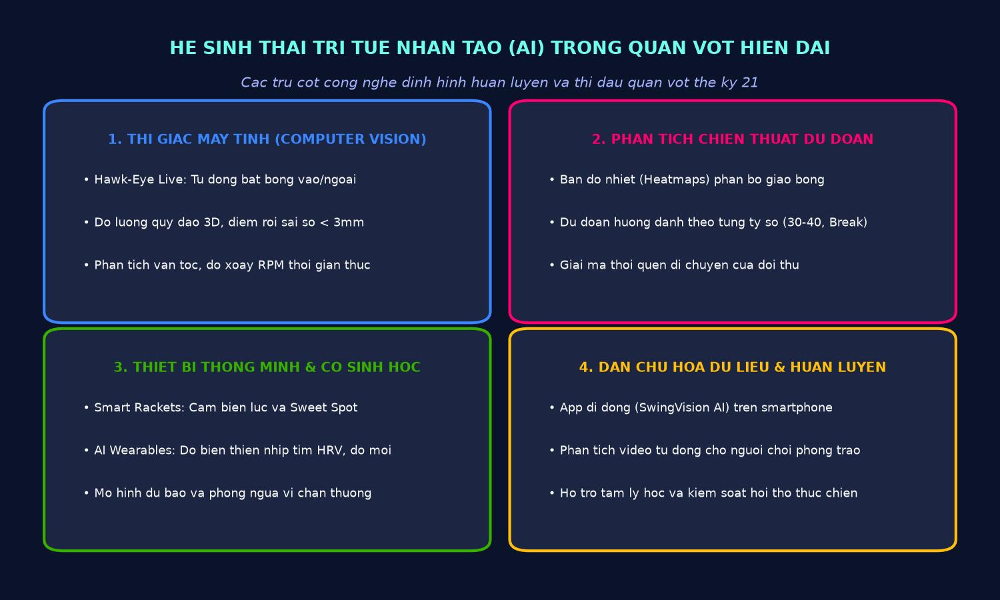
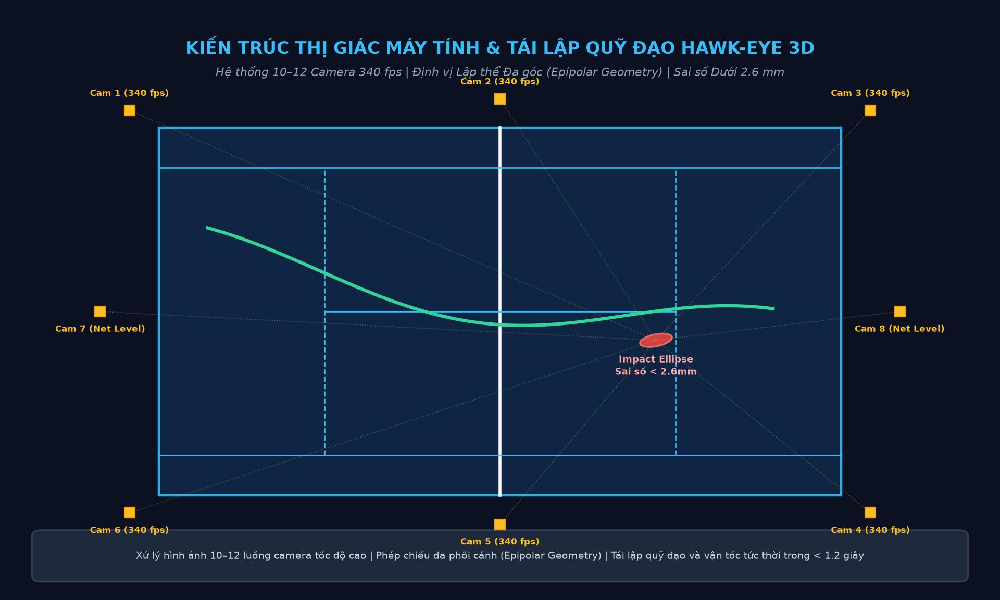
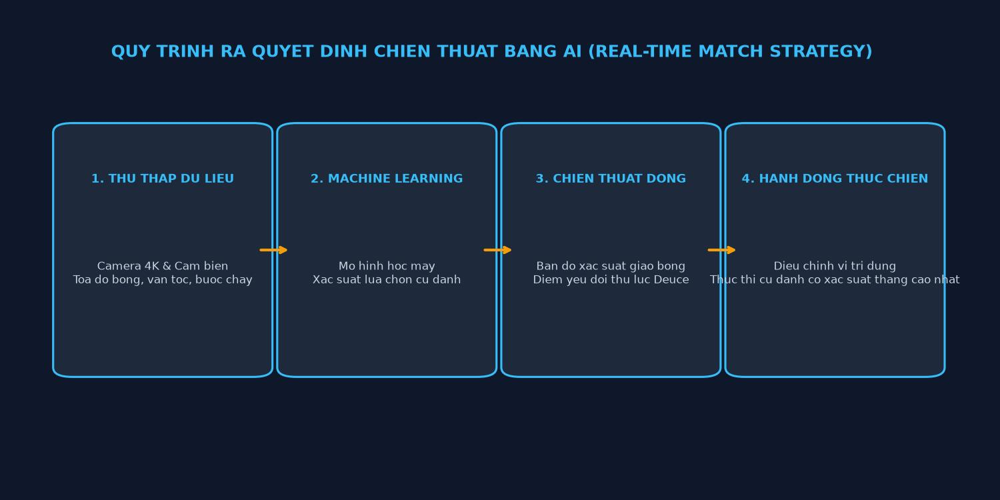
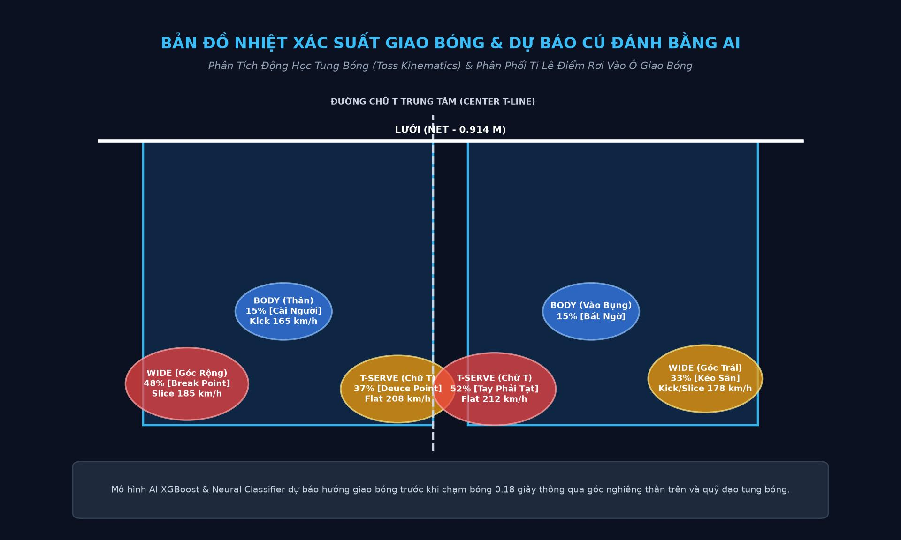
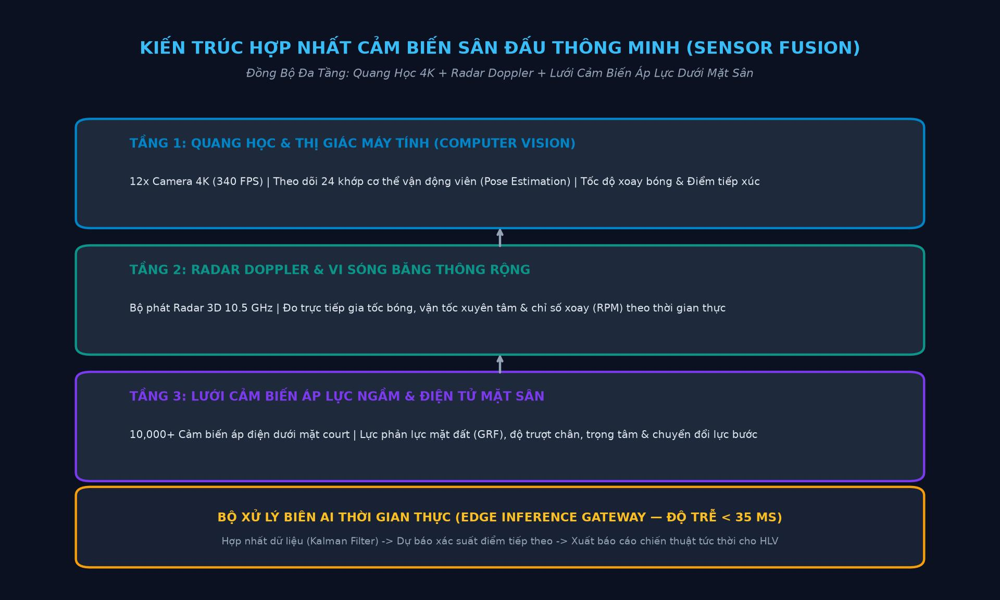
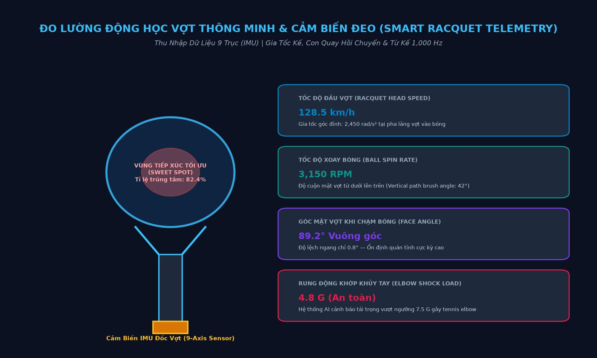
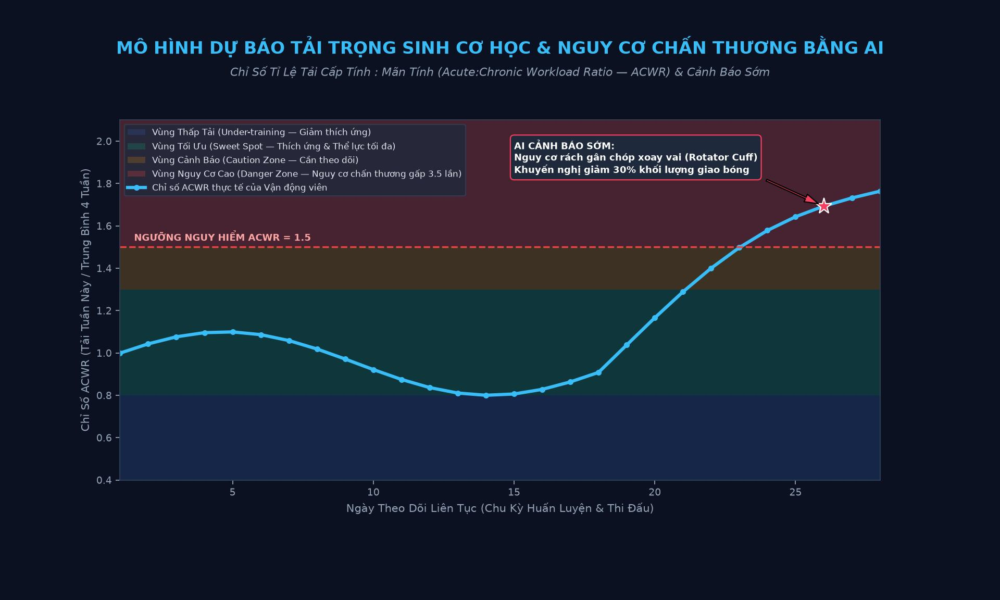
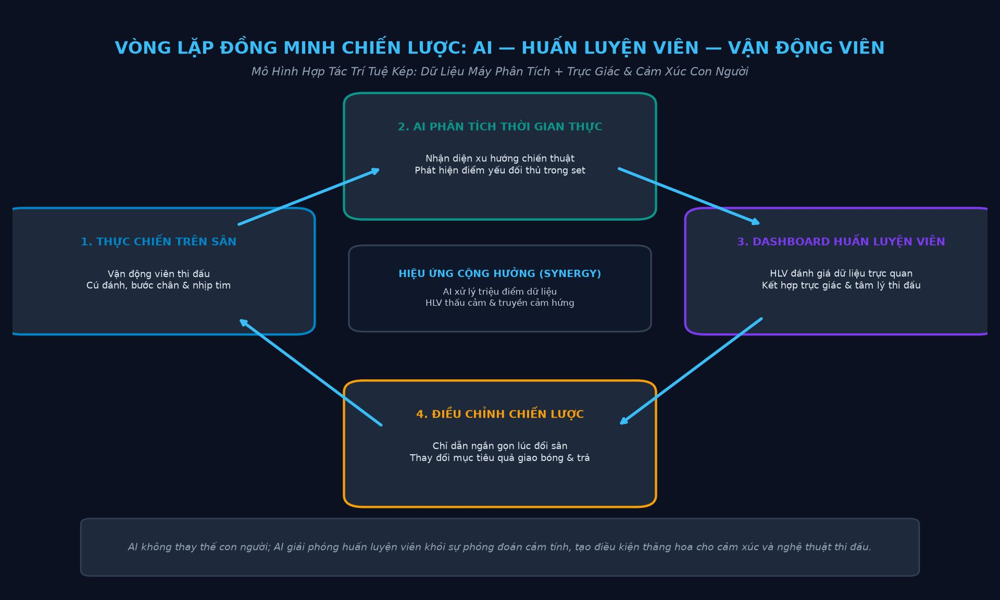
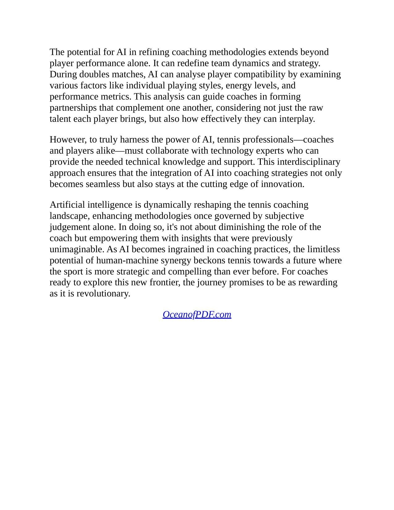
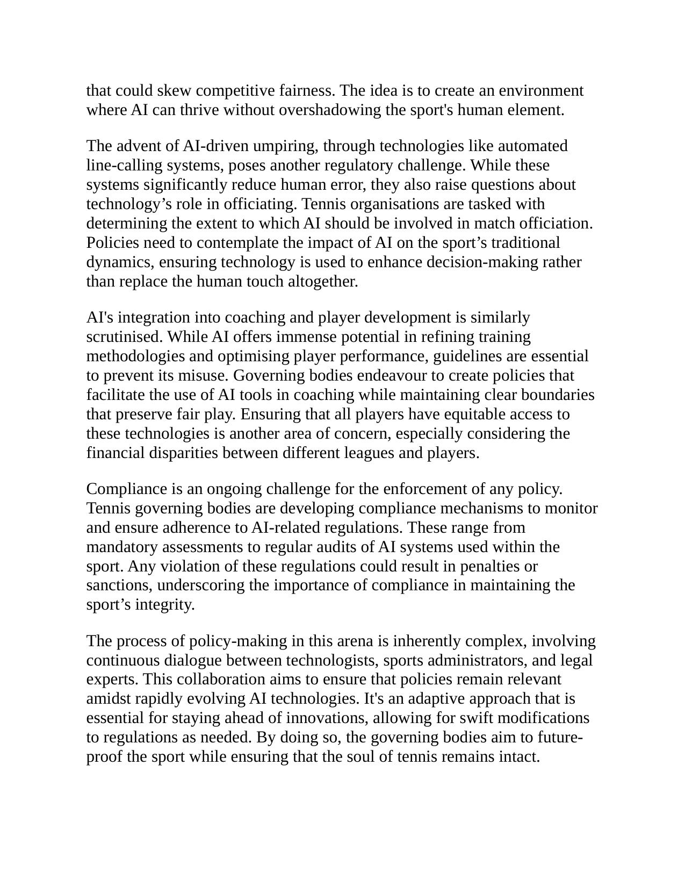

Game, Set, AI: Trí Tuệ Nhân Tạo Đang Định Hình Lại Môn Quần Vợt Như Thế Nào
Bản dịch Việt ngữ này chỉ dùng cho mục đích học tập cá nhân, phi thương mại. Bản quyền tác phẩm gốc thuộc về tác giả và nhà xuất bản.
Phần I: Giao Lộ Giữa Quần Vợt & Trí Tuệ Nhân Tạo — Cuộc Cách Mạng Dữ Liệu Lớn
Mở Đầu: Cuộc Cách Mạng Công Nghệ Tại Giao Lộ Quần Vợt Introduction: The Technological Revolution in Tennis
Thế giới quần vợt đang trên đà của một cuộc cách mạng công nghệ và trung tâm của sự chuyển đổi này là trí tuệ nhân tạo (AI). Trong lịch sử, quần vợt dựa vào trực giác, kỹ năng và chiến lược của các tay vợt và huấn luyện viên. Đó là một trò chơi bắt nguồn từ truyền thống và thường khó thay đổi. Tuy nhiên, sự ra đời gần đây của công nghệ AI đã bắt đầu định hình lại mọi khía cạnh của môn thể thao này, đặt ra những thách thức mới và cơ hội chưa từng có.
Introduction The world of tennis is on the cusp of a technological revolution, and at the heart of this transformation is artificial intelligence (AI). Historically, tennis relied on the intuition, skill, and strategy of its players and coaches. It was a game rooted in tradition, often resistant to change. However, the recent advent of AI technologies has
Hãy tưởng tượng một môn thể thao trong đó các thuật toán dựa trên dữ liệu có thể phân tích hiệu suất của tay vợt trong thời gian thực, đề xuất các điều chỉnh chiến lược với độ chính xác cao. Sự hội tụ ly kỳ của thể thao trình độ cao và công nghệ tiên tiến này không chỉ là lý thuyết - nó đã diễn ra. Từ việc nâng cao hiệu suất của tay vợt đến tối ưu hóa các chiến lược huấn luyện, AI đang mang đến cho trò chơi mức độ chính xác và hiểu biết sâu sắc hiếm thấy trước đây.
begun to reshape every aspect of the sport, presenting new challenges and unprecedented opportunities. Imagine a sport where data-driven algorithms can analyse a player's performance in real-time, suggesting strategic adjustments with pinpoint accuracy. This thrilling convergence of high-level athletics and advanced technology is not just theoretical — it's already happening. From enhancing player performance to optimising coaching strategies, AI
Đối với tay vợt, việc tích hợp AI có nghĩa là quyền truy cập vào mức độ phản hồi được cá nhân hóa tuyệt vời. Các thuật toán học máy (Machine Learning) tiên tiến đánh giá mọi thứ, từ sự tinh tế về cơ sinh học của một cú giao bóng cho đến hiệu quả của chuyển động trên sân. Tay vợt có thể tinh chỉnh các kỹ thuật của mình với mức độ chính xác một khi trí tưởng tượng bị giới hạn. Khi các công cụ AI ngày càng tinh vi hơn, chúng mang đến những khía cạnh đào tạo mới có thể nâng tầm ngay cả những vận động viên nghiệp dư lên tầm cao hơn.
is imbuing the game with a level of precision and insight rarely seen before. For players, the integration of AI means access to an unparalleled level of personalised feedback. Advanced machine learning algorithms assess everything from the biomechanical subtleties of a serve to the efficiency of movement on the court. Players can refine their techniques with a level of precision once restricted to the imagination. As AI tools
Các huấn luyện viên cũng đang coi AI là một đồng minh đáng gờm. Các phương pháp huấn luyện truyền thống đang được tăng cường bằng các phân tích do AI cung cấp để cung cấp những hiểu biết sâu sắc từng được cho là không thể. Những công nghệ này nâng cao khả năng ra quyết định bằng cách cung cấp sự hiểu biết sâu sắc hơn về động lực của trò chơi và tâm lý tay vợt. Đối với những người cam kết đổi mới, AI không thay thế được kinh nghiệm phong phú của quá trình huấn luyện dày dặn; thay vào đó, nó làm phong phú thêm nó, nâng cao ranh giới của những gì huấn luyện viên có thể đạt được.
grow more sophisticated, they offer new dimensions of training that can elevate even amateur athletes to greater heights. Coaches, too, are finding AI to be a formidable ally. Traditional coaching methods are being augmented with AI-powered analytics that provide insights once thought impossible. These technologies enhance decision- making by offering a deeper understanding of game dynamics and player psychology. For those committed to innovation, AI doesn't replace the rich experience of seasoned coaching; instead, it
Hơn nữa, tầm ảnh hưởng của AI còn vượt ra ngoài sân đấu, định hình lại cách khán giả trên toàn thế giới trải nghiệm trò chơi. Khi khán giả tham gia kỹ thuật số nhiều hơn, các nền tảng do AI điều khiển sẽ cung cấp nội dung được cá nhân hóa và trải nghiệm tương tác. Người hâm mộ đang bắt đầu thưởng thức quần vợt theo những cách mà trước đây không thể tưởng tượng được. Thực tế ảo, phát trực tuyến được cá nhân hóa và lớp phủ dữ liệu tương tác đang biến chế độ xem thụ động thành một cuộc phiêu lưu hấp dẫn.
enriches it, moving the boundaries of what coaches can achieve. Furthermore, AI's influence extends beyond the court, reshaping how the game is experienced by audiences worldwide. As spectators become more digitally engaged, AI-driven platforms offer personalised content and interactive experiences. Fans are beginning to enjoy tennis in ways previously unimaginable. Virtual reality, personalised streaming, and interactive data overlays are transforming passive viewing into an
Tuy nhiên, việc tích hợp AI vào quần vợt không phải là không có những thách thức. Giống như bất kỳ sự phát triển công nghệ nào, các câu hỏi về đạo đức nảy sinh về quyền riêng tư dữ liệu, khả năng xảy ra những hậu quả không lường trước được và tính toàn vẹn của môn thể thao này. Việc cân bằng những cân nhắc này sẽ rất quan trọng khi các bên liên quan điều hướng thế giới mới dũng cảm này. Đảm bảo lối chơi công bằng và duy trì tinh thần cạnh tranh của trò chơi sẽ đòi hỏi phải có quy định chu đáo và minh bạch.
immersive adventure. However, the integration of AI into tennis is not without its challenges. As with any technological evolution, ethical questions arise about data privacy, the potential for unintended consequences, and the integrity of the sport. Balancing these considerations will be crucial as stakeholders navigate this brave new world. Ensuring fair play and maintaining the game's competitive spirit will require thoughtful regulation and transparency. The
Hành trình kết hợp AI và quần vợt cũng liên quan đến việc đón nhận sự đổi mới cũng như bảo tồn bản chất của môn thể thao này. Quần vợt luôn là sự kết hợp độc đáo giữa sức mạnh, chiến lược và sự thanh lịch. Việc kết hợp AI chỉ đơn giản là tạo thêm một lớp phức tạp và thú vị mới. Đó không phải là thay thế yếu tố con người; đó là việc nâng cao nó theo những cách tôn vinh lịch sử lâu đời của trò chơi đồng thời mạnh dạn hướng tới tương lai.
journey through the merging of AI and tennis is as much about embracing innovation as it is about preserving the essence of the sport. Tennis has always been about the unique blend of strength, strategy, and elegance. Incorporating AI simply adds a new layer of complexity and excitement. It's not about replacing the human element;
Khi chúng ta đi sâu vào sự phức tạp của quá trình chuyển đổi công nghệ này, chúng ta thấy rõ rằng tiềm năng ảnh hưởng đến quần vợt của AI là rất lớn. Từ việc cải thiện sự an toàn của tay vợt bằng các mô hình dự báo chấn thương cho đến cách mạng hóa việc tìm kiếm tài năng, các ứng dụng của nó rất đa dạng. Các chương tiếp theo sẽ tìm hiểu xem sự phát triển của AI có thể dẫn đến các chiến lược cạnh tranh thông minh hơn, phương pháp đào tạo sáng tạo và cuối cùng là một trò chơi toàn diện hơn có thể mang lại lợi ích cho tất cả mọi người từ những chuyên gia hàng đầu đến những người nghiệp dư đam mê.
it's about enhancing it in ways that honour the game's storied past while looking boldly towards the future. As we delve into the intricacies of this technological transformation, it becomes clear that AI's potential to influence tennis is vast. From improving player safety with predictive injury models to revolutionising talent scouting, its applications are diverse. The coming chapters will explore how AI's evolution will likely lead to smarter competition strategies, innovative training methodologies, and ultimately, a more
AI trong quần vợt là một câu chuyện đang phát triển. Đó là việc lấy cảm hứng từ sự kết hợp giữa công nghệ và thể thao, thu hút trí tưởng tượng của người hâm mộ, tay vợt cũng như huấn luyện viên. Mặc dù con đường phía trước vẫn chưa được viết sẵn nhưng điều chắc chắn là vai trò của AI trong quần vợt không phải là một xu hướng nhất thời mà là một sự thay đổi lâu dài. Thông qua sự kết hợp giữa trí tuệ từ quá khứ và sự đổi mới cho tương lai, chúng tôi đang sẵn sàng ở một ngã tư thú vị. Quần vợt, với sự hỗ trợ của AI, sẽ tiếp tục gây hồi hộp, thử thách và truyền cảm hứng theo những cách mà chúng ta chỉ mới bắt đầu tưởng tượng.
inclusive game that can benefit everyone from top-tier professionals to passionate amateurs. AI in tennis is an evolving narrative. It's about taking inspiration from the confluence of technology and sport, capturing the imagination of fans, players, and coaches alike. While the road ahead is unwritten, what is certain is that AI's role in tennis is not a fleeting trend but an enduring shift. Through a combination of wisdom from the past and innovation for the future, we're poised at an exciting

Hình 1: Hệ sinh thái Trí tuệ Nhân tạo trong Quần vợt Hiện đại — Tích hợp dòng dữ liệu thời gian thực, thị giác máy tính, phân tích động học và hỗ trợ ra quyết định chiến thuật.
crossroads. Tennis, with AI by its side, will continue to thrill, challenge, and inspire in ways we've only just begun to imagine.
Chương 1: Giao Lộ Giữa Quần Vợt & Trí Tuệ Nhân Tạo Chapter 1: The Intersection of Tennis and AI
Khi thế giới quần vợt gặp giới hạn của trí tuệ nhân tạo (AI), thật thú vị khi thấy truyền thống và công nghệ đan xen vào nhau để định nghĩa lại môn thể thao này như thế nào. Vào thời điểm này, AI nổi lên không chỉ với tư cách là tay vợt hỗ trợ mà còn là lực lượng then chốt trong việc định hình lại bối cảnh cạnh tranh. Từ việc tinh chỉnh kỹ năng của tay vợt đến việc tạo ra các phương pháp huấn luyện ưu việt, AI ảnh hưởng đến mọi khía cạnh của trò chơi. Hãy tưởng tượng một tương lai nơi các thuật toán đào sâu vào hiệu suất của tay vợt, cung cấp những hiểu biết sâu sắc từng là lĩnh vực của các huấn luyện viên dày dạn kinh nghiệm. Với tư cách là những người đam mê và chuyên nghiệp, chúng tôi đang đứng ở ngã tư biến đổi này, chứng kiến sự kết hợp giữa trực giác của con người với độ chính xác tính toán. Giao điểm này báo trước một kỷ nguyên mới, nơi tiềm năng chưa được khai thác và cơ hội phát triển là vô tận. Với sự phát triển không ngừng của AI, quần vợt đã sẵn sàng cho một cuộc cách mạng, xuyên suốt lịch sử bằng một chút ma thuật kỹ thuật số.
Chapter 1: The Intersection of Tennis and AI As the world of tennis meets the frontier of artificial intelligence, it's fascinating to see how tradition and technology intertwine to redefine the sport. At this juncture, AI emerges not just as a supporting player but as a pivotal force in reshaping the competitive landscape. From fine-tuning player skills to crafting superior coaching methodologies, AI influences every facet of the game. Imagine a future where algorithms delve into the depths of player performance, offering insights that were once the domain of seasoned coaches. As enthusiasts and professionals, we stand at this transformative crossroads, witnessing the melding of human intuition with computational precision. This intersection heralds a new era where potential is unharnessed, and opportunities for growth are boundless. With AI’s continuous evolution, tennis is poised for a
1.1 Trí Tuệ Nhân Tạo Là Gì? (What is Artificial Intelligence?)
Về cốt lõi của trí tuệ nhân tạo (AI), có một nghịch lý: AI vừa khó nắm bắt một cách đáng ngạc nhiên nhưng lại ngày càng phổ biến. Nó đồng thời là chủ đề của các cuộc tranh luận triết học và một thực tế thực tế, thay đổi cuộc sống và các ngành công nghiệp mà chúng ta không hề nhận ra rằng nó đã thâm nhập vào thế giới của chúng ta nhanh như thế nào. Vậy chính xác thì trí tuệ nhân tạo (AI) là gì? Nó không chỉ là những cỗ máy thực hiện nhiệm vụ. AI đề cập đến sự phát triển của hệ thống máy tính có khả năng tham gia vào các nhiệm vụ truyền thống đòi hỏi trí thông minh của con người, chẳng hạn như ra quyết định, nhận thức trực quan, nhận dạng giọng nói và dịch ngôn ngữ.
revolution, weaving its way through history with a touch of digital magic. What is Artificial Intelligence? At the very core of artificial intelligence (AI), there's a paradox: AI is both surprisingly elusive yet increasingly ubiquitous. It's simultaneously a subject of philosophical debates and a practical reality, changing lives and industries without us always noticing how swiftly it has permeated our world. So, what exactly is artificial intelligence? It's more than just machines performing tasks. AI refers to the development of computer systems capable of engaging in
AI hoạt động rộng rãi thông qua các hệ thống nhận biết môi trường, xử lý dữ liệu, đưa ra quyết định và hành động để đạt được các mục tiêu cụ thể. Những hệ thống này học hỏi từ kinh nghiệm và giải quyết các vấn đề phức tạp nhanh hơn bất kỳ con người nào có thể làm được. Bao gồm các lĩnh vực con như học máy (Machine Learning), học sâu, xử lý ngôn ngữ tự nhiên và mạng lưới thần kinh, AI sử dụng các thuật toán để đưa ra quyết định với mức độ phức tạp có thể thay đổi rất nhiều.
tasks traditionally requiring human intelligence, such as decision-making, visual perception, speech recognition, and language translation. AI operates broadly through systems that perceive their environment, process data, make decisions, and act to achieve specific goals. These systems learn from experience and solve complex problems faster than any human being could. Consisting of subfields like machine learning, deep learning, natural language processing,
Trong quần vợt, lĩnh vực AI rộng lớn này hoạt động gần giống như một huấn luyện viên vô hình, hướng dẫn các buổi tập luyện và trận đấu bằng cách cung cấp hỗn hợp dữ liệu, hình ảnh và phân tích mà không con người nào có thể tự xử lý được. Hãy tưởng tượng một hệ thống nghiên cứu các cú đánh của một vận động viên quần vợt, so sánh chúng với hàng triệu người khác trong lịch sử và đề xuất những cải tiến một cách chính xác. Đó là AI đang hoạt động.
and neural networks, AI utilises algorithms to make decisions with a level of complexity that can vary immensely. In tennis, this vast field of AI behaves almost like an unseen coach, guiding practice sessions and matches by supplying an amalgam of data, visuals, and analyses that no human could process on their own. Imagine a system studying
Để nắm bắt được bản chất của AI, người ta phải tính toán các mục tiêu của nó: xác định các mô hình, học hỏi từ dữ liệu, dự đoán kết quả và tối ưu hóa kết quả. Về cơ bản, các hệ thống AI nhằm mục đích cung cấp các giải pháp chính xác và hiệu quả hơn so với các giải pháp tương tự của con người—một kỳ tích đạt được thông qua việc xử lý khối lượng dữ liệu khổng lồ. Khả năng hiểu và sử dụng dữ liệu đó cho phép AI vượt quá khả năng của con người trong các lĩnh vực cụ thể. Từng bị giới hạn trong các phòng thí nghiệm nghiên cứu, AI giờ đây chạm đến vô số khía cạnh của cuộc sống, từ trợ lý ảo trong nhà của chúng ta đến các ngành có tính rủi ro cao như tài chính và chăm sóc sức khỏe—và tất nhiên, cả thể thao.
the strokes of a tennis player, comparing them against millions of others from history and suggesting improvements with precision. That's AI in action. To grasp AI's essence, one must reckon with its goals: to identify patterns, learn from data, predict outcomes, and optimize results. Essentially, AI systems aim to provide solutions that are more accurate and efficient than their human counterparts—a feat achieved through processing enormous volumes of data. The ability to understand and utilize such data allows AI to exceed human abilities in specific domains. Once confined to research labs,
Một trong những yếu tố chính của AI là học máy (Machine Learning), cung cấp cho các hệ thống khả năng cải thiện việc học hỏi từ trải nghiệm của chúng một cách tự chủ. Trong môn quần vợt, các thuật toán học máy (Machine Learning) sẽ phân tích cảnh quay trận đấu, xác định các kiểu mẫu và chiến thuật mà ngay cả con mắt được đào tạo bài bản nhất cũng có thể thoát khỏi. Đối với huấn luyện viên và tay vợt, điều đó có nghĩa là khả năng tiếp cận những hiểu biết sâu sắc chưa từng có có thể được tận dụng để hoàn thiện các kỹ năng và suy nghĩ lại chiến lược theo những cách chưa từng có trước đây.
AI now touches myriad facets of life, from virtual assistants in our homes to high-stakes industries like finance and healthcare—and, of course, sports. One of the primary elements of AI is machine learning, which provides systems with the ability to improve learning from their experiences autonomously. In tennis, machine learning algorithms analyse match footage, identifying patterns and tactics that might escape even the most trained human eye. For coaches and players, it means an access to
Các thành phần AI thiết yếu khác, chẳng hạn như xử lý ngôn ngữ tự nhiên và thị giác máy tính (Computer Vision), đóng vai trò quan trọng trong bối cảnh AI rộng lớn hơn. Xử lý ngôn ngữ tự nhiên cho phép các hệ thống hiểu, giải thích và phản hồi ngôn ngữ của con người. Không khó để tưởng tượng ứng dụng của nó trong việc tạo ra các nền tảng giao tiếp tiên tiến giữa huấn luyện viên, tay vợt và nhà phân tích, cung cấp phản hồi và hiểu biết sâu sắc theo thời gian thực. Trong khi đó, thị giác máy tính (Computer Vision) cho phép AI hiểu được hình ảnh, khiến nó trở thành nhân tố chủ chốt trong các công nghệ phân tích video được sử dụng rộng rãi trong đào tạo quần vợt ngày nay.
unparalleled insights that can be leveraged to refine skills and rethink strategies in ways never before possible. Other essential AI components, such as natural language processing and computer vision, play critical roles in the broader AI landscape. Natural language processing enables systems to understand, interpret, and respond to human language. It isn't hard to imagine its application in creating advanced communication platforms between coaches, players, and analysts, providing real-time feedback and insights. Meanwhile, computer vision allows AI to understand images, making it a key player in video
Bất chấp những tiến bộ này, AI không phải là không có những thách thức và hạn chế. Việc tạo ra những hệ thống có thể hiểu được sắc thái cảm xúc và trực giác của con người vẫn cực kỳ khó khăn. Ngoài ra, trong khi AI vượt trội trong việc xử lý logic và dữ liệu cứng nhắc, tính ngẫu nhiên và tính sáng tạo vốn có của con người—hoặc trong một trận đấu quần vợt mang tính cạnh tranh cao—đặt ra những thách thức đáng kể. Liệu AI có thể thực sự hiểu được khả năng phục hồi tinh thần cần thiết trong một ván đấu quyết định hay lượng adrenaline dâng cao trong một bộ phim kinh dị dài 5 tập không? Như hiện tại, việc kết nối các yếu tố trải nghiệm của con người này vẫn là một thách thức đang diễn ra trong quá trình phát triển AI.
analysis technologies widely used in tennis training today. Despite these advancements, AI is not without its challenges and limitations. Creating systems that can understand the nuances of human emotion and intuition remains astoundingly difficult. Additionally, while AI excels in processing rigid logic and data, the randomness and creativity inherent in humans—or in a highly competitive tennis match—pose significant challenges. Can AI truly understand the mental resilience required in a tiebreaker or the adrenaline rush in a five-set thriller? As it stands, bridging these elements of human experience remains an ongoing challenge in AI
Đóng góp của AI cho quần vợt chỉ mới bắt đầu bộc lộ. Chúng tôi thấy sự xuất hiện của nó trong các máy ảnh hỗ trợ AI tự động lập danh mục các sự kiện trên sân, vợt thông minh (Smart Racket) theo dõi các dao động trong thời gian thực và các số liệu phức tạp cách mạng hóa số liệu thống kê của tay vợt. Tuy nhiên, tương lai còn hứa hẹn nhiều hơn thế. Khi công nghệ phát triển, chúng ta có thể sẽ chứng kiến sự tích hợp rộng hơn —các hệ thống AI không chỉ đề xuất chiến lược trò chơi mà còn thích ứng một cách trực quan, kết hợp liền mạch với trực giác trên sân của tay vợt.
development. AI's contribution to tennis is only beginning to unfold. We see its emergence in AI-powered cameras that automatically catalogue court events, smart rackets that monitor swings in real time, and sophisticated metrics that revolutionize player statistics. Yet, the future promises even more. As the technology matures, we'll likely witness broader integrations —AI systems that not only suggest game strategies but adapt intuitively, merging seamlessly with a player's on-court intuition. AI's potential is
Tiềm năng của AI rất sâu sắc và cuộc hành trình rất thú vị. Trong bối cảnh quần vợt, công nghệ không nhằm mục đích chiếm đoạt yếu tố con người. Nó nỗ lực để cùng tồn tại, nâng cao tài năng bẩm sinh của tay vợt và bổ sung cho sự nhạy bén chiến lược của huấn luyện viên. AI trở thành đối tác trong vũ điệu sáng tạo của thể thao, cung cấp một lăng kính qua đó có thể quan sát được động lực của môn quần vợt một cách rõ ràng hơn bao giờ hết.
profound, and the journey is exciting. In the context of tennis, the technology doesn't aim to usurp the human element. It endeavours to coexist, enhancing a player's natural talents and complementing the strategic acumen of coaches. AI becomes a partner in the creative dance of sport, offering a lens through which the dynamics of tennis
Khi AI tiếp tục phát triển, việc tích hợp nó vào quần vợt mang đến những khả năng thú vị. Hãy tưởng tượng dữ liệu thời gian thực được truyền liền mạch từ màn hình sân đấu đến thiết bị di động của tay vợt, phân tích mọi cú đánh với độ chính xác tuyệt đối. Điều này có thể cung cấp phản hồi tức thời, thay đổi thói quen đào tạo và lập kế hoạch chiến lược. Những người có tầm nhìn xa trong môn thể thao này đã đột phá trong không gian này, vượt qua ranh giới của những gì có thể và liên tục xác định lại khả năng của tay vợt.
can be observed with ever-greater clarity. As AI continues to advance, its integration into tennis offers exciting possibilities. Imagine real-time data seamlessly flowing from courtside monitors to a player's mobile device, analyzing every shot with pinpoint accuracy. This could provide instantaneous feedback, transforming training routines and strategic planning. Visionaries in the sport are already breaking ground in this space, pushing the boundaries of what's possible and
Tuy nhiên, mặc dù AI mang lại những khả năng biến đổi nhưng nó cũng đi kèm với những trách nhiệm không thể bỏ qua. Những cân nhắc về đạo đức, mối quan tâm về quyền riêng tư và nhu cầu về sự công bằng trong thể thao vẫn là điều tối quan trọng. Sức mạnh quyến rũ của AI phải được xử lý cẩn thận để đảm bảo rằng những tiến bộ sẽ làm phong phú hơn chứ không làm lu mờ các yếu tố con người vốn không thể thiếu trong quần vợt—niềm đam mê, sự khéo léo và tinh thần.
constantly redefining the player's capabilities. However, while AI offers transformative capabilities, it comes with responsibilities that can't be ignored. Ethical considerations, privacy concerns, and the need for fairness in sport remain paramount. The seductive power of AI must be handled with care to ensure that the advancements enrich rather than overshadow the human elements so integral to tennis—passion,
Chúng ta đang ở thời điểm giao thoa giữa AI và quần vợt, nơi gặp gỡ giữa truyền thống và công nghệ. Đây không chỉ đơn thuần là một sự phát triển của thể thao; đó là sự hình dung lại những gì có thể đạt được. Khi AI trở nên gắn bó hơn với quần vợt, nó mời gọi tay vợt, huấn luyện viên và những người đam mê đón nhận một tương lai nơi những hiểu biết sâu sắc dựa trên dữ liệu và trực giác của con người hội tụ để nâng trò chơi lên những tầm cao chưa được khám phá. Chỉ có thời gian mới có thể nói lên toàn bộ tác động của AI, nhưng lời hứa của nó là trao quyền, đổi mới và thách thức các giới hạn trước đây chỉ do khả năng của con người đặt ra.
ingenuity, and spirit. We're at an inflection point where AI and tennis intersect, a meeting ground of tradition and technology. This isn't merely an evolution of sport; it's a reimagination of what's attainable. As AI becomes more intertwined with tennis, it invites players, coaches, and enthusiasts to embrace a future where data-driven insights and human intuition converge to elevate the game to unexplored heights. Only time will tell the full scale of AI's impact, but its promise is one of empowerment, innovation, and
1.2 Những Bước Đi Đầu Tiên Của AI Trong Thể Thao (Early Uses of AI in Sports)
Sự giao thoa ban đầu giữa trí tuệ nhân tạo (AI) và thể thao là một cuộc cách mạng nhẹ nhàng đặt nền móng cho những tiến bộ công nghệ ngày nay. Điều thú vị là việc sử dụng AI ban đầu lại liên quan đến bản chất của thống kê và phân tích dữ liệu thể thao. Các nhà phân tích bắt đầu với nhiệm vụ thô sơ là sàng lọc hàng loạt dữ liệu để xác định các mô hình và xu hướng có thể ảnh hưởng đến chiến lược trò chơi. Tuy nhiên, phạm vi còn hạn chế vì sức mạnh tính toán còn ở giai đoạn sơ khai và các thuật toán còn ở mức cơ bản.
a challenge to the limits heretofore laid down by human ability alone. Early Uses of AI in Sports The early intersection of artificial intelligence and sports was an understated revolution that laid the foundation for today's technological advancements. Interestingly, the initial uses of AI hark back to the essence of sports statistics and data analysis. Analysts began with the rudimentary task of sifting through reams of
Một trong những môn thể thao đầu tiên áp dụng tích hợp AI là bóng chày, môn thể thao nổi tiếng với các số liệu có thể định lượng được. Sự ra đời của các mô hình thống kê do AI điều khiển đã giúp các đội đánh giá hiệu suất của tay vợt và tối ưu hóa chiến lược, mở đường cho các phương pháp tiếp cận trò chơi tập trung vào dữ liệu và phân tích hơn. Đây là sự khởi đầu của một sự thay đổi sâu sắc, khi ngôn ngữ AI bắt đầu đi vào từ vựng của các chuyên gia thể thao.
data to identify patterns and trends that could influence game strategies. Yet, the scope was limited, as computational power was in its infancy, and algorithms were basic. One of the first sports to flirt with AI integration was baseball, famously known for its quantifiable metrics. The introduction of AI-driven statistical models helped teams evaluate player performance and optimise strategies,
Tuy nhiên, các ứng dụng ban đầu của AI không chỉ về dữ liệu và phân tích. Ví dụ, trong bóng đá, hệ thống AI được sử dụng để tạo ra các mô hình mô phỏng cho phép huấn luyện viên dự đoán kết quả của các tình huống trận đấu khác nhau. Điều này cung cấp một lăng kính mới để xem xét các chiến lược trận đấu, một lăng kính bổ sung cho trực giác và kinh nghiệm của các huấn luyện viên dày dặn kinh nghiệm. Những mô phỏng như vậy bắt đầu thu hút được sự chú ý, mang đến cái nhìn thoáng qua về tương lai nơi máy móc có thể tăng cường đáng kể khả năng ra quyết định của con người.
paving the way for more analytical and data-centric approaches to the game. This was the beginning of a profound shift, as the language of AI started entering the lexicon of sports professionals. However, AI's early applications weren't just about data and analysis. In football, for instance, AI systems were used to create simulation models that allowed coaches to predict outcomes of various game scenarios. This provided a new lens through which to view
Những cải tiến như vậy không chỉ giới hạn ở giới chuyên môn. Các tổ chức giáo dục nhanh chóng nhận ra tiềm năng của AI trong giáo dục thể thao, kết hợp nó vào các khóa học khoa học thể thao. Điều này dẫn đến sự quan tâm ngày càng tăng của sinh viên và các chuyên gia thể thao đầy tham vọng, mong muốn tận dụng tiềm năng của AI để cách mạng hóa các phương pháp truyền thống.
match strategies, one that complemented the intuition and experience of seasoned coaches. Such simulations began to gain traction, offering a glimpse into a future where machines could significantly augment human decision-making. Such enhancements were not limited to professional circles. Educational institutions quickly recognised the potential of AI
Trong khi đó, trong đua xe, khả năng xử lý các tính toán dữ liệu tốc độ cao, phức tạp của AI đã tìm thấy chỗ đứng của mình. Các hệ thống đo từ xa tiên tiến được hỗ trợ bởi thuật toán AI trở nên không thể thiếu, cung cấp khả năng phân tích theo thời gian thực vượt xa những gì các nhà phân tích con người có thể xử lý thủ công. Công nghệ này cho phép các đội thực hiện các điều chỉnh sắc thái cho phương tiện của họ, một yếu tố thay đổi cuộc chơi mang lại lợi thế cạnh tranh mới.
in sports education, incorporating it into sports science courses. This led to a burgeoning interest among students and aspiring sports professionals, eager to leverage AI's potential to revolutionise traditional approaches. Meanwhile, in motor racing, AI's prowess in handling complex, high-speed data computations found its niche. Advanced telemetry systems powered by AI algorithms became indispensable, providing real-time analytics far beyond what human
Cuộc hành trình chưa dừng lại ở đó. Ứng dụng của AI trong cơ sinh học thể thao đã mở ra nhiều khả năng, góp phần đáng kể vào thành tích của vận động viên và phòng ngừa chấn thương. Hệ thống ghi lại chuyển động, được tăng cường bằng thuật toán AI, cho phép phân tích phức tạp về kỹ thuật và hình thức của vận động viên. Mức độ chi tiết này mang tính biến đổi, mang đến cho huấn luyện viên một phương pháp mang tính cách mạng để tinh chỉnh kỹ thuật và tối đa hóa hiệu quả thể thao.
analysts could process manually. This technology allowed teams to make nuanced adjustments to their vehicles, a game- changer that introduced a new competitive edge. The journey didn't stop there. AI's application in sports biomechanics opened up a realm of possibilities, contributing significantly to athlete performance and injury prevention. Motion capture systems, enhanced by AI algorithms, allowed for intricate analyses of an
Trong quần vợt, sự tương tác ban đầu với AI phản ánh những con đường tương tự được thấy trong các môn thể thao khác. Ban đầu, phân tích video có sự hỗ trợ của AI đã giúp huấn luyện viên và tay vợt mổ xẻ các trận đấu kỹ lưỡng hơn, xác định các khía cạnh tinh tế của lối chơi mà có thể không được chú ý. Những khả năng này cho phép hiểu biết sâu sắc hơn về chiến thuật của tay vợt và các lĩnh vực cần cải thiện. Những công cụ như vậy bắt đầu thay đổi cách tiến hành các buổi đào tạo, kết hợp kinh nghiệm truyền thống với công nghệ tiên tiến.
athlete's technique and form. This level of detail was transformative, offering coaches a revolutionary way to refine technique and maximise athletic efficiency. In tennis, the early interaction with AI mirrored similar paths seen in other sports. Initially, AI-assisted video analysis helped coaches and players dissect matches more thoroughly, identifying subtle aspects of play that might otherwise go unnoticed. These capabilities allowed for deeper insights into a player's tactics
Cuộc cách mạng AI trong thể thao không chỉ giới hạn ở cấp độ chuyên nghiệp. Các sáng kiến cấp cơ sở đã tận dụng AI để giúp thể thao trở nên dễ tiếp cận và toàn diện hơn. Công nghệ quay video tự động, được hỗ trợ bởi AI, cho phép các vận động viên nghiệp dư có được thông tin chi tiết ở cấp độ chuyên nghiệp về thành tích của họ mà không phải trả chi phí quá cao liên quan đến phân tích như vậy. Quá trình dân chủ hóa phân tích thể thao này đã thúc đẩy một loại hình tương tác mới, khuyến khích sự tham gia nhiều hơn ở các nhóm tuổi và trình độ kỹ năng khác nhau.
and areas for improvement. Such tools began to transform the way training sessions were conducted, blending traditional experience with cutting-edge technology. The AI revolution in sports wasn't confined to the professional level. Grassroots initiatives leveraged AI to make sports more accessible and inclusive. Automated video capture technology, powered by AI, allowed amateur athletes to obtain professional-level insights about their performance without the prohibitive costs traditionally associated with such analysis. This democratisation of
Trước kỷ nguyên AI, việc tìm kiếm và phát triển nhân tài phụ thuộc rất nhiều vào trực giác của con người. Tuy nhiên, khi công nghệ AI trưởng thành, chúng bắt đầu bổ sung cho các quy trình này độ chính xác dựa trên dữ liệu. Trong bóng đá, hệ thống AI bắt đầu đánh giá tay vợt dựa trên lượng lớn dữ liệu trận đấu, hỗ trợ các tuyển trạch viên xác định và nuôi dưỡng những tài năng đầy triển vọng. Cách tiếp cận nhiều mặt này đã mang đến một mức độ nghiêm ngặt và rõ ràng mới cho các chiến lược tuyển dụng, cho phép các nhóm đưa ra quyết định sáng suốt hơn.
sports analytics fuelled a new kind of engagement, encouraging more participation across various age groups and skill levels. Before the AI era, scouting and talent development heavily relied on human intuition. However, as AI technologies matured, they began to supplement these processes with data-driven precision. In football, AI systems started evaluating players based on vast amounts of match data, assisting scouts in identifying and nurturing promising talent. This multifaceted approach introduced
Việc sử dụng AI ban đầu này trong thể thao mang đến một tấm thảm đổi mới vượt qua các ranh giới truyền thống, mang đến cái nhìn thoáng qua về những gì có thể thực hiện được khi chuyên môn của con người đáp ứng được tiến bộ công nghệ. Khi khả năng tính toán tăng lên, trí tưởng tượng và ứng dụng của AI cũng tăng theo. Nó đặt nền tảng cho các hệ thống phức tạp ngày nay và các giải pháp AI tích hợp liền mạch nhằm tiếp tục xác định lại cách chơi, huấn luyện và trải nghiệm thể thao trên khắp thế giới.
a new level of rigour and clarity to recruitment strategies, enabling teams to make more informed decisions. These early uses of AI in sports offer a tapestry of innovation that transcended traditional boundaries, providing a glimpse of what was possible when human expertise met technological advancement. As computational capabilities grew, so did the imagination and application of AI. It laid the groundwork for
Sự ra đời của AI trong thể thao đã mang tính thay đổi, khuấy động cả sự phấn khích lẫn sự hoài nghi trong cộng đồng. Những thành tựu ban đầu đóng vai trò là chất xúc tác để khám phá sâu hơn, truyền cảm hứng cho các nhà nghiên cứu và nhà công nghệ nghiên cứu sâu hơn về các ứng dụng tiềm năng của AI. Điều này tạo tiền đề cho một sự phát triển công nghệ mà cuối cùng đã định hình bối cảnh thể thao hiện đại, tạo ra sự tương tác năng động giữa truyền thống và đổi mới.
today's sophisticated systems and seamlessly integrated AI solutions that continue to redefine how sports are played, coached, and experienced around the world. The advent of AI in sports was transformational, stirring up both excitement and scepticism within the community. The initial achievements served as a catalyst for further exploration, inspiring researchers and technologists to delve deeper into AI's potential
1.3 Những Ứng Dụng Khởi Đầu Của AI Trong Quần Vợt (AI's Initial Steps in Tennis)
Quá trình tích hợp trí tuệ nhân tạo (AI) vào lĩnh vực quần vợt bắt đầu một cách tinh tế, giống như những vệt sáng nhẹ nhàng đầu tiên của bình minh lướt qua bầu trời. Môn thể thao đậm chất truyền thống và duyên dáng này không thể bỏ qua lời kêu gọi rõ ràng về cuộc tiến quân không ngừng nghỉ của công nghệ. Việc AI bước chân vào lĩnh vực quần vợt không phải là một sự kiện thảm khốc; đúng hơn, nó diễn ra với sự cân nhắc kỹ lưỡng, nhằm mục đích nâng cao môn thể thao này mà không làm lu mờ các yếu tố con người trong đó. Ban đầu, AI tìm thấy vị trí của mình trong việc hỗ trợ các nhiệm vụ trần tục, làm việc không mệt mỏi ở hậu trường để biến dữ liệu thành vàng có thể khai thác để hiểu biết sâu sắc.
applications. This set the stage for a technological evolution that has ultimately shaped the modern landscape of sports, creating a dynamic interplay between tradition and innovation. AI's Initial Steps in Tennis The integration of artificial intelligence (AI) into the realm of tennis began subtly, like the first soft strokes of dawn brushing across the sky. The sport, steeped in tradition and grace, couldn't ignore the clarion call of technology's relentless march forward. AI's foray into tennis was not a cataclysmic event; rather, it unfolded with careful deliberation, aiming to enhance
Trong những năm hình thành này, sự chú ý của AI đối với quần vợt xoay quanh việc tổng hợp và phân tích dữ liệu. Quần vợt luôn là một trò chơi của những con số: quân át, lỗi kép, lỗi không bắt buộc và điểm break. Tuy nhiên, những con số này giờ đây đã bước sang một chiều hướng mới, chuyển sang dạng phân tích cung cấp tấm thảm thêu về sự phức tạp của trò chơi. Với AI, huấn luyện viên và tay vợt có thể khám phá các mô hình trước đây bị che khuất bởi khối lượng dữ liệu khổng lồ. AI, ở giai đoạn này, chủ yếu đóng vai trò là trợ lý thống kê, tổng hợp các số liệu hiệu suất có thể chỉ ra các lĩnh vực cần cải thiện tiềm năng—một công cụ vô giá trong đấu trường cạnh tranh.
the sport without overshadowing its human elements. Initially, AI found its place in aiding with mundane tasks, tirelessly working behind the scenes to transform data into gold that could be mined for insights. During these formative years, AI's attention to tennis revolved around data aggregation and analysis. Tennis has always been a game of numbers: aces, double faults, unforced errors, and breakpoints. However, these numbers now entered a new dimension, morphing into analytics that provided a tapestry of the game's intricacies. With AI, coaches and players
Hơn nữa, nó không chỉ là xử lý số thô. AI bắt đầu làm sáng tỏ những hiểu biết sâu sắc về sự hiểu biết trực quan. Các mô hình AI ban đầu có thể phân tích các kiểu chơi gợi ý khi nào tay vợt có thể được hưởng lợi từ việc hung hãn hơn hoặc khi nào chiến lược phòng thủ thận trọng hơn. Những hiểu biết sâu sắc này, dựa trên dữ liệu nhưng được tăng cường bằng mô hình dự báo, bắt đầu vận động để được công nhận trong các phương pháp huấn luyện truyền thống. Các huấn luyện viên, một số ban đầu tỏ ra nghi ngờ, nhận thấy họ đang dựa vào AI khi họ cân bằng giữa kiến thức chuyên môn lâu đời với công nghệ thời đại mới.
could uncover patterns previously obscured by the sheer volume of data. AI, at this stage, served primarily as a statistical assistant, compiling performance metrics that could point to potential areas of improvement—an invaluable tool in the competitive arena. Moreover, it wasn't just about processing raw numbers. AI began to unravel insights that bordered on intuitive understanding. Early AI models could analyse patterns in play that suggested when a player might benefit from being more aggressive or when a more
Sự hoài nghi không phải là không có cơ sở. Cộng đồng quần vợt rất đam mê, có mối liên hệ sâu sắc với di sản của mình và rất thận trọng trước sự thay đổi. Sự ra đời của AI phải đối mặt với những rào cản dưới hình thức phản kháng từ những người theo chủ nghĩa thuần túy, cảnh giác với sự cơ giới hóa quá mức của môn thể thao này. Mối lo ngại ngày càng tăng về khả năng phi cá nhân hóa khi AI bắt đầu ảnh hưởng đến các chiến thuật và chiến lược. Tuy nhiên, những người ủng hộ lập luận rằng AI không bao giờ nhằm mục đích thay thế khả năng phán đoán của con người mà chỉ tăng cường nó. Bằng cách nâng cao sự hiểu biết của tay vợt về khả năng và giới hạn của chính họ, AI đã cung cấp một nền tảng để tự cải thiện.
defensive strategy was prudent. These insights, grounded in data but augmented by predictive modelling, started to campaign for recognition among traditional coaching methodologies. Coaches, some initially sceptical, found themselves leaning on AI as they balanced time-honoured expertise with new-age technology. The scepticism was not unwarranted. The tennis community is passionate, deeply connected to its heritage, and rightly cautious of change. AI's introduction faced hurdles in the form of resistance from purists, wary of the sport's over-mechanisation. Concerns bubbled over potential depersonalisation, as AI began to influence tactics and strategies. However, advocates
Những bước tiến đáng chú ý đã được thực hiện với việc áp dụng AI tại các giải đấu đáng chú ý. Ở đây, vấn đề không chỉ là về tay vợt; các nhà tổ chức nhận thấy AI là một công cụ hấp dẫn để cải thiện trải nghiệm của khán giả và hiệu quả hậu cần. Ví dụ: phân tích dự đoán có thể hỗ trợ dự đoán kết quả và trận đấu của tay vợt, giúp lập kế hoạch tối ưu để thu hút sự tham gia của khán giả tối đa. Ngoài ra, các đề xuất dành riêng cho người xem dựa trên lịch sử xem trước đó đã bổ sung thêm một lớp tương tác còn thiếu trước đây, thu hút người hâm mộ tìm hiểu sâu hơn về cốt lõi của trò chơi.
argued that AI was never meant to supersede human judgement but to augment it. By enhancing player understanding of their own capabilities and limitations, AI provided a platform for self-improvement. Notable strides were made with AI's adoption by notable tournaments. Here, it wasn't just about the players; organisers found AI to be a compelling tool for improving audience experience and logistical efficiencies. Predictive analytics could, for instance, aid in predicting player matchups and outcomes, which helped
AI cũng bắt đầu tạo dựng vị thế riêng trong lĩnh vực đào tạo tay vợt. Các ứng dụng ban đầu tập trung vào việc cải tiến các kỹ thuật bằng cách ghi lại chuyển động của tay vợt một cách chi tiết chính xác thông qua phân tích video. Các mô hình do AI điều khiển có thể mô phỏng các tình huống trận đấu, mang đến cho tay vợt cơ hội chứng kiến màn trình diễn của họ từ các góc độ khác nhau. Thông tin chi tiết này cho phép các vận động viên điều chỉnh chiến lược hoặc cải tiến kỹ thuật, chuyển từ phản ứng theo bản năng sang cách tiếp cận có tính toán hơn với sự tự tin dựa trên dữ liệu.
in scheduling optimally to capture maximum audience engagement. Additionally, personalised viewer recommendations based on previous viewing history added a layer of interaction previously missing, drawing fans deeper into the heart of the game. AI also began crafting its niche in player training. Early applications focused on refining techniques by capturing players' movements in precise detail through video analysis. AI-driven models could simulate match situations, providing players an opportunity to witness their performance from alternate angles.
Song song đó, AI bắt đầu cách mạng hóa cách tay vợt tiếp cận sức khỏe và duy trì thể chất của họ. Thu thập dữ liệu sinh trắc học đã trở thành bước khởi đầu hướng tới tầm nhìn tương lai này. Việc theo dõi nhịp tim, mức độ căng thẳng và chuyển động của tay vợt đã cung cấp một lượng thông tin mà AI có thể phân tích để đề xuất chế độ phục hồi hoặc các biện pháp phòng ngừa chấn thương. Điều này đã mở ra những cuộc đối thoại giữa tay vợt và huấn luyện viên của họ, định hình lại cách tiếp cận của họ về sự lâu dài trong sự nghiệp và tính nhất quán trong hiệu suất.
This insight allowed athletes to pivot strategies or refine techniques, shifting from instinctual responses to a more calculated approach imbued with data-backed confidence. In parallel, AI started revolutionising the way players approached their wellness and physical maintenance. Biometric data collection became an initial step towards this futuristic vision. Monitoring a player's heart rate, stress levels, and movements provided a reservoir of information that AI could analyse to suggest recovery regimes or pre-emptive
Những người theo chủ nghĩa truyền thống lo sợ AI sẽ ảnh hưởng đến linh hồn của trò chơi. Tuy nhiên, khi AI bắt đầu chứng minh những lợi ích rõ ràng mà không chiếm đoạt tinh thần con người, sự hoài nghi bắt đầu giảm dần. Các huấn luyện viên, từng do dự, đã dần tôn trọng và tích hợp những hiểu biết sâu sắc về AI vào hoạt động thực hành của họ. Họ nhận thấy công nghệ này đặc biệt hiệu quả trong việc xác định những điểm yếu mà ngay cả con mắt được đào tạo cũng không thể nhận ra và đưa ra khuyến nghị dựa trên tập hợp dữ liệu và mô hình lịch sử khổng lồ.
measures against injury. This opened dialogues between players and their trainers, reshaping their approach to career longevity and performance consistency. Traditionalists feared AI would impinge on the game's soul. However, as AI began to demonstrate clear benefits without usurping the human spirit, scepticism slowly started to recede. Coaches, once tentative, grew to respect and integrate AI insights into their practice. They found the technology particularly adept at identifying weaknesses obscured even
Một ví dụ nổi bật là khả năng của AI trong việc đề xuất các điều chỉnh chiến thuật theo thời gian thực dựa trên phân tích dữ liệu trận đấu trực tiếp. Bằng cách quan sát diễn biến của trận đấu, AI có thể dự đoán chiến lược của đối thủ và đề xuất các lối chơi tối ưu, mang đến một khía cạnh mới cho việc ra quyết định trên sân. Những khả năng như vậy làm nổi bật tiềm năng của AI với tư cách là đối tác chiến lược trong bối cảnh áp lực lớn của quần vợt chuyên nghiệp.
to the trained eye and providing recommendations based on vast sets of historical data and patterns. One striking example was AI's ability to suggest real-time tactical adaptations based on analysis of live match data. By observing evolving match dynamics, AI could predict opponents' strategies and suggest optimal plays, lending a new dimension to on-court decision-making. Such capabilities highlighted AI's
Khi vai trò của AI phát triển, các tay vợt cũng như huấn luyện viên đều thấy rõ rằng công nghệ này mang lại nhiều hứa hẹn không chỉ cho giới thượng lưu mà còn cho mọi cấp độ của môn thể thao này. Khi các ứng dụng AI trở nên dễ tiếp cận và thân thiện với người dùng hơn, chúng bắt đầu dân chủ hóa những hiểu biết sâu sắc từng được giới chuyên môn hàng đầu chỉ dành riêng. Những tay vợt đầy tham vọng giờ đây đã có sẵn các công cụ để học hỏi và phát triển, san bằng sân chơi theo những cách chưa từng có.
potential as a strategic partner amidst the high- stakes pressure of professional tennis. As AI's role evolved, it became apparent to players and coaches alike that the technology held vast promise not just for the elite but also for every tier of the sport. As AI applications became more accessible and user-friendly, they began to democratise insights that were once a preserve of top
Tóm lại, những bước đi đầu tiên của AI vào lĩnh vực quần vợt đã đánh dấu sự khởi đầu của một hành trình biến đổi. Nó dễ dàng tham gia vào môn thể thao này với sự tôn trọng, mang đến những cải tiến mà không chiếm đoạt bản chất đã định nghĩa quần vợt. Bằng cách cung cấp các công cụ để cải thiện phân tích hiệu suất, đào tạo, sức khỏe của tay vợt và sự tương tác của khán giả, AI đã thể hiện vai trò vừa là đối tác vừa là chất xúc tác, đặt nền tảng cho những đổi mới trong tương lai sẽ tiếp tục kết hợp truyền thống với công nghệ.
professional circles. Aspiring players now had tools at their disposal to learn and grow, levelling the playing field in unprecedented ways. In sum, AI's initial steps into tennis marked the beginning of a transformative journey. It eased into the sport with deference, offering enhancements without usurping the essence that defines tennis. By providing tools for improved performance analysis, training, player wellness, and spectator engagement, AI etched its

Hình 2: Công nghệ theo dõi quang học Hawk-Eye & Tái cấu trúc quỹ đạo bóng 3D — Hệ thống 10-12 camera đồng bộ đạt độ chính xác dưới 3mm, nền tảng cho dữ liệu lớn quần vợt.
role as both a partner and a catalyst, laying the groundwork for future innovations that would continue to intertwine tradition with technology.
Chương 2: Sự Tiến Hóa Của Phân Tích Hiệu Suất Quần Vợt Chapter 2: The Evolution of Performance Analytics
Khi chúng tôi tìm hiểu bối cảnh nơi quần vợt và công nghệ giao nhau, phân tích hiệu suất nổi lên không chỉ như một từ thông dụng mà còn là nền tảng trong sự phát triển hiện đại của môn thể thao này. Sự thay đổi mô hình bắt đầu khi công nghệ lần đầu tiên thâm nhập vào các sân đấu, biến dữ liệu thô thành những hiểu biết sâu sắc có thể hành động nhằm trao quyền cho cả tay vợt và huấn luyện viên. Với sự tập trung ngày càng tăng vào độ chính xác, trí tuệ nhân tạo (AI) giờ đây tiết lộ những chiều sâu mà trước đây bị che khuất, trang bị cho những người đam mê kiến thức chuyên môn để giải mã mọi cú nảy và xoay người. Trong một câu chuyện từng chỉ dựa vào trực giác và kinh nghiệm, sự phát triển của phân tích hiệu suất nâng cao hiểu biết vượt ra ngoài đường cơ sở quen thuộc, thúc đẩy một môi trường nơi những đổi mới liên tục cải tiến và xác định lại lợi thế cạnh tranh. Sự biến thái này không chỉ ở những con số; đó là những gì họ có thể thực hiện được—sự biến đổi mang tính chiến lược từ tiềm năng của một vận động viên thành những chiến thắng hữu hình. Khi nghiên cứu sâu hơn về những tiến bộ này, chúng tôi không chỉ chứng kiến tương lai; chúng tôi đang tích cực vạch ra lộ trình của nó, mỗi lần một thuật toán.
Chapter 2: The Evolution of Performance Analytics As we navigate through the landscape where tennis and technology intersect, performance analytics emerges not as a mere buzzword, but as a cornerstone in the modern evolution of the sport. The paradigm shift began when technology first seeped into the courts, transforming raw data into actionable insights that empower players and coaches alike. With an ever- increasing focus on precision, artificial intelligence now unveils depths previously obscured, equipping enthusiasts with the expertise to decode every bounce and swing. In a narrative that once relied solely on intuition and experience, the evolution of performance analytics elevates understanding beyond the familiar baseline, fostering an environment where innovations continually refine and redefine competitive edge. This metamorphosis isn't just in the numbers; it's in what they enable—the strategic transformation of an athlete's potential into tangible triumphs. As we delve further into these advancements, we're not just witnessing the future; we're actively plotting its course, one
2.1 Nền Tảng Cốt Lõi Của Phân Tích Hiệu Suất (Fundamentals of Performance Analytics)
Bối cảnh quần vợt luôn bị ảnh hưởng bởi dòng chảy thăng trầm của đổi mới công nghệ. Trong những năm gần đây, trí tuệ nhân tạo (AI) đã bắt đầu để lại những dấu ấn không thể phai mờ trong trò chơi, tăng cường khả năng phân tích hiệu suất truyền thống. Hiểu được các nguyên tắc cơ bản của phân tích hiệu suất cho phép chúng tôi đánh giá cao cách AI đã tích hợp liền mạch vào môn thể thao này, biến đổi không chỉ cách chúng tôi đo lường hiệu suất mà còn cả cách chúng tôi hiểu chính kết cấu của trò chơi.
algorithm at a time. Fundamentals of Performance Analytics The landscape of tennis has always been punctuated by the ebb and flow of technological innovation. In recent years, artificial intelligence has started leaving indelible marks on the game, augmenting traditional performance analytics. Understanding the fundamentals of performance analytics allows us to appreciate how AI has seamlessly integrated itself into the sport, transforming not only how we
Phân tích hiệu suất trong quần vợt không phải là một khái niệm mới. Về mặt lịch sử, nó liên quan đến việc đối chiếu dữ liệu theo cách thủ công—số lượng quân át, lỗi không bắt buộc, tỷ lệ phần trăm giao bóng đầu tiên. Các huấn luyện viên và nhà phân tích sẽ xem xét kỹ lưỡng các cảnh quay trận đấu hoặc ghi lại số liệu thống kê một cách tỉ mỉ theo thời gian thực, thường mang tính chủ quan ở mức độ nào đó. Tuy nhiên, phương pháp này đã đặt nền móng cho một thứ gì đó phức tạp hơn nhiều. Khi môn thể thao này sử dụng công nghệ, tính ưu việt của các con số và thông tin chi tiết dựa trên dữ liệu đã chiếm vị trí trung tâm.
measure performance but also how we understand the very fabric of play. Performance analytics in tennis is not a novel concept. Historically, it involved the manual collation of data—ace counts, unforced errors, first serve percentages. Coaches and analysts would tediously comb through match footage or painstakingly record statistics in real time, often with a degree of subjectivity. Yet, this method laid the groundwork for something far more sophisticated. As the sport embraced technology, the primacy of numbers and data-driven insights took
Một trong những thành phần cốt lõi của phân tích hiệu suất là khám phá hành vi và xu hướng của tay vợt. Bằng cách thu thập và phân tích dữ liệu chuyên sâu, chúng ta có thể nhận ra các mô hình và xu hướng có thể không nhìn thấy được bằng mắt thường. Các số liệu truyền thống như những số liệu được đề cập ở trên đã giao bóng tốt trò chơi, nhưng chúng chỉ mới sơ lược về những gì có thể thực hiện được khi AI bước vào.
centre stage. One of the core components of performance analytics is the exploration of player behaviours and tendencies. By capturing and analysing in-depth data, we can discern patterns and trends that may not be visible to the naked eye. Traditional metrics like those mentioned above have served the game well, but they merely
Phân tích nâng cao bằng AI mang đến một chiều hướng chưa từng có để hiểu rõ hiệu suất. Nó trao quyền cho các nhà phân tích rút ra những hiểu biết sâu sắc từ các nguồn dữ liệu đa dạng—từ cơ sinh học đến các yếu tố môi trường như tốc độ gió và nhiệt độ sân. Khả năng xử lý lượng lớn dữ liệu trong thời gian thực có tính biến đổi, mang lại cái nhìn phong phú hơn, toàn diện hơn về hiệu suất của tay vợt.
scratch the surface of what is possible when AI steps in. AI-enhanced analytics brings an unprecedented dimension to understanding performance. It empowers analysts to derive insights from multifaceted data sources—ranging from biomechanics to environmental factors such as wind speed and court temperature. The capability to process vast amounts of data in
Phân tích thống kê trong quần vợt đã có bước tiến nhảy vọt với sự tích hợp của các thuật toán học máy (Machine Learning). Các thuật toán này sàng lọc thông qua các hoán vị và kết hợp vô hạn các điểm dữ liệu, tiết lộ những hiểu biết sâu sắc có thể vẫn bị chôn vùi. Ví dụ: các kiểu lựa chọn cú đánh có thể được liên kết với kết quả trận đấu, mang lại cho các đội những thông tin dự đoán có giá trị.
real time is transformative, providing a richer, more holistic view of a player’s performance. Statistical analysis in tennis has leapt forward with the integration of machine learning algorithms. These algorithms sift through limitless permutations and combinations of data points, unveiling insights that might otherwise remain buried. For example, patterns in shot
Mức độ chi tiết chi tiết mà AI có thể khai thác giúp huấn luyện viên điều chỉnh chiến lược và cải thiện hiệu suất của tay vợt đến một mức độ từng được coi là không thể đạt được.
selection can be linked to match outcomes, offering teams invaluable predictive insights. The granular level of detail that AI can unearth equips
Hơn nữa, AI không chỉ xử lý các con số; nó bối cảnh hóa chúng. Phân tích hiệu suất nâng cao cung cấp các giải thích động về dữ liệu, cho phép tạo ra những hiểu biết tường thuật thay vì chỉ định lượng. Sức mạnh này nằm ở khả năng học hỏi và thích ứng của AI, liên tục cải tiến các mô hình dựa trên những phát hiện mới nhất về khoa học thể thao và thu thập dữ liệu thời gian thực.
coaches to tailor strategies and improve player performance to a degree once considered unattainable. Moreover, AI doesn’t just crunch numbers; it contextualises them. Advanced performance analytics provides dynamic interpretations of data, allowing for the crafting of narrative insights rather than just quantitative ones. This power lies in AI’s ability
Sự ra đời của AI chắc chắn khiến chúng ta phải đặt câu hỏi: Điều gì tạo nên sự khác biệt giữa một màn trình diễn khá tốt và một màn trình diễn xuất sắc? Trong khi các số liệu truyền thống cung cấp câu trả lời một phần, AI tăng cường sự hiểu biết này bằng cách tính đến các thông số như trạng thái tâm lý của tay vợt hoặc điều chỉnh khối lượng tập luyện được cá nhân hóa cho phù hợp với dữ liệu phản hồi sinh học. Nó cho phép yếu tố con người được đan xen với dữ liệu số thô, mang lại những hiểu biết sâu sắc hơn về hiệu suất so với những con số đơn lẻ.
to learn and adapt, continuously refining its models based on the latest findings in sport science and real- time data collection. The advent of AI inevitably leads us to ask: What differentiates a marginally good performance from an excellent one? While traditional metrics provided partial answers, AI augments this understanding by taking into account parameters like a player’s psychological state or adapting training loads individualised to biofeedback data. It allows the human
Mối quan hệ cộng sinh giữa AI và phân tích hiệu suất còn vượt xa trình độ chuyên môn. Những người đam mê và huấn luyện viên nghiệp dư đã khai thác những công cụ này, dân chủ hóa những hiểu biết sâu sắc từng chỉ dành riêng cho các vận động viên ưu tú. Các ứng dụng thực tế trong quần vợt cơ sở khơi dậy sự nhiệt tình và nuôi dưỡng tiềm năng, cung cấp phản hồi theo thời gian thực và cho phép tay vợt hàng ngày theo dõi tiến độ—một yếu tố thay đổi cuộc chơi trong các câu lạc bộ và học viện địa phương.
element to be interwoven with raw numerical data, offering deeper insights into performance than numbers alone ever could. The symbiotic relationship between AI and performance analytics extends well beyond the professional level. Amateur enthusiasts and coaches have tapped into these tools, democratising the once exclusive insights reserved for elite athletes. Practical applications in grassroots tennis ignite enthusiasm and nurture potential, providing real-time feedback and enabling
Tuy nhiên, thách thức nằm ở việc áp dụng những hiểu biết sâu sắc này. Bản thân dữ liệu rất mạnh mẽ, nhưng sức mạnh thực sự nằm ở cách diễn giải và hành động của nó. Nó đòi hỏi những huấn luyện viên và nhà phân tích lành nghề, những người có thể kết hợp kiến thức quần vợt truyền thống với những hiểu biết sâu sắc về công nghệ hiện đại để thúc đẩy sự phát triển tối ưu của tay vợt.
everyday players to track progress—a game-changer in local clubs and academies. The challenge, however, lies in the application of these insights. Data in itself is powerful, but the real strength is in its interpretation and action. It requires skilled coaches and analysts who can marry traditional tennis knowledge with
Cuối cùng, phân tích hiệu suất trong lĩnh vực quần vợt là hình ảnh thu nhỏ của quá khứ, hiện tại và tương lai của môn thể thao này. Nó tổng hợp các phương pháp tiếp cận cổ điển với công nghệ tiên tiến, mang đến con đường không chỉ đạt được hiệu suất cao nhất mà còn giúp bạn hiểu sâu hơn, phong phú hơn về trò chơi. Khi chúng tôi phát triển, hiểu biết của chúng tôi về phân tích hiệu suất cũng tăng theo. Nắm bắt sự phát triển này là điều cần thiết đối với tất cả các bên liên quan trong quần vợt, từ huấn luyện viên và tay vợt đến người hâm mộ và nhà phát triển công nghệ.
modern technological insights to foster optimal player growth. Ultimately, performance analytics within the realm of tennis epitomises the culmination of the past, present, and future of the sport. It synthesises classical approaches with cutting-edge technology, offering a pathway not only to peak performance but also to a deeper, richer understanding of the game. As we evolve, so too does our understanding of performance analytics. Embracing this evolution is essential for all stakeholders in tennis, from
Trong khi AI tiếp tục đổi mới và xác định lại phân tích hiệu suất, các nguyên tắc về tính linh hoạt, khả năng thích ứng và hiểu biết toàn diện vẫn là yếu tố then chốt. Những nguyên tắc cơ bản này đảm bảo rằng quần vợt phát triển không chỉ với tư cách là một môn thể thao mà còn là một hệ thống luôn tồn tại, thích ứng phức tạp với việc theo đuổi sự xuất sắc.
coaches and players to fans and tech developers. While AI continues to innovate and redefine performance analytics, the principles of agility, adaptability, and holistic understanding remain key. These fundamentals ensure that tennis progresses not just as a sport but as an ever-living system intricately adapting to
2.2 Các Chỉ Số Thống Kê Định Hướng Bởi AI (AI-Driven Metrics)
Trong thế giới quần vợt, việc phân tích chính xác thành tích của tay vợt không còn bị giới hạn trong các số liệu thống kê thông thường. Khi trí tuệ nhân tạo (AI) trưởng thành, nó sẽ mở ra một kỷ nguyên mới về phân tích hiệu suất, thúc đẩy những hiểu biết sâu sắc hơn và mang đến những góc đánh mới mẻ cho cả tay vợt, huấn luyện viên và những người đam mê. Bối cảnh quần vợt đã phát triển và các số liệu do AI điều khiển được đặt lên hàng đầu, thay đổi cách định lượng hiệu suất và đưa ra chiến lược.
the pursuit of excellence. AI-Driven Metrics In the world of tennis, precise analysis of player performance is no longer confined to conventional statistics. As artificial intelligence (AI) matures, it's ushering in a new era of performance analytics, fostering deeper insights and offering fresh perspectives for players, coaches, and enthusiasts alike. The landscape of tennis has evolved, and AI-driven metrics stand at the forefront, transforming how
Các chỉ số do AI điều khiển vượt xa các con số truyền thống như tốc độ giao bóng hoặc số lượng quân át. Chúng nhằm mục đích khám phá các mô hình và hiểu biết sâu sắc mà trước đây mắt thường không thể nhìn thấy được. Thông qua các thuật toán tiên tiến, AI có thể phân tích vô số biến số cùng lúc, tạo ra sự hiểu biết sâu sắc về hiệu suất của tay vợt. Vấn đề không chỉ là chuyện gì xảy ra trên sân mà còn là tại sao nó lại xảy ra. Độ sâu phân tích này mở đường cho các chế độ tập luyện phù hợp, nêu bật các lĩnh vực cải thiện có thể không rõ ràng ngay lập tức.
performance is quantified and strategies are devised. AI-driven metrics go beyond traditional numbers like serve speed or ace count. They're about unearthing patterns and insights that were previously invisible to the naked eye. Through advanced algorithms, AI can analyse countless variables simultaneously, creating a nuanced understanding of player performance. It's not just about what happens on the court but about why it happens. This depth of analysis paves the way for tailored training
Lấy ví dụ, sự tinh tế liên quan đến một cuộc biểu tình. AI có thể giải mã các yếu tố như hiệu quả lựa chọn cú sút, kiểu hướng, bước chân của tay vợt và thậm chí cả các yếu tố tâm lý như tốc độ ra quyết định dưới áp lực. Bằng cách xử lý lượng dữ liệu khổng lồ, AI chia mỗi cuộc biểu tình thành các thành phần có thể đo lường được. Sau đó, huấn luyện viên có thể sử dụng thông tin này để điều chỉnh chiến lược và cải thiện kỹ thuật của tay vợt theo những cách mà trước đây không thể tưởng tượng được.
regimens, highlighting areas of improvement that might not be immediately obvious. Take, for instance, the subtleties involved in a rally. AI can decode elements such as shot selection effectiveness, direction patterns, player footwork, and even psychological factors such as decision-making speed under pressure. By processing vast amounts of data, AI breaks down each rally into measurable components. Coaches can then use this information to tweak
Hãy xem xét ứng dụng học máy (Machine Learning) trong việc dự đoán kết quả. Hệ thống AI được đào tạo dựa trên cơ sở dữ liệu mở rộng từ các trận đấu trước đây, cho phép chúng dự đoán khả năng xảy ra kết quả dựa trên điều kiện hiện tại. Những dự đoán này không chỉ giới hạn ở những người chiến thắng trận đấu. Chúng mở rộng đến việc dự đoán những kỹ thuật nào sẽ có hiệu quả trước các đối thủ cụ thể trong các điều kiện khác nhau, cho dù đó là sân đất nện hay sân cỏ.
strategy and improve player technique in ways previously unimaginable. Consider the application of machine learning in predicting outcomes. AI systems are trained on extensive datasets from past matches, allowing them to predict the likelihood of outcomes based on present conditions. These predictions aren't just limited to match winners. They extend to forecasting which techniques will be effective against specific opponents
Với khả năng xử lý lượng dữ liệu khổng lồ của AI đã dẫn đến sự ra đời của thứ được gọi là 'số liệu thông minh'. Ví dụ: AI có thể đánh giá mức độ mệt mỏi của tay vợt trong thời gian thực bằng cách sử dụng các chỉ số như hiệu quả di chuyển và thời gian phản ứng. Trong lúc trận đấu đang diễn ra sôi nổi, các số liệu như vậy cho phép huấn luyện viên can thiệp kịp thời, giúp tay vợt điều chỉnh chiến thuật để duy trì lợi thế trước đối thủ.
under varying conditions, whether it's a clay or grass court. With AI's ability to process massive amounts of data comes the birth of what's being termed 'smart metrics'. For example, AI can evaluate the fatigue level of a player in real-time, using indicators such as movement efficiency and reaction times. In the heat of the match,
Quá trình thu thập và phân tích dữ liệu là vô song. Hệ thống AI sử dụng vô số nguồn dữ liệu, từ camera tốc độ cao ghi lại mọi cú đánh đến cảm biến chuyển động trong vợt và thiết bị đeo. Những công cụ này cung cấp bộ dữ liệu toàn diện để AI hoạt động, cho phép các số liệu liên tục được tinh chỉnh và phát triển. Mức độ phân tích sâu này sẽ không thể đạt được chỉ bằng sự quan sát của con người.
such metrics enable timely interventions by coaches, helping players adjust tactics to maintain an edge over competitors. The process of data collection and analysis is unparalleled. AI systems utilize a myriad of data sources, from high-speed cameras capturing every stroke to motion sensors in rackets and wearables. These tools provide a
Một cải tiến đáng chú ý khác là khả năng cá nhân hóa số liệu cho từng tay vợt. AI điều chỉnh phân tích của mình để nhận ra phong cách và điểm mạnh riêng của từng tay vợt, vượt xa mô hình một kích cỡ phù hợp cho tất cả. Bằng cách hiểu các đặc điểm cụ thể của tay vợt, AI giúp tạo ra các chế độ luyện tập riêng phù hợp với lối chơi tự nhiên của họ, cuối cùng là nâng cao hiệu suất và giảm nguy cơ chấn thương.
comprehensive dataset for AI to work with, allowing metrics to be continuously refined and evolved. This level of analytical depth would be impossible to achieve through human observation alone. Another notable innovation is the ability to personalise metrics for individual players. AI tailors its analysis to recognise the unique style and strengths
Công nghệ này không chỉ giới hạn ở những tay vợt ưu tú; nó ngày càng trở nên dễ tiếp cận đối với những người đam mê nghiệp dư. Các ứng dụng do AI điều khiển cung cấp phản hồi theo thời gian thực, cho phép tay vợt ở mọi cấp độ theo dõi hiệu suất của họ và nhận thông tin chi tiết từng dành riêng cho các chuyên gia hàng đầu. Việc dân chủ hóa dữ liệu này cho phép mọi tay vợt được hưởng lợi từ phân tích tiên tiến mà AI cung cấp, san bằng sân chơi và cung cấp cánh cổng để cải tiến liên tục.
of each player, moving beyond a one-size-fits-all model. By understanding a player's specific characteristics, AI helps create bespoke training regimens that complement their natural game, ultimately enhancing performance and reducing the risk of injury. This technology isn't limited to elite players; it's becoming increasingly accessible to amateur enthusiasts. AI-driven apps offer real-time feedback, allowing players at all levels to track their performance and
Sự giao thoa giữa AI và các chỉ số hiệu suất cũng đang tác động đến các khía cạnh tinh thần của trò chơi. Hệ thống AI có thể phát hiện các mô hình hành vi biểu thị sự mệt mỏi hoặc căng thẳng về tinh thần, cho phép thực hiện các chương trình điều hòa tâm thần có mục tiêu. Thông tin chuyên sâu này giúp tay vợt duy trì sự tập trung và xây dựng khả năng phục hồi, những yếu tố quan trọng của quần vợt chuyên nghiệp hiện đại.
receive insights that were once reserved for top professionals. This democratisation of data allows every player to benefit from the cutting-edge analysis that AI provides, levelling the playing field and providing a gateway to continuous improvement. The intersection of AI and performance metrics is also impacting mental aspects of the game. AI systems can
Khi công nghệ AI phát triển, các ứng dụng của nó trong quần vợt cũng vậy. Chỉ trong một khoảng thời gian ngắn, cách thu thập và phân tích dữ liệu đã thay đổi đáng kể. Việc tích hợp AI vào các số liệu hiệu suất phản ánh sự thay đổi này, giới thiệu một cách tiếp cận năng động và không ngừng phát triển để hiểu về quần vợt. Tay vợt và huấn luyện viên hiện có quyền truy cập vào các công cụ mang lại cho họ lợi thế chưa từng có, mở ra những khả năng mới và thách thức các phương pháp truyền thống.
detect behavioural patterns that indicate mental fatigue or stress, allowing for targeted mental conditioning programs. This insight helps players maintain focus and build resilience, crucial components of modern-day professional tennis. As AI technology evolves, so too do its applications within tennis. In just a short span, the way data is gathered and analysed has shifted dramatically. The integration of AI in performance metrics reflects this
Vai trò của AI trong phân tích hiệu suất không dừng lại ở thời đại hiện tại. Nó đang phát triển nhanh chóng, có khả năng xác định lại các số liệu theo những cách mà chúng ta chưa thể tưởng tượng đầy đủ. Giống như bản thân trò chơi quần vợt, luôn chuyển động và thích nghi, các số liệu do AI điều khiển đảm bảo rằng cách tiếp cận sự xuất sắc không ngừng phát triển.
shift, introducing a dynamic and ever-evolving approach to understanding tennis. Players and coaches now have access to tools that give them an unprecedented advantage, opening new possibilities and challenging traditional methods. The role of AI in performance analytics doesn't end with the current era. It's rapidly advancing,
2.3 Nghiên Cứu Điển Hình Về Các Tay Vợt Hàng Đầu (Player Case Studies)
Khi chúng ta đi sâu vào tác động sâu sắc của AI đối với quần vợt, việc xem xét các nghiên cứu điển hình về tay vợt chủ chốt sẽ cung cấp một minh họa sống động về cách phân tích hiệu suất đã phát triển. Những câu chuyện này đưa ra một góc đánh sáng tỏ về mối quan hệ mật thiết giữa công nghệ tiên tiến và tiềm năng của con người. Chúng không chỉ nắm bắt những con số và thuật toán mà còn cả bản chất của khả năng thích ứng của con người và sự theo đuổi không ngừng để đạt được sự xuất sắc.
with the potential to redefine metrics in ways we can't yet fully imagine. Much like the game of tennis itself, always moving and adapting, AI-driven metrics ensure that the approach to excellence is continually evolving. Player Case Studies As we dive into the profound impact of AI on tennis, examining key player case studies provides a vivid illustration of how performance analytics has
Khi chúng ta xem xét sự nghiệp của Andy Murray, thật khó để không thừa nhận vai trò quan trọng của phân tích hiệu suất do AI điều khiển trong sự hồi sinh của anh ấy sau chấn thương. Nhóm của Murray đã sử dụng một bộ công cụ tiên tiến để mổ xẻ lối chơi của anh ấy, xác định điểm yếu và lập chiến lược cho quá trình phục hồi của anh ấy. Bằng cách phân tích chuyển động và cơ chế sinh học của anh ấy trong các trận đấu, họ có thể điều chỉnh chế độ tập luyện của anh ấy, nhấn mạnh vào hiệu quả và ngăn ngừa chấn thương. Quá trình này không phải là nỗ lực đơn độc mà là minh chứng cho sự tích hợp liền mạch giữa hiểu biết sâu sắc về máy móc và trực giác của con người. Đối với Murray, phân tích không chỉ là về những con số; chúng đã trở thành một phần quan trọng trong việc xây dựng câu chuyện về sự trở lại của anh ấy, biến dữ liệu thành những hiểu biết sâu sắc có thể hành động.
evolved. These narratives offer an illuminating window into the intimate relationship between cutting-edge technology and human potential. They capture not just numbers and algorithms but also the essence of human adaptability and the relentless pursuit of excellence. When we consider Andy Murray's career, it's hard not to acknowledge the vital role that AI-driven performance analytics played in his resurgence after injuries. Murray's team employed a suite of advanced tools to dissect his gameplay, pinpoint weaknesses, and strategise his recovery process. By analysing his movement and biomechanics during matches, they were able to tweak his training regimens, emphasising efficiency and injury prevention. This process wasn't a solitary endeavour but a testament to the seamless integration
Một ví dụ nổi bật khác đến từ Naomi Osaka, một tuyển thủ có khả năng phân tích nhạy bén cũng như lối chơi của cô ấy. Osaka và đội ngũ huấn luyện của cô đã tận dụng các công cụ AI để nâng cao khả năng chuẩn bị trước đối thủ, phát triển các chiến lược thi đấu phù hợp với điểm mạnh của cô. Bằng cách phân tích cơ sở dữ liệu khổng lồ về các trận đấu trước đây của đối thủ, Osaka có thể dự đoán chiến thuật, điều chỉnh lối chơi và tối ưu hóa hiệu suất của mình. Khả năng quét, tìm hiểu và dự đoán hành vi cạnh tranh của AI đã mang lại cho Osaka lợi thế cả về mặt chiến lược và tâm lý, củng cố vị thế của cô như một thế lực đáng gờm trên sân quần vợt.
of machine insights and human intuition. For Murray, the analytics weren't just about numbers; they became a crucial part of crafting his comeback narrative, transforming data into actionable insights. Another striking example comes from Naomi Osaka, a player whose analytical acumen is as sharp as her gameplay. Osaka and her coaching team leveraged AI tools to enhance her preparation against opponents, developing match strategies that aligned with her strengths. By analysing massive datasets of opponents' past games, Osaka could anticipate tactics, adjust her play
Ngay cả vua sân đất nện, Rafael Nadal, cũng đã sử dụng phân tích hiệu suất do AI điều khiển để giữ vững vị trí dẫn đầu. Mặc dù đã sở hữu một loạt kỹ năng phi thường, nhưng đội của Nadal vẫn liên tục sử dụng phân tích dữ liệu để tinh chỉnh lối chơi và các quyết định chiến thuật của anh ấy. Đặc biệt, họ đã sử dụng AI để nghiên cứu vị trí sân và tỷ lệ thành công trong các lựa chọn cú đánh đa dạng của anh ấy. Bằng cách tạo ra nhận thức về tình huống dựa trên các mẫu dữ liệu, Nadal có thể thực hiện các trận đấu một cách chính xác và tự tin, khiến các quyết định chiến lược trên sân của anh gần như trở thành bản chất thứ hai.
style, and optimise her performance. The AI's ability to scan, learn, and predict competitive behaviour offered Osaka an edge that was both strategic and psychological, reinforcing her status as a formidable force on the tennis stage. Even the king of clay, Rafael Nadal, has embraced AI-driven performance analytics to hold his ground at the top. Despite already possessing an extraordinary array of skills, Nadal's team consistently uses data analytics to refine his gameplay and tactical decisions. In particular, they've employed AI to
Đối với những tay vợt như Maria Sharapova, người đã có một sự nghiệp thành công ngay cả khi môn thể thao này phát triển xung quanh cô ấy, AI đóng một vai trò nền tảng thầm lặng nhưng then chốt. Khi sự nghiệp của cô trưởng thành, việc kết hợp phân tích hiệu suất đã trở thành một phần thiết yếu trong chế độ tập luyện của cô, hỗ trợ theo dõi thể lực, quản lý căng thẳng và lập kế hoạch chiến thuật. AI là công cụ đảm bảo thể trạng cao nhất của cô tại các giải đấu lớn, cho phép theo dõi toàn diện tình trạng thể chất và sự chuẩn bị cho trận đấu của cô, từ đó kéo dài khả năng thi đấu của cô.
study court positioning and the success rates of his varied shot selections. By creating situational awareness based on data patterns, Nadal can execute plays with precision and confidence, making his strategic on- court decisions almost second nature. For players like Maria Sharapova, who managed a successful career even as the game evolved around her, AI played a silent yet pivotal background role. As her career matured, the incorporation of performance analytics became an essential part of her
Có lẽ một trong những nghiên cứu điển hình sáng tạo hơn liên quan đến Ashleigh Barty, người đã tìm cách chuyển đổi sự nghiệp từ quần vợt sang cricket chuyên nghiệp và quay trở lại quần vợt một cách liền mạch. Sự trở lại với quần vợt của Barty không chỉ nhờ tài năng bẩm sinh mà còn được hỗ trợ sâu sắc bởi những hiểu biết sâu sắc do AI điều khiển về các chỉ số hiệu suất của cô. Nhóm của cô đã sử dụng AI một cách thành thạo để cân bằng khối lượng đào tạo của cô, đảm bảo quá trình quay trở lại của cô diễn ra suôn sẻ và hiệu quả nhất có thể. Khả năng lập bản đồ kỹ thuật số cơ chế sinh học và lập chiến lược cho khối lượng công việc đã củng cố sự trở lại quần vợt đáng chú ý của cô.
training regime, assisting with fitness tracking, stress management, and tactical planning. AI was instrumental in ensuring her peak condition at major tournaments, allowing comprehensive monitoring of her physical status and match preparedness, thus prolonging her competitive grace. Perhaps one of the more innovative case studies involves Ashleigh Barty, who managed to seamlessly switch careers from tennis to professional cricket and back to tennis. Barty's comeback to tennis wasn't just a stroke of innate talent but was deeply supported by AI-driven insights into her performance metrics. Her team expertly used
Sau đó là sự thành công đầy hứa hẹn của những tay vợt trẻ hơn như Coco Gauff, người có trò chơi đã trưởng thành dưới sự giám sát chặt chẽ của các nhà phân tích hiệu suất. Ở độ tuổi còn non nớt, AI đã giúp cô xác định và tận dụng những điểm mạnh chính của mình trên sân. Nhóm của Gauff đã làm việc tỉ mỉ để phân tích các mô hình trong trò chơi bằng cách sử dụng các công cụ trực quan hóa dữ liệu, cho phép cô dự đoán các tình huống trận đấu khác nhau và phát triển sự nhạy bén của một chuyên gia dày dạn kinh nghiệm. Các phân tích đã cung cấp một khuôn khổ vững chắc để biến tiềm năng thô sơ của cô ấy thành năng lực đáng gờm.
AI to balance her training load, ensuring that her transition back was as smooth and effective as possible. The ability to digitally map her biomechanics and strategise her workload underpinned her remarkable return to tennis. Then there's the promising success of younger players like Coco Gauff, whose game matured under the watchful eyes of performance analytics. At a tender age, AI helped her identify and leverage her key strengths on the court. Gauff's team worked meticulously to analyse in-game patterns using data
Hơn nữa, những nghiên cứu điển hình này cho thấy quá trình phát triển của AI từ thu thập dữ liệu thô sơ sang phân tích phức tạp đã thay đổi vai trò của nó từ hỗ trợ thành trung tâm trong các nhóm hiệu suất như thế nào. Các nhà vô địch quần vợt ngày càng dựa vào AI không chỉ để phản ứng mà còn để đưa ra chiến lược chủ động; chuyển đổi phân tích từ một công cụ phản ứng thành một đồng minh dự đoán.
visualisation tools, allowing her to anticipate different match scenarios and develop the astuteness of a seasoned professional. The analytics provided a robust framework for chiselling her raw potential into formidable prowess. Furthermore, these case studies reveal how AI's evolution from rudimentary data collection to sophisticated analysis has changed its role from
Sự phát triển không ngừng trong phân tích hiệu suất không chỉ nâng cao trò chơi của những tay vợt ưu tú. Mỗi câu chuyện thành công đều gây tiếng vang sâu sắc hơn, truyền cảm hứng cho thế hệ tay vợt và huấn luyện viên mới khai thác khả năng của AI. Hơn nữa, nó còn là một minh chứng thường xanh cho thấy những gì có thể xảy ra khi những tay vợt và huấn luyện viên có tầm nhìn nắm bắt được sức mạnh biến đổi của AI.
supportive to central within performance teams. Tennis champions increasingly rely on AI not just for reaction but for proactive strategy; transforming analytics from a reactive tool into a predictive ally. The constant evolution in performance analytics doesn't only enhance elite players' games. Every success story resonates deeper, inspiring a new generation of players
Như những bằng chứng nghiên cứu điển hình này, AI trong phân tích hiệu suất không chỉ đơn thuần là một tài sản mà còn là một lực xúc tác. Nó là yếu tố thúc đẩy những đột phá, chìa khóa cho những khả năng chưa từng có, mở ra những chương mới trong cuốn sách về thành tích quần vợt. Khi môn thể thao này tiếp tục phát triển trong thời đại kỹ thuật số, mỗi nghiên cứu điển hình đều nêu bật những chiến thắng và bằng chứng về những gì sẽ xảy ra khi những mục tiêu theo đuổi đam mê của con người đáp ứng được khả năng vô hạn của trí tuệ nhân tạo (AI).
and coaches to harness AI's capabilities. Moreover, it serves as an evergreen testament to what's possible when visionary players and coaches embrace AI's transformative power. As these case studies evidence, AI in performance analytics isn't merely an asset but a catalytic force. It's the enabler of breakthroughs, the key to once- unthinkable possibilities, opening new chapters in the book of tennis achievements. As the sport continues to evolve amidst the digital
Hình 3: Thị giác máy tính phân tích tư thế động học & quỹ đạo cú đánh — Tự động bóc tách từng khớp xương, góc nghiêng mặt vợt và gia tốc vung mà không cần gắn cảm biến vật lý.
age, each case study highlights the triumphs and testaments of what happens when passionate human pursuits meet the limitless possibilities of artificial intelligence.
Chương 3: Chiến Lược Trận Đấu Thời Gian Thực & Mô Hình Dự Báo Chapter 3: Real-Time Match Strategies & Predictive Modelling
Trong thế giới quần vợt năng động, việc tích hợp AI vào các chiến lược thi đấu theo thời gian thực đang cách mạng hóa lối chơi trên sân, mang đến cho tay vợt và huấn luyện viên lợi thế vượt trội mà trước đây không thể tưởng tượng được. Bằng cách kết hợp khả năng lập mô hình dự báo với thu thập dữ liệu theo thời gian thực, hệ thống AI có thể dự đoán bước đi tiếp theo của đối thủ và đề xuất các lựa chọn bắn tối ưu, chuyển đổi quá trình ra quyết định ngay lập tức. Những tuyệt tác công nghệ này phân tích các tập dữ liệu khổng lồ, cung cấp những hiểu biết sâu sắc nhanh hơn trí tuệ con người có thể hiểu được, cho phép thực hiện những thay đổi chiến lược nhanh chóng, điều rất quan trọng trong các trận đấu có tính đặt cược cao. Việc triển khai thành công các công nghệ như vậy đã bắt đầu thay đổi cục diện của quần vợt chuyên nghiệp, nơi mà sự khác biệt giữa thắng và thua phụ thuộc vào các quyết định trong tích tắc. Khi các công cụ AI trở nên thích ứng và phản hồi nhanh hơn, chúng trao quyền cho tay vợt không chỉ phản ứng mà còn chủ động lập chiến lược, tạo ra lối chơi vừa thông minh vừa trực quan. Như vậy, AI không chỉ đơn thuần là một bước nhảy vọt về mặt công nghệ; nó đang định hình lại cơ cấu của môn thể thao này, khiến mỗi trận đấu trở thành một sự tương tác gay cấn giữa kỹ năng con người và sự nhạy bén về kỹ thuật số.
Chapter 3: Real-Time Match Strategies In the dynamic world of tennis, integrating AI into real-time match strategies is revolutionising on-court play, providing players and coaches with a cutting-edge advantage that was previously unimaginable. By merging predictive modelling capabilities with real-time data collection, AI systems can anticipate an opponent's next move and suggest optimal shot selections, transforming decision-making processes instantly. These technological marvels analyse vast datasets, offering insights faster than the human mind can comprehend, allowing for swift strategic shifts that are crucial in high-stakes matches. Successful implementations of such technologies have already begun to alter the landscape of professional tennis, where the difference between winning and losing hinges on split- second decisions. As AI tools become more adaptive and responsive, they empower players not just to react but to strategise proactively, crafting gameplay that is as intelligent as it is intuitive. Thus, AI is not merely a technological leap forward; it's reshaping the fabric of the sport, making each match a thrilling interplay of human skill and digital acumen. Predictive Modelling in Tennis Imagine stepping onto
3.1 Mô Hình Thuật Toán Dự Báo Trong Quần Vợt (Predictive Modelling in Tennis)
Hãy tưởng tượng bạn bước vào một sân tennis, nơi mọi cú vô lê, giao bóng và xoáy đều có thể được dự đoán với độ chính xác toán học. Đây không chỉ là một điều tưởng tượng trong tương lai mà còn là hiện thực của mô hình dự báo trong môn quần vợt. Khi trí tuệ nhân tạo (AI) tiếp tục thâm nhập vào môn thể thao này, nó sẽ định hình lại cách các tay vợt và huấn luyện viên tiếp cận các trận đấu, mang lại lợi thế cạnh tranh thông qua những hiểu biết sâu sắc dựa trên dữ liệu.
a tennis court, where every volley, serve, and spin can be predicted with mathematical precision. This isn’t just a futuristic fantasy—it's the reality of predictive modelling in tennis. As artificial intelligence continues to permeate the sport, it’s reshaping how players and coaches approach matches, providing a competitive edge through data- driven insights. At the heart of predictive modelling lies the concept
Trọng tâm của mô hình dự báo là khái niệm dự đoán. Quần vợt là môn thể thao mà giây phút rất quan trọng; khả năng đoán trước bước đi tiếp theo của đối thủ có thể thay đổi đáng kể kết quả của trò chơi. Thông qua AI, một lượng lớn dữ liệu được phân tích để xác định các mô hình, xu hướng và kết quả, cho phép tay vợt và huấn luyện viên lập chiến lược với độ chính xác tuyệt vời. Dữ liệu lịch sử trận đấu, điều kiện thời tiết và thậm chí cả những thay đổi nhỏ về hiệu suất của tay vợt đều được đưa vào các thuật toán phức tạp. Kết quả? Các mô hình dự báo gợi ý diễn biến có thể có của trận đấu, cung cấp thông tin chi tiết về chiến lược và điểm yếu có thể xảy ra của đối thủ.
of anticipation. Tennis is a sport where seconds matter; the ability to foresee an opponent's next move can dramatically shift the game's outcome. Through AI, vast amounts of data are analysed to identify patterns, tendencies, and outcomes, allowing players and coaches to strategise with unparalleled accuracy. Historical match data, weather conditions, and even slight variations in player performance are fed into sophisticated algorithms. The result? Predictive models that suggest the possible trajectories of a match, offering insights into opponents’ likely strategies and weaknesses. Consider the application of predictive modelling
Hãy xem xét việc áp dụng mô hình dự báo trong quá trình chuẩn bị cho tay vợt. Trước một trận đấu lớn, tay vợt có thể sử dụng các mô hình do AI tạo ra để xem lại thành tích trước đây của đối thủ. Những mô hình này có thể tiết lộ, với độ cụ thể đáng ngạc nhiên, cách đối thủ phản ứng dưới áp lực hoặc thích mở một cuộc biểu tình. Bằng cách hiểu những sắc thái như vậy, tay vợt có thể huấn luyện cụ thể để chống lại những xu hướng này, biến những dự đoán của AI thành chiến lược có thể áp dụng được trên sân.
in player preparation. Before a big match, a player can use AI-generated models to review their opponent’s past performances. These models can reveal, with surprising specificity, how that opponent responds under pressure or prefers to open a rally. By understanding such nuances, players can train specifically to counteract these tendencies, turning AI predictions into actionable strategies on the court. Coaches also benefit enormously from these advancements.
Huấn luyện viên cũng được hưởng lợi rất nhiều từ những tiến bộ này. Thay vì chỉ dựa vào trực giác hoặc bằng chứng mang tính giai thoại, họ có thể xây dựng chiến lược của mình dựa trên dữ liệu cứng. Ví dụ: nếu đối thủ có tỷ lệ thành công thấp trong việc trả những cú giao bóng có độ xoáy cao trong điều kiện có gió, thì mô hình dự báo có thể đề xuất sử dụng chính cú giao bóng đó làm chiến thuật chính. Điều này chuyển vai trò của huấn luyện viên từ việc chỉ quan sát và hướng dẫn sang vai trò của một nhà chiến lược dữ liệu, được trang bị những hiểu biết sâu sắc để tối ưu hóa hiệu suất của tay vợt. Đó chính là sức mạnh của AI trong việc chuyển đổi các phương pháp huấn luyện.
Instead of relying solely on intuition or anecdotal evidence, they can base their strategies on hard data. For instance, if an opponent has a low success rate in returning high-spin serves under windy conditions, predictive modelling can suggest employing that very serve as a primary tactic. This shifts the role of a coach from merely observing and instructing to one of a data strategist, armed with insights to optimise player performance. Such is the power of AI in transforming coaching methodologies. The technology behind predictive modelling is as fascinating as
Công nghệ đằng sau mô hình dự báo vừa hấp dẫn vừa phức tạp. Về cốt lõi, các thuật toán học máy (Machine Learning) điều khiển các mô hình này, hấp thụ các luồng dữ liệu vô tận—từ hệ thống Hawkeye ghi lại các chuyển động bóng phức tạp đến các cảm biến đo cơ chế sinh học của tay vợt. Khi các hệ thống này tìm hiểu qua hàng nghìn trận đấu, chúng sẽ tinh chỉnh dự đoán của mình, giống như cách một đại kiện tướng dần dần hiểu được sự tinh tế của một bàn cờ.
it is complex. At its core, machine learning algorithms drive these models, absorbing endless streams of data—from Hawkeye systems capturing intricate ball movements to sensors that measure player biomechanics. As these systems learn across thousands of matches, they refine their predictions, akin to how a grandmaster gradually understands the subtleties of a chessboard. Of course, predictive modelling is not
Tất nhiên, mô hình dự báo không phải là không có thách thức. Độ chính xác của dự đoán phụ thuộc đáng kể vào chất lượng và số lượng dữ liệu có sẵn. Để theo đuổi mục tiêu này, việc tích hợp nhiều nguồn dữ liệu trở nên quan trọng, đòi hỏi sự kết hợp liền mạch giữa công nghệ và thể thao. Những tiến bộ trong tương lai có thể mở rộng phạm vi dữ liệu đầu vào, kết hợp các khía cạnh như tâm trạng của tay vợt hoặc mức năng lượng, tạo ra cái nhìn toàn diện hơn về động lực của trò chơi.
without its challenges. The precision of predictions depends significantly on the quality and quantity of data available. In this pursuit, the integration of multiple data sources becomes crucial, requiring a seamless confluence of technology and sport. Future advances can broaden the scope of data inputs, incorporating aspects like player mood or energy levels, creating a more holistic view of the game dynamics. Moreover,
Hơn nữa, khả năng dự đoán này đang định hình lại bối cảnh tinh thần của quần vợt. Tay vợt, được trang bị những hiểu biết sâu sắc về trò chơi của chính họ và đối thủ của họ, sẽ đạt được lợi thế về mặt tâm lý. Đây không còn chỉ là sức mạnh thể chất nữa mà còn là việc chơi một trò chơi thông minh hơn. Những đấu thủ tận dụng hiệu quả những hiểu biết mang tính dự đoán có thể điều khiển diễn biến trận đấu, biết khi nào nên đẩy mạnh hay lùi lại, từ đó đạt được lợi thế tinh thần đáng kể.
this predictive capability is reshaping the mental landscape of tennis. Players, armed with insights about their own game and their adversaries, gain psychological advantage. This isn’t just about physical prowess anymore—it’s about playing a smarter game. Competitors who effectively leverage predictive insights can dictate the flow of play, knowing when to push aggressively or hold back, thus gaining a substantial mental edge. While
Trong khi sự phức tạp về công nghệ của mô hình dự báo là đáng chú ý, có lẽ khía cạnh mang tính cách mạng nhất của nó là khả năng tiếp cận. Những công cụ này không còn là lĩnh vực độc quyền của các chuyên gia hàng đầu với nguồn tài nguyên phong phú. Khi công nghệ phát triển và chi phí giảm, các huấn luyện viên và tay vợt ở mọi cấp độ có thể tiếp cận được các phân tích dự đoán, dân chủ hóa lợi ích của những hiểu biết sâu sắc do AI điều khiển. Điều này mở ra những khả năng to lớn để phát triển tay vợt và sự cạnh tranh công bằng trên toàn thế giới quần vợt.
the technological sophistication of predictive modelling is remarkable, perhaps its most revolutionary aspect is accessibility. These tools are no longer the exclusive domain of top-tier professionals with extensive resources. As technology evolves and costs decrease, predictive analytics become accessible to coaches and players at all levels, democratising the benefits of AI-driven insights. This opens up enormous possibilities for player development and competitive fairness across the tennis world. The implications of predictive modelling extend beyond
Ý nghĩa của mô hình dự báo còn mở rộng ra ngoài các kết quả trùng khớp riêng lẻ. Ở cấp độ vĩ mô, nó cung cấp những hiểu biết sâu sắc về các xu hướng và sự thay đổi rộng hơn trong chính môn thể thao này, giúp các liên đoàn và nhà tổ chức quần vợt đưa ra các chiến lược để phát triển tay vợt và cơ cấu thi đấu. Khi AI tiếp tục thu thập vô số dữ liệu, tiềm năng dự báo sự phát triển của chiến lược quần vợt trên quy mô toàn cầu thực sự rất thú vị.
individual matches. At a macro level, it offers insights into broader trends and shifts within the sport itself, helping tennis federations and organisers devise strategies for player development and competition structures. As AI continues to harvest a wealth of data, its potential to forecast the evolution of tennis strategy on a global scale is indeed exciting. Yet, amidst
Tuy nhiên, giữa làn sóng dữ liệu và sức mạnh công nghệ này, điều cần thiết là phải nhớ yếu tố con người vẫn là cốt lõi của bất kỳ môn thể thao nào. Trong khi AI và các mô hình dự báo mang lại những lợi thế đáng kể, bản chất không thể đoán trước về hiệu suất của con người thường có thể đánh lừa ngay cả những thuật toán phức tạp nhất. Vẻ đẹp của quần vợt nằm ở những khoảnh khắc bất ngờ của sự xuất sắc và kiên cường, nơi trái tim và khối óc hội tụ trong một điệu nhảy của lòng dũng cảm và cảm hứng. Mô hình dự báo mang đến những chiều hướng mới cho điệu nhảy này, nhưng bản chất của trò chơi—tính tự phát và cảm xúc thô sơ của con người—vẫn được giữ nguyên.
this wave of data and technological prowess, it’s essential to remember the human element that remains at the core of any sport. While AI and predictive models provide significant advantages, the unpredictable nature of human performance can often outwit even the most sophisticated algorithms. The beauty of tennis lies in those unexpected moments of brilliance and resilience, where the heart and mind converge in a dance of grit and inspiration. Predictive modelling brings new dimensions to this dance, but the essence of the game—its spontaneity and raw
Tóm lại, việc tích hợp mô hình dự báo trong quần vợt báo trước một kỷ nguyên mới về sự tinh tế về mặt chiến lược. Nó trao quyền cho tay vợt và huấn luyện viên xây dựng chiến lược với độ chính xác không thể tưởng tượng được trước đây, từ đó nâng cao mức độ cạnh tranh. Khi công nghệ AI phát triển, vai trò của nó trong việc định hình tương lai của quần vợt sẽ ngày càng phát triển, biến tay vợt thành những vận động viên thông minh hơn, trực quan hơn. Đối với cộng đồng quần vợt, việc nắm bắt những công cụ công nghệ này mà không từ bỏ linh hồn của môn thể thao này vừa là thách thức vừa là cơ hội thú vị.
human emotion—remains untouched. In closing, the integration of predictive modelling in tennis heralds a new era of strategic sophistication. It empowers players and coaches to craft strategies with previously unimaginable precision, thereby raising the level of competition. As AI technology evolves, its role in shaping the future of tennis will only grow, transforming players into smarter, more intuitive athletes. For the tennis community, embracing these technological tools without abandoning the soul of the sport presents both a challenge and an
3.2 AI & Quá Trình Ra Quyết Định Lựa Chọn Cú Đánh (AI and Shot Selection)
Trong thế giới quần vợt chuyên nghiệp đầy rủi ro, khả năng đưa ra quyết định trong tích tắc về việc lựa chọn cú đánh có thể tạo nên sự khác biệt giữa chiến thắng và thất bại. Đây là lúc trí tuệ nhân tạo (AI) bước vào để biến đổi trò chơi. AI tận dụng lượng dữ liệu khổng lồ để tối ưu hóa các lựa chọn cú đánh, mang lại cho tay vợt lợi thế cạnh tranh bằng cách cung cấp những hiểu biết sâu sắc mà trước đây không thể tưởng tượng được. Nó không còn chỉ đơn thuần là về trực giác hoặc kinh nghiệm của tay vợt mà còn về việc tăng cường những điều này bằng trí thông minh chính xác, dựa trên dữ liệu.
exhilarating opportunity. AI and Shot Selection In the high-stakes world of professional tennis, the ability to make split- second decisions on shot selection can mean the difference between victory and defeat. This is where artificial intelligence (AI) steps in to transform the game. AI leverages vast amounts of data to optimise shot choices, offering players a competitive edge by providing insights that were previously unimaginable. It's no longer merely about the player's intuition or experience but about augmenting these
Lựa chọn cú đánh là sự tương tác năng động giữa chiến lược, kỹ năng và chiến tranh tâm lý—một sự kết hợp phức tạp mà AI có thể giúp gỡ rối. Công nghệ AI có thể phân tích điểm yếu của đối thủ và dự đoán các phản ứng có thể xảy ra của họ, cho phép tay vợt khai thác những điểm yếu này với độ chính xác cao. Bằng cách kiểm tra dữ liệu lịch sử trận đấu, hệ thống AI có thể xác định các mô hình và đề xuất các lượt chơi có xác suất thành công cao hơn, về cơ bản đóng vai trò cố vấn chiến thuật trong các trận đấu trực tiếp.
with precise, data-driven intelligence. Shot selection is a dynamic interplay of strategy, skill, and psychological warfare—a complex mix that AI can help untangle. AI technology can analyse an opponent's weaknesses and predict their likely responses, allowing players to exploit these with pinpoint accuracy. By examining historical match data, AI systems can identify patterns and suggest plays with higher success probabilities, essentially acting as a tactical advisor during live
Hãy tưởng tượng một kịch bản trong đó một tay vợt phải đối mặt với thử thách khó khăn là một người hòa. Huấn luyện truyền thống có thể liên quan đến việc khắc sâu các chiến lược cụ thể vào tâm trí tay vợt, hy vọng họ sẽ ghi nhớ trong thời điểm nóng bức. Ngược lại, AI có thể cung cấp dữ liệu phân tích theo thời gian thực để đề xuất chiến lược giao bóng hoặc giao bóng hiệu quả nhất dựa trên vô số lần chạm trán trong quá khứ. Điều này làm tăng quá trình ra quyết định tự nhiên của tay vợt, biến áp lực thành cơ hội.
matches. Imagine a scenario where a player faces the daunting challenge of a tie- breaker. Traditional coaching might involve drilling specific strategies into the player’s mind, hoping they remember in the heat of the moment. In contrast, AI can feed real-time analytical data suggesting the most effective serve or rally strategy based on countless past encounters. This augments the player's natural decision-making process, turning pressure into opportunity.
Một trong những khía cạnh biến đổi của AI trong việc lựa chọn cảnh quay là khả năng tích hợp với các công nghệ hiện có. Với cảm biến đeo được và vợt thông minh (Smart Racket), AI có thể đưa ra phản hồi tức thời về hiệu quả của cú đánh đã chọn. Cú cắt trái tay có độ xoáy như mong muốn không? Cú công bóng thuận tay có đủ mạnh để trở thành người chiến thắng không? Những truy vấn như vậy có thể được đánh giá theo thời gian thực, cho phép điều chỉnh và cải thiện giữa trận đấu để có thể xoay chuyển tình thế tổng thể.
One of the transformative aspects of AI in shot selection is its capability to integrate with existing technologies. With wearable sensors and smart rackets, AI can offer instantaneous feedback on the efficacy of a chosen shot. Did the backhand slice have the desired spin? Was the forehand drive powerful enough to be a winner? Such queries can be evaluated in real- time, allowing for mid-match adjustments and
Tuy nhiên, những đóng góp của AI vượt xa khả năng phân tích phản ứng. Trước lần giao bóng đầu tiên, tay vợt có thể tham gia vào các mô phỏng ảo do AI dàn dựng, được thiết kế để giúp họ thích nghi với các phong cách chơi và điều kiện khác nhau. Công việc chuẩn bị này bao gồm việc phân tích các tập dữ liệu khổng lồ từ các cuộc chạm trán trong quá khứ, cung cấp cho tay vợt thông tin chi tiết về chiến lược nào có thể hoạt động tốt nhất trước các đối thủ cụ thể. Khi tay vợt bước vào sân, họ không chỉ được trang bị kỹ năng của mình mà còn được trang bị kho kiến thức chiến thuật được chọn lọc từ hàng nghìn trận đấu.
improvements that can turn the overall tide. Yet, AI's contributions go beyond reactive analysis. Before the first serve, players can engage in virtual simulations orchestrated by AI, designed to acclimate them to different styles of play and conditions. This preparatory work includes analysing massive datasets from past encounters, giving players insights into what strategies might work best against specific opponents. As players step onto the court, they're armed not only with their own skill but also with a repository of tactical wisdom
Tiềm năng của AI trong việc lựa chọn cảnh quay sẽ bị hạn chế nếu không tính đến yếu tố con người. Quần vợt không được chơi trong chân không mà trong một môi trường chứa vô số yếu tố tâm lý. AI phải thích ứng với những điều này, nhận biết khi nào tay vợt mệt mỏi về mặt tinh thần hoặc có dấu hiệu căng thẳng về mặt cảm xúc. Các tín hiệu tinh tế, chẳng hạn như sự thay đổi trong kiểu di chuyển trên sân của tay vợt hoặc thay đổi về tốc độ thực hiện cú đánh của họ, cung cấp cho AI dữ liệu để đề xuất lựa chọn cú đánh thích hợp nhất vào đúng thời điểm đó.
culled from thousands of matches. The potential of AI in shot selection would be constrained without considering the human element. Tennis isn't played in a vacuum but in an environment filled with myriad psychological factors. AI must adapt to these, recognising when a player is mentally fatigued or showing signs of emotional stress. Subtle cues, such as shifts in a player's on-court movement patterns or changes in their shot execution speed, provide
Ngoài ra, vai trò của AI không chỉ giới hạn ở việc dự đoán lối chơi của đối thủ. Nó cũng liên quan đến việc hiểu phong cách và sở thích của tay vợt, những sắc thái tiềm thức quyết định tính khí của một nhà vô địch. Khả năng thích ứng này cho phép AI tạo ra các chiến lược được cá nhân hóa, tối ưu hóa mọi khía cạnh hiệu suất của tay vợt dựa trên điểm mạnh và điểm yếu của từng cá nhân họ.
AI with data to suggest the most appropriate shot choice at that exact moment. Additionally, AI's role is not solely restricted to predicting the opponent's gameplay. It also involves understanding a player's own style and preferences, the subconscious nuances that define a champion's temperament. This adaptability allows AI to forge strategies
Có thể hiểu được là có những thách thức và sự dè dặt. Một số người theo chủ nghĩa thuần túy có thể lập luận rằng việc phụ thuộc quá nhiều vào AI có thể làm suy yếu tính nghệ thuật và bản năng vốn là đặc điểm nổi bật của môn quần vợt vĩ đại. Mặc dù đúng là AI đưa ra một mức độ tính toán chưa từng thấy trước đây, nhưng nó nên được xem như một công cụ tăng cường hơn là sự thay thế cho các kỹ năng vốn có của tay vợt. Bằng cách làm chủ được chiều hướng mới này, tay vợt không chỉ có thể sánh ngang với sức mạnh của đối thủ mà còn nâng trò chơi của chính họ lên một tầm cao mới.
that are personalised, optimising every aspect of a player's performance based on their individual strengths and weaknesses. There are, understandably, challenges and reservations. Some purists might argue that over-reliance on AI could undermine the artistry and instinct that are hallmarks of great tennis. While it's true that AI introduces a level of calculation previously unseen, it should be viewed as an augmentative tool rather than a replacement for a player's inherent skills. By mastering this new
Sự phát triển của thuật toán AI để lựa chọn cú đánh quần vợt là một quá trình phát triển đang diễn ra, với các kỹ sư và nhà khoa học dữ liệu liên tục tinh chỉnh các mô hình để phù hợp với nhiều bề mặt, điều kiện môi trường và phong cách chơi mới nổi. Sự lặp lại liên tục này đảm bảo rằng AI vẫn là một thực thể sống có khả năng thích ứng với bối cảnh luôn thay đổi của môn thể thao này.
dimension, players can not only match the prowess of opponents but also elevate their own game to new heights. The development of AI algorithms for tennis shot selection is an ongoing evolution, with engineers and data scientists continuously refining the models to accommodate various surfaces, environmental conditions, and emerging playstyles.
Hơn nữa, các nguyên tắc nền tảng của AI trong việc lựa chọn cú đánh—nhận dạng mẫu, phân tích dự đoán và học máy (Machine Learning)—đang đặt nền tảng cho một cuộc cách mạng rộng lớn hơn trong môn thể thao này. Khi những công nghệ này ngày càng trở nên phức tạp, chúng hứa hẹn sẽ vượt ra ngoài tầm cao hơn của lối chơi chuyên nghiệp và trở nên dễ tiếp cận đối với các chiến binh cuối tuần cũng như những người trẻ đầy tham vọng, dân chủ hóa chiến lược và nâng cao kỹ năng.
This constant iteration ensures that the AI remains a living entity capable of adapting to the sport's ever-changing landscape. Moreover, the grounding principles of AI in shot selection—pattern recognition, predictive analytics, and machine learning—are laying the foundation for a broader revolution across the sport. As these technologies become increasingly sophisticated, they promise to extend beyond the upper echelons of professional play
Cuối cùng, việc tích hợp AI vào việc lựa chọn cảnh quay thể hiện sự kết hợp giữa truyền thống với công nghệ. Đó là việc bảo tồn tinh thần của môn quần vợt đồng thời đón nhận những đổi mới có thể nâng tầm môn quần vợt. Tay vợt, huấn luyện viên và những người đam mê đều đang dấn thân vào một kỷ nguyên mới của trò chơi, nơi sự tinh tế tỉ mỉ của AI bổ sung cho sự phấn khích sống động, nguyên sơ của nỗ lực của con người trên sân.
and become accessible to weekend warriors and aspiring juniors alike, democratising strategy and skill enhancement. Ultimately, AI's integration into shot selection represents a fusion of tradition with technology. It's about preserving the spirit of tennis while embracing the innovations that can elevate it. Players, coaches, and enthusiasts alike are venturing into a new era of the
3.3 Các Trường Hợp Ứng Dụng Thành Công Trên Tour Đấu (Successful Implementations)
Trong thế giới quần vợt đang phát triển nhanh chóng, việc tích hợp AI vào các chiến lược thi đấu theo thời gian thực không có gì đáng ngạc nhiên. Lấy ví dụ, việc sử dụng AI trong phân tích dự đoán trong các trận đấu. Các huấn luyện viên và nhà phân tích hiện khai thác sức mạnh của thuật toán học máy (Machine Learning) để đánh giá lượng lớn dữ liệu lịch sử trận đấu. Các thuật toán này dự đoán các kết quả có thể xảy ra dựa trên điều kiện trận đấu hiện tại, cho phép điều chỉnh chiến lược theo thời gian thực để có thể nghiêng cán cân theo hướng có lợi cho tay vợt hoặc đội. Mức độ hiểu biết sâu sắc này từng được coi là không thể đạt được, bị giới hạn bởi các phương pháp phân tích truyền thống và nhận thức của con người.
game where the meticulous brilliance of AI complements the raw, pulsating excitement of human endeavour on the court. Successful Implementations In the rapidly evolving world of tennis, the integration of AI in real-time match strategies has been nothing short of transformative. Take, for example, the use of AI in predictive analytics during matches. Coaches and analysts now harness the power of machine learning algorithms to assess vast amounts of historical match data. These algorithms predict likely outcomes based on current match conditions, enabling real-time strategic adjustments that could tilt the scale in favour of a player
Sự tinh vi của hệ thống AI trong việc lựa chọn cú đánh đã mang đến một chiều hướng mới cho chiến thuật trận đấu. Hãy xem xét trường hợp các mô hình AI được sử dụng không chỉ để phân tích hiệu suất trong quá khứ mà còn để mô phỏng các tình huống tiềm năng. Những mô phỏng này hỗ trợ tay vợt lựa chọn những cú đánh có lợi nhất về mặt thống kê, nâng cao lối chơi của họ và gây bối rối cho đối thủ. Khả năng xử lý đồng thời dữ liệu thống kê và hình ảnh của AI dẫn đến các quyết định không chỉ nhanh chóng mà còn phù hợp tối ưu với động lực khớp thời gian thực.
or team. This level of insight was once considered unattainable, limited by traditional analytical methods and human cognition. The sophistication of AI systems in shot selection has introduced a new dimension to match tactics. Consider the case where AI models are utilized not just to analyze past performances but to simulate potential scenarios. These simulations assist players in selecting the most statistically advantageous shots, enhancing their play and confounding competitors. AI’s capability to
Một câu chuyện thành công đáng chú ý đã xuất hiện từ sự hợp tác giữa các học viện quần vợt ưu tú và các công ty AI. Những sự hợp tác này đã thúc đẩy các nền tảng đổi mới mang lại những hiểu biết sâu sắc về hiệu suất của tay vợt trong các trận đấu có tỷ lệ cược cao. Những nền tảng như vậy sẽ phân tích hành vi trong trận đấu của tay vợt, phát hiện các cơ hội để khai thác điểm yếu của đối thủ hoặc điều chỉnh chiến thuật của họ để chơi phòng thủ hoặc tấn công tốt hơn. Loại khả năng thích ứng theo thời gian thực này, tận dụng sức mạnh của AI, là vô giá, đặc biệt là trong các tình huống mà biên độ sai sót cực kỳ hẹp.
process visual and statistical data concurrently leads to decisions that are not only quick but optimally aligned with real-time match dynamics. A noteworthy success story emerged from the partnerships between elite tennis academies and AI firms. These collaborations have fostered innovative platforms that offer nuanced insights into player performance during high-stakes matches. Such platforms analyze a player’s in-match behaviour, spotting opportunities to exploit opponents' weaknesses or adjust their tactics for better defensive or offensive play. This kind of real-time adaptability, embracing the
Một sự tích hợp thành công khác của AI trong chiến lược trận đấu được tìm thấy trong ứng dụng của nó để bình luận trực tiếp trận đấu và hiểu biết sâu sắc về chiến thuật. Bình luận viên được trang bị công cụ AI có thể đi sâu vào phân tích chuyên sâu và mang lại trải nghiệm xem phong phú cho khán giả. Những công cụ này cung cấp bằng chứng thống kê về các chiến thuật được sử dụng trên sân, giúp khán giả hiểu sâu hơn về chiến lược diễn ra của trận đấu. Kết quả là người hâm mộ tương tác nhiều hơn, biến việc xem quần vợt thành một trải nghiệm tương tác nhiều hơn.
power of AI, is invaluable, especially in situations where the margin for error is extremely narrow. Another successful integration of AI in match strategy is found in its application for live match commentary and tactical insights. Commentators equipped with AI tools can delve into in-depth analysis and deliver enriched viewing experiences for audiences. These tools provide statistical substantiation to the tactics being employed on the court, offering spectators a deeper understanding of a match's unfolding
Ngoài lĩnh vực chuyên nghiệp, các chiến lược thời gian thực do AI điều khiển đã được triển khai thành công trong quần vợt cơ sở. Công nghệ AI đang được tận dụng để tạo ra các ứng dụng cung cấp phản hồi tức thì cho tay vợt nghiệp dư về các lựa chọn đánh và định vị chiến thuật của họ. Các giải pháp này sử dụng các nguyên tắc giống như các giải pháp chuyên nghiệp nhưng được sắp xếp hợp lý để tay vợt ở mọi cấp độ có thể tiếp cận và dễ sử dụng. Bằng cách thúc đẩy sự hiểu biết và thích ứng về mặt chiến thuật, AI hỗ trợ dân chủ hóa một cấp độ tư duy chiến lược mà trước đây những người không chuyên không thể tiếp cận được.
strategy. As a result, fans are more engaged, turning watching tennis into a more interactive experience. Beyond professional realms, AI-driven real-time strategies have seen successful implementations in grassroots tennis. AI technology is being leveraged to create applications that offer instant feedback to amateur players on their shot choices and tactical positioning. These solutions make use of the same principles as their professional counterparts, but they are streamlined for accessibility and ease of use by players at all levels. By fostering tactical understanding
Hơn nữa, công nghệ AI đã thể hiện sự thành thạo trong việc mô phỏng các điều kiện chơi khác nhau. Khía cạnh này đặc biệt hữu ích trong các giải đấu, nơi tay vợt phải đối mặt với những đối thủ mà họ chưa từng thi đấu trong các điều kiện khác nhau. Mô hình dự báo AI cho phép tay vợt dự đoán lối chơi của chính họ có thể cần phải thích ứng như thế nào hoặc chiến lược quen thuộc của đối thủ có thể bị thay đổi như thế nào bởi các điều kiện riêng. Khả năng đánh chặn và lập chiến lược dựa trên mô phỏng này đảm bảo rằng tay vợt không chỉ phản ứng mà còn chủ động quản lý các điều kiện trận đấu để có lợi cho mình.
and adaptation, AI aids in democratizing a level of strategic thinking that was previously inaccessible to non- professionals. Moreover, AI technologies have shown proficiency in simulating different playing conditions. This aspect is particularly useful in tournaments, where players face opponents they have never competed against in varying conditions. AI predictive modelling enables players to anticipate how their own play might need to adapt or how their opponent's familiar strategies might be altered by unique conditions. This ability to preempt and strategize
Một ví dụ thuyết phục về việc triển khai thành công là trong lĩnh vực các buổi huấn luyện chiến thuật được nâng cao về mặt kỹ thuật số. Tại đây, AI đã cho phép các huấn luyện viên và tay vợt hợp tác tinh chỉnh các chiến lược trước các trận đấu. Bằng cách mô phỏng một loạt các tình huống có thể xảy ra trong trò chơi, các công cụ AI cho phép lập kế hoạch chiến thuật toàn diện trước trận đấu và điều hòa tay vợt. Tay vợt có thể luyện tập tinh thần và sẵn sàng cho các hình thức chơi khác nhau, mang lại cho họ lợi thế cả về tâm lý và chiến lược.
based on simulations ensures that players are not just reacting but are proactively managing match conditions to their advantage. A compelling instance of successful implementation is in the area of digitally enhanced tactical coaching sessions. Here, AI has enabled coaches and players to collaboratively refine strategies well ahead of matches. By simulating a wide array of possible in-game scenarios, AI tools allow for extensive pre-match tactical planning and player conditioning. Players
Tuy nhiên, mặc dù những tiến bộ của AI trong chiến lược trận đấu thời gian thực là đáng khen ngợi, nhưng cần phải thừa nhận thách thức đang diễn ra trong việc đảm bảo những công nghệ này vẫn có thể truy cập và dễ hiểu ở mọi cấp độ chơi. Không phải mọi tay vợt hoặc huấn luyện viên đều có thể sở hữu chuyên môn kỹ thuật cần thiết để tối ưu hóa các giải pháp tiên tiến này, nêu bật một lĩnh vực cần phát triển hơn nữa để đảm bảo rằng lợi ích của AI có thể được khai thác phổ biến trong cộng đồng quần vợt.
can mentally rehearse and be ready for different configurations of play, giving them an edge that is both psychological and strategic. However, while AI advances in real-time match strategy are laudable, it is essential to acknowledge the ongoing challenge of ensuring these technologies remain accessible and comprehensible to all levels of play. Not every player or coach might possess the necessary technical expertise to optimise these
Cuối cùng, khi công nghệ tiếp tục thâm nhập vào các khía cạnh chiến lược của quần vợt, các yếu tố truyền thống của môn thể thao này đang được kết hợp một cách thận trọng với những tiến bộ công nghệ hiện đại. Việc tích hợp AI vào các quyết định chiến lược cần phải được thực hiện theo cách tôn trọng di sản của trò chơi đồng thời tôn vinh tiềm năng đổi mới của nó. Đó là một sự cân bằng tinh tế, nhưng khi được thực hiện thành công, kết quả sẽ tự nói lên điều đó: nâng cao hiệu suất của tay vợt, sự phát triển của chiến lược trò chơi và cuộc cách mạng tổng thể về trải nghiệm quần vợt—được thúc đẩy bởi sức mạnh của AI.
advanced solutions, highlighting an area for further development to ensure that AI’s benefits can be universally harnessed in the tennis community. Lastly, as technology continues to penetrate the strategic aspects of tennis, the sport's traditionalist elements are being cautiously woven with modern technological advancements. The integration of AI into strategic decisions needs to be implemented in ways that respect the game’s heritage while celebrating its innovative potential. It's a delicate balance, but where successfully implemented, the results speak for themselves: the enhancement

Hình 4: Động cơ thuật toán dự báo chiến thuật trận đấu thời gian thực — Mô phỏng xác suất thành công của các phương án đánh bóng dựa trên dữ liệu đối đầu lịch sử.
of player performance, the evolution of game strategies, and the overall revolutionising of the tennis experience—driven by the power of AI.
Chương 4: Công Cụ Huấn Luyện Đột Phá Ứng Dụng AI Chapter 4: AI-Powered Training Tools
Khi quần vợt tiếp tục theo đuổi quá trình chuyển đổi kỹ thuật số, các công cụ đào tạo được hỗ trợ bởi AI luôn đi đầu trong cuộc cách mạng này, trao quyền cho cả các vận động viên và huấn luyện viên. Vợt thông minh được trang bị cảm biến sẽ phân tích từng cú đánh, cung cấp phản hồi theo thời gian thực cho phép tay vợt tinh chỉnh kỹ thuật của mình với độ chính xác tuyệt đối. Trong khi đó, các công cụ phân tích video tiên tiến phân tích chuyển động của tay vợt với độ chính xác cao, khám phá những hiểu biết sâu sắc từng là lĩnh vực của chỉ những huấn luyện viên nhạy bén nhất. Những đổi mới này giúp các chương trình đào tạo được cá nhân hóa trở nên khả thi, tùy chỉnh chế độ luyện tập để phù hợp với nhu cầu và mục tiêu cụ thể của từng vận động viên. Bằng cách tích hợp các công cụ AI này vào thói quen của mình, tay vợt có thể tối ưu hóa hiệu suất, trau dồi kỹ năng và nâng trò chơi của mình lên một tầm cao mới, đồng thời thúc đẩy mối liên hệ sâu sắc hơn giữa trực giác của con người và năng lực công nghệ. Kết quả không chỉ là sự nâng cao về thành tích mà còn là một sự chuyển đổi, khi các vận động viên đạt được lợi thế cần thiết để vượt trội trong bối cảnh cạnh tranh ngày nay.
Chapter 4: AI-Powered Training Tools As tennis continues to embrace the digital transformation, AI-powered training tools are at the forefront of this revolution, empowering athletes and coaches alike. Smart rackets equipped with sensors analyse every stroke, providing real-time feedback that allows players to refine their technique with pinpoint accuracy. Meanwhile, advanced video analysis tools break down player movements with surgical precision, uncovering insights that were once the domain of only the most perceptive coaches. These innovations make personalised training programs possible, customising regimens to fit the specific needs and goals of each athlete. By integrating these AI tools into their routines, players can optimise performance, hone their skills, and elevate their game to new heights, all the while fostering a deeper connection between human intuition and technological prowess. The result is not just an enhancement in performance but a transformation, as athletes gain the edge needed to excel in today's competitive
4.1 Vợt Quần Vợt Thông Minh & Cảm Biến Tay Cầm (Smart Rackets)
Vợt tennis không còn chỉ là công cụ để đánh bóng; nó đang phát triển thành một thiết bị thông minh có thể cách mạng hóa cách tay vợt luyện tập, thi đấu và thậm chí hiểu trò chơi. Vợt thông minh là công cụ tiên tiến nhất trong các công cụ luyện tập được hỗ trợ bởi AI, mang đến những cải tiến kết hợp hoàn hảo với cả kỹ thuật truyền thống và kỹ thuật tiên tiến. Khi tay vợt tìm cách tối ưu hóa hiệu suất của mình, vợt thông minh (Smart Racket) cung cấp nguồn tài nguyên quý giá được trang bị cảm biến thu thập dữ liệu về từng chi tiết của cú đánh.
landscape. Smart Rackets The tennis racket is no longer just a tool to hit the ball; it's evolving into an intelligent device that can revolutionise the way players train, compete, and even understand the game. Smart rackets are the latest frontier in AI- powered training tools, offering advancements that blend seamlessly with both traditional and cutting-edge techniques. As players search for ways to optimise their performance, smart rackets provide a
Những cây vợt cải tiến này được tích hợp các cảm biến thu thập một loạt dữ liệu, từ tốc độ vung vợt đến độ xoáy tiếp xúc bóng. Sau đó, họ phân tích thông tin này bằng các thuật toán phức tạp để cung cấp thông tin chi tiết theo thời gian thực mà tay vợt có thể sử dụng để hoàn thiện kỹ năng của mình. Dữ liệu không chỉ là những con số—nó là sự phân tích về phong cách chơi cá nhân của một người và sự khám phá các lĩnh vực cần cải thiện. Phản hồi này là tức thời, cho phép tay vợt thực hiện các điều chỉnh nhanh chóng thay vì chờ phân tích sau trận đấu.
valuable resource equipped with sensors that collect data on every detail of a stroke. These innovative rackets come embedded with sensors that capture an array of data, from swing speed to ball contact spin. They then analyse this information using complex algorithms to offer real-time insights that players can use to refine their skills. The data is not just numbers—it's a breakdown of one's personal playing style and an exploration
Người ta có thể thắc mắc, chính xác thì những cây vợt thông minh (Smart Racket) này hoạt động như thế nào? Thông thường, chúng được trang bị công nghệ Bluetooth đồng bộ hóa dữ liệu với ứng dụng trên điện thoại thông minh hoặc máy tính bảng. Sau đó, giao diện này hiển thị dữ liệu ở dạng có thể đọc được, đưa ra hướng dẫn về độ chính xác của cú đánh, động lực của bước chân và thậm chí cả mức độ mệt mỏi. Tay vợt có thể xem số liệu thống kê của mình ngay lập tức sau một phiên chơi, điều chỉnh kỹ thuật và chiến lược dựa trên dữ liệu thực nghiệm thay vì đánh giá chủ quan.
into areas for improvement. This feedback is instantaneous, allowing players to make adjustments on the fly, rather than waiting for post-match analysis. One might wonder, how exactly do these smart rackets work? Typically, they're equipped with Bluetooth technology that syncs data to an app on a smartphone or tablet. This interface then visualises the data in a readable form, offering guidance on shot accuracy, footwork dynamics, and even fatigue levels. Players can see
Hãy tưởng tượng bạn có thể theo dõi không chỉ số lượng cú thuận tay bạn đánh trong một buổi luyện tập mà còn cả mức độ hiệu quả của mỗi cú thuận tay. Vợt thông minh đưa phân tích quần vợt lên một tầm cao mới bằng cách phân tích dữ liệu hiệu suất theo thuật ngữ mà tay vợt thực sự có thể sử dụng. Ví dụ: một tay vợt đang gặp khó khăn với những cú đánh trái tay không nhất quán có thể sử dụng những hiểu biết sâu sắc có được để điều chỉnh các chi tiết nhỏ trong cách cầm hoặc thế đứng của họ, từ đó biến điểm yếu thành điểm mạnh.
their stats instantly after a session, adjusting their techniques and strategies based on empirical data rather than subjective assessment. Imagine being able to track not only how many forehands you hit during a practice session, but also how efficient each one was. Smart rackets take tennis analytics to the next level by phrasing performance data in terms the player can actually use. For instance, a player
Ngoài ra, vợt thông minh (Smart Racket) nắm giữ chìa khóa để điều chỉnh chương trình tập luyện cho phù hợp với nhu cầu cụ thể. Thay vì áp dụng một chế độ phù hợp cho tất cả, tay vợt có thể nghĩ ra các cuộc tập trận có mục tiêu dựa trên phân tích dữ liệu thời gian thực. Huấn luyện viên cũng có thể được hưởng lợi đáng kể; bằng cách sử dụng dữ liệu được tạo, họ có thể điều chỉnh hướng dẫn của mình chính xác hơn cho phù hợp với phong cách độc đáo của tay vợt. Mức độ cá nhân hóa này có thể đóng vai trò then chốt trong hành trình của tay vợt từ một chiến binh cuối tuần trở thành một vận động viên thi đấu.
struggling with inconsistent backhand shots can use the insights derived to tweak minor details in their grip or stance, consequently turning a weakness into a strength. Additionally, smart rackets hold the keys to tailoring training programmes to specific needs. Instead of adopting a one-size-fits-all regimen, players can devise targeted drills based on real-time data analytics. Coaches, too, can benefit significantly; using the data generated, they can tailor their instruction more accurately to the player's unique style. This
Điều khiến vợt thông minh (Smart Racket) thực sự mang tính cách mạng là khả năng thu hẹp khoảng cách giữa người mới bắt đầu và những chuyên gia dày dạn kinh nghiệm. Đối với người mới bắt đầu, việc diễn giải dữ liệu cho phép họ sớm phát triển những thói quen tốt, tạo nền tảng vững chắc cho các kỹ năng trong tương lai. Họ có thể thực hành với sự tự tin rằng họ đang sử dụng các phương pháp dựa trên dữ liệu để cải thiện, điều này chỉ thúc đẩy động lực của họ. Đối với các chuyên gia, điều đó có nghĩa là có cơ hội đào sâu hơn vào các chỉ số hiệu suất của họ, xem xét kỹ lưỡng từng khía cạnh để duy trì lợi thế cạnh tranh so với các đối thủ.
level of personalisation can be pivotal in a player’s journey from a weekend warrior to a competitive athlete. What makes smart rackets truly revolutionary is their ability to bridge the gap between novice and seasoned pros. For beginners, interpreting the data allows them to develop good habits early on, setting a solid foundation for future skills. They can practice with the confidence that they're using data- driven methods to improve, which only boosts their motivation. For professionals, it means having the luxury
Tuy nhiên, sức hấp dẫn của vợt thông minh (Smart Racket) không chỉ ở mặt kỹ thuật. Họ cũng đưa yếu tố thú vị và tò mò vào quá trình huấn luyện và lối chơi. Bằng cách ứng dụng các buổi thực hành, tay vợt có thể đặt mục tiêu dựa trên điểm chuẩn dữ liệu, biến quá trình đào tạo thành một bối cảnh hấp dẫn và mang tính cạnh tranh. Hãy tưởng tượng một tay vợt làm việc không mệt mỏi để đạt được 'mười hoàn hảo' đầu tiên về tốc độ vung vợt, hành trình của họ được ghi lại và hướng dẫn bởi cây vợt thông minh (Smart Racket)—một kỳ tích được tôn vinh bằng kỹ thuật số theo cách giống như điểm cao trong trò chơi điện tử yêu thích của một người.
to dig deeper into their performance metrics, scrutinising each aspect to maintain a competitive edge over rivals. Yet, the appeal of smart rackets isn't solely technical. They also inject an element of fun and curiosity into training and gameplay. By gamifying practice sessions, players can set goals based on data benchmarks, transforming the training process into an engaging and competitive scene. Imagine a player working tirelessly to achieve their first 'perfect ten' in swing speed, their journey logged and guided by
Hơn nữa, vợt thông minh (Smart Racket) rất phù hợp với khía cạnh xã hội của quần vợt, cho phép tay vợt chia sẻ dữ liệu, thách thức người khác và thậm chí hình thành mạng lưới dựa trên phân tích kỹ năng. Họ thúc đẩy ý thức cộng đồng và sự cạnh tranh thân thiện, nơi việc trao đổi hiểu biết sâu sắc trở nên phổ biến giữa các câu lạc bộ nghiệp dư cũng như các câu lạc bộ chuyên nghiệp. Các phán quyết dựa trên dữ liệu mở đường cho cuộc trò chuyện và cộng tác sâu sắc, truyền cảm hứng cho tay vợt liên tục vượt qua giới hạn tiềm năng của họ.
the smart racket—a feat celebrated digitally in much the same way as a high score on one’s favourite video game. Moreover, smart rackets lend themselves well to the social dimension of tennis, allowing players to share data, challenge others, and even form networks based on skill analytics. They foster a sense of community and friendly competition, where exchanging insights becomes commonplace among amateur clubs and professional circuits alike. The
Tuy nhiên, điều cần thiết là phải xem xét sự cân bằng giữa công nghệ và kỹ năng truyền thống. Một số người theo chủ nghĩa thuần túy lập luận rằng sự phụ thuộc vào dữ liệu có thể làm lu mờ những tài năng bẩm sinh, nhưng sức mạnh tổng hợp thực sự nằm ở việc kết hợp cả hai để tạo ra một chân trời mới cho sự xuất sắc. Khi cuộc tranh luận tiếp tục, những cây vợt thông minh (Smart Racket) đã có chỗ đứng trên sân quần vợt hiện đại, đóng vai trò vô giá trong việc nuôi dưỡng và phát triển tay vợt.
data-driven verdicts pave the way for insightful conversation and collaboration, inspiring players to continually push the boundaries of their potential. However, it's essential to consider the balance between technology and traditional skills. Some purists argue that reliance on data may overshadow innate talents, but the true synergy lies in blending both to create a new horizon for excellence. As the debate continues,
Vợt thông minh là hình ảnh thu nhỏ của bước tiến đổi mới mà AI đang thực hiện trong thể thao. Chúng kết hợp hoàn hảo với các công cụ đào tạo được hỗ trợ bởi AI, chẳng hạn như phân tích video nâng cao và các chương trình được cá nhân hóa, tạo thành một hệ sinh thái gắn kết. Dữ liệu và hiểu biết sâu sắc thu được từ vợt thông minh (Smart Racket) có thể cung cấp các chiến lược rộng hơn để phát triển tay vợt, làm phong phú thêm toàn bộ phạm vi khoa học thể thao do AI điều khiển.
smart rackets already have their foot on the modern tennis court, performing invaluable roles in nurturing and developing players. Smart rackets epitomise the innovation stride AI is making in sports. They harmonise seamlessly with AI-powered training tools, such as advanced video analysis and personalised programmes, forming a cohesive ecosystem. The data and insights gained from smart rackets can inform broader
Với những tiến bộ công nghệ phát triển nhanh chóng, thế giới vợt thông minh (Smart Racket) đang tràn đầy cảm hứng. Khi chúng tiếp tục phát triển, những cây vợt này có thể có khả năng AI tiên tiến hơn, có khả năng cung cấp cho tay vợt những hiểu biết mang tính dự đoán hoặc thậm chí là lời khuyên huấn luyện theo thời gian thực. Hãy hình dung một trận đấu trong đó mọi quyết định chiến thuật đều được củng cố bằng các phân tích AI phù hợp với điều kiện thời gian thực trên sân. Tiềm năng cũng rộng lớn như chính môn thể thao này, vì vợt thông minh (Smart Racket) có thể xác định lại những gì có thể và thay đổi mãi mãi bối cảnh tập luyện quần vợt.
strategies for player development, enriching the entire spectrum of AI-driven sport science. With technological advancements evolving rapidly, the world of smart rackets is inspiring. As they continue to evolve, these rackets may feature more advanced AI capabilities, potentially providing players with predictive insights or even real-time coaching advice. Picture a game where every tactical decision is underpinned by AI analyses tailored to real-time, on- court conditions. The potential is as vast as the sport itself, as smart rackets can redefine what's possible
4.2 Phân Tích Video Thị Giác Máy Tính Nâng Cao (Advanced Video Analysis)
Sự chuyển đổi của quần vợt thông qua AI có lẽ được thấy rõ nhất trong phân tích video nâng cao, một công cụ xác định lại quá trình đào tạo và đánh giá hiệu suất. Trong lĩnh vực phát triển tay vợt, khả năng xem xét kỹ lưỡng mọi sắc thái trong chuyển động và kỹ thuật của tay vợt đánh dấu một sự thay đổi đáng kể so với các phương pháp huấn luyện truyền thống. Những gì từng phụ thuộc vào con mắt được huấn luyện của một huấn luyện viên dày dạn kinh nghiệm giờ đây có thể được tăng cường bằng một cái nhìn tổng quan kỹ thuật số tỉ mỉ. Sự kết hợp giữa trực giác của con người và độ chính xác của máy móc không chỉ giúp tay vợt giỏi hơn mà còn huấn luyện thông minh hơn.
and transform the landscape of tennis training forever. Advanced Video Analysis The transformation of tennis through AI is perhaps most vividly seen in advanced video analysis , a tool that's redefining training and performance evaluation. In the realm of player development, the ability to scrutinise every nuance of a player’s movements and techniques marks a significant departure from traditional coaching methods. What was once reliant on the trained eye of a seasoned coach can now be augmented with a meticulous digital overview. This fusion of
Phân tích video do AI cung cấp cung cấp một bộ số liệu toàn diện có thể được sử dụng để đánh giá các trận đấu, hoạt động luyện tập và chế độ luyện tập. Bằng cách ghi lại mọi khung hình và chuyển nó thành dữ liệu có thể định lượng, huấn luyện viên và tay vợt được cung cấp một lượng thông tin mới mà họ có thể tận dụng để làm lợi thế cho mình. Từ mô hình động tác bằng chân đến cơ chế đột quỵ và thậm chí cả các tín hiệu cảm xúc như ngôn ngữ cơ thể dưới áp lực, AI chắt lọc các cảnh quay video thành thông tin chi tiết có thể hành động mà trước đây không thể đạt được.
human intuition and machine precision leads to not just better players, but smarter coaching too. AI-powered video analysis provides a comprehensive suite of metrics that can be used to assess matches, practices, and training regimes. By capturing every frame and translating it into quantifiable data, coaches and players are presented with a new vista of information they can utilise to their advantage. From footwork patterns to stroke mechanics, and even emotive cues
Một trong những lợi ích sâu sắc nhất của phân tích video nâng cao là khả năng hiểu cơ chế sinh học của vận động viên một cách chi tiết. Yếu tố này không chỉ góp phần nâng cao hiệu suất mà còn ngăn ngừa chấn thương. Bằng cách xác định những kỹ thuật kém hiệu quả hoặc có khả năng gây hại, các điều chỉnh có thể được thực hiện theo thời gian thực, bảo vệ sức khỏe của tay vợt và góp phần kéo dài sự nghiệp. Nó gần giống như chụp X-quang kỹ thuật của một người, mang lại sự rõ ràng và tập trung vào các lĩnh vực cần cải thiện.
like body language under pressure, AI distills video footage into actionable insights that were previously unattainable. One of the most profound benefits of advanced video analysis is the ability to understand an athlete’s biomechanics in granular detail. This factor contributes not only to performance enhancement but also to injury prevention. By identifying inefficiencies or potentially harmful techniques, adjustments can be made in real-time, safeguarding player health
Hơn nữa, với hệ thống AI có khả năng học hỏi và thích ứng, theo thời gian, chúng sẽ trở nên hòa hợp với sự phức tạp của từng tay vợt. Việc cá nhân hóa này không chỉ dừng lại ở việc điều chỉnh kỹ thuật đơn thuần; nó cũng bao gồm các khía cạnh tâm lý của thể thao. Tay vợt phản ứng thế nào với những yếu tố gây căng thẳng cụ thể? Màn trình diễn có bị chùn bước trong các tình huống đặt cược cao không? Với việc AI phân tích các mô hình hành vi này, việc rèn luyện tâm lý có thể được điều chỉnh để tăng cường sức mạnh tinh thần bên cạnh sức mạnh thể chất.
and contributing to career longevity. It’s almost like having an X-ray of one's technique, providing clarity and focus on areas of improvement. Moreover, with AI systems capable of learning and adapting, over time they become attuned to the intricacies of each individual player. This personalisation extends beyond mere technique adjustments; it encompasses the psychological aspects of sport too. How does a player respond to specific stressors? Do performances falter in
AI không chỉ dừng lại ở hiệu suất cá nhân; tác động của nó rất đáng kể ở cấp độ chiến lược trò chơi. Việc chuẩn bị trước trận đấu giờ đây được củng cố bằng cách phân tích chi tiết các trận đấu trước đây của đối thủ, phát hiện những điểm yếu và xu hướng có thể khai thác trong kế hoạch trận đấu. Huấn luyện viên có thể xây dựng các chiến lược không chỉ phù hợp với điểm mạnh của tay vợt mà còn nhắm chính xác vào điểm yếu của đối thủ. Lợi thế chiến lược này giống như việc một ván cờ được vạch ra trước một số nước đi.
high-stakes situations? With AI dissecting these behavioural patterns, psychological training can be tailored to bolster mental fortitude alongside physical prowess. AI doesn’t just stop at individual performance; its impact is significant at the game strategy level. Pre-match preparations are now bolstered by detailed analysis of opponents' past matches, revealing weaknesses and tendencies that can be exploited in a game plan. Coaches can construct strategies that
Vẻ đẹp của sự phát triển dựa trên AI này nằm ở khả năng tiếp cận của nó. Trong khi công nghệ tiên tiến từng là mục tiêu của các đối thủ cạnh tranh ưu tú, các công cụ ngày càng đa dạng và tiết kiệm chi phí có sẵn cho các câu lạc bộ và tay vợt ở mọi cấp độ. Cho dù đó là thông qua ứng dụng điện thoại thông minh hay hệ thống đặt riêng cao cấp, công nghệ này đang dân chủ hóa quyền truy cập vào phân tích hiệu suất chất lượng cao vốn từng chỉ dành riêng cho những cấp cao nhất của môn thể thao này.
are not only tailored to the player’s strengths but also precise in targeting the opponent’s vulnerabilities. This strategic advantage is akin to having a chess game mapped out several moves ahead. The beauty of this AI-driven evolution lies in its accessibility. While advanced technology once remained the purview of elite competitors, increasingly diverse and cost-efficient tools are available to clubs and players
Nhìn vào bối cảnh rộng hơn, phân tích video được tăng cường bởi AI hứa hẹn vượt ra ngoài việc thu thập dữ liệu đơn thuần. Nó thúc đẩy một môi trường tương tác đồng thời trao quyền cho huấn luyện viên và tay vợt. Bằng cách cung cấp bối cảnh trực quan và dựa trên dữ liệu, nó thu hẹp khoảng cách giao tiếp và đảm bảo rằng lời khuyên giảng dạy có thể được áp dụng ngay lập tức. Phương thức học tập năng động này thúc đẩy sự tham gia và tạo dựng sự tự tin, biết rằng mọi điều chỉnh đều được hỗ trợ bởi bằng chứng thực nghiệm.
at all levels. Whether it’s through smartphone apps or high-end bespoke systems, the technology is democratising access to high-quality performance analysis that was once reserved for the top echelons of the sport. Looking at the broader landscape, AI-enhanced video analysis holds a promise beyond mere data collection. It fosters an interactive environment that simultaneously empowers coaches and players. By providing a visual and data-driven context, it
Những đổi mới này cũng mang lại yếu tố giáo dục cho môn quần vợt, nuôi dưỡng không chỉ những ngôi sao ngày nay mà cả những thế hệ tay vợt tương lai. Các học viện và trại đào tạo thanh thiếu niên đang tích hợp AI vào chương trình giảng dạy của họ, dạy cho những người trẻ đam mê giá trị của kiến thức dữ liệu bên cạnh khả năng kỹ thuật. Bằng cách sớm áp dụng phương pháp phân tích, những tay vợt này được trang bị tốt hơn để tự sửa lỗi và phát triển trong suốt sự nghiệp của họ, nuôi dưỡng một thế hệ vận động viên am hiểu công nghệ mới.
bridges communication gaps and ensures that instructional advice is immediately applicable. This dynamic mode of learning fuels engagement and instills confidence, knowing that every adjustment is backed by empirical evidence. These innovations also bring an educational component to tennis, nurturing not just today's stars but future generations of players. Youth academies and training camps are integrating AI into their curriculums, teaching young enthusiasts the value of data
Hơn nữa, hiệu ứng gợn sóng của phân tích video nâng cao còn vượt ra ngoài phạm vi tay vợt và huấn luyện viên. Người hâm mộ và bình luận viên có được thông tin chi tiết phong phú, nâng cao trải nghiệm xem và mức độ tương tác của họ với môn thể thao này. Phân tích chi tiết về những khoảnh khắc quan trọng và phân tích toàn diện về các vở kịch phức tạp sẽ biến khán giả từ người xem thụ động thành người tham gia tích cực vào câu chuyện của trò chơi.
literacy alongside technical ability. By instilling an analytical approach early, these players are better equipped to self-correct and evolve throughout their careers, fostering a new breed of tech-savvy athletes. What’s more, the ripple effects of advanced video analysis extend beyond player and coach. Fans and commentators gain enriched insights, enhancing their viewing experience and engagement with
Cuối cùng, khi AI tiếp tục phát triển, các ứng dụng tiềm năng trong phân tích video sẽ ngày càng mở rộng. Khi các mô hình học máy (Machine Learning) ngày càng trở nên phức tạp hơn, chúng sẽ cung cấp những hiểu biết sâu sắc hơn và phản hồi đa sắc thái hơn, cho phép tay vợt và huấn luyện viên không chỉ phát huy được tiềm năng của mình mà còn liên tục xác định lại tiềm năng đó. Sức mạnh tổng hợp giữa sự sáng tạo của con người và sức mạnh tính toán của AI đang định hình lại các khả năng trong đấu trường quần vợt và hơn thế nữa.
the sport. Detailed analysis of key moments and comprehensive breakdowns of complex plays transform spectators from passive viewers into active participants in the game’s narrative. Ultimately, as AI continues to evolve, the potential applications in video analysis will only expand. With machine learning models becoming ever more sophisticated, they will offer even deeper insights and more nuanced feedback, allowing players and coaches to not only reach their
4.3 Giáo Án Tập Luyện Cá Nhân Hóa Toàn Diện (Personalised Training Programs)
Trong thế giới quần vợt phát triển nhanh chóng, các chương trình đào tạo chung cho tất cả mọi người không còn đủ để đáp ứng nhu cầu đa dạng của các vận động viên ở các cấp độ kỹ năng khác nhau. Tham gia các chương trình đào tạo được cá nhân hóa dựa trên AI—các chế độ luyện tập phù hợp được thiết kế để đáp ứng những điểm mạnh và điểm yếu riêng của tay vợt. Các chương trình tiên tiến này khai thác sức mạnh của trí tuệ nhân tạo (AI) để phân tích lượng dữ liệu khổng lồ, thích ứng với mục tiêu phát triển của mỗi tay vợt và cung cấp phản hồi chính xác cần thiết để tối đa hóa hiệu suất.
potential but redefine it continuously. The synergy of human creativity and AI’s computational muscle is reshaping the possibilities within the tennis arena and beyond. Personalised Training Programs In the fast-paced world of tennis, one-size-fits-all training programs are no longer sufficient to meet the diverse needs of athletes at various skill levels. Enter AI-powered personalised training programs—tailored regimens designed to cater to a player’s unique strengths and weaknesses. These cutting-edge programs harness the power of artificial
Hãy tưởng tượng một vận động viên trẻ hy vọng có thể cạnh tranh với thần tượng quần vợt của mình. Với chương trình đào tạo dựa trên AI, khát vọng của cô không còn chỉ là giấc mơ xa vời. Thông qua các thuật toán nâng cao, AI có thể xác định những lĩnh vực mà cô ấy vượt trội và xác định những khía cạnh cần cải thiện. Độ chính xác như vậy đảm bảo rằng mỗi buổi đào tạo được cấu trúc tối ưu, tập trung vào nhu cầu cụ thể của cô ấy thay vì các bài tập chung chung. Khi vận động viên tiến bộ, AI liên tục điều chỉnh chương trình, đẩy cô ấy đạt tới tiềm năng cao nhất.
intelligence to analyse vast amounts of data, adapting to each player's evolving goals, and providing the precise feedback necessary for maximising performance. Imagine a young athlete hoping to emulate her tennis idol. With an AI- driven training program, her aspirations are no longer just a distant dream. Through advanced algorithms, AI can identify areas where she excels and pinpoint aspects that need improvement. Such precision ensures that each training session is optimally
Quá trình này rất năng động. Các hệ thống AI hiện đại có thể phân tích số liệu từ dữ liệu hiệu suất của tay vợt, cho dù bắt nguồn từ trận đấu, buổi tập hay môi trường mô phỏng. Sử dụng những hiểu biết sâu sắc từ các công nghệ như vợt thông minh (Smart Racket) hoặc thiết bị đeo, AI có thể theo dõi mọi thứ, từ tốc độ vung vợt và tốc độ quay cho đến các kiểu động tác bằng chân. Dữ liệu này được chuyển thành những hiểu biết sâu sắc có thể hành động để định hình thói quen tập luyện của vận động viên, làm cho nó hiệu quả và phù hợp hơn nhiều.
structured, focusing on her specific needs rather than generic drills. As the athlete progresses, the AI continuously adjusts the program, pushing her towards her peak potential. The process is remarkably dynamic. Modern AI systems can analyse metrics from the player’s performance data, whether derived from match play, practice sessions, or simulation environments. Using insights from technologies like smart rackets or wearables, AI can track everything from swing speed and
Một khía cạnh quan trọng của đào tạo cá nhân hóa được hỗ trợ bởi AI là việc tích hợp phân tích video nâng cao. Trong khi các huấn luyện viên thường dựa vào việc xem xét video thủ công để đánh giá kỹ thuật của tay vợt thì AI lại đưa ra một giải pháp sâu sắc hơn nhiều. Nó có thể tự động chia nhỏ các cảnh quay video và đánh giá từng chuyển động với độ chi tiết đáng kinh ngạc. Điều này không chỉ tiết kiệm thời gian mà còn làm nổi bật những khía cạnh mà mắt người có thể bỏ qua. Sau đó, huấn luyện viên có thể sử dụng phân tích chi tiết này để đưa ra quyết định sáng suốt hơn về việc điều chỉnh kỹ thuật.
spin rate to footwork patterns. This data is translated into actionable insights that shape the athlete’s training routine, making it far more efficient and tailored. An important facet of personalised training powered by AI is the integration of advanced video analysis. While coaches have traditionally relied on manual video review to assess player techniques, AI offers a far more insightful solution. It can automatically break down video footage and assess each movement with astonishing detail. This not
AI không hoạt động biệt lập; nó là một bộ công cụ mạnh mẽ giúp trao quyền cho cả huấn luyện viên và tay vợt. Các thuật toán học máy (Machine Learning) có thể dự đoán kết quả và đề xuất các biện pháp can thiệp, tuy nhiên chúng cũng khuyến khích cách tiếp cận hợp tác. Huấn luyện viên, với chuyên môn và trực giác của mình, rất cần thiết trong việc diễn giải dữ liệu mà AI tạo ra. Họ có thể cung cấp những hiểu biết sâu sắc và bối cảnh bổ sung cho các phát hiện của AI, tạo ra sự kết hợp hài hòa giữa phán đoán của con người và độ chính xác của máy.
only saves time but also highlights aspects that might be overlooked by the human eye. Coaches can then use this granular analysis to make more informed decisions about technique adjustments. AI does not function in isolation; it is a robust toolset that empowers coaches and players alike. Machine learning algorithms can predict outcomes and recommend interventions, yet they also encourage a collaborative approach. Coaches, with their expertise and intuition, are
Trong thời đại mà việc rèn luyện tinh thần cũng quan trọng như rèn luyện thể chất, AI không hề chùn bước. Nó có thể đề xuất các thói quen giúp phục hồi tinh thần và quản lý căng thẳng, dựa trên các số liệu tâm lý được ghi lại trong quá trình đào tạo. Những hiểu biết sâu sắc như vậy là vô giá, hỗ trợ tay vợt không chỉ thi đấu tốt hơn mà còn duy trì tư duy tối ưu. Thông qua các vòng phản hồi được cá nhân hóa, vận động viên có thể giải quyết các rào cản tinh thần có thể cản trở thành tích, từ đó mang lại một chế độ tập luyện thực sự toàn diện.
essential in interpreting the data AI generates. They can offer nuanced insights and context that complement AI findings, creating a harmonious blend of human judgment and machine precision. In an era where mental conditioning is as crucial as physical training, AI doesn't falter. It can suggest routines for mental resilience and stress management, drawing from psychological metrics captured during training. Such insights are invaluable, supporting players to not only perform
Khả năng AI cá nhân hóa hoạt động đào tạo cũng mở rộng sang việc lập kế hoạch. Với kiến thức về thời gian đạt hiệu suất cao nhất, cách nghỉ ngơi và mức độ mệt mỏi của vận động viên, AI có thể đề xuất các khung thời gian tập luyện tối ưu. Những gợi ý này giúp tay vợt đạt được thể trạng tốt nhất mà không cần tập luyện quá sức hoặc có nguy cơ chấn thương. Sự cân bằng mà nó mang lại là rất quan trọng trong việc ngăn ngừa tình trạng kiệt sức và kéo dài những năm tháng đỉnh cao của vận động viên.
better but also maintain optimal mindsets. Through personalised feedback loops, athletes can address mental barriers that might hinder performance, thus providing a truly holistic training regime. The ability of AI to individualise training also extends to scheduling. With knowledge of an athlete's peak performance times, rest patterns, and fatigue levels, AI can suggest optimal training windows. These suggestions help players achieve peak
Đối với những người đam mê quần vợt hoặc các chuyên gia thể thao chứng kiến sự chuyển đổi này, tương lai có vẻ cực kỳ hứa hẹn. Vai trò của AI trong việc đưa ra các chương trình đào tạo riêng cho thấy sự thay đổi căn bản trong cách tay vợt tiếp cận sự phát triển của họ. Bằng cách cung cấp những trải nghiệm phù hợp này, các vận động viên có nhiều khả năng duy trì sự gắn kết và động lực hơn, nhận thấy những cải thiện rõ rệt tương quan trực tiếp với những nỗ lực đã đầu tư.
physical condition without overtraining or risking injury. The balance it provides is crucial in preventing burnout and extending the athlete's prime years. For tennis enthusiasts or sports professionals witnessing this transformation, the future looks exceedingly promising. AI's role in devising bespoke training programs signifies a radical shift in how players approach their development. By offering these tailored experiences, athletes
Tuy nhiên, việc cá nhân hóa việc đào tạo vượt ra ngoài phạm vi sân đấu. Các công cụ AI có thể hướng dẫn vận động viên về kế hoạch dinh dưỡng phù hợp với đặc điểm sinh lý cụ thể của họ, đảm bảo họ có được nguồn nhiên liệu phù hợp để đạt hiệu suất và phục hồi. Cách tiếp cận toàn diện này biểu thị bước tiến tới một hệ thống hỗ trợ toàn diện, trong đó mọi khía cạnh trong lối sống của vận động viên đều được xem xét, trao quyền cho họ để đạt được thành tích tốt nhất không chỉ trên sân mà còn cả ngoài sân.
are more likely to remain engaged and motivated, seeing tangible improvements that correlate directly with the efforts invested. Yet, the personalisation of training goes beyond the court. AI tools can guide athletes on nutritional plans tailored to their specific physiological profiles, ensuring they get the right fuel for performance and recovery. This comprehensive approach signifies a move towards an all-encompassing support system, where
Mặc dù có những lợi ích mang tính chuyển đổi, vẫn còn những thách thức trong việc đảm bảo quyền tiếp cận công bằng với các công nghệ tiên tiến như vậy. Mặc dù những tay vợt và học viện hàng đầu có thể dễ dàng áp dụng những công cụ này, nhưng điều quan trọng là trí tuệ nhân tạo (AI) có thể truy cập được ở mọi cấp độ của môn thể thao này. Việc tạo điều kiện tiếp cận rộng rãi hơn sẽ dân chủ hóa việc đào tạo quần vợt, cho phép tay vợt thuộc nhiều nền tảng khác nhau được hưởng lợi từ việc cá nhân hóa dựa trên AI.
every aspect of an athlete's lifestyle is considered, empowering them to achieve their best not just on the court, but off it too. Despite the transformative benefits, challenges remain in ensuring equitable access to such advanced technologies. While top-tier players and academies may readily adopt these tools, it's crucial that artificial intelligence becomes accessible across all levels of the sport. Facilitating broader access will
Tóm lại, các chương trình đào tạo cá nhân hóa được hỗ trợ bởi AI đang cách mạng hóa môn quần vợt theo những cách chưa từng có. Họ đứng ở điểm giao thoa của sự đổi mới và trực giác, thúc đẩy những con đường phát triển cá nhân hóa độc đáo như chính các vận động viên. Khi AI tiếp tục phát triển, khả năng tinh chỉnh và cá nhân hóa của nó chắc chắn sẽ đẩy môn thể thao này lên một tầm cao mới, tạo ra những nhà vô địch không chỉ giỏi nhất ở hiện tại mà còn được chuẩn bị tốt cho những thách thức trong tương lai.
democratise tennis training, allowing players from diverse backgrounds to benefit from AI-driven personalisation. In closing, AI-powered personalised training programs are revolutionising tennis in unprecedented ways. They stand at the intersection of innovation and intuition, driving personalised development paths that are as unique as the athletes themselves. As AI continues to evolve, its capacity to fine-tune and personalise will undoubtedly propel the sport to new

Hình 5: Bản đồ nhiệt xác suất & phân cụm điểm rơi giao bóng — Phân tích thói quen giao bóng theo điểm số (30-40, deuce, break-point) giúp tay vợt đoán trước hướng đánh.
heights, creating champions who are not just the best in the present, but are well-prepared for the challenges of the future.
Chương 5: Sân Đấu Thông Minh & Hạ Tầng Công Nghệ IoT Chapter 5: Smart Courts and Intelligent Infrastructure
Hãy tưởng tượng bạn bước lên một sân quần vợt không chỉ là một sân chơi; đó là một trung tâm công nghệ tiên tiến. Sân thông minh và cơ sở hạ tầng thông minh đang biến những không gian này thành môi trường năng động giúp nâng cao cả hoạt động vui chơi và khán giả. Thông qua việc tích hợp Internet of Things (IoT), các sân tennis hiện có các cảm biến và thiết bị được kết nối thu thập dữ liệu thời gian thực để cải thiện hiệu suất của tay vợt, theo dõi tốc độ và quỹ đạo bóng, thậm chí quản lý hiệu quả hoạt động của địa điểm. Hệ thống gọi điện tự động đang nâng cao tiêu chuẩn về độ chính xác trong việc điều hành đồng thời giảm thiểu lỗi của con người, giúp tay vợt cũng như người hâm mộ tin tưởng hơn vào tính công bằng của mỗi trận đấu. Những đổi mới này mở rộng đến hệ thống quản lý sân đấu, hợp lý hóa mọi thứ từ việc lên lịch thi đấu đến duy trì điều kiện chơi tối ưu. Khi trí tuệ nhân tạo (AI) len lỏi vào các khía cạnh nền tảng này của quần vợt, trò chơi sẽ trở nên thông minh hơn và thú vị hơn cho tất cả những người tham gia, kết hợp truyền thống với sự đổi mới trong một chương mới thú vị cho môn thể thao này.
Chapter 5: Smart Courts and Intelligent Infrastructure Imagine stepping onto a tennis court that’s more than just a playing surface; it's a hub of advanced technology. Smart courts and intelligent infrastructure are transforming these spaces into dynamic environments that enhance both playing and spectating. Through the integration of the Internet of Things (IoT), tennis courts now boast sensors and connected devices that collect real-time data to improve player performance, track ball speed and trajectory, and even manage the venue’s operational efficiency. Automated line calling systems are raising the bar for accuracy in officiating while reducing human error, providing players and fans alike with more confidence in the fairness of each game. These innovations extend to court management systems, streamlining everything from scheduling games to maintaining optimum playing conditions. As artificial intelligence weaves its way into these foundational aspects of tennis, the game is becoming smarter
5.1 Tích Hợp Vạn Vật Kết Nối (IoT) Trên Sân Quần Vợt (IoT Integration in Tennis Courts)
Trong kỷ nguyên kỹ thuật số, sân quần vợt không còn chỉ là không gian tĩnh nơi các trận đấu diễn ra. Họ đang phát triển thành những môi trường năng động, kết nối với nhau nhờ Internet of Things (IoT). Tích hợp IoT trong sân tennis giới thiệu một cơ sở hạ tầng giao tiếp theo thời gian thực, cách mạng hóa cả trải nghiệm của tay vợt và quản lý sân. Sự kết hợp giữa công nghệ và thể thao này mang đến một khuôn khổ thông minh liên tục thu thập và xử lý dữ liệu, biến mỗi sân đấu thành một trung tâm đổi mới và hiểu biết sâu sắc.
and more enjoyable for everyone involved, blending tradition with innovation in an exciting new chapter for the sport. IoT Integration in Tennis Courts In the digital era, tennis courts are no longer just static spaces where matches unfold. They're evolving into dynamic, interconnected environments thanks to the Internet of Things (IoT). IoT integration in tennis courts introduces an infrastructure that communicates in real-time, revolutionising both player experience and
Quá trình tích hợp bắt đầu bằng các cảm biến được gắn khắp sân. Những cảm biến này theo dõi tốc độ bóng, quỹ đạo và vị trí nảy, cung cấp phản hồi tức thì cho huấn luyện viên và tay vợt. Hãy tưởng tượng một tình huống trong đó, khi tay vợt giao bóng, dữ liệu liên quan đến độ xoáy, tốc độ và vị trí của bóng sẽ xuất hiện trên thiết bị cầm tay của huấn luyện viên. Quyền truy cập ngay vào số liệu thống kê chi tiết này cho phép tay vợt đưa ra quyết định sáng suốt và điều chỉnh chiến lược giữa trận đấu, nâng trò chơi của họ lên tầm cao mới.
court management. This fusion of technology and athleticism offers an intelligent framework that continually gathers and processes data, turning each court into a hub of innovation and insight. The integration begins with sensors embedded throughout the court. These sensors track ball speed, trajectory, and bounce location, providing instant feedback for coaches and players. Imagine a scenario where, as a player serves, data regarding the spin, speed, and placement of the
Các hệ thống hỗ trợ IoT không chỉ theo dõi chuyển động của quả bóng; họ cũng giám sát các điều kiện môi trường. Nhiệt độ, độ ẩm và tốc độ gió đều có thể tác động đến việc chơi và việc có dữ liệu chính xác về các biến số này cho phép tay vợt tinh chỉnh kỹ thuật của mình cho phù hợp. Biết những cơn gió ngược có thể ảnh hưởng như thế nào đến các cú đánh khác nhau có thể dẫn đến những điều chỉnh chiến thuật giúp phân biệt chiến thắng và thất bại. Loại khả năng thích ứng dựa trên dữ liệu này thể hiện một bước tiến đáng kể trong phân tích hiệu suất.
ball pops up on a coach's handheld device. This immediate access to detailed statistics empowers players to make informed decisions and adjust strategies mid- match, elevating their game to new heights. IoT-enabled systems do more than track the movement of the ball; they also monitor environmental conditions. Temperature, humidity, and wind speed can all impact play, and having precise data on these variables allows players to fine-tune their techniques accordingly. Knowing
Ngoài hiệu suất của tay vợt, việc tích hợp IoT còn tạo điều kiện cho việc quản lý sân thông minh hơn. Hệ thống lập kế hoạch tự động tối ưu hóa việc sử dụng cơ sở vật chất bằng cách theo dõi mô hình sử dụng và điều chỉnh tình trạng sẵn có dựa trên nhu cầu. Ví dụ: sân được trang bị cảm biến có thể tự động báo hiệu các nhu cầu bảo trì, chẳng hạn như độ mòn bề mặt hoặc điều chỉnh độ căng của lưới, đảm bảo môi trường thi đấu luôn ở trạng thái cao nhất. Các sân đấu được trang bị công nghệ IoT cũng có thể kiểm soát việc sử dụng năng lượng hiệu quả hơn, điều chỉnh ánh sáng hoặc sưởi ấm dựa trên sức chứa của sân đấu, từ đó giảm chi phí vận hành theo thời gian.
how crosswinds might affect different strokes can lead to tactical adjustments that separate victory from defeat. This kind of data-driven adaptability represents a significant leap forward in performance analytics. Beyond player performance, IoT integration facilitates smarter court management. Automated scheduling systems optimise the use of facilities by tracking usage patterns and adjusting availability based on demand. For example, a sensor-equipped court can automatically signal maintenance needs, such as surface wear or net tension adjustments, ensuring the playing environment is always in peak condition. Courts equipped
Từ góc đánh của tay vợt, IoT làm cho trải nghiệm quần vợt trở nên hấp dẫn và cá nhân hóa hơn. Các ứng dụng được kết nối có thể theo dõi tiến trình của từng cá nhân, cung cấp dữ liệu lịch sử và xu hướng hiệu suất theo thời gian. Tay vợt có thể truy cập trang tổng quan được cá nhân hóa, nơi hiển thị thông tin chi tiết về các trận đấu và buổi đào tạo trước đây. Khả năng phân tích dữ liệu này một cách riêng lẻ đảm bảo rằng các vận động viên không chỉ theo kịp các đồng nghiệp của họ mà còn liên tục cải thiện phong cách chơi độc đáo của họ.
with IoT technology can also control energy usage more efficiently, adjusting lighting or heating based on court occupancy, thus reducing operational costs over time. From a player’s perspective, IoT makes the tennis experience more engaging and personalised. Connected apps can track individual progress, providing historical data and performance trends over time. Players can access personalised dashboards where insights from past matches and training sessions are displayed. The ability to analyse
Các tính năng tương tác còn mở rộng hơn nữa đến mức độ tương tác của khán giả. Ghế thông minh được trang bị cảm biến có thể đưa ra phản hồi ngay lập tức về sự thoải mái của chỗ ngồi, gửi số liệu thống kê trận đấu trực tiếp hoặc cho phép người hâm mộ đặt đồ uống giải khát mà không bỏ lỡ một giây nào của hành động. Trải nghiệm người hâm mộ nâng cao này tạo nên sự kết nối sâu sắc hơn giữa khán giả và môn thể thao, khuyến khích sự tham gia và nhiệt tình nhiều hơn.
this data individually ensures that athletes aren't just keeping pace with their peers, but are also continually improving their unique play styles. Interactive features extend even further to spectator engagement. Smart seats equipped with sensors can offer immediate feedback on seating comfort, send live match statistics, or allow fans to order refreshments without missing a second of the action.
Ở quy mô lớn hơn, việc tích hợp IoT trên sân tennis đang đặt nền móng cho sự phát triển ở cấp cơ sở. Các câu lạc bộ địa phương được trang bị những công nghệ này có thể mang lại mức độ tinh tế mà trước đây chỉ dành cho các trung tâm ưu tú. Quá trình dân chủ hóa công nghệ này cung cấp cho những tay vợt đầy tham vọng ở mọi cấp độ các công cụ để cạnh tranh và cải thiện theo những cách từng được cho là không thể thực hiện được bên ngoài môi trường chuyên nghiệp.
This elevated fan experience forges a deeper connection between the audience and the sport, encouraging greater participation and enthusiasm. On a larger scale, IoT integration on tennis courts is laying the groundwork for grassroots development. Local clubs equipped with these technologies can offer a level of sophistication previously reserved for elite centres. This democratisation of technology provides aspiring players
Việc tích hợp IoT không phải là không có thách thức. Đảm bảo quyền riêng tư và bảo mật dữ liệu là điều tối quan trọng vì thông tin nhạy cảm hơn—về thói quen của tay vợt, dữ liệu sức khỏe và phiên riêng tư—luồng giữa các thiết bị. Tạo các giao thức mã hóa mạnh mẽ và mạng an toàn sẽ là chìa khóa để duy trì niềm tin vào các hệ thống này. Ngoài ra, chi phí cơ sở hạ tầng để triển khai IoT trên quy mô lớn đòi hỏi phải lập kế hoạch cẩn thận và đầu tư đáng kể, mặc dù lợi ích lâu dài thường lớn hơn chi phí ban đầu.
at all levels with the tools to compete and improve in ways once thought impossible outside of professional environments. The integration of IoT isn't without its challenges. Ensuring data privacy and security is paramount as more sensitive information—about player habits, health data, and private sessions—flows between devices. Creating robust encryption protocols and secure networks will be key to maintaining trust in these systems. Additionally, the infrastructure
Khi chúng ta nhìn về tương lai, vai trò của IoT trong quần vợt dự kiến sẽ tăng lên. Các công nghệ mới nổi sẽ được xây dựng dựa trên nền tảng của các hệ thống IoT hiện tại, hứa hẹn các mạng kết nối, phức tạp hơn nữa. Với khả năng dữ liệu thời gian thực trở nên phức tạp và hữu dụng hơn bao giờ hết, ranh giới giữa công nghệ và tiềm năng con người sẽ tiếp tục mờ nhạt, khiến chúng ta phải hình dung lại những gì có thể xảy ra trên sân tennis.
costs of implementing IoT at scale require careful planning and considerable investment, though the long-term benefits often outweigh the initial expenditure. As we gaze into the future, IoT's role in tennis is only expected to grow. Emerging technologies will build upon the foundations of current IoT systems, promising even more sophisticated, interconnected networks. With the potential
Tích hợp IoT trong sân quần vợt là một sự phát triển thú vị, đưa chúng ta đến gần hơn với một tương lai nơi dữ liệu gọi các lượt chơi và mọi cú vô lê đều vang vọng với mục đích chiến lược. Nó không chỉ là theo đuổi điểm tiếp theo mà còn là chơi trò chơi theo cách thông minh hơn, hấp dẫn hơn. Thông qua những hiểu biết sâu sắc, hiệu quả và trải nghiệm nâng cao, trò chơi đang phát triển—và tay vợt, huấn luyện viên cũng như người hâm mộ trên toàn thế giới đều là một phần của sự chuyển đổi thú vị này.
for real-time data becoming ever more intricate and actionable, the boundary between technology and human potential will continue to blur, leading us to reimagine what's possible on the tennis court. IoT integration in tennis courts is an exhilarating development, drawing us closer to a future where data calls the plays and every volley echoes with strategic intent. It's not just about chasing the next point,
5.2 Hệ Thống Bắt Lỗi Vạch Tự Động Hawk-Eye Live (Automated Line Calling Systems)
Trong những năm gần đây, quần vợt đã áp dụng công nghệ đến một mức độ không thể tưởng tượng được, và không nơi nào điều này rõ ràng hơn việc áp dụng hệ thống gọi điện tự động. Với tốc độ điên cuồng của môn quần vợt cấp độ cao và biên độ thường hẹp quyết định số phận của quả bóng—dù vào hay ra—độ chính xác trong các pha xếp hàng đã trở nên quan trọng. Hệ thống gọi đường dây dựa trên công nghệ không chỉ cung cấp độ chính xác mà còn khách quan, giảm thiểu các tranh chấp tiềm ẩn và đảm bảo một trò chơi công bằng.
but about playing the game in a smarter, more engaging way. Through insights, efficiency, and enhanced experiences, the game is evolving—and players, coaches, and fans worldwide are all part of this exciting transformation. Automated Line Calling Systems In recent years, tennis has embraced technology to a degree once unimaginable, and nowhere is this clearer than in the adoption of automated line calling systems. With the frenetic pace
Theo truyền thống, trọng tài đường người đánh giá xem quả bóng có tiếp đất trong ranh giới của sân hay không. Bất chấp kỹ năng của họ, ngay cả những đôi mắt sắc bén nhất cũng có thể chùn bước trước áp lực. Tuy nhiên, các hệ thống tự động sử dụng một loạt camera và cảm biến có thể phân tích quỹ đạo bóng trong thời gian thực, đưa ra phán quyết với độ chính xác cao. Các hệ thống này hoạt động bằng cách ghi lại hình ảnh hoặc video của mỗi cú đánh và sử dụng các thuật toán phức tạp để đánh giá vị trí của quả bóng so với đường kẻ của sân.
of high-level tennis and the often-narrow margins determining a ball's fate—whether in or out— precision in line calls has become crucial. Technology-driven line calling systems provide not only accuracy but also objectivity, mitigating potential disputes and ensuring a fair game. Traditionally, human line judges have evaluated whether a ball lands within the boundaries of the court. Despite their skill, even the sharpest eyes can falter under pressure. Automated systems, however,
Có thể cho rằng, hệ thống nổi tiếng nhất trong số này là Hawk-Eye, hệ thống này đã trở thành một thiết bị chủ yếu trong các giải đấu quần vợt trên toàn thế giới. Hawk-Eye theo dõi đường đi của quả bóng thông qua mạng lưới camera tốc độ cao đặt xung quanh sân. Nó thu thập dữ liệu được xử lý nhanh chóng để hiển thị hình ảnh ảo về quỹ đạo của quả bóng, giúp trọng tài đưa ra quyết định sáng suốt. Hệ thống này đã nhận được sự tin tưởng của cộng đồng quần vợt và cách mạng hóa cách giải quyết các điểm tranh chấp; tay vợt có thể thách thức một cuộc gọi và trong vòng vài giây, hệ thống sẽ cung cấp một bản trình bày trực quan, rõ ràng về nơi quả bóng hạ cánh.
utilise an array of cameras and sensors that can analyse ball trajectory in real-time, offering rulings with pinpoint precision. These systems operate by capturing images or video of each shot and using sophisticated algorithms to assess the ball's position relative to the court's lines. Arguably, the most celebrated of these systems is Hawk-Eye, which has become a staple in tennis tournaments worldwide. Hawk-Eye tracks the ball's path via a network of high-speed cameras positioned around the court. It gathers data that's quickly processed to render
Nhưng hành trình hướng tới hệ thống gọi đường dây hoàn toàn tự động không phải là không có trở ngại. Sự hoài nghi ban đầu xoay quanh tính chính xác và độ tin cậy của các hệ thống như vậy. Liệu công nghệ có thể thực sự mô phỏng hoặc thậm chí vượt qua những phán đoán sắc thái của các trọng tài dày dặn kinh nghiệm không? Theo thời gian, thông qua quá trình kiểm tra nghiêm ngặt và cải tiến liên tục, các hệ thống này đã chứng minh được độ chính xác vượt trội, thường có biên độ sai số nhỏ hơn một cm. Việc tích hợp học máy (Machine Learning) đã nâng cao hơn nữa độ tin cậy của chúng, cho phép hệ thống cải thiện thông qua trải nghiệm và tích lũy dữ liệu.
a virtual image of the ball's trajectory, helping umpires make informed decisions. The system has gained the trust of the tennis community and revolutionised the way contentious points are settled; players can challenge a call, and within seconds, the system provides a clear, visual representation of where the ball landed. But the journey towards fully automated line calling systems wasn’t without hurdles. Initial scepticism revolved around the accuracy and reliability of such systems. Could technology truly emulate, or even surpass, the nuanced judgements of seasoned
Ngoài tính chính xác đơn thuần, việc gọi đường dây tự động còn nâng cao đáng kể nhịp độ của trò chơi. Trò chơi có thể tiếp tục mà không bị gián đoạn do tranh chấp về các cuộc gọi trực tuyến, duy trì động lực và sự tập trung của tay vợt. Hoạt động liền mạch này có tầm quan trọng đặc biệt trong các giải đấu có tỷ lệ cược cao, nơi căng thẳng tăng cao và bất kỳ sự chậm trễ nào cũng có thể phá vỡ sự cân bằng tâm lý của các đối thủ.
line judges? Over time, through rigorous testing and continual enhancements, these systems have demonstrated remarkable accuracy, often boasting error margins smaller than a centimetre. The integration of machine learning has further elevated their reliability, allowing the systems to improve through experience and data accumulation. Beyond mere correctness, automated line calling significantly enhances the pace of
Tính năng gọi đường dây tự động cũng tác động đến chất lượng trải nghiệm của khán giả. Người hâm mộ giờ đây được chứng kiến thêm một lớp kịch tính, với dự đoán rằng việc xác thực hệ thống sẽ trở thành một phần của sân khấu trận đấu. Khi đường bóng ảo phát trên màn hình, người xem được xem một màn hình khoa học chứng minh lời kêu gọi, thúc đẩy sự tương tác và hiểu biết nhiều hơn về các khoảnh khắc nhỏ của trò chơi.
the game. Games can proceed without interruptions from disputes over line calls, maintaining momentum and player focus. This seamless operation is of particular importance in high-stakes tournaments where tensions run high and any delay can disrupt the psychological balance of the competitors. Automated line calling also impacts the tenor of spectator experience. Fans
Việc đưa AI và tự động hóa vào hoạt động điều hành đã thúc đẩy cuộc thảo luận xung quanh vai trò ngày càng tăng của các thẩm phán con người. Mặc dù công nghệ có thể thu thập được những dữ liệu không thể chối cãi nhưng yếu tố con người vẫn là vô giá. Trọng tài đóng vai trò là trọng tài cuối cùng, giải thích dữ liệu và duy trì tinh thần thể thao và sự tôn trọng trên sân. Về cơ bản, các hệ thống tự động đóng vai trò hỗ trợ hơn là thay thế, hỗ trợ trọng tài đưa ra quyết định sáng suốt và công bằng.
now witness an added layer of drama, with the anticipation of a system validation becoming part of the match's theatre. As the virtual ball path plays on-screen, viewers are treated to a scientific display that substantiates the call, fostering greater engagement and understanding of the game's micro-moments. The introduction of AI and automation into officiating practices prompts discussion around the evolving role of human
Giống như bất kỳ công nghệ nào, thách thức vẫn tồn tại. Việc triển khai các hệ thống dây chuyền tự động đòi hỏi chi phí đáng kể, chủ yếu ảnh hưởng đến cấp cơ sở và cấp nghiệp dư nơi có ngân sách eo hẹp. Tuy nhiên, sự tiến bộ của công nghệ thường dẫn đến giảm chi phí theo thời gian, hứa hẹn khả năng tiếp cận rộng rãi hơn trong tương lai. Do đó, những nỗ lực đang được tiến hành để phát triển các giải pháp tiết kiệm chi phí hơn, tận dụng các nguyên tắc tương tự mà không phải trả chi phí quá cao.
judges. Although technology can capture indisputable data, the human element remains invaluable. Umpires stand as the ultimate arbitrators, interpreting data and maintaining the spirit of sportsmanship and respect on court. Essentially, automated systems serve as an aid rather than a replacement, assisting umpires in making lucid and fair decisions. As with any technology, challenges persist. The implementation of automated line systems involves considerable costs,
Hơn nữa, khi AI tiếp tục phát triển, chúng ta có thể sẽ chứng kiến sự phức tạp hơn nữa trong các hệ thống này. Các phiên bản tương lai có thể kết hợp trí tuệ nhân tạo (AI) có tính đến các yếu tố môi trường như gió, tốc độ và chuyển động của tay vợt để nâng cao độ chính xác hơn nữa. Khi công nghệ phát triển, tiềm năng giới thiệu các tính năng thực tế tăng cường trong bề mặt đào tạo và phân tích tay vợt, bổ sung cho các chiến lược phát triển và hiệu suất của tay vợt bằng những hiểu biết sâu sắc.
primarily affecting grassroots and amateur levels where budgets are tight. However, the progression of technology often translates to decreasing costs over time, promising broader accessibility in the future. Consequently, efforts are underway to develop more cost-effective solutions that leverage similar principles without the prohibitive expense. Moreover, as AI continues to advance, we're likely to witness further sophistication in these systems. Future iterations may incorporate
Việc kết hợp hệ thống gọi đường dây tự động vào các trận đấu quần vợt gợi ý một sự thay đổi mô hình không chỉ trong quần vợt mà còn trong thể thao nói chung, khi công nghệ tương tự được điều chỉnh cho các bộ môn khác. Sự sang trọng mà các hệ thống như vậy dung hòa giữa công nghệ và truyền thống làm nổi bật vai trò không thể thiếu của chúng trong việc hiện đại hóa môn thể thao này, đảm bảo rằng quần vợt vẫn là pháo đài của sự công bằng và toàn vẹn.
artificial intelligence that accounts for environmental factors like wind, speed, and player movement to enhance precision even further. As the technology evolves, the potential to introduce augmented reality features in training and player analytics surfaces, supplementing players’ growth and performance strategies with intricate insights. Incorporating automated line calling systems into tennis matches suggests a paradigm shift not just
Tóm lại, trong khi cảnh tượng lối chơi do con người điều khiển vẫn là trọng tâm của quần vợt, thì tự động hóa và AI đã nâng cao tầm cỡ và tính công bằng của môn thể thao này theo những cách khéo léo. Khi chúng tôi tiếp tục khám phá sự giao thoa giữa công nghệ và sức mạnh thể chất, hệ thống gọi đường dây tự động là minh chứng cho những gì có thể đạt được khi sự đổi mới tôn trọng và nâng cao truyền thống.
within tennis, but in sports at large, as similar technology gets adapted for other disciplines. The elegance with which such systems reconcile technology with tradition highlights their integral role in modernising the sport, ensuring that tennis remains a bastion of fairness and integrity. In sum, while the spectacle of human-driven gameplay remains
5.3 Hệ Thống Quản Lý Sân Bãi & Tối Ưu Lịch Đấu (Court Management Systems)
Trong lĩnh vực quần vợt, sự đổi mới không chỉ giới hạn ở hiệu suất của tay vợt hoặc chiến lược huấn luyện; nó mở rộng đến chính môi trường nơi môn thể thao này được chơi. Hệ thống quản lý sân đấu đang chuyển đổi cơ sở hạ tầng của quần vợt, khiến nó trở nên thông minh hơn và hiệu quả hơn. Các hệ thống này sử dụng trí tuệ nhân tạo (AI) và công nghệ IoT để hợp lý hóa hoạt động của sân đấu, nâng cao trải nghiệm người dùng và tối ưu hóa việc phân bổ nguồn lực. Đối với cộng đồng quần vợt am hiểu công nghệ, những tiến bộ này mở ra một tương lai nơi công nghệ và truyền thống hài hòa trong và ngoài sân đấu.
at the heart of tennis, automation and AI augment the calibre and fairness of the sport in ingenious ways. As we continue to explore the intersection of technology and physical prowess, the automated line calling system stands as a testament to what can be achieved when innovation respects and enhances tradition. Court Management Systems In the realm of tennis, innovation isn't confined to player performance or coaching strategies; it extends to the very environment where the sport is
Việc triển khai hệ thống quản lý sân vận động bằng AI đang cách mạng hóa cách thức hoạt động của các cơ sở quần vợt. Các hệ thống này cho phép người quản lý cơ sở giám sát các nhu cầu sử dụng, đặt chỗ và bảo trì của sân đấu một cách dễ dàng và chính xác chưa từng có. Bằng cách tích hợp các cảm biến thông minh và phân tích dữ liệu, hệ thống quản lý sân đấu có thể theo dõi và dự đoán tình trạng hao mòn, đảm bảo can thiệp và sửa chữa kịp thời. Việc bảo trì chủ động này không chỉ kéo dài tuổi thọ của sân mà còn giảm đáng kể chi phí vận hành.
played. Court management systems are transforming the infrastructure of tennis, making it smarter and more efficient. These systems utilise artificial intelligence and IoT technologies to streamline court operations, enhance user experience, and optimise resource allocation. For a tech-savvy tennis community, these advancements unveil a future where technology and tradition harmonise on and off the court. The implementation of AI-driven court management systems is revolutionising how tennis facilities operate. These systems
Hệ thống đặt lịch hẹn tự động là nền tảng của quản lý sân đấu hiện đại. Chúng tạo điều kiện thuận lợi cho việc lập kế hoạch hiệu quả, cho phép tay vợt đặt lịch thi đấu trực tuyến với ít trở ngại nhất. Các hệ thống này thường có giao diện thân thiện với người dùng, giúp quá trình đặt chỗ trở nên trực quan đối với tay vợt ở mọi lứa tuổi. Hơn nữa, thuật toán định giá linh hoạt có thể điều chỉnh phí sân đấu dựa trên nhu cầu, đảm bảo mức sử dụng tối ưu. Tính linh hoạt này có thể dẫn đến tăng doanh thu, có thể được tái đầu tư vào những cải tiến tiếp theo.
allow facility managers to oversee court usage, bookings, and maintenance needs with unprecedented ease and accuracy. By integrating smart sensors and data analytics, court management systems can monitor and predict wear and tear, ensuring timely interventions and repairs. This proactive maintenance not only extends the lifespan of the court but also significantly reduces operational costs. Automated booking systems are a cornerstone of modern court management. They facilitate efficient scheduling, allowing players to
Ngoài ra, phân tích do AI cung cấp đóng một vai trò quan trọng trong việc ra quyết định của người quản lý sân đấu. Bằng cách phân tích dữ liệu được thu thập từ nhiều nguồn khác nhau, các hệ thống này cung cấp thông tin chi tiết về sở thích của tay vợt, thời gian sử dụng cao nhất và mức độ hài lòng chung của khách hàng. Các cơ sở có thể điều chỉnh dịch vụ của mình để đáp ứng mong đợi tốt hơn, bằng cách điều chỉnh ánh sáng cho các trận đấu buổi tối, đảm bảo sạch sẽ hoặc cung cấp các tiện nghi giúp nâng cao trải nghiệm tổng thể. Cách tiếp cận được cá nhân hóa này có thể nâng cao danh tiếng của cơ sở, thu hút lượng khách hàng trung thành.
book courts online with minimal friction. These systems often come with user- friendly interfaces, making the booking process intuitive for players of all ages. Moreover, dynamic pricing algorithms can adjust court fees based on demand, ensuring optimal utilisation. This flexibility can lead to increased revenue, which can be reinvested into further improvements. Additionally, AI-powered analytics play a crucial role in decision-making for court managers. By analysing data collected from various sources, these systems provide insights into player preferences, peak usage times, and overall
Tác động môi trường của các cơ sở lớn là một yếu tố quan trọng cần cân nhắc. Hệ thống quản lý sân đấu thông minh cung cấp các giải pháp bền vững, chẳng hạn như hệ thống chiếu sáng tiết kiệm năng lượng và hệ thống kiểm soát khí hậu thông minh. Bằng cách thích ứng với điều kiện thời gian thực, những công nghệ này giảm thiểu lãng phí năng lượng bằng cách chỉ chiếu sáng các sân đang hoạt động hoặc điều chỉnh nhiệt độ dựa trên số người sử dụng. Đổi lại, các cơ sở không chỉ giảm lượng khí thải carbon mà còn được hưởng lợi từ việc giảm chi phí tiện ích.
customer satisfaction. Facilities can tailor their services to better meet expectations, whether by adjusting lighting for evening matches, ensuring cleanliness, or offering amenities that enhance the overall experience. This personalised approach can elevate a facility's reputation, attracting a loyal customer base. The environmental impact of large facilities is another crucial consideration. Smart court management systems offer sustainable solutions, such as energy-efficient lighting and intelligent climate control systems. By adapting to real-time conditions,
Kiểm soát an ninh và ra vào trong các địa điểm quần vợt đã có những cải tiến đáng kể nhờ hệ thống quản lý tiên tiến. Với ổ khóa thông minh và giải pháp giám sát, chỉ những cá nhân được ủy quyền mới có thể tiếp cận sân đấu và các tiện ích. Công nghệ nhận dạng khuôn mặt, đầu đọc thẻ hoặc ứng dụng di động có thể được sử dụng để đảm bảo truy cập liền mạch đồng thời ngăn chặn sự xâm nhập trái phép. Tính bảo mật nâng cao này thúc đẩy một môi trường an toàn và thân thiện cho tay vợt cũng như nhân viên.
these technologies minimise energy wastage by illuminating only active courts or regulating temperature based on occupancy. In turn, facilities not only reduce their carbon footprint but also benefit from lowered utility expenses. Security and access control within tennis venues have seen significant improvements thanks to advanced management systems. With smart locks and surveillance solutions, only authorised individuals can access courts and amenities. Facial recognition technology,
Hơn nữa, AI có thể nâng cao đáng kể trải nghiệm của khách ngay cả trước khi họ đến sân đấu. Phân tích dự đoán có thể cung cấp các đề xuất được cá nhân hóa về thời gian thi đấu ưa thích, đề xuất đối thủ phù hợp hoặc đối tác đánh đôi dựa trên dữ liệu trận đấu trong quá khứ hoặc thậm chí đưa ra lời khuyên về chế độ ăn uống trước trận đấu. Mức độ cá nhân hóa này biến đổi trải nghiệm quần vợt từ giải trí đơn thuần sang một phong cách sống toàn diện.
card readers, or mobile apps can be employed to ensure seamless access while preventing unauthorised entry. This enhanced security fosters a safe and welcoming environment for players and staff alike. Moreover, AI can significantly enhance guest experiences even before they arrive at the court. Predictive analytics can provide personalised recommendations for preferred times to play, suggest suitable
Đối với các cơ sở có nhiều sân hoặc tổ chức các giải đấu, sự phối hợp hiệu quả là rất quan trọng. Các hệ thống do AI điều khiển có thể xử lý sự phức tạp của việc lên lịch các sự kiện kéo dài nhiều ngày, đảm bảo phân bổ hợp lý các sân đấu và nguồn lực. Họ có thể tự động điều chỉnh độ trễ hoặc gián đoạn thời tiết, giúp các trận đấu diễn ra suôn sẻ. Khả năng này không chỉ mang lại lợi ích cho tay vợt mà còn nâng cao hiệu quả của người tổ chức và trải nghiệm của khán giả.
opponents or doubles partners based on past match data, or even offer pre-match dietary advice. This level of personalisation transforms the tennis experience from merely recreational to a comprehensive lifestyle engagement. For facilities with multiple courts or those hosting tournaments, efficient coordination is vital. AI-driven systems can handle the intricacies of scheduling multi-day events, ensuring proper allocation of courts and
Ngoài việc quản lý hàng ngày, các hệ thống này còn có thể hỗ trợ lập kế hoạch chiến lược. Với các báo cáo dữ liệu toàn diện và thông tin chi tiết, người vận hành cơ sở có thể đưa ra quyết định sáng suốt về việc mở rộng, chiến lược tiếp thị và đầu tư vào công nghệ mới. Bằng cách hiểu xu hướng sử dụng và nhân khẩu học của khách hàng, họ có thể điều chỉnh các dịch vụ để nhắm mục tiêu vào các thị trường mới nổi hoặc giới thiệu các lớp học và chương trình mới phù hợp với lợi ích của cộng đồng.
resources. They can automatically adjust for delays or weather disruptions, keeping matches running smoothly. This capability not only benefits players but also enhances organiser efficiency and spectator experience. Beyond daily management, these systems can also support strategic planning. With comprehensive data reports and insights, facility operators can make informed decisions about expansions, marketing strategies, and investment in new technologies. By understanding usage trends
Khi quần vợt tiếp tục phát triển với AI, vai trò của hệ thống quản lý sân đấu ngày càng trở nên nổi bật. Chúng đại diện cho sự thay đổi hướng tới môi trường thông minh hơn, phản ứng nhanh hơn và thích ứng hơn, phù hợp với mong đợi của tay vợt hiện đại. Cuối cùng, những đổi mới này cho phép tích hợp liền mạch giữa lịch sử phong phú của môn thể thao này và tương lai năng động của nó.
and customer demographics, they can tailor offerings to target emerging markets or introduce new classes and programmes that align with community interests. As tennis continues to evolve with AI, the role of court management systems becomes increasingly prominent. They represent a shift towards smarter, more responsive, and adaptable environments
Điều cần thiết là phải nhận ra rằng những tiến bộ này cũng mở rộng khả năng tiếp cận quần vợt. Khi việc quản lý trở nên hiệu quả hơn và chi phí được tối ưu hóa, nhiều cá nhân hơn có thể thưởng thức trò chơi, tạo sân chơi bình đẳng hơn và thúc đẩy một cộng đồng hòa nhập hơn. Sự hội tụ của công nghệ và quản lý quần vợt hứa hẹn không chỉ nâng cao thành tích thể thao mà còn mang lại một môn thể thao phát triển mạnh, sẵn sàng đón nhận tất cả mọi người, bắt nguồn từ các sáng kiến cấp cơ sở cho đến các buổi biểu diễn chuyên nghiệp.
that align with modern players' expectations. Ultimately, these innovations allow for a seamless integration between the sport's rich history and its dynamic future. It's essential to recognise that these advancements also broaden tennis's accessibility. As management becomes more efficient and costs are optimised, more individuals can enjoy the game, levelling the playing field and fostering a more inclusive community. The convergence of technology and tennis management holds the promise
Tóm lại, hệ thống quản lý sân đấu là hình ảnh thu nhỏ của sự chuyển đổi trong sân đấu thông minh và cơ sở hạ tầng thông minh. Bằng cách khai thác tiềm năng của AI, họ đưa ra kế hoạch chi tiết cho tương lai, nhấn mạnh cả khả năng tồn tại về mặt kinh tế và tính bền vững của môi trường. Khi môn thể thao quần vợt trải qua cuộc đại tu công nghệ này, các yếu tố nền tảng về kỹ năng, niềm đam mê và cộng đồng sẽ sẵn sàng phát triển mạnh mẽ, được làm phong phú nhờ chính những đổi mới thúc đẩy sự thay đổi.
not only of enhanced athletic performance but also of a thriving sport that is ready to embrace everyone, springing from grassroots initiatives to professional showcases. In conclusion, court management systems epitomise the transformation within smart courts and intelligent infrastructure. By harnessing AI's potential, they offer a blueprint for the future that accentuates both economic viability and environmental sustainability. As the sport of tennis undergoes

Hình 6: Kiến trúc hợp nhất cảm biến sân đấu thông minh IoT — Kết nối camera quang học, cảm biến âm thanh áp điện dưới mặt sân và thuật toán Hawk-Eye Live loại bỏ trọng tài dây.
this technological overhaul, its foundational elements of skill, passion, and community are poised to flourish, enriched by the very innovations driving change.
Chương 6: Thiết Bị Đeo & Dữ Liệu Theo Dõi Sinh Trắc Học Chapter 6: Wearables and Biometric Tracking
Trong sự giao thoa sôi động giữa phong cách và khoa học, thiết bị đeo đang nhanh chóng định hình lại bối cảnh quần vợt với độ chính xác vô song. Những thiết bị đẹp mắt, đơn giản này không chỉ thu thập lượng lớn dữ liệu sinh trắc học mà còn cung cấp những hiểu biết sâu sắc giúp xác định lại hiệu suất của tay vợt và chế độ luyện tập. Hãy tưởng tượng bạn có thể theo dõi sự thay đổi nhịp tim, mức độ hydrat hóa và tình trạng mỏi cơ trong thời gian thực chỉ bằng một cái búng tay. Đây không chỉ là về những con số mà còn là sự hiểu biết về vũ điệu tinh tế giữa sinh lý học và hiệu suất cao nhất, việc đưa ra các quyết định dựa trên dữ liệu dường như gần như bẩm sinh. Kết hợp với các thuật toán AI phức tạp, thiết bị đeo cho phép tay vợt và huấn luyện viên tinh chỉnh chiến lược của họ, mang đến cái nhìn sâu sắc hơn về cách cơ thể hoạt động dưới áp lực. Vẻ đẹp nằm ở sự kết hợp liền mạch giữa công nghệ và trực giác; Với mỗi cú giao bóng và cú vô lê, thiết bị đeo đảm bảo rằng các vận động viên không chỉ thi đấu mà còn không ngừng tìm kiếm sự tối ưu hóa bản thân, giúp mỗi trận đấu thông minh hơn và mỗi tay vợt đều trở thành người tiên phong theo cách riêng của họ.
Chapter 6: Wearables and Biometric Tracking In the vibrant intersection of style and science, wearables are rapidly reshaping the tennis landscape with unparalleled precision. These sleek, unassuming devices not only collect vast swathes of biometric data but also deliver insights that redefine player performance and training regimens. Imagine being able to track heart rate variability, hydration levels, and muscle fatigue in real-time with just a flick of the wrist. This is not just about numbers but understanding the subtle dance between physiology and peak performance, making data-driven decisions seem almost innate. Coupled with sophisticated AI algorithms, wearables empower players and coaches to fine-tune their strategies, offering an intimate peek into how the body functions under pressure. The beauty lies in this seamless blend of technology and intuition; with every serve and volley, wearables ensure that athletes aren't just competing but are on a relentless quest for self- optimisation, making each
6.1 Các Dòng Thiết Bị Đeo & Cảm Biến IMU (Types of Wearable Devices)
Sự phát triển của công nghệ thiết bị đeo trong quần vợt không chỉ cách mạng hóa cách các vận động viên tiếp cận chế độ tập luyện và thi đấu của họ mà còn mở ra những cánh cửa mới về cách hiểu và phân tích trận đấu. Khi trí tuệ nhân tạo (AI) tiếp tục phát triển theo cấp số nhân, các thiết bị đeo đã trở thành công cụ không thể thiếu đối với tay vợt cũng như huấn luyện viên, kết hợp công nghệ với truyền thống của một trong những môn thể thao lâu đời nhất được nhân loại biết đến. Mỗi loại thiết bị đeo đều mang đến những điều độc đáo cho sân đấu, đáp ứng nhiều nhu cầu và trình độ kỹ năng khác nhau.
game smarter and every player a pioneer in their own right. Types of Wearable Devices The evolution of wearable technology in tennis has not only revolutionised the way athletes approach their training regimen and matches, but it has also opened new doors to how the game itself is understood and analysed. As artificial intelligence continues its exponential growth, wearable devices have become indispensable tools for players and coaches alike, marrying technology with tradition in one of the oldest
Một trong những loại thiết bị đeo phổ biến nhất là thiết bị theo dõi thể dục. Chúng thường được quấn quanh cổ tay của tay vợt, ghi lại vô số điểm dữ liệu như nhịp tim, lượng calo đốt cháy và số bước đã thực hiện. Điều kỳ diệu nằm ở cách thông tin này được xử lý và diễn giải. Với các thuật toán nâng cao, thiết bị theo dõi thể dục có thể cung cấp thông tin chi tiết về sức bền tim mạch và thời gian phục hồi của tay vợt. Điều này rất quan trọng đối với những tay vợt quần vợt, những người phải duy trì hiệu suất thể chất cao nhất trong các trận đấu có khả năng gây mệt mỏi để kiểm tra sức chịu đựng và khả năng phục hồi. Dữ liệu được thu thập thông qua các thiết bị này có thể định hình các chiến lược tập luyện và phục hồi hàng ngày, nâng chế độ tập luyện của tay vợt lên một tầm cao hoàn toàn mới.
sports known to humankind. Each type of wearable brings something unique to the court, catering to a variety of needs and skill levels. One of the most common types of wearable devices is the fitness tracker. These are often seen wrapped around a player's wrist, capturing a myriad of data points such as heart rate, calories burned, and steps taken. The magic lies in how this information is processed and interpreted. With advanced algorithms, a fitness tracker can provide insights into a player’s cardiovascular endurance and recovery time. This is crucial for tennis players who must maintain peak physical performance across potentially gruelling
Quần áo thông minh là một danh mục hấp dẫn khác đang tạo nên làn sóng trong thế giới quần vợt. Đã qua rồi cái thời trang phục thể thao chỉ đơn thuần mang lại sự thoải mái và phong cách. Giờ đây, được gắn cảm biến, áo sơ mi thông minh có thể theo dõi hoạt động của cơ và chuyển động tổng thể của cơ thể. Những bộ quần áo này cung cấp phản hồi theo thời gian thực về hình thức và cơ chế sinh học của tay vợt, cho phép điều chỉnh ngay lập tức để nâng cao hiệu quả và ngăn ngừa chấn thương. Sự tích hợp giữa công nghệ và dệt may này cung cấp một phương pháp liền mạch để theo dõi các số liệu hiệu suất mà không tạo gánh nặng cho vận động viên với các tiện ích bổ sung, khiến nó trở thành lựa chọn ưu tiên cho những ai muốn giữ mọi thứ đơn giản nhưng hiệu quả.
matches that test stamina and resilience. The data gathered through these devices can shape daily workouts and recovery strategies, elevating a player’s fitness regime to an entirely new level. Smart clothing is another fascinating category making waves in the tennis world. Gone are the days when athletic apparel was merely about comfort and style. Now, embedded with sensors, smart shirts can monitor muscle activity and overall body movement. These garments provide real-time feedback about a player's form and biomechanics, allowing for immediate adjustments to enhance efficiency and prevent injury. This integration of technology and textile offers a
Tiếp theo là máy ảnh đeo được, thường được gắn kín đáo trên mũ hoặc ngực của tay vợt. Trong khi phân tích video truyền thống vẫn còn phổ biến, máy ảnh đeo trên người cung cấp góc đánh thứ nhất về sân đấu, cung cấp cho huấn luyện viên và tay vợt một góc đánh thuận lợi độc đáo để xem lại các lượt chơi và chiến lược từ quan điểm của vận động viên. Công nghệ này cho phép tay vợt trải nghiệm lại những khoảnh khắc quan trọng của trận đấu, nhận ra những điểm cần cải thiện hoặc tôn vinh một chiến lược được thực hiện tốt. Việc kết hợp cảnh quay này với phân tích dựa trên AI có thể tăng cường đáng kể sự chuẩn bị chiến lược cho các giải đấu sắp tới.
seamless method of tracking performance metrics without burdening the athlete with additional gadgets, making it a preferred choice for those looking to keep things simple yet effective. Next come the wearable cameras, often mounted discreetly on a player's cap or chest. While traditional video analysis remains popular, wearable cameras give a first-person perspective of the court, providing coaches and players with a unique vantage point that revisits plays and strategies from the athlete’s point of view. This technology allows players to re-experience pivotal
Tất và đế lót giày thông minh cũng đang giới thiệu một mức độ tinh tế mới trong cách hiểu và cải thiện động tác bằng chân. Các thiết bị này thu thập dữ liệu về thời gian tiếp xúc với mặt đất, phân bổ áp lực và độ cân bằng, đây là những yếu tố quan trọng trong quần vợt, nơi các chuyển động trong tích tắc có thể tạo nên hoặc phá vỡ một pha giao bóng. Bằng cách kiểm tra dữ liệu này, huấn luyện viên có thể thiết kế các bài tập cụ thể để cải thiện sự nhanh nhẹn và động tác bằng chân, góp phần trực tiếp vào hiệu quả trên sân của tay vợt.
moments of a match, recognising areas for improvement or celebrating a well-executed strategy. Coupling this footage with AI-driven analysis can dramatically enhance strategic preparations for upcoming tournaments. Smart socks and insoles are also introducing a new layer of sophistication in how footwork is understood and improved. These devices gather data about ground contact time, pressure distribution, and balance, which are critical factors in tennis where split-second movements can make
Máy đo nhịp tim là minh chứng cho câu thần chú thể thao lâu đời về việc hiểu rõ bản thân. Mặc dù không dành riêng cho quần vợt nhưng ứng dụng của chúng trong môn thể thao này rất sâu sắc. Những màn hình này theo dõi sự thay đổi nhịp tim của tay vợt, cung cấp thông tin chi tiết về sức khỏe tim mạch và mức độ căng thẳng của họ trong các trận đấu cường độ cao. Biết cách trái tim của một tay vợt hoạt động dưới áp lực có thể giúp điều chỉnh các chương trình điều hòa tinh thần và đảm bảo rằng trạng thái thể chất của vận động viên được phản ánh bởi sức mạnh tinh thần của họ, tạo ra một cách tiếp cận toàn diện để phát triển tay vợt.
or break a rally. By examining this data, trainers can design specific drills to improve agility and footwork, contributing directly to a player's on-court effectiveness. Heart rate monitors stand as a testament to the age-old sporting mantra of knowing oneself. Though not exclusive to tennis, their application in the sport is profound. These monitors keep track of a player's heart rate variability, offering insights into their cardiovascular health and stress levels during high-intensity matches. Knowing how a player's heart performs under pressure
Các tay vợt và đội tham vọng hơn đã bắt đầu triển khai áo sinh trắc học có nhiều tác dụng hơn là theo dõi hoạt động của cơ—họ cũng theo dõi nhịp hô hấp. Phần lớn môn quần vợt được chơi ở các độ cao khác nhau, nơi lượng oxy nạp vào và kiểm soát hơi thở có thể là yếu tố quan trọng nhất đối với thành tích. Bằng cách hiểu rõ nhịp thở của một tay vợt trong những pha giao bóng căng thẳng, các chiến lược có thể được điều chỉnh để duy trì lượng oxy tối ưu đến cơ bắp, giúp giảm mệt mỏi và tập trung cao độ.
can help tailor mental conditioning programs and ensure that an athlete's physical state is mirrored by their mental fortitude, creating a holistic approach to player development. The more ambitious players and teams have begun deploying biometric shirts that do more than monitor muscle activity—they also track respiratory rates. Much of tennis is played at different altitude levels, where oxygen intake and breath control can
Người ta không thể bỏ qua sự gia tăng phổ biến mà tai nghe thực tế ảo (VR) đang bắt đầu thấy. Mặc dù chủ yếu được sử dụng ngoài sân đấu, VR mang đến cho tay vợt một môi trường sống động để mô phỏng các trận đấu, rèn luyện khả năng phục hồi tinh thần và diễn lại các phong cách cụ thể của đối thủ. Nó cho phép luyện tập tinh thần trong một môi trường được kiểm soát, giống như một bài tập luyện tinh thần nhằm tạo điều kiện cho tay vợt suy nghĩ một cách chiến thuật trong các tình huống trận đấu khác nhau. Những hiểu biết sâu sắc thu được từ trải nghiệm VR nâng cao khả năng nhận thức linh hoạt, kết hợp trí óc với trí nhớ cơ bắp để tái tạo các điều kiện trận đấu thực tế.
be paramount to performance. By understanding how well a player is breathing during intense rallies, strategies can be adapted to maintain optimal oxygen flow to muscles, keeping fatigue at bay and focus sharp. One cannot overlook the surge of popularity that virtual reality (VR) headsets are beginning to see. Though primarily used off-court, VR offers players an immersive environment to simulate matches, practice mental resilience, and replay specific opponent styles. It allows for mental rehearsal in a controlled setting, something akin to a mental workout that conditions
Đối với những tay vợt quần vợt chuyên nghiệp am hiểu công nghệ, đồng hồ thông minh cung cấp một giải pháp nhỏ gọn kết hợp nhiều chức năng vào một thiết bị tiện dụng. Ngoài chức năng đo thời gian, những chiếc đồng hồ này còn đồng bộ hóa với các thiết bị đeo khác để cung cấp phân tích toàn diện về hiệu suất và mức độ thể lực, cung cấp thông tin cho tay vợt và huấn luyện viên một cách dễ dàng và nhanh chóng. Sự tiện lợi và chức năng khiến chúng trở thành sản phẩm được yêu thích nhất trong số những người đang tìm kiếm thiết bị đeo đa năng.
players to think tactically under varying match scenarios. The insights derived from VR experiences enhance cognitive agility, marrying the mind with muscle memory to replicate real match conditions. For the tech-savvy tennis professional, smartwatches offer a compact solution that combines many functions into one handy device. Beyond timekeeping, these watches sync with other wearables to offer comprehensive analytics on performance and fitness levels, delivering information to players and coaches easily
Mặc dù các thiết bị đeo có nhiều ứng dụng và lợi ích đa dạng nhưng điều quan trọng là phải hiểu rằng chúng chỉ đơn thuần là công cụ. Việc nâng cao hiệu suất cuối cùng đến từ cách sử dụng thông tin họ cung cấp. Trong một môn thể thao như quần vợt, nơi lợi ích cận biên có thể dẫn đến lợi thế cạnh tranh đáng kể, những tiện ích này hướng dẫn vận động viên và huấn luyện viên đưa ra quyết định sáng suốt về phương pháp đào tạo và cách tiếp cận chiến lược.
and quickly. The convenience and functionality make them a firm favourite among those looking for an all-in- one wearable. While wearable devices have diverse applications and benefits, it is crucial to understand that they are merely tools. The ultimate performance enhancement comes from how the information they provide is utilised. In a sport like tennis, where marginal gains
Tương lai của thiết bị đeo hứa hẹn sự đổi mới và tích hợp lớn hơn nữa với các công nghệ AI. Khi các thiết bị được tích hợp nhiều hơn vào trang phục và dụng cụ thể thao, khả năng cung cấp thông tin chi tiết chính xác và hữu ích của chúng sẽ chỉ tăng lên. Sự tích hợp liền mạch này có nghĩa là biến việc theo dõi sinh trắc học thành một trải nghiệm trực quan mà tay vợt hầu như không nhận thấy khi đeo thiết bị của mình nhưng lại được hưởng lợi rất nhiều từ hiệu suất.
can lead to significant competitive advantages, these gadgets guide athletes and coaches in making informed decisions about training methodologies and strategic approaches. The future of wearables promises even greater innovation and integration with AI technologies. As devices become more embedded in athletic apparel and gear, their capacity to deliver precise and actionable insights will only increase. This seamless integration
Công cụ theo dõi thể dục để theo dõi sức chịu đựng và hiểu biết sâu sắc về quá trình phục hồi. Quần áo thông minh mang lại phản hồi theo thời gian thực về hình dáng và cơ chế sinh học. Máy ảnh đeo được cho góc đánh thứ nhất và xem lại chiến lược. Tất và đế lót giày thông minh giúp cải thiện độ chính xác của động tác chân. Máy đo nhịp tim để phân tích tim mạch và căng thẳng. Áo sinh trắc học để theo dõi hô hấp và tối ưu hóa lượng oxy. Tai nghe VR để mô phỏng trận đấu sống động và rèn luyện nhận thức. Đồng hồ thông minh để truy cập dữ liệu tất cả trong một và hiểu biết về hiệu suất.
stands to transform biometric tracking into an intuitive experience that players hardly notice in their gear yet immensely benefit from in performance. The fitness tracker for stamina tracking and recovery insight. Smart clothing for real-time feedback on form and biomechanics. Wearable cameras for first-person perspective and strategic revisit. Smart socks and insoles for improving footwork precision. Heart rate monitors for cardiovascular and stress analysis. Biometric shirts for respiratory tracking and oxygen optimisation. VR headsets for immersive
Việc tích hợp công nghệ thiết bị đeo và sinh trắc học trong quần vợt mang lại cái nhìn toàn diện về thành tích của tay vợt, mở ra tiềm năng phù hợp với tầm nhìn nâng cao môn thể thao này thông qua những đổi mới. Khi chúng ta tiếp tục nắm bắt công nghệ, sự kết hợp giữa AI và sức mạnh con người hứa hẹn một chân trời thú vị cho quần vợt, đưa quần vợt đến một tương lai nơi thành công được đo lường không chỉ bằng chiến thắng mà còn bằng trí thông minh khi chúng ta chơi.
match simulation and cognitive training. Smartwatches for all-in-one data access and performance insights. The integration of wearable technology and biometrics in tennis provides a comprehensive view of a player's performance, unlocking potential that’s aligned with the vision of enhancing the sport through innovations. As we continue to embrace technology, the marriage of AI and human prowess promises an exciting horizon
6.2 Quy Trình Thu Thập & Xử Lý Dữ Liệu Sinh Học (Data Collection and Analysis)
Trong thế giới quần vợt đang phát triển nhanh chóng, thiết bị đeo và theo dõi sinh trắc học đang âm thầm cách mạng hóa cách thu thập và phân tích dữ liệu. Đó là sự kết hợp giữa công nghệ và thể thao mang đến những hiểu biết chưa từng có về hiệu suất và tiềm năng của tay vợt. Trọng tâm của cuộc cách mạng này là dữ liệu phức tạp mà các thiết bị này thu thập được, từ nhịp tim và kiểu chuyển động đến các phân tích sinh trắc học chi tiết.
for tennis, propelling it into a future where success is measured not just by wins, but by the intelligence with which we play. Data Collection and Analysis In the rapidly evolving world of tennis, wearables and biometric tracking are quietly revolutionising the way data is collected and analysed. It's a marriage of technology and sport that
Các thiết bị đeo như đồng hồ thông minh, dây đeo thể dục và thậm chí cả quần áo thông minh đang trở thành những thiết bị chủ yếu trong bộ công cụ của tay vợt quần vợt. Cảm biến của họ cung cấp dữ liệu theo thời gian thực, cung cấp cho tay vợt và huấn luyện viên nhiều thông tin chưa được khai thác trước đây trong môn thể thao này. Dữ liệu này không chỉ là những con số trên màn hình; đó là cách cơ thể tay vợt phản ứng với sự căng thẳng và yêu cầu của trận đấu. Nó có thể tiết lộ những hiểu biết sâu sắc mà có thể phải mất nhiều năm mới nhận ra được thông qua các phương tiện truyền thống.
brings unprecedented insights into player performance and potential. At the heart of this revolution is the sophisticated data these devices capture, ranging from heart rate and movement patterns to detailed biometric analyses. Wearable devices such as smartwatches, fitness bands, and even smart clothing are becoming staples in a tennis player's toolkit. Their sensors provide real-time data, offering players and coaches a wealth of information previously untapped in the sport. This data isn't just numbers on a
Quá trình thu thập dữ liệu bắt đầu từ thời điểm tay vợt bước lên sân. Cảm biến tích hợp theo dõi mọi chuyển động, ghi lại các điểm dữ liệu bao gồm gia tốc, tốc độ và những thay đổi về hướng. Các mẫu máy tiên tiến thậm chí còn theo dõi mức độ gắng sức và mệt mỏi của cơ. Mức độ theo dõi phức tạp này cho phép tay vợt hiểu được các sắc thái của nỗ lực và hiệu suất thể chất của họ.
screen; it's a window into how a player's body responds to the stress and demands of a match. It can reveal insights that might take years to recognise through traditional means. The process of data collection begins the moment a player steps on the court. Integrated sensors track
Dữ liệu sinh trắc học sẽ trở nên độc đáo khi được kết hợp với phân tích do AI điều khiển. Trí tuệ nhân tạo sẽ xem xét kỹ lưỡng lượng dữ liệu khổng lồ này, rút ra mối tương quan và xác định các mẫu mà mắt người có thể không chú ý. Ví dụ: bằng cách phân tích sự thay đổi nhịp tim và độ bão hòa oxy của tay vợt trong các buổi tập luyện và thi đấu, thuật toán AI có thể dự đoán thời điểm bắt đầu mệt mỏi và nguy cơ chấn thương tiềm ẩn.
every movement, capturing data points that include acceleration, speed, and directional changes. Advanced models even monitor muscle exertion and fatigue levels. This sophisticated level of tracking allows players to understand the nuances of their physical exertion and performance. Biometric data comes into its own when combined with AI-driven analytics. Artificial intelligence scrutinises these vast amounts
Hơn nữa, giờ đây tay vợt có thể theo dõi cách cơ thể họ phản ứng trong các điều kiện khác nhau. Họ có đang duy trì mức độ hydrat hóa tối ưu không? Độ cao ảnh hưởng đến hiệu suất của họ như thế nào? Bằng cách phân tích dữ liệu này, tay vợt có thể đưa ra quyết định sáng suốt về chiến lược dinh dưỡng, hydrat hóa và phục hồi, tất cả đều được điều chỉnh để tối ưu hóa hiệu suất trên sân.
of data, drawing correlations and identifying patterns that might go unnoticed by the human eye. For instance, by analysing a player's heart rate variability and oxygen saturation during training sessions and matches, AI algorithms can predict the onset of fatigue and the risk of potential injuries. Furthermore, players can
Các huấn luyện viên cũng đang tận dụng dữ liệu này để xây dựng các chế độ tập luyện hiệu quả hơn. Các phân tích thu được từ công nghệ thiết bị đeo cung cấp cơ sở thực tế để phát triển các chương trình đào tạo được cá nhân hóa. Các chương trình phù hợp này cải thiện hiệu quả tập luyện bằng cách tập trung vào các lĩnh vực cần chú ý, cho dù đó là tăng cường sức bền, tốc độ hay sự nhanh nhẹn.
now monitor how their bodies react under different conditions. Are they maintaining optimal hydration levels? How does altitude affect their performance? By analysing this data, players can make informed decisions about nutrition, hydration, and recovery strategies, all tailored to optimise performance on the court. Coaches too are leveraging this data
Hãy tưởng tượng một kịch bản trong đó lộ trình tập luyện của một tay vợt được điều chỉnh linh hoạt dựa trên thông tin chi tiết về dữ liệu theo thời gian thực. Nếu thiết bị đeo cho thấy tay vợt đang có dấu hiệu tập luyện quá sức, thì có thể thực hiện điều chỉnh ngay lập tức, chẳng hạn như kết hợp nghỉ ngơi bổ sung hoặc điều chỉnh cường độ luyện tập. Đó là một cách tiếp cận chủ động không chỉ nâng cao hiệu suất mà còn bảo vệ sức khỏe của vận động viên.
to craft more effective training regimens. The analytics derived from wearable technology provide a factual basis for developing personalised training programs. These tailored programs improve training efficiency by focusing on areas that need attention, whether it's enhancing endurance, speed, or agility. Imagine a scenario where a player's training itinerary is dynamically adjusted based on real-time data insights. If
Ý nghĩa của những tiến bộ này còn vượt ra ngoài các buổi đào tạo cá nhân. Chiến lược trận đấu có thể được cải tiến và mài giũa dựa trên dữ liệu lịch sử và các chỉ số sinh lý hiện tại. Huấn luyện viên có thể đưa ra các kế hoạch thi đấu phù hợp với mức độ sẵn sàng về thể chất của tay vợt và điểm yếu của đối thủ, tất cả đều bắt nguồn từ cơ sở dữ liệu mở rộng được tích lũy theo thời gian.
the wearables indicate that a player is exhibiting signs of over-training, adjustments can be made on the fly, such as incorporating additional rest or modifying practice intensity. It's a proactive approach that not only enhances performance but also safeguards the athlete's health. The implications of these advancements extend beyond
Cách tiếp cận tập trung vào dữ liệu này cũng mang lại lợi thế cạnh tranh đáng kể trong quá trình chuẩn bị và phục hồi. Các giao thức khôi phục được tùy chỉnh, bắt nguồn từ phân tích sinh trắc học, đảm bảo rằng tay vợt ở trạng thái tốt nhất khi bước vào sân. Cho dù đó là thông qua vật lý trị liệu phù hợp hay dinh dưỡng tối ưu, những hiểu biết sâu sắc thu thập được từ dữ liệu sinh trắc học đều có vai trò then chốt trong việc duy trì mức hiệu suất cao nhất.
individual training sessions. Match strategies can be refined and honed based on historical data and current physiological readings. Coaches can devise game plans that align with a player's physical readiness and opponent's weaknesses, all derived from the expansive datasets accumulated over time. This data-centric approach also offers a significant competitive advantage in preparation and recovery. Customised recovery protocols,
Tuy nhiên, cũng như bất kỳ tiến bộ công nghệ nào, đều có những thách thức cần giải quyết. Việc tích hợp thiết bị đeo và phân tích phức tạp gây ra các vấn đề tiềm ẩn liên quan đến quyền riêng tư và bảo mật dữ liệu. Bảo vệ dữ liệu của tay vợt khỏi bị lạm dụng là điều tối quan trọng, đảm bảo rằng dữ liệu đó được truy cập và sử dụng một cách có trách nhiệm để duy trì sự công bằng và toàn vẹn trong môn thể thao này.
derived from biometric analysis, ensure that players are at their best when they step onto the court. Whether it's through tailored physical therapy or optimised nutrition, the insights gleaned from biometric data are pivotal in maintaining peak performance levels. However, as with any technological advancement, there are challenges to be addressed. The integration
Hơn nữa, lượng lớn dữ liệu được thu thập cần phải được chắt lọc thành những hiểu biết sâu sắc có thể hành động được. Khả năng diễn giải và tận dụng thông tin này một cách hiệu quả là rất quan trọng. Đó là việc chuyển đổi dữ liệu thô thành các chiến lược giúp nâng cao thành tích của vận động viên mà không làm họ hoặc huấn luyện viên của họ choáng ngợp với quá nhiều thông tin.
of wearables and sophisticated analytics presents potential issues regarding data privacy and security. Protecting a player's data from misuse is paramount, ensuring that it's accessed and utilised responsibly to maintain fairness and integrity in the sport. Moreover, the vast amounts of data gathered need to be distilled into
Từ quan điểm động lực, những hiểu biết sâu sắc nhận được từ việc thu thập dữ liệu đóng vai trò là động lực mạnh mẽ. Tay vợt có được cái nhìn khách quan về tiến trình của mình, đặt ra các mục tiêu thực tế dựa trên dữ liệu được cá nhân hóa của họ. Đối với các vận động viên đầy tham vọng, công nghệ này cung cấp lộ trình cải thiện rõ ràng, cung cấp phản hồi chính xác về điểm mạnh và các lĩnh vực cần nâng cao.
actionable insights. The ability to interpret and leverage this information effectively is crucial. It's about transforming raw data into strategies that enhance an athlete’s performance without overwhelming them or their coaches with too much information. From a motivational standpoint, the insights received from data collection act as powerful drivers. Players gain an
Tóm lại, sự kết hợp giữa thiết bị đeo và phân tích sinh trắc học với trí tuệ nhân tạo (AI) đang mở ra một kỷ nguyên mới của quần vợt. Dữ liệu được thu thập và phân tích là chìa khóa để phát huy hết tiềm năng của tay vợt, cải tiến các phương pháp huấn luyện và định hình tương lai của các chương trình đào tạo. Khi chúng tôi tiếp tục khám phá biên giới này, ranh giới về những gì vận động viên có thể đạt được trên sân chắc chắn sẽ được xác định lại.
objective view of their progress, setting realistic goals based on their personalised data. For aspiring athletes, this technology provides a clear path to improvement, offering precise feedback on strengths and areas that require enhancement. In conclusion, the fusion of wearables and biometric analysis with artificial intelligence is ushering in a new era of tennis. The data collected
6.3 Tác Động Đột Phá Đến Khối Lượng Tập & Phong Độ (Impact on Training and Performance)
Trong thế giới siêu kết nối ngày nay, nơi dữ liệu được đánh giá cao như vàng, công nghệ thiết bị đeo đã nổi lên như một yếu tố thay đổi cuộc chơi trong lĩnh vực thể thao. Theo dõi sinh trắc học cung cấp thông tin chi tiết về thành tích của vận động viên, thay đổi cách hiểu về tập luyện và thành tích trong thể thao, đặc biệt là quần vợt. Khi công nghệ thiết bị đeo tiếp tục phát triển, nó đang định hình lại các phương pháp đào tạo quần vợt và phát triển tay vợt, mở ra một kỷ nguyên nơi những hiểu biết chính xác, dựa trên dữ liệu thúc đẩy các vận động viên trên hành trình hướng tới sự xuất sắc.
and analysed holds the key to unlocking a player's full potential, refining coaching methodologies, and shaping the future of training programs. As we continue to explore this frontier, the boundaries of what athletes can achieve on the court will undoubtedly be redefined. Impact on Training and Performance In today's hyperconnected world, where data is as prized as the gold of old, wearable technology has emerged as a game changer in the realm of sports. Biometric tracking offers
Các thiết bị đeo trang bị cảm biến sinh trắc học cung cấp dữ liệu thời gian thực chi tiết về các thông số thể chất và sinh lý khác nhau. Sự đổi mới này đã đánh dấu một bước chuyển biến đáng kể từ huấn luyện dựa trên trực giác sang cách tiếp cận dựa trên bằng chứng và phân tích hơn. Những tiện ích này có thể ghi lại các số liệu từ nhịp tim và mức tiêu thụ calo cho đến các kiểu chuyển động phức tạp và thậm chí cả mức độ hydrat hóa. Đối với tay vợt quần vợt, điều này có nghĩa là mức độ hiểu biết sâu sắc chưa từng có về cơ thể và động lực thi đấu của họ, tạo điều kiện cho các chế độ luyện tập được cá nhân hóa phù hợp chặt chẽ với nhu cầu sinh lý.
detailed insight into athletes' performance, transforming how training and performance are understood in sports, especially tennis. As wearable technology continues to evolve, it's reshaping tennis training methods and player development, ushering in an era where precise, data-driven insights turbocharge athletes on their journey to excellence. Wearable devices equipped with biometric sensors provide detailed real- time data across various physical and physiological parameters. This innovation has marked a significant pivot from intuition-based coaching to a more analytical and evidence-based approach. These gadgets can capture metrics
Các vận động viên được hưởng lợi từ sự hiểu biết nâng cao về bản thân họ vì nó chuyển trực tiếp thành sự cải thiện thành tích. Ví dụ: thiết bị đeo có thể cung cấp cho tay vợt mới và tay vợt nâng cao phản hồi ngay lập tức — mọi thứ từ tốc độ xoay người đến độ chính xác của bước chân đều được theo dõi. Bản chất tức thời của vòng phản hồi này làm thay đổi đáng kể động lực của các buổi tập, khiến mỗi giờ trên sân trở nên hiệu quả hơn bao giờ hết. Huấn luyện viên và tay vợt có thể hiệu chỉnh lại chiến lược một cách nhanh chóng, đảm bảo có thể giải quyết và sửa chữa kịp thời các lỗi.
from heart rate and calorie consumption to intricate movement patterns and even hydration levels. For tennis players, this means an unprecedented level of insight into their bodies and performance dynamics, empowering personalised training regimes that align closely with physiological needs. Athletes benefit from such an advanced understanding of themselves because it translates directly into performance improvements. For instance, wearables can provide novice and advanced players with immediate feedback—everything from swing speed to footwork precision is monitored.
Hơn nữa, ý nghĩa chiến lược của việc giám sát sinh trắc học liên tục là rất sâu sắc. Với khả năng theo dõi mức độ ảnh hưởng của các cường độ tập luyện khác nhau đến các chỉ số sinh lý, vận động viên và huấn luyện viên có thể điều chỉnh chương trình tập luyện tốt hơn để cải thiện thành tích đồng thời giảm thiểu rủi ro chấn thương. Theo thời gian, họ có thể xác định các mô hình và xu hướng, đảm bảo thời gian đào tạo phù hợp với khoảng thời gian hiệu suất tối ưu. Việc đạp xe hiệu quả giữa hoạt động và phục hồi này có nghĩa là các vận động viên có thể vượt qua các giới hạn trong khi vẫn tuân thủ các giới hạn của mình.
The instantaneous nature of this feedback loop dramatically alters practice sessions' dynamics, making every hour on the court more productive than ever before. Coaches and players can recalibrate strategies on the fly, ensuring errors can be addressed and corrected promptly. Moreover, the strategic implications of constant biometric surveillance are profound. With the ability to track how different training loads affect physiological metrics, athletes and coaches can better tailor training programs to improve performance while minimising injury risks. Over time, they
Từ góc độ tâm lý học, công nghệ thiết bị đeo thúc đẩy một chiều hướng độc đáo của khả năng tự nhận thức. Thông tin chi tiết về dữ liệu thường xuyên cho phép vận động viên xác định trạng thái tinh thần và thể chất của họ trong những thời điểm khác nhau. Ví dụ: một tay vợt có thể nhận thấy các dấu hiệu căng thẳng trước các trận đấu quan trọng hoặc sự thay đổi nhịp tim giảm trong các giải đấu. Biết được điều này, họ làm việc với các huấn luyện viên để đưa ra các chiến lược tâm lý nhằm giúp kiểm soát căng thẳng trong các sự kiện có tính đặt cược cao, cuối cùng dẫn đến một tay vợt điềm tĩnh hơn trên sân.
can identify patterns and trends, ensuring training periods align with optimal performance windows. This efficient cycling between activity and recovery means athletes can push boundaries while remaining attuned to their limits. From a psychological perspective, wearable tech fosters a unique dimension of self-awareness. Regular data insights allow athletes to identify their mental and physical states across different moments. For example, a player might notice stress indicators before critical matches or reduced heart rate variability during tournaments. Knowing this,
Hơn nữa, hiệu quả tập luyện không chỉ nằm ở thời gian trên sân hay trong phòng tập mà còn ở việc tối ưu hóa khả năng phục hồi. Theo dõi sinh trắc học thông qua thiết bị đeo cung cấp những hiểu biết quan trọng về cách các vận động viên phục hồi sau cả cuộc thi và buổi tập luyện. Dữ liệu liên quan đến chất lượng giấc ngủ, nhịp tim khi nghỉ ngơi và các số liệu phục hồi khác có thể đảm bảo tay vợt được nghỉ ngơi và phục hồi đầy đủ, giảm khả năng tập luyện quá sức, vốn là rủi ro phổ biến liên quan đến các phương pháp tập luyện truyền thống.
they work with coaches to devise psychological strategies to help manage stress during high-stakes events, ultimately leading to a more composed player on the court. Furthermore, training effectiveness isn't just about time spent on the court or in the gym but also about optimising recovery. Biometric tracking through wearables provides key insights into how athletes recover from both competitions and training sessions. Data pertaining to sleep quality, resting heart rate,
Việc tiếp cận dữ liệu thành tích chi tiết như vậy cũng dân chủ hóa chuyên môn trong huấn luyện thể thao. Trong lịch sử, chỉ những vận động viên ưu tú với sự hỗ trợ tài chính và thể chế đáng kể mới có thể đủ khả năng phân tích tiên tiến cần thiết để nâng cao trò chơi của họ. Với những tiến bộ trong công nghệ thiết bị đeo, nhiều tay vợt ở các cấp độ cạnh tranh khác nhau có thể tiếp cận những thông tin chi tiết có thể so sánh được, từ đó san bằng sân chơi và có khả năng khám phá những tài năng tiềm ẩn mà có thể không được chú ý.
and other recovery metrics can ensure players get adequate rest and rehabilitation, reducing the likelihood of overtraining, which is a common risk associated with traditional training methods. Access to such granularity in performance data also democratises expertise in sports training. Historically, only elite athletes with significant financial and institutional backing could afford the cutting-edge analytics needed to elevate their game. With advances in wearable technology, more players across
Bản chất cộng tác của công nghệ này cũng khuyến khích những tương tác mới trong các nhóm huấn luyện. Việc tích hợp liền mạch dữ liệu từ thiết bị đeo vào nền tảng đào tạo có nghĩa là mọi bên liên quan—huấn luyện viên, chuyên gia dinh dưỡng, nhà tâm lý học—có thể đóng góp vào kế hoạch phát triển toàn diện. Thành công của tay vợt trở thành một dự án nỗ lực tập thể, được củng cố bởi trí thông minh dữ liệu và ý kiến đóng góp của chuyên gia tập thể.
different competition levels can access comparable insights, thus levelling the playing field and potentially discovering hidden talents that might otherwise go unnoticed. The collaborative nature of this technology also encourages new interactions within coaching teams. Seamless integration of data from wearables into training platforms means every stakeholder—coaches, nutritionists, psychologists—can contribute to a comprehensive development plan. A player’s
Khi dữ liệu tiếp tục truyền từ các mạch đan xen đến các cuộc thảo luận huấn luyện thực hành, những cân nhắc về mặt đạo đức xung quanh quyền riêng tư và bảo vệ dữ liệu luôn nảy sinh. Điều quan trọng là phải tôn trọng ranh giới cá nhân của vận động viên và đảm bảo dữ liệu được quản lý mang tính xã hội; các thỏa thuận chia sẻ dữ liệu minh bạch trở nên quan trọng như các hệ thống dữ liệu an toàn. Việc cung cấp thông tin cho các vận động viên và kiểm soát sinh trắc học của họ đi đôi với nguyên tắc tin cậy vốn có trong các mối quan hệ huấn luyện thể thao.
success becomes a project of collective effort, underpinned by data intelligence and collective expert input. As data continues to flow from intertwining circuits to hands-on coaching discussions, ethical considerations around privacy and data protection invariably arise. It's critical to respect athletes' personal boundaries and ensure data is managed socially; transparent data-sharing agreements become as vital as secure data systems. Keeping athletes informed and in control of their biometrics goes hand-in-hand with the
Việc tích hợp thiết bị đeo và dữ liệu sinh trắc học không chỉ là một tiến bộ công nghệ; đó là một sự thay đổi văn hóa trong triết lý đào tạo quần vợt. Nó không chỉ dự đoán kết quả mà còn ảnh hưởng đến cách các vận động viên, huấn luyện viên và người hâm mộ hiểu về thành tích cao nhất cũng như con đường để đạt được thành tích đó. Khi AI tích hợp những hiểu biết sâu sắc này, chúng ta thấy mình đang đứng trước một cuộc cách mạng thể thao, nơi mọi cú đánh của thiên tài trên sân đều được hỗ trợ bởi các luồng dữ liệu chiếu sáng, truyền cảm hứng và đổi mới trò chơi quần vợt vĩ đại. Tương lai sẽ tỏa sáng rực rỡ cho những ai nắm bắt được sự kết hợp hài hòa giữa truyền thống và công nghệ này, không chỉ tạo ra những vận động viên giỏi hơn mà còn cả những vận động viên khôn ngoan hơn.
ethic of trust inherent in athletic coaching relationships. The integration of wearables and biometric data is more than a technological advance; it's a cultural shift in tennis training philosophy. It doesn't just predict outcomes but influences the way athletes, trainers, and fans understand peak performance and the pathways to achieving it. As AI integrates these insights, we find ourselves standing on the precipice of a sports revolution where every stroke of genius on the court is backboned by streams of data that illuminate, inspire, and innovate the grand game of tennis. The future shines brightly for those who embrace this harmonious
Việc áp dụng công nghệ thiết bị đeo trong quần vợt đã sẵn sàng trở thành một phần nội tại của chế độ tập luyện trong nhiều năm tới. Khi công nghệ tiếp tục phát triển và cải tiến, tích hợp sâu hơn nữa AI, mạng lưới thần kinh và học máy (Machine Learning), thì cơ hội để tinh chỉnh các quy trình này là vô tận. Đường chân trời được thiết lập cho một tương lai nơi cơ thể và tâm trí con người, được hỗ trợ bởi công nghệ, vượt qua các ranh giới tưởng như không thể đạt được, tạo nên một khung cảnh thể thao năng động và rực rỡ như những vận động viên sinh sống trong đó.
blend of tradition and technology, creating not just better athletes, but wiser ones. The adoption of wearable tech in tennis is poised to become an intrinsic part of training regimens for years to come. As the technology continues to evolve and improve, further integrating AI, neural networks, and machine learning, the opportunities for refining these processes are boundless. The horizon is set for a future where the human body and mind, empowered by

Hình 7: Thiết bị đeo thông minh & Cảm biến đo lường động lực học IMU — Đo tần số bước chạy, lực va đập cổ chân và độ rung cổ tay trong từng cú tiếp xúc bóng.
technology, push boundaries once seemingly unattainable, crafting a sports landscape as dynamic and vibrant as the athletes who inhabit it.
Phần II: Chiến Lược Thực Chiến, Phòng Ngừa Chấn Thương & Tối Ưu Huấn Luyện
Chương 7: AI Trong Tuyển Trạch & Phát Hiện Tài Năng Trẻ Chapter 7: AI in Scouting and Recruitment
Hãy tưởng tượng một thế giới nơi việc tìm kiếm siêu sao quần vợt tiếp theo không chỉ là một canh bạc mà là một quá trình mang tính chiến lược, dựa trên dữ liệu. AI đã trở thành nhân tố thay đổi cuộc chơi trong hoạt động trinh sát và tuyển dụng, thay đổi cách xác định và đánh giá tài năng. Đã qua rồi cái thời các huấn luyện viên chỉ dựa vào việc xem những thước phim dài vô tận và trực giác của họ. Giờ đây, các thuật toán AI có thể sàng lọc các bộ dữ liệu khổng lồ, phát hiện ra những viên ngọc ẩn một cách chính xác và hiệu quả. Bằng cách phân tích các số liệu hiệu suất, cơ chế sinh học của tay vợt và thậm chí cả các chỉ số tâm lý, AI cung cấp cái nhìn toàn diện, nâng cao các báo cáo trinh sát truyền thống với chiều sâu vô song. Cách tiếp cận phức tạp này cho phép các nhà tuyển dụng đưa ra những quyết định sáng suốt hơn, thường xuyên phát hiện ra những tài năng phi thường mà lẽ ra có thể đã bị bỏ qua. Là nền tảng của chiến lược tuyển dụng hiện đại, AI giúp thu hẹp khoảng cách giữa tiềm năng và cơ hội, đảm bảo rằng tương lai của quần vợt thậm chí còn tỏa sáng hơn với làn sóng tay vợt tài năng mới.
Chapter 7: AI in Scouting and Recruitment Imagine a world where finding the next tennis superstar isn't just a gamble but a strategic, data-driven process. AI has become a game-changer in scouting and recruitment, transforming how talent is identified and evaluated. Gone are the days when coaches relied solely on watching endless hours of footage and their intuition. Now, AI algorithms can sift through massive datasets, uncovering hidden gems with precision and efficiency. By analysing performance metrics, player biomechanics, and even psychological indicators, AI provides a comprehensive view, enhancing traditional scouting reports with an unparalleled depth of insight. This sophisticated approach allows recruiters to make more informed decisions, often discovering extraordinary talents who might otherwise have been overlooked. As a cornerstone of modern recruitment strategies, AI helps bridge the gap between potential and opportunity, ensuring that the future of tennis shines even brighter with
7.1 Nhận Diện Tiềm Năng Bằng Mô Hình Học Máy (Identifying Talent with AI)
Trong thế giới quần vợt đang phát triển, việc phát hiện tài năng trẻ cũng quan trọng như việc đào tạo các nhà vô địch hiện tại. Theo truyền thống, công việc tuyển trạch phụ thuộc rất nhiều vào con mắt tinh tường của các tuyển trạch viên và huấn luyện viên dày dặn kinh nghiệm. Tuy nhiên, việc giới thiệu trí tuệ nhân tạo (AI) đang cách mạng hóa quá trình này bằng cách cho phép đánh giá dựa trên dữ liệu, khách quan hơn. AI không chỉ giúp xác định những ngôi sao tiềm năng mà còn giảm thiểu sự thiên vị của con người, đảm bảo rằng những tài năng thô không bị bỏ qua.
a new wave of gifted players. Identifying Talent with AI In the evolving world of tennis, spotting young talent is as crucial as training current champions. Traditionally, scouting relied heavily on the keen eyes of seasoned scouts and coaches. However, the introduction of artificial intelligence is revolutionising this process by enabling more objective, data-driven assessments. AI not only helps identify potential stars but also mitigates human bias, ensuring that raw talent is not overlooked.
Bằng cách sử dụng các thuật toán phức tạp, AI phân tích các bộ dữ liệu khổng lồ bao gồm số liệu thống kê trận đấu, hiệu suất tập luyện và thậm chí cả dữ liệu sinh trắc học. Những số liệu này cung cấp cái nhìn toàn diện về khả năng và tiềm năng của tay vợt. Ví dụ, hãy xem xét khả năng AI theo dõi các mẫu phức tạp trong chuyển động của tay vợt. Những phân tích như vậy có thể làm nổi bật sự nhanh nhẹn về thể chất, sức chịu đựng và độ chính xác theo những cách mà thế hệ trước không thể thực hiện được, mở ra những con đường mới để xác định tài năng ngay từ những giai đoạn phát triển đầu tiên của một tay vợt.
By using sophisticated algorithms, AI analyses vast datasets that include match statistics, training performance, and even biometric data. These metrics provide a comprehensive view of a player’s capabilities and potential. Consider, for instance, the ability of AI to track intricate patterns in a player’s movements. Such analysis can highlight physical agility, stamina, and precision in ways that were impossible a generation ago, opening new avenues for identifying talent even from the earliest stages of a player’s development. AI systems
Hệ thống AI đã bắt đầu diễn giải các cảnh quay video theo cách mà con người không thể sánh được về tốc độ và độ chi tiết. Bằng cách phân tích ngay lập tức vô số giờ chơi, AI có thể nêu bật những tay vợt xuất sắc trong các lĩnh vực cụ thể — có thể là giao bóng, trả giao bóng hoặc thậm chí là khả năng phục hồi tinh thần trong những thời điểm áp lực cao. Khả năng này giúp các nhà tuyển dụng tài năng ưu tiên theo dõi tay vợt chặt chẽ hơn, từ đó hợp lý hóa toàn bộ quy trình tuyển dụng. Hãy tưởng tượng bạn có thể phân biệt giữa một tay vợt cơ bản có tiềm năng xuất sắc và một chuyên gia cú bắt lưới mới nổi chỉ bằng cách xem lại các cảnh quay được xử lý bằng AI.
have begun to interpret video footage in a way that humans simply can't match in terms of speed and detail. By instantly analysing countless hours of play, AI can highlight players who excel in specific areas —be it serving, returning, or even mental resilience during high-pressure points. This capability helps talent scouts prioritise which players to monitor more closely, thus streamlining the entire recruitment process. Imagine being able to differentiate between a potentially great baseline player and an emerging volley expert just by reviewing AI-processed footage.
Hơn nữa, các công cụ AI có khả năng so sánh lịch sử, sắp xếp hình thức và số liệu thống kê hiện tại của những tài năng đang lên với các tiêu chuẩn do những tay vợt đã thành danh đặt ra. Điều này không chỉ giúp dự đoán sự phát triển nghề nghiệp tiềm năng mà còn giúp hiểu được phong cách chơi của một vận động viên trẻ có thể phát triển như thế nào. Ví dụ: nếu một tay vợt thể hiện hiệu quả giao bóng giống với dữ liệu ban đầu từ một tay vợt chuyên nghiệp như Roger Federer hoặc Serena Williams, thì các nhà tuyển trạch có thể quan tâm nhiều hơn, nhận thức được những đặc điểm mà tôi có thể báo hiệu sự vĩ đại trong tương lai.
Moreover, AI tools are capable of historical comparisons, aligning the current form and stats of rising talents with benchmarks set by established players. This not only helps project potential career progressions but also aids in understanding how a young athlete's playing style may evolve. For instance, if a player exhibits serve efficiency akin to early data from a professional like Roger Federer or Serena Williams, scouts might take additional interest, aware of the traits that I might signal future greatness. Beyond
Ngoài các số liệu vật lý, khả năng phân tích dữ liệu tâm lý của AI ngày càng trở nên có giá trị. Các thuật toán có thể đánh giá mức độ dẻo dai về tinh thần của tay vợt—một thành phần quan trọng trong quần vợt chuyên nghiệp, nơi các trận đấu có thể diễn ra như chạy marathon cũng như chạy nước rút. Bằng cách sử dụng dữ liệu lấy từ cảm biến sinh trắc học, chẳng hạn như sự thay đổi nhịp tim và phản ứng căng thẳng, AI có thể dự đoán cách tay vợt có thể phản ứng khi bị căng thẳng, cung cấp thông tin chi tiết về ai có thể xử lý áp lực của các giải đấu có mức đặt cược cao. Kiểu phân tích này giúp xác định những tay vợt không chỉ có kỹ năng mà còn có khí chất để đạt đến đỉnh cao.
physical metrics, AI's ability to analyse psychological data is becoming increasingly valuable. Algorithms can assess a player's mental toughness—a critical component in professional tennis where matches can be marathons as much as sprints. By using data derived from biometric sensors, such as heart rate variability and stress responses, AI can predict how players might react under stress, offering insights into who may handle the pressure of high-stakes tournaments. This kind of analysis helps in identifying those players who might not only have the skills but also the temperament
Việc dân chủ hóa việc xác định tài năng, được thực hiện nhờ AI, đảm bảo rằng các triển vọng được phát hiện trên toàn cầu, không chỉ ở các thành trì truyền thống của quần vợt. Các câu lạc bộ và học viện địa phương, trước đây bị giới hạn bởi những hạn chế về địa lý và nguồn lực, giờ đây có thể trở thành trung tâm tài năng. Bằng cách tận dụng các giải pháp phân tích dữ liệu và video hỗ trợ AI, bất kỳ ai từ huấn luyện viên ở một thị trấn nhỏ đến liên đoàn quốc gia đều có thể nuôi dưỡng những tài năng có cùng trình độ chuyên môn từng dành cho các tổ chức ưu tú.
to reach the top. The democratisation of talent identification, made possible by AI, ensures that prospects are discovered globally, not just in tennis’s traditional strongholds. Local clubs and academies, previously limited by geographic and resource constraints, can now become talent hubs. By leveraging AI- enabled video and data analysis solutions, anyone from a small-town coach to a national federation can nurture talent with the same level of expertise once reserved for elite
Vai trò của AI mở rộng đến việc điều chỉnh chế độ huấn luyện để tập trung vào điểm mạnh và điểm yếu đã xác định, từ đó phù hợp với yêu cầu trinh sát. Ví dụ: AI có thể phát hiện ra rằng một tay vợt trẻ có sự nhanh nhẹn bẩm sinh đặc biệt nhưng lại thiếu tính nhất quán trong các cú đánh trái tay. Dữ liệu này có thể cung cấp thông tin cho việc đào tạo có mục tiêu nhằm tinh chỉnh kỹ thuật của tay vợt, nâng cao sức hấp dẫn của họ đối với các tuyển trạch viên và biến họ trở thành tài sản linh hoạt hơn trên sân.
institutions. AI's role extends into adjusting training regimens to focus on identified strengths and weaknesses, which in turn aligns with scouting requirements. For example, AI may uncover that a young player has exceptional natural agility but lacks consistency in their backhand. This data can inform targeted training to refine the player's techniques, enhancing their appeal to scouts and making them a more versatile asset on
Tuy nhiên, sự trỗi dậy của AI trong việc xác định tài năng mang theo những thách thức riêng, đặc biệt liên quan đến các cân nhắc về đạo đức và quyền riêng tư dữ liệu. Khi các công cụ AI trở nên phổ biến hơn, việc đảm bảo tính ẩn danh và an toàn cho dữ liệu cá nhân của tay vợt vẫn phải là ưu tiên hàng đầu. Các thỏa thuận về cách thu thập, lưu trữ và sử dụng dữ liệu phải minh bạch, duy trì niềm tin giữa tay vợt, phụ huynh và các tổ chức liên quan.
the court. However, the rise of AI in talent identification carries its own set of challenges, particularly concerning ethical considerations and data privacy. As AI tools become more prevalent, ensuring the anonymity and safety of players' personal data must remain a priority. Agreements on how data is collected, stored, and used must be transparent, maintaining trust among
Lời hứa của AI trong việc xác định tài năng cũng vẫy gọi một tương lai nơi các phương pháp trinh sát truyền thống và kỹ thuật số hội tụ. Huấn luyện viên và hệ thống AI có khả năng làm việc song song, kết hợp phán đoán trực quan của con người với phân tích khách quan của máy để tạo thành một quy trình đánh giá tài năng toàn diện. Sự hợp tác như vậy có tiềm năng nâng hoạt động hướng đạo lên những tầm cao mới, đảm bảo rằng những tài năng đang phát triển sẽ được nuôi dưỡng và hướng dẫn một cách hiệu quả trong suốt những năm tháng hình thành của họ.
players, parents, and the institutions involved. The promise of AI in identifying talent also beckons a future where traditional and digital scouting methodologies converge. Coaches and AI systems are likely to work hand-in-hand, combining intuitive human judgment with objective machine analysis to form a holistic talent appraisal process. Such collaboration holds the potential to elevate scouting to new heights, ensuring that burgeoning talents are nurtured and guided effectively through their
Với mỗi giải đấu trôi qua, độ chính xác dự đoán của AI sẽ được cải thiện, cung cấp dữ liệu động, mới để tinh chỉnh khả năng phát hiện tài năng của nó. Đối với quần vợt, điều này không chỉ có nghĩa là tăng cường các phương pháp tuyển dụng hiện tại mà còn đảm bảo một tương lai nơi xuất hiện nhiều tay vợt đa dạng và toàn diện hơn. Bằng cách tận dụng khả năng của AI, quần vợt sẵn sàng đón nhận một kỷ nguyên mà tài năng không có giới hạn, vượt qua các rào cản về địa lý, kinh tế và văn hóa. Những ngôi sao của ngày mai rất có thể được định hình bằng các thuật toán ngày nay, mở ra một thời kỳ biến đổi cho môn thể thao này.
formative years. With each passing tournament, AI's predictive accuracy improves, feeding on fresh, dynamic data to refine its talent-spotting abilities. For tennis, this means not only enhancing the current recruitment methods but assuring a future where even more diverse and well-rounded players emerge. By drawing on AI's capabilities, tennis stands ready to embrace an era where talent knows no bounds, breaking through geographical, economic, and cultural barriers. The stars of tomorrow may very well be shaped by today's algorithms, ushering in
7.2 Nâng Cao Chi Tiết & Độ Chuẩn Xác Báo Cáo Tuyển Trạch (Enhancing Scouting Reports)
Trong thế giới quần vợt, việc tìm kiếm và nuôi dưỡng những tài năng mới là điều tối quan trọng để duy trì sự sôi động và tính cạnh tranh của môn thể thao này. Sự trỗi dậy của trí tuệ nhân tạo (AI) đang làm thay đổi các phương pháp truyền thống được sử dụng trong tuyển trạch và tuyển dụng, mang đến góc đánh mới mẻ, sâu sắc về đánh giá và tiềm năng của tay vợt. Bằng cách tích hợp AI vào các báo cáo trinh sát, các tổ chức quần vợt có thể phát hiện tài năng với độ chính xác và chiều sâu mà trước đây không thể đạt được.
a transformative period for the sport. Enhancing Scouting Reports In the world of tennis, finding and nurturing new talent is paramount for maintaining the vibrancy and competitiveness of the sport. The rise of artificial intelligence (AI) is shaking up the traditional methods used in scouting and recruitment, offering a fresh, insightful perspective on player evaluation and potential. By integrating AI into scouting reports, tennis organisations can discern
Các báo cáo trinh sát từ lâu đã đóng vai trò là nền tảng cho những người ra quyết định trong việc tuyển dụng quần vợt. Theo truyền thống, những báo cáo này chủ yếu dựa vào đánh giá chủ quan từ các tuyển trạch viên, nhấn mạnh vào việc quan sát và dự đoán dựa trên bản năng. Mặc dù hiểu biết chủ quan là vô giá nhưng hạn chế của việc chỉ dựa vào quan sát của con người là rất rõ ràng: nó có thể bị sai lệch và thiếu phân tích dữ liệu toàn diện. AI đang thay đổi mô hình này bằng cách cung cấp những hiểu biết sâu sắc dựa trên dữ liệu để bổ sung cho mắt và trực giác của con người.
talent with a precision and depth previously unattainable. Scouting reports have long served as the backbone for decision-makers in tennis recruitment. Traditionally, these reports relied heavily on subjective assessments from scouts, emphasising observations and predictions based on instinct. While subjective insight is invaluable, the limitation of relying purely on human observation is clear: it can be biased and lacks comprehensive data analysis. AI is changing this paradigm by offering data- driven insights that supplement the
AI có thể phân tích vô số điểm dữ liệu từ cảnh quay trận đấu, bao gồm tốc độ giao bóng, độ chính xác của các cú chạm đất và thậm chí cả phản ứng cảm xúc của tay vợt trong những thời điểm quan trọng của trận đấu. Thông qua các thuật toán học máy (Machine Learning), nó có thể xác định các mô hình và xu hướng mà ngay cả những trinh sát giàu kinh nghiệm nhất cũng có thể bỏ qua. Điều này trao quyền cho các nhóm và tổ chức đưa ra quyết định sáng suốt dựa trên bằng chứng thực nghiệm, nâng cao tính phong phú của các báo cáo trinh sát.
human eye and intuition. AI can analyse an immense array of data points from match footage, including the velocity of serves, the precision of groundstrokes, and even the emotional responses of players during critical match moments. Through machine learning algorithms, it can identify patterns and tendencies that might elude even the most experienced scouts. This empowers teams and organisations to make informed decisions based on empirical evidence, enhancing
Một khía cạnh quan trọng của việc nâng cao các báo cáo do thám bằng AI nằm ở khả năng cung cấp các phân tích so sánh trên nhiều nhóm tay vợt khác nhau. Bằng cách tổng hợp dữ liệu từ các trận đấu và giải đấu khác nhau, AI tạo ra hồ sơ toàn diện để so sánh bộ kỹ năng, thuộc tính thể chất và sự nhạy bén về tinh thần của từng tay vợt. Mức độ chi tiết này cho phép các tuyển trạch viên và huấn luyện viên đánh giá các tay vợt mới nổi so với các tay vợt chuyên nghiệp đã thành danh, đưa ra bức tranh rõ ràng hơn về con đường phía trước dành cho những tài năng mới nổi.
the richness of scouting reports. A vital aspect of enhancing scouting reports with AI lies in its ability to provide comparative analyses across a diverse pool of players. By aggregating data from various matches and tournaments, AI creates comprehensive profiles that compare each player's skill set, physical attributes, and mental acuity. This level of detail enables scouts and coaches to benchmark emerging players against established professionals, offering a clearer picture of the
Sự kết hợp giữa các phương pháp trinh sát truyền thống và công nghệ AI cũng đóng một vai trò quan trọng trong việc giảm thiểu rủi ro liên quan đến việc tuyển dụng tay vợt trẻ. Quần vợt, giống như các môn thể thao khác, đòi hỏi mức độ khó đoán cao về con đường sự nghiệp của những người trẻ có triển vọng. Các công cụ AI có thể phân tích dữ liệu cơ sinh học, cung cấp thông tin chuyên sâu về rủi ro chấn thương tiềm ẩn và tuổi thọ, giúp các tổ chức đưa ra quyết định thận trọng, lâu dài.
road ahead for up-and-coming talent. The synergy between traditional scouting methods and AI technologies also plays a pivotal role in mitigating the risk associated with recruiting young players. Tennis, much like other sports, entails a high degree of unpredictability when it comes to the career trajectory of young prospects. AI tools can analyse biomechanical data, which gives insights into potential injury risks
Ngoài ra, việc tích hợp AI vào hoạt động trinh sát cho phép khám phá các thị trường chưa được khai thác. Quần vợt thường nêu bật những thần đồng xuất hiện từ những nơi không ngờ tới và AI tăng cường việc xác định những tài năng đó bằng cách phân tích các số liệu hiệu suất mà không có thành kiến về văn hóa hoặc địa lý. Bằng cách loại bỏ những rào cản này, cộng đồng quần vợt có thể tìm ra những tay vợt đầy triển vọng, những người có thể đã không được chú ý.
and longevity, helping organisations make prudent, long-term decisions. Additionally, AI’s integration into scouting allows for the exploration of untapped markets. Tennis has often highlighted prodigies who emerged from unlikely places, and AI enhances the identification of such talent by analysing performance metrics without cultural or geographical biases. By eliminating these barriers, the tennis community can discover promising players who
Nhưng vấn đề không chỉ là tìm kiếm nhân tài. Các báo cáo được hỗ trợ bởi AI nâng cao lộ trình phát triển bằng cách điều chỉnh các chế độ đào tạo nhằm đáp ứng nhu cầu riêng của từng tay vợt. Các báo cáo trinh sát đưa ra một kế hoạch toàn diện bao gồm các khuyến nghị về kỹ thuật, chiến thuật và thậm chí cả tâm lý để giúp các vận động viên trẻ không ngừng tiến bộ. Cách tiếp cận được cá nhân hóa này đảm bảo rằng không có hòn đá nào bị lật tẩy trong hành trình tìm kiếm sự xuất sắc.
might have otherwise gone unnoticed. But it's not just about finding talent. AI-powered reports enhance developmental pathways by tailoring training regimes that address the unique needs of each player. Scouting reports generate a comprehensive plan that includes technical, tactical, and even psychological recommendations to help young athletes improve constantly. This personalised approach ensures that no stone is unturned in the quest for
Một lợi ích mang tính biến đổi khác là khung thời gian trong đó có thể tạo báo cáo trinh sát. Trong trường hợp các phương pháp chỉ dành cho con người yêu cầu nhiều thời gian để phân tích và tạo báo cáo, AI sẽ xử lý dữ liệu nhanh chóng để cung cấp thông tin chi tiết gần như theo thời gian thực. Tốc độ này có nghĩa là các tuyển trạch viên và huấn luyện viên có thể dành nhiều thời gian hơn để thực hiện các chiến lược thay vì biên soạn chúng, đảm bảo họ luôn dẫn đầu trong cuộc cạnh tranh theo đuổi tài năng mới.
excellence. Another transformative benefit is the timeframe within which scouting reports can be generated. Where human-only methods required extensive time for analysis and report generation, AI rapidly processes data to deliver almost real-time insights. This speed means scouts and coaches can spend more time implementing strategies rather than compiling them, ensuring they stay ahead in the competitive pursuit of new talent. However, the integration of AI
Tuy nhiên, việc tích hợp AI trong hoạt động trinh sát cũng đi kèm với những thách thức riêng. Nó đòi hỏi sự thay đổi trong tư duy truyền thống, khuyến khích cách tiếp cận tập trung vào dữ liệu hơn trong khi vẫn đảm bảo rằng yếu tố con người trong việc ra quyết định không bị mất đi. Thách thức nằm ở việc cân bằng các công cụ phân tích phức tạp với kinh nghiệm sâu sắc của các tuyển trạch viên dày dạn kinh nghiệm, đảm bảo cả hai yếu tố bổ sung cho nhau thay vì cạnh tranh với nhau.
in scouting does come with its own set of challenges. It necessitates a shift in traditional mindsets, encouraging a more data-centric approach while ensuring that the human element of decision-making isn't lost. The challenge lies in balancing sophisticated analytical tools with the nuanced experience of seasoned scouts, ensuring both elements complement rather than compete with one another. Trust in AI-generated insights is
Niềm tin vào những hiểu biết sâu sắc do AI tạo ra đang được xây dựng, tuy nhiên, điều quan trọng là phải luôn thận trọng trong việc diễn giải các báo cáo tập trung vào dữ liệu này. Sự phức tạp của Kolmogorov hoặc sự hiểu biết về bối cảnh rộng lớn của màn trình diễn của tay vợt là điều bắt buộc.
building, yet it is crucial to remain vigilant in interpreting these data-centric reports. Kolmogorov complexity or understanding the broad context of a player’s performance is imperative. Thus, crafting well-rounded scouting reports demands collaboration between AI experts, data analysts,
Do đó, việc tạo ra các báo cáo trinh sát toàn diện đòi hỏi sự hợp tác giữa các chuyên gia AI, nhà phân tích dữ liệu, tuyển trạch viên và huấn luyện viên để tạo ra một câu chuyện tổng thể về mỗi tay vợt.
scouts, and coaches to create a holistic narrative around each player. The continual evolution of AI technologies holds an even brighter future for scouting in tennis.
Sự phát triển không ngừng của công nghệ AI mang đến một tương lai thậm chí còn tươi sáng hơn cho hoạt động trinh sát quần vợt. Khi các thuật toán trở nên tinh tế hơn và lượng dữ liệu có sẵn tăng lên, khả năng nâng cao báo cáo trinh sát của AI sẽ chỉ trở nên phức tạp hơn. Viễn cảnh AI dự đoán không chỉ tài năng tiềm năng mà còn cả kịch bản hiệu suất trong tương lai không còn là điều viển vông mà đã trở thành hiện thực nhanh chóng.
As algorithms become more refined and the amount of available data grows, AI's ability to enhance scouting reports will only become more sophisticated. The prospect of AI predicting not just potential talent but also future performance scenarios is no longer a fantasy but a rapidly approaching reality. In conclusion, AI-enhanced scouting reports signify a new
Tóm lại, các báo cáo trinh sát được tăng cường bởi AI báo hiệu một bình minh mới trong tuyển dụng quần vợt. Khi bộ công cụ dành cho các tuyển trạch viên được mở rộng và trở nên chính xác hơn, các tổ chức quần vợt sẵn sàng khai thác tài năng theo những cách mà trước đây không thể tưởng tượng được. Sự kết hợp giữa công nghệ và hiểu biết sâu sắc của con người đảm bảo rằng thế giới quần vợt tiếp tục phát triển, thúc đẩy môn thể thao này tiến lên đồng thời tôn vinh những giá trị và truyền thống sâu sắc của môn quần vợt này.
dawn in tennis recruitment. As the toolkit available to scouts expands and becomes more precise, tennis organisations are poised to unearth talent in ways previously unimaginable. The marriage of technology and human insight ensures that the tennis world continues to evolve, driving the game forward while honouring its deep traditions and values. Case Studies in Successful Recruitment In the high-stakes world of tennis, uncovering hidden talent before
7.3 Bài Học Tuyển Trạch Thành Công Trong Thực Tế (Case Studies in Successful Recruitment)
Trong thế giới quần vợt đầy rủi ro, việc phát hiện ra những tài năng tiềm ẩn trước bất kỳ ai khác có thể là yếu tố thay đổi cuộc chơi. Các phương pháp trinh sát truyền thống đã hoạt động tốt trong nhiều năm qua, nhưng giờ đây, buổi bình minh của trí tuệ nhân tạo (AI) đang định hình lại bối cảnh tuyển dụng. Các ví dụ trong thế giới thực minh họa cách các hệ thống trinh sát do AI điều khiển không chỉ bổ sung cho các phương pháp truyền thống mà còn vượt qua chúng về nhiều mặt. Hãy cùng khám phá một số nghiên cứu điển hình nổi bật làm nổi bật việc tuyển dụng thành công thông qua AI.
anyone else can be a game-changer. Traditional methods of scouting have served well over the years, but now, the dawn of artificial intelligence is reshaping the recruitment landscape. Real-world examples illustrate how AI-driven scouting systems are not just supplementing traditional methods but are, in many ways, surpassing them. Let’s explore some striking case studies that highlight successful recruitment through AI. One of the most illuminating stories comes from a leading European tennis academy that integrated an
Một trong những câu chuyện đáng chú ý nhất đến từ một học viện quần vợt hàng đầu châu Âu đã tích hợp nền tảng dựa trên AI được thiết kế để phát hiện những tài năng mới nổi từ nhóm các tay vợt trẻ quốc tế. Hệ thống này đã xử lý hàng nghìn số liệu, tổng hợp mọi thứ từ số liệu thống kê trận đấu đến các thuộc tính vật lý, mang lại lợi thế phân tích mà các trinh sát con người không thể sánh kịp. Trong một khám phá mang tính đột phá, nền tảng này đã xác định được một tay vợt trẻ đến từ Đông Âu, người thậm chí còn không nằm trong tầm ngắm của hầu hết các tuyển trạch viên truyền thống. Ngày nay, tay vợt này thi đấu ở cấp độ cao nhất, phần lớn nhờ vào những hiểu biết sâu sắc dựa trên dữ liệu của AI.
AI-based platform designed for detecting emerging talents from an international pool of junior players. This system processed thousands of metrics, synthesising everything from match statistics to physical attributes, providing an analytical edge that human scouts couldn’t consistently match. In a groundbreaking discovery, the platform identified a young player from Eastern Europe who wasn’t even on the radar of most traditional scouts. Today, this player competes at the highest levels, owing much of his initial break to the data-driven insights of AI. Another compelling case involves a national tennis federation that harnessed
Một trường hợp hấp dẫn khác liên quan đến một liên đoàn quần vợt quốc gia đã khai thác AI để cách mạng hóa quy trình tuyển chọn cấp cơ sở của mình. Thay vì chỉ dựa vào các số liệu tiêu chuẩn như tốc độ và kỹ thuật, những thứ chắc chắn rất quan trọng nhưng thường hạn chế bức tranh tổng thể, hệ thống đã phân tích các cảnh quay video bằng thuật toán thị giác máy tính (Computer Vision) tiên tiến. Bằng cách đánh giá các yếu tố mang nhiều sắc thái hơn — chẳng hạn như tốc độ ra quyết định và hiệu quả di chuyển trên toàn sân — AI đã phát hiện ra một tài năng đầy triển vọng, người đã đại diện cho đất nước của họ trong các cuộc thi quốc tế.
AI to revolutionize its junior selection process. Instead of relying solely on standard metrics like speed and technique, which are undoubtedly vital but often limit the big picture, the system analysed video footage using advanced computer vision algorithms. By assessing more nuanced elements —such as decision-making pace and the efficiency of movement across the court—the AI unearthed a promising talent who has since represented their country in international competitions. The power of AI in scouting isn’t confined to academies and federations. On the
Sức mạnh của AI trong hoạt động trinh sát không chỉ giới hạn ở các học viện và liên đoàn. Ở bên kia địa cầu, một học viện quần vợt nổi tiếng ở Hoa Kỳ đã thiết lập quan hệ đối tác với một công ty công nghệ chuyên phân tích thể thao dựa trên AI. Trọng tâm của họ là cải tiến các chiến lược tuyển dụng bằng cách kiểm tra các số liệu tâm lý dự đoán sự kiên trì và tinh thần cạnh tranh. Các đánh giá dựa trên AI đã tiết lộ sức mạnh nhận thức và cảm xúc ở những tay vợt có vẻ ngoài trung bình thông qua các kỹ thuật trinh sát thông thường. Kết quả là việc xác định và nuôi dưỡng những tài năng mà theo quan điểm thông thường có thể đã bị bỏ qua.
other side of the globe, a renowned tennis academy in the United States established a partnership with a tech firm specialising in AI-driven sports analytics. Their focus was on refining recruitment strategies by examining psychological metrics that predict perseverance and competitive spirit. AI-based assessments revealed cognitive and emotional strengths in players who otherwise appeared average through conventional scouting techniques. The result was the identification and nurturing of talent who, by the conventional wisdom, might have been overlooked. Yet, these stories are not solely
Tuy nhiên, những câu chuyện này không chỉ về những tay vợt được tìm thấy mà còn về những cách tiếp cận mang tính biến đổi mà AI cho phép. Tại Úc, một câu lạc bộ quần vợt đã quyết định triển khai nền tảng AI với trọng tâm cụ thể: đa dạng hóa nhóm tuyển dụng của họ. Mô hình do AI điều khiển này không chỉ đánh giá năng lực hiện tại của tay vợt mà còn cả tiềm năng phát triển, dự báo những ngôi sao tương lai ở các nhóm tuổi trẻ có triển vọng trong các môn thể thao khác. Phân tích liên môn thể thao này đã làm sáng tỏ triển vọng với các kỹ năng có thể chuyển đổi—những vận động viên không theo đuổi quần vợt một cách nghiêm túc nhưng được khuyến khích chuyển đổi dựa trên các khuyến nghị của AI.
about the players found but about the transformative approaches AI enables. In Australia, a tennis club decided to implement an AI platform with a specific focus: diversifying their recruitment pool. This AI-driven model assessed not only players’ current capabilities but also potential growth, forecasting the future stars among younger age groups who showed promise in other sports. This cross-sport analysis brought to light prospects with transferable skills—athletes who hadn’t pursued tennis seriously but were encouraged to switch based on AI recommendations. For college recruitment programs, AI has begun to redefine
Đối với các chương trình tuyển dụng đại học, AI đã bắt đầu xác định lại các thông số thành công bằng cách thúc đẩy sự tương tác thông minh hơn giữa các tân binh tiềm năng và nhân viên huấn luyện. Lấy ví dụ một trường hợp đáng chú ý từ một chương trình quần vợt ở trường đại học ở Bắc Mỹ, chương trình này đã áp dụng nền tảng do AI điều khiển để tối ưu hóa việc tuyển dụng. Ở đây, vai trò của AI đã mở rộng ra ngoài việc chỉ kết hợp đơn thuần, nó đề xuất các chương trình phát triển phù hợp cho các tân binh để làm nổi bật cả điểm mạnh và những lĩnh vực cần cải thiện. Do đó, nó không chỉ nhằm khởi động sự nghiệp của một tay vợt mà còn đảm bảo sự phát triển bền vững của họ và sau đó là thúc đẩy thành công của trường đại học trong các trận đấu của giải đấu.
success parameters by fostering more intelligent engagements between potential recruits and coaching staff. Take for example a notable case from a collegiate tennis program in North America, which adopted an AI-driven platform for optimizing recruitment. Here, AI’s role expanded beyond mere matching, suggesting tailor-made development programs for recruits to highlight both strengths and areas needing improvement. As a result, it wasn’t just about launching a player's career, but ensuring their sustained development, and subsequently, boosting the college's success in league matches. The narrative of talent discovery and AI doesn’t stop at professional and semi-professional levels. Community-level clubs are
Câu chuyện về phát hiện tài năng và AI không dừng lại ở cấp độ chuyên nghiệp và bán chuyên nghiệp. Các câu lạc bộ cấp cộng đồng hiện đang sử dụng các phiên bản đơn giản hóa của nền tảng AI để xác định tài năng địa phương, do đó mang lại những cơ hội vốn trước đây chỉ giới hạn cho những người có quyền truy cập vào các tài nguyên đào tạo ưu tú. Việc dân chủ hóa việc xác định tài năng này không chỉ thúc đẩy các sáng kiến cấp cơ sở mà còn đảm bảo một nhóm tay vợt được làm mới liên tục, những người có thể phải ngồi ngoài do hạn chế về nguồn lực.
now using simplified versions of AI platforms to identify local talent, thus providing opportunities that were historically limited to those having access to elite training resources. This democratization of talent identification not only fuels grassroots initiatives but ensures a continuously refreshed pool of players who might otherwise be sidelined due to resource constraints. In examining these case studies, one might wonder what common threads stitch them together. It’s the undeniable
Khi xem xét các nghiên cứu điển hình này, người ta có thể tự hỏi những sợi chỉ chung nào đã gắn kết chúng lại với nhau. Không thể phủ nhận tính linh hoạt của AI trong việc xử lý lượng dữ liệu phức tạp khổng lồ và xác định các mẫu mà mắt người không nhìn thấy được. Bằng cách hỗ trợ đánh giá khách quan, khắc phục các hạn chế về địa lý và nắm bắt cái nhìn rộng hơn về những gì tạo nên tiềm năng, AI đặt ra con đường rõ ràng hơn để nhân tài tỏa sáng.
versatility of AI to handle vast data complexities and identify patterns invisible to the human eye. By assisting in unbiased evaluations, overcoming geographical limitations, and embracing a broader view of what constitutes potential, AI lays down a clearer path for talent to shine through. As AI continues to innovate, sports organisations globally are poised at the precipice
Khi AI tiếp tục đổi mới, các tổ chức thể thao trên toàn cầu đang sẵn sàng đứng trước một cuộc cách mạng nhận dạng tài năng. Những bài học rút ra từ các học viện và câu lạc bộ này chỉ là bước khởi đầu về cách AI sẽ truyền tải sự phức tạp và chiều sâu vào các chiến lược tuyển dụng. Phần thú vị còn ở phía trước, khi AI trở nên thành thạo hơn, đảm bảo rằng thế giới quần vợt không bao giờ bỏ lỡ một ngôi sao đang chờ được tìm thấy. Điều quan trọng là thừa nhận AI không phải là đối thủ cạnh tranh với các trinh sát con người mà là một đồng minh, nâng cao khả năng của họ và nâng cao trọng tâm tuyển dụng tổng thể.
of a talent identification revolution. The lessons learned at these academies and clubs represent merely the beginning of how AI will infuse complexity and depth into recruitment strategies. The exciting part lies ahead, as AI becomes more adept, ensuring that the world of tennis never misses out on a star waiting to be found. What’s crucial is recognising AI not as a competitor to human scouts but as an ally, augmenting their capabilities and sharpening the overall recruitment focus.
Chương 8: Nâng Tầm Trải Nghiệm Khán Giả Nhờ Công Nghệ AI Chapter 8: Enhancing Fan Engagement with AI
Trong bối cảnh quần vợt không ngừng phát triển, trí tuệ nhân tạo (AI) đóng vai trò như một động lực, thay đổi cách người hâm mộ kết nối với môn thể thao này. Đã qua rồi cái thời khán giả chỉ đứng nhìn từ bên lề. Ngày nay, các nền tảng tương tác được hỗ trợ bởi AI cung cấp cho người hâm mộ quyền truy cập chưa từng có vào nội dung được cá nhân hóa, điều chỉnh trải nghiệm quần vợt theo sở thích cá nhân. Được tăng cường bởi thực tế ảo, giờ đây người hâm mộ có thể đắm mình vào các trận đấu như thể họ đang ở bên cạnh, tận mắt chứng kiến cường độ và sự phấn khích. AI cũng đóng vai trò then chốt trong việc tạo ra trải nghiệm dành riêng cho người hâm mộ, sử dụng số liệu phân tích nâng cao để hiểu hành vi của người xem và cung cấp nội dung gây được tiếng vang sâu sắc. Với những cải tiến này, quần vợt không chỉ là một trò chơi để xem—mà còn là một đấu trường tương tác nơi mọi người hâm mộ có thể cảm nhận được một phần của hành động, làm phong phú thêm mối liên hệ của họ với môn thể thao họ yêu thích.
Chapter 8: Enhancing Fan Engagement with AI In the ever-evolving landscape of tennis, artificial intelligence serves as a dynamic force, transforming the way fans connect with the sport. Gone are the days when spectators merely watched from the sidelines. Today, interactive platforms backed by AI provide fans with unprecedented access to personalised content, tailoring the tennis experience to individual preferences. Augmented by virtual reality, supporters can now immerse themselves in matches as if they're courtside, witnessing the intensity and excitement first-hand. AI also plays a pivotal role in creating bespoke fan experiences, using advanced analytics to understand viewer behaviour and deliver content that resonates deeply. With these innovations, tennis isn't just a game to watch—it's an interactive arena where every fan can feel part of the action, enriching their connection
8.1 Các Nền Tảng Tương Tác Trực Tuyến & Ứng Dụng Thông Minh (Interactive Platforms)
Các nền tảng tương tác đang thay đổi hoàn toàn bối cảnh tương tác của người hâm mộ quần vợt, kết hợp công nghệ tiên tiến với niềm đam mê nội tại mà người hâm mộ dành cho môn thể thao này. Trọng tâm của sự chuyển đổi này là trí tuệ nhân tạo (AI), không chỉ giao bóng để tăng cường sự tương tác mà còn tạo ra những con đường tương tác hoàn toàn mới giữa người hâm mộ và trò chơi mà họ yêu thích. Hãy tưởng tượng một nền tảng nơi người hâm mộ có thể tham gia các trận đấu trong thời gian thực, không chỉ với tư cách là khán giả thụ động mà còn với tư cách là người tham gia tích cực.
to the sport they love. Interactive Platforms Interactive platforms are radically altering the landscape of tennis fan engagement, blending advanced technology with the intrinsic passion that fans have for the sport. At the heart of this transformation lies artificial intelligence (AI), which serves not only to enhance engagement but to create entirely new avenues of interaction between fans and the game they adore. Imagine a platform where fans can engage with matches in real time,
Trong những năm gần đây, AI đã dẫn đầu sự phát triển của những trải nghiệm tương tác mới lạ. Thông qua các thuật toán thông minh và phân tích dữ liệu, các nền tảng này có khả năng cung cấp nội dung tùy chỉnh. Cho dù đó là mô phỏng lựa chọn cú đánh của tay vợt hay theo dõi động lực thể chất và tinh thần trong trận đấu, những cải tiến này đều cho phép người hâm mộ trải nghiệm quần vợt ngoài những gì được ghi lại trên màn hình. Nó không chỉ đơn thuần là xem; đó là hòa mình vào trò chơi, hiểu rõ hơn về chiến lược và đưa ra dự đoán.
not just as passive spectators but as active participants. In recent years, AI has spearheaded the development of novel interactive experiences. Through smart algorithms and data analytics, these platforms are capable of delivering custom content. Whether it’s a simulation of a player’s shot selection or tracking the physical and mental dynamics during a match, these innovations allow fans to experience tennis beyond what's captured on the screen. It's
Sự tương tác đã được tăng cường hơn nữa thông qua các nền tảng kết hợp trợ lý ảo và chatbot. Những trợ lý do AI điều khiển này có thể trả lời các câu hỏi, đưa ra số liệu thống kê về trận đấu hoặc thậm chí cung cấp bối cảnh lịch sử về các giải đấu và tay vợt. Hãy tưởng tượng bạn đang trò chuyện với một AI am hiểu về quần vợt có thể thảo luận chi tiết về trận đấu hoặc thậm chí cung cấp phân tích sắc thái về các tay vợt trên sân. Nó thu hẹp khoảng cách giữa fandom và chuyên môn, thúc đẩy sự hiểu biết và đánh giá sâu sắc hơn về sự phức tạp của quần vợt.
more than just watching; it’s immersing oneself in the game, gaining insights into strategies, and making predictions. Engagement has been further amplified through platforms that incorporate virtual assistants and chatbots. These AI-driven assistants can answer questions, offer match statistics, or even provide historical context about tournaments and players. Imagine conversing with a tennis-savvy AI that can discuss match details or even provide a nuanced analysis of players on court. It bridges
Chatbot do AI điều khiển sẽ bổ sung thêm một lớp tương tác khác. Họ rất linh hoạt, xử lý mọi việc từ yêu cầu dịch vụ khách hàng về bán vé cho đến đưa ra đề xuất về nơi tìm câu lạc bộ quần vợt tốt nhất ở địa phương. Trong các giải đấu lớn, những bot này chuyển các yếu tố kỹ thuật cấp cao của trò chơi thành thông tin dễ hiểu, về cơ bản là huấn luyện người hâm mộ theo thời gian thực. Giờ đây, nhà phân tích trên ghế bành hoặc người mới tham gia môn thể thao này có thể đánh giá cao màn trình diễn phức tạp của chiến lược và tính toán diễn ra trên sân.
the gap between fandom and expertise, fostering a deeper understanding and appreciation of the complexities of tennis. AI-driven chatbots add another layer of interactivity. They're versatile, handling everything from customer service inquiries for ticket sales to offering suggestions on where to find the best local tennis clubs. During major tournaments, these bots translate the high-level technical elements of the game into comprehensible information, essentially coaching the fans in real-time. Now,
Hơn nữa, các nền tảng tương tác được hỗ trợ bởi AI đã định hình lại cách trình bày những điểm nổi bật cho người hâm mộ. Thông qua các thuật toán tiên tiến có khả năng phát hiện những khoảnh khắc thú vị như một cú giao bóng sát thủ hoặc một pha giao bóng ngoạn mục, các nền tảng này sẽ tự động tạo ra các cuộn phim nổi bật phù hợp với sở thích cá nhân. Những người hâm mộ có thiên hướng xem những màn trở lại hoành tráng hoặc những màn tung hứng giật gân có thể lựa chọn trải nghiệm xem của mình, khiến nội dung trở nên độc đáo và mang tính cá nhân.
the armchair analyst or newbie to the sport can appreciate the intricate ballet of strategy and calculation unfolding on the court. Moreover, interactive platforms powered by AI have reshaped the way highlights are presented to fans. Through advanced algorithms capable of detecting exciting moments like a killer serve or a breathtaking rally, these platforms automatically generate highlight reels tailored to individual preference. Fans with a penchant for epic comebacks or
Tiềm năng mở khóa các nền tảng này là rất lớn. Tích hợp phương tiện truyền thông xã hội có nghĩa là người hâm mộ có thể chia sẻ những điểm nổi bật tùy chỉnh của họ, bắt đầu các cuộc thảo luận và thậm chí tham gia các cuộc thăm dò trực tiếp về kết quả trận đấu. Nó tạo ra một hệ sinh thái kỹ thuật số thịnh vượng, nơi sự tham gia của cộng đồng phát triển mạnh mẽ. Cảm giác về tình bạn, theo truyền thống chỉ được tìm thấy trong các câu lạc bộ quần vợt thực tế hoặc trong các sự kiện trực tiếp, đã tìm thấy một đối tác kỹ thuật số.
sensational volleys can curate their viewing experience, making the content uniquely personal and immersive. The potential these platforms unlock is vast. Social media integration means that fans can share their custom-made highlights, initiate discussions, and even partake in live polls around match outcomes. It creates a thriving digital ecosystem where community engagement flourishes. The sense of camaraderie, traditionally found only in physical tennis clubs or during live events,
Cách kể chuyện được hỗ trợ bởi AI sẽ bổ sung thêm một lớp nữa. Các nền tảng sử dụng AI để biên soạn các câu chuyện xung quanh hành trình của tay vợt, không chỉ cung cấp dữ liệu thống kê mà còn cung cấp những cung bậc kịch tính đánh dấu sự nghiệp của họ. Cách kể chuyện như vậy không chỉ tập trung vào chiến thắng và thất bại mà tập trung vào khả năng phục hồi, sự phát triển chiến lược và chiến thắng của con người. Nó vẽ nên một bức tranh hoàn chỉnh về các tay vợt với tư cách là con người chứ không chỉ là vận động viên. Cách tiếp cận tường thuật này cung cấp cho người hâm mộ nhiều bối cảnh hơn, làm phong phú thêm mối liên hệ cảm xúc của họ với trò chơi.
has found a digital counterpart. AI-fueled storytelling adds yet another layer. Platforms use AI to compile narratives around players' journeys, offering not just statistical data but also the dramatic arcs that punctuate their careers. Such storytelling does not merely dwell on victory and defeat but focuses on resilience, strategic evolution, and human triumph. It paints a complete picture of players as human beings, not just athletes. This narrative approach offers fans more context, enriching their emotional connection to the game. Through adoption of such platforms,
Thông qua việc áp dụng các nền tảng như vậy, chúng tôi nhận thấy sự tương tác giữa người hâm mộ quần vợt ngày càng trở nên cá nhân và sâu sắc hơn. Khả năng theo dõi hành vi người dùng của AI cho phép cá nhân hóa nội dung, cung cấp cho những người đam mê thông tin mà họ đánh giá cao. Người ta có thể lập luận rằng những nền tảng này cung cấp các công cụ để tạo ra trải nghiệm học tập và xem quần vợt của riêng họ — một cái gì đó giống như thực đơn gọi món tại một nhà hàng ăn ngon, cung cấp chính xác những gì kích thích sự thèm ăn thể thao của họ.
we observe tennis-fan interaction turning more personal and insightful. AI's ability to track user behaviour enables the personalisation of content, presenting enthusiasts with information they value. One could argue that these platforms provide the tools to craft their own tennis viewing and learning experience—something akin to an à la carte menu at a gourmet restaurant, providing exactly what whets their sporting appetite. In parallel, integration with live interaction tools like
Song song đó, việc tích hợp với các công cụ tương tác trực tiếp như thực tế tăng cường (AR) mở ra những khả năng không thể tưởng tượng được. Người hâm mộ có thể mô phỏng việc được ra sân và tham gia vào các trận đấu như thể họ đang ở đó, mang lại trải nghiệm đa giác quan mà không cần phải rời khỏi ngôi nhà thoải mái của mình. Không gian ảo trở thành một tổ hợp hoạt động trong đó các số liệu thống kê trực tiếp được đưa ra theo thời gian thực và người hâm mộ thậm chí có thể cạnh tranh trong các trò chơi dự đoán, đoán lượt chơi hoặc kết quả.
augmented reality (AR) opens up unimaginable possibilities. Fans can simulate being court- side and engage with matches as if they were there, offering a multi-sensory experience without leaving the comfort of their home. The virtual space becomes a hive of activity where live stats are overlaid in real-time, and fans can even compete in predictive games, guessing plays or outcomes. Despite the marvel that this technology brings, it raises
Bất chấp sự ngạc nhiên mà công nghệ này mang lại, nó làm dấy lên các cuộc thảo luận về sự kết hợp quan trọng giữa các yếu tố kỹ thuật số và vật lý trong hoạt động thi đấu quần vợt.
discussions about the critical blending of digital and physical elements of tennis engagement. Enthusiasts ponder the line between enhancing experiences and detaching from
Những người đam mê cân nhắc ranh giới giữa việc nâng cao trải nghiệm và tách khỏi bản chất của môn thể thao này. Do đó, thách thức là sử dụng những tiến bộ công nghệ này để bổ sung chứ không làm lu mờ niềm vui đơn giản khi xem một trận đấu diễn ra với tất cả những cảm xúc nguyên sơ và khó đoán của nó.
the essence of the sport. The challenge, therefore, is to use these technological advancements to complement, not overshadow, the simple pleasure of watching a match unfold with all its raw emotions and unpredictability. In conclusion, AI-powered interactive platforms
Tóm lại, các nền tảng tương tác được hỗ trợ bởi AI không chỉ nhằm tăng cường tương tác mà còn dân chủ hóa khả năng tiếp cận quần vợt ở mức tối đa. Nó tạo ra một sân chơi bình đẳng giữa người mới bắt đầu và người đam mê, giúp môn thể thao này trở nên dễ tiếp cận và thú vị hơn. Bằng cách thay đổi cách người hâm mộ trải nghiệm quần vợt, những công cụ này tạo ra sự kết hợp liền mạch giữa sự phấn khích và sự hiểu biết. Khi AI tiếp tục đổi mới, chúng ta chỉ có thể dự đoán các nền tảng tương tác sẽ tiến xa hơn nữa trong việc xác định lại sự tham gia của quần vợt, đảm bảo rằng niềm đam mê thể thao này ngày càng mạnh mẽ hơn.
are not just about augmenting interaction but democratising access to tennis in its full glory. It levels the playing field between the novice and the aficionado, making the sport more accessible and enjoyable. By transforming how fans experience tennis, these tools create a seamless blend of excitement and understanding. As AI continues to innovate, we can only anticipate how much further interactive platforms will go in redefining tennis engagement, ensuring that the passion for the sport only grows stronger. Personalised Content
8.2 Phân Phối Nội Dung & Highlight Cá Nhân Hóa (Personalised Content)
Trong sân chơi kỹ thuật số ngày nay, người hâm mộ khao khát nhiều thứ hơn là chỉ xem một trận đấu trên truyền hình—họ khao khát trải nghiệm quần vợt sống động, tương tác và được cá nhân hóa. Nhập trí tuệ nhân tạo (AI), biến đổi thế giới quần vợt không chỉ cho các tay vợt, huấn luyện viên mà còn cho cả người hâm mộ. Với sức mạnh vượt trội trong việc phân tích các tập dữ liệu khổng lồ và dự đoán sở thích của người dùng, AI đang cách mạng hóa sự tương tác của người hâm mộ bằng cách cung cấp nội dung được điều chỉnh tinh tế cho phù hợp với sở thích cá nhân.
In today's digital playground, fans crave more than just watching a game on television—they yearn for an immersive, interactive, and personalised tennis experience. Enter artificial intelligence, transforming the tennis world not only for players and coaches but also for fans. With its formidable power to analyse mammoth datasets and predict user preferences, AI is revolutionising fan engagement by offering content that's finely tuned to individual tastes. Imagine tuning into your favourite tennis
Hãy tưởng tượng bạn đang theo dõi trận đấu quần vợt yêu thích của mình và thông qua các thuật toán do AI điều khiển, bạn sẽ nhận được trải nghiệm xem tùy chỉnh trong đó những điểm nổi bật của các tay vợt yêu thích của bạn và những khoảnh khắc khó quên được làm nổi bật. Khả năng này phát triển từ các hệ thống AI tinh vi có khả năng xử lý khối lượng dữ liệu khổng lồ để xác định sở thích của từng người xem. Từ số liệu thống kê về tay vợt yêu thích cho đến những điểm nổi bật trong trận đấu hấp dẫn nhất, AI cung cấp nội dung theo cách được thiết kế riêng. Hiểu được điều gì thu hút sự quan tâm của người xem cho phép các đài truyền hình và nền tảng kỹ thuật số cách mạng hóa trải nghiệm của người hâm mộ lên mức chưa từng có.
match and, through AI-driven algorithms, receiving a customised viewing experience where highlights of your favourite players and unforgettable moments are in the spotlight. This capability grows from sophisticated AI systems capable of processing enormous volumes of data to pinpoint each viewer's preferences. From favourite player stats to the most thrilling match highlights, AI delivers content in a way that feels tailor-made. Understanding what captures a viewer’s interest enables broadcasters and digital platforms to revolutionise the fan experience to unprecedented levels. We'll see that, for the tennis enthusiast, personalisation isn't limited to video content. AI
Chúng ta sẽ thấy rằng, đối với những người đam mê quần vợt, việc cá nhân hóa không chỉ giới hạn ở nội dung video. AI đã mở rộng phạm vi tiếp cận của mình thành các thông báo phù hợp, chẳng hạn như thông tin cập nhật về các giải đấu có tay vợt yêu thích của bạn hoặc thông báo về tay vợt mới nổi để xem dựa trên sở thích lịch sử của bạn. Việc sử dụng AI này thúc đẩy sự kết nối mạnh mẽ hơn giữa người hâm mộ và môn thể thao này, thu hẹp khoảng cách và dòng thời gian để duy trì sự phấn khích.
has extended its reach into tailored notifications, such as updates on tournaments involving your favourite players or alerts on emerging players to watch based on your historical interests. This embrace of AI fosters a stronger connection between fans and the sport, bridging distances and timelines to keep the excitement alive. Another leap forward has been personalised analytics. Fans interested in diving deeper into
Một bước nhảy vọt khác là phân tích được cá nhân hóa. Những người hâm mộ muốn tìm hiểu sâu hơn về phân tích trận đấu giờ đây có thể truy cập số liệu thống kê tùy chỉnh do AI tạo ra—hãy nghĩ đến các số liệu hiệu suất của tay vợt hoặc dự đoán về các trận đấu sắp tới. Những thông tin chi tiết này không chỉ là những con số tĩnh mà còn là những con số động, phát triển theo diễn biến của mùa giải và những thay đổi về phong độ của các tay vợt. Điều này giao bóng những người hâm mộ có đầu óc phân tích, mang đến sự hiểu biết nâng cao về trò chơi và nâng cao niềm vui khi xem của họ.
match analysis can now access customised stats generated by AI—think player performance metrics or predictions on upcoming matchups. These insights are not just static numbers but dynamic, evolving with the season's progress and players' form changes. This caters to the analytically minded fans, offering an advanced understanding of the game and enhancing their viewing pleasure. Social media has also been energised by AI's ability to deliver personalised content. Platforms utilise AI algorithms to curate feeds
Phương tiện truyền thông xã hội cũng được tiếp thêm sinh lực nhờ khả năng cung cấp nội dung được cá nhân hóa của AI. Các nền tảng sử dụng thuật toán AI để tuyển chọn các nguồn cấp dữ liệu chứa nội dung hấp dẫn về quần vợt, từ những cái nhìn thoáng qua hậu trường của các tay vợt cho đến các cuộc thảo luận thịnh hành trong cộng đồng quần vợt. Sự tương tác ảo này giúp người hâm mộ được kết nối, được kích thích và tham gia, mang đến cuộc trò chuyện liên tục xung quanh môn thể thao hấp dẫn và có ý nghĩa.
containing engaging content about tennis, from behind-the-scenes glimpses of players to trending discussions in the tennis community. This virtual engagement keeps fans connected, stimulated, and involved, offering an ongoing conversation around the sport that's engaging and meaningful. Consider, too, the rise of virtual and augmented reality experiences powered by AI. While watching tennis matches through VR headsets, fans can choose their seat in the
Cũng hãy xem xét sự gia tăng của trải nghiệm thực tế ảo và thực tế tăng cường do AI hỗ trợ. Trong khi xem các trận đấu quần vợt qua tai nghe VR, người hâm mộ có thể chọn chỗ ngồi trong sân vận động và xem trận đấu như thể họ đang có mặt. AI bổ sung một lớp cá nhân hóa để điều chỉnh câu chuyện và đưa ra lời bình luận dựa trên sở thích đã biết của người xem. Trong thực tế tăng cường, lớp phủ tương tác cung cấp thêm thông tin chi tiết trong các trận đấu trực tiếp, bao gồm số liệu thống kê về tay vợt hoặc quỹ đạo bắn dự đoán, nâng cao khả năng hiểu và sự thích thú của người xem trong thời gian thực.
stadium, examining the match as if they were physically present. AI adds a layer of personalisation that adjusts the narrative and offers commentary based on known viewer preferences. In augmented reality, interactive overlays provide additional insights during live matches, including player stats or predictive shot trajectories, enhancing viewers' comprehension and enjoyment in real-time. With these technologies, tennis becomes not just a sport to watch but an interactive spectacle where fans interact with the content on their terms. For
Với những công nghệ này, quần vợt không chỉ trở thành một môn thể thao để xem mà còn là một cảnh tượng tương tác nơi người hâm mộ tương tác với nội dung theo điều kiện của họ. Ví dụ: các giải quần vợt giả tưởng hiện khai thác công cụ AI để cung cấp cho người hâm mộ phân tích hiệu suất của tay vợt, đề xuất những sửa đổi chiến lược cho đội tưởng tượng của họ. Điều này tạo ra một môi trường hấp dẫn và cạnh tranh hơn, khuyến khích người hâm mộ luôn cập nhật số liệu thống kê và thứ hạng của các tay vợt, cuối cùng là tăng cường mối liên hệ của họ với quần vợt.
instance, fantasy tennis leagues now harness AI engines to provide fans with players' performance analysis, suggesting strategic modifications to their fantasy teams. This creates a more engaging and competitive environment, encouraging fans to stay on top of player stats and rankings, ultimately enhancing their connection to tennis. AI's role extends beyond merely altering the viewing and analytical experience. It plays a pivotal part in nurturing fan communities. By using AI-driven platforms to form
Vai trò của AI không chỉ đơn thuần là thay đổi trải nghiệm xem và phân tích. Nó đóng một vai trò quan trọng trong việc nuôi dưỡng cộng đồng người hâm mộ. Bằng cách sử dụng nền tảng do AI điều khiển để hình thành cộng đồng dựa trên sở thích chung, người hâm mộ quần vợt giờ đây có thể kết nối toàn cầu, trao đổi suy nghĩ và kinh nghiệm trong thời gian thực. Các nền tảng này sử dụng khả năng ngôn ngữ của AI để phá vỡ rào cản ngôn ngữ, tạo ra một môi trường có thể truy cập toàn cầu.
communities based on shared interests, tennis fans can now connect globally, exchanging thoughts and experiences in real-time. These platforms utilise AI's linguistic capabilities to break down language barriers, creating a universally accessible environment. The wealth of opportunities for personalising content in tennis points to an exciting future where engagement isn't just passive consumption but active participation. In this evolving landscape, the
Cơ hội dồi dào để cá nhân hóa nội dung quần vợt hướng đến một tương lai thú vị, nơi sự tương tác không chỉ là tiêu dùng thụ động mà còn là sự tham gia tích cực. Trong bối cảnh ngày càng phát triển này, những hiểu biết sâu sắc được thu thập từ người hâm mộ sẽ cung cấp thêm thông tin cho quá trình tạo nội dung, khiến vòng tròn cá nhân hóa càng trở nên chặt chẽ hơn. AI càng thu thập nhiều dữ liệu về thói quen và sở thích của người hâm mộ quần vợt thì nó càng có thể dự đoán và điều chỉnh các dịch vụ nội dung một cách chính xác hơn.
insights gathered from fans will further inform content creation, making the circle of personalisation even tighter. The more data AI absorbs about tennis fans' habits and preferences, the more precisely it can predict and tailor content offerings. The technological advance in how fans engage with tennis is notable not just for its sophistication but also for the autonomy it offers to viewers in crafting how they experience the
Tiến bộ công nghệ trong cách người hâm mộ tương tác với quần vợt đáng chú ý không chỉ vì sự phức tạp mà còn vì quyền tự chủ mà nó mang lại cho người xem trong việc tạo ra cách họ trải nghiệm môn thể thao này. Sự phong phú của hoạt động cá nhân hóa này đánh dấu một sự thay đổi mang tính chuyển đổi từ mô hình nội dung nguyên khối sang mô hình tôn vinh sở thích cá nhân. Hơn nữa, quá trình phát triển này không chỉ dành riêng cho những người hâm mộ quần vợt ưu tú với những tiện ích mới nhất; nó ngày càng thâm nhập vào cơ sở người hâm mộ ở mọi quy mô và sở thích công nghệ.
sport. The richness of this personalisation marks a transformative shift away from monolithic content models to ones that celebrate individual preferences. Furthermore, this progression isn't exclusive to the elite tennis fan with the latest gadgets; it increasingly permeates fan bases of all sizes and technology affinities. AI's personalisation prowess suggests that the future of tennis engagement is poised to be even more interactive, enthralling, and inclusive. As technology continues to evolve, fans will enjoy
Khả năng cá nhân hóa của AI cho thấy rằng tương lai của môn quần vợt thậm chí còn có tính tương tác, lôi cuốn và toàn diện hơn. Khi công nghệ tiếp tục phát triển, người hâm mộ sẽ được tận hưởng những tương tác thực tế, cá nhân hóa và ý nghĩa hơn bao giờ hết với môn thể thao này. Thật vậy, khả năng là gần như vô tận, hứa hẹn một tương lai nơi AI hoạt động không chỉ như một cơ chế phân phối thụ động mà còn là một người hỗ trợ thông minh, tích cực trong trải nghiệm quần vợt.
ever more realistic, personalised, and meaningful interactions with the sport. Indeed, the possibilities are nearly boundless, promising a future where AI functions not just as a passive delivery mechanism but as an active, intelligent facilitator within the tennis experience. As AI continues to break new ground in personalising engagement, it's remarkable how deeply these innovations resonate with the audience. Yet it's
Khi AI tiếp tục tạo ra bước đột phá mới trong việc cá nhân hóa sự tương tác, điều đáng chú ý là những đổi mới này gây được tiếng vang sâu sắc như thế nào với khán giả. Tuy nhiên, điều quan trọng cần nhớ là trọng tâm vẫn là duy trì bản chất và truyền thống của môn thể thao này—tôn vinh tài năng, chiến lược và cảm giác hồi hộp của môn quần vợt đã làm say mê người hâm mộ qua nhiều thế hệ. AI không thay thế những yếu tố này; đúng hơn, nó nâng cao mọi phần của trải nghiệm, giúp quần vợt trở nên dễ tiếp cận và thú vị hơn bao giờ hết.
crucial to remember that the focus remains on maintaining the sport's essence and tradition—celebrating the talent, strategy, and thrill of tennis that has captivated fans for generations. AI doesn't replace these elements; rather, it enhances every part of the experience, making tennis more accessible and enjoyable than ever before. In summation, the wedding of artificial intelligence with tennis allows fans to experience the game in ways previously only
Tóm lại, sự kết hợp giữa trí tuệ nhân tạo (AI) và quần vợt cho phép người hâm mộ trải nghiệm trận đấu theo những cách mà trước đây chỉ có thể tưởng tượng. Khi AI học hỏi và phản hồi tốt hơn theo thời gian, mức độ cá nhân hóa sẽ vượt qua những hạn chế hiện tại, mang đến nội dung phong phú hơn, hấp dẫn hơn, đáp ứng sở thích và mong muốn sâu sắc nhất của mọi người đam mê quần vợt. Trong khi công nghệ phát huy khả năng biến đổi của nó, nó cũng lôi kéo sự kết nối sâu sắc giữa người hâm mộ và môn thể thao yêu thích của họ.
imagined. As AI learns and responds better over time, the level of personalisation will transcend current limitations, offering richer, more engaging content that satisfies the deepest interests and desires of every tennis aficionado. While technology unrolls its transformative capabilities, it also entices a profound connection between fans and their cherished sport. Virtual Reality Experiences As tennis evolves with artificial intelligence, a dynamic shift is occurring in how
8.3 Trải Nghiệm Thực Tế Ảo (VR) Đưa Khán Giả Vào Sân Đấu (Virtual Reality Experiences)
Khi quần vợt phát triển với trí tuệ nhân tạo (AI), một sự thay đổi năng động đang diễn ra trong cách người hâm mộ tương tác với môn thể thao này. Một trong những đổi mới thú vị nhất là việc giới thiệu trải nghiệm thực tế ảo (VR). Những công nghệ sống động này nhằm mục đích đưa người hâm mộ đến gần sân hơn bao giờ hết, tạo ra một môi trường mà cảm giác hồi hộp của trận đấu có thể được tiếp cận ngay từ sự thoải mái trong phòng khách của họ. Sự xuất hiện và tích hợp VR vào quần vợt đang nâng cao cách mọi người cảm nhận và trải nghiệm các trận đấu, khiến các trận đấu thể thao trở nên tương tác và phấn khích hơn.
fans engage with the sport. One of the most exciting innovations is the introduction of virtual reality (VR) experiences. These immersive technologies aim to bring fans closer than ever to the court, creating an environment where the thrill of the game can be accessed right from the comfort of their living rooms. The emergence and integration of VR into tennis are enhancing how people perceive and experience matches, making sporting encounters more interactive and exhilarating. Imagine sitting courtside, the gentle
Hãy tưởng tượng bạn đang ngồi bên sân, tiếng bóng chạm nhẹ vào vợt có thể cảm nhận được trong mỗi lượt đánh, cường độ của các tay vợt gần như rõ ràng. Sự hiện diện này, từng chỉ dành riêng cho một số ít người được chọn, giờ đây nằm trong tầm tay của bất kỳ người đam mê công nghệ nào có kính VR. Trí tuệ nhân tạo đóng một vai trò quan trọng trong việc tạo ra các kịch bản siêu thực tế này, từ việc tái tạo vật lý thời gian thực của trò chơi đến phát triển môi trường sống động như thật giúp người hâm mộ đắm chìm vào bản chất của trận đấu. Sức mạnh tổng hợp giữa AI và VR đang định hình một biên giới mới trong hoạt động thể thao, một biên giới mà ranh giới của thực tế trải dài để đáp ứng trí tưởng tượng của chúng ta.
thud of the ball against the racket palpable in each rally, the players' intensity almost tangible. This kind of presence, once reserved for a select few, is now within reach of any tech- savvy enthusiast with VR goggles. Artificial intelligence plays a crucial role in crafting these hyper-realistic scenarios, from reconstructing real-time physics of the game to developing lifelike environments that immerse fans in the essence of the match. The synergy between AI and VR is shaping a new frontier in sports engagement, one where the boundaries of reality stretch to meet our
Thực tế ảo trong quần vợt không chỉ tái tạo trải nghiệm xem truyền thống; nó cách mạng hóa nó. Hệ thống AI tiên tiến tạo ra môi trường 3D phù hợp với sở thích cá nhân, cung cấp các góc đánh tùy chỉnh và các yếu tố tương tác. Người hâm mộ không chỉ có thể xem một trận đấu mà còn có thể tương tác với nó. Họ có thể chọn góc độ của mình, quyết định theo dõi tay vợt nào và nhận số liệu phân tích theo thời gian thực, tất cả đều được tích hợp hoàn toàn vào trải nghiệm xem của họ. Nó bổ sung thêm các lớp thông tin về hành động, giống như một thực tế phong phú mang tính giải trí.
imaginations. Virtual reality in tennis doesn't just replicate the traditional viewing experience; it revolutionises it. Advanced AI systems generate 3D environments tailored to individual preferences, offering customised perspectives and interactive elements. Fans can not only watch a match but also interact with it. They can choose their angle, decide which player to follow, and receive analytics in real-time, all integrated seamlessly into their viewing experience. It adds layers of information over the action, akin to
Để hiểu tác động của những trải nghiệm này, hãy xem xét khả năng tiếp cận người hâm mộ. Thực tế ảo vượt qua các rào cản địa lý, cho phép người hâm mộ trên toàn cầu cảm nhận được một phần của các sự kiện như Wimbledon hay US Open. Nền tảng VR được hỗ trợ bởi AI cho phép mọi người ở các nơi khác nhau trên thế giới đoàn kết trong niềm đam mê quần vợt, phá vỡ các giới hạn về thể chất và tạo ra một không gian ảo chung nơi cộng đồng thể thao có thể phát triển.
an enriched reality that informs as it entertains. To understand the impact of these experiences, consider the possibilities for fan outreach. Virtual reality transcends geographical barriers, allowing fans globally to feel part of events like Wimbledon or the US Open. AI-powered VR platforms enable people in different corners of the world to unite in their passion for tennis,
Mặc dù trò chơi trực tiếp giữ một vị trí đặc biệt trong lòng nhiều người nhưng khả năng tiếp cận trải nghiệm VR là vô song. Các sự kiện có thể đã vượt quá giới hạn về mặt tài chính hoặc vật chất đều có thể truy cập được bằng cách đăng ký đơn giản. Việc dân chủ hóa các trận đấu nổi bật này không chỉ dừng lại ở việc xem; nó mang đến cơ hội cho người hâm mộ tham gia vào các giải đấu ảo, các buổi luyện tập hoặc thậm chí là các phòng khám huấn luyện hỗ trợ VR. Sân ảo trở thành một sân chơi đa năng, xóa mờ ranh giới giữa khán giả và người tham gia.
breaking down physical limitations and creating a shared virtual space where the sport's community can flourish. While live games hold a special place in the hearts of many, the accessibility of VR experiences is unrivalled. Events that may have been off limits financially or physically are accessible with a simple subscription. This democratisation of high-profile matches extends beyond viewing; it offers opportunities for fans to partake in virtual tournaments, practice
Tác động đến trải nghiệm của tay vợt cũng đáng kể. Các mô-đun đào tạo VR, được hỗ trợ bởi những hiểu biết sâu sắc về AI, cung cấp cho vận động viên và huấn luyện viên một cách tiếp cận mới để phát triển chiến lược. Họ có thể mô phỏng các điều kiện, thử thách và đối thủ khác nhau của trận đấu mà không cần bước vào sân thực tế. Những tiến bộ như vậy có nghĩa là tay vợt có thể chuẩn bị tinh thần và thể chất cho các tình huống khác nhau, mài giũa kỹ năng của họ trong một môi trường ảo được kiểm soát. Khả năng này mang lại lợi thế giúp bạn dễ dàng thích nghi với sự khắc nghiệt của cuộc thi chuyên nghiệp.
sessions, or even VR-enabled coaching clinics. The virtual court becomes a versatile playground, blurring lines between spectator and participant. The impact on the player's experience is just as significant. VR training modules, enabled by AI insights, provide athletes and coaches with a novel approach to strategy development. They can simulate different match conditions, challenges, and adversaries without stepping onto an actual court. Such advancements mean players can mentally and physically prepare for diverse scenarios, honing their skills in
Tuy nhiên, tiềm năng còn vươn xa hơn là chỉ áp dụng VR trong thể thao và huấn luyện trực tiếp. Những con đường kể chuyện trở nên vô song. VR có thể xem lại các trận đấu lịch sử, tái tạo các cảnh quay mang tính biểu tượng hoặc đi sâu vào các góc độ chưa được khám phá trong hành trình của tay vợt, giúp họ có thể truy cập được theo cách mà sách hoặc phim tài liệu không bao giờ có thể làm được. Hãy tưởng tượng bạn đang dạo bước cùng những huyền thoại trong quá khứ, cảm nhận nhịp đập của những chiến thắng quan trọng hoặc những trận thua quan trọng đó, thông qua những trải nghiệm được thiết kế để giáo dục và truyền cảm hứng.
a controlled, virtual environment. This capability offers an edge that adapts effortlessly to the rigours of professional competition. However, the potential reaches further than just adopting VR in live sports and training. The avenues for storytelling become unparalleled. VR can revisit historic matches, recreate iconic shots, or delve into underexplored angles of players' journeys, rendering them accessible in ways books or documentaries never could. Imagine walking with legends past, feeling the pulse of those significant wins or crucial losses, through experiences
Phải thừa nhận rằng, giống như bất kỳ tiến bộ công nghệ nào, những thách thức đi kèm với việc đưa VR vào quần vợt. Sự phức tạp của việc hiển thị môi trường chất lượng cao trong thời gian thực đòi hỏi phần cứng mạnh mẽ và các thuật toán AI tiên tiến. Ngoài ra còn cần phải đảm bảo hệ thống VR thân thiện với người dùng, có thể truy cập được trên nhiều thiết bị khác nhau và tương thích với các nền tảng truyền thông quần vợt hiện có. Những yếu tố này, mặc dù đòi hỏi khắt khe, nhưng lại được đáp ứng với sự đổi mới đầy nhiệt huyết từ các công ty công nghệ đang nỗ lực khai thác tiềm năng của VR cho quần vợt.
designed to educate and inspire. Admittedly, as with any technological advancement, challenges accompany the introduction of VR into tennis. The intricacy of rendering high-quality environments in real-time demands robust hardware and cutting-edge AI algorithms. There's also the necessity to ensure VR systems are user- friendly, accessible across various devices, and compatible with existing tennis media platforms. These factors, while demanding, are met with eager innovation from tech companies striving to harness the potential of VR for tennis. Future prospects
Triển vọng trong tương lai cho trải nghiệm thực tế ảo trong quần vợt tiếp tục mở rộng, hứa hẹn những cải tiến và tính năng mới được thiết kế riêng cho những người đam mê cũng như chuyên gia. Dữ liệu do AI tạo ra có thể cá nhân hóa những trải nghiệm này hơn nữa, đánh giá sự quan tâm của người hâm mộ và điều chỉnh nội dung phù hợp với sở thích của họ. Ví dụ: khán giả trẻ có thể thích các yếu tố tương tác và các câu chuyện mang tính trò chơi, trong khi những người hâm mộ dày dạn kinh nghiệm có thể xem thông tin phân tích chi tiết hoặc bình luận trận đấu lịch sử.
for virtual reality experiences in tennis continue to expand, promising enhancements and novel features tailor-made for enthusiasts and professionals alike. AI-generated data can personalise these experiences further, gauging fan interest and tailoring content that matches their preferences. For instance, younger audiences may prefer interactive elements and gamified narratives, while seasoned fans might enjoy detailed analytic insights or historical match commentary. As the line between physical and virtual engagement continues to blur, one can't
Khi ranh giới giữa tương tác vật lý và ảo tiếp tục mờ nhạt, người ta không thể không suy ngẫm về mối quan hệ cộng sinh giữa truyền thống và công nghệ. Quần vợt, với lịch sử phong phú và sự đổi mới nhanh chóng, đang đứng ở một thời điểm hấp dẫn. Thực tế ảo không thay thế bản chất cốt lõi của môn thể thao mà làm phong phú thêm nó, đảm bảo động lực tinh thần của sân đấu có thể được cảm nhận, hiểu và đánh giá cao ở quy mô rộng hơn, toàn diện hơn. Cho dù trải qua sự căng thẳng của một trận chung kết Grand Slam hay học hỏi từ bài tập do VR huấn luyện, VR được điều khiển bởi AI đảm bảo không có người hâm mộ nào quá xa rời trò chơi mà họ yêu thích.
help but reflect on the symbiotic relationship between tradition and technology. Tennis, with its rich history and grasped innovation, stands at an intriguing juncture. Virtual reality doesn't replace the sport's core essence but enriches it, ensuring the spirited dynamics of the court can be felt, understood, and appreciated on a broader, more inclusive scale. Whether experiencing the tension of a Grand Slam final or learning from a VR- coached drill, AI-driven VR ensures no fan remains too distant from the game they love. In
Khi nắm bắt những bước tiến công nghệ này, quần vợt đã chứng tỏ mình là một môn thể thao có sức hấp dẫn vượt thời gian, thích ứng với nhu cầu và ý tưởng bất chợt của những người đam mê kỹ thuật số. Với trải nghiệm thực tế ảo đi đầu trong việc thu hút người hâm mộ, quần vợt không chỉ được xem mà còn được sống.
embracing these technological strides, tennis proves itself a sport capable of timeless appeal, adapted to the needs and whims of digital-centric enthusiasts. With virtual reality experiences at the forefront of fan engagement, tennis is not merely watched but lived.
Chương 9: Vai Trò Của AI Trong Phòng Ngừa Chấn Thương Chapter 9: The Role of AI in Injury Prevention
Khi chúng tôi tiến bộ từ những khám phá trước đây về tác động biến đổi của AI đối với quần vợt, rõ ràng là vai trò của nó trong việc ngăn ngừa chấn thương không khác gì một cuộc cách mạng. Với sự tích hợp của mô hình dự báo phức tạp và theo dõi sức khỏe theo thời gian thực, AI hiện là đồng minh quan trọng trong việc bảo vệ sức khỏe thể chất của vận động viên, cung cấp những hiểu biết sâu sắc mà trước đây không thể tưởng tượng được. Nó phân tích tỉ mỉ lượng lớn dữ liệu sinh trắc học để phân biệt các mô hình và dấu hiệu tinh vi trước các tổn thương tiềm ẩn, từ đó đưa ra các biện pháp chủ động thay vì phản ứng. Khả năng giải quyết trước các vấn đề này trang bị cho tay vợt và huấn luyện viên những chiến lược có thể kéo dài đáng kể sự nghiệp thể thao. Hơn nữa, sự đóng góp của AI không chỉ dừng lại ở khả năng dự đoán; nó mở rộng đến việc điều chỉnh các chương trình phục hồi và phục hồi được cá nhân hóa, đảm bảo rằng các tay vợt trở lại sân đấu không chỉ được chữa lành vết thương mà còn được tối ưu hóa để đạt hiệu suất cao nhất. Những tiến bộ như vậy truyền cảm hứng cho một biên giới mới trong chăm sóc thể thao, trong đó AI không chỉ hỗ trợ tránh những cạm bẫy mà còn tạo ra lối sống thể thao lành mạnh hơn, bền vững hơn.
Chapter 9: The Role of AI in Injury Prevention As we advance from previous explorations of AI's transformative impact on tennis, it's clear that its role in injury prevention represents nothing short of a revolution. With the integration of sophisticated predictive modelling and real-time health monitoring, AI is now a critical ally in safeguarding athletes' physical well-being, offering insights that were once unimaginable. It meticulously analyses vast amounts of biometric data to discern subtle patterns and indicators preceding potential injuries, thus enabling proactive rather than reactive measures. This ability to pre-emptively address issues equips players and coaches with strategies that could significantly elongate athletic careers. Moreover, AI's contribution doesn't stop at prediction; it extends to tailoring personalised rehabilitation and recovery programs, ensuring that players return to the court not merely healed but optimised for peak performance. Such advancements inspire a new frontier in athletic care, where AI not only aids in avoiding pitfalls but also in
9.1 Mô Hình Thuật Toán Dự Báo Nguy Cơ Chấn Thương (Predictive Injury Modelling)
Trong thế giới quần vợt có tính cược cao, nơi mà mili giây có thể quyết định kết quả của một trận đấu, sức khỏe của tay vợt là điều tối quan trọng. Tham gia mô hình dự báo chấn thương, một giải pháp trong đó trí tuệ nhân tạo (AI) kết hợp với y học thể thao để giảm thiểu thời gian ngừng hoạt động và tối đa hóa sức khỏe của tay vợt. Về cốt lõi, mô hình dự báo chấn thương tận dụng lượng dữ liệu khổng lồ để dự đoán chấn thương trước khi chúng xảy ra, biến những thất bại tiềm ẩn thành cơ hội để nâng cao hiệu suất và tuổi thọ trong môn thể thao này.
crafting a healthier, more sustainable athletic lifestyle. Predictive Injury Modelling In the high-stakes world of tennis, where milliseconds can determine the outcome of a match, the wellbeing of a player is of paramount importance. Enter predictive injury modelling, a solution where artificial intelligence intersects with sports medicine to minimise downtime and maximise player health. At its core, predictive injury modelling leverages vast amounts of data to anticipate injuries before they
Nguyên tắc đằng sau mô hình dự báo chấn thương rất đơn giản: nếu chúng ta có thể hiểu được các tình trạng dẫn đến chấn thương, chúng ta có thể can thiệp sớm và ngăn chặn nó. Hãy coi nó giống như một hệ thống cảnh báo sớm không chỉ phát ra âm thanh báo động mà còn gợi ý các hành động phòng ngừa. AI, với khả năng xử lý hàng triệu điểm dữ liệu trong chớp mắt, rất phù hợp với nhiệm vụ này. Bằng cách phân tích các biến số như cường độ trận đấu, cường độ luyện tập, cơ chế sinh học và thậm chí cả các yếu tố tâm lý, AI có thể xác định các mô hình mà mắt người không thể nhìn thấy nhưng rất quan trọng để dự đoán các chấn thương có thể xảy ra.
happen, turning potential setbacks into opportunities for enhanced performance and longevity in the sport. The principle behind predictive injury modelling is deceptively straightforward: if we can understand the conditions that lead to an injury, we can intervene early and prevent it. Consider it akin to an early warning system that doesn't just sound an alarm but also suggests preventive actions. AI, with its capability to process millions of data points in the blink of an eye, is uniquely suited to this
Cách tiếp cận dựa trên dữ liệu này bắt đầu bằng việc thu thập thông tin đầu vào theo thời gian thực từ nhiều nguồn. Công nghệ thiết bị đeo đóng một vai trò quan trọng ở đây, theo dõi chuyển động, hoạt động thể chất và dữ liệu sinh trắc học một cách liên tục. Mỗi lần giao bóng, chạy nước rút và trượt đều cung cấp thông tin vô giá. Kết hợp điều này với hồ sơ sức khỏe và dữ liệu thương tích trong quá khứ, bạn sẽ có một khuôn khổ vững chắc để xây dựng các mô hình dự báo. Những mô hình này, được phát triển thông qua kỹ thuật học máy (Machine Learning), cho phép dự đoán chấn thương tùy chỉnh phù hợp với sinh lý và phong cách chơi riêng của mỗi tay vợt.
task. By analysing variables such as match intensity, training loads, biomechanics, and even psychological factors, AI can identify patterns that are invisible to the human eye but critical to predicting possible injuries. This data-driven approach begins with the collection of real-time inputs from multiple sources. Wearable technology plays a crucial role here, tracking movements, physical exertion, and biometric data continuously. Each serve, sprint, and slide provides invaluable information. Combine this with health records and historical injury data, and you have a robust framework
Lấy ví dụ, một tay vợt như Juan, người có tiền sử vấn đề về gân kheo. Các phương pháp tiếp cận truyền thống có thể dựa vào các biện pháp chủ quan, chẳng hạn như sự khó chịu tự báo cáo, để đánh giá khi nào Juan nên giảm bớt. Tuy nhiên, AI có thể đưa ra đánh giá định lượng, tính toán mức độ căng cơ chính xác trong các hoạt động khác nhau. Dựa trên phân tích này, một mô hình dự báo có thể đề xuất khoảng thời gian nghỉ ngơi cụ thể hoặc sửa đổi chế độ tập luyện để giảm thiểu rủi ro, đồng thời duy trì mức hiệu suất.
upon which predictive models can be constructed. These models, developed through machine learning techniques, enable customised injury forecasts tailored to each player's unique physiology and playing style. Take, for instance, a player like Juan, who has a history of hamstring issues. Traditional approaches might rely on subjective measures, such as self- reported discomfort, to gauge when Juan should ease up. However, AI can provide a quantitative
Các huấn luyện viên và nhà vật lý trị liệu đang ngày càng đón nhận tiến bộ công nghệ này, tích hợp những hiểu biết sâu sắc về AI vào thói quen hàng ngày của họ. Điều này không có nghĩa là sự kết thúc của việc huấn luyện bản năng mà là sự bổ sung cho nó. Nghệ thuật huấn luyện mang nhiều sắc thái và tính nhân văn sâu sắc; mô hình dự báo chấn thương chỉ đơn giản là bổ sung thêm một khía cạnh mới—tầm nhìn xa dựa trên cơ sở khoa học. Bằng cách xác định các xu hướng xảy ra trước chấn thương, huấn luyện viên có thể phát triển các chiến lược phù hợp với từng tay vợt, cân bằng nhu cầu thi đấu với các phương pháp phòng ngừa chấn thương.
assessment, calculating the exact strain the muscle is under during various activities. Based on this analysis, a predictive model might suggest specific rest intervals or modifications to training regimens to mitigate risk, all while maintaining performance levels. Coaches and physiotherapists are increasingly embracing this technological advancement, integrating AI insights into their daily routines. This doesn't mean the end of instinctive coaching, but rather a complement to it. The art of coaching is nuanced and deeply human; predictive injury modelling simply adds
Các lợi ích không chỉ dành cho tay vợt và huấn luyện viên. Các nhà tổ chức giải đấu và cơ quan quản lý cũng có quyền lợi trong việc đảm bảo vận động viên của họ có đủ sức khỏe để thi đấu. Các mô hình chấn thương do AI điều khiển có thể đưa ra các quyết định về lịch thi đấu, tối ưu hóa thời gian nghỉ giữa các trận đấu để hỗ trợ sức khỏe của tay vợt về lâu dài. Kiểu lập kế hoạch chiến lược này có thể cần thiết để duy trì sức hấp dẫn lâu dài của các giải đấu bằng cách đảm bảo rằng người hâm mộ được chứng kiến các vận động viên hàng đầu thể hiện phong độ tốt nhất của họ.
a new dimension—science-backed foresight. By identifying trends that precede an injury, coaches can develop strategies tailored to each player, balancing the demands of competition with injury prevention methods. The benefits extend beyond just the player and coach. Tournament organisers and governing bodies also have a vested interest in ensuring their athletes are fit to compete. AI-driven injury models can inform scheduling decisions, optimising rest periods between matches to support player health over the
Hơn nữa, mô hình dự báo chấn thương không chỉ dành cho những tay vợt ưu tú. Một trong những khía cạnh thú vị nhất của nó là tiềm năng ứng dụng rộng rãi hơn, trải rộng từ những tay vợt cấp dưới đến những người kỳ cựu trong môn thể thao này. Bằng cách dân chủ hóa quyền truy cập vào các công nghệ này, ngay cả các chương trình cấp cơ sở cũng có thể được hưởng lợi, đưa ra các chiến lược phòng ngừa chấn thương giúp các tay vợt trẻ luôn ở trạng thái tốt nhất ngay từ lần giao bóng đầu tiên. Giống như chúng ta đã thấy với công nghệ điện toán và truyền thông, việc áp dụng sớm mô hình dự báo có thể có tác động phát triển lan tỏa trong suốt sự nghiệp của một tay vợt.
long term. This kind of strategic planning can be essential for maintaining the enduring appeal of tournaments by ensuring that fans witness top athletes performing at their best. Moreover, predictive injury modelling isn't solely for elite players. One of its most exciting aspects is its potential for wider application, spanning from junior players to veterans within the sport. By democratising access to these technologies, even grassroots programmes can benefit, introducing injury prevention strategies that keep young players in peak condition from their first serve.
Với tiến bộ công nghệ nhanh chóng, mô hình dự báo chấn thương đã sẵn sàng trở nên rộng hơn và chính xác hơn. Những tiến bộ trong thuật toán học máy (Machine Learning) và phân tích dữ liệu hứa hẹn sẽ tích hợp các bộ dữ liệu phức tạp hơn—từ điều kiện môi trường đến yếu tố di truyền—làm sắc nét hơn các dự đoán. Tương lai nằm ở việc tạo ra một hệ sinh thái nơi sức khỏe của mọi tay vợt được theo dõi liên tục và toàn diện, đưa ra các biện pháp can thiệp kịp thời vừa mang tính phòng ngừa vừa phản ứng.
Just as we saw with computing and communication technologies, early adoption of predictive modelling can have a developmental impact that resonates throughout a player’s career. With rapid technological progress, predictive injury modelling is poised to become both broader and more precise. Advances in machine learning algorithms and data analytics hold the promise of integrating more complex datasets—from environmental conditions to genetic factors—sharpening predictions
Tuy nhiên, giống như mọi tiến bộ công nghệ, nó cũng đi kèm với những thách thức. Không thể bỏ qua những lo ngại về mặt đạo đức xung quanh quyền riêng tư dữ liệu. Độ chính xác của các mô hình phụ thuộc vào tính sẵn có của dữ liệu sức khỏe cá nhân, đòi hỏi các biện pháp nghiêm ngặt để bảo mật thông tin này. Cân bằng nhu cầu về dữ liệu toàn diện với quyền riêng tư của cá nhân là một cuộc đối thoại đang diễn ra, cần có các quy định và nguyên tắc đạo đức để bảo vệ lợi ích của tay vợt.
further. The future lies in creating an ecosystem where every player's health is continuously and holistically monitored, offering timely interventions that are both preventative and reactive. Yet, as with all technological advances, it comes with its challenges. The ethical concerns surrounding data privacy cannot be overlooked. The accuracy of models hinges on the availability of personal health data, which requires stringent
Tóm lại, mô hình dự báo chấn thương thể hiện một bước tiến mới trong khoa học thể thao và y học vốn đang xác định lại những gì có thể xảy ra trong quần vợt. Bằng cách khai thác sức mạnh của AI, cộng đồng quần vợt không chỉ phản ứng với chấn thương mà còn tích cực làm việc để ngăn chặn nó, nuôi dưỡng sự nghiệp khỏe mạnh hơn, lâu dài hơn và thành công hơn. Thông qua sự hợp tác giữa các nhà công nghệ, chuyên gia thể thao và cơ quan quản lý, mục tiêu giảm chấn thương đang trở thành hiện thực có thể đạt được, một điểm dữ liệu—và một quyết định của con người—tại một thời điểm.
measures to secure this information. Balancing the need for comprehensive data with individual privacy rights is an ongoing dialogue, necessitating regulations and ethical guidelines to protect players' interests. In summary, predictive injury modelling represents a frontier in sports science and medicine that is already redefining what is possible in tennis. By harnessing AI's power, the tennis community is not just reacting to injury but actively working to prevent it, nurturing healthier, longer, and
9.2 Giám Sát Tải Trọng & Nhịp Tim Thời Gian Thực (Real-Time Health Monitoring)
Trong đấu trường quần vợt chuyên nghiệp có tính cạnh tranh cao, nơi mà ranh giới giữa chiến thắng và thất bại có thể rất mỏng, việc duy trì sức khỏe tối ưu là điều tối quan trọng. Với sự tích hợp của trí tuệ nhân tạo (AI), việc theo dõi sức khỏe theo thời gian thực đã trở thành yếu tố thay đổi cuộc chơi, mang đến cho tay vợt và huấn luyện viên những hiểu biết sâu sắc vô giá mà trước đây họ không thể truy cập được. Hãy tưởng tượng sự kết hợp của công nghệ không chỉ quan sát mà còn dự đoán và đưa ra quy định, cho phép can thiệp trước khi vấn đề leo thang thành thương tích.
more successful careers. Through collaboration between technologists, sports professionals, and governing bodies, the goal of reducing injuries is becoming an attainable reality, one data point—and one human decision— at a time. Real-Time Health Monitoring In the high-stakes arena of professional tennis, where the margin between victory and defeat can be razor-thin, maintaining optimal health is paramount. With the integration of artificial intelligence, real-time health monitoring has become a game changer, offering players and
Ngày nay, các hệ thống do AI điều khiển hoạt động liền mạch với các thiết bị đeo theo dõi nhiều tín hiệu sinh trắc học—nhịp tim, nhiệt độ cơ thể và mức độ hydrat hóa, cùng một số tín hiệu khác. Những thiết bị này, thường nhẹ và kín đáo, thu thập dữ liệu với tốc độ đáng kinh ngạc, biến dữ liệu thành thông tin chi tiết hữu ích. Theo dõi sức khỏe theo thời gian thực có thể cảnh báo tay vợt về mức độ căng thẳng chưa từng thấy, tình trạng mất nước hoặc mỏi cơ khi họ vẫn còn trên sân. Phản hồi ngay lập tức này cho phép huấn luyện viên đưa ra những quyết định quan trọng liên quan đến chiến lược nghỉ ngơi và phục hồi trong lúc trận đấu đang diễn ra sôi nổi.
coaches invaluable insights they couldn't access before. Imagine a blend of technology that doesn't just observe but predicts and prescribes, allowing for interventions before issues escalate into injuries. Today, AI-driven systems work seamlessly with wearables that track a range of biometric signals—heart rate, body temperature, and hydration levels, to name a few. These devices, often lightweight and unobtrusive, collect data at an astonishing rate, transforming it into actionable insights. Real-time health monitoring can alert a player to unseen stress levels, dehydration, or muscle fatigue
Thông qua lăng kính của thuật toán học máy (Machine Learning), các mẫu có thể báo trước thương tích được xác định với độ chính xác vượt trội. Ví dụ, bằng cách phân tích mô hình chuyển động và mức độ mệt mỏi, AI có thể dự đoán khả năng phát triển các chấn thương liên quan đến căng thẳng, chẳng hạn như viêm gân hoặc căng cơ. Điều này hoàn toàn trái ngược với các hệ thống thông thường, nơi chấn thương thường được phát hiện rõ sau khi chúng bắt đầu làm giảm hiệu suất của tay vợt. Giờ đây, tay vợt có thể được trang bị kiến thức để điều chỉnh kỹ thuật hoặc tìm kiếm phương pháp điều trị phòng ngừa.
while they're still on the court. This immediate feedback allows coaches to make crucial decisions regarding rest and recovery strategies in the heat of a match. Through the lens of machine learning algorithms, patterns that could forewarn of injuries are identified with remarkable precision. For instance, by analysing movement patterns and fatigue levels, AI can predict the likelihood of developing stress-related injuries, such as tendonitis or strains. This stands in stark contrast to conventional systems where
Nhưng theo dõi sức khỏe theo thời gian thực không chỉ nhằm tránh chấn thương; đó là về việc tối ưu hóa hiệu suất và tuổi thọ. AI hỗ trợ điều chỉnh các chế độ tập luyện và sức khỏe được cá nhân hóa, điều chỉnh linh hoạt dựa trên việc thu thập dữ liệu liên tục. Những hiểu biết sâu sắc được cung cấp đã mở đường cho các thói quen tập luyện riêng biệt giúp các vận động viên luôn đạt đến đỉnh cao khả năng mà không khiến họ kiệt sức.
injuries are often detected well after they start to impair a player's performance. Now, players can be equipped with the knowledge to adjust their techniques or seek preventive treatments. But real-time health monitoring isn't just about the avoidance of injuries; it's about optimising performance and longevity. AI assists in tailoring personalised health and fitness
Hiệu quả của việc theo dõi sức khỏe theo thời gian thực được tăng cường khi dữ liệu được tổng hợp và so sánh với các bộ dữ liệu rộng hơn từ những tay vợt khác hoặc thậm chí trên các môn thể thao khác nhau. Trí tuệ chung này giúp phát triển các số liệu chuẩn mà hiệu suất của từng cá nhân có thể được đo lường, xác định các lĩnh vực cần cải thiện hoặc thận trọng cần thiết.
regimens that adjust dynamically based on ongoing data collection. The insights provided pave the way for bespoke training routines that keep athletes at the peak of their abilities without pushing them towards burnout. The effectiveness of real-time health monitoring is magnified when data is pooled and compared
Hơn nữa, sức khỏe tâm thần, thường là một khía cạnh bị bỏ qua đối với sức khỏe của vận động viên, có thể được theo dõi trong thời gian thực. Các mô hình AI đánh giá sinh trắc học và mô hình hành vi để đánh giá mức độ căng thẳng và trạng thái cảm xúc. Những tay vợt cảm thấy lo lắng có thể thấy mình dễ mắc sai lầm hơn. Bằng cách hiểu những tín hiệu này, huấn luyện viên có thể can thiệp bằng những lời khẳng định tích cực hoặc tạm dừng chiến lược, hỗ trợ tay vợt duy trì lợi thế tinh thần của họ.
against wider datasets from other players or even across different sports. This communal intelligence helps develop benchmarking metrics that individual performance can be measured against, identifying areas for improvement or necessary caution. Moreover, mental health, often an overlooked aspect of an athlete's wellbeing, can be monitored in real time. AI models evaluate biometrics and behavioural patterns to assess stress levels and emotional
Vai trò của AI mở rộng đến việc giám sát từ xa, cung cấp cho huấn luyện viên và đội y tế khả năng theo dõi sức khỏe của vận động viên từ mọi nơi. Điều này đặc biệt có lợi trong thời gian đào tạo ở nhiều địa điểm quốc tế khác nhau. Một huấn luyện viên ngồi cách xa nửa vòng trái đất có thể nhận được thông tin cập nhật theo thời gian thực, đảm bảo tính liên tục trong quá trình đào tạo bất chấp sự phân chia về địa lý.
states. Players who experience anxiety might find themselves more prone to mistakes. By understanding these cues, coaches can intervene with positive affirmations or strategic pauses, assisting players in maintaining their mental edge. AI's role extends to remote monitoring, offering coaches and medical teams the ability to track an athlete's health from anywhere.
Việc triển khai các công nghệ như vậy đã cho thấy những lợi ích hữu hình. Không chỉ thời gian phục hồi được cải thiện mà các biến chứng sức khỏe lâu dài thường liên quan đến sự khắc nghiệt của quần vợt chuyên nghiệp cũng được giảm thiểu. Tuổi thọ được nâng cao và mức thành tích cao nhất được duy trì liên tục góp phần tạo nên một môn thể thao thú vị và mang tính cạnh tranh hơn.
This is especially beneficial during training periods spent at various international locations. A coach sitting half a world away can receive updates in real-time, ensuring continuity in training despite geographical divides. Implementations of such technologies have shown tangible benefits. Not only are recovery times improved, but long-term
Tuy nhiên, những trở ngại không hoàn toàn không có. Đảm bảo quyền riêng tư của dữ liệu và việc sử dụng dữ liệu sức khỏe một cách có đạo đức vẫn là mối quan tâm thường xuyên của các cơ quan quản lý cũng như các nhà công nghệ. Tay vợt phải tự tin rằng dữ liệu sinh trắc học của họ sẽ không bị lạm dụng, đòi hỏi các giao thức bảo mật mạnh mẽ và chính sách dữ liệu minh bạch.
health complications often associated with the rigors of professional tennis are mitigated. The enhanced longevity and sustained peak performance levels contribute to a more exciting and competitive sport. The hurdles, however, aren't entirely absent. Ensuring data privacy and ethical usage of health data remains a continuous
Ảnh hưởng của việc theo dõi sức khỏe theo thời gian thực chắc chắn sẽ leo thang khi công nghệ AI trở nên đa sắc thái và phức tạp hơn. Khi các cảm biến trở nên tinh tế hơn và ít xâm lấn hơn, khả năng theo dõi và giải thích dữ liệu sức khỏe sẽ ngày càng được cải thiện. Tay vợt có thể mong đợi sự hiểu biết sâu sắc hơn bao giờ hết về sinh lý của họ, có khả năng thu được những lợi ích vượt xa sự nghiệp quần vợt của họ.
concern for governing bodies and technologists alike. Players must remain confident that their biometric data won't be misused, demanding robust security protocols and transparent data policies. The influence of real-time health monitoring will undoubtedly escalate as AI technology becomes more nuanced and sophisticated. As sensors become more refined and less invasive, the
Về bản chất, việc theo dõi sức khỏe theo thời gian thực do AI cung cấp không chỉ đơn thuần là một công cụ để ngăn ngừa thương tích; nó là một phần không thể thiếu của chiến lược quần vợt hiện đại. Công nghệ này định hình cách tay vợt tập luyện và thi đấu, thúc đẩy một môi trường năng động hơn và an toàn hơn để phát huy.
ability to monitor and interpret health data will only improve. Players can expect an ever more intimate understanding of their physiology, potentially reaping benefits that extend beyond their tennis careers. In essence, real-time health monitoring powered by AI isn't merely
9.3 Phác Đồ Phục Hồi Chức Năng Cá Nhân Hóa (Rehabilitation and Recovery Programs)
Khi quần vợt tiếp tục phát triển thông qua sức mạnh tổng hợp với trí tuệ nhân tạo (AI), việc phục hồi và phục hồi của tay vợt trở thành tâm điểm của sự đổi mới công nghệ tiên tiến. Nó không còn chỉ là ngăn ngừa thương tích mà còn tạo điều kiện phục hồi nhanh hơn, thông minh hơn khi chúng xảy ra. Sự giao thoa giữa AI và phục hồi chấn thương khám phá một vở ballet phức tạp giữa phân tích dữ liệu, chăm sóc cá nhân và công nghệ tiên tiến.
a tool for preventing injuries; it's an integral component of modern tennis strategy. This technology shapes the way players train and compete, fostering a more dynamic and safer environment in which to excel. Rehabilitation and Recovery Programs As tennis continues its evolution through the synergy with artificial intelligence, players' rehabilitation and recovery become a focal
Phục hồi chức năng và phục hồi trong quần vợt theo truyền thống tập trung vào vật lý trị liệu, nghỉ ngơi và các bài tập được theo dõi, nhưng AI đã cách mạng hóa phương pháp này. Giờ đây, các thuật toán AI có thể phân tích không chỉ cơ chế của một cú giao bóng hoặc cung của cú đánh mà còn có thể phân tích sự hao mòn tinh tế trên cơ thể tay vợt theo thời gian. Bằng cách xem xét kỹ lưỡng dữ liệu từ thiết bị đeo và hoạt động tương tác tại sân đấu, AI xác định chính xác các điểm căng thẳng và đề xuất các chương trình phục hồi tùy chỉnh. Điều này có nghĩa là cá nhân hóa liệu pháp điều trị ở mức độ phù hợp với cơ chế sinh học và lịch sử chấn thương của vận động viên, giúp ngăn ngừa tái phát và tối ưu hóa thời gian quay lại thi đấu.
point of advanced technological innovation. It's no longer just about preventing injuries but facilitating faster, smarter recoveries when they do occur. The intersection of AI with injury recovery explores an intricate ballet between data analysis, personalised care, and cutting-edge technology. Rehabilitation and recovery in tennis traditionally focused on physical therapy, rest, and monitored exercises, but AI has revolutionised this approach. Now, AI algorithms can analyse not just the mechanics of a serve or the arc of a shot but the subtle wear and tear on a player's body over time. By scrutinising data
Một trong những khả năng quan trọng nhất nằm ở khả năng của AI trong việc mô phỏng các tình huống phục hồi khác nhau. Bằng cách tận dụng mô hình dự báo, AI có thể thử và sai các chiến lược phục hồi khác nhau mà tay vợt không cần phải chịu đựng chúng về mặt thể chất. Điều này liên quan đến các mô hình học máy (Machine Learning) được đào tạo trên bộ dữ liệu mở rộng về các mẫu phục hồi của vận động viên. Với công nghệ này, các nhà trị liệu và huấn luyện viên có thể dễ dàng lựa chọn chế độ phục hồi hiệu quả nhất, giảm thời gian tay vợt phải rời sân.
from wearables and court interactions, AI pinpoints stress points and suggests customised recovery programmes. This means personalising therapy to such a degree that it accounts for the athlete's unique biomechanics and injury history, helping prevent relapse and optimise return to play timelines. One of the most significant capabilities lies in AI's ability to simulate various recovery scenarios. By leveraging predictive modelling, AI can trial and error different recovery strategies without
Hơn nữa, các công cụ phục hồi chức năng dựa trên AI cung cấp phản hồi theo thời gian thực. Ví dụ: huấn luyện viên ảo hoặc hình đại diện được hỗ trợ bởi AI sẽ hướng dẫn tay vợt thông qua các bài tập được quy định, đảm bảo đúng hình thức và cường độ. Những trợ lý ảo này thích ứng với sự tiến bộ của vận động viên, đảm bảo mỗi buổi tập đều đầy thử thách nhưng vẫn có thể đạt được. Điều này tạo ra một vòng phản hồi liên tục giúp nâng cao đáng kể hiệu quả của các giao thức khôi phục.
the player having to endure them physically. This involves machine learning models trained on extensive datasets of athlete recovery patterns. With this technology, therapists and coaches can easily select the most effective rehabilitation regimen, reducing the time a player spends off the court. Moreover, AI-driven rehabilitation tools offer real-time feedback. For instance, virtual coaches or avatars powered by AI guide
Sự đóng góp của AI không chỉ giới hạn ở cơ thể vật chất. Khía cạnh tinh thần của quá trình phục hồi là điều tối quan trọng và các công cụ AI nhằm mục đích hỗ trợ tâm lý cho các vận động viên trong quá trình phục hồi. Môi trường thực tế ảo (VR), được tăng cường bởi AI, cho phép tay vợt hình dung chính mình trong trò chơi, duy trì lợi thế tâm lý. Mô phỏng ảo kết hợp phản hồi sinh học hỗ trợ tay vợt kiểm soát căng thẳng và lo lắng liên quan đến chấn thương, củng cố khả năng phục hồi tinh thần của họ bên cạnh việc chữa lành thể chất.
players through prescribed exercises, ensuring the correct form and intensity. These virtual assistants adapt to the athlete's progress, ensuring each session is challenging yet attainable. This creates a continuous feedback loop that significantly enhances the effectiveness of recovery protocols. AI's contribution isn't limited to the physical body. The mental aspect of recovery is paramount, and AI tools aim to support athletes psychologically during rehabilitation. Virtual reality (VR) environments,
Mặc dù công nghệ này rất phức tạp nhưng việc áp dụng đòi hỏi sự kết hợp giữa chuyên môn của con người và khả năng AI. Các nhà vật lý trị liệu và nhà khoa học thể thao phải diễn giải những hiểu biết sâu sắc về AI và chuyển chúng thành các chiến lược thực tế. AI không thay thế các khía cạnh trực quan của việc phục hồi chức năng; thay vào đó, nó nâng cao năng lực của các chuyên gia, cho phép họ đưa ra quyết định dựa trên các bộ dữ liệu toàn diện mà trước đây không thể xử lý thủ công được. Sức mạnh tổng hợp này đảm bảo rằng mặc dù dữ liệu đầy đủ nhưng việc triển khai vẫn lấy con người làm trung tâm và phù hợp.
enhanced by AI, allow players to visualise themselves back in the game, maintaining a psychological edge. Virtual simulations that incorporate biofeedback aid players in managing stress and anxiety associated with injury, fortifying their mental resilience alongside physical healing. While the technology is sophisticated, adoption requires a blend of human expertise and AI capability. Physiotherapists and sports scientists must interpret AI insights and translate them into practical strategies. AI doesn't replace the intuitive aspects of rehabilitation; instead, it augments
Hệ thống giám sát từ xa tăng cường khả năng phục hồi hơn nữa, cung cấp cho tay vợt khả năng theo dõi tiến trình của họ mà không cần phải đến phòng khám thường xuyên. Các vận động viên có thể thực hiện các bài tập được chỉ định, ghi lại nỗ lực của họ thông qua thiết bị đeo và nhận được đánh giá ngay lập tức. AI phân tích dữ liệu này theo thời gian thực, đưa ra cảnh báo về những sai lệch có thể chỉ ra các vấn đề, chẳng hạn như sự mệt mỏi hoặc kỹ thuật không đúng.
professionals' capabilities, allowing them to base decisions on comprehensive datasets that were previously insurmountable to process manually. This synergy ensures that while the data is exhaustive, the implementation remains human-centric and tailored. Remote monitoring systems further enhance recovery, offering players the ability to have their progress tracked without frequent visits to clinics. Athletes can perform designated exercises, record
Vai trò của AI trong phục hồi chức năng không chỉ giới hạn ở các tình huống sau chấn thương. Theo nhiều cách, việc chủ động phục hồi chức năng—hoặc tiền phục hồi chức năng—đã trở nên nổi bật. Bằng cách dự đoán những căng thẳng về cơ sinh học của các trò chơi trong tương lai, AI có thể giúp tạo ra các chương trình phục hồi nhằm ngăn ngừa chấn thương. Việc suy tính trước này giúp giảm thời gian ngừng hoạt động và giúp duy trì mức hiệu suất cao nhất trong suốt mùa thi đấu.
their efforts via wearable devices, and receive immediate evaluations. AI analyses this data in real- time, providing alerts for deviations that might indicate problems, such as fatigue or improper technique. The role of AI in rehabilitation isn't confined to post-injury scenarios alone. In many ways, proactive rehabilitation—or prehabilitation—has gained prominence. By anticipating the biomechanical stresses of future games, AI
Một ví dụ cụ thể về tiềm năng biến đổi của AI trong phục hồi chức năng là ứng dụng của nó trong chấn thương gân. Khuỷu tay quần vợt, phổ biến ở những tay vợt, đòi hỏi các quy trình phục hồi tỉ mỉ. Hệ thống AI hiện mô hình hóa sự phân bổ căng thẳng trên cánh tay của tay vợt trong các cú đánh khác nhau, điều chỉnh các bài tập phục hồi chức năng để dần dần lấy lại sức mạnh mà không làm chấn thương trầm trọng hơn.
can help craft recovery programs that preempt injuries. This forethought reduces downtime and helps maintain peak performance levels throughout the competitive season. A concrete example of AI's transformative potential in rehabilitation is its application in tendon injuries. Tennis elbow, common among players, demands meticulous recovery protocols. AI systems now model the stress
Tuy nhiên, giống như bất kỳ công nghệ nào, đều có những thách thức. Việc tích hợp AI vào các chương trình phục hồi chức năng đòi hỏi phải đầu tư vào cả công nghệ và đào tạo. Đối với các huấn luyện viên và chuyên gia y tế đã dành nhiều năm thành thạo các kỹ thuật phục hồi chức năng truyền thống, việc học cách tin tưởng và diễn giải kết quả của AI là một sự thay đổi đi kèm với đường cong học tập dốc của nó. Tuy nhiên, hiệu quả của các chương trình do AI điều khiển thường vượt trội so với quán tính ban đầu, bằng chứng là thời gian phục hồi của tay vợt được cá nhân hóa và kết quả sức khỏe lâu dài được cải thiện.
distribution across a player's arm during different strokes, tailoring rehab exercises that gradually rebuild strength without exacerbating the injury. However, as with any technology, there are challenges. Integrating AI into rehabilitation programmes necessitates investment in both technology and training. For coaches and medical professionals who have spent years mastering traditional rehabilitation techniques, learning to trust and interpret AI output is a shift that comes with its steep learning curve. Nevertheless, the effectiveness of AI-driven programmes often outweighs the
Khi AI tiếp tục phát triển, khả năng tích hợp của nó trong môi trường đào tạo quần vợt ưu tú sẽ mở rộng. Các tổ chức và câu lạc bộ chuyên nghiệp ngày càng hợp tác với các công ty công nghệ để cải tiến hệ thống AI, thúc đẩy một tương lai trong đó việc phục hồi chấn thương không chỉ nhanh chóng và hiệu quả mà còn có thể đoán trước và phòng ngừa. Những mối quan hệ đối tác này hứa hẹn sẽ tạo ra các khuôn khổ mạnh mẽ cho tay vợt ở mọi cấp độ, từ cấp cơ sở đến cấp chuyên nghiệp.
initial inertia, as evidenced by personalised player recovery times and improved long-term health outcomes. As AI continues to gain traction, its integration within elite tennis training environments broadens. Institutions and professional clubs increasingly collaborate with tech companies to refine AI systems, urging a future where injury recovery is not just quick and effective but anticipatory and preventative. These partnerships hold
Thật vậy, tương lai của việc phục hồi và phục hồi được tăng cường bởi AI rất hứa hẹn. Nó không chỉ hứa hẹn về thời gian hồi phục ngắn hơn mà còn mang đến tầm nhìn về sức khỏe bền vững và tuổi thọ của tay vợt trong môn thể thao này. Khi các hệ thống AI ngày càng tinh vi hơn, thu thập thông tin chi tiết từ nguồn dữ liệu ngày càng mở rộng, các vận động viên quần vợt có thể mong đợi một bối cảnh nơi chấn thương không còn báo hiệu sự vắng mặt lâu dài trong trận đấu mà là cơ hội để trở lại mạnh mẽ và kiên cường hơn.
the promise of creating robust frameworks for players at all levels, from grassroots to professional tiers. Indeed, the future of AI-enhanced rehabilitation and recovery is promising. It holds not just a promise for shorter recovery periods but a vision of sustained player wellness and longevity in the sport. As AI systems grow more sophisticated, pulling insights from an ever-expanding pool of data, tennis athletes can look

Hình 8: Mô hình Tỷ lệ Tải trọng Cấp/Mãn tính (ACWR) phòng ngừa chấn thương bằng AI — Cảnh báo vùng rủi ro khi khối lượng tập đột biến vượt ngưỡng an toàn (Sweet Spot 0.8 - 1.3).
forward to a landscape where injuries no longer signal long absences from the game but opportunities to return stronger and more resilient.
Chương 10: Tối Ưu Hóa Chiến Lược & Phương Pháp Huấn Luyện Chapter 10: Optimising Coaching Strategies
Trong quần vợt, nghệ thuật huấn luyện đang trải qua một cuộc cách mạng nhờ trí tuệ nhân tạo (AI), trí tuệ nhân tạo (AI) đang biến các chiến lược truyền thống thành các chiến thuật tinh vi, dựa trên dữ liệu. Các huấn luyện viên hiện có quyền truy cập chưa từng có vào các phân tích chi tiết cho phép họ điều chỉnh phương pháp của mình cho phù hợp với điểm mạnh và điểm yếu riêng của từng tay vợt. Bằng cách sử dụng AI, huấn luyện viên có thể đưa ra những quyết định sáng suốt nhằm nâng cao hiệu suất của tay vợt, mở đường cho các kế hoạch thi đấu được cá nhân hóa và phát triển kỹ năng có mục tiêu. Hơn nữa, các công cụ hỗ trợ AI tạo điều kiện giao tiếp hiệu quả hơn giữa huấn luyện viên và tay vợt bằng cách cung cấp những hiểu biết sâu sắc có thể hành động trong thời gian thực. Những đổi mới này không chỉ tối ưu hóa các chiến lược mà còn xác định lại toàn bộ mô hình huấn luyện, thiết lập các tiêu chuẩn mới để thành công. Do đó, AI đang trở thành một đồng minh vô giá trong bộ công cụ của huấn luyện viên, thúc đẩy một môi trường nơi các tay vợt gắn kết hơn và được trang bị tốt hơn để phát huy hết tiềm năng của họ. Trong thời đại huấn luyện thông minh này, ranh giới của những gì có thể đạt được trong quần vợt không ngừng mở rộng, mang đến những khả năng ly kỳ cho tương lai của môn thể thao này.
Chapter 10: Optimising Coaching Strategies In tennis, the art of coaching is undergoing a revolution thanks to artificial intelligence, which is transforming traditional strategies into sophisticated, data-driven tactics. Coaches now have unprecedented access to detailed analytics that allow them to tailor their methods to each player’s unique strengths and weaknesses. Using AI, coaches can make informed decisions that enhance player performance, paving the way for personalised game plans and targeted skill development. Moreover, AI-powered tools facilitate more effective communication between coaches and players by providing actionable insights in real time. These innovations are not just optimizing strategies but redefining the entire coaching paradigm, setting new benchmarks for success. As a result, AI is becoming an invaluable ally in a coach's toolkit, fostering an environment where players are more engaged and better equipped to achieve their full potential. In this era of intelligent coaching, the boundaries of what can be achieved in tennis are continually expanding, offering thrilling possibilities for the future of the sport. Data-Driven
10.1 Ra Quyết Định Dựa Trên Cơ Sở Dữ Liệu Thực Nghiệm (Data-Driven Decision Making)
Trong lĩnh vực quần vợt hiện đại, công nghệ đã trở thành một đối tác không thể thiếu trong việc định hình chiến lược và nâng cao hiệu suất. Sự phát triển nhanh chóng của phân tích dữ liệu đã cách mạng hóa cách các huấn luyện viên hiểu và hướng dẫn tay vợt của họ, thu hẹp những khoảng trống mà chỉ trực giác có thể bỏ qua. Trong bối cảnh huấn luyện quần vợt, việc đưa ra quyết định dựa trên dữ liệu nổi bật như một công cụ mạnh mẽ, cung cấp thông tin chi tiết về mọi khía cạnh của trò chơi.
Decision Making Within the modern realm of tennis, technology has become an integral partner in shaping strategies and enhancing performance. The rapid rise of data analytics has revolutionised how coaches comprehend and guide their players, bridging gaps that intuition alone might overlook. In the landscape of tennis coaching, data-driven decision making stands out as a powerful tool, offering granular insights into
Việc ra quyết định dựa trên dữ liệu cho phép các huấn luyện viên xây dựng chiến thuật của họ không phải dựa trên trực giác mà dựa trên bằng chứng xác thực thu được từ các bộ dữ liệu mở rộng. Những bộ dữ liệu này bao gồm mọi thứ, từ số liệu hiệu suất của tay vợt và số liệu thống kê trận đấu đến dữ liệu sinh trắc học và điều kiện môi trường. Bằng cách phân tích thông tin này, huấn luyện viên có thể đưa ra các chiến lược chính xác, hiệu quả hơn, phù hợp với đặc điểm riêng của mỗi tay vợt.
every facet of the game. Data-driven decision making empowers coaches to base their tactics not on gut feeling, but on hard evidence derived from extensive datasets. These datasets encompass everything from player performance metrics and match statistics to biometric data and environmental conditions. By analysing this information, coaches can devise more precise, effective strategies tailored to the unique attributes of each
Về cốt lõi, việc ra quyết định dựa trên dữ liệu trong quần vợt thúc đẩy khả năng mở rộng của trí tuệ nhân tạo (AI) để xử lý lượng thông tin khổng lồ một cách nhanh chóng và chính xác. Thuật toán AI có thể phát hiện các mẫu hành vi của tay vợt, chiến lược của đối thủ và động lực của trò chơi nằm ngoài phạm vi phân tích của con người. Với những hiểu biết sâu sắc này, huấn luyện viên có thể tinh chỉnh cách tiếp cận của mình để phát huy tối đa điểm mạnh của tay vợt đồng thời giảm thiểu điểm yếu.
player. At its core, data-driven decision making in tennis leverages the expansive capabilities of artificial intelligence to process vast amounts of information rapidly and accurately. AI algorithms can detect patterns in player behaviour, opponent strategies, and game dynamics that are beyond the scope of human analysis. With these insights, coaches can refine their approaches to maximise their players' strengths while minimizing weaknesses.
Hãy xem xét tình huống trong đó một tay vợt đang chuẩn bị cho trận đấu với một đối thủ đặc biệt đáng gờm. Thông qua phân tích dựa trên dữ liệu, huấn luyện viên có thể xem xét kỹ lưỡng các cuộc chạm trán trong quá khứ và xác định các mô hình có thể dự đoán sở thích chiến lược, lựa chọn cú đánh và điểm yếu của đối thủ. Những hiểu biết sâu sắc như vậy cho phép họ xây dựng các kế hoạch trò chơi khai thác những lỗ hổng tiềm ẩn này, mang lại cho tay vợt lợi thế cạnh tranh rõ ràng.
Consider a scenario where a player is preparing for a match against a particularly formidable opponent. Through data-driven analytics, coaches can scrutinise past encounters and identify patterns that might predict the rival’s strategic preferences, shot selections, and weaknesses. Such insights enable them to craft game plans that exploit these potential vulnerabilities, giving their player a tangible competitive edge. The role
Vai trò của dữ liệu không dừng lại ở việc chuẩn bị trước trận đấu; nó còn mở rộng sang các tình huống trận đấu trực tiếp. Với tính năng truyền dữ liệu theo thời gian thực, huấn luyện viên có thể điều chỉnh chiến thuật một cách nhanh chóng trong các trận đấu, phản ứng linh hoạt với các điều kiện phát triển. Khả năng này rất quan trọng trong một môn thể thao mà nhịp độ có thể thay đổi bất ngờ chỉ với một vài điểm. Thông tin chi tiết dựa trên dữ liệu cung cấp sự hiểu biết rõ ràng hơn về thời điểm nên thúc đẩy lập trường tích cực của tay vợt hoặc điều chỉnh lại chiến lược phòng thủ hơn.
of data doesn't cease with pre-match preparations; it extends into live match situations as well. With real-time data streaming, coaches can adjust tactics on the fly during matches, responding dynamically to evolving conditions. This capability is crucial in a sport where the tempo can shift unexpectedly with just a few points. Data-driven insights provide a clearer understanding of when to push a player’s aggressive stance or recalibrate to a more defensive strategy. Moreover, data-driven decision
Hơn nữa, việc ra quyết định dựa trên dữ liệu không chỉ đơn thuần là theo dõi sự cạnh tranh. Nó cũng liên quan đến việc tạo ra các kế hoạch phát triển được cá nhân hóa cho mỗi tay vợt. Ví dụ: theo dõi dữ liệu dài hạn có thể tiết lộ các lĩnh vực cần cải thiện hoặc trì trệ nhất quán, thông báo cho huấn luyện viên về nơi cần tập trung đào tạo trong tương lai. Những hồ sơ tay vợt riêng biệt này có giá trị vô giá trong việc đặt ra các mục tiêu có thể đạt được, theo dõi tiến độ và cuối cùng là nâng cao hiệu suất một cách bền vững.
making is not solely about tracking the competition. It also involves creating personalised developmental plans for each player. For instance, tracking long-term data can reveal areas of consistent improvement or stagnation, informing coaches on where to focus future training. These bespoke player profiles are invaluable in setting achievable goals, monitoring progress, and ultimately elevating performance sustainably. It’s interesting to note how machine learning models can dissect
Thật thú vị khi lưu ý cách các mô hình học máy (Machine Learning) có thể phân tích các chi tiết nhỏ, chẳng hạn như kiểu giao bóng hoặc hiệu suất hành trình mà mắt thường có thể không nhận thấy. Bằng cách kiểm tra các yếu tố này, huấn luyện viên có thể trau dồi các bộ kỹ năng cụ thể cho tay vợt, tối ưu hóa các buổi tập và thúc đẩy sự cải thiện toàn diện về hiệu suất.
minute details, such as service patterns or stroke efficiencies, which may otherwise go unnoticed by the naked eye. By examining these elements, coaches can cultivate specific skill sets within players, optimise training sessions, and foster a holistic improvement in performance. Equipped with these insights, coaches no
Được trang bị những hiểu biết sâu sắc này, các huấn luyện viên không còn hoạt động dựa trên phỏng đoán nữa. Thay vào đó, họ đưa ra phản hồi dựa trên bằng chứng cụ thể, dẫn đến những cuộc thảo luận có ý nghĩa hơn với tay vợt. Sự thay đổi này tăng cường sự giao tiếp giữa huấn luyện viên và tay vợt, thúc đẩy mối quan hệ bắt nguồn từ sự hiểu biết và tin tưởng. Về vấn đề này, việc ra quyết định dựa trên dữ liệu trở thành chất xúc tác cho sự tự tin và khả năng phục hồi tâm lý, khi tay vợt nhận ra rằng chiến lược của họ được củng cố bởi trí thông minh có thể kiểm chứng được.
longer operate based on conjecture. Instead, they provide feedback grounded in concrete evidence, leading to more meaningful discussions with players. This shift enhances the communication between coach and player, fostering a relationship rooted in understanding and trust. In this regard, data-driven decision making becomes a catalyst for psychological resilience and confidence, as players recognise that their strategies are underpinned by verifiable intelligence. Still, the journey of adopting data-driven decision making isn’t devoid of
Tuy nhiên, hành trình áp dụng việc ra quyết định dựa trên dữ liệu không phải là không có thách thức. Việc tích hợp cách tiếp cận như vậy đòi hỏi phải có sự thay đổi mô hình trong các phương pháp huấn luyện truyền thống, đòi hỏi sự cởi mở với đổi mới công nghệ và học hỏi liên tục. Huấn luyện viên cần phải thành thạo trong việc diễn giải dữ liệu, điều này có thể cần phải hợp tác với các nhà khoa học hoặc nhà phân tích dữ liệu, những người hiểu được các sắc thái của ứng dụng AI trong thể thao.
challenges. Integrating such an approach requires a paradigm shift in traditional coaching methodologies, demanding openness to technological innovation and continuous learning. Coaches need to be adept at interpreting data, which may necessitate collaborations with data scientists or analysts who understand the nuances of AI applications in sports. Data-driven decision making also raises questions of data management and privacy. With an influx of
Việc ra quyết định dựa trên dữ liệu cũng đặt ra câu hỏi về quản lý dữ liệu và quyền riêng tư. Với một luồng dữ liệu đi kèm với nhiệm vụ đảm bảo việc sử dụng nó một cách có đạo đức. Huấn luyện viên phải điều hướng các vùng nước này một cách thận trọng, bảo vệ dữ liệu của vận động viên trong khi tận dụng tối đa tiềm năng của nó để nâng cao hiệu suất.
data comes the duty of ensuring its ethical usage. Coaches must navigate these waters cautiously, safeguarding athletes’ data while utilising its full potential to enhance performance. Looking ahead, the role of data analytics in tennis coaching will likely expand further with advancements in AI
Trong tương lai, vai trò của phân tích dữ liệu trong huấn luyện quần vợt có thể sẽ mở rộng hơn nữa với những tiến bộ trong công nghệ AI. Những đổi mới trong tương lai có thể cho thấy các thuật toán phức tạp hơn nữa có khả năng cung cấp những hiểu biết sâu sắc với độ chính xác vô song, thậm chí có thể dự đoán kết quả của các tình huống phức tạp trong trò chơi.
technology. Future innovations might see even more sophisticated algorithms capable of offering insights with unparalleled precision, perhaps even predicting the outcomes of complex scenarios within the game. In summary, data-driven decision making in tennis isn’t just an enhancement—it's a transformation. It blends the artistry of
Tóm lại, việc ra quyết định dựa trên dữ liệu trong môn quần vợt không chỉ là một cải tiến—mà đó là một sự chuyển đổi. Nó kết hợp nghệ thuật quần vợt với độ chính xác của khoa học, dệt nên một câu chuyện trong đó bằng chứng thực nghiệm hướng dẫn sự tinh tế trong trực giác và kinh nghiệm của con người. Những huấn luyện viên nắm bắt được sự phát triển này trong việc ra quyết định sẽ không chỉ đạt được lợi thế cạnh tranh mà còn nuôi dưỡng một nền văn hóa phát triển và khả năng thích ứng mới trong thế giới quần vợt.
tennis with the precision of science, weaving a narrative where empirical evidence guides the subtleties of human intuition and experience. Coaches who embrace this evolution in decision-making will not only gain a competitive edge but also cultivate a new culture of growth and adaptability in the tennis world. Enhancing Communication with Players Communication in tennis has always been pivotal, serving as the cornerstone of any
10.2 Tăng Cường Giao Tiếp & Truyền Đạt Với Vận Động Viên (Enhancing Communication with Players)
Giao tiếp trong quần vợt luôn đóng vai trò quan trọng, đóng vai trò là nền tảng của bất kỳ chiến lược huấn luyện thành công nào. Tuy nhiên, với sự ra đời của trí tuệ nhân tạo (AI), khía cạnh cơ bản này của môn thể thao này đang trải qua một sự chuyển đổi vừa thú vị vừa mang tính cách mạng. Sự phức tạp của việc giao tiếp với tay vợt về cơ bản đã được thay đổi bởi AI, mang lại những hiểu biết chính xác và cá nhân hóa lên hàng đầu trong quá trình huấn luyện.
successful coaching strategy. However, with the advent of artificial intelligence, this fundamental aspect of the sport is undergoing a transformation that is as exciting as it is revolutionary. The intricacies of communicating with players have been fundamentally altered by AI, bringing precision and personalised insights to the forefront of coaching. In an age of data-driven coaching, the significance
Trong thời đại huấn luyện dựa trên dữ liệu, không thể phóng đại tầm quan trọng của giao tiếp rõ ràng, ngắn gọn và hiệu quả. AI cho phép huấn luyện viên tận dụng công nghệ để thu hẹp những khoảng cách mà trước đây không thể vượt qua. Các công cụ trực quan được hỗ trợ bởi AI hiện cho phép huấn luyện viên chia nhỏ dữ liệu phức tạp thành các biểu đồ và mô hình dễ hiểu. Điều này không chỉ giúp tay vợt hiểu được các phân tích thống kê về màn trình diễn của họ mà còn cho phép họ nhìn thấy điểm mạnh và điểm yếu của mình trong thời gian thực, cho phép đối thoại tương tác và hấp dẫn.
of clear, concise, and effective communication cannot be overstated. AI allows coaches to leverage technology to bridge gaps that were previously insurmountable. Visual tools powered by AI now enable coaches to break down complex data into understandable graphs and models. This not only helps players to comprehend statistical analyses of their performances but also lets them see their strengths and weaknesses in real time, allowing for an interactive and engaging dialogue. Consider a scenario
Hãy xem xét một tình huống trong đó AI nắm bắt chuyển động của tay vợt và ngay lập tức chuyển nó thành phản hồi. Đột nhiên, những khái niệm phân tích trừu tượng về động tác bằng chân, tốc độ vung vợt và góc sút trở nên hữu hình. Tay vợt có thể tương tác với dữ liệu của chính họ trên màn hình, xem những gì cần cải thiện và hiểu lý do tại sao nó lại quan trọng. Sự quán tưởng này không chỉ soi sáng; nó nuôi dưỡng mối liên hệ sâu sắc giữa tay vợt và chiến lược trò chơi.
where AI captures a player's movement and immediately translates it into feedback. Suddenly, abstract analytical concepts about footwork, swing speed, and shot angles become tangible. Players can interact with their own data on a screen, seeing what needs improvement and understanding why it matters. This visualisation is not just illuminating; it cultivates a deep connection between the player and
Mô hình huấn luyện truyền thống thường liên quan đến việc thử và sai, với những thách thức trong giao tiếp là một vấn đề phổ biến—cho dù liên quan đến rào cản ngôn ngữ hay đơn giản là sự phức tạp trong việc truyền đạt các sắc thái kỹ thuật. AI đã trở thành một công cụ rõ ràng, cho phép các huấn luyện viên tinh chỉnh các chiến lược giao tiếp của họ. Hãy tưởng tượng AI hoạt động như một cầu nối ngôn ngữ, dịch liền mạch những hiểu biết sâu sắc của huấn luyện viên sang nhiều ngôn ngữ, từ đó giải quyết một trong những rào cản giao tiếp lâu đời nhất trong thể thao.
the game strategy. The traditional model of coaching often involved trial and error, with communication challenges being a prevalent issue—whether involving language barriers or simply the complexity in conveying technical nuances. AI has become a tool for clarity, allowing coaches to refine their communication strategies. Imagine AI act as a linguistic bridge, translating coach's insights into multiple languages seamlessly, thus addressing one of the oldest communication barriers in sports. Additionally, AI introduces
Ngoài ra, AI còn giới thiệu khái niệm huấn luyện thích ứng trong đó giao tiếp được điều chỉnh để phù hợp với phong cách học tập riêng và sở thích nhận thức của mỗi tay vợt. Bằng cách phân tích các mô hình hành vi và hiệu suất trong quá khứ, AI có thể hướng dẫn huấn luyện viên lựa chọn chiến lược giao tiếp hiệu quả nhất. Cho dù tay vợt phản ứng tốt hơn với các tín hiệu trực quan hay hướng dẫn bằng lời nói, phân tích AI sẽ hỗ trợ tạo ra một giao thức giao tiếp tùy chỉnh, giúp toàn bộ quá trình huấn luyện trở nên hiệu quả hơn và lấy tay vợt làm trung tâm.
the concept of adaptive coaching where communication is tailored to suit the unique learning style and cognitive preferences of each player. By analysing behavioural patterns and past performances, AI can guide the coach in choosing the most effective communication strategies. Whether a player responds better to visual cues or verbal instructions, AI analytics assist in creating a customised communication protocol, making the entire coaching process more efficient and player-centred. The role
Vai trò của AI không chỉ đơn thuần là hỗ trợ giao tiếp. Nó hoạt động như một người canh gác, theo dõi trạng thái sinh lý và tâm lý của tay vợt. Việc giám sát này trở nên quan trọng trong việc biết khi nào nên thúc ép tay vợt mạnh hơn hoặc khi nào nên quay lại và tạo động lực thay vì chỉ trích. Những hiểu biết sâu sắc như vậy thúc đẩy một môi trường nơi tay vợt cảm thấy được hiểu và có giá trị, thúc đẩy các cuộc trò chuyện cởi mở và hiệu quả hơn cũng như nâng cao sự tin cậy lẫn nhau.
of AI extends beyond merely facilitating communication. It acts as a sentinel, tracking a player's physiological and psychological states. This monitoring becomes vital in knowing when to push a player harder or when to dial back and provide motivation instead of critique. Such insights foster an environment where players feel understood and valued, driving more open and productive conversations and enhancing
Những tiến bộ như vậy cũng đã mở ra khả năng huấn luyện từ xa. Giờ đây, huấn luyện viên có thể tương tác với tay vợt từ các nơi khác nhau trên thế giới bằng phản hồi và hướng dẫn theo thời gian thực. Hội nghị truyền hình được bổ sung phân tích AI cho phép huấn luyện viên duy trì các kênh liên lạc hiệu quả mà không cần phải có mặt thực tế. Việc toàn cầu hóa các chiến lược huấn luyện này thúc đẩy một cách tiếp cận toàn diện hơn để phát triển tay vợt, mang lại cho những tay vợt đầy triển vọng khả năng tiếp cận với huấn luyện hàng đầu bất kể rào cản địa lý.
mutual trust. Such advancements have also opened up possibilities for remote coaching. Coaches can now interact with players from different parts of the world with real-time feedback and instructions. Video conferencing supplemented with AI analytics allows coaches to maintain effective communication channels without being physically present. This globalization of coaching strategies promotes a more inclusive approach to player development, giving promising players access to top-tier coaching irrespective of geographical barriers. Moreover,
Hơn nữa, AI không chỉ tinh chỉnh cách các huấn luyện viên giao tiếp mà còn trang bị cho tay vợt cách diễn đạt suy nghĩ của họ với độ chính xác cao hơn. Tay vợt học cách diễn giải dữ liệu của chính họ, trở nên hiểu biết hơn và tham gia vào các cuộc thảo luận chiến thuật. Điều này không chỉ khiến họ trở thành những người tham gia tích cực vào quá trình phát triển của bản thân mà còn thúc đẩy tư duy độc lập và khả năng tự phân tích, những kỹ năng cần thiết cả trong và ngoài sân đấu.
AI isn't just refining how coaches communicate, but it’s also equipping players to articulate their thoughts with higher precision. Players learn to interpret their own data, becoming more informed and engaged in tactical discussions. This not only makes them active participants in their own development but also fosters independent thinking and self-analysis, skills that are essential both on and off the
Bất chấp những tiến bộ này, vai trò của AI là bổ sung và nâng cao khả năng giao tiếp của con người chứ không phải thay thế nó. Các khía cạnh đồng cảm và động lực vốn có trong sự tương tác giữa con người với nhau tiếp tục là một phần quan trọng của việc huấn luyện. Các sắc thái trong giọng điệu của huấn luyện viên, các cử chỉ hỗ trợ và đặc tính tạo động lực không thể được sao chép bằng máy móc. AI hỗ trợ các khuôn khổ giao tiếp, nhưng nghệ thuật huấn luyện vẫn giữ được sự tiếp xúc của con người.
court. Despite these advancements, AI's role is to complement and enhance human communication, not replace it. The empathetic and motivational aspects inherent in human interaction continue to be a significant part of coaching. The nuances of a coach's tone, the supportive gestures, and motivational ethos can't be replicated by machines. AI supports the communication frameworks, but the art of coaching retains its human
Khi AI tiếp tục phát triển, tiềm năng cải tiến giao tiếp dường như là vô hạn. Những tiến bộ trong tương lai có thể bao gồm các công cụ phân tích tình cảm phức tạp hơn có thể phát hiện những dòng cảm xúc ngầm trong bài phát biểu của tay vợt và đưa ra phản hồi về sự sẵn sàng về mặt tinh thần. Hơn nữa, AI có thể đề xuất những thời điểm thích hợp nhất để giao tiếp dựa trên hồ sơ tâm trạng của tay vợt, nâng cao khả năng tiếp thu và hiệu quả.
touch. As AI continues to evolve, the potential to refine communication further seems boundless. Future advancements may include more sophisticated sentiment analysis tools that can detect emotional undercurrents in a player's speech and offer feedback on mental readiness. Moreover, AI might suggest the most opportune times for communication based on a player's mood profile, enhancing
Về bản chất, AI là nhà lý thuyết mới trong nhóm, cung cấp dữ liệu và logic, trong khi các huấn luyện viên vẫn là những người thực hành đồng cảm. Cùng nhau, họ tạo ra một chiến lược giao tiếp tam giác cân bằng giữa phân tích, kỹ thuật và sự hiểu biết của con người, cuối cùng là tối ưu hóa lộ trình phát triển của tay vợt. Liên minh này hứa hẹn một sự phục hưng trong cách xây dựng và thực hiện các chiến lược huấn luyện, giữ cho tinh thần của môn thể thao này năng động đồng thời đảm bảo tay vợt phát triển thành bản thân tốt nhất cả về thể thao và trí tuệ.
receptivity and effectiveness. In essence, AI is the new theorist on the team, providing the data and logic, while the coaches remain the empathetic practitioners. Together, they create a triangulated communication strategy that balances analytics, technique, and human understanding, ultimately optimising the development path of players. This alliance promises a renaissance in how coaching strategies are crafted and executed, keeping the spirit of the sport dynamic while ensuring players evolve into
10.3 Tích Hợp AI Vào Giáo Án Huấn Luyện Truyền Thống (Integrating AI in Coaching Methodologies)
Bối cảnh huấn luyện quần vợt đang thay đổi và chúng ta đang đứng trên bờ vực của một cơn địa chấn chủ yếu do trí tuệ nhân tạo (AI) thúc đẩy. Khi công nghệ AI tiếp tục phát triển, họ sẽ cung cấp cho các huấn luyện viên một bộ công cụ chưa từng có để tinh chỉnh các phương pháp và chiến lược của họ. Trong khi trực giác và kinh nghiệm từng thống trị độc quyền thì giờ đây dữ liệu và trí tuệ nhân tạo (AI) đang cung cấp những hiểu biết sâu sắc có giá trị nhằm nâng cao các phương pháp huấn luyện truyền thống. AI trong quần vợt không chỉ là một công cụ bổ sung; nó đang trở thành một đồng minh không thể thiếu.
their best selves both athletically and intellectually. Integrating AI in Coaching Methodologies The landscape of tennis coaching is being transformed, and we're standing on the brink of a seismic shift largely driven by artificial intelligence. As AI technologies continue to evolve, they're offering coaches an unprecedented toolkit with which to refine their methodologies and strategies. Where intuition and experience once ruled exclusively, now data and artificial intelligence are providing valuable insights that enhance traditional coaching methods. AI
Tích hợp AI vào phương pháp huấn luyện không có nghĩa là thay thế yếu tố con người. Đúng hơn, đó là việc nâng cao hiểu biết bẩm sinh của huấn luyện viên về trận đấu bằng khả năng phân tích mạnh mẽ do AI cung cấp. Sức mạnh tổng hợp này cho phép các kỹ thuật và chiến lược chính xác hơn. Ví dụ: AI có thể phân tích hàng nghìn điểm dữ liệu từ các trận đấu trước đó của tay vợt, cung cấp thông tin chi tiết về các mô hình và xu hướng mà chỉ quan sát của con người có thể không rõ ràng ngay lập tức. Điều này có thể bao gồm việc xác định điểm mạnh và điểm yếu của tay vợt cũng như của đối thủ, tạo điều kiện thuận lợi cho việc đưa ra các quyết định sáng suốt về chiến lược trò chơi.
in tennis is not just a supplementary tool; it's becoming an indispensable ally. Integrating AI into coaching methodologies doesn't mean replacing the human element. Rather, it's about augmenting a coach's innate understanding of the game with the powerful analytical capabilities provided by AI. This synergy allows for more precise techniques and strategies. For example, AI can analyse thousands of data points from a player's previous matches, offering insights into patterns and tendencies that might not be immediately apparent through human observation alone. This can include identifying
Một trong những cách quan trọng mà AI hỗ trợ huấn luyện viên là thông qua phân tích hiệu suất. Huấn luyện viên có thể đi sâu vào rất nhiều số liệu, từ độ chính xác của cú sút đến mức tiêu hao năng lượng, để đảm bảo mọi khía cạnh về hiệu suất của tay vợt đều được tối ưu hóa. Bằng cách xử lý các tập dữ liệu khổng lồ, AI có thể dự đoán kết quả tiềm năng và đưa ra các đề xuất chiến lược, cho phép huấn luyện viên điều chỉnh lời khuyên của họ cho phù hợp với từng tình huống riêng biệt. Loại phân tích chi tiết này hỗ trợ lập kế hoạch chiến lược có thể được tinh chỉnh theo phong cách và điểm mạnh của từng tay vợt, một điều khó đạt được hơn nhiều trước khi AI tham gia.
a player's strengths and weaknesses, as well as those of their opponents, facilitating informed decisions on game strategy. One of the critical ways AI aids coaches is through performance analytics. Coaches can dive into a plethora of metrics, from shot accuracy to energy expenditure, to ensure every aspect of a player's performance is optimised. By processing vast datasets, AI can forecast potential outcomes and provide strategic recommendations, allowing coaches to tailor their advice to each unique situation. This kind of detailed analysis supports strategic planning
Hơn nữa, các công cụ phân tích video do AI điều khiển đã xác định lại cách huấn luyện viên đánh giá các kỹ thuật và điều chỉnh trong các buổi đào tạo. Bằng cách kiểm tra từng khung hình của cảnh quay có độ phân giải cao, những công cụ này có thể phát hiện ngay cả những lỗi nhỏ nhất trong kỹ thuật của tay vợt. Ví dụ: phân tích cơ chế sinh học của cú giao bóng của tay vợt hoặc động tác bằng chân trong tư thế thẳng hàng có thể mang lại những hiểu biết sâu sắc mà trước đây không dễ nhận biết, cho phép điều chỉnh ngay lập tức và hiệu quả. Sau đó, huấn luyện viên được trao quyền để đưa ra những phản hồi mang nhiều sắc thái hơn, thúc đẩy sự hiểu biết sâu sắc hơn và cải thiện các tay vợt của họ.
that can be fine-tuned to an individual player's style and strengths, something that was much harder to achieve before AI became involved. Furthermore, AI-driven video analysis tools have redefined how coaches assess techniques and make corrections during training sessions. By examining high-definition footage frame by frame, these tools can detect even the subtlest errors in a player's technique. For instance, analysing the biomechanics of a player's serve or the footwork in alignment can yield insights that were not easily perceivable before, allowing for immediate and effective adjustments. Coaches are
Bất chấp những lợi thế rõ ràng, việc tích hợp AI vào huấn luyện quần vợt đặt ra những thách thức riêng. Một trong những vấn đề quan trọng là khối lượng dữ liệu được tạo ra. Mặc dù AI thực sự có thể sàng lọc dữ liệu này nhanh hơn bất kỳ con người nào, nhưng kỹ năng này nằm ở việc diễn giải kết quả và chuyển chúng thành những hiểu biết sâu sắc có thể hành động được. Ở đây, chuyên môn của huấn luyện viên vẫn đóng một vai trò quan trọng. AI có thể trình bày dữ liệu, nhưng chính huấn luyện viên mới là người bối cảnh hóa dữ liệu đó trong bản tường thuật rộng hơn về sự phát triển và mục tiêu của tay vợt.
then empowered to offer more nuanced feedback, fostering deeper understanding and improvement in their players. Despite the obvious advantages, integrating AI into tennis coaching poses its own set of challenges. One of the significant issues is the sheer volume of data produced. While it's true AI can sift through this data faster than any human, the skill lies in interpreting the results and translating them into actionable insights. Here, the coach's expertise still plays a critical role.
Việc triển khai công nghệ AI trong huấn luyện cũng đòi hỏi những thay đổi về cơ sở hạ tầng và tư duy. Các câu lạc bộ và học viện phải sẵn sàng đầu tư vào phần mềm và phần cứng cần thiết để hỗ trợ phân tích AI. Hơn nữa, có một lộ trình học tập khi cả huấn luyện viên và tay vợt đều thích nghi với những phương pháp mới này. Do đó, việc tích hợp thành công AI vào các phương pháp huấn luyện đòi hỏi tư duy cởi mở và sẵn sàng đón nhận những cách suy nghĩ mới. Những người làm được điều đó có thể mong đợi đạt được lợi thế cạnh tranh trong việc tối đa hóa hiệu suất của tay vợt.
AI may present the data, but it's the coach who contextualises it within the broader narrative of the player's development and goals. Implementing AI technology in coaching also demands changes in infrastructure and mindset. Clubs and academies must be prepared to invest in the necessary software and hardware that facilitate AI analysis. Moreover, there's a learning curve as both coaches and players adapt to these new methods. The successful integration of AI into
Khi AI tiếp tục củng cố các phương pháp huấn luyện, mối quan hệ giữa huấn luyện viên và tay vợt cũng ngày càng phát triển. Huấn luyện truyền thống phát triển dựa trên mối quan hệ cá nhân và sự hiểu biết trực quan. Khi những hiểu biết sâu sắc về AI được đưa vào hỗn hợp, ban đầu nó có vẻ không mang tính cá nhân. Tuy nhiên, vai trò của AI trong việc ra quyết định dựa trên dữ liệu chỉ bổ sung cho mối quan hệ này. Huấn luyện viên có thể đưa ra lời giải thích cho các đề xuất của mình dựa trên dữ liệu khách quan, mạnh mẽ, có thể nâng cao niềm tin và khả năng giao tiếp với tay vợt. Bằng cách được cung cấp nhiều thông tin hơn, tay vợt thường cởi mở hơn trong việc đón nhận sự thay đổi và vượt qua ranh giới của mình.
coaching methodologies, therefore, requires open-mindedness and a willingness to embrace new ways of thinking. Those who do can expect to gain a competitive advantage in maximising player performances. As AI continues to underpin coaching methods, the relationship between coach and player is also evolving. Traditional coaching thrives on personal rapport and intuitive understanding. When AI insights enter the mix, it could initially seem impersonal. However, AI's role in data-driven decision- making only complements this relationship. Coaches can provide justification for their suggestions based on robust, objective data, which can enhance trust
Hơn nữa, việc kết hợp AI vào các buổi thực hành mang đến một lộ trình đào tạo cá nhân hóa vừa hiệu quả vừa hiệu quả. Thông qua AI, thói quen luyện tập có thể được tùy chỉnh để tập trung vào các lĩnh vực cần cải thiện đồng thời củng cố sức mạnh tự nhiên của tay vợt. Ví dụ: nếu AI phát hiện ra rằng một tay vợt thường gặp khó khăn khi thực hiện các cú trả bóng trái tay trước các kiểu đánh cụ thể của đối thủ, thì các mô-đun huấn luyện có thể được điều chỉnh theo thời gian thực để tập trung vào việc giảm thiểu điểm yếu đó. Tính đặc thù như vậy trong các nỗ lực hồi quy và cải tiến mang đến cho tay vợt một con đường phù hợp để đi đến thành công.
and communication with players. By being more informed, players are often more open to embracing change and pushing their boundaries. Moreover, incorporating AI into practice sessions provides an avenue for personalised training that is both effective and efficient. Through AI, training routines can be customised to focus on areas needing improvement while reinforcing a player's natural strengths. For example, if AI detects that a player frequently struggles with backhand returns against specific opponent styles, training modules can be adjusted in real-time to
Tiềm năng của AI trong việc cải tiến các phương pháp huấn luyện không chỉ dừng lại ở hiệu suất của tay vợt. Nó có thể xác định lại động lực và chiến lược của nhóm. Trong các trận đấu đôi, AI có thể phân tích khả năng tương thích của tay vợt bằng cách kiểm tra các yếu tố khác nhau như phong cách chơi của từng cá nhân, mức năng lượng và số liệu hiệu suất. Phân tích này có thể hướng dẫn các huấn luyện viên hình thành các mối quan hệ hợp tác bổ sung cho nhau, không chỉ xem xét tài năng thô mà mỗi tay vợt mang lại mà còn xem họ có thể tương tác hiệu quả như thế nào.
concentrate on mitigating that weakness. Such specificity in regression and improvement efforts offers players a tailored path to success. The potential for AI in refining coaching methodologies extends beyond player performance alone. It can redefine team dynamics and strategy. During doubles matches, AI can analyse player compatibility by examining various factors like individual playing styles, energy levels, and performance metrics. This analysis can guide coaches in forming partnerships that complement one another,
Tuy nhiên, để thực sự khai thác sức mạnh của AI, các chuyên gia quần vợt—huấn luyện viên cũng như tay vợt—phải cộng tác với các chuyên gia công nghệ, những người có thể cung cấp kiến thức và hỗ trợ kỹ thuật cần thiết. Cách tiếp cận liên ngành này đảm bảo rằng việc tích hợp AI vào các chiến lược huấn luyện không chỉ trở nên liền mạch mà còn đi đầu trong đổi mới.
considering not just the raw talent each player brings, but also how effectively they can interplay. However, to truly harness the power of AI, tennis professionals—coaches and players alike—must collaborate with technology experts who can provide the needed technical knowledge and support. This interdisciplinary approach
Trí tuệ nhân tạo đang định hình lại một cách năng động bối cảnh huấn luyện quần vợt, nâng cao các phương pháp từng bị chi phối bởi phán đoán chủ quan. Khi làm như vậy, không phải là giảm bớt vai trò của huấn luyện viên mà là trao quyền cho họ bằng những hiểu biết sâu sắc mà trước đây không thể tưởng tượng được. Khi AI ăn sâu vào hoạt động huấn luyện, tiềm năng vô hạn của sức mạnh tổng hợp giữa con người và máy móc sẽ đưa quần vợt hướng tới một tương lai nơi môn thể thao này mang tính chiến lược và hấp dẫn hơn bao giờ hết. Đối với những huấn luyện viên sẵn sàng khám phá biên giới mới này, cuộc hành trình hứa hẹn sẽ vừa bổ ích vừa mang tính cách mạng.
ensures that the integration of AI into coaching strategies not only becomes seamless but also stays at the cutting edge of innovation. Artificial intelligence is dynamically reshaping the tennis coaching landscape, enhancing methodologies once governed by subjective judgement alone. In doing so, it's not about diminishing the role of the coach but empowering them with insights that were previously unimaginable. As AI becomes ingrained in coaching practices, the limitless potential of human-machine synergy beckons tennis towards a future where the sport is more strategic

Hình 9: Vòng lặp đồng minh chiến lược: AI — Huấn luyện viên — Vận động viên — Mô hình hợp tác trí tuệ kép giải phóng huấn luyện viên khỏi phỏng đoán cảm tính, tối ưu hóa thành tích đỉnh cao.
and compelling than ever before. For coaches ready to explore this new frontier, the journey promises to be as rewarding as it is revolutionary.
Chương 11: Rèn Luyện Tâm Lý & Bản Lĩnh Thi Đấu Bằng AI Chapter 11: AI-Driven Mental Conditioning
Vai trò ngày càng tăng của trí tuệ nhân tạo (AI) trong quần vợt không chỉ biến đổi các khía cạnh thể chất của trò chơi mà còn cách mạng hóa khả năng điều hòa tinh thần. Ngày nay, các công cụ AI đang phân tích tỉ mỉ các số liệu tâm lý, cung cấp cho các vận động viên và huấn luyện viên những hiểu biết sâu sắc về các lĩnh vực nhận thức và cảm xúc mà trước đây khó nắm bắt. Cách tiếp cận do AI điều khiển này trao quyền cho tay vợt quản lý căng thẳng hiệu quả hơn, nâng cao khả năng phục hồi tinh thần của họ thông qua các chiến lược phù hợp với hồ sơ tâm lý cá nhân. Với AI, con đường làm chủ trò chơi tinh thần của một người được lát bằng độ chính xác và cá nhân hóa. Các công cụ quản lý căng thẳng tiên tiến, được hỗ trợ bởi AI, cung cấp phản hồi và điều chỉnh theo thời gian thực, cho phép tay vợt duy trì bình tĩnh ngay cả dưới áp lực căng thẳng nhất của sân đấu. Bằng cách tích hợp AI vào các chương trình rèn luyện tinh thần, các vận động viên không chỉ mài giũa kỹ năng mà còn hình thành sức mạnh tinh thần của họ, dẫn đến thành tích đáng chú ý và sự lâu dài trong sự nghiệp của họ. Thông qua các nghiên cứu điển hình về việc triển khai thành công, tác động sâu sắc của AI đối với khả năng điều hòa tinh thần đã bộc lộ, mang đến cái nhìn thoáng qua về một tương lai nơi công nghệ và tâm lý học hội tụ để nuôi dưỡng không chỉ những vận động viên nhanh nhẹn mà còn cả những trí óc kiên cường.
Chapter 11: AI-Driven Mental Conditioning The burgeoning role of artificial intelligence in tennis is not only transforming the physical aspects of the game but also revolutionising mental conditioning. Today, AI tools are meticulously analysing psychological metrics, offering athletes and coaches insights into the cognitive and emotional domains that were once elusive. This AI-driven approach empowers players to manage stress more effectively, enhancing their mental resilience through tailored strategies that account for individual psychological profiles. With AI, the path to mastering one's mental game is paved with precision and personalisation. Advanced stress management tools, underpinned by AI, provide real-time feedback and adjustment, enabling players to maintain composure even under the most intense court pressure. By integrating AI in mental training programs, athletes are not just honing their skill sets but also shaping their mental fortitude, leading to remarkable performances and longevity in their careers. Through case studies of successful implementations, the profound impact of AI on mental conditioning reveals itself, offering a glimpse into a future where technology and psychology converge to foster not only agile
11.1 Đo Lường Các Chỉ Số Tâm Lý Dưới Áp Lực Thi Đấu (Psychological Metrics)
Trong bối cảnh quần vợt đang phát triển, nơi công nghệ gắn liền với yếu tố con người, việc hiểu các thước đo tâm lý đang trở nên không thể thiếu. Vì trò chơi đã phát triển từ chiến lược dựa trên trực giác sang chiến thuật dựa trên dữ liệu, nên sự nhấn mạnh vào khả năng phục hồi tinh thần và hiểu biết sâu sắc về tâm lý cũng tăng theo. Trong bối cảnh này, AI đóng một vai trò biến đổi. Hoạt động ngoài các thước đo truyền thống, AI giờ đây cho phép huấn luyện viên và tay vợt đi sâu vào khía cạnh tâm lý của quá trình tập luyện và thi đấu, mang đến cái nhìn sâu sắc hơn về các khía cạnh mới về sức khỏe và thành tích của vận động viên.
athletes but also unyielding minds. Psychological Metrics In the evolving landscape of tennis, where technology entwines with the human element, understanding psychological metrics is becoming indispensable. As the game has progressed from intuition-led strategies to data-driven tactics, so has the emphasis on mental resilience and psychological insights. In this context, AI plays a transformative role. Operating beyond traditional metrics, AI now enables coaches and players to delve into the psychological side of training and competition, providing a window into new
Một trong những ứng dụng chính của AI trong việc xử lý các số liệu tâm lý là theo dõi và phân tích mức độ căng thẳng. Quần vợt chắc chắn là một môn thể thao đánh thuế tinh thần. Tay vợt không chỉ cạnh tranh với đối thủ về thể chất mà còn với những áp lực nội tâm và trận chiến tâm lý. Tại đây, các hệ thống do AI điều khiển sẽ giám sát các phản ứng sinh lý—chẳng hạn như nhịp tim và hoạt động của vỏ não—để suy ra mức độ căng thẳng. Phân tích này rất quan trọng trong việc phát triển các chiến lược quản lý căng thẳng hiệu quả, cuối cùng là nâng cao khả năng xử lý các tình huống áp lực cao của tay vợt.
dimensions of athlete well-being and performance. One of the primary applications of AI in processing psychological metrics is in tracking and analysing stress levels. Tennis is undoubtedly a mentally taxing sport. Players contend not just with their physical opponents but also with internal pressures and psychological battles. Here, AI-driven systems monitor physiological responses—such as heart rates and cortical activity— to infer stress levels. This analysis is vital in developing effective stress management strategies, ultimately boosting a
Hệ thống AI có thể cung cấp những hiểu biết sâu sắc vô giá thông qua phản hồi theo thời gian thực. Bằng cách theo dõi nhịp tim, lượng mồ hôi và kiểu thở của tay vợt, các hệ thống này có thể suy ra các trạng thái tâm lý như lo lắng hoặc mức độ tập trung và cho phép điều chỉnh tức thời. Trong các buổi tập, dữ liệu này giúp tay vợt và huấn luyện viên xác định các yếu tố gây căng thẳng và khám phá các kỹ thuật để lấy lại bình tĩnh và duy trì hiệu suất tối ưu. Do đó, AI trở thành đối tác thầm lặng nhưng hiệu quả, cho phép các vận động viên đạt được trạng thái tự nhận thức cao hơn.
player's ability to handle high- pressure situations. AI systems can offer invaluable insights through real-time feedback. By tracking a player’s heart rate, sweat levels, and breathing patterns, these systems can infer psychological states like anxiety or focus levels and allow for instantaneous adjustments. During training sessions, this data helps players and coaches identify stress triggers and explore techniques to regain composure and maintain optimal performance. Hence, AI becomes a silent, yet effective
Ứng dụng của AI cũng mở rộng sang các thước đo động lực, kiểm tra mức độ động lực nội tại của tay vợt. Thông qua phân tích cảm xúc và bảng câu hỏi được tăng cường bởi AI, tay vợt có thể phác thảo trạng thái tinh thần và rào cản động lực của mình. Dữ liệu được thu thập giúp nâng cao tính cá nhân hóa, cho phép huấn luyện viên điều chỉnh các kỹ thuật tạo động lực phù hợp với nhu cầu của từng vận động viên thay vì dựa vào các giải pháp chung chung, phù hợp với tất cả.
partner, allowing athletes to achieve a heightened state of self- awareness. The application of AI also extends into motivational metrics, examining a player’s intrinsic motivation levels. Through sentiment analysis and AI- enhanced questionnaires, players can outline their mental states and motivational barriers. The data collected enhances personalisation, allowing coaches to adapt motivational techniques that speak to individual athletes'
Hơn nữa, AI góp phần tích cực vào việc nâng cao trí tuệ cảm xúc ở những tay vợt quần vợt. Nó làm được điều đó bằng cách phân tích sự tương tác, ngôn ngữ và cách diễn đạt của tay vợt trong các trận đấu và tập luyện. Phân tích như vậy mở ra cánh cửa để hiểu các mô hình cảm xúc và cải thiện kỹ năng giao tiếp và xây dựng mối quan hệ của tay vợt. Điều này đặc biệt quan trọng trong các trận đấu đôi, nơi mà sức mạnh tổng hợp và sự hiểu biết lẫn nhau giữa các đối tác có thể ảnh hưởng lớn đến thành tích.
needs rather than relying on generic, one-size-fits-all solutions. Furthermore, AI actively contributes to the advancement of emotional intelligence in tennis players. It does so by analysing players' interactions, language, and expressions during matches and training. Such analysis opens doors to understanding emotional patterns and improving players' communication and relationship-building skills. This is especially critical in doubles matches, where synergy and mutual understanding
Bên cạnh việc cải thiện nhận thức về tinh thần và cảm xúc, AI còn rèn luyện khả năng phục hồi, hỗ trợ tay vợt phục hồi sau thất bại. Bằng cách phân tích dữ liệu lịch sử về thành tích trong quá khứ và phản ứng tâm lý trước chiến thắng và thất bại, các chương trình đào tạo phù hợp có thể được phát triển để củng cố tinh thần dẻo dai. Tay vợt trở nên thành thạo hơn trong việc xử lý tổn thất một cách xây dựng, biến chúng thành cơ hội học tập giúp thúc đẩy thành công trong tương lai.
between partners can greatly influence performance. Besides improving mental and emotional awareness, AI cultivates resilience, aiding players in bouncing back from setbacks. By analysing historical data of past performances and psychological responses to victories and defeats, tailored training programs can be developed to fortify mental toughness. Players become more adept at processing losses constructively, turning them into learning opportunities that
Việc tích hợp AI vào đào tạo tâm lý cũng thúc đẩy sự phát triển của các kỹ thuật trực quan, những kỹ thuật cần thiết để đạt được hiệu suất cao nhất. Tay vợt có thể đắm mình trong các tình huống mô phỏng phản ánh các điều kiện trong ngày thi đấu, được hướng dẫn bởi các tín hiệu và phản hồi của AI. Những mô phỏng như vậy không chỉ nâng cao khả năng lập kế hoạch chiến lược mà còn tạo điều kiện cho tâm trí duy trì sự ổn định và tập trung giữa những tạp âm của những phiền nhiễu trong thế giới thực.
fuel future success. The integration of AI into psychological training also fosters the development of visualisation techniques, which are essential for peak performance. Players can immerse themselves in simulated scenarios that mirror match-day conditions, guided by AI cues and feedback. Such simulations not only enhance strategic planning but also condition the mind to remain steady and focused amidst the cacophony of real-world
Vai trò của AI trong lĩnh vực tâm lý học cũng ảnh hưởng đến động lực nhóm và kỹ năng lãnh đạo. Thông qua những hiểu biết sâu sắc do AI điều khiển, cả tay vợt và huấn luyện viên đều ở vị trí tốt hơn để nuôi dưỡng bầu không khí tin cậy và gắn kết. Vì khả năng lãnh đạo trong thể thao thường đòi hỏi sự hiểu biết sâu sắc về trạng thái tâm lý của các thành viên trong nhóm nên AI cung cấp các công cụ cần thiết để hiểu và ứng phó với các động lực biến động trong một đội.
distractions. The role of AI in the realm of psychology also influences team dynamics and leadership skills. Through AI-driven insights, both players and coaches are better positioned to cultivate an atmosphere of trust and cohesion. Since leadership in sports often requires a deep understanding of team members’ psychological states, AI provides the necessary tools to comprehend and respond
Về bản chất, AI đóng vai trò là cầu nối giữa các khía cạnh hữu hình và vô hình của thể thao, kết nối liền mạch giữa sinh lý, hiệu suất và tâm lý. Bằng cách sử dụng các thước đo tâm lý, AI cho phép huấn luyện viên và nhà tâm lý học thể thao vượt xa các mô hình đào tạo truyền thống, hình thành các chiến lược điều hòa tinh thần toàn diện. Khả năng tổng hợp dữ liệu nhận thức và cảm xúc chuyển thành lợi thế tâm lý cạnh tranh giúp tay vợt không chỉ trở nên xuất sắc trên sân mà còn nuôi dưỡng tư duy lành mạnh hơn từ đó.
to the fluctuating dynamics within a team. In essence, AI acts as a bridge between the tangible and intangible aspects of sport, seamlessly connecting physiology, performance, and psychology. By employing psychological metrics, AI allows coaches and sports psychologists to go beyond traditional training paradigms, shaping comprehensive mental conditioning strategies. The ability to synthesise cognitive and emotional data translates into a competitive psychological edge that
Khi AI tiếp tục mở rộng dấu ấn của mình trong quần vợt, vai trò của nó trong việc điều hòa tâm lý ngày càng trở nên quan trọng. Bằng cách hiểu sâu hơn về các số liệu này, huấn luyện viên và tay vợt có thể khai thác toàn bộ tiềm năng của AI, phát triển không chỉ để trở thành đối thủ cạnh tranh giỏi hơn mà còn trở thành những cá nhân được trang bị để xử lý các thách thức nhiều mặt của thể thao hiện đại. Con đường phía trước mời gọi một cuộc đối thoại liên tục giữa công nghệ và trực giác của con người khi chúng ta cải tiến nghệ thuật quần vợt qua lăng kính AI.
empowers players not only to excel on the court but also to nurture a healthier mindset off it. As AI continues to expand its footprint in tennis, its role in psychological conditioning becomes increasingly pivotal. By deepening our understanding of these metrics, coaches and players can harness AI’s full potential, evolving not just as better competitors, but as individuals equipped to handle the multifaceted challenges of modern sports. The path
11.2 Công Cụ Kiểm Soát Căng Thẳng & Tránh Hiện Tượng 'Nghẽn Thở' (Stress Management Tools)
Trong thế giới quần vợt có tính cược cao, căng thẳng thường xuyên như sự nảy của một quả bóng. Tuy nhiên, ngoài sân đấu, trí tuệ nhân tạo (AI) đang tích cực phát triển các phương pháp đổi mới để giảm bớt áp lực có mặt khắp nơi này. Các công cụ quản lý căng thẳng do AI cung cấp đang nổi lên như một tài sản vô giá cho cả tay vợt và huấn luyện viên, giúp nâng cao khả năng phục hồi tinh thần bằng cách đưa ra các chiến lược riêng phù hợp với hồ sơ tâm lý của một cá nhân. Bằng cách tận dụng dữ liệu, những công cụ này cung cấp những hiểu biết sâu sắc mà trước đây cần đến một nhóm các nhà tâm lý học hoặc phần lớn phụ thuộc vào trực giác.
forward invites an ongoing dialogue between technology and human intuition as we refine the art of tennis through the lens of AI. Stress Management Tools In the high-stakes world of tennis, stress is as constant as the bouncing of a ball. Off the court, however, artificial intelligence is actively developing innovative methods to ease this omnipresent pressure. Stress management tools powered by AI are emerging as an invaluable asset for both players and coaches, helping to enhance mental resilience by
Cốt lõi của các công cụ quản lý căng thẳng do AI điều khiển này là khả năng hiểu và phân tích lượng dữ liệu khổng lồ từ nhiều nguồn khác nhau. Dữ liệu này không chỉ giới hạn ở màn trình diễn của trận đấu mà còn bao gồm các số liệu về sinh lý và cảm xúc mà tay vợt tạo ra trong và ngoài sân đấu. Ví dụ: thiết bị đeo theo dõi sự thay đổi nhịp tim, một chỉ báo quan trọng về mức độ căng thẳng, để dự báo khi nào căng thẳng của tay vợt có thể trở nên bất lợi cho hiệu suất của họ. Khả năng dự đoán như vậy cho phép can thiệp kịp thời, đảm bảo vận động viên luôn có tinh thần tốt nhất.
offering bespoke strategies tailored to an individual's psychological profile. By leveraging data, these tools provide insights that previously required a team of psychologists or were left largely to intuition. At the core of these AI-driven stress management tools is the ability to comprehend and analyse vast amounts of data from various sources. This data is not limited to match performances but also includes physiological and emotional metrics that players generate on and
Khả năng nhận dạng mẫu của AI là một lợi thế đáng kể khác. Bằng cách phân tích dữ liệu lịch sử về màn trình diễn của tay vợt trong các tình huống gây căng thẳng khác nhau, AI có thể xác định các yếu tố kích hoạt và mô hình dẫn đến căng thẳng. Điều này cho phép tạo ra các chiến lược cá nhân hóa tập trung vào việc giảm thiểu các yếu tố kích hoạt này, cho dù đó là một tình huống trận đấu cụ thể, một đối thủ cụ thể hay thậm chí là các điều kiện môi trường. Những phân tích như vậy trang bị cho huấn luyện viên và tay vợt tầm nhìn xa cần thiết để tiếp cận trận đấu với tư duy thoải mái nhưng tập trung hơn.
off the court. For instance, wearables track heart rate variability, a crucial indicator of stress levels, to forecast when a player's stress may become detrimental to their performance. Such predictive capabilities allow for timely interventions, ensuring athletes remain at their mental best. AI's prowess in pattern recognition is another significant advantage. By analysing historical data about a player's performances in different stress- inducing situations, AI can identify triggers and patterns that lead to stress. This enables
Ngoài việc phân tích đơn thuần, các ứng dụng do AI điều khiển đã đưa việc quản lý căng thẳng lên một tầm cao hơn bằng cách cung cấp các giải pháp tương tác. Các ứng dụng sử dụng thuật toán học máy (Machine Learning) có thể học hỏi từ phản hồi của tay vợt, điều chỉnh và điều chỉnh các chiến lược đối phó trong thời gian thực. Thông qua trò chơi hóa, các ứng dụng này có thể khiến việc quản lý căng thẳng trở nên hấp dẫn hơn, khuyến khích tay vợt thực hành các bài tập chánh niệm hoặc tham gia kiểm tra sức khỏe tâm thần nhanh chóng để kiểm soát mức độ căng thẳng mà không tạo thêm gánh nặng.
the crafting of individualised strategies that focus on mitigating these triggers, whether it's a particular match situation, a specific opponent, or even environmental conditions. Such analyses equip coaches and players with the foresight needed to approach games with a more relaxed, yet focused, mindset. Beyond mere analysis, AI-driven applications have taken stress management a step further by offering interactive solutions. Apps utilising machine learning algorithms can learn from a player's feedback, adjusting and tailoring
Hơn nữa, thực tế ảo (VR) được tích hợp với AI mang đến một cách tiếp cận mang tính cách mạng để quản lý căng thẳng. Tay vợt có thể mô phỏng các kịch bản trận đấu căng thẳng trong môi trường ảo được kiểm soát, cho phép họ thực hành các kỹ thuật giảm căng thẳng tại chỗ. Công nghệ này cung cấp một không gian an toàn để đối đầu và thích nghi với các điều kiện căng thẳng mà không gây ra hậu quả thực tế do thành tích kém, từ đó dần dần xây dựng khả năng phục hồi căng thẳng của tay vợt.
coping strategies in real time. Through gamification, these apps can make stress management more engaging, encouraging players to practice mindfulness exercises or engage in quick mental health checks that keep stress levels in check without adding additional burdens. Furthermore, virtual reality (VR) integrated with AI offers a revolutionary approach to stress management. Players can simulate stressful match scenarios in a
Huấn luyện viên cũng được hưởng lợi gián tiếp từ các công cụ quản lý căng thẳng của AI. Khi họ thu thập thông tin chi tiết về các tay vợt của mình thông qua các công cụ này, họ có thể điều chỉnh các buổi tập luyện không chỉ để giải quyết các kỹ năng thể chất mà còn kết hợp điều hòa tinh thần. Cách tiếp cận này thúc đẩy một chiến lược chuẩn bị toàn diện hơn, trong đó sức khỏe tinh thần được coi là quan trọng như thể lực. Nó cách mạng hóa việc huấn luyện bằng cách tích hợp liền mạch sự sẵn sàng về mặt tâm lý vào các chiến lược thể thao truyền thống.
controlled, virtual environment, allowing them to practice stress-reducing techniques in situ. This technology provides a safe space to confront and adapt to stressful conditions without the real-world consequences of a poor performance, thus gradually building a player's stress resilience. Coaches, too, benefit indirectly from AI stress management tools. As they gather insights about their players through these tools, they can tailor training sessions not just to address physical skills,
Ưu điểm của AI trong việc quản lý căng thẳng đối với môn quần vợt không chỉ dừng lại ở từng tay vợt hoặc huấn luyện viên. Ở quy mô rộng hơn, những đổi mới này góp phần cải thiện tổng thể việc hỗ trợ sức khỏe tâm thần trong toàn bộ môn thể thao này. Khi AI thu thập nhiều dữ liệu hơn từ nhiều tay vợt khác nhau, nó sẽ tạo ra sự hiểu biết toàn diện hơn về các nguyên nhân gây căng thẳng phổ biến và cơ chế đối phó. Ngược lại, điều này sẽ thúc đẩy sự đổi mới hơn nữa và các công cụ phức tạp hơn, có thể được điều chỉnh cho phù hợp với các kiểu tay vợt khác nhau hoặc thậm chí với các môn thể thao khác.
but to incorporate mental conditioning. This approach fosters a more holistic preparation strategy, where mental wellbeing is considered just as crucial as physical fitness. It revolutionises coaching by seamlessly integrating psychological readiness into traditional sports strategies. The advantages of AI in stress management for tennis don't stop with individual players or coaches. On a broader scale, these innovations contribute to the overall improvement of mental health support across the sport. As AI gathers more data
Tuy nhiên, việc tích hợp các công cụ quản lý căng thẳng do AI điều khiển cũng đặt ra những thách thức mới. Có những lo ngại về quyền riêng tư dữ liệu và nhu cầu cân nhắc về mặt đạo đức trong cách xử lý thông tin nhạy cảm. Duy trì niềm tin của tay vợt đòi hỏi sự minh bạch và các biện pháp bảo vệ mạnh mẽ xung quanh việc sử dụng dữ liệu. Việc AI có thể xử lý dữ liệu cá nhân một cách dễ dàng có nghĩa là những tay vợt quần vợt phải đạt được sự cân bằng tinh tế giữa hiệu quả công nghệ và trách nhiệm đạo đức.
from diverse players, it creates a more comprehensive understanding of common stress triggers and coping mechanisms. This, in turn, fuels further innovation and more sophisticated tools, which can be adapted to different player archetypes or even to other sports. However, the integration of AI-driven stress management tools also presents new challenges. There are data privacy concerns and the need for ethical considerations in
Hơn nữa, mặc dù AI cung cấp những hiểu biết sâu sắc và hỗ trợ tuyệt vời nhưng nó không phải là thuốc chữa bách bệnh cho tất cả các vấn đề liên quan đến căng thẳng. Đôi khi, sự liên lạc của con người vẫn không thể thay thế. Tay vợt được hưởng lợi từ sự tương tác trực tiếp với huấn luyện viên và nhà tâm lý học, những người có thể cung cấp sự hỗ trợ đồng cảm mà AI chưa thể mô phỏng hoàn toàn. Điều quan trọng là phải xem AI như một sự bổ sung cho các phương pháp truyền thống hơn là một sự thay thế. Sự tích hợp thành công bao gồm mối quan hệ cộng sinh trong đó AI và chuyên môn của con người phối hợp chặt chẽ với nhau.
how sensitive information is handled. Maintaining a player's trust requires transparency and strong safeguards around data use. The ease with which AI can process personal data means that practitioners in tennis must strike a delicate balance between technological effectiveness and ethical responsibility. Moreover, while AI provides unparalleled insights and assistance, it is not a panacea for all stress-related issues. At times, the human touch remains irreplaceable. Players benefit from one-on-one interactions with coaches and psychologists who can provide
Khi quần vợt tiếp tục phát triển với những tiến bộ công nghệ, các công cụ quản lý căng thẳng do AI điều khiển có thể sẽ càng trở nên phổ biến và tinh vi hơn. Việc cải tiến liên tục các công nghệ này hứa hẹn sẽ cung cấp những hiểu biết sâu sắc hơn và các chiến lược hiệu quả hơn. Tương lai có thể giúp các ứng dụng AI không chỉ có khả năng xác định căng thẳng mà còn thúc đẩy các điều chỉnh hành vi chủ động, dự đoán tác động của căng thẳng đến kết quả trận đấu và đưa ra hướng dẫn linh hoạt, cụ thể cho từng tình huống.
empathetic support that AI cannot yet emulate fully. It’s crucial to view AI as a complement to traditional methods rather than a replacement. Successful integration involves a symbiotic relationship where AI and human expertise work hand-in-hand. As tennis continues to evolve with technological advancements, AI-driven stress management tools will likely become even more prevalent and sophisticated. The ongoing refinement of these technologies promises to
Tóm lại, vai trò của AI trong việc quản lý căng thẳng trong quần vợt là một sự phát triển thú vị nhằm cung cấp các giải pháp toàn diện và có thể tùy chỉnh cho một trong những thách thức lâu dài nhất của môn thể thao này. Nó giải quyết các yếu tố căng thẳng tức thời đồng thời thiết lập các tiêu chuẩn mới cho điều kiện tinh thần. Sự kết hợp giữa công nghệ tiên tiến với trực giác của con người đang tạo tiền đề cho một kỷ nguyên mới, nơi sức mạnh tinh thần có thể được củng cố mạnh mẽ như sức mạnh thể chất, cuối cùng là nâng cao tinh thần cạnh tranh của quần vợt theo những cách chưa từng có.
provide deeper insights and more effective strategies. The future may hold AI applications capable of not only identifying stress but also prompting proactive behavioural adjustments, predicting stress impacts on match outcomes, and offering dynamic, situation-specific guidance. In summary, AI's role in stress management in tennis is an exciting development that offers comprehensive and customisable solutions to one of the sport's most enduring challenges. It addresses immediate stress factors while setting new standards for mental conditioning.
11.3 Nghiên Cứu Điển Hình Về Bản Lĩnh Tinh Thần Của Nhà Vô Địch (Case Studies in Mental Resilience)
Khả năng phục hồi tinh thần được coi là nền tảng của sự thành công trong quần vợt, nơi áp lực thi đấu có thể làm xói mòn màn trình diễn của ngay cả những tay vợt tài năng nhất. Khả năng điều hòa tinh thần do AI điều khiển đã bắt đầu cách mạng hóa cách tay vợt tiếp cận khía cạnh này của trò chơi. Bằng cách tận dụng dữ liệu khổng lồ và các thuật toán tiên tiến, AI cung cấp các công cụ đổi mới để phát triển sức mạnh tinh thần, được xây dựng không chỉ từ những hiểu biết sâu sắc về tâm lý truyền thống mà còn từ các mô hình được khai quật trong các tập dữ liệu khổng lồ.
The fusion of cutting-edge technology with human intuition is setting the stage for a new era where mental fortitude can be reinforced just as robustly as physical prowess, ultimately enhancing the competitive spirit of tennis in unprecedented ways. Case Studies in Mental Resilience Mental resilience stands as a cornerstone of success in tennis, where the pressure of competition can erode even the most talented players' performances. AI-driven mental conditioning has begun
Một nghiên cứu điển hình nổi tiếng liên quan đến một tay vợt nữ xếp hạng cao nhất, người đã phải vật lộn với việc duy trì sự bình tĩnh trong các trận đấu có tỷ lệ cược cao. Nhóm của cô đã tích hợp các công cụ quản lý căng thẳng dựa trên AI, sử dụng dữ liệu về sự thay đổi nhịp tim và phản hồi từ các thiết bị đeo để tạo ra các bài tập thiền và thở được cá nhân hóa. Những bài tập này được điều chỉnh phù hợp với phản ứng sinh lý đặc biệt của tay vợt dưới áp lực. Theo thời gian, khi dữ liệu thời gian thực tiếp tục cung cấp thông tin cho việc cải tiến các kỹ thuật này, cô nhận thấy không chỉ sự cải thiện trong khả năng điều tiết cảm xúc mà còn tăng đáng kể mức độ tự tin của cô trong những thời điểm quan trọng.
to revolutionise how players approach this aspect of the game. By leveraging vast data and cutting-edge algorithms, AI offers innovative tools for developing mental fortitude, built not only from traditional psychological insights but from patterns unearthed in vast data sets. One illustrious case study involves a top-ranked female tennis player who struggled with maintaining composure during high-stakes matches. Her team integrated AI-based stress management tools, which utilised heart rate variability data and feedback from wearable devices to create personalised meditation and breathing exercises. These exercises were tailored to the player’s
Vai trò của AI không chỉ giới hạn ở việc cung cấp các kỹ thuật thư giãn. Nó cũng mở rộng để hiểu các yếu tố kích hoạt tinh thần của vận động viên. Một học viện quần vợt nổi tiếng sử dụng thuật toán AI để phân tích các cuộc phỏng vấn tay vợt, cảnh quay trận đấu và dữ liệu sinh trắc học. Hệ thống đã xác định các hành vi và tư thế cụ thể biểu thị mức độ căng thẳng cao nhất và các mô hình được khai quật dẫn đến những khoảnh khắc này. Được trang bị cái nhìn sâu sắc do AI tạo ra này, các huấn luyện viên có thể đưa ra những biện pháp can thiệp chính xác. Tay vợt học cách nhận biết và quản lý các chỉ số căng thẳng này, biến những điểm yếu tiềm ẩn thành cơ hội để phát triển.
unique physiological responses under pressure. Over time, as real- time data continued to inform the refinement of these techniques, she noted not just an improvement in her emotional regulation but a significant boost in her confidence levels during crucial points. AI's role was not confined to merely offering relaxation techniques. It also extended to understanding the athlete’s mental triggers. A renowned tennis academy use AI algorithms to analyse player interviews, game footage, and biometric data. The system identified specific behaviours and postures indicative of peak
Trong một kịch bản khác, một tay vợt trẻ đầy triển vọng đang trên đà bước vào đấu trường chuyên nghiệp phải đối mặt với thử thách do suy nghĩ quá nhiều. Đầu óc phân tích của cô thường làm mất đi lối chơi bản năng của cô. Các phân tích do AI điều khiển đã chỉ ra mô hình này thông qua một loạt các kịch bản, cho thấy một nút thắt tinh thần liên tục xuất hiện trong quá trình thi đấu cạnh tranh. Bằng cách kết hợp những hiểu biết sâu sắc có nguồn gốc từ AI với các phương pháp tiếp cận hành vi nhận thức, nhóm của cô đã phát triển một chiến lược giúp nâng cao khả năng ra quyết định theo bản năng của cô. Cô ấy đã học lại cách tin tưởng vào trực giác của mình, dẫn đến các trận đấu trôi chảy và trực quan hơn, đưa cô ấy thăng hạng trong bảng xếp hạng.
stress levels and unearthed patterns leading up to these moments. Armed with this AI-generated insight, coaches could offer precise interventions. Players learned to recognise and manage these stress indicators, transforming potential weaknesses into opportunities for growth. In a different scenario, a promising young player on the cusp of breaking into the professional circuit faced challenges with overthinking. Her analytical mind often detracted from her instinctual play. AI-driven analytics pointed to this pattern through a series of scrimmages, suggesting a mental bottleneck that repeatedly cropped up during competitive play. By pairing AI-derived insights with cognitive
Những nghiên cứu điển hình này chỉ ra cách AI không chỉ hỗ trợ tay vợt bằng cách quản lý căng thẳng và lo lắng: nó định nghĩa lại trò chơi tinh thần. Đối với một tay vợt hạng trung, đang phải vật lộn với sự thiếu nhất quán, một hệ thống AI tập trung vào các chỉ số tâm lý đã giúp giải mã những cảm xúc phức tạp gắn liền với thành tích trên sân. Bằng cách thu thập dữ liệu qua nhiều trận đấu, AI tiết lộ rằng một số phản ứng căng thẳng nhất định trên thực tế lại có lợi - chúng phù hợp với các sự kiện đạt hiệu suất cao nhất. Huấn luyện viên đã sử dụng những hiểu biết sâu sắc này để dạy tay vợt cách truyền tải những phản hồi này một cách tích cực, biến áp lực nhận thấy thành đòn bẩy hiệu suất.
behavioural approaches, her team developed a strategy that enhanced her instinctive decision-making. She re- learned how to trust her gut, resulting in more fluid and intuitive matches, catapulting her upwards in the rankings. These case studies indicate how AI doesn’t just support players by managing stress and anxiety: it redefines the mental game. For a mid- ranking player, battling with inconsistency, an AI system focused on psychological metrics helped decode complex emotions tied to on-court performance. By collecting data across numerous matches, AI revealed that certain stress
Một đặc điểm chung trong các nghiên cứu này là khía cạnh phù hợp của hệ thống AI. Không giống như các phương pháp tâm lý học truyền thống tuân theo các nguyên tắc khái quát, AI cho phép tùy biến đến cấp độ thứ n. Sự cá nhân hóa này đặc biệt quan trọng trong một môn thể thao như quần vợt, nơi mà tính chất thi đấu của mỗi cá nhân có nghĩa là nhu cầu tâm lý của mỗi tay vợt có thể khác nhau đáng kể. Khả năng thích ứng và lặp lại nhanh chóng của AI khiến nó trở thành một công cụ mạnh mẽ để điều hòa tinh thần, cung cấp những hiểu biết sâu sắc mà các bài kiểm tra tâm lý tiêu chuẩn có thể bỏ qua.
responses were in fact beneficial — they aligned with peak performance events. Coaches used these insights to teach the player how to channel these responses positively, turning perceived pressure into a performance lever. A shared characteristic across these studies is the tailored aspect of AI systems. Unlike traditional psychological methods that follow generalised principles, AI allows customisation to the nth degree. This personalisation is particularly crucial in a sport like tennis, where the individual nature
Hơn nữa, những bản chuyển thể này không chỉ giới hạn ở lĩnh vực chuyên môn. Các tay vợt trẻ cũng được hưởng lợi rất nhiều từ việc điều hòa tinh thần do AI điều khiển. Những tay vợt trẻ thường phải đối mặt với những thách thức đặc biệt liên quan đến áp lực, kỳ vọng và bản sắc ở giai đoạn hình thành. Các ứng dụng do AI điều khiển sử dụng các khuôn khổ được ứng dụng trò chơi để thu hút những vận động viên mới chớm nở này, cung cấp các bài tập nhận thức giúp nâng cao một cách tinh tế khả năng phục hồi tinh thần của họ mà không cần đến cường độ công khai của tâm lý thể thao chuyên nghiệp. Những ứng dụng như vậy không chỉ chuẩn bị cho các tay vợt trẻ môi trường cạnh tranh trong tương lai mà còn cung cấp các kỹ năng sống trong việc quản lý căng thẳng.
of competition means that each player’s psychological needs can vary dramatically. AI’s ability to adapt and iterate quickly renders it a powerful tool for mental conditioning, offering insights that standard psychological tests might overlook. Moreover, these adaptations aren’t limited to professional realms. Junior players benefit tremendously from AI-driven mental conditioning too. Young tennis players often face unique challenges related to pressure, expectations, and identity at a formative stage. AI-driven applications use gamified frameworks to engage these budding athletes, providing cognitive exercises that subtly enhance their mental resilience without the overt intensity of professional sports psychology.
Khả năng điều hòa tinh thần do AI điều khiển cũng hứa hẹn mang lại động lực cho đồng đội, phổ biến trong các trận đấu đôi hoặc trại quần vợt. Phân tích AI, được trang bị phân tích cảm xúc nâng cao, có thể đánh giá sự gắn kết của nhóm và trạng thái cảm xúc của từng cá nhân. Các đội thành công thường cho rằng chiến thắng của họ là nhờ động lực mạnh mẽ giữa các cá nhân, một yếu tố mà AI có thể tối ưu hóa bằng cách xác định các điểm căng thẳng và thúc đẩy giao tiếp tốt hơn. Khi các đội đôi học cách đồng bộ hóa chiến lược của mình với sự hỗ trợ của AI, họ khai thác sức mạnh tinh thần tập thể, thường là lợi thế thay đổi cuộc chơi trong những khoảnh khắc ly hợp.
Such applications not only prepare young players for future competitive environments but also offer life skills in stress management. AI-driven mental conditioning also holds promise in team dynamics, prevalent in doubles or tennis camps. AI analytics, equipped with advanced sentiment analysis, can gauge team cohesion and individual emotional states. Successful teams often attribute their wins to strong interpersonal dynamics, a factor AI can optimise by identifying tension points and fostering better communication. As doubles teams learn to synchronise their strategies with AI assistance,
Đáng chú ý, khả năng phục hồi tinh thần không chỉ là việc kiểm soát căng thẳng hoặc lo lắng; đó là về một cách tiếp cận toàn diện để rèn luyện sức mạnh tinh thần, kết hợp giữa sự tập trung, động lực và khả năng phục hồi sau những thất bại. Các mô-đun đào tạo do AI điều khiển hiện bao gồm các tình huống thực tế ảo tái tạo các tình huống trận đấu. Tay vợt luyện tập trong điều kiện căng thẳng giả tạo, mài giũa khả năng phục hồi nhận thức trong môi trường mô phỏng bắt chước áp lực trong trò chơi trực tiếp.
they harness collective mental strength, often a game-changing advantage in clutch moments. Notably, mental resilience isn't just about managing stress or anxiety; it's about a comprehensive approach to mental fortitude, incorporating focus, motivation, and the ability to rebound from setbacks. AI-driven training modules now include virtual reality scenarios that recreate match situations. Players train under artificially induced stress conditions, honing cognitive resilience in
Điểm rút ra bao quát từ những nghiên cứu này là khả năng AI sẽ định hình lại một cách cơ bản cách chúng ta hiểu về khả năng phục hồi tinh thần trong quần vợt. Bằng cách kết hợp tâm lý học với công nghệ, khả năng điều hòa tinh thần do AI điều khiển sẽ trở thành con dao hai lưỡi, mài giũa tâm trí đồng thời giải phóng nó khỏi xiềng xích của những hạn chế về tâm lý thể thao truyền thống. Khi các hệ thống AI trở nên tiên tiến hơn, những đóng góp của chúng đối với khả năng phục hồi tinh thần của tay vợt hứa hẹn một tương lai nơi các vận động viên không chỉ được mài giũa về thể chất mà còn bất khả chiến bại về mặt tinh thần, sẵn sàng cho tính chất khó lường của môn quần vợt cạnh tranh.
simulated environments that mimic live-game pressure. The overarching takeaway from these studies is the potential for AI to fundamentally reshape how we understand mental resilience in tennis. By marrying psychology with technology, AI-driven mental conditioning becomes a dual-edge sword, sharpening the mind while liberating it from the shackles of traditional sports psychology limitations. As AI systems become more advanced, their contributions to player mental resilience promise a future where athletes are not just physically honed but mentally invincible, ready for the unpredictable nature of competitive tennis.
Chương 12: Tương Lai Của Ngành Phân Tích Thống Kê Quần Vợt Chapter 12: The Future of Tennis Analytics
Khi chúng ta đang đứng trên đỉnh của một kỷ nguyên mới trong môn quần vợt, việc kết hợp các phân tích do AI điều khiển hứa hẹn sẽ đưa môn thể thao này trở thành một lĩnh vực chưa từng có về độ chính xác và hiểu biết sâu sắc. Các công nghệ mới nổi hứa hẹn nâng cao khả năng phân tích hiệu suất của tay vợt, mang lại sự rõ ràng cho các mô hình phức tạp mà trước đây chỉ thuộc về trực giác. Với việc xử lý dữ liệu theo thời gian thực phát triển với tốc độ chóng mặt, khả năng dự báo xu hướng và dự đoán kết quả sẽ ngày càng được cải tiến. Những đổi mới này có thể cách mạng hóa cả chiến lược trên sân và phương pháp đào tạo ngoài sân. Những người đam mê, huấn luyện viên và tay vợt đều đang trên đà tiếp cận các hệ thống thông minh không chỉ quan sát chuyển động của tay vợt mà còn nghiên cứu sâu hơn về tâm lý khi chơi và các chiến lược sắc thái giúp phân biệt chiến thắng và thất bại. Những tiến bộ như vậy có thể sẽ xác định lại cách chúng ta hiểu và trải nghiệm quần vợt, tạo ra một tương lai nơi phân tích không chỉ cung cấp thông tin mà còn truyền cảm hứng cho trò chơi. Khi những công nghệ này tìm được chỗ đứng, chúng đưa ra cái nhìn đáng kinh ngạc về những gì đang ở phía trước—một tương lai nơi sức mạnh tổng hợp giữa kỹ năng của con người và cải tiến kỹ thuật số tạo ra một sân chơi chín muồi với tiềm năng vô tận.
Chapter 12: The Future of Tennis Analytics As we stand on the cusp of a new era in tennis, the incorporation of AI- driven analytics promises to propel the sport into an unprecedented realm of precision and insight. Emerging technologies promise enhanced player performance analysis, bringing clarity to intricate patterns that were once the domain of intuition alone. With real-time data processing evolving at a breakneck pace, the capability to forecast trends and anticipate outcomes will become increasingly refined. These innovations could revolutionise both on-court strategies and off-court training methodologies. Enthusiasts, coaches, and players alike are on the brink of accessing intelligent systems that not only observe player motions but also delve deeper into the psychology of play and the nuanced strategies that differentiate victory from defeat. Such advancements will likely redefine how we understand and experience tennis, creating a future where analytics not only inform but inspire the game. As these technologies find their footing, they offer a staggering glance into what lies ahead—a future where the synergy between human skill and digital enhancement
12.1 Các Công Nghệ Trí Tuệ Nhân Tạo Mới Nổi (Emerging Technologies)
Thế giới quần vợt đang trên đỉnh của một cuộc cách mạng công nghệ, chủ yếu được thúc đẩy bởi sự tích hợp của các công nghệ mới nổi đang thiết lập các tiêu chuẩn mới trong phân tích. Không giống như các công cụ quen thuộc dần dần phát triển qua nhiều năm, những đổi mới này hứa hẹn sẽ định hình lại trò chơi một cách cơ bản và nhanh chóng. Từ các thuật toán phân tích từng cú đánh cho đến các thiết bị dự đoán sự mệt mỏi của tay vợt, bối cảnh quần vợt đang trở nên vừa phức tạp vừa phấn khích.
creates a playing field ripe with unbounded potential. Emerging Technologies The world of tennis is on the cusp of a technological revolution, driven primarily by the integration of emerging technologies that are setting new benchmarks in analytics. Unlike the familiar tools that gradually evolved over years, these innovations promise to reshape the game fundamentally and rapidly. From algorithms analysing every stroke to devices predicting player
Hãy xem xét tính toán lượng tử. Mặc dù nghe có vẻ giống khoa học viễn tưởng nhưng công nghệ tiên tiến này đang dần dần được đưa vào phân tích thể thao. Máy tính lượng tử, với sức mạnh xử lý chưa từng có, có tiềm năng xử lý các bộ dữ liệu phức tạp với tốc độ vượt xa khả năng hiện tại. Điều này có nghĩa là họ có thể tiến hành phân tích thời gian thực về hiệu suất của tay vợt, kết hợp hàng nghìn điểm dữ liệu trước đây được coi là quá phức tạp đối với các hệ thống truyền thống. Hãy tưởng tượng bạn có thể phân tích không chỉ quỹ đạo của mỗi quả bóng mà còn cả những điều chỉnh vi mô mà một tay vợt thực hiện trong tiềm thức trong các pha đánh bóng căng thẳng.
fatigue, the landscape of tennis is becoming both intricate and exhilarating. Let's consider quantum computing. While it may sound like science fiction, this cutting-edge technology is steadily making its way into sports analytics. Quantum computers, with their unmatched processing power, have the potential to handle complex datasets at speeds far beyond current capabilities. This means they could conduct real-time analysis of a player’s performance, incorporating thousands of data points previously deemed too intricate for traditional systems. Imagine being able to analyse not just the trajectory of every ball
Một yếu tố thay đổi cuộc chơi khác là thực tế tăng cường (AR). Trong khi tất cả chúng ta đều thích trải nghiệm xem trận đấu trên màn hình, AR sẽ khiến chúng ta đắm chìm hơn nữa, thay đổi nhận thức của chúng ta về môn thể thao này. Hãy hình dung thế này: huấn luyện viên và tay vợt đeo kính AR trên sân, nhận được phản hồi trực quan tức thì về quỹ đạo bóng, vị trí đánh tối ưu và thậm chí cả điểm yếu của đối thủ. Công nghệ này cung cấp cho họ những hiểu biết không chỉ tức thời mà còn cực kỳ chi tiết, mang lại lợi thế đổi mới trong môi trường đào tạo và cạnh tranh.
but also the micro-adjustments a player makes subconsciously during intense rallies. Another game-changer is augmented reality (AR). While we all enjoy the experience of watching the game on a screen, AR is set to immerse us further, transforming our perception of the sport. Picture this: coaches and players donning AR glasses on the court, receiving instant visual feedback on ball trajectories, optimal shot placements, and even opponent weaknesses. This tech arms them with insights
Trí tuệ nhân tạo (AI) đã đóng một vai trò quan trọng, tuy nhiên tương lai của nó trong quần vợt còn hứa hẹn nhiều hơn thế. Hãy tưởng tượng các hệ thống AI không chỉ dự đoán kết quả của một trận đấu mà còn dự đoán chiến lược của một số trận đấu phía trước. Những hệ thống như vậy đang được phát triển để tìm hiểu hành vi của tay vợt, tính hiệu quả của chiến lược và thậm chí cả trạng thái tâm lý của các vận động viên. Họ dự đoán xu hướng bằng cách xây dựng các mô hình tổng hợp dữ liệu lịch sử, màn trình diễn trên sân và tâm lý cá nhân tay vợt. Điều này vượt xa số liệu thống kê trận đấu đơn thuần, đi sâu vào lĩnh vực phân tích dự đoán mang lại những hiểu biết sâu sắc chưa từng có.
that are not only instant but incredibly detailed, offering an innovative edge in training and competitive environments. Artificial intelligence (AI) is already playing a pivotal role, yet its future in tennis promises even more. Imagine AI systems that anticipate not just the outcome of a match but predict strategies several games ahead. Such systems are being developed to learn player behaviour, strategy effectiveness, and even the psychological state of athletes. They forecast trends by building models that assimilate historical data, on-court performances, and personal player psychology. This goes far beyond mere
Việc tích hợp Internet of Things (IoT) vào cơ sở hạ tầng quần vợt đánh dấu một sự thay đổi lớn lao khác. Sân đấu thông minh hiện là một khái niệm quen thuộc, nhưng những đổi mới trong IoT đang nâng cao đáng kể khả năng của chúng. IoT có thể tạo ra một hệ sinh thái được nối mạng trên sân, nơi vợt, bóng, trang phục của tay vợt và thậm chí cả bề mặt sân giao tiếp liền mạch. Nó cho phép thu thập một loạt số liệu trong thời gian thực, từ tốc độ vợt đến phân bổ áp lực chân, giúp tay vợt và huấn luyện viên hiểu sâu hơn về các sắc thái hiệu suất với độ chính xác vượt trội.
match statistics, delving into a realm of predictive analytics which offers unprecedented insights. The integration of the Internet of Things (IoT) in tennis infrastructure signifies another monumental shift. Smart courts are now a familiar concept, but innovations in IoT are enhancing their capabilities significantly. IoT can create a networked ecosystem on the court where rackets, balls, player attire, and even court surfaces communicate seamlessly. It enables the collection of a vast array of metrics in
Ở phía chân trời là tiềm năng thú vị của điện toán hình thái thần kinh, lấy cảm hứng từ sinh học thần kinh của con người. Không giống như máy tính truyền thống, hệ thống mô phỏng thần kinh có thể xử lý lượng lớn dữ liệu giác quan theo cách tương tự như bộ não con người. Khả năng này cuối cùng có thể chuyển thành công cụ hỗ trợ ra quyết định về cú đánh theo thời gian thực cho tay vợt, giúp họ tinh chỉnh các lựa chọn trong tích tắc trong các trận đấu có tỷ lệ cược cao. Nó cũng mở ra con đường cho các ứng dụng rèn luyện trí óc, cung cấp sự hiểu biết sâu sắc về các quá trình nhận thức dưới áp lực cạnh tranh.
real-time, from racket speed to foot pressure distribution, helping players and coaches gain a deeper understanding of performance nuances with remarkable precision. On the horizon is the exciting potential of neuromorphic computing, inspired by human neurobiology. Unlike traditional computers, neuromorphic systems can process massive amounts of sensory data in a similar way to the human brain. This ability could eventually translate to real-time shot decision-making aids for players, helping them refine split- second choices during high-stakes matches. It also opens avenues
Sau đó, có các công nghệ chuỗi khối, tác động của chúng, mặc dù gián tiếp, có thể rất sâu sắc. Chia sẻ dữ liệu an toàn giữa tay vợt, huấn luyện viên và nhà phân tích có thể thay đổi cách sử dụng phân tích. Bằng cách ghi lại tất cả các giao dịch dữ liệu một cách bất biến, blockchain có thể bảo vệ số liệu của tay vợt, đảm bảo tính toàn vẹn của dữ liệu và tăng cường niềm tin vào kết quả phân tích. Điều này thúc đẩy một môi trường nơi tay vợt cảm thấy an toàn hơn khi chia sẻ dữ liệu hiệu suất của họ, có khả năng mang lại lợi ích cho việc học tập và phân tích dữ liệu cộng tác.
for mental training applications, providing an in-depth understanding of cognitive processes under competitive stress. Then there are blockchain technologies, whose impact, though indirect, could be profound. Secure data sharing among players, coaches, and analysts can transform how analytics are utilised. By recording all data transactions immutably, blockchain could safeguard player metrics, ensuring data integrity and boosting trust in analytic outcomes. This fosters an environment where players feel more secure sharing their performance data, potentially leading to a
Việc kết hợp các công nghệ mới nổi này không chỉ cải tiến việc phân tích quần vợt; về cơ bản nó thay đổi trải nghiệm của tay vợt và phương pháp đào tạo. Huấn luyện viên có thể tùy chỉnh các chương trình phát triển với hiệu quả cao hơn, điều chỉnh từng buổi đào tạo để giải quyết những thiếu sót nhỏ hoặc nuôi dưỡng các kỹ năng cụ thể dựa trên dữ liệu vững chắc thay vì chỉ dựa trên trực giác hoặc kinh nghiệm.
boon in collaborative data analysis and learning. Incorporating these emerging techs doesn’t just refine tennis analytics; it fundamentally changes player experiences and training methodologies. Coaches can customise development programs with greater effectiveness, tailoring every training session to address minute deficiencies or nurture specific skills based on solid data rather than intuition or experience alone.
Mặc dù tất cả các công nghệ này đều thú vị nhưng chúng mang lại những thách thức cần giải quyết. Đảm bảo tích hợp công nghệ liền mạch mà không làm gián đoạn dòng chảy của trò chơi là điều bắt buộc. Sự cân bằng giữa việc duy trì sức hấp dẫn truyền thống của môn thể thao này trong khi đón nhận một tương lai dựa trên công nghệ sẽ rất tế nhị nhưng rất quan trọng. Ngoài ra, những lo ngại của tay vợt về quyền riêng tư và việc sử dụng dữ liệu có đạo đức phải được xử lý một cách khéo léo để giữ nguyên tinh thần của trò chơi.
While all these technologies are exciting, they bring about challenges that need addressing. Ensuring seamless tech integration without disrupting the game's flow is imperative. The balance between maintaining the sport's traditional appeal while embracing a technology-driven future will be delicate but crucial. Additionally, players' concerns over privacy and the ethical use of data must be handled adeptly to keep the spirit of the game intact. Therefore, as we look
Vì vậy, khi chúng ta nhìn về phía trước, điều quan trọng là phải duy trì khả năng thích ứng và cởi mở. Về cốt lõi, quần vợt vẫn là một bản giao hưởng tuyệt vời của kỹ năng và chiến lược, đồng thời với các công nghệ mới nổi, nó chắc chắn sẽ trở nên được phối hợp tinh tế hơn nữa. Bằng cách nắm bắt những tiến bộ này một cách chu đáo, môn thể thao này có thể phát triển theo những cách nâng cao tính xác thực đồng thời đáp ứng nhu cầu của một tương lai hiểu biết về công nghệ và hướng đến hiệu suất.
ahead, it's vital to remain adaptable and open- minded. Tennis, at its core, remains a beautiful symphony of skill and strategy, and with emerging technologies, it’s bound to become even more finely orchestrated. By embracing these advancements thoughtfully, the sport can evolve in ways that enhance authenticity while simultaneously meeting the demands of a tech-savvy and performance-driven future. In essence, the emerging technologies in tennis
Về bản chất, các công nghệ mới nổi trong phân tích quần vợt không chỉ là về số liệu thống kê hoặc số liệu hiệu suất. Chúng đại diện cho một sự thay đổi mô hình - một tương lai nơi các quyết định trong và ngoài sân đấu được hỗ trợ bởi mức độ thông minh và hiểu biết sâu sắc vô song. Với sự kết hợp phù hợp giữa sự đổi mới và truyền thống, tương lai của quần vợt là một sân đấu rộng mở cho công nghệ chơi trò chơi hay nhất. Khả năng là vô hạn, và những hàm ý thì đầy hứa hẹn cũng như sâu sắc.
analytics are not just about statistics or performance metrics. They represent a paradigm shift – a future where decisions on and off the court are backed by an unrivalled level of intelligence and insight. With the right blend of innovation and tradition, the future of tennis is an open court for technology to play its best game. The possibilities are limitless, and the implications
12.2 Dự Báo Xu Hướng Phát Triển Của Quần Vợt Hiện Đại (Forecasting Trends)
Khi bối cảnh quần vợt liên tục phát triển cùng với sự ra đời của các công nghệ tiên tiến, xu hướng dự báo trong phân tích quần vợt không chỉ cho thấy những phát triển tiềm năng sắp tới mà còn cả cuộc cách mạng đang chờ đợi đối với cả vận động viên cũng như những người đam mê. Thông qua sự phức tạp của trí tuệ nhân tạo (AI), những cơ hội mới đang xuất hiện hứa hẹn sẽ xác định lại cách chúng ta nhận thức, phân tích và trải nghiệm quần vợt. Những xu hướng này nêu bật những con đường trong đó những hiểu biết sâu sắc dựa trên dữ liệu và học máy (Machine Learning) sẽ đưa môn thể thao này bước vào một kỷ nguyên có tính cạnh tranh và gắn kết cao hơn.
are as promising as they are profound. Forecasting Trends As the landscape of tennis continuously evolves with the introduction of advanced technologies, forecasting trends in tennis analytics reveals not only the potential developments on the horizon but also the revolution pending for both athletes and enthusiasts alike. Through the complexities of artificial intelligence, new opportunities are emerging that promise to redefine how we perceive, analyse, and experience tennis. These trends highlight pathways where data-driven insights and machine learning will compel the sport into an era of
Khi xem xét quỹ đạo tương lai của phân tích quần vợt, một số công nghệ mới nổi nổi bật. Một sự đổi mới như vậy là ứng dụng thị giác máy tính (Computer Vision) ngày càng tăng trong phân tích video. Công nghệ này có khả năng theo dõi chuyển động của tay vợt và quỹ đạo bóng với độ chính xác đáng kinh ngạc, cho phép bạn có cái nhìn sâu sắc hơn bao giờ hết. Ý nghĩa của các buổi đào tạo là rất lớn. Huấn luyện viên có thể tận dụng những hiểu biết sâu sắc này để điều chỉnh chương trình đào tạo theo nhu cầu cá nhân, trong khi tay vợt có thể tập trung vào việc cải tiến các kỹ thuật theo cách chưa từng có—nâng cao độ chính xác đến từng mili giây.
heightened competitiveness and engagement. When considering the future trajectory of tennis analytics, several emerging technologies stand out. One such innovation is the growing application of computer vision in video analysis. This technology, capable of tracking player movements and ball trajectories with incredible precision, allows for a deeper insight than ever before. The implications for training sessions are vast. Coaches can leverage these insights to tailor training programmes to individual needs, while players can focus on refining techniques in a manner that's never been possible—enhancing precision down
Tiềm năng của công nghệ thiết bị đeo cũng sẽ tăng vọt trong những năm tới. Khi các thiết bị này trở nên phức tạp hơn, chúng sẽ cung cấp phản hồi theo thời gian thực về các điểm dữ liệu sinh trắc học khác nhau, bao gồm sự thay đổi nhịp tim, tình trạng mỏi cơ và mức độ hydrat hóa. Thông tin này trang bị cho tay vợt khả năng điều chỉnh nhanh chóng, tối ưu hóa hiệu suất trong cả quá trình tập luyện và các trận đấu trực tiếp. Ngoài ra, việc kết hợp thông tin này với phần mềm do AI điều khiển có thể mang lại phân tích dự đoán, đưa ra dự báo về các tổn thương tiềm ẩn, sự sụt giảm hiệu suất hoặc thậm chí là lợi thế chiến lược dựa trên các hành vi trong quá khứ.
to the millisecond. The potential of wearable technology will also see a surge in the coming years. As these devices become more sophisticated, they will provide real- time feedback on various biometric data points, including heart rate variability, muscle fatigue, and hydration levels. This information equips players with the ability to adjust on the fly, optimising performance during both training and live matches. Additionally, combining this information with AI-driven software can yield predictive analysis, offering forecasts on potential injuries, performance dips, or even strategic advantages based on past
Dữ liệu chắc chắn là trung tâm của những tiến bộ này. Các thuật toán học máy (Machine Learning) tiếp tục phát triển, biến hàng núi dữ liệu dường như khác nhau thành trí thông minh có thể hành động được. Trong tương lai, phân tích quần vợt có thể sẽ khai thác những khả năng này để đưa ra các chiến lược huấn luyện năng động thích ứng giữa trận đấu, đưa ra các điều chỉnh chiến thuật nhằm đáp ứng điểm yếu của đối thủ hoặc khai thác các cơ hội mới nổi khi chúng xuất hiện. Mức độ đánh giá và điều chỉnh theo thời gian thực này mở ra cơ hội tạo ra các trận đấu không chỉ mang tính cạnh tranh mà còn khó đoán, nâng cao tính cảnh tượng cho người hâm mộ.
behaviours. Data is undoubtedly at the heart of these advancements. Machine learning algorithms continue to evolve, transforming mountains of seemingly disparate data into actionable intelligence. In the future, tennis analytics will likely harness these capabilities to offer dynamic coaching strategies that adapt mid-match, providing tactical adjustments that respond to an opponent's weaknesses or exploiting emerging opportunities as they arise. This level of real-time assessment and adjustment opens avenues for creating matches that are not only competitive but also unpredictable, enhancing the spectacle for fans. Developments in
Sự phát triển trong AI cộng tác sẽ bổ sung thêm cho cách tiếp cận lấy dữ liệu làm trung tâm này. Hãy tưởng tượng một hệ thống AI toàn diện có khả năng trò chuyện và cộng tác với các huấn luyện viên cũng như tay vợt, cung cấp tư vấn về chiến lược và đưa ra các giải pháp sáng tạo dựa trên vô số dữ liệu trận đấu. Xu hướng phát triển này có thể làm thay đổi vai trò của huấn luyện truyền thống, khiến nó trở nên tích hợp và phụ thuộc lẫn nhau với công nghệ hơn bao giờ hết.
collaborative AI further complement this data-centric approach. Imagine a comprehensive AI system capable of conversing and collaborating with coaches and players alike, providing consultation on strategies and offering innovative solutions informed by multitudes of match data. This evolving trend could transform the role of traditional coaching, making it more integrated and interdependent with technology than ever before. Fan engagement platforms are not
Các nền tảng tương tác với người hâm mộ sẽ không bị bỏ lại phía sau trong quá trình chuyển đổi này. Với AI, việc phân phối nội dung được cá nhân hóa sẽ trở thành tiêu chuẩn, trong đó dữ liệu về thói quen và sở thích xem sẽ định hình trải nghiệm quần vợt của mỗi người hâm mộ. Từ việc lựa chọn những điểm nổi bật của trận đấu dựa trên sở thích cá nhân cho đến cung cấp các yếu tố tương tác trong các trận đấu trực tiếp, khả năng nâng cao trải nghiệm của khán giả của AI gần như là vô hạn. Những hệ thống như vậy được kỳ vọng sẽ đưa người hâm mộ đến gần hơn với hành động, tạo ra trải nghiệm xem tương tác và gần gũi hơn nhằm giao bóng khán giả toàn cầu.
to be left behind in this transformation. With AI, personalised content delivery is set to become the norm, where data on viewing habits and preferences shapes the tennis experience of each fan. From selecting the highlights of matches based on individual interests to offering interactive elements during live games, AI’s capacity to enhance the spectator experience is almost limitless. Such systems are anticipated to bring fans closer to the action, creating a more intimate and interactive viewing experience that caters to a global audience. There’s also a
Cũng có sự thay đổi về cách thức hoạt động của các giải đấu quần vợt trong những năm tới. Tận dụng AI để dự đoán kết quả và tối ưu hóa hậu cần có thể hợp lý hóa việc thiết lập và thực hiện các sự kiện đa quốc gia. Các thuật toán AI có thể được sử dụng để dự đoán điều kiện thời tiết, tính khả dụng của tay vợt hoặc thậm chí là sở thích của khán giả, giúp các giải đấu toàn cầu không chỉ hiệu quả hơn mà còn mang tính toàn diện và đa dạng trong các dịch vụ của họ.
shift in how tennis tournaments might operate in the coming years. Leveraging AI to predict outcomes and optimise logistics could streamline the setup and execution of multi-national events. AI algorithms might be employed to predict weather conditions, player availability, or even audience preferences, making global tournaments not just more efficient but equally inclusive and diverse in their offerings. The sporting body’s
Khuôn khổ quản lý và quản lý của cơ quan thể thao cũng sẽ phải thích ứng để phù hợp với những công nghệ đang phát triển này. Khi AI tiếp tục thâm nhập sâu hơn vào môn thể thao này, các chính sách đảm bảo việc sử dụng công bằng và có đạo đức sẽ rất quan trọng. Xu hướng ở đây gợi ý một cách tiếp cận cân bằng, trong đó sự đổi mới được thúc đẩy trong khi vẫn duy trì tính toàn vẹn và tinh thần của môn quần vợt.
governance and regulatory frameworks will also have to adapt to accommodate these burgeoning technologies. As AI continues to ingrain itself deeper into the sport, policies ensuring fair and ethical usage will be vital. The trend here suggests a balanced approach where innovation is fostered while maintaining the integrity and spirit of tennis. However, the
Tuy nhiên, vai trò của AI không chỉ giới hạn ở các lĩnh vực chuyên môn. Quần vợt ở cấp cơ sở được hưởng lợi đáng kể từ những xu hướng này. Ngay cả những tay vợt nghiệp dư cũng có thể sử dụng được các công cụ phân tích do AI điều khiển, dân chủ hóa những hiểu biết sâu sắc về huấn luyện cấp cao và cho phép các tài năng từ mọi tầng lớp xã hội xuất hiện. Bằng cách cho phép truy cập rộng hơn vào những hiểu biết sâu sắc ở cấp độ ưu tú trước đây, AI thúc đẩy một môi trường hòa nhập—thu hẹp khoảng cách giữa những người cấp dưới đầy tham vọng và những chuyên gia dày dạn kinh nghiệm.
role of AI is not constrained only to professional realms. Tennis at the grassroots level stands to benefit significantly from these trends. AI-driven analytical tools could be accessible even for amateur players, democratising high-level coaching insights and allowing talent from all walks of life to emerge. By enabling a broader access to previously elite-level insights, AI fosters an inclusive environment—bridging the gap between aspiring juniors and seasoned professionals. Lastly, as the narrative unfolds, the question arises: How
Cuối cùng, khi câu chuyện mở ra, câu hỏi được đặt ra: Làm thế nào những xu hướng này sẽ kết hợp lại để tạo ra những con đường mới trong phân tích quần vợt? Câu trả lời nằm ở mối quan hệ cộng sinh mà AI cuối cùng sẽ thiết lập với các yếu tố con người trong quần vợt. Bằng cách thúc đẩy khả năng thích ứng và học hỏi trong từng lĩnh vực thể thao, AI sẽ không thay thế được kiến thức sâu sắc vô giá của con người; thay vào đó, nó sẽ nâng cao nó và nâng môn thể thao quần vợt lên những tầm cao mới phi thường. Tương lai vẫy gọi sự hợp tác giữa công nghệ và truyền thống, mở đường cho sự phát triển chưa từng có và cảm giác kết nối mới trong cộng đồng quần vợt.
will these trends coalesce to forge new pathways in tennis analytics? The answer lies in the symbiotic relationship that AI will ultimately establish with the human elements of tennis. By fostering adaptability and learning within each sector of the sport, AI will not replace the invaluable human insight; instead, it will enhance it and elevate the sport of tennis to extraordinary new heights. The future beckons a partnership between technology and tradition, paving the way for unprecedented growth and a renewed sense of connectivity within the tennis
12.3 Những Tiềm Năng Đổi Mới Đột Phá Đang Chờ Đón (Potential Innovations)
Sự kết hợp giữa công nghệ tiên tiến với truyền thống của quần vợt đã mở ra một lĩnh vực mới về khả năng từng bị giới hạn trong trí tưởng tượng của các nhà văn khoa học viễn tưởng. Những đổi mới tiềm năng trong phân tích quần vợt được thiết lập để xác định lại cách tay vợt, huấn luyện viên và người hâm mộ trải nghiệm môn thể thao này. Với những tiến bộ liên tục trong trí tuệ nhân tạo (AI), chúng ta có thể mong đợi những hệ thống được tích hợp sâu hơn sẽ cung cấp những hiểu biết sâu sắc chưa từng có về mọi khía cạnh của trò chơi, mở đường cho những đổi mới giúp nâng cao hiệu suất, đảm bảo lối chơi công bằng và cá nhân hóa trải nghiệm của người xem hơn bao giờ hết.
community. Potential Innovations The fusion of cutting-edge technology with the traditions of tennis has opened a new realm of possibilities that were once confined to the imaginations of science fiction writers. The potential innovations in tennis analytics are set to redefine how players, coaches, and fans experience the sport. With the continual advancements in artificial intelligence, we can look forward to more deeply integrated systems that will provide unparalleled insights into every aspect of the game, paving the way for innovations that will enhance performance, ensure fair play, and
Một trong những lĩnh vực đổi mới thú vị nhất nằm ở lĩnh vực xử lý dữ liệu theo thời gian thực. Các hệ thống trong tương lai có khả năng phân tích trực tiếp các trận đấu, đưa ra phản hồi tức thì về hiệu suất và chiến lược của tay vợt. Hãy tưởng tượng một AI có khả năng không chỉ xác định điểm yếu trong trận đấu của đối thủ mà còn đề xuất những điều chỉnh chiến lược giữa trận đấu. Kiểu phân tích thời gian thực này có thể cách mạng hóa việc huấn luyện, cho phép huấn luyện viên điều chỉnh kế hoạch trận đấu ngay lập tức với độ chính xác cao, cho phép tay vợt thích ứng linh hoạt với tính chất phát triển của mỗi trận đấu.
personalize the viewer experience like never before. One of the most exciting areas of innovation lies in the realm of real-time data processing. Future systems could potentially analyze matches live, offering instant feedback on player performance and strategy. Imagine an AI capable of not only identifying weaknesses in an opponent's game but also suggesting strategic adjustments mid-match. This kind of real-time analysis could revolutionize coaching, allowing trainers to tweak game plans instantaneously and with pinpoint accuracy, enabling players to adapt dynamically to the
Thực tế ảo và thực tế tăng cường là những lĩnh vực khác đã chín muồi để phát triển trong quần vợt. Hãy tưởng tượng người hâm mộ được trang bị kính AR để cung cấp số liệu thống kê và hiểu biết sâu sắc về chiến thuật khi chơi trực tiếp hoặc thậm chí mô phỏng VR đưa người xem đến ngay trên sân, trải nghiệm môn thể thao này từ góc đánh của tay vợt. Những đổi mới như vậy hứa hẹn sẽ thay đổi trải nghiệm xem, khiến chúng trở nên sống động và tương tác hơn, có khả năng tạo ra mức độ tương tác với người hâm mộ mới mà trước đây không thể tưởng tượng được.
evolving nature of each match. Virtual and augmented realities are other fields ripe for development in tennis. Imagine fans equipped with AR glasses that overlay statistics and tactical insights on live play, or even VR simulations that place viewers right on the court, experiencing the sport from the players' perspectives. Such innovations promise to transform viewing experiences, making them more immersive and interactive, potentially creating new tiers of fan engagement that were
Hơn nữa, triển vọng về thiết bị đeo thông minh đang gây xôn xao trong cộng đồng quần vợt. Các thiết bị đeo trong tương lai có thể trở nên phức tạp hơn, cung cấp những hiểu biết sâu sắc hơn về sinh trắc học của tay vợt ngoài những gì hiện có thể có. Những thiết bị này có thể theo dõi mức độ căng thẳng, lượng nước uống và thậm chí cả kiểu ngủ, mang lại cái nhìn toàn diện về tình trạng của vận động viên. Những tiến bộ như vậy có thể dẫn đến các chế độ tập luyện được cá nhân hóa cao, phù hợp với đặc điểm sinh lý riêng của mỗi tay vợt, có khả năng làm giảm nguy cơ chấn thương và kéo dài sự nghiệp thể thao.
previously unimaginable. Moreover, the prospect of intelligent wearables is buzzing within the tennis community. Future wearables could become more sophisticated, offering granular insights into player biometrics beyond what is currently possible. These devices could track stress levels, hydration, and even sleep patterns, providing a holistic view of an athlete's condition. Such advancements could lead to highly personalised training regimens tailored to each player's unique physiology, potentially reducing the risk of injury and extending athletic careers. The integration of AI with machine
Việc tích hợp AI với học máy (Machine Learning) trong phân tích dự đoán hứa hẹn một sự thay đổi mang tính đột phá khác. Các hệ thống có thể thấy trước kết quả với độ chính xác tuyệt đối, giúp tay vợt chuẩn bị cho các trận đấu bằng cách có khả năng hiểu rõ mô hình và thói quen của đối thủ hơn chính đối thủ. Mô phỏng do AI điều khiển có thể chuẩn bị cho vận động viên những tình huống chính xác mà họ có thể gặp phải, mang lại cho họ lợi thế chiến lược trước khi bước vào sân đấu.
learning in predictive analytics promises another ground-breaking shift. Systems could foresee outcomes with unerring accuracy, helping players prepare for matches by potentially knowing the patterns and habits of their opponents better than the opponents know themselves. AI-driven simulations could prepare athletes for the exact scenarios they’re likely to face, giving them a strategic advantage before stepping onto the court. On the administrative side,
Về mặt hành chính, AI chắc chắn có thể đóng một vai trò trong việc phổ biến quần vợt đến các cộng đồng ít đại diện. Bằng cách hạ thấp các rào cản gia nhập thông qua các giải pháp đổi mới như nền tảng huấn luyện dựa trên AI, cả những chuyên gia dày dạn kinh nghiệm và những tay vợt mới vào nghề đều có thể tiếp cận chương trình đào tạo chất lượng cao bất kể giới hạn về địa lý của họ. AI cũng có thể đóng vai trò then chốt trong quản lý môi trường, tối ưu hóa việc sử dụng năng lượng tại các cơ sở sân đấu và đóng góp cho hệ sinh thái quần vợt bền vững hơn bằng cách dự đoán thời gian sử dụng cao điểm và tự động hóa quản lý tài nguyên phù hợp.
AI can certainly play a role in spreading tennis to underrepresented communities. By lowering the barriers to entry through innovative solutions such as AI-driven coaching platforms, both seasoned professionals and budding players can access high-quality training regardless of their geographical limitations. AI could also be pivotal in environmental management, optimising energy use in court facilities and contributing to more sustainable tennis ecosystems by predicting peak usage times and automating resource management accordingly. Imagine AI-driven matchmaking systems that create ideal practice scenarios by analyzing player data to
Hãy tưởng tượng các hệ thống mai mối do AI điều khiển tạo ra các kịch bản luyện tập lý tưởng bằng cách phân tích dữ liệu tay vợt để tìm đối tác đấu tập phù hợp. Những hệ thống như vậy có thể cân bằng khả năng cạnh tranh và học tập, đảm bảo tay vợt được đào tạo trong điều kiện tối ưu để phát triển. Kiểu mai mối này không chỉ giới hạn ở các tay vợt trên sân mà còn có thể mở rộng sang việc luyện tập theo cặp với các bài tập và bài tập cụ thể phù hợp với điểm yếu của từng cá nhân, từ đó đào tạo ra một thế hệ vận động viên toàn diện hơn.
find suitable sparring partners. Such systems could balance competitiveness and learning, ensuring players train under optimal conditions for growth. This kind of matchmaking is not limited to the players on the court but could also extend to pairing practising with specific drills and exercises tailored to target individual weaknesses, thus cultivating a generation of more well-rounded athletes. In recruitment, AI offers the ability to discover hidden talents at an unprecedented scale.
Trong tuyển dụng, AI mang lại khả năng phát hiện những tài năng tiềm ẩn ở quy mô chưa từng có. Nó có thể sàng lọc vô số điểm dữ liệu để tìm ra Roger Federer hoặc Serena Williams tiếp theo, thậm chí từ những nơi xa xôi trên thế giới. Bằng cách đánh giá tiềm năng dựa trên các số liệu hiệu suất mở rộng thay vì các báo cáo trinh sát tiêu chuẩn, AI có thể cách mạng hóa cách xác định và nuôi dưỡng tài năng ở mọi cấp độ của trò chơi.
It could sift through countless data points to find the next Roger Federer or Serena Williams, even from remote corners of the globe. By evaluating potential based on extensive performance metrics rather than standard scouting reports, AI can revolutionise how talent is identified and nurtured at every level of the game. Considering ethical concerns, AI advances
Xem xét các mối quan tâm về đạo đức, những tiến bộ của AI phải được kiềm chế bằng sự lưu tâm đến quyền riêng tư và tính toàn vẹn. Các thuật toán được phát triển phải minh bạch và phải có những nỗ lực liên tục để đảm bảo việc sử dụng AI một cách công bằng và bình đẳng trên tất cả các cấp độ quần vợt. Những đổi mới này, mặc dù mang tính đột phá, nhưng không được làm tổn hại đến các giá trị cốt lõi của tinh thần thể thao và lối chơi công bằng mà môn quần vợt đề cao.
must be tempered with mindfulness towards privacy and integrity. The algorithms developed must be transparent, and there must be continuous efforts to ensure the fair and equitable use of AI across all levels of tennis. These innovations, while groundbreaking, must not compromise the core values of sportsmanship and fair play that tennis upholds. As the innovations continue to unfold, they hold
Khi những đổi mới tiếp tục phát triển, chúng không chỉ có tiềm năng gây ảnh hưởng mà còn có khả năng biến đổi cơ cấu của quần vợt. Mỗi bước đột phá mang đến cái nhìn thoáng qua về một tương lai nơi công nghệ và thể thao kết hợp hài hòa, thúc đẩy sự phát triển của quần vợt sang một kỷ nguyên mới của sự chính xác, hứng thú và toàn diện. Với việc mọi sân đấu đều trở thành nơi thử nghiệm các công cụ hỗ trợ phân tích mới nhất, tương lai của quần vợt đầy hứa hẹn và tràn ngập những khả năng vô tận đang chờ được hiện thực hóa.
the potential not just to influence but to transform the very fabric of tennis. Each breakthrough offers a glimpse into a future where technology and sport harmoniously coalesce, driving the evolution of tennis into a new era of precision, excitement, and inclusivity. With every court becoming a testing ground for the latest analytics-powered tools, the future of tennis is promising and infested with endless possibilities waiting to be realised.
Phần III: Đạo Đức, Kinh Tế Tiếp Cận, Thực Tiễn Thi Đấu & Quần Vợt Trẻ
Chương 13: Đạo Đức, Bảo Mật Dữ Liệu & Tính Toàn Vẹn Trong Thể Thao Chapter 13: Ethics and AI in Tennis
Khi trí tuệ nhân tạo (AI) ngày càng hòa nhập hơn vào thế giới quần vợt, nó đưa ra vô số cân nhắc về đạo đức cần được giải quyết để duy trì tính toàn vẹn và công bằng của môn thể thao này. Quyền riêng tư dữ liệu có tầm quan trọng lớn vì lượng lớn dữ liệu cá nhân và hiệu suất được thu thập có thể gây ra rủi ro đáng kể nếu xử lý sai. Có một cuộc tranh luận đang diễn ra về lối chơi công bằng; Việc đưa AI vào các chiến lược huấn luyện và lối chơi có thể vô tình tạo ra sự bất bình đẳng, có lợi cho những người có khả năng tiếp cận công nghệ phức tạp hơn. Giảm thiểu những hậu quả không mong muốn là rất quan trọng, vì sự can thiệp của AI có thể làm sai lệch các phương pháp tiếp cận truyền thống trong tập luyện và thi đấu. Cần có sự cân bằng tinh tế—đảm bảo AI nâng cao môn thể thao này mà không làm giảm yếu tố con người vốn thúc đẩy niềm đam mê và tính khó đoán của môn thể thao này. Việc giải quyết những thách thức này đòi hỏi nỗ lực tập thể từ các cơ quan quản lý, nhà phát triển công nghệ và cộng đồng quần vợt để thiết lập các nguyên tắc tôn trọng cả sự đổi mới và di sản phong phú của môn thể thao này.
Chapter 13: Ethics and AI in Tennis As artificial intelligence becomes more integrated into the world of tennis, it brings forth a myriad of ethical considerations that must be addressed to maintain the integrity and fairness of the sport. Data privacy looms large, as the vast amounts of personal and performance data collected could pose significant risks if mishandled. There's an ongoing debate about fair play; the introduction of AI into coaching and gameplay strategies could inadvertently create inequality, favouring those with more sophisticated technology access. Mitigating unintended consequences is crucial, as AI's intervention might skew traditional approaches to training and competition. There's a delicate balance to strike—ensuring AI enhances the sport without diminishing the human element that fuels its passion and unpredictability. Navigating these challenges requires a collective effort from governing bodies, tech developers, and the tennis community to establish guidelines that respect both innovation
13.1 Mối Lo Ngại Về Quyền Riêng Tư & Bảo Mật Dữ Liệu Sinh Trắc (Data Privacy Concerns)
Khi trí tuệ nhân tạo (AI) bắt đầu đóng một vai trò nổi bật hơn trong quần vợt, quyền riêng tư dữ liệu trở thành một vấn đề quan trọng cần cân nhắc về mặt đạo đức. Trong trò chơi ngày nay, mọi cú đánh, chiến lược và thậm chí cả hạt mồ hôi đều có thể được định lượng và phân tích thông qua các công cụ AI. Tuy nhiên, kho dữ liệu quý giá này, được thu thập từ các tay vợt, huấn luyện viên và những người đam mê, đặt ra những câu hỏi quan trọng về tính bảo mật và cách sử dụng của nó. Cách quản lý dữ liệu này không chỉ ảnh hưởng đến quyền riêng tư cá nhân mà còn ảnh hưởng đến tính toàn vẹn của môn thể thao này.
and the game’s rich heritage. Data Privacy Concerns As artificial intelligence begins to play a more prominent role in tennis, data privacy becomes a critical ethical consideration. In today's game, every stroke, strategy, and even sweat bead can be quantified and analysed through AI tools. Yet, this treasure trove of data, collected from players, coaches, and enthusiasts, poses significant questions about its security and use. How this data is managed not only affects personal privacy but also the integrity of
Một trong những mối quan tâm chính là khối lượng thông tin khổng lồ được thu thập bởi các thiết bị hỗ trợ AI. Vợt thông minh, thiết bị đeo và thậm chí cả cảm biến sân đấu thu thập lượng dữ liệu chưa từng có, từ các chi tiết sinh trắc học như sự thay đổi nhịp tim đến các số liệu hiệu suất như tốc độ vung vợt và kiểu đánh. Mặc dù những hiểu biết này có thể nâng cao hiệu suất và chiến lược nhưng chúng cũng có nguy cơ bị khai thác nếu không được bảo vệ đúng cách.
the sport itself. One of the primary concerns is the sheer volume of information collected by AI-enabled devices. Smart rackets, wearables, and even court sensors gather unprecedented amounts of data, ranging from biometric details like heart rate variability to performance metrics such as swing speed and shot patterns. While these insights can enhance performance and strategy, they also risk being
Hơn nữa, cần phải xác định ai sở hữu dữ liệu được tạo ra trong trận đấu hoặc buổi tập luyện. Tay vợt, huấn luyện viên hay tổ chức cung cấp công nghệ? Câu hỏi về quyền sở hữu rất quan trọng vì nó quyết định không chỉ ai kiểm soát dữ liệu mà còn cả ai có thể hưởng lợi về mặt tài chính từ việc bán dữ liệu đó. Tay vợt có thể vô tình từ bỏ quyền đối với dữ liệu hiệu suất của chính họ, sau đó có thể được bán cho bên thứ ba mà không có sự đồng ý rõ ràng của họ.
exploited if not properly safeguarded. Furthermore, there's a need to establish who owns the data generated during a match or training session. Is it the player, the coach, or the organisation that provided the technology? The ownership question is crucial as it determines not only who controls the data but also who may benefit financially from selling it. Players could
Ngoài ra, khả năng xảy ra vi phạm dữ liệu rất lớn đối với môn thể thao này. Dữ liệu rơi vào tay kẻ xấu có thể khiến các đối thủ cạnh tranh giành được lợi thế không công bằng bằng cách truy cập vào hồ sơ cá nhân, chế độ tập luyện và thậm chí cả hồ sơ y tế. Sức mạnh và tính bảo mật của các giải pháp lưu trữ dữ liệu trở nên tối quan trọng và cần có các quy định nghiêm ngặt để ngăn chặn truy cập trái phép.
find themselves unintentionally waiving rights to their own performance data, which could then be sold to third parties without their informed consent. In addition, the prospect of data breaches looms large over the sport. Data in the wrong hands could lead to competitors gaining an unfair advantage by accessing private profiles, training regimens,
Đạo đức về quyền riêng tư dữ liệu trong quần vợt cũng giao thoa với vấn đề về sự đồng ý có hiểu biết. Tay vợt, đặc biệt là những người mới bắt đầu và những người nghiệp dư có thể ít quen với các thuật ngữ pháp lý, có thể vô tình đồng ý thu thập dữ liệu rộng rãi khi họ sử dụng thiết bị được tăng cường AI. Các chính sách minh bạch và biểu mẫu chấp thuận phải là tiêu chuẩn để đảm bảo rằng tất cả các vận động viên đều biết về dữ liệu nào đang được thu thập và cách sử dụng dữ liệu đó.
and even medical records. The strength and security of data storage solutions become paramount, and strict regulations are necessitated to prevent unauthorised access. The ethics of data privacy in tennis also intersect with the issue of informed consent. Players, especially juniors and amateurs who might be less acquainted with legal jargon, may unknowingly agree to extensive data collection when they use AI-enhanced equipment.
Ngoài quyền riêng tư của tay vợt, dữ liệu của người hâm mộ cũng ngày càng được thu thập khi AI tối ưu hóa mức độ tương tác của người hâm mộ thông qua nền tảng tương tác và phân phối nội dung được cá nhân hóa. Mặc dù điều này có thể nâng cao trải nghiệm của người xem nhưng nó đặt ra câu hỏi về lượng dữ liệu cá nhân mà một tổ chức có thể thu thập và xử lý mà không vượt qua ranh giới đạo đức. Cân bằng trải nghiệm người dùng với quyền riêng tư là điều quan trọng để duy trì niềm tin.
Transparent policies and consent forms should be a standard to ensure that all athletes are aware of what data is being collected and how it might be used. Beyond player privacy, fans' data is also increasingly collected as AI optimises fan engagement through interactive platforms and personalised content delivery. While this can enhance the spectator experience, it raises the question of how much
Các quy định hiện hành xung quanh quyền riêng tư dữ liệu trong thể thao thường tụt hậu so với những tiến bộ công nghệ. Tuy nhiên, nhiều cơ quan quản lý và tổ chức khác nhau đang bắt đầu giải quyết những lo ngại này. Họ đang thực hiện các chính sách để đảm bảo rằng AI được sử dụng một cách có đạo đức và quyền riêng tư về dữ liệu được bảo vệ. Tuy nhiên, đây vẫn là một cuộc chiến đang diễn ra và có những yêu cầu về các tiêu chuẩn quốc tế mạnh mẽ hơn có thể chi phối toàn diện cách quần vợt giải quyết những thách thức này.
personal data an organisation can collect and process without crossing ethical lines. Balancing user experience with privacy is critical to maintaining trust. Current regulations surrounding data privacy in sports often lag behind technological advancements. However, various governing bodies and organisations are beginning to address these concerns. They are implementing policies to ensure that AI is used ethically and that data privacy is preserved. Still, it's an ongoing battle,
Những lo ngại về quyền riêng tư dữ liệu cũng mở rộng đến các tình huống trong đó tay vợt có thể phải chịu các đánh giá dựa trên dữ liệu không được yêu cầu. Ví dụ: thành tích hoặc sức khỏe của một vận động viên có thể được phân tích và phê bình mà không cần sự cho phép của họ nhờ vào dữ liệu hoặc cảnh quay có sẵn công khai. Những đánh giá như vậy có thể bị lợi dụng để báo chí suy đoán hoặc sự giám sát không chính đáng của công chúng, điều này có thể ảnh hưởng đến sức khỏe tinh thần và hình ảnh trước công chúng của tay vợt.
and there are calls for more robust international standards that can comprehensively govern how tennis addresses these challenges. Data privacy concerns also extend to scenarios where players might be subjected to unsolicited data-driven evaluations. For instance, an athlete's performance or health could be analysed and critiqued without their permission, thanks to publicly available data or footage. Such evaluations could be exploited for speculative journalism or unwarranted public scrutiny, which
Khả năng lạm dụng AI trong quần vợt để giám sát là một vấn đề đạo đức khác. Việc theo dõi dữ liệu liên tục có thể vô tình trở thành một hình thức giám sát, làm xói mòn ý thức tự chủ và tự do của các tay vợt trên sân. Những điều kiện như vậy đòi hỏi phải có một cuộc trò chuyện xung quanh các giới hạn đạo đức trong việc sử dụng dữ liệu để đảm bảo phẩm giá và sự an tâm của tay vợt được tôn trọng.
could affect a player's mental well-being and public image. The potential misuse of AI in tennis for surveillance is another ethical issue. Continuous data tracking could inadvertently become a form of monitoring, eroding the players' sense of autonomy and freedom on the court. Such conditions demand a conversation around the ethical
Một cách tiếp cận sáng tạo để giải quyết những vấn đề này có thể là triển khai cơ sở dữ liệu phi tập trung bằng công nghệ chuỗi khối, mang lại sự minh bạch và kiểm soát cao hơn đối với quyền sở hữu dữ liệu. Việc sử dụng hợp đồng thông minh có thể trao quyền cho tay vợt kiếm tiền từ dữ liệu của họ một cách công bằng hoặc hạn chế việc sử dụng dữ liệu đó, có khả năng xác định lại các tiêu chuẩn về quyền riêng tư dữ liệu trong môn thể thao này.
limits of data usage to ensure players' dignity and peace of mind are respected. One innovative approach to tackling these issues could be the implementation of decentralised databases using blockchain technology, which offer greater transparency and control over data ownership. Employing smart contracts could empower players to monetise their data fairly or restrict its use, potentially redefining data
Sự phát triển nhanh chóng của AI đòi hỏi phải có sự giáo dục và đối thoại liên tục giữa các tay vợt, huấn luyện viên và quản trị viên về quyền dữ liệu và quyền riêng tư. Một cộng đồng có hiểu biết sẽ được trang bị tốt hơn để vượt qua ranh giới mờ nhạt giữa đổi mới công nghệ và trách nhiệm đạo đức. Các tổ chức có thể tổ chức các buổi hội thảo bắt buộc để giáo dục các bên liên quan về luật bảo mật dữ liệu và ý nghĩa của chúng trong môn quần vợt.
privacy norms within the sport. The rapid evolution of AI necessitates ongoing education and dialogue among players, coaches, and administrators about data rights and privacy. An informed community will be better equipped to navigate the blurring lines between technological innovation and ethical responsibility. Organisations could introduce mandatory workshops to educate stakeholders about data privacy laws and their implications
Cuối cùng, sự giao thoa giữa AI và quyền riêng tư dữ liệu trong quần vợt phản ánh những thách thức xã hội rộng lớn hơn khi công nghệ tiếp tục phát triển nhanh chóng. Tạo ra sự cân bằng giữa đổi mới và quyền riêng tư sẽ rất quan trọng để đảm bảo môn thể thao này không chỉ phát triển mạnh trong bối cảnh hiện đại mà còn duy trì sự công bằng và minh bạch cho các thế hệ mai sau. Việc thực hiện các tiêu chuẩn bảo mật dữ liệu mạnh mẽ sẽ duy trì tính toàn vẹn của quần vợt và bảo vệ quyền và tự do của những người tham gia quần vợt.
in tennis. Ultimately, the intersection of AI and data privacy in tennis is a reflection of broader societal challenges as technology continues to advance rapidly. Striking a balance between innovation and privacy will be critical to ensuring the sport not only thrives in a modern context but also remains fair and transparent for generations to come. Implementing robust data privacy standards will uphold the integrity of tennis and protect
13.2 Đảm Bảo Tinh Thần Thể Thao Cao Thượng & Tính Trung Thực (Fair Play and Integrity)
Khi việc tích hợp trí tuệ nhân tạo (AI) vào quần vợt đạt đến mức độ chưa từng có, các câu hỏi xung quanh tính công bằng và tính liêm chính sẽ tự nhiên nảy sinh. Quần vợt luôn tự hào về các nguyên tắc tinh thần thể thao và danh dự, các giá trị thể hiện trong quy tắc và nghi thức của môn quần vợt. Nhưng ngày nay, khi các hệ thống AI bắt đầu ảnh hưởng đến mọi thứ, từ các cuộc gọi trực tiếp đến các quyết định chiến lược, điều cần thiết là phải kiểm tra xem các công nghệ này phù hợp với đặc tính công bằng như thế nào.
the rights and freedoms of those engaged with it. Fair Play and Integrity As the integration of artificial intelligence into tennis reaches unprecedented levels, questions surrounding fair play and integrity naturally arise. Tennis has always prided itself on the principles of sportsmanship and honour, values echoed in its code and etiquette. But today, as AI systems begin to influence everything from line calls to strategic decisions, it's
Trong lịch sử, tinh thần fair play trong quần vợt được thể hiện trong cả luật thành văn và luật bất thành văn mà tay vợt và người hâm mộ đều yêu mến. Tuy nhiên, khi công nghệ ngày càng làm trung gian cho mọi khía cạnh của trò chơi, bối cảnh sẽ có sự thay đổi rõ ràng. Với các hệ thống gọi điện do AI điều khiển hiện đã trở nên phổ biến, các trường hợp lỗi của con người từng tạo cơ sở cho các cuộc tranh luận sôi nổi đã giảm đi đáng kể. Nhưng việc loại bỏ khả năng có thể sai lầm của con người vốn dĩ không đảm bảo sự công bằng; Bản thân các thuật toán phải không có sai lệch và sai sót, nâng cao một khía cạnh mới về giám sát đạo đức trong việc triển khai công nghệ.
essential to examine how these technologies align with the ethos of fairness. Historically, the spirit of fair play in tennis is embedded in both the written rules and the unwritten codes that players and fans have come to cherish. Yet, as technology increasingly mediates every aspect of the game, there's a tangible shift in the landscape. With AI-driven line-calling systems now commonplace, instances of human error that once provided fodder for spirited debate have drastically diminished. But removing human fallibility does not inherently assure fairness; the algorithms themselves
Trong thế giới mới dũng cảm này, nơi AI và thể thao giao nhau, việc kiểm tra tính toàn vẹn phải phát triển. Việc đảm bảo rằng các hệ thống này được thiết kế và triển khai không gây tổn hại đòi hỏi sự minh bạch và kiểm tra thường xuyên. Sự công bằng về thuật toán cần phải là một phần của cuộc trò chuyện cũng như sách quy tắc và đào tạo trọng tài. Có những lo ngại về những thành kiến ngầm tiềm ẩn được nhúng trong AI, chủ yếu là khi các bộ dữ liệu được sử dụng cho máy học không đa dạng hoặc mang tính đại diện như mong muốn. Khả năng sai lệch này có nghĩa là việc giám sát và đánh giá liên tục các mô hình AI là không thể thương lượng được.
must be free from bias and error, raising a new dimension of ethical scrutiny in technology's deployment. In this brave new world where AI and sports intersect, integrity checks must evolve. Ensuring that these systems are designed and implemented without prejudice requires transparency and regular auditing. Algorithmic fairness needs to be as much a part of the conversation as rule books and umpire training. There are concerns about implicit biases being embedded within AI, primarily when datasets used for machine learning are not as diverse
Trong khi công nghệ AI đã chuyển đổi cách gọi điện thoại với độ chính xác cao, ngay cả những hệ thống phức tạp nhất cũng phải tính đến các sắc thái diễn giải trong các tình huống phức tạp. Điều quan trọng là những đổi mới này hỗ trợ chứ không phải thay thế sự phán xét của con người. Mỗi trận đấu và khoảnh khắc đều có những bối cảnh và sự tinh tế riêng biệt mà cách tiếp cận thuần túy bằng thuật toán có thể bỏ qua. Vì vậy, công nghệ phải tiếp tục là một công cụ hỗ trợ các quyết định chứ không thay thế tinh thần và sự tiếp xúc của con người đã tạo nên quần vợt.
or representative as they should be. This potential for bias means that continuous oversight and evaluation of AI models are non-negotiable. While AI technology has transformed line-calling with high precision, even the most sophisticated systems must account for interpretative nuances in complex scenarios. It's crucial that these innovations support rather than supplant human judgement. Each match and moment has unique contexts and subtleties that a purely algorithmic approach might overlook. Thus, the technology must
Tính chính trực không chỉ ở việc gọi đường dây chính xác; đó là về việc san bằng sân chơi trên mọi khía cạnh. Những đổi mới về AI phải có thể tiếp cận được ở mọi cấp độ thi đấu để ngăn chặn một sân chơi không bình đẳng, nơi chỉ những vận động viên và tổ chức hàng đầu mới được hưởng lợi. Việc thu hẹp khoảng cách này đảm bảo rằng AI sẽ tăng cường thay vì thống trị trò chơi. Nếu các công cụ AI không được dân chủ hóa, chúng có nguy cơ làm trầm trọng thêm sự chênh lệch hiện có, biến quần vợt thành một trò chơi của những người có và không có công nghệ.
remain a tool to assist decisions, not replace the spirit and human touch that defines tennis. Integrity isn't solely about accurate line calls; it's about levelling the playing field across all dimensions. AI innovations must be accessible to all levels of competition to prevent an uneven playing field where only top-tier athletes and institutions benefit. Bridging this gap ensures that AI enhances rather than dominates the game. If AI tools are not democratised,
Hơn nữa, động lực chơi công bằng còn mở rộng để đảm bảo AI không trở thành công cụ giám sát vi phạm quyền riêng tư của vận động viên. Phân tích hiệu suất nâng cao và giám sát sinh trắc học mang lại những hiểu biết sâu sắc chưa từng có, tuy nhiên chúng phải được cân bằng với việc bảo vệ tính bảo mật của tay vợt. Cần có những hướng dẫn rõ ràng và khuôn khổ bảo vệ dữ liệu mạnh mẽ để duy trì niềm tin và duy trì tính toàn vẹn của trò chơi.
they risk exacerbating existing disparities, turning tennis into a game of technological haves and have-nots. Moreover, the drive for fair play extends to making sure AI does not become a surveillance tool that breaches athletes' privacy. Enhanced performance analytics and biometric monitoring offer unprecedented insights, yet they must be balanced with safeguarding player confidentiality. Clear guidelines and
Việc sử dụng AI trong quần vợt một cách có đạo đức đòi hỏi phải có sự suy ngẫm và hành động có chủ ý. Những tiến bộ công nghệ cần được tiếp cận một cách thận trọng, thừa nhận tiềm năng của chúng trong việc nâng cao và làm phức tạp môn thể thao này. Những người ủng hộ lối chơi công bằng và liêm chính có cơ hội hợp tác chặt chẽ với các nhà công nghệ, đảm bảo rằng AI trong quần vợt duy trì và làm phong phú thêm truyền thống cao quý của môn thể thao này.
robust data-protection frameworks are needed to maintain trust and uphold the game's integrity. The ethical use of AI in tennis requires deliberate reflection and action. Technological advancements should be approached with caution, acknowledging their potential for both enhancing and complicating the sport. Advocates for fair play and integrity have the opportunity to work hand in hand with technologists, ensuring
Một phần của việc đảm bảo công bằng liên quan đến sự tham gia của các bên liên quan. Tay vợt, huấn luyện viên, nhà công nghệ và cơ quan quản lý phải hợp tác để tạo ra và duy trì các hệ thống giao bóng lợi ích tốt nhất của môn thể thao này. Việc thiết lập các nguyên tắc đạo đức ngay từ đầu, với ý kiến đóng góp từ nhiều ý kiến khác nhau, đảm bảo cộng đồng quần vợt luôn tuân thủ các nguyên tắc công bằng.
that AI in tennis upholds and enriches the noble traditions of the sport. Part of ensuring fair play involves stakeholder engagement. Players, coaches, technologists, and governing bodies ought to collaborate on creating and maintaining systems that serve the sport's best interests. Establishing ethical guidelines from the ground up, with input from diverse voices,
Ý nghĩa triết học của AI trong quần vợt vừa sâu sắc vừa thực tế. Bằng cách kết hợp các chủ đề đạo đức làm nền tảng cho sự công bằng, trò chơi có thể vẫn đúng với nguồn gốc của nó trong khi vẫn tận dụng được những lợi ích của công nghệ tiên tiến. Quản trị có tư duy tiến bộ sẽ rất cần thiết—một phương pháp điều hướng giữa đổi mới và truyền thống để bảo vệ tính toàn vẹn của quần vợt trong tương lai.
ensures the tennis community remains aligned with the principles of fairness. The philosophical implications of AI in tennis are as profound as they are practical. By weaving together the ethical threads that underpin fairness, the game can remain true to its roots while embracing the benefits of cutting- edge technology. Forward-thinking governance
Trong quá trình theo đuổi việc tích hợp AI vào quần vợt, chúng ta có cơ hội thiết lập một tiền lệ toàn cầu về đạo đức trong thể thao vượt qua chính quần vợt, có thể ảnh hưởng đến bước đột phá của các môn thể thao khác vào AI. Bằng cách dẫn đầu với sự minh bạch, toàn diện và công bằng, quần vợt có thể thiết lập một chuẩn mực vừa truyền cảm hứng vừa định hướng cho các cộng đồng thể thao khác trên toàn thế giới.
will be essential—one that navigates between innovation and tradition to safeguard the future integrity of tennis. In our pursuit of integrating AI into tennis, there's an opportunity to set a global precedent for ethics in sport that transcends tennis itself, possibly influencing other sports' foray into AI. By leading the way with transparency, inclusivity,
Giai đoạn tiếp theo của quần vợt, với sự dẫn dắt của AI, phụ thuộc vào cam kết đối với các giá trị nền tảng này. Môn thể thao này đang đứng ở ngã tư nơi sự đổi mới đáp ứng được tính chính trực; cách nó diễn ra có thể xác định lại không chỉ các quy tắc mà còn cả tinh thần của trò chơi. Việc tái khẳng định cam kết về lối chơi công bằng đảm bảo rằng AI không chỉ đơn thuần là một công cụ để nâng cao mà còn là đối tác trong việc bảo tồn môn quần vợt như một bài kiểm tra thực sự về kỹ năng và tinh thần của con người.
and fairness, tennis can establish a benchmark that both inspires and guides other sporting communities around the world. The next phase of tennis, with AI at its helm, hinges on a commitment to these foundational values. The sport is standing at a crossroads where innovation meets integrity; how it proceeds could redefine not only the rules but the spirit of the game itself. Reaffirming a commitment to
13.3 Giảm Thiểu Những Hệ Lụy Tiêu Cực Ngoài Dự Kiến (Mitigating Unintended Consequences)
Khi chúng ta nghiên cứu sâu hơn về sự kết hợp giữa trí tuệ nhân tạo (AI) và quần vợt, việc giải quyết những hậu quả không lường trước có thể phát sinh trở nên quan trọng. Sự ra đời của AI trong thể thao đã mang lại nhiều thay đổi, nhưng sự chuyển đổi này đi kèm với nhiều thách thức. Việc điều hướng những vấn đề phức tạp này đòi hỏi sự hiểu biết toàn diện về bối cảnh đạo đức và các chiến lược chủ động để chống lại những cạm bẫy tiềm ẩn. Trong phần này, chúng ta sẽ khám phá cách cân bằng sự đổi mới với tính toàn vẹn, đảm bảo vai trò của AI trong quần vợt vẫn mang lại lợi ích và công bằng cho tất cả người tham gia.
fair play ensures that AI is not merely a tool for enhancement, but a partner in preserving tennis as a true test of human skill and spirit. Mitigating Unintended Consequences As we delve deeper into the fusion of artificial intelligence and tennis, it becomes crucial to address the unintended consequences that may arise. The advent of AI in sport has been transformative, but this transformation comes with its share of challenges. Navigating these complexities demands a comprehensive understanding of the ethical landscape
Sự trỗi dậy của AI trong quần vợt mang đến những cơ hội thú vị, nhưng nó cũng có thể duy trì những thành kiến. Các thuật toán được đào tạo trên các bộ dữ liệu sai lệch có thể vô tình củng cố những khác biệt hiện có. Ví dụ: nếu dữ liệu hiệu suất của tay vợt chủ yếu có các vận động viên hàng đầu, thì hệ thống AI có thể bỏ qua những tài năng mới nổi từ những nền tảng ít được đại diện hơn. Sự giám sát này có thể cản trở sự đa dạng và làm giảm khả năng tiếp cận cơ hội cho tất cả tay vợt. Để giảm thiểu những thành kiến này, các bên liên quan phải đảm bảo rằng các tập dữ liệu đào tạo có tính bao quát và đại diện cho những thành phần đa dạng có trong cộng đồng quần vợt.
and proactive strategies to counteract potential pitfalls. In this section, we'll explore how to balance innovation with integrity, ensuring AI's role in tennis remains beneficial and fair to all participants. The rise of AI in tennis presents exciting opportunities, but it can also perpetuate biases. Algorithms trained on biased datasets may unintentionally reinforce existing disparities. For instance, if player performance data predominantly features top-tier athletes, AI systems may overlook emerging talent from less represented backgrounds. This oversight could stifle diversity and reduce the accessibility of opportunities for all
Một trong những hậu quả tiềm tàng không lường trước được của AI trong quần vợt là sự xói mòn yếu tố con người trong môn thể thao này. Quần vợt, giống như các môn thể thao khác, phát triển nhờ tính khó đoán, cảm xúc và tinh thần của con người. Việc phụ thuộc quá nhiều vào AI để đưa ra quyết định—dù là trong chiến lược hay huấn luyện—có thể làm giảm vai trò của bản năng và dấu ấn cá nhân mà huấn luyện viên và tay vợt mang đến cho trận đấu. Để chống lại điều này, điều cần thiết là sử dụng AI như một công cụ hỗ trợ hơn là thay thế. Bằng cách kết hợp những hiểu biết sâu sắc của AI với trực giác của con người, quần vợt có thể duy trì đặc tính độc đáo của nó đồng thời được hưởng lợi từ những tiến bộ công nghệ.
players. To mitigate these biases, stakeholders must ensure that training datasets are inclusive and representative of the diverse profiles present in the tennis community. One of the potential unintended consequences of AI in tennis is the erosion of the human element within the sport. Tennis, like other sports, thrives on human unpredictability, emotion, and spirit. Over-reliance on AI for decisions—be it in strategy or training—may diminish the role of instinct and personal touch that coaches and players bring to the game. To counter this, it is essential to use AI as a supportive tool
Những lo ngại về quyền riêng tư là một khía cạnh quan trọng khác khi thảo luận về sự giao thoa giữa AI và quần vợt. Khi công nghệ thiết bị đeo và phân tích dữ liệu ngày càng được tích hợp vào chế độ đào tạo, lượng dữ liệu cá nhân được thu thập sẽ tăng lên đáng kể. Các chỉ số hiệu suất, hồ sơ sức khỏe và thậm chí cả thói quen cá nhân của tay vợt có thể bị xem xét kỹ lưỡng, dẫn đến lo ngại về bảo mật và quyền riêng tư dữ liệu. Việc thực hiện các biện pháp bảo vệ dữ liệu mạnh mẽ và chính sách xử lý dữ liệu rõ ràng sẽ là chìa khóa để bảo vệ quyền riêng tư của tay vợt và duy trì niềm tin vào hệ thống AI.
rather than a replacement. By blending AI insights with human intuition, tennis can preserve its unique character while benefiting from technological advancements. Privacy concerns are another critical aspect when discussing the intersection of AI and tennis. As wearable technology and data analytics become increasingly integrated into training regimes, the amount of personal data collected grows substantially. Players' performance metrics, health records, and even personal habits may be scrutinised, leading to concerns about data security and privacy. Implementing robust data protection
Tính chất năng động của quần vợt, với tốc độ nhanh chóng và sự phát triển liên tục, có nghĩa là hệ thống AI cần được cập nhật và giám sát liên tục. Các thuật toán lỗi thời có thể dẫn đến các chiến lược lỗi thời, có khả năng khiến tay vợt và huấn luyện viên hiểu sai. Hơn nữa, sự lạc hậu về công nghệ có thể làm gia tăng khoảng cách giữa các nhóm được tài trợ tốt và những nhóm có nguồn lực hạn chế. Đảm bảo quyền truy cập công bằng vào các bản cập nhật thường xuyên và bảo trì hệ thống AI là điều cơ bản để ngăn chặn sự chia rẽ mà chỉ một số tay vợt nhất định mới có thể hưởng lợi từ công nghệ mới nhất.
measures and clear data handling policies will be key in safeguarding players' privacy and maintaining trust in AI systems. The dynamic nature of tennis, with its rapid pace and constant evolution, means that AI systems need continuous updates and monitoring. Outdated algorithms could lead to outdated strategies, potentially misguiding players and coaches. Moreover, technological obsolescence might widen the gap between well-funded teams and those with limited resources. Ensuring equitable access to regular updates and maintenance of AI systems is fundamental
Hơn nữa, khi AI trở thành một phần không thể thiếu của quá trình tuyển trạch và tuyển dụng, sẽ có nguy cơ giảm tay vợt xuống chỉ còn các điểm dữ liệu. Mặc dù AI có thể hỗ trợ xác định tài năng bằng cách phân tích các số liệu hiệu suất, nhưng nó không được bỏ qua các yếu tố như thái độ của tay vợt, tiềm năng phát triển và khả năng tương thích của đội—những phẩm chất mà chỉ những con số không thể nắm bắt được. Một cách tiếp cận toàn diện kết hợp các số liệu do AI điều khiển với phán đoán của con người có thể mang lại sự hiểu biết toàn diện hơn về tiềm năng của tay vợt, đảm bảo quy trình tuyển dụng vẫn công bằng và toàn diện.
to prevent a divide where only certain players can benefit from the latest technology. Moreover, as AI becomes part and parcel of scouting and recruitment processes, there lies a risk of reducing players to mere data points. While AI can aid in identifying talent by analysing performance metrics, it must not overlook factors like player attitude, potential for growth, and team compatibility—qualities that numbers alone can't capture. A holistic approach combining AI-driven metrics with human judgment could offer a more rounded understanding of
Phòng ngừa và quản lý thương tích được hưởng lợi rất nhiều từ AI, tuy nhiên việc chỉ dựa vào những hiểu biết sâu sắc có nguồn gốc từ AI có thể gây ra rủi ro. Các mô hình dự báo cần được tích hợp với ý kiến y tế của chuyên gia để đảm bảo chăm sóc toàn diện cho tay vợt. Sự phụ thuộc quá mức vào AI có thể bỏ qua những hiểu biết sâu sắc về y tế mà chuyên gia về con người có thể nhận ra. Mối quan hệ cộng sinh giữa các công cụ AI và chuyên môn của con người là điều cần thiết, đảm bảo một cách tiếp cận toàn diện để ngăn ngừa thương tích có tính đến cả dữ liệu và hiểu biết sâu sắc của con người.
player potential, ensuring recruitment processes remain equitable and comprehensive. Injury prevention and management benefit greatly from AI, yet relying solely on AI-derived insights can pose risks. Predictive models need to be integrated with expert medical opinions to ensure comprehensive player care. An over-dependence on AI can potentially overlook nuanced medical insights that a human expert might discern. A symbiotic relationship between AI tools and human expertise is essential, ensuring a well-rounded approach to injury prevention that considers both
Khi công nghệ AI tiến bộ, việc duy trì một sân chơi bình đẳng trở nên phức tạp hơn. Ví dụ: tự động hóa trong các cuộc gọi trực tuyến đã cải thiện độ chính xác, tuy nhiên nhận thức về sai lệch hoặc lỗi có thể phát sinh do việc phụ thuộc vào máy móc hơn là phán đoán của con người. Sự minh bạch trong cách các hệ thống AI vận hành và các quyết định mà chúng đưa ra là điều tối quan trọng để tạo dựng niềm tin giữa các tay vợt, huấn luyện viên và người hâm mộ. Giáo dục tất cả các bên liên quan về vai trò của AI trong quần vợt có thể làm giảm sự hoài nghi và tạo điều kiện tích hợp suôn sẻ các công nghệ này vào môn thể thao này.
data and human insight. As AI technologies advance, maintaining a level playing field becomes more complex. Automation in line calls, for instance, has improved accuracy, yet perceptions of bias or fault could arise from reliance on machines over human judgment. Transparency in how AI systems operate and decisions they make is paramount to building trust among players, coaches, and fans. Educating all stakeholders on AI's role in tennis could diminish scepticism and facilitate a smooth integration of these technologies into the sport. Fair
Lối chơi công bằng và liêm chính trong quần vợt có thể bị thách thức nếu phân tích AI nâng cao bị hạn chế ở các câu lạc bộ hoặc cá nhân có đặc quyền. Để giảm thiểu điều này, các khuôn khổ đảm bảo phân phối công bằng các công nghệ AI phải được thiết lập. Các cơ quan quản lý có thể đóng vai trò then chốt trong việc cung cấp các khoản tài trợ hoặc trợ cấp cho các đội có nguồn lực hạn chế, tạo sân chơi bình đẳng để những đổi mới mang lại lợi ích cho tất cả các cấp độ của môn thể thao này. Cách tiếp cận này không chỉ thúc đẩy sự cạnh tranh công bằng mà còn mở đường cho những tài năng đa dạng tỏa sáng bất kể nền tảng tài chính của họ.
play and integrity in tennis can be challenged if advanced AI analytics are restricted to privileged clubs or individuals. To mitigate this, frameworks ensuring equitable distribution of AI technologies must be established. Governing bodies could play a pivotal role in offering grants or subsidies for under-resourced teams, levelling the playing field so that innovations benefit all levels of the sport. This approach not only fosters fair competition but also paves the way for diverse talent to shine irrespective of their financial background. Ultimately, as
Cuối cùng, khi quần vợt tiếp tục phát triển và đón nhận công nghệ, việc triển khai AI bắt buộc phải xem xét những tác động xã hội và đạo đức rộng hơn đi kèm với nó. Bằng cách thúc đẩy sự hợp tác giữa các nhà phát triển công nghệ, nhà đạo đức và chuyên gia thể thao, chúng tôi có thể tạo ra các giải pháp AI giúp nâng tầm trò chơi trong khi vẫn tôn trọng truyền thống và giá trị của trò chơi. Cân bằng sự đổi mới với trách nhiệm đảm bảo rằng quần vợt không chỉ là sự thể hiện sức mạnh công nghệ mà còn là tinh thần thể thao, sự công bằng và sự xuất sắc của con người.
tennis continues to evolve and embrace technology, it's imperative that AI's implementation considers the broader social and ethical implications that come with it. By fostering collaboration between technology developers, ethicists, and sports professionals, we can craft AI solutions that elevate the game while respecting its traditions and values. Balancing innovation with responsibility ensures that tennis remains a showcase of not just technological prowess, but sportsmanship, fairness, and human excellence. As AI becomes further entrenched in
Khi AI ngày càng lấn sâu vào môn thể thao này, cuộc đối thoại đang diễn ra sẽ là trọng tâm để giải quyết những thách thức đạo đức ngày càng gia tăng. Điều này đòi hỏi sự cam kết từ tất cả các bên liên quan trong cộng đồng quần vợt để liên tục xem xét và sửa đổi các tiêu chuẩn đạo đức khi công nghệ phát triển. Bằng cách đó, họ có thể bảo vệ môn thể thao này khỏi những cạm bẫy tiềm ẩn đồng thời tận dụng những lợi ích to lớn mà AI mang lại. Một tương lai nơi công nghệ và truyền thống cùng tồn tại hài hòa không chỉ bảo tồn bản chất của quần vợt mà còn nâng cao phạm vi và tác động của môn quần vợt này trên toàn cầu.
the sport, ongoing dialogue will be central to addressing the evolving ethical challenges. This requires a commitment from all stakeholders within the tennis community to continuously review and revise ethical standards as technology progresses. By doing so, they can safeguard the sport from potential pitfalls while capitalizing on the immense benefits that AI offers. A future where technology and tradition harmoniously coexist not only preserves the essence of tennis but also enhances its reach and impact across the globe. In conclusion, mitigating
Tóm lại, việc giảm thiểu những hậu quả ngoài ý muốn là một quá trình diễn ra liên tục đòi hỏi sự cảnh giác, sáng tạo và hợp tác. Sự cân bằng giữa đổi mới và đạo đức cuối cùng sẽ xác định tương lai của quần vợt trong thời đại trí tuệ nhân tạo (AI). Bằng cách thực hiện các bước chủ động ngay hôm nay, chúng tôi có thể đảm bảo rằng ảnh hưởng của AI sẽ làm phong phú thêm môn thể thao này, duy trì di sản của nó đồng thời mở đường cho các thế hệ mới trải nghiệm và thưởng thức quần vợt theo những cách mới lạ và thú vị.
unintended consequences is an ongoing process that requires vigilance, creativity, and collaboration. The balance between innovation and ethics will ultimately define the future of tennis in the age of artificial intelligence. By taking proactive steps today, we can ensure that AI's influence serves to enrich the sport, maintaining its legacy while paving the way for new generations to experience and enjoy tennis in novel and exciting ways.
Chương 14: Rào Cản Chi Phí & Khả Năng Tiếp Cận Công Nghệ AI Chapter 14: Cost Considerations and Accessibility
Khi chúng ta tìm hiểu sâu hơn về cách trí tuệ nhân tạo (AI) đang cách mạng hóa quần vợt, điều cần thiết là phải giải quyết các rào cản kinh tế đi kèm với những đổi mới này. Mặc dù các công cụ AI cung cấp những hiểu biết sâu sắc dựa trên dữ liệu và cải tiến hiệu suất chưa từng có, nhưng chi phí của chúng có thể quá cao đối với nhiều tay vợt và câu lạc bộ. Tuy nhiên, các giải pháp nhằm giảm những chi phí này đang xuất hiện, được thúc đẩy bởi những tiến bộ trong công nghệ và việc áp dụng AI ngày càng tăng ở mọi cấp độ của môn thể thao này. Bằng cách sử dụng các hệ thống AI có thể mở rộng và nền tảng nguồn mở, chúng tôi có thể hướng tới dân chủ hóa quyền truy cập, đảm bảo rằng tay vợt ở các cấp độ kỹ năng và nền tảng kinh tế khác nhau có thể hưởng lợi từ những đột phá công nghệ này. Cuối cùng, mục tiêu là tạo ra một hệ sinh thái trong đó AI không chỉ là đặc quyền dành cho giới thượng lưu mà còn là nguồn tài nguyên dành cho những người đam mê và vận động viên mới chớm nở, nuôi dưỡng tài năng và niềm đam mê trên toàn cầu.
Chapter 14: Cost Considerations and Accessibility As we delve deeper into how artificial intelligence is revolutionising tennis, it's essential to address the economic barriers that come with these innovations. While AI tools offer unprecedented data-driven insights and performance enhancements, their cost can be prohibitive for many players and clubs. However, solutions aimed at lowering these costs are emerging, driven by advancements in technology and the increasing adoption of AI at all levels of the sport. By embracing scalable AI systems and open-source platforms, we can work towards democratising access, ensuring that players of varying skill levels and economic backgrounds can benefit from these technological breakthroughs. Ultimately, the goal is to create an ecosystem where AI is not just a privilege for the elite but a resource available to enthusiasts and budding
14.1 Những Rào Cản Kinh Tế Đối Với Tay Vợt Trẻ & CLB Nhỏ (Economic Barriers)
Trong bối cảnh quần vợt đang phát triển nhanh chóng, trí tuệ nhân tạo (AI) đóng vai trò là ngọn hải đăng của sự đổi mới, hứa hẹn sẽ cách mạng hóa mọi khía cạnh của môn thể thao này. Tuy nhiên, giữa lời hứa này là một thực tế đáng lo ngại – những rào cản kinh tế có nguy cơ hạn chế tiềm năng biến đổi của AI đối với một số ít người có đặc quyền. Việc tích hợp AI vào quần vợt bao gồm rất nhiều công nghệ mới, từ các công cụ phân tích tiên tiến đến các thiết bị đào tạo hiện đại. Tuy nhiên, những đổi mới này thường đi kèm với mức giá đắt đỏ, đặt ra những thách thức đáng kể cho việc áp dụng rộng rãi.
athletes, nurturing talent and passion across the globe. Economic Barriers In the rapidly evolving landscape of tennis, artificial intelligence (AI) stands as a beacon of innovation, promising to revolutionise every aspect of the sport. Yet, amidst this promise lies a daunting reality—economic barriers that threaten to restrict the transformative potential of AI to a privileged few. The integration of AI into tennis encompasses a plethora of new technologies, from advanced analytical tools to state-of-the-art training devices.
Hệ thống AI yêu cầu đầu tư ban đầu đáng kể vào cả phần cứng và phần mềm. Cảm biến, máy ảnh và thiết bị điện toán hiện đại không hề rẻ và chi phí có thể tăng nhanh khi mở rộng quy mô từ ứng dụng cá nhân sang ứng dụng cấp độ chuyên nghiệp. Đối với nhiều cá nhân và tổ chức quần vợt nhỏ, gánh nặng tài chính của việc áp dụng những công nghệ này dường như không thể vượt qua. Điều này đặc biệt đúng ở những khu vực quần vợt vẫn đang phát triển, thiếu cơ sở hạ tầng thương mại hỗ trợ môn thể thao này ở các nước giàu có hơn.
These innovations, however, often come with hefty price tags, posing significant challenges for widespread adoption. AI systems require substantial initial investments in both hardware and software. State-of-the-art sensors, cameras, and computing facilities are not inexpensive, and the costs can escalate rapidly when scaling up from personal use to professional-level applications. For many individuals and small tennis organisations, the financial burden of adopting these technologies can seem
Ngoài chi phí trả trước, các chi phí liên tục liên quan đến việc triển khai AI cũng phải được xem xét. Chúng có thể bao gồm cập nhật phần mềm, phí lưu trữ dữ liệu và phí bảo trì. Khi công nghệ AI phát triển, việc đầu tư liên tục là cần thiết để giữ cho hệ thống luôn cập nhật. Hơn nữa, việc thuê các chuyên gia lành nghề để giải thích dữ liệu do AI tạo ra và tích hợp nó vào các chiến lược đào tạo hoặc kết hợp sẽ làm tăng thêm một lớp chi phí tài chính khác, càng làm trầm trọng thêm sự phân chia kinh tế.
insurmountable. This is especially true in regions where tennis is still developing, lacking the commercial infrastructure that supports the sport in wealthier countries. More than just the upfront costs, the ongoing expenses associated with AI deployment must be considered. These can include software updates, data storage fees, and maintenance charges. As AI technology evolves, continuous investment is necessary to keep systems up-to-date. Moreover,
Sự chênh lệch về năng lực kinh tế giữa các tay vợt nghiệp dư, câu lạc bộ nhỏ và các cơ sở quần vợt hàng đầu tạo ra khoảng cách công nghệ phản ánh sự bất bình đẳng kinh tế xã hội rộng hơn. Trong khi những tay vợt chuyên nghiệp và các câu lạc bộ ưu tú có thể tận dụng AI để nâng cao hiệu suất và chiến lược, thì những người ở cấp độ thấp hơn có thể gặp khó khăn trong việc tiếp cận ngay cả những công cụ cơ bản cần thiết để thăng tiến. Khoảng cách này đặt ra những câu hỏi quan trọng về quá trình dân chủ hóa công nghệ và làm thế nào môn thể thao này có thể hòa nhập trong khi đón nhận sự thay đổi công nghệ.
hiring skilled professionals to interpret AI-generated data and integrate it into training or match strategies adds another layer of financial outlay, further exacerbating the economic divide. The disparity in economic capacity between amateur players, small clubs, and top-tier tennis facilities creates a technology gap that mirrors broader socioeconomic inequalities. While professional players and elite clubs can leverage AI to enhance performance and strategy, those on the lower rungs might struggle to access even the fundamental tools necessary
Cũng cần phải xem xét tác động của các rào cản kinh tế đối với quần vợt cấp cơ sở và cấp cơ sở. Đặc biệt, đối với các tay vợt trẻ, AI có thể mang đến những cơ hội tuyệt vời để phát triển kỹ năng và khả năng tiếp cận huấn luyện. Tuy nhiên, những hạn chế về kinh tế mà nhiều gia đình phải đối mặt có thể khiến họ không thể thu được những lợi ích này. Rủi ro ở đây không chỉ là tài năng tiềm năng có thể không được chú ý mà còn là sức hấp dẫn của quần vợt có thể suy giảm trong giới trẻ, những người coi đây là môn thể thao dành cho người giàu có hơn là dành cho tất cả mọi người.
for advancement. This gap raises crucial questions about the democratisation of technology and how the sport can be inclusive while embracing technological change. It's also imperative to consider the impact of economic barriers on junior and grassroots tennis. For young players in particular, AI could offer unparalleled opportunities for skill development and coaching accessibility. However, the economic constraints faced by many families might prevent them from reaping these benefits. The risk here is
Trong quần vợt chuyên nghiệp, sức nặng tài chính của các công cụ do AI điều khiển có thể ít đáng lo ngại hơn do lợi tức đầu tư tiềm năng. Những tay vợt thành công và các giải đấu danh giá có thể biện minh cho việc chi tiêu như vậy bằng cách thu hút các khoản tài trợ sinh lợi và tăng cường sự tham gia của người hâm mộ thông qua những trải nghiệm giàu công nghệ. Tuy nhiên, sự đảm bảo về mặt kinh tế này không mở rộng đến các giải đấu nhỏ hơn và những tay vợt ở thứ hạng thấp hơn thường hoạt động với lợi nhuận chặt chẽ hơn. Đối với họ, thách thức là cân bằng chi phí tích hợp AI với những lợi ích tài chính không chắc chắn.
not just that potential talent may go unnoticed, but also that the allure of tennis could wane among the youth who see it as a sport for the affluent rather than for all. In professional tennis, the financial heft of AI-driven tools might be less of a concern given the potential return on investment. Successful players and prestigious tournaments can justify such spending by attracting lucrative sponsorships and increasing fan engagement through technology-rich experiences. However, this economic assurance doesn't
Câu hỏi về rào cản kinh tế không chỉ liên quan đến chi phí mua lại mà còn về việc phân phối lại doanh thu trong môn thể thao này. Khi công nghệ AI trở thành yếu tố cốt lõi tạo nên lợi thế cạnh tranh trong quần vợt, các liên đoàn và cơ quan quản lý phải quyết định cách cân bằng quy mô. Các ưu đãi tài chính, trợ cấp hoặc hợp tác với các công ty công nghệ có thể đóng vai trò là phương tiện để san bằng sân chơi. Trong bối cảnh này, hành động tập thể và các mô hình tài trợ đổi mới có thể mở đường cho khả năng tiếp cận rộng rãi hơn.
extend to smaller tournaments and lower-ranked players who often operate on tighter margins. For them, the challenge is balancing the cost of AI integration with uncertain financial benefits. The question of economic barriers is not solely about the cost of acquisition but also about the redistribution of revenue within the sport. As AI technologies become intrinsic to the competitive edge in tennis, federations and governing bodies must decide
Bên cạnh những nỗ lực về thể chế, các doanh nhân cá nhân và công ty khởi nghiệp cũng đang khám phá các giải pháp để dân chủ hóa AI trong quần vợt. Bằng cách phát triển các mô hình tiết kiệm chi phí và các dịch vụ dựa trên chia sẻ, những nhà đổi mới này hướng tới mục tiêu làm cho các công cụ công nghệ cao trở nên dễ tiếp cận hơn. Hơn nữa, các nền tảng nguồn mở và các dự án hướng đến cộng đồng có thể giảm chi phí đầu vào, cho phép tay vợt và câu lạc bộ có ngân sách hạn chế tương tác với AI trên một sân chơi bình đẳng.
how to balance the scales. Financial incentives, subsidies, or partnerships with technology companies could serve as vehicles for levelling the playing field. In this context, collective action and innovative funding models could pave the way towards broader accessibility. Besides institutional efforts, individual entrepreneurs and startups are also exploring solutions to democratise AI in tennis. By developing cost- effective models and sharing-based services, these innovators aim to
Việc giải quyết các rào cản kinh tế cũng đòi hỏi sự thay đổi văn hóa trong cộng đồng quần vợt. Thừa nhận rằng những tiến bộ công nghệ không nên tạo ra tính độc quyền mà thay vào đó sẽ thúc đẩy tính toàn diện là điều cần thiết. Huấn luyện viên, huấn luyện viên và tay vợt phải ủng hộ khả năng chi trả và khả năng tiếp cận, thúc đẩy một hệ sinh thái nơi khả năng tăng trưởng không bị cản trở bởi những hạn chế về tài chính. Điều này có nghĩa là coi trọng sự cộng tác và chia sẻ kiến thức hơn là cạnh tranh và giữ bí mật trong cộng đồng quần vợt và công nghệ.
make high-tech tools more accessible. Furthermore, open-source platforms and community-driven projects could reduce entry costs, allowing players and clubs with limited budgets to engage with AI on a level playing field. Addressing economic barriers also necessitates a cultural shift within the tennis community. Acknowledging that tech advancements should not create exclusivity but instead drive inclusivity is essential. Coaches, trainers, and players must advocate for affordability and accessibility, fostering an ecosystem where
Hơn nữa, không thể đánh giá thấp vai trò của các chính sách của chính phủ trong việc giảm thiểu các rào cản kinh tế. Các chương trình trợ cấp cho đổi mới công nghệ thể thao hoặc trợ cấp cho các tay vợt trẻ có thể hỗ trợ khả năng tiếp cận rộng rãi hơn với các công cụ AI. Các chính phủ, hiểu được lợi ích xã hội của việc tham gia thể thao, có thể nhận thấy sự quan tâm đáng kể đến việc đầu tư vào tiềm năng của AI nhằm nuôi dưỡng cả tài năng và sức khỏe cho người dân nói chung.
growth is not stymied by financial limitations. This means valuing collaboration and shared knowledge over competition and secrecy within the tennis and tech communities. Moreover, the role of governmental policies cannot be understated in mitigating economic barriers. Subsidised schemes for sports tech innovations or grants for young players could support broader access to AI tools. Governments, understanding the societal benefits
Cuối cùng, việc giải quyết các rào cản kinh tế đòi hỏi một cách tiếp cận nhiều mặt. Sự hợp tác giữa các cơ quan công cộng, doanh nghiệp tư nhân và các tổ chức quần vợt sẽ rất quan trọng trong việc đưa môn thể thao này hướng tới một tương lai nơi mà sự hòa nhập thực sự chiếm ưu thế. Tiềm năng của AI trong việc biến đổi quần vợt và làm cho môn thể thao này trở nên dễ tiếp cận hơn là rất lớn, nhưng việc nhận ra tiềm năng này phụ thuộc vào việc vượt qua các rào cản kinh tế hiện đang cản trở nó.
of sports participation, may find significant interest in investing in AI's potential to nurture both talent and health in the general population. Ultimately, addressing economic barriers requires a multifaceted approach. Collaboration between public bodies, private enterprises, and tennis institutions will be crucial in steering the sport towards a future where genuine inclusivity prevails. The potential of AI in transforming tennis and making
Khi môn thể thao này tiếp tục sử dụng AI, nó không được đánh mất trách nhiệm của mình đối với tất cả những người tham gia, bất kể vị thế kinh tế của họ. Bằng cách đối đầu trực tiếp với những rào cản này, cộng đồng quần vợt có thể hướng tới một tương lai công bằng hơn, đảm bảo rằng tất cả mọi người từ những nhà vô địch tương lai đến những người đam mê giải trí đều có thể tham gia vào thời kỳ phục hưng kỹ thuật số của trò chơi vượt thời gian này.
it more accessible is immense, but realising this potential hinges on overcoming the economic hurdles that currently stand in its way. As the sport continues to embrace AI, it must not lose sight of its responsibility to all its participants, irrespective of their economic standing. By confronting these barriers head-on, the tennis community can move towards
14.2 Giải Pháp Cắt Giảm Chi Phí & Dân Chủ Hóa Công Nghệ (Solutions for Lowering Costs)
Trong lĩnh vực quần vợt, trí tuệ nhân tạo (AI) hứa hẹn sẽ cách mạng hóa cách chơi và trải nghiệm môn thể thao này. Tuy nhiên, những đổi mới này thường đi kèm với chi phí đáng kể có thể cản trở việc áp dụng rộng rãi. Điều quan trọng là phải khám phá các giải pháp nhằm giảm các chi phí này, đảm bảo rằng cả tay vợt chuyên nghiệp và nghiệp dư đều có thể hưởng lợi từ công nghệ AI mà không bị căng thẳng về tài chính.
a more equitable future, ensuring that everyone from future champions to recreational enthusiasts can partake in the digital renaissance of this timeless game. Solutions for Lowering Costs In the realm of tennis, artificial intelligence (AI) promises to revolutionise how the game is played and experienced. However, these innovations often come with significant
Một giải pháp tức thời để giảm chi phí liên quan đến tính kinh tế theo quy mô. Khi công nghệ AI trở nên phổ biến hơn trong các ngành công nghiệp, chi phí phần cứng và phần mềm sẽ giảm. Quần vợt có thể được hưởng lợi từ xu hướng này nếu các tổ chức tiếp cận việc triển khai AI một cách tập thể. Nguồn lực được chia sẻ giữa các câu lạc bộ và hiệp hội có thể làm giảm đáng kể chi tiêu cá nhân.
costs that could hinder widespread adoption. It's crucial to explore solutions aimed at reducing these expenses, ensuring that both professional and amateur players can benefit from AI technologies without financial strain. One immediate solution for lowering costs involves economies of scale. As AI technologies become more mainstream across industries,
Một cách tiếp cận khác liên quan đến quan hệ đối tác với các công ty công nghệ. Bằng cách hợp tác với các công ty AI, các tổ chức quần vợt có thể thương lượng mức giá tốt hơn để triển khai. Các công ty công nghệ mong muốn giới thiệu những đổi mới của họ trong thể thao có thể đưa ra các chương trình giảm giá hoặc tài trợ. Những mối quan hệ hợp tác này cho phép các tổ chức quần vợt đạt được kiến thức chuyên môn và công cụ với mức giá giảm, thúc đẩy mối quan hệ cộng sinh mang lại lợi ích cho tất cả các bên.
the cost of hardware and software decreases. Tennis can benefit from this trend if organisations approach AI implementation collectively. Shared resources between clubs and associations can drastically lower individual expenditures. Another approach involves partnerships with technology companies. By collaborating with AI firms, tennis organisations can negotiate better rates for implementation. Tech companies eager to showcase their innovations in sport might offer discounts or sponsorships. These
Ngoài ra, phần mềm nguồn mở còn đưa ra một giải pháp thay thế hiệu quả về mặt chi phí. Việc sử dụng các công cụ AI có sẵn công khai cho phép các câu lạc bộ và học viện quần vợt thử nghiệm các phân tích nâng cao và huấn luyện cá nhân hóa mà không phải trả phí cấp phép quá lớn. Các nền tảng nguồn mở cũng khuyến khích sự phát triển của cộng đồng, mang lại những công cụ được cải tiến mà không mất thêm chi phí.
partnerships allow tennis bodies to gain expertise and tools at reduced rates, fostering a symbiotic relationship that benefits all parties. Additionally, open-source software presents a cost-effective alternative. Utilising publicly available AI tools enables tennis clubs and academies to experiment with advanced analytics and personalised coaching without hefty licensing fees. Open-source platforms
Điện toán đám mây là một giải pháp khác. Thay vì đầu tư vào máy chủ vật lý đắt tiền, các tổ chức quần vợt có thể tận dụng dịch vụ đám mây để lưu trữ các ứng dụng AI. Điều này làm giảm nhu cầu về cơ sở hạ tầng rộng khắp và các tổ chức chỉ trả tiền cho những tài nguyên họ sử dụng. Các giải pháp dựa trên đám mây cũng cung cấp khả năng mở rộng, cho phép các dịch vụ phát triển theo nhu cầu của người dùng mà không cần đầu tư đáng kể trước.
also encourage community development, leading to improved tools at no additional cost. Cloud computing is another solution. Instead of investing in expensive physical servers, tennis organisations can leverage cloud services to host AI applications. This reduces the need for extensive infrastructure, and organisations pay only for the resources they use. Cloud-based solutions also offer scalability,
Đào tạo nhân viên hiện tại cách sử dụng các công cụ AI một cách hiệu quả cũng có thể là một biện pháp tiết kiệm chi phí. Bằng cách đầu tư vào phát triển chuyên môn, các tổ chức có thể trao quyền cho các huấn luyện viên và nhà phân tích hiện có để tích hợp những hiểu biết sâu sắc về AI vào quy trình làm việc của họ. Điều này làm giảm nhu cầu thuê các chuyên gia bên ngoài, những người có thể yêu cầu mức phí cao hơn.
allowing services to grow with user demand without upfront substantial investments. Training current staff members to utilise AI tools effectively can also be a cost-saving measure. By investing in professional development, organisations can empower existing coaches and analysts to integrate AI insights into their workflows. This reduces the need to hire external
Hơn nữa, việc sử dụng AI để tối ưu hóa hiệu quả hoạt động có thể giúp tiết kiệm chi phí và bù đắp chi phí. Chẳng hạn, AI có thể tự động hóa các nhiệm vụ như lên lịch và bảo trì sân, cho phép các câu lạc bộ giảm chi phí lao động thủ công. Những khoản tiết kiệm này sau đó có thể được chuyển hướng sang đổi mới AI, tạo ra một chu trình hiệu quả và tái đầu tư.
experts, who may demand higher fees. Moreover, the use of AI to optimise operational efficiencies can lead to savings that offset its costs. For instance, AI can automate tasks such as scheduling and court maintenance, allowing clubs to reduce manual labour expenses. These savings can
Một chiến lược khả thi khác nằm ở việc khám phá các giải pháp AI phù hợp với nhiều cấp ngân sách khác nhau. Không phải tất cả các tổ chức quần vợt đều có khả năng tài chính như các tổ chức chuyên nghiệp. Tuy nhiên, các công ty công nghệ mới nổi đang phát triển các giải pháp AI có thể mở rộng để đáp ứng các tình huống kinh tế khác nhau, đảm bảo khả năng tiếp cận đối tượng rộng hơn. Các giải pháp theo cấp độ này duy trì các chức năng thiết yếu trong khi vẫn đáp ứng được những hạn chế về tài chính.
then be redirected towards AI innovation, creating a cycle of efficiency and reinvestment. Another viable strategy lies in exploring AI solutions tailored for various budget levels. Not all tennis organisations have the same financial capabilities as professional bodies. However, emerging tech companies are developing scalable AI solutions that cater to different economic situations, ensuring accessibility to a broader audience. These tiered solutions maintain
Nhìn vào các nghiên cứu trường hợp quốc tế, chúng tôi thấy các tổ chức quần vợt đã giảm chi phí AI thành công bằng cách tham gia vào các sáng kiến do cộng đồng hướng tới. Các dự án do cộng đồng dẫn đầu bởi các cá nhân hoặc nhóm đam mê đã tận dụng các nguồn lực địa phương và huy động vốn từ cộng đồng để giới thiệu công nghệ AI. Các câu lạc bộ trên khắp thế giới đã áp dụng mô hình này, chứng minh rằng những nỗ lực ở cấp cơ sở có thể mang lại kết quả công nghệ cao.
essential functionalities while accommodating financial constraints. Looking at international case studies, we see tennis organisations that have successfully lowered AI costs by engaging in community-driven initiatives. Community-led projects spearheaded by passionate individuals or groups have leveraged local resources and crowdfunding to introduce AI technologies. Clubs around the world have already adopted this model, proving that grassroots efforts can
Khi nói đến tài trợ, các khoản tài trợ của chính phủ và các tổ chức phi lợi nhuận vẫn chưa được khai thác. Các thực thể này thường sẵn sàng đầu tư vào phát triển thể thao và tiến bộ công nghệ, nhận thức được lợi ích xã hội. Bằng cách xin tài trợ, các tổ chức có thể giảm bớt gánh nặng tài chính liên quan đến việc tích hợp AI.
yield high-tech outcomes. When it comes to funding, government grants and non-profit organisations remain untapped resources. These entities are often willing to invest in sports development and technological advancement, recognising the societal benefits. By applying for funding, organisations can alleviate the
Ngoài ra, mô hình thành viên tùy chỉnh có thể phân bổ chi phí một cách công bằng hơn giữa những người dùng. Cung cấp tư cách thành viên theo cấp độ với các cấp độ truy cập AI khác nhau cho phép nhiều người tham gia hơn được trải nghiệm các lợi ích công nghệ. Cách tiếp cận này đảm bảo rằng ngay cả những tay vợt có khả năng tài chính hạn chế cũng có thể tận hưởng những hiểu biết sâu sắc về lối chơi và đào tạo được tăng cường bởi AI.
financial burden associated with AI integration. Additionally, customised membership models can distribute costs more equitably among users. Offering tiered memberships with varying levels of AI access allows more participants to experience technology benefits. This approach ensures that even players with limited financial means can enjoy AI-enhanced training and gameplay insights. Lastly, ongoing research and
Cuối cùng, nghiên cứu và phát triển liên tục về công nghệ AI tiếp tục xác định các cách giúp AI tiết kiệm chi phí hơn. Khi các thuật toán trở nên hiệu quả hơn và phần cứng rẻ hơn, tổng mức đầu tư cần thiết sẽ giảm đi. Luôn cập nhật thông tin về những tiến bộ công nghệ đảm bảo rằng các tổ chức quần vợt có thể nhanh chóng thích ứng và tích hợp những cải tiến này khi chúng có sẵn.
development in AI technology continue to identify ways to make AI more cost-effective. As algorithms become more efficient and hardware less expensive, the overall investment required diminishes. Staying informed about technological advancements ensures that tennis organisations can rapidly adapt and integrate these improvements as they become available.
Bằng cách thực hiện các chiến lược này, các tổ chức quần vợt có thể quản lý hiệu quả chi phí liên quan đến tích hợp AI. Làm cho AI có thể tiếp cận được và có giá cả phải chăng sẽ đảm bảo lợi ích thể thao nói chung, nâng cao trải nghiệm cho cả tay vợt, huấn luyện viên và người hâm mộ. Tương lai của môn quần vợt được làm phong phú bởi AI không phải là một giấc mơ xa vời mà là một hiện thực có thể đạt được khi được tiếp cận bằng sự đổi mới, hợp tác và con mắt quan tâm tìm kiếm cơ hội.
By implementing these strategies, tennis organisations can effectively manage costs associated with AI integration. Making AI accessible and affordable will ensure the sport benefits as a whole, enhancing the experience for players, coaches, and fans alike. The future of tennis enriched by AI isn't a distant dream but an attainable reality when approached with innovation, collaboration, and a keen eye for
14.3 Đưa AI Đến Mọi Trình Độ Từ Phong Trào Đến Chuyên Nghiệp (Making AI Accessible to All Levels)
Trí tuệ nhân tạo (AI) được coi là ngọn hải đăng về tiềm năng, sẵn sàng xác định lại cách chơi, huấn luyện và thậm chí trải nghiệm quần vợt của người hâm mộ trên toàn cầu. Tuy nhiên, sức mạnh biến đổi này phải được khai thác một cách toàn diện, đảm bảo rằng những tiến bộ trong AI không trở thành đặc quyền của một số ít người được chọn. Làm cho AI có thể tiếp cận được với tất cả mọi người, từ tay vợt cấp cơ sở đến các chuyên gia ưu tú, liên quan đến việc hiểu và giải quyết các rào cản kinh tế và giáo dục mà các bên liên quan khác nhau trong cộng đồng quần vợt phải đối mặt.
opportunity. Making AI Accessible to All Levels Artificial intelligence (AI) stands as a beacon of potential, poised to redefine how tennis is played, coached, and even experienced by fans around the globe. Yet, this transformative power must be harnessed inclusively, ensuring that the advancements in AI don’t become privileges for a select few. Making AI accessible to all, from grassroots players to elite professionals, involves understanding and tackling both the economic and educational
Đối với nhiều người, trở ngại lớn nhất trong việc tiếp cận công nghệ AI là chi phí. Các hệ thống AI cao cấp thường đồng nghĩa với phần cứng đắt tiền, phí đăng ký và nhu cầu đào tạo chuyên môn. Các câu lạc bộ nhỏ và những tay vợt nghiệp dư có thể thấy những chi phí này quá cao, cản trở họ tham gia vào bối cảnh quần vợt đang phát triển này. Tuy nhiên, tiến bộ đang được thực hiện khi các công ty bắt đầu áp dụng các mô hình định giá theo cấp bậc và cung cấp các công cụ tiết kiệm tài nguyên nhằm dân chủ hóa công nghệ AI. Các giải pháp AI phù hợp với các mức ngân sách khác nhau đóng vai trò quan trọng trong việc mở rộng sự tham gia và thu được lợi ích rộng rãi trong môn thể thao này.
barriers faced by different stakeholders in the tennis community. For many, the most significant hurdle in accessing AI technology is the cost. High-end AI systems are often synonymous with expensive hardware, subscription fees, and the need for specialised training. Small clubs and amateur players might find these costs prohibitive, hindering their participation in this evolving tennis landscape. However, progress is being made, as companies begin to adopt tiered pricing models and provide resource-efficient tools that democratise AI technology. AI solutions tailored to varying budgets are crucial in
Một thách thức khác trong việc làm cho AI có thể tiếp cận được trên toàn cầu là giải quyết khoảng cách về trình độ hiểu biết về công nghệ. Trong khi các chuyên gia am hiểu công nghệ có thể đón nhận AI với vòng tay rộng mở, thì những người ít quen thuộc hơn với các công cụ kỹ thuật số có thể nhận thấy biển thay đổi đầy hỗn loạn và đầy thách thức để điều hướng. Các sáng kiến giáo dục nhằm nâng cao trình độ kỹ thuật số của huấn luyện viên, tay vợt và nhân viên hành chính là điều tối quan trọng. Bằng cách cung cấp các hội thảo, khóa học trực tuyến và giao diện AI thân thiện với người dùng, cộng đồng quần vợt có thể đảm bảo tất cả thành viên của mình chuyển sang kỷ nguyên AI một cách suôn sẻ hơn.
broadening participation and reaping widespread benefits in the sport. Another challenge in making AI universally accessible is addressing the technological literacy gap. While tech-savvy professionals may embrace AI with open arms, those less familiar with digital tools might find the seas of change tumultuous and challenging to navigate. Educational initiatives aimed at enhancing digital literacy among coaches, players, and administrative staff are paramount. By offering workshops, online courses, and user-friendly AI interfaces, the tennis community can ensure a smoother transition into the AI-era for all its members. Integration is
Tích hợp là chìa khóa khi nói đến việc làm cho công nghệ trí tuệ nhân tạo (AI) trở nên hữu dụng và hữu ích ở mọi cấp độ. Các hệ thống AI linh hoạt có thể kết nối với cơ sở hạ tầng hiện có mà không cần sửa đổi nhiều, giúp các thực thể nhỏ hơn nắm bắt những tiến bộ công nghệ mà không cần đại tu toàn bộ hoạt động của mình. Ví dụ: các công cụ phân tích video được hỗ trợ bởi AI có thể được thu nhỏ từ hệ thống cấp chuyên nghiệp xuống các ứng dụng đơn giản có thể truy cập từ điện thoại thông minh, cho phép tay vợt hiểu rõ hơn về các buổi thực hành hàng ngày tại sân đấu địa phương.
the key when it comes to making artificial intelligence technology usable and useful for every level. Flexible AI systems that can plug into existing infrastructure without extensive modifications empower smaller entities to embrace technological advancements without overhauling their entire operations. AI-powered video analysis tools, for instance, can be scaled down from professional-grade systems to simple applications accessible from smartphones, allowing players to gain insights from everyday practice sessions at local courts. Additionally, fostering partnerships
Ngoài ra, việc thúc đẩy quan hệ đối tác giữa các nhà phát triển công nghệ và tổ chức quần vợt có thể mang lại các giải pháp đổi mới phù hợp với nhu cầu của những người dùng khác nhau. Những nỗ lực hợp tác giữa các câu lạc bộ và công ty công nghệ có thể giúp tùy chỉnh nền tảng AI để giải quyết những thách thức cụ thể phải đối mặt trong các môi trường khác nhau, từ đó làm cho việc áp dụng AI trở thành một quá trình liền mạch và bổ ích hơn. Thông qua quan hệ đối tác như vậy, ngay cả những câu lạc bộ bảo thủ nhất về công nghệ cũng có thể dễ dàng chuyển sang một sân chơi hiện đại.
between technology developers and tennis organisations can yield innovative solutions tailored to the needs of different users. Collaborative efforts between clubs and tech companies can help customise AI platforms to tackle specific challenges faced in diverse environments, thus making the adoption of AI a more seamless and rewarding process. Through such partnerships, even the most technologically conservative clubs can find themselves effortlessly transitioning into a modern playing field. In this pursuit of accessibility, creative
Trong quá trình theo đuổi khả năng tiếp cận này, các cơ chế tài trợ và tài trợ sáng tạo có thể đóng một vai trò then chốt. Khuyến khích các thương hiệu lớn hơn tài trợ cho các sáng kiến AI tại trường học hoặc câu lạc bộ cộng đồng mang lại cơ hội cho các nhóm ít được tiếp cận với công nghệ cao cấp. Hơn nữa, các chương trình tài trợ nhằm đổi mới trong thể thao có thể phân bổ vốn cho các dự án do AI điều khiển hứa hẹn sẽ nâng cao quần vợt cơ sở. Những khoản đầu tư như vậy không chỉ làm phong phú thêm môn thể thao này mà còn nuôi dưỡng thế hệ tài năng quần vợt tiếp theo mà không có bất kỳ sự loại trừ nào về mặt kinh tế xã hội.
funding mechanisms and sponsorships could play a pivotal role. Encouraging larger brands to fund AI initiatives at schools or community clubs provides opportunities for underrepresented groups to access premium technology. Moreover, grant schemes aiming at innovation in sport can allocate funds for AI-driven projects that promise to uplift grassroots tennis. Such investments not only enrich the sport but also cultivate the next generation of tennis talent without any socioeconomic exclusion. It is also imperative to highlight the dual role AI
Cũng cần phải nêu bật vai trò kép mà AI có thể đảm nhận: vừa là huấn luyện viên vừa là nhà giáo dục. AI có thể cung cấp cho tay vợt ở mọi cấp độ thông tin chi tiết mà trước đây chỉ có thể có được thông qua huấn luyện 1-1. Từ việc theo dõi các số liệu hiệu suất đến đề xuất những điều chỉnh phù hợp về kỹ thuật, hệ thống AI nâng cao hiểu biết của tay vợt về sự phức tạp của trò chơi và thúc đẩy một lộ trình giáo dục bổ sung cho các phương pháp huấn luyện truyền thống. Điều này giúp cho việc giảng dạy ở trình độ cao có thể tiếp cận được, đặc biệt ở những khu vực hoặc cộng đồng nơi khan hiếm đội ngũ huấn luyện viên chuyên nghiệp.
can play: as both a coach and an educator. AI can offer players of all levels insights previously obtainable only through one-to-one coaching. From tracking performance metrics to suggesting fine adjustments in technique, AI systems enhance players’ understanding of the game’s intricacies and foster an educational pathway that supplements traditional coaching methods. This makes high- level instruction accessible, particularly in regions or communities where expert coaching staff are scarce. Equally important is the transparent dissemination of information regarding AI's capabilities
Điều quan trọng không kém là việc phổ biến minh bạch thông tin về khả năng và hạn chế của AI. Phá bỏ những huyền thoại và xây dựng những kỳ vọng thực tế về AI—chẳng hạn như những gì nó có thể hoặc không thể làm—là điều cần thiết để nuôi dưỡng niềm tin và sự quan tâm đến việc áp dụng công nghệ trên tất cả các cấp độ của cộng đồng thể thao. Chiến lược truyền thông không chỉ thu hút những khán giả am hiểu công nghệ mà còn phải làm sáng tỏ AI cho những ai có thể cảm thấy e ngại về sự tích hợp của nó.
and limitations. Busting myths and building realistic expectations about AI—such as what it can or cannot do—is essential for nurturing trust and interest in technology adoption across all echelons of the sporting community. Communication strategies should engage not only tech-savvy audiences but also demystify AI for those who may feel apprehensive about its integration. Finally, a commitment to inclusivity should drive the development
Cuối cùng, cam kết về tính toàn diện sẽ thúc đẩy sự phát triển của hệ thống AI tôn trọng nhu cầu và nguyện vọng đa dạng của những tay vợt quần vợt khác nhau. Bằng cách đưa các giá trị về sự công bằng, minh bạch và bình đẳng vào các thuật toán AI, công nghệ có thể trở thành động lực thúc đẩy sự thay đổi xã hội trong quần vợt. Các hệ thống AI có nền tảng đạo đức phải hoạt động để loại bỏ những thành kiến và đảm bảo đối xử bình đẳng, thúc đẩy một môi trường chơi thống nhất.
of AI systems that respect the diverse needs and aspirations of different tennis players. By embedding values of fairness, transparency, and equity into AI algorithms, technology can become a driving force for social change within tennis. Ethically grounded AI systems should work to eliminate biases and ensure equal treatment, promoting a unified playing environment. In conclusion, making AI accessible
Tóm lại, việc làm cho AI có thể tiếp cận được ở mọi cấp độ trong môn quần vợt là một mục tiêu có thể đạt được nếu thực hiện chu đáo và nỗ lực tập thể. Bằng cách giải quyết các rào cản kinh tế, nâng cao hiểu biết về công nghệ, thúc đẩy quan hệ đối tác, tạo cơ hội tài trợ toàn diện và quản lý kỳ vọng, tiềm năng của AI có thể được mở ra cho tất cả mọi người. Khi chúng tôi tiếp tục tiến tới tương lai, những chiến lược này sẽ đảm bảo AI đóng vai trò là công cụ trao quyền, thúc đẩy môn thể thao quần vợt bước vào một kỷ nguyên mới của sự hòa nhập và đổi mới cho tay vợt, huấn luyện viên và những người đam mê trên toàn thế giới.
to all levels in tennis is an achievable goal with thoughtful implementation and collective effort. By addressing economic barriers, enhancing technological literacy, fostering partnerships, creating inclusive funding opportunities, and managing expectations, the potential of AI can be unlocked for everyone. As we continue to advance into the future, these strategies will ensure AI serves as a tool for empowerment, propelling the sport of tennis into a new era of inclusivity and innovation for players, coaches, and enthusiasts around the world.
Chương 15: Nghiên Cứu Điển Hình Trong Quần Vợt Đỉnh Cao Chapter 15: Case Studies in Professional Tennis
Trong thế giới quần vợt chuyên nghiệp, tác động của trí tuệ nhân tạo (AI) là rất lớn, vừa đóng vai trò là chất xúc tác cho sự thay đổi vừa là nguồn cung cấp những hiểu biết sâu sắc có giá trị. Từ việc chia nhỏ dữ liệu phức tạp của tay vợt thành các chiến lược có thể thực hiện được cho đến dự đoán hành động của đối thủ với độ chính xác đáng kinh ngạc, AI đã trở thành một công cụ không thể thiếu. Ví dụ: những câu chuyện thành công đến từ các học viện quần vợt ưu tú cho thấy các chương trình đào tạo do AI điều khiển đã mài giũa kỹ năng của những tay vợt hàng đầu như thế nào, nâng trò chơi của họ lên một tầm cao mới. Bài học rút ra từ những triển khai này nhấn mạnh tầm quan trọng của việc điều chỉnh ứng dụng AI theo nhu cầu của từng tay vợt, chứng minh rằng cách tiếp cận một kích cỡ phù hợp với tất cả hiếm khi mang lại kết quả tối ưu. Khi chúng ta nhìn về tương lai, AI mang đến những khả năng thú vị từ việc tinh chỉnh các quyết định chiến thuật theo thời gian thực đến tăng cường quản lý sức khỏe của tay vợt, cho thấy rằng sự đổi mới trong quần vợt chuyên nghiệp chỉ mới bắt đầu.
Chapter 15: Case Studies in Professional Tennis In the world of professional tennis, the impact of artificial intelligence has been monumental, serving as both a catalyst for change and a source of valuable insights. From breaking down complex player data into actionable strategies to predicting opponents' moves with mind-boggling accuracy, AI has become an indispensable tool. For instance, the success stories emanating from elite tennis academies showcase how AI-driven training programs have honed the skills of top-ranked players, elevating their game to new heights. Lessons learned from these implementations underline the importance of tailoring AI applications to individual player needs, proving that a one-size-fits-all approach rarely yields optimal results. As we peer into the future, AI offers exciting possibilities from refining real-time tactical decisions to enhancing player health management, indicating that innovation in professional tennis is only
15.1 Những Câu Chuyện Thành Công Rực Rỡ Nhờ Ứng Dụng AI (Success Stories)
Hãy tưởng tượng một thế giới nơi mọi chuyển động của tay vợt trên sân đều được phân tích tỉ mỉ, không chỉ bởi các huấn luyện viên mà còn bởi các thuật toán không thể lật tẩy được. Đó là kiểu quần vợt hiện đại trên thế giới đang phát triển và đối với nhiều tay vợt, đây là một yếu tố thay đổi cuộc chơi. Việc tích hợp AI vào quần vợt không chỉ là một bài tập lý thuyết—nó còn chuyển thành những chiến thắng trong thế giới thực và những cải thiện đáng kể về thành tích, tạo ra những câu chuyện thành công đóng vai trò là bản thiết kế cho tương lai.
just beginning. Success Stories Imagine a world where a player's every move on the court is meticulously analysed, not just by coaches but by algorithms that leave no stone unturned. That's the kind of world modern tennis is evolving into, and for many players, this has been a game-changer. AI's integration into tennis isn't just a theoretical exercise—it's translating into real-world victories and substantial improvements in performance, creating
Một câu chuyện đáng chú ý thuộc về một học viện quần vợt đã quyết định áp dụng các phương pháp đào tạo dựa trên AI vào chương trình giảng dạy của họ. Nằm trong một thành phố có rất nhiều tay vợt đầy tham vọng, học viện tích hợp các công cụ phân tích video AI, cho phép huấn luyện viên chia nhỏ các trận đấu theo từng khung hình. Tay vợt có thể điều chỉnh cú đánh hoặc động tác bằng chân của mình trong thời gian thực, nhờ vào bảng phân tích ảo làm nổi bật sự kém hiệu quả mà mắt thường không thể nhìn thấy được. Sau một năm sử dụng những kỹ thuật này, học viện đã báo cáo rằng số trận thắng của các tay vợt của họ đã tăng lên đáng kể. Sự hiện diện của AI không chỉ nâng cao hiệu suất của tay vợt; nó cũng nâng cao tinh thần của các vận động viên trẻ đang đối mặt với thử thách bước vào quần vợt chuyên nghiệp.
success stories that serve as blueprints for the future. One notable story belongs to a tennis academy that decided to embrace AI- driven training methods in their curriculum. Located in a city teeming with aspiring players, the academy integrated AI video analysis tools, allowing coaches to break down matches frame by frame. Players could adjust their swing or footwork in real-time, thanks to a virtual breakdown that highlighted inefficiencies invisible to the naked eye. After a year of using these techniques, the academy reported a significant increase in their players' match wins. The presence of AI didn't just enhance player performance; it
Ở cấp độ chuyên nghiệp, những tay vợt như Serena Williams đã bày tỏ cách các thiết bị đeo hỗ trợ bởi AI đang cách mạng hóa chế độ tập luyện của họ như thế nào. Williams, nổi tiếng với năng lực thể thao và sự nhạy bén trong chiến lược, đã sử dụng thiết bị đeo để theo dõi dữ liệu sinh trắc học—chẳng hạn như nhịp tim và thời gian hồi phục—trong quá trình tập luyện và thi đấu. Dữ liệu này giúp cô điều chỉnh lịch tập luyện, cân bằng cường độ để tối đa hóa khả năng phục hồi và giảm thiểu rủi ro chấn thương. Kết quả? Một mùa giải với ít chấn thương hơn và những khoảnh khắc đạt hiệu suất cao nhất ổn định hơn, minh họa cách AI có thể vừa là kính hiển vi vừa là quả cầu pha lê trong bộ công cụ của vận động viên.
also uplifted the spirits of young athletes facing the challenge of breaking into professional tennis. At the professional level, players like Serena Williams have expressed how AI-powered wearables are revolutionising their training regimes. Williams, known for her athletic prowess and strategic acumen, used wearables to track biometric data—such as heart rate and recovery times—during workouts and matches. This data enabled her to fine-tune her training schedule, balancing intensity to maximise recovery and minimise injury risks. The result? A season with fewer injuries and more consistent peak- performance moments, illustrating how
Một câu chuyện ấn tượng khác đến từ việc phân tích các chiến lược đối sánh bằng cách sử dụng mô hình dự báo. Trong một sự kiện Grand Slam đặc biệt đầy thách thức, một tay vợt ít tên tuổi hơn đã sử dụng các chiến lược do AI tạo ra để phân tích lối chơi của các đối thủ hạt giống hàng đầu. Mô hình AI cung cấp thông tin chi tiết về điểm yếu của đối thủ, đề xuất các lựa chọn bắn tối ưu được điều chỉnh để khai thác chúng. Tay vợt này đã tiến xa hơn mong đợi, chứng tỏ rằng ngay cả khi đối mặt với tỷ lệ cược không thể đánh bại, việc sử dụng công nghệ thông minh có thể san bằng sân chơi.
AI can be both a microscope and a crystal ball in an athlete's toolkit. Another impressive narrative comes from analysing match strategies using predictive modelling. In a particularly challenging Grand Slam event, a lesser-known player utilised AI-generated strategies to analyse the playing patterns of top-seeded opponents. The AI model provided insights into opponents' weaknesses, suggesting optimal shot selections tailored to exploit them. This player managed to advance further than expected, proving that even
Tác động của AI trong môi trường nhóm cũng không thể nói quá được. Hãy xem xét một đội quần vợt quốc gia chuẩn bị cho Thế vận hội; các huấn luyện viên đã sử dụng thiết bị đeo điều khiển bằng AI và các công cụ phân tích thời gian thực để bổ sung cho hoạt động đào tạo truyền thống. Phản hồi theo thời gian thực cho phép tay vợt thích nghi ngay lập tức, đưa ra quyết định chiến thuật ngay tại chỗ thay vì chờ tạm dừng hoặc đánh giá sau trận đấu. Cách tiếp cận này đã đưa đội đến một chiến thắng bất ngờ, giành được những huy chương mà ban đầu tưởng chừng như ngoài tầm với.
when facing unbeatable odds, the intelligent use of technology can level the playing field. The impact of AI in team environments can't be overstated either. Consider a national tennis team preparing for the Olympics; coaches used AI-driven wearables and real-time analytical tools to complement traditional training. The real-time feedback allowed players to adapt instantly, making tactical decisions on the spot rather than waiting for intermissions or post-match reviews. This approach led
Câu chuyện thành công còn nằm ở việc phục hồi sau chấn thương, trong đó AI đã tạo ra những bước đột phá trong quá trình phục hồi chức năng. Một tay vợt trẻ đầy triển vọng, từng phải ngồi ngoài vì chấn thương mắt cá chân nghiêm trọng, đã tuân theo một chương trình phục hồi chức năng dựa trên AI được thiết kế để theo dõi tiến trình đến từng chi tiết nhỏ nhất. Chương trình này điều chỉnh các khuyến nghị hàng ngày, dựa trên mô hình chữa bệnh được theo dõi và khả năng đáp ứng của bệnh nhân, tăng tốc độ phục hồi mà không gặp rủi ro thất bại. Trong vòng vài tháng, tay vợt này đã trở lại sân đấu, không chỉ được chữa lành mà còn có tình trạng thể chất tối ưu giúp mang lại thành công trên sân.
the team to a surprise victory, securing medals that initially seemed out of reach. A success story also lies in the recovery from injuries, where AI has created breakthroughs in rehabilitation processes. A young promising player, once sidelined by a severe ankle injury, followed an AI-based rehabilitation program designed to monitor progress down to the finest detail. This program adapted its recommendations daily, based on monitored healing patterns and the patient's responsiveness, speeding up recovery without risking setbacks. Within months, this player returned to the court, not
Trên mặt trận trinh sát và tuyển dụng, tầm ảnh hưởng của AI đã mang tính cách mạng. Lấy ví dụ, một quốc gia nhỏ có nguồn lực hạn chế để tuyển mộ vận động viên. Việc sử dụng AI để phân tích các giải đấu khu vực, tìm kiếm tài năng thông qua phân tích video và dự đoán tiềm năng dựa trên dữ liệu lịch sử trò chơi đã mang lại kết quả đáng ngạc nhiên. Những tài năng trẻ, vốn bị bỏ qua trong các hoạt động tuyển trạch truyền thống, đã được xác định, đào tạo và cuối cùng được đưa vào các đội tuyển quốc gia. Những tay vợt này đã trở thành những nhân vật chủ chốt trong các cuộc thi quốc tế, minh họa vai trò của AI trong việc khám phá những tiềm năng tiềm ẩn.
only healed but with an optimised physical condition that translated into on-court success. On the scouting and recruitment front, AI's influence has been revolutionary. Take, for instance, a small country with limited resources for scouting athletes. Utilising AI to analyse regional tournaments, scout talent through video analysis, and predict potential based on historic game data has yielded surprising results. Young talent, overlooked in traditional scouting setups, was identified, trained, and ultimately included in national teams. These players became key figures in international contests,
Hơn nữa, AI đã xác định lại cách tiếp cận toàn bộ giải đấu. Ví dụ: sự hợp tác giữa một sự kiện Grand Slam và một công ty công nghệ đã giới thiệu các sân đấu thông minh, trong đó hệ thống AI hỗ trợ điều hành trận đấu và lập lịch trình cho tay vợt. Phân tích dữ liệu thời gian thực đảm bảo rằng nhu cầu của tay vợt được điều chỉnh tối ưu cho hoạt động hậu cần trận đấu, nâng cao hiệu suất của tay vợt và hiệu quả sự kiện. Sự hợp tác này không chỉ đặt ra các tiêu chuẩn mới trong quản lý giải đấu mà còn mang đến một số trận đấu đáng nhớ nhất trong lịch sử gần đây.
illustrating AI's role in uncovering hidden potential. Moreover, AI has redefined how entire tournaments are approached. For instance, the partnership between a Grand Slam event and a tech company introduced smart courts, where an AI system assisted in match officiating and player scheduling. Real-time data analytics ensured that players' needs were optimally aligned with match logistics, enhancing player performance and event efficiency. This collaboration not only set new standards in
Những câu chuyện này không chỉ là bằng chứng mang tính giai thoại về khả năng của AI— chúng là điềm báo về những gì ở phía trước. Sự đổi mới không hề chậm lại. Trên thực tế, khi những tiến bộ công nghệ tiếp tục xuất hiện, những ví dụ này có thể sẽ trở nên phổ biến, thiết lập một tiêu chuẩn mới kết hợp trực giác của con người với độ chính xác của máy móc. Sự kết hợp giữa dữ liệu cứng với nghệ thuật của con người đã sẵn sàng tạo ra một tấm thảm thành công mà các thế hệ tương lai sẽ khao khát noi theo.
tournament management but also resulted in some of the most memorable matches in recent history. These stories serve as more than anecdotal evidence of AI's capabilities— they're harbingers of what lies ahead. Innovation isn't slowing down. In fact, as technological advancements continue to emerge, these examples will likely become commonplace, setting a new normal that combines human intuition with machine precision. The blend
Khi các tay vợt, huấn luyện viên và người hâm mộ bước vào kỷ nguyên mới này, điều quan trọng là phải nhận ra sự cộng sinh mà AI mang lại cho các yếu tố truyền thống của quần vợt. Hành trình tích hợp AI vào quần vợt không chỉ liên quan đến công nghệ—mà còn là việc nâng cao tinh thần của môn thể thao này. Bằng cách học hỏi từ những câu chuyện thành công này, cộng đồng có thể tiếp tục cải tiến cách tiếp cận, đảm bảo rằng công nghệ đóng vai trò là đồng minh chứ không phải là vật thay thế cho sự khéo léo của con người. Chúng ta đang chứng kiến buổi bình minh của một mô hình thể thao coi trọng dữ liệu, độ chính xác và sự đổi mới, đồng thời tôn vinh niềm đam mê vượt thời gian đối với môn thể thao này.
of hard data with human artistry is poised to create a tapestry of success that future generations will aspire to emulate. As players, coaches, and fans step into this new era, it's vital to recognise the symbiosis AI brings to the traditional elements of tennis. The journey of integrating AI into tennis isn't just about technology—it's about enhancing the spirit of the sport. By learning from these success stories, the community can continue to refine the approach, ensuring that technology serves as an ally rather than a substitute for
15.2 Bài Học Kinh Nghiệm Rút Ra Từ Thực Chiến (Lessons Learned)
Khi xem xét các nghiên cứu điển hình trong lĩnh vực quần vợt chuyên nghiệp, một số bài học quan trọng đã xuất hiện, làm sáng tỏ cách trí tuệ nhân tạo (AI) đã biến đổi đáng kể môn thể thao này. Những hiểu biết sâu sắc này không chỉ cho thấy những tác động tức thời của công nghệ mà còn đưa ra hướng dẫn cho những đổi mới và ứng dụng trong tương lai. Được đan xen một cách phức tạp vào cơ cấu quần vợt, AI đã xác định lại các chỉ số hiệu suất và phương pháp huấn luyện của tay vợt, đồng thời bộc lộ những thách thức bất ngờ. Khi chúng ta suy ngẫm về những phát triển này, rõ ràng là mặc dù AI mang đến những cơ hội to lớn nhưng việc tích hợp nó đòi hỏi phải thực hiện chiến lược một cách nhạy bén.
human ingenuity. We're witnessing the dawn of a paradigm in sport that values data, precision, and innovation, all while honouring the timeless passion for the game. Lessons Learned In examining case studies within the realm of professional tennis, several pivotal lessons emerge, shedding light on how artificial intelligence (AI) has significantly transformed the sport. These insights not only showcase the immediate impacts of technology but also offer guidance for future innovations and applications. Intricately woven into the fabric of tennis, AI has redefined player performance metrics and coaching
Một trong những bài học quan trọng nhất được rút ra là tầm quan trọng của việc cân bằng công nghệ với yếu tố con người trong thể thao. AI cung cấp khả năng phân tích dữ liệu và độ chính xác tuyệt vời, nhưng quần vợt vốn dĩ vẫn là một trò chơi của con người. Cả tay vợt và huấn luyện viên đều phát triển dựa trên trực giác, tính tự phát và khả năng phục hồi cảm xúc—những yếu tố mà AI không thể tái tạo hoàn toàn. Sự hiểu biết này nhấn mạnh sự cần thiết của các công cụ AI bổ sung thay vì làm lu mờ chuyên môn của con người. Việc tích hợp AI để trao quyền thay vì thay thế huấn luyện viên đảm bảo rằng môn thể thao này vẫn giữ được bản chất của nó, đồng thời vẫn được hưởng lợi từ những tiến bộ công nghệ. Mối quan hệ cộng sinh giữa AI và trực giác của con người dường như là chìa khóa để tối ưu hóa kết quả tập luyện và hiệu suất.
methodologies, while simultaneously revealing unexpected challenges. As we reflect on these developments, it's evident that while AI presents vast opportunities, its integration demands keen strategic implementation. One of the most crucial lessons learned is the importance of balancing technology with the human element in sport. AI offers unparalleled precision and data analysis, but tennis remains an inherently human game. Players and coaches both thrive on intuition, spontaneity, and emotional resilience—elements that AI can't fully replicate. This understanding emphasises the need for AI tools that complement rather than overshadow human expertise. Integrating AI to empower rather than replace coaches ensures that the sport retains its essence,
Ngoài ra, AI đã cách mạng hóa việc phân tích hiệu suất của tay vợt, cho phép huấn luyện viên mổ xẻ trò chơi theo những cách mà trước đây không thể tưởng tượng được. Bước nhảy vọt về công nghệ này đã cho phép môn thể thao này phát triển nhanh chóng, cung cấp những hiểu biết chi tiết về cơ chế sinh học của tay vợt, độ chính xác của cú đánh và sức chịu đựng. Tuy nhiên, bài học nằm ở việc giải thích những hiểu biết sâu sắc này. Các nghiên cứu điển hình thành công nhấn mạnh rằng chỉ dữ liệu thôi thì chưa đủ; cách huấn luyện viên và tay vợt khai thác thông tin này tạo nên sự khác biệt. Các chuyên gia thể thao xuất sắc là những người có thể dễ dàng áp dụng những hiểu biết mang tính phân tích vào các điều chỉnh huấn luyện thực tế. Tuy nhiên, khả năng này thường đòi hỏi phải nâng cao đáng kể kỹ năng để giải thích dữ liệu phức tạp, nhấn mạnh sự cần thiết phải đào tạo liên tục trong cộng đồng quần vợt.
while still benefitting from technological advancements. This symbiotic relationship between AI and human intuition seems to be the key to optimising training and performance outcomes. Additionally, AI has revolutionised player performance analysis, enabling coaches to dissect games in ways previously unimaginable. This technological leap has allowed the sport to evolve rapidly, offering detailed insights into player biomechanics, shot precision, and stamina. Yet, the lesson lies in the interpretation of these insights. Successful case studies highlight that the data alone is insufficient; how coaches and players harness this information makes all the difference. The sports professionals who excel are those who can readily adapt analytic insights into practical training adjustments. However, this capability often requires
Từ góc độ huấn luyện, AI đã nâng cao khả năng lập kế hoạch chiến lược bằng cách đưa ra các chiến lược phù hợp theo thời gian thực năng động. Những chiến lược này thường vượt qua khả năng dự đoán các biến số phức tạp trong trận đấu của bất kỳ huấn luyện viên đơn lẻ nào. Tuy nhiên, việc sử dụng hiệu quả những hiểu biết chiến lược này phụ thuộc vào việc hiểu được diễn biến trận đấu và các sắc thái tâm lý. Các nghiên cứu điển hình chứng minh rằng mặc dù AI có thể dự đoán một số kết quả nhất định dựa trên dữ liệu trong quá khứ, nhưng tính khó dự đoán của các tình huống thực tế đòi hỏi phải có sự phán đoán của con người. Khả năng kết hợp những hiểu biết sâu sắc về AI với các quyết định trong thời gian thi đấu của huấn luyện viên đã được chứng minh là hiệu quả nhất khi triển khai các chiến lược nâng cao này.
a substantial upskilling to interpret complex data, emphasising the necessity for ongoing education within the tennis community. From a coaching perspective, AI has enhanced strategic planning by introducing dynamic real-time match strategies. These strategies often surpass any singular coach's ability to anticipate complex variables during a match. However, the effective use of these strategic insights depends on understanding game flow and psychological nuances. Case studies demonstrate that while AI can predict certain outcomes based on past data, the unpredictability of live situations requires human judgement. The ability to meld AI insights with a coach's game-time decisions has proven to be most effective
Khả năng của AI trong việc mô phỏng các phong cách và điều kiện trò chơi đa dạng của đối thủ cũng nêu bật một bài học quan trọng liên quan đến tính linh hoạt của tay vợt. Việc chuẩn bị cho tay vợt những điều kiện khác nhau mà không cần tham gia nhiều trận đấu trực tiếp sẽ nâng cao đáng kể khả năng thích ứng. Luyện tập với các mô hình AI thuộc các phong cách chơi khác nhau giúp vận động viên xây dựng bộ kỹ năng mạnh mẽ, chuẩn bị sẵn sàng cho mọi đối thủ. Tuy nhiên, cần có một sự khiêm tốn cơ bản - thừa nhận rằng các mô hình AI là sự ngoại suy, không phải là bản sao chính xác của đối thủ ngoài đời thực. Nhận thức này giúp duy trì sự linh hoạt và sẵn sàng của vận động viên khi tham gia các trận đấu thực sự, thường chứa đựng yếu tố bất ngờ và khả năng thích ứng mà AI không thể gói gọn đầy đủ.
when deploying these advanced strategies. AI's ability to simulate diverse opponent styles and game conditions also highlights an important lesson concerning player versatility. Preparing players for varied conditions without the need for multiple live matches significantly enhances adaptability. Practicing against AI models of different player styles helps athletes build a robust skill set, preparing them for any opponent. However, there's an underlying humility required—the acknowledgment that AI models are extrapolations, not exact replicas of real-life opponents. This realisation helps maintain an athlete's flexibility and readiness for genuine match play, which often contains an element of surprise and adaptability that AI can't
Việc triển khai AI trong phòng ngừa và phục hồi chấn thương mang lại một điểm học tập sâu sắc khác. Mô hình dự báo có thể thấy trước các thương tích tiềm ẩn, từ đó đưa ra các biện pháp phòng ngừa và chương trình phục hồi phù hợp. Những khả năng này không chỉ mở rộng sự nghiệp của vận động viên mà còn nâng cao sức khỏe tổng thể của họ. Tuy nhiên, hiệu quả của các chương trình này thường phụ thuộc vào sự tham gia và tuân thủ các thói quen được đề xuất của vận động viên. Các nghiên cứu điển hình cho thấy rằng việc triển khai thành công nhất là khi các vận động viên nắm quyền sở hữu các chỉ số sức khỏe của họ, chủ động tương tác với các đề xuất do AI điều khiển. Nỗ lực hợp tác giữa công nghệ và tay vợt này thúc đẩy văn hóa về sức khỏe và tuổi thọ trong môn thể thao này.
fully encapsulate. The implementation of AI in injury prevention and recovery presents another insightful learning point. Predictive modelling can foresee potential injuries, allowing for preventive measures and tailored rehabilitation programs. These capabilities not only extend athletes' careers but also enhance their overall well-being. Nonetheless, the effectiveness of these programmes often depends on athletes' engagement and adherence to the suggested routines. Case studies show that the most successful implementations are those where athletes take ownership of their health metrics, proactively engaging with AI-driven recommendations. This collaborative effort between technology and player fosters a culture of health and longevity within
Ngoài hiệu suất cá nhân, AI còn có tác động đáng kể đến việc nâng cao mức độ tương tác của người hâm mộ. Nền tảng tương tác và phân phối nội dung được cá nhân hóa đã thay đổi trải nghiệm của người hâm mộ, khiến nó trở nên hấp dẫn và toàn diện hơn. Tuy nhiên, cần phải đảm bảo rằng trải nghiệm dựa trên công nghệ không tạo ra sự mất kết nối giữa người hâm mộ và môn thể thao trực tiếp. Trong khi các yếu tố thực tế ảo và tương tác làm phong phú thêm trải nghiệm xem thì việc duy trì tính xác thực và hứng thú của quần vợt trực tiếp vẫn là điều tối quan trọng. Bài học ở đây nằm ở việc sử dụng AI như một công cụ để bổ sung, thay vì thay thế, cảm giác hồi hộp nội tại của thể thao trực tiếp.
the sport. Beyond individual performance, AI has had a substantial impact on enhancing fan engagement. Personalised content delivery and interactive platforms have transformed the fan experience, making it more engaging and inclusive. Yet, there is a need to ensure that tech-driven experiences do not create a disconnect between fans and the live sport. While virtual reality and interactive elements enrich the viewing experience, maintaining the authenticity and excitement of live tennis remains paramount. The lesson here lies in using AI as a tool to supplement, rather than
Hơn nữa, những bài học rút ra từ những nghiên cứu điển hình này cũng nhấn mạnh tầm quan trọng của những cân nhắc về mặt đạo đức khi triển khai công nghệ AI. Đảm bảo quyền riêng tư dữ liệu và duy trì tính công bằng là những thành phần thiết yếu cần được cảnh giác thường xuyên. Độ tin cậy và tính toàn vẹn của quần vợt phụ thuộc vào việc sử dụng AI một cách minh bạch và có đạo đức. Khi AI ngày càng ăn sâu vào môn thể thao này, các cơ quan quản lý và các bên liên quan phải thiết lập các hướng dẫn rõ ràng và các biện pháp giải trình để quản lý các cạm bẫy đạo đức tiềm ẩn.
supplant, the intrinsic thrill of live sports. Moreover, the lessons gleaned from these case studies also stress the significance of ethical considerations when deploying AI technologies. Ensuring data privacy and maintaining fair play are essential components that need constant vigilance. The credibility and integrity of tennis hinge upon transparent and ethical use of AI. As AI becomes more ingrained in the sport, governing bodies and stakeholders must establish clear guidelines and
Cuối cùng, những cân nhắc về chi phí và khả năng tiếp cận tiếp tục đóng vai trò là rào cản đối với việc áp dụng AI trong quần vợt. Rõ ràng cần có các giải pháp dân chủ hóa khả năng tiếp cận các công nghệ tiên tiến, đảm bảo rằng tay vợt và huấn luyện viên ở mọi cấp độ đều có thể hưởng lợi từ AI. Rút ra từ những sáng kiến thành công, rõ ràng là quan hệ đối tác với các công ty công nghệ có thể hạ thấp các rào cản kinh tế, giúp các công cụ AI dễ tiếp cận hơn. Cách tiếp cận toàn diện này giúp mở rộng nguồn nhân tài và thúc đẩy sự đổi mới từ cấp cơ sở đến cấp cao, từ đó làm phong phú thêm môn thể thao nói chung.
accountability measures to manage potential ethical pitfalls. Lastly, cost considerations and accessibility continue to serve as a barrier to AI adoption in tennis. There's an evident need for solutions that democratise access to cutting-edge technologies, ensuring that players and coaches at all levels can benefit from AI. Drawing from successful initiatives, it's clear that partnerships with technology companies can lower economic barriers, making AI tools more accessible. This inclusive approach broadens the talent pool and fosters
Cuối cùng, việc tích hợp AI vào quần vợt chuyên nghiệp đã soi sáng con đường cân bằng công nghệ với tinh thần con người không thể xóa nhòa mà thể thao thể hiện. Khi chúng tôi củng cố kiến thức của mình, các ứng dụng trong tương lai có thể sẽ xoay quanh việc thúc đẩy sự tồn tại hài hòa giữa công nghệ tiên tiến và kỹ năng con người. Sự hợp nhất này không chỉ nhằm nâng cao hiệu suất trò chơi; đó là việc nâng cao trải nghiệm tổng thể—cả trong và ngoài sân đấu—cho tất cả những người tham gia.
innovation from grassroots to elite levels, thereby enriching the sport as a whole. Ultimately, the integration of AI into professional tennis has illuminated a path that balances technology with the indelible human spirit that sports embody. As we consolidate our learnings, future applications will likely revolve around fostering a harmonious co-existence between advanced tech and human skills. This fusion is not
15.3 Các Ứng Dụng Hứa Hẹn Trong Tương Lai Gần (Future Applications)
Khi chúng ta đứng trước sự kết hợp giữa AI và quần vợt, một lĩnh vực tiềm năng chưa được khai thác đang vẫy gọi chúng ta đến tương lai. Chương tiếp theo của quần vợt chuyên nghiệp hứa hẹn sẽ mang tính biến đổi, trong đó vai trò của AI không chỉ là một công cụ mà còn là đối tác trong quá trình tiến hóa. Sức mạnh tổng hợp này sẵn sàng xác định lại mức độ tương tác của tay vợt, trải nghiệm của người hâm mộ và cơ cấu chiến lược của chính trò chơi. Trong phần này, chúng tôi khám phá những khả năng ở phía trước, tập trung vào cách các công nghệ đang phát triển có thể định hình lại cục diện của quần vợt chuyên nghiệp.
just about enhancing game performance; it's about uplifting the overall experience—both on and off the court—for everyone involved. Future Applications As we stand at the confluence of AI and tennis, a realm of untapped potential beckons us into the future. The next chapter in professional tennis promises to be transformative, where AI's role is not just a tool but a partner in evolution. This synergy is poised to redefine player engagement, fan experiences, and the strategic fabric
Ví dụ: hãy xem xét các huấn luyện viên ảo được hỗ trợ bởi AI. Hãy tưởng tượng một tương lai nơi tay vợt có thể tiếp cận các huấn luyện viên ảo tiên tiến cao, thích ứng với phong cách và nhu cầu riêng của họ trong thời gian thực. Những huấn luyện viên ảo này có thể đưa ra phản hồi ngay lập tức trong quá trình luyện tập, xem xét kỹ lưỡng các thông số như tốc độ vung vợt, vị trí đặt chân và thậm chí cả sự tập trung tinh thần của tay vợt. Môi trường đào tạo được cá nhân hóa này có thể cắt giảm đáng kể thời gian học tập, cho phép các vận động viên đạt được thành tích đỉnh cao nhanh hơn. Hơn nữa, các hệ thống này có thể dân chủ hóa hoạt động huấn luyện cấp cao, mở rộng các phương pháp đào tạo ở cấp độ ưu tú vượt qua các rào cản về địa lý và kinh tế.
of the game itself. In this section, we explore the possibilities that lie ahead, focusing on how evolving technologies could reshape the landscape of professional tennis. Consider, for instance, AI-powered virtual coaches. Imagine a future where players can access highly advanced virtual trainers that adapt to their unique style and needs in real-time. These virtual coaches could offer immediate feedback during practice, scrutinising parameters like swing speed, foot placement, and even the player's mental focus. This personalised training environment could significantly cut down on learning curves, allowing athletes to reach their peak performances faster. Furthermore,
Nhìn xa hơn, tiềm năng của AI trong việc đồng hóa và tổng hợp dữ liệu mang lại những triển vọng đầy hấp dẫn. Các hệ thống AI trong tương lai có thể có khả năng hấp thụ lượng lớn dữ liệu từ nhiều nguồn khác nhau—cảnh quay trận đấu, sinh trắc học của tay vợt, dữ liệu hiệu suất lịch sử—và chắt lọc thông tin này thành những hiểu biết sâu sắc có thể hành động với độ chính xác tuyệt đối. Điều này có thể dẫn đến các chiến lược trò chơi không chỉ đơn thuần mang tính phản ứng mà còn mang tính dự đoán, cho phép tay vợt và huấn luyện viên chuẩn bị đối phó với những đối thủ có tầm nhìn xa chưa từng có. Những tiến bộ như vậy có thể thay đổi hoàn toàn giai đoạn chuẩn bị của trận đấu, khiến việc lập kế hoạch chiến lược trở nên chi tiết như chính việc thực hiện.
these systems could democratise top-tier coaching, extending elite-level training methodologies beyond geographical and economic barriers. Looking further, AI's potential in data assimilation and synthesis offers tantalising prospects. Future AI systems might have the ability to absorb vast amounts of data from various sources—match footage, player biometrics, historical performance data—and distill this information into actionable insights with pinpoint precision. This could lead to game strategies that are not merely reactive but predictive, enabling players and coaches to prepare for opponents with unprecedented levels of foresight. Such advancements could radically change the preparation phase of matches, making
Ngoài các ứng dụng dành cho tay vợt, tương lai của AI trong quần vợt chuyên nghiệp sẽ tác động đáng kể đến trải nghiệm của người hâm mộ. Hãy tưởng tượng trải nghiệm sân vận động nơi AI quản lý các hoạt động được cá nhân hóa trong sân vận động và phân tích trận đấu theo thời gian thực thông qua thực tế tăng cường. Người hâm mộ có thể sử dụng thiết bị thông minh để truy cập số liệu thống kê tùy chỉnh và thông tin được xếp lớp trong cài đặt trận đấu trực tiếp, mang lại trải nghiệm hấp dẫn và sống động hơn. Ngoài ra, AI có thể cách mạng hóa cách phát sóng các trận đấu, đưa ra những bình luận và điểm nổi bật phù hợp theo sở thích của người xem. Kết quả? Một trải nghiệm thực sự hấp dẫn dành cho người hâm mộ, giúp thu hẹp khoảng cách giữa sân tennis và phòng khách.
strategic planning as detailed as the execution itself. Beyond player applications, AI's future in professional tennis will significantly impact the fan experience. Imagine a stadium experience where AI curates personalised in-stadium activities and real-time match analysis through augmented reality. Fans might use smart devices to access custom stats and information layered onto the live match setting, offering a more engaging and immersive experience. Additionally, AI could revolutionise how matches are broadcasted, offering tailored commentary and highlights according to viewer preferences. The result? A truly engaging fan experience that bridges the gap between the tennis court and the
Việc ứng dụng AI trong phòng ngừa và quản lý thương tích là một lĩnh vực khác có nhiều tiềm năng. Sự tiến bộ trong phân tích dự đoán có thể dẫn đến các hệ thống không chỉ cảnh báo các chấn thương sắp xảy ra mà còn đề xuất các biện pháp can thiệp chủ động, từ thay đổi chế độ luyện tập đến các bài tập phục hồi có mục tiêu. Trong tương lai, AI có thể tích hợp liền mạch với các thiết bị đeo để theo dõi trạng thái sinh lý của tay vợt, đưa ra các điều chỉnh theo thời gian thực để ngăn chặn tình trạng căng thẳng quá mức và tạo điều kiện phục hồi nhanh hơn. Khả năng thích ứng linh hoạt này sẽ không chỉ kéo dài sự nghiệp của vận động viên mà còn đảm bảo họ duy trì mức thành tích cao nhất lâu hơn.
living room. The application of AI in injury prevention and management is another area ripe with potential. Advancement in predictive analytics could lead to systems that not only warn of impending injuries but also suggest proactive interventions, from altered training regimens to targeted resilience exercises. In the future, AI could integrate seamlessly with wearables to monitor a player's physiological state, offering real-time adjustments to prevent overstrain and facilitate quicker recoveries. This capability to dynamically adapt would not only extend athletes' careers but also ensure they remain at their
Hơn nữa, việc điều hành môn quần vợt có thể được cải tiến hơn nữa thông qua AI. Mặc dù hệ thống gọi điện tự động đã sẵn sàng, bước tiếp theo có thể liên quan đến việc phân xử dựa trên AI đối với các yếu tố khác trong trò chơi như lỗi ở chân hoặc vi phạm thời gian với độ chính xác cực cao. Điều này sẽ nâng cao tính công bằng và liêm chính của môn thể thao này, cho phép các quan chức tập trung vào các khía cạnh chủ quan hơn của môn thể thao đòi hỏi sự phán xét của con người.
peak performance levels for longer. Moreover, officiating in tennis could see further refinement through AI. While automated line-calling systems are already in place, the next step could involve AI-driven adjudication of other in-game elements like foot faults or time violations with extreme accuracy. This would enhance the fairness and integrity of the sport, allowing officials to focus on more
Về cơ sở hạ tầng, sự gia tăng của 'sân thông minh' được trang bị khả năng IoT và AI thể hiện tầm nhìn hướng tới tương lai của các cơ sở quần vợt. Các sân này có thể tự quản lý một cách tự động, từ lập kế hoạch bảo trì đến theo dõi việc sử dụng, tối ưu hóa hoạt động và đảm bảo môi trường thi đấu tốt nhất cho tay vợt ở mọi cấp độ. Công nghệ cảm biến chuyển động cũng có thể hỗ trợ tăng cường an ninh và kiểm soát đám đông, nâng cao tiêu chuẩn an toàn cho tay vợt cũng như khán giả.
subjective aspects of the game that require human judgement. In terms of infrastructure, the rise of 'smart courts' equipped with IoT and AI capabilities represents a forward-looking vision of tennis facilities. These courts could autonomously manage themselves, from maintenance scheduling to usage tracking, optimising operations and ensuring a top- flight environment for players at all levels. Motion-sensing technologies could also
Khi AI tiếp tục kết hợp với môn thể thao này, nỗ lực hợp tác giữa các công ty công nghệ và các tổ chức quần vợt sẽ rất quan trọng. Bằng cách hợp lực, các thực thể này có thể thúc đẩy nghiên cứu đổi mới và thúc đẩy các sáng kiến phát triển, tạo ra những đột phá mà lẽ ra không thể đạt được trong các cơ sở riêng biệt. Những nỗ lực thúc đẩy các sáng kiến dữ liệu mở và đổi mới cơ sở cũng sẽ rất quan trọng, tạo điều kiện cho một nhóm ý tưởng và chiến lược đa dạng phát triển, làm phong phú thêm môn thể thao này.
facilitate enhanced security and crowd control, elevating the safety standards for players and spectators alike. As AI continues to fuse with the sport, collaborative efforts between tech companies and tennis organisations will be crucial. By joining forces, these entities can foster innovative research and drive development initiatives, creating breakthroughs that would have been unattainable in silos. Efforts to promote open data initiatives and grassroots
Vài năm tới có thể chứng kiến một sự thay đổi mô hình, với AI không chỉ bổ sung cho việc huấn luyện do con người hướng dẫn mà còn cách mạng hóa sự hiểu biết của chúng ta về cách mọi người học và thành thạo các kỹ năng vận động phức tạp. Cái nhìn sâu sắc này có thể tìm thấy các ứng dụng ngoài quần vợt, ảnh hưởng đến cách dạy thể thao trên toàn cầu, với các mô-đun do AI điều khiển tạo thành nền tảng của các chương trình đào tạo trên toàn thế giới. Khi những thay đổi sâu sắc này bắt nguồn, trọng tâm chắc chắn sẽ hướng tới việc làm cho những công nghệ này trở nên dễ tiếp cận hơn và giá cả phải chăng hơn ở tất cả các cấp độ của môn thể thao này.
innovations will also be vital, enabling a diverse pool of ideas and strategies to flourish, further enriching the sport. The next few years could witness a paradigm shift, with AI not just complementing human-led coaching but revolutionising our understanding of how people learn and master complex motor skills. This insight could find applications beyond tennis, influencing how sports are taught globally, with AI-driven modules forming the foundation of training programmes worldwide. As these profound changes take root, the focus will inevitably
Tuy nhiên, lời hứa của AI trong quần vợt chuyên nghiệp cũng sẽ đặt ra những thách thức cần được xem xét thận trọng. Việc đảm bảo các tiêu chuẩn đạo đức, duy trì quyền riêng tư về dữ liệu và bảo vệ tinh thần đích thực của trò chơi sẽ rất quan trọng khi chúng ta tiến sâu hơn vào thế giới được tăng cường AI này. Giải quyết những mối lo ngại này thông qua quy định chu đáo và nhấn mạnh vào việc sử dụng AI có đạo đức sẽ mở đường cho một tương lai nơi công nghệ làm phong phú thêm chứ không làm lu mờ yếu tố con người trong quần vợt.
move towards making these technologies more accessible and affordable across all levels of the sport. However, the promise of AI in professional tennis will also surface challenges that need prudent consideration. Ensuring ethical standards, maintaining data privacy, and safeguarding the authentic spirit of the game will be critical as we progress deeper into this AI-augmented world. Addressing these concerns through thoughtful regulation and an emphasis on
Với quỹ đạo của AI trong quần vợt chuyên nghiệp được lập bản đồ đầy hứa hẹn, tương lai sẽ nâng cao môn thể thao này theo những cách thúc đẩy cả sự cạnh tranh và sự ngưỡng mộ. Thông qua việc tích hợp AI một cách siêng năng, môn thể thao này có thể chứng kiến một kỷ nguyên của kỹ năng chưa từng có, lối chơi công bằng và sự tham gia rộng rãi.
ethical AI use will pave the way for a future where technology enriches, not overshadows, the human element of tennis. With AI's trajectory in professional tennis mapped promisingly, the future stands to enhance the sport in ways that fuel both competition and

Hình 10: Mạng nơ-ron đa tầng dự báo quỹ đạo cú đánh tiếp theo — Nhận diện mẫu hình di chuyển của đối thủ để gợi ý điểm đánh tối ưu đạt xác suất ghi điểm trên 75%.
admiration. Through diligent integration of AI, the sport could see an era of unprecedented skill, fair play, and widespread participation.
Chương 16: AI Dành Cho Quần Vợt Phong Trào & Đào Tạo Trẻ Chapter 16: AI in Amateur and Junior Tennis
Ảnh hưởng của AI đang tạo ra làn sóng ngay cả ở cấp cơ sở của quần vợt, cung cấp cho những tay vợt nghiệp dư và tay vợt trẻ tuổi những công cụ mới mạnh mẽ để nâng cao trò chơi của họ. Các thuật toán nâng cao hiện có khả năng phân tích các phong cách chơi riêng lẻ và tạo ra những hiểu biết tùy chỉnh cho người mới bắt đầu, giúp họ dễ dàng nắm bắt được sự phức tạp của quần vợt. Các chương trình phát triển trẻ, tận dụng AI, được trang bị tốt hơn bao giờ hết để điều chỉnh việc đào tạo theo nhu cầu riêng của từng tay vợt, đảm bảo tiềm năng được nuôi dưỡng hiệu quả ngay từ khi còn trẻ. Bằng cách theo dõi tiến độ và nêu bật các lĩnh vực cần cải thiện, các công cụ do AI điều khiển này không chỉ nâng cao khả năng học tập mà còn duy trì sự nhiệt tình và gắn kết. Khi AI thu hẹp khoảng cách giữa thi đấu nghiệp dư và chuyên nghiệp, ngưỡng quần vợt ưu tú sẽ thu hẹp lại, tạo ra một thế hệ vận động viên mới có hiểu biết sâu sắc về chiến lược và kỹ thuật. Quá trình dân chủ hóa thông tin và khả năng tiếp cận này khuyến khích một môi trường toàn diện và đổi mới, nơi tài năng có thể phát triển bất chấp các rào cản kinh tế xã hội, chuẩn bị cho các tay vợt trẻ chuyển đổi liền mạch sang các cấp độ cạnh tranh cao hơn.
Chapter 16: AI in Amateur and Junior Tennis AI's influence is making waves even at the grassroots levels of tennis, providing amateurs and younger players with powerful new tools to elevate their game. Advanced algorithms are now capable of analysing individual playing styles and generating customised insights for beginners, making it easier to grasp the complexities of tennis. Junior development programmes, leveraging AI, are more equipped than ever to tailor training to the unique needs of each player, ensuring that potential is nurtured effectively from a young age. By tracking progress and highlighting areas requiring improvement, these AI-driven tools not only enhance learning but also maintain enthusiasm and engagement. As AI bridges the gap between amateur and professional play, the threshold to elite tennis narrows, creating a new generation of athletes imbued with a heightened understanding of strategy and technique. This democratisation of information and access encourages an inclusive and innovative environment, where talent can flourish
16.1 Công Cụ Phân Tích Tiện Lợi Cho Người Mới Bắt Đầu (Tools for Beginners)
Hành trình đến với quần vợt bắt đầu với những kỹ năng và hiểu biết cơ bản, nhưng ngay cả ở những giai đoạn đầu này, AI đang trở thành người bạn đồng hành không thể thiếu. Giống như những tay vợt dày dạn kinh nghiệm sử dụng các phân tích nâng cao để tinh chỉnh trò chơi của mình, những người mới bắt đầu có thể hưởng lợi từ AI để tạo nền tảng vững chắc. Các công cụ được thiết kế cho nhóm nhân khẩu học này nhằm mục đích đơn giản hóa các khái niệm phức tạp, giúp việc học trở nên trực quan và hấp dẫn hơn.
regardless of socioeconomic barriers, preparing young players to transition seamlessly into higher levels of competition. Tools for Beginners The journey into tennis begins with basic skills and understanding, but even at these early stages, AI is becoming an indispensable companion. Just as seasoned players employ advanced analytics to refine their game, beginners can benefit from AI to lay a strong foundation. The tools designed
Một trong những công cụ AI dễ tiếp cận nhất dành cho người mới bắt đầu là vợt thông minh (Smart Racket). Những thiết bị thông minh này tích hợp liền mạch các cảm biến để thu thập vô số điểm dữ liệu từ mỗi hành trình. Đối với người mới chơi, việc hiểu các góc, độ xoáy và tốc độ vợt có thể là điều khó khăn. Tuy nhiên, vợt thông minh (Smart Racket) chuyển dữ liệu này thành những hiểu biết đơn giản, trình bày nó theo cách dễ hiểu. Về cơ bản, chúng cung cấp phản hồi theo thời gian thực, nêu bật những lĩnh vực mà những thay đổi có thể nâng cao hiệu suất. Vì vậy, người mới bắt đầu không chỉ phải học thử và sai; họ có một hướng dẫn phát triển khi họ làm.
for this demographic aim to simplify complex concepts, making learning more intuitive and engaging. One of the most accessible AI tools for beginners is the smart racket. These intelligent devices seamlessly integrate sensors that capture a myriad of data points from each stroke. For a novice player, understanding angles, spin, and racket velocity can be overwhelming. However, smart rackets translate this data into straightforward insights, presenting it in a way that's easy to comprehend. They essentially provide feedback in real time, highlighting areas where
Sau đó là vai trò của phân tích video—một công cụ từng dành riêng cho giới thượng lưu giờ đây trở thành công cụ hỗ trợ chung cho những người mới bắt đầu chơi. Các ứng dụng dành cho người mới bắt đầu được hỗ trợ bởi AI cung cấp các tính năng phức tạp có thể mổ xẻ và phân tích lối chơi theo từng khung hình. Các ứng dụng này sử dụng thuật toán AI để xác định các lỗi phổ biến và đề xuất cách khắc phục khả thi. Sự sẵn có của các công cụ này trên điện thoại thông minh và máy tính bảng có nghĩa là tay vợt có thể xem lại trận đấu hoặc buổi tập của họ gần như ngay lập tức, cho phép họ thực hiện các chỉnh sửa nhanh chóng.
changes could enhance performance. Thus, a beginner isn’t just left with trial-and-error learning; they have a guide that evolves as they do. Then there's the role of video analysis—a tool once reserved for the elite is now becoming a common aid for budding players. Beginner-level apps powered by AI offer sophisticated features that can dissect and analyse gameplay frame by frame. These applications use AI algorithms to identify common errors and suggest feasible corrections. The availability of these tools on
Ngoài phần cứng như vợt và ứng dụng, các huấn luyện viên hỗ trợ AI đang ngày càng phát triển. Những trợ lý kỹ thuật số này có thể mô phỏng chuyên môn của một huấn luyện viên dày dạn kinh nghiệm, cung cấp các chương trình đào tạo phù hợp dựa trên thông tin đầu vào của người dùng và dữ liệu được thu thập thông qua thực hành. Bằng cách cá nhân hóa các bài tập và thử thách, các huấn luyện viên AI này không chỉ giao bóng các thói quen phù hợp với tất cả mọi người mà còn điều chỉnh theo tốc độ và phong cách của tay vợt. Khả năng thích ứng năng động này đặc biệt tạo động lực cho những người đam mê trẻ tuổi, những người có thể cảm thấy bị sa lầy bởi các mô hình đào tạo chung.
smartphones and tablets means a player can review their match or practice session almost immediately, empowering them to make tweaks on the fly. In addition to hardware like rackets and apps, AI-powered coaches are on the rise. These digital assistants can simulate the expertise of a seasoned coach, offering tailored training programs based on the user's input and data collected through practice. By personalising drills and challenges, these AI coaches cater not just to one-size-fits-all routines but adjust to the player's pace and style. This dynamic adaptability
Đối với những người mới cầm vợt, khái niệm về cơ sinh học có vẻ đáng sợ. Tuy nhiên, công nghệ thiết bị đeo đang thu hẹp khoảng cách này bằng các cảm biến sinh trắc học do AI điều khiển. Các thiết bị đơn giản như vòng tay thông minh hay giày có thể theo dõi sinh trắc học trong khi chơi. Những công cụ này không chỉ giúp theo dõi sự cải thiện theo thời gian mà còn đưa ra các đề xuất dựa trên bằng chứng để ngăn ngừa những chấn thương phổ biến mà người mới chơi có thể gặp phải. Khi làm như vậy, họ thấm nhuần việc thực hành an toàn và chánh niệm ngay từ đầu.
is particularly motivating for young enthusiasts who might otherwise feel bogged down by generic training models. For those just picking up a racket, the concept of biomechanics can seem intimidating. However, wearable technology is bridging this gap with AI- driven biometric sensors. Simple devices like smart wristbands or shoes can monitor biometrics during play. Not only do these tools help track improvement over time, but they also provide evidence-based suggestions to prevent
Trực quan hóa dữ liệu là một công cụ mạnh mẽ khác mà AI cung cấp cho người mới bắt đầu. Ngoài những con số và số liệu thống kê thô, các công cụ AI còn sử dụng đồ thị, biểu đồ và hoạt ảnh để chuyển đổi dữ liệu thành một câu chuyện trực quan hấp dẫn. Điều này đặc biệt có ý nghĩa đối với những tay vợt trẻ, những người có thể chưa nắm bắt đầy đủ khía cạnh toán học của phân tích. Bằng cách xem dữ liệu hiệu suất ở định dạng hoạt hình, nhiều màu sắc, họ có thể dễ dàng kết nối các hành động với kết quả hơn. Do đó, học tập trực quan trở thành một đồng minh mạnh mẽ, biến những hình ảnh trừu tượng thành kết quả hữu hình, khơi dậy sự tò mò và cải tiến.
common injuries that novice players might encounter. In doing so, they instil a practice of safety and mindfulness from the outset. Visualising data is another potent tool that AI offers to beginners. Beyond raw numbers and statistics, AI tools utilise graphs, charts, and animation to convert data into an engaging visual narrative. This is particularly significant for young players who may not yet fully grasp the mathematical side of analytics. By seeing their performance data in colour-rich, animated formats, they can more easily connect
Hơn nữa, trải nghiệm thực tế ảo (VR) đưa các dịch vụ AI dành cho người mới bắt đầu lên một tầm cao hoàn toàn mới. Những nền tảng này cho phép những người mới đến hòa mình vào một sân chơi ảo, trải nghiệm những tình huống mà họ có thể không gặp phải trong nhiều năm trong đời thực. Cho dù đó là thực hành giao bóng với đối thủ ảo hay tìm hiểu vị trí trên sân, các công cụ VR mô phỏng nhiều tình huống trận đấu khác nhau, giúp người mới phát triển nhận thức về không gian và sự nhạy bén về chiến thuật từ lâu trước khi bước vào môi trường cạnh tranh. VR là công cụ thay đổi cuộc chơi, cung cấp hộp cát để thử nghiệm và học tập mà không chịu áp lực từ bên ngoài.
actions to outcomes. Visual learning thus becomes a powerful ally, turning abstract figures into tangible results that inspire curiosity and improvement. Moreover, virtual reality (VR) experiences take the AI offerings for beginners to a whole new level. These platforms allow newcomers to immerse themselves in a virtual court, experiencing scenarios they might not encounter for years in real life. Whether it's practicing serves against a virtual opponent or understanding court positioning, VR tools simulate a variety of match scenarios, helping novices develop spatial awareness and
Những đổi mới AI này ban đầu có thể xuất hiện như những thứ xa xỉ về công nghệ cao, nhưng chúng giao bóng một mục đích thực tế bằng cách dân chủ hóa khả năng tiếp cận đào tạo có chất lượng. Khả năng tiếp cận các công cụ AI với chi phí thấp hơn khuyến khích sự tham gia rộng rãi hơn vào môn quần vợt, giảm bớt các rào cản thường do hạn chế về nguồn lực áp đặt. Các học bổng và chương trình cộng đồng đang ngày càng công nhận vai trò của AI, cung cấp quyền truy cập vào các công cụ tiên tiến cho những người không đủ khả năng chi trả. Sự thay đổi này đang nuôi dưỡng một nền văn hóa hòa nhập hơn, nơi tài năng và sự nhiệt tình được ưu tiên hơn những hạn chế về tài chính.
tactical acuity long before stepping into competitive environments. VR is a game-changer, providing a sandbox for experimentation and learning that's free from external pressures. These AI innovations may initially appear as high-tech luxuries, yet they serve a practical purpose by democratizing access to quality training. Accessibility of AI tools at lower costs encourages broader participation in tennis, diminishing the barriers usually imposed by resource limitations. Scholarships and community programs are increasingly recognising the role of AI, offering access to advanced tools to those who might not
Nền tảng hỗ trợ AI dành cho người mới bắt đầu không chỉ dừng lại ở việc hỗ trợ tay vợt; họ cũng thu hút sự tham gia của gia đình và cộng đồng. Khi quá trình theo dõi tiến trình được hiển thị và chia sẻ một cách dễ dàng, tinh thần chung của môn thể thao này sẽ được khuếch đại. Cha mẹ, bạn bè và các câu lạc bộ địa phương đều có thể trở thành một phần trong hành trình của tay vợt, hỗ trợ và khuyến khích khi công nghệ là cầu nối cho sự phân chia địa lý và thế hệ.
otherwise afford them. This shift is nurturing a more inclusive culture, where talent and enthusiasm take precedence over financial constraints. AI-powered platforms for beginners don’t stop at just assisting players; they engage families and communities as well. When tracking progress is so readily visualized and shared, the communal spirit of the sport is amplified. Parents, friends, and local clubs
Về cơ bản, các công cụ mà AI cung cấp cho người mới bắt đầu không chỉ nhằm mục đích tăng cường hiệu suất—mặc dù chúng thực hiện điều đó một cách hiệu quả. Mục đích của chúng là nuôi dưỡng sự đánh giá sâu sắc hơn và tình yêu dành cho quần vợt, khơi dậy sự tự tin và tạo điều kiện cho những tay vợt mới tận hưởng trò chơi ở mỗi bước đi. Họ kích thích và truyền cảm hứng, biến những gì có thể là một núi kỹ năng khó khăn để leo lên thành một cuộc đi lên hấp dẫn, hoàn chỉnh với những cảnh quan ly kỳ để khám phá ở mọi cấp độ.
can all become a part of a player's journey, lending support and encouragement as technology bridges geographical and generational divides. Essentially, the tools that AI offers to beginners are not just about boosting performance—though they effectively do that. They're about cultivating a deeper appreciation and love for tennis, instilling confidence and enabling new players to relish the game at every step. They excite and inspire, turning what
16.2 Các Chương Trình Phát Triển Năng Khiếu Trẻ (Development Programs)
Không thể phủ nhận việc tích hợp trí tuệ nhân tạo (AI) trong quần vợt nghiệp dư và trẻ em đang làm thay đổi cục diện phát triển của các tay vợt. Từ cách đào tạo và tuyển trạch các tay vợt trẻ cho đến cách các huấn luyện viên điều chỉnh cách tiếp cận của họ, AI đang đóng một vai trò thiết yếu. Đó không chỉ là về những vận động viên ưu tú hay cơ sở vật chất hàng đầu; Các công cụ do AI điều khiển đang dân chủ hóa khả năng tiếp cận giáo dục quần vợt chất lượng cao, giúp những tay vợt đầy tham vọng ở mọi cấp độ của trò chơi trở nên khả thi.
can be a daunting mountain of skills to climb into an engaging ascent, complete with thrilling landscapes to explore at every level. Development Programs The integration of artificial intelligence in amateur and junior tennis is undeniably transforming the landscape of player development. From the way young players are trained and scouted to how coaches tailor their approaches, AI is playing an essential role. It's not just about elite athletes or
Các chương trình phát triển ngày nay tận dụng AI để điều chỉnh chế độ luyện tập phù hợp với nhu cầu cá nhân. Các phương pháp truyền thống đôi khi áp dụng cách tiếp cận chung, có xu hướng bỏ qua những khác biệt về cấp độ kỹ năng, năng lực thể chất và sở thích học tập của các vận động viên trẻ. Tuy nhiên, AI cung cấp một giải pháp mạnh mẽ bằng cách phân tích lượng dữ liệu khổng lồ, bao gồm các kiểu chuyển động, độ chính xác của cú đánh và thậm chí cả sự sẵn sàng về mặt tâm lý, để cung cấp thông tin cho các mô-đun đào tạo riêng biệt. Việc cá nhân hóa này có nghĩa là mỗi tay vợt sẽ có một lộ trình phù hợp để nhận ra tiềm năng của mình, bất kể xuất phát điểm của họ là gì.
top-tier facilities; AI-driven tools are democratizing access to high- quality tennis education, making it feasible for aspiring players at all levels of the game. Development programs today leverage AI to tailor training regimens suited to individual needs. Traditional methods have occasionally taken a one- size-fits-all approach, tending to overlook the nuanced differences in skill levels, physical capabilities, and learning preferences among young athletes. However, AI offers a robust solution by analysing vast amounts of data, including movement patterns, shot accuracy, and even psychological readiness, to inform bespoke
Hơn nữa, AI đang hợp lý hóa quy trình trinh sát, quy trình này không thể thiếu trong các chương trình phát triển. Sử dụng phân tích video và mô hình dự báo, các công cụ AI có khả năng xác định những tài năng đầy triển vọng ở cấp cơ sở với độ chính xác chưa từng có. Hướng đạo sinh không còn dựa hoàn toàn vào trực giác hay đánh giá chủ quan nữa; thay vào đó, họ có quyền truy cập vào dữ liệu hữu hình để hỗ trợ cho các đánh giá của họ. Sự thay đổi này đảm bảo rằng tài năng bẩm sinh không bị bỏ qua và nhận được sự quan tâm xứng đáng.
training modules. This personalisation means that each player gets a tailored path to realise their potential, regardless of their starting point. Furthermore, AI is streamlining the scouting process, which is integral to development programs. Using video analysis and predictive modelling, AI tools are capable of identifying promising talents at the grassroots level with unprecedented accuracy. Scouts no longer rely purely on intuition or subjective assessments; instead, they have
Trong quá trình phát triển thanh thiếu niên, khả năng cung cấp phản hồi theo thời gian thực của AI không khác gì một cuộc cách mạng. Các vận động viên trẻ thường gặp khó khăn trong việc hiểu và sửa lỗi chỉ thông qua phản hồi bằng lời nói. Các công cụ hỗ trợ AI lấp đầy khoảng trống này bằng cách cung cấp các cơ chế phản hồi trực quan và tương tác. Ví dụ: vợt thông minh (Smart Racket) được trang bị cảm biến cung cấp số liệu hiệu suất tức thì sau mỗi cú đánh, giúp tay vợt có cái nhìn sâu sắc ngay lập tức về các lĩnh vực cần cải thiện. Kết hợp với các ứng dụng huấn luyện kỹ thuật số, những công cụ này hoạt động như một huấn luyện viên liên tục nhưng không phô trương, sẵn sàng hướng dẫn tay vợt bất cứ lúc nào.
access to tangible data that back up their evaluations. This shift ensures that innate talent doesn't go unnoticed and receives the attention it deserves. In youth development, AI's ability to provide real-time feedback is nothing short of revolutionary. Young athletes often struggle to understand and correct mistakes through verbal feedback alone. AI-powered tools fill this gap by offering visual and interactive feedback mechanisms. For instance, smart rackets equipped with sensors provide instant performance metrics after each stroke, giving players immediate insight into areas for improvement. Combined with digital coaching apps, these tools
AI also actively fosters mental well-being in young athletes, an area frequently underestimated in traditional programs. Development initiatives now integrate AI to assess psychological metrics, identifying stressors and areas requiring mental resilience. Không giống như các chương trình trước đây chỉ tập trung vào nỗ lực thể chất, chương trình đào tạo có sự hỗ trợ của AI kết hợp điều hòa tinh thần, giúp học sinh xây dựng cả kỹ năng kỹ thuật và sự kiên trì tâm lý cần thiết cho những thử thách trong tương lai.
function as a constant, yet unobtrusive, coach ready to guide the player at any minute. AI also actively fosters mental well-being in young athletes, an area frequently underestimated in traditional programs. Development initiatives now integrate AI to assess psychological metrics, identifying stressors and areas requiring mental resilience. Unlike previous programs that focused solely on physical efforts, AI-assisted training incorporates mental conditioning, helping juniors build both
Khả năng chi trả và khả năng tiếp cận của các công nghệ như vậy là trọng tâm chính, cho phép lợi ích của AI tiếp cận được nhiều đối tượng hơn. Bắt đầu hợp tác với các câu lạc bộ và trường học địa phương, các công ty AI đặt mục tiêu thực hiện các chương trình phát triển với chi phí giảm, cung cấp trải nghiệm đào tạo toàn diện trước đây chỉ dành cho các học viện chuyên nghiệp. This accessibility paves the way for young talents, regardless of socioeconomic status, to receive advanced training opportunities.
technical skills and the psychological tenacity required for future challenges. The affordability and accessibility of such technologies have been a major focus, allowing the benefits of AI to reach a broader audience. Initiating partnerships with local clubs and schools, AI companies aim to implement development programs at reduced costs, providing comprehensive training experiences previously reserved for professional academies. This accessibility paves the way for young
Moreover, the iteration and adaptation facilitated by AI are integral for keeping development programs relevant and effective. Khi các kỹ thuật và hiểu biết mới xuất hiện, hệ thống AI có thể nhanh chóng tích hợp chúng vào các chế độ luyện tập hiện có, đảm bảo rằng các tay vợt trẻ được trang bị những kỹ năng và chiến lược mới nhất. Các huấn luyện viên cũng được hưởng lợi từ những cập nhật này vì họ có thể điều chỉnh phương pháp của mình một cách nhanh chóng và tự tin, đảm bảo rằng họ đang cung cấp các giải pháp đào tạo hiện đại tốt nhất.
talents, regardless of socioeconomic status, to receive advanced training opportunities. Moreover, the iteration and adaptation facilitated by AI are integral for keeping development programs relevant and effective. As new techniques and insights emerge, AI systems can quickly integrate these into existing training regimens, ensuring that young players are equipped with the latest skills and strategies. Coaches, too, benefit from these updates, as they can adapt their methodologies promptly and confidently,
AI trong các chương trình phát triển thúc đẩy một cộng đồng học tập và chia sẻ, nơi những hiểu biết sâu sắc được phổ biến nhờ các hệ thống dựa trên đám mây và nền tảng cộng tác. Coaches and trainers from around the world can contribute data and feedback, enriching the AI's database and enhancing its predictive power. Cách tiếp cận dựa vào cộng đồng này khuyến khích sự đổi mới, khi những người thực hành tinh chỉnh và điều chỉnh các kỹ thuật của họ dựa trên kinh nghiệm và hiểu biết được chia sẻ.
secure in the knowledge that they're providing the best contemporary training solutions. AI in development programs fosters a community of learning and sharing, where insights are disseminated thanks to cloud-based systems and collaborative platforms. Coaches and trainers from around the world can contribute data and feedback, enriching the AI's database and enhancing its predictive power. This community-driven approach encourages innovation, as practitioners refine
Khi AI tiếp tục phát triển, vai trò của nó trong các chương trình phát triển quần vợt có thể sẽ còn mở rộng hơn nữa. Với tiềm năng tích hợp thực tế ảo và thực tế tăng cường vào các mô-đun đào tạo, tay vợt có thể sớm trải nghiệm môi trường sống động để trau dồi kỹ năng của mình. Những tiến bộ này hứa hẹn sẽ nâng việc đào tạo lên tầm cao mới, khiến việc học vừa hấp dẫn vừa vô cùng hiệu quả.
and adapt their techniques based on shared experiences and insights. As AI continues to evolve, its role in tennis development programs will likely expand even further. With the potential of integrating virtual reality and augmented reality into training modules, players might soon experience immersive environments to hone their skills. These
Những lợi ích mà AI mang lại thì rất nhiều nhưng phải được triển khai một cách chu đáo. Huấn luyện viên phải đạt được sự cân bằng, đảm bảo tăng cường công nghệ thay vì làm lu mờ các yếu tố con người trong huấn luyện. Các tài năng trẻ, trong khi được hưởng lợi từ AI, cũng phải phát triển những hiểu biết cá nhân và bản năng cần thiết để phát triển trong môi trường năng động của quần vợt cạnh tranh.
advances promise to elevate training to new heights, making learning both engaging and incredibly effective. The advantages AI brings are numerous, but they must be implemented thoughtfully. Coaches must strike a balance, ensuring technology augment rather than overshadow human elements of coaching. Junior talents, while benefiting from AI, must also develop
Cuối cùng, sự kết hợp giữa AI và các chương trình phát triển nhằm thu hẹp khoảng cách—cho dù đó là giữa huấn luyện viên và tay vợt, tài năng và cơ hội hay truyền thống và sự đổi mới. Khi những công nghệ này trở thành một phần không thể thiếu trong cơ cấu quần vợt, chúng hứa hẹn không chỉ xác định lại cách phát triển của tay vợt mà còn truyền cảm hứng cho thế hệ vận động viên am hiểu công nghệ mới sẵn sàng đón nhận tương lai của thể thao.
personal insights and instincts essential for thriving in the dynamic environment of competitive tennis. Ultimately, the union of AI and development programs is about bridging gaps—whether it's between coach and player, talent and opportunity, or tradition and innovation. As these technologies become an integral part of tennis fabric, they promise not only to redefine how players
16.3 Thu Hẹp Khoảng Cách Lên Thi Đấu Đỉnh Cao (Bridging the Gap to Professional Levels)
Trong những năm gần đây, trí tuệ nhân tạo (AI) đã trở thành nhân tố thay đổi cuộc chơi đối với những tay vợt nghiệp dư và cấp dưới mong muốn chuyển sang cấp độ chuyên nghiệp. Hiểu cách khai thác hiệu quả các công cụ và hiểu biết sâu sắc do AI cung cấp có thể đóng một vai trò quan trọng trong việc leo lên bậc thang cạnh tranh. Nó không chỉ là về tài năng nữa; đó là việc trau dồi phương pháp đào tạo dựa trên dữ liệu nhằm tối ưu hóa mọi khía cạnh trong quá trình phát triển của tay vợt.
are developed but also to inspire a new generation of tech-savvy athletes ready to embrace the future of sports. Bridging the Gap to Professional Levels In recent years, artificial intelligence has become a game-changer for amateur and junior tennis players aspiring to transition to professional levels. Understanding how to effectively harness the tools and insights offered by AI can play a crucial
Khả năng phân tích lượng lớn dữ liệu hiệu suất của AI giúp điều chỉnh các chương trình đào tạo theo nhu cầu cá nhân. Bằng cách tận dụng các công nghệ hỗ trợ AI, huấn luyện viên và tay vợt có thể hiểu rõ hơn về các lĩnh vực chính như hiệu quả thi đấu, cơ chế vung vợt và mức độ thể lực. Các chế độ tập luyện riêng biệt như vậy cho phép các vận động viên mới tập trung vào điểm yếu và điều chỉnh điểm mạnh của họ, tạo điều kiện cho sự phát triển liền mạch hướng tới các tiêu chuẩn chuyên nghiệp.
role in climbing the competitive ladder. It's not just about talent anymore; it's about cultivating a data-driven approach to training that optimises every aspect of a player's development. AI's capacity to analyse vast amounts of performance data makes it possible to tailor training programmes to individual needs. By leveraging AI- powered technologies, coaches and players can gain insights into key areas such as
Quá trình chuyển đổi từ quần vợt nghiệp dư sang quần vợt chuyên nghiệp không chỉ đơn giản là vấn đề nâng cao kỹ năng mà còn liên quan đến sự hiểu biết phức tạp về chiến lược và sức mạnh tinh thần. Ở đây, AI nổi lên như một đồng minh không thể thiếu. Các thuật toán nâng cao giúp cải thiện kỹ năng ra quyết định trong và ngoài sân đấu, cung cấp những hiểu biết sâu sắc về chiến lược trong thời gian thực. Tay vợt được chuẩn bị tốt hơn để đối mặt với môi trường cạnh tranh cao, được trang bị tầm nhìn chiến thuật có thể tạo ra sự khác biệt trong các trận đấu có tỷ lệ cược cao.
match play efficiency, swing mechanics, and fitness levels. Such bespoke training regimens allow budding athletes to focus on their weaknesses and fine-tune their strengths, enabling a seamless progression towards professional standards. The transition from amateur to professional tennis isn't simply a matter of increased skill but involves an intricate understanding of strategy and mental fortitude. Here, AI emerges as an indispensable ally. Advanced algorithms help improve decision-making skills on and off the court, offering
Một cách quan trọng khác mà AI giúp thu hẹp khoảng cách này là thông qua điều hòa tinh thần. Các công cụ AI được thiết kế để đánh giá các chỉ số tâm lý cho phép huấn luyện viên hiểu được mức độ sẵn sàng về mặt tinh thần của học sinh. Các ứng dụng quản lý căng thẳng, được hỗ trợ bởi trí tuệ nhân tạo (AI), có thể hỗ trợ các tay vợt cấp dưới duy trì sự tập trung và bình tĩnh trước áp lực - những phẩm chất không thể thiếu ở cấp độ chuyên nghiệp. Hãy tưởng tượng một tay vợt trẻ bước vào sân với sự bình tĩnh được truyền đạt bởi các bài tập tinh thần do AI hướng dẫn, sẵn sàng thách thức các chuyên gia dày dạn kinh nghiệm.
strategic insights in real time. Players are better prepared to face highly competitive environments, equipped with tactical foresight that can make all the difference in high-stakes matches. Another crucial way AI helps bridge this gap is through mental conditioning. AI tools designed to assess psychological metrics allow coaches to understand their students' mental readiness. Stress management apps, powered by artificial intelligence, can aid junior players in maintaining focus and composure under pressure — qualities that are indispensable at the professional
Ngoài ra, các báo cáo trinh sát do AI điều khiển cung cấp một cách mang tính cách mạng để xác định nhân tài. Những báo cáo này vượt xa những số liệu thống kê đơn thuần, cung cấp những đánh giá sâu sắc về tiềm năng của một tay vợt trẻ. Huấn luyện viên có thể điều chỉnh kế hoạch tập luyện của họ dựa trên những hiểu biết chi tiết để dự đoán cách một tay vợt nghiệp dư có thể thi đấu trong các điều kiện cạnh tranh khác nhau. Điều này cho phép một cách tiếp cận sáng suốt hơn để phát triển tài năng, đảm bảo rằng hành trình của tay vợt vừa hiệu quả vừa hiệu quả.
level. Imagine a young player stepping onto the court with the calm assurance imparted by AI-guided mental exercises, ready to challenge seasoned professionals. Additionally, AI-driven scouting reports provide a revolutionary way to identify talent. These reports go beyond mere statistics, providing nuanced evaluations that consider a young player's potential. Coaches can adapt their training plans based on detailed insights that project how an amateur player might fare in different competitive conditions. This
Khả năng tiếp cận các nguồn tài nguyên chuyên nghiệp trước đây từng là rào cản đối với nhiều tay vợt, đặc biệt là những người có hoàn cảnh kém đặc quyền. AI có khả năng dân chủ hóa quyền truy cập vào hoạt động huấn luyện và phân tích cấp cao. Các nền tảng cung cấp các mô-đun đào tạo dựa trên AI ngày càng sẵn có, cung cấp cho các chuyên gia và tài năng trẻ những nguồn lực cần thiết với chi phí thấp hơn truyền thống. Các thiết bị như vợt thông minh (Smart Racket) và cảm biến đeo được, từng chỉ dành riêng cho các vận động viên ưu tú, giờ đây đã nằm trong tầm tay của nhiều tay vợt đầy tham vọng.
allows for a more informed approach to talent development, ensuring that the player's journey is both efficient and effective. Accessibility to professional resources has historically been a barrier for many players, particularly those from less privileged backgrounds. AI has the potential to democratise access to high-level coaching and analytics. Platforms offering AI-driven training modules are increasingly available, providing experts and young talents with the necessary resources at a fraction of the traditional cost. Devices such as smart
Việc tích hợp AI vào đào tạo quần vợt cho trẻ em cũng tạo điều kiện thuận lợi cho việc tương tác với các tiến bộ công nghệ khác như sân được tăng cường IoT và cơ sở vật chất thông minh. Những môi trường thông minh này đóng vai trò là vườn ươm để phát triển tài năng, mô phỏng các điều kiện chuyên nghiệp và chuẩn bị cho các tay vợt trẻ những gì họ sẽ gặp phải khi thăng tiến. Sức mạnh tổng hợp của AI và cơ sở hạ tầng thông minh tạo ra một sân tập năng động, nơi tay vợt có thể tinh chỉnh kỹ năng của mình một cách chính xác và hiệu quả.
rackets and wearable sensors, once exclusive to elite athletes, are now within reach of many aspiring players. Integrating AI into junior tennis training also facilitates interaction with other technological advancements like IoT-enhanced courts and smart facilities. These intelligent environments serve as incubators for developing talent, simulating professional conditions, and preparing young players for what they will encounter as they advance. The synergy of AI and smart infrastructure creates
Vai trò của AI trong việc ngăn ngừa chấn thương đã trở nên tối quan trọng trong việc đảm bảo rằng các tay vợt cấp dưới có thể tham gia tập luyện liên tục mà không ảnh hưởng đến sức khỏe thể chất của họ. Mô hình dự báo chấn thương và theo dõi sức khỏe theo thời gian thực có thể xác định các dấu hiệu nguy hiểm tiềm ẩn trước khi chúng tiến triển thành chấn thương nghiêm trọng. Những công cụ này cung cấp cho các vận động viên trẻ khả năng vô giá để cân bằng cường độ với quá trình phục hồi, từ đó kéo dài tuổi thọ sự nghiệp và phong độ đỉnh cao của họ.
a dynamic training ground where players can refine their craft with precision and efficiency. The role of AI in injury prevention has become paramount in ensuring that junior players can engage in sustained training without compromising their physical health. Predictive injury modelling and real-time health monitoring can identify potential red flags before they evolve into serious injuries. These tools offer young athletes the invaluable ability to balance intensity with recovery, thereby
Hơn nữa, AI không chỉ thay đổi cách tay vợt chuẩn bị mà còn thay đổi cách người hâm mộ tương tác với những ngôi sao đang lên này. Khi nội dung do AI điều chỉnh trở nên phổ biến hơn, tay vợt sẽ đạt được thương hiệu cá nhân và mức độ tương tác với người hâm mộ ở giai đoạn đầu trong sự nghiệp của họ. Nền tảng tương tác cho phép người hâm mộ theo dõi chặt chẽ tiến trình của tay vợt, mang đến nguồn cảm hứng cho các tài năng trẻ từ sự hỗ trợ của cộng đồng toàn cầu. Những tương tác như vậy có thể nâng cao sự tự tin của các tay vợt cấp dưới, thúc đẩy họ thể hiện tốt nhất.
extending their career longevity and performance peak. What's more, AI isn't just changing how players prepare but also how fans engage with these rising stars. As AI-tailored content becomes more prevalent, players achieve personal branding and fan engagement at earlier stages in their careers. Interactive platforms allow fans to follow player progress closely, offering young talents inspiration from the support of a global community. Such interactions can boost the confidence of junior players, motivating
Tóm lại, AI trong quần vợt không chỉ đơn thuần là một xu hướng mà là một lực lượng biến đổi nâng những tài năng nghiệp dư lên tầm cao chuyên nghiệp. Bằng cách tăng cường mọi khía cạnh phát triển của tay vợt—từ kỹ năng thể chất đến khả năng phục hồi tinh thần—AI đảm bảo quá trình chuyển đổi suôn sẻ hơn qua một trong những giai đoạn thử thách nhất của môn thể thao này. Đối với những người đam mê quần vợt am hiểu công nghệ, việc hiểu và nắm bắt những tiến bộ này là điều không thể thiếu để luôn dẫn đầu trong lĩnh vực ngày càng cạnh tranh này.
them to perform at their best. In summary, AI in tennis is not merely a trend but a transformative force elevating amateur talents to professional heights. By enhancing every facet of player development—from physical skills to mental resilience—AI ensures a smoother transition through one of the sport's most challenging stages. For the tech-savvy tennis enthusiast, understanding and embracing these advancements is integral to staying ahead in this increasingly competitive field.
Chương 17: Vai Trò Của AI Trong Bình Luận & Phát Sóng Truyền Hình Chapter 17: AI’s Role in Tennis Commentary and Broadcasting
Trong bối cảnh mà bình luận và phát sóng quần vợt không ngừng phát triển, trí tuệ nhân tạo (AI) đã nổi lên như một nhân tố thay đổi cuộc chơi, mang lại chiều sâu và sự năng động chưa từng có cho trải nghiệm của người xem. AI tăng cường khả năng bình luận trực tiếp bằng cách cung cấp những hiểu biết dựa trên dữ liệu, theo thời gian thực mà người bình luận có thể sử dụng để đưa ra những phân tích hấp dẫn hơn. Với khả năng tự động hóa các điểm nổi bật và tạo các bản phát lại tức thì của AI, người hâm mộ sẽ được thưởng thức những khoảnh khắc hồi hộp nhất mà không bị chậm trễ. Hơn nữa, AI mang lại trải nghiệm người xem được cá nhân hóa, cho phép người hâm mộ nhận được nội dung phù hợp với sở thích của họ, từ số liệu thống kê cụ thể về tay vợt cho đến các cuộn phim nổi bật tùy chỉnh. Việc truyền tải thông minh này vào chương trình phát sóng không chỉ làm phong phú thêm câu chuyện của từng trận đấu mà còn xác định lại cách tiêu thụ quần vợt, kết hợp đổi mới công nghệ với truyền thống phong phú của môn thể thao này. Khi AI tiếp tục phát triển, vai trò của nó trong việc chuyển đổi bình luận và phát sóng hứa hẹn mang lại trải nghiệm phù hợp và phong phú hơn nữa cho những người đam mê quần vợt trên toàn thế giới.
Chapter 17: AI’s Role in Tennis Commentary and Broadcasting In a landscape where tennis commentary and broadcasting are continuously evolving, artificial intelligence has emerged as a game-changer, bringing unprecedented depth and dynamism to the viewer’s experience. AI enhances live commentary by providing real-time, data-backed insights that commentators can use to deliver more engaging analyses. With AI’s capability to automate highlights and generate instant replays, fans are treated to the most thrilling moments without delay. Furthermore, AI enables a personalised viewer experience, allowing fans to receive tailored content that matches their preferences, from specific player statistics to custom highlight reels. This intelligent infusion into broadcasting not only enriches the narrative of each match but also redefines how tennis is consumed, merging technological innovation with the sport's rich tradition. As AI continues to advance, its role in transforming commentary and broadcasting promises an even more immersive and tailored experience for tennis enthusiasts worldwide. Enhancing Live Commentary In the fast-paced world of tennis,
17.1 Nâng Tầm Bình Luận Trực Tiếp Bằng Thống Kê Tức Thời (Enhancing Live Commentary)
Trong thế giới quần vợt phát triển nhanh chóng, việc đưa ra bình luận trực tiếp hấp dẫn vừa là nghệ thuật vừa là khoa học. Theo truyền thống, dựa vào trực giác của con người và cách kể chuyện lôi cuốn, bối cảnh đang phát triển nhanh chóng với sự tích hợp của công nghệ AI. Trí tuệ nhân tạo, với khả năng xử lý dữ liệu theo thời gian thực và phân tích sâu sắc, đang nâng cao khả năng bình luận trực tiếp lên một tầm cao mới. Hãy tưởng tượng một trải nghiệm trong đó thông tin chi tiết không chỉ phong phú mà còn được tính thời gian và điều chỉnh chính xác phù hợp với sở thích của người xem.
delivering compelling live commentary is both an art and a science. Traditionally reliant on human intuition and charismatic storytelling, the landscape is rapidly evolving with the integration of AI technologies. Artificial intelligence, with its capacity for real-time data processing and insightful analysis, is enhancing live commentary to new heights. Imagine an experience where insights are not only abundant but also precisely timed and tailored to the viewers' interests. AI's role in tennis commentating begins with its ability
Vai trò của AI trong việc bình luận quần vợt bắt đầu bằng khả năng xử lý lượng dữ liệu khổng lồ ngay lập tức. Trong một trận đấu, nhiều biến số bao gồm vị trí của tay vợt, tốc độ bóng và kiểu đánh liên tục được áp dụng. Trong lịch sử, các nhà bình luận dựa vào kiến thức và bản năng của mình để đưa ra những hiểu biết chuyên môn. Giờ đây, các công cụ được hỗ trợ bởi AI sẽ nâng cao chuyên môn này, cung cấp khả năng phân tích dựa trên dữ liệu và làm phong phú thêm các câu chuyện với chiều sâu thống kê. Sự thay đổi này cung cấp cho các bình luận viên một nền tảng thực tế, cho phép họ vẽ ra những bức tranh sống động về vở kịch đang diễn ra trên sân.
to process vast amounts of data instantly. During a match, multiple variables including player positions, ball speed, and shot types are constantly at play. Historically, commentators relied on their knowledge and instincts to provide expert insights. Now, AI-powered tools augment this expertise, offering data-backed analysis and enriching narratives with statistical depth. This shift provides commentators with a factual backbone, allowing them to paint vivid pictures of the unfolding drama on the court. One of the most striking changes is the enhancement of statistical commentary. AI
Một trong những thay đổi nổi bật nhất là việc tăng cường bình luận thống kê. AI có thể xác định các mô hình và dự đoán các kịch bản trận đấu có thể xảy ra bằng cách phân tích dữ liệu từ các trận đấu trước đây trong thời gian thực. Ví dụ: khi một tay vợt có tỷ lệ giao bóng thành công cao hơn trong các trận đấu trước với một đối thủ cụ thể, AI có thể làm nổi bật thông tin này, tạo tiền đề cho sự mong đợi của người xem cao hơn. Những hiểu biết sâu sắc như vậy sẽ biến đổi trải nghiệm xem, biến nó thành sự kết hợp hấp dẫn giữa kịch tính và phân tích.
can identify patterns and predict potential game scenarios by analysing data from past matches in real-time. For example, when a player has a higher success rate with their first serve in previous matches against a specific opponent, AI can highlight this information, setting the stage for heightened viewer anticipation. Such insights transform the viewing experience, turning it into an engaging blend of drama and analytics. The integration of AI doesn't stop
Việc tích hợp AI không dừng lại ở những con số và dự đoán. Các thuật toán xử lý ngôn ngữ tự nhiên (NLP) đang phát triển đến mức hệ thống AI có thể bắt chước các kiểu giọng nói của con người. Điều này có nghĩa là AI có thể đóng góp tích cực vào cuộc trò chuyện, đưa ra bình luận phù hợp với giọng điệu và phong cách của người bình luận. Nó không chỉ là lấy lại số liệu thống kê mà còn biến chúng thành những câu chuyện gây được tiếng vang với khán giả, tăng cường kết nối cảm xúc với trận đấu.
at numbers and predictions. Natural Language Processing (NLP) algorithms are advancing to the point where AI systems can mimic human speech patterns. This means AI can contribute dynamically to the conversation, providing commentary that aligns with the tone and style of human commentators. It’s not just about regurgitating statistics but crafting them into stories that resonate with audiences, enhancing emotional connection to the match.
Hãy xem xét tiện ích của AI trong việc xử lý bình luận đa ngôn ngữ. Vì quần vợt là môn thể thao toàn cầu với lượng khán giả đa dạng nên rào cản ngôn ngữ thường ảnh hưởng đến mức tiêu dùng. AI có thể phá bỏ những rào cản này bằng cách cung cấp các bản dịch và điều chỉnh bình luận theo thời gian thực bằng nhiều ngôn ngữ. Điều này giúp môn thể thao này tiếp cận được nhiều khán giả hơn, tăng tính bao quát của các sự kiện quần vợt và đảm bảo người hâm mộ trên toàn thế giới có thể tham gia bất kể sự khác biệt về ngôn ngữ.
Consider the utility of AI in handling multilingual commentary. As tennis is a global sport with a diverse audience, linguistic barriers often affect consumption. AI can break down these barriers by offering real-time translations and commentary adaptations in multiple languages. This opens the sport up to broader audiences, increasing the inclusivity of tennis events and ensuring fans worldwide are engaged regardless of linguistic differences. Furthermore, AI enhances
Hơn nữa, AI tăng cường bình luận trực tiếp bằng cách điều chỉnh nội dung theo sở thích riêng của người xem. Bằng cách sử dụng các công cụ cá nhân hóa do AI điều khiển, các đài truyền hình có thể cung cấp nguồn cấp dữ liệu tùy chỉnh, tập trung vào tay vợt hoặc số liệu thống kê quan tâm đến các phân khúc khán giả cụ thể. Ví dụ: một người hâm mộ bị mê hoặc bởi chuyển động của tay vợt có thể nhận được bình luận chi tiết hơn về động tác bằng chân và vị trí, trong khi một người khác quan tâm đến chiến lược của tay vợt có thể nhận được thông tin chi tiết về lối chơi chiến thuật. Trải nghiệm được cá nhân hóa này đảm bảo rằng mỗi người xem đều nhận được bình luận có liên quan trực tiếp đến họ.
live commentary by tailoring content to the individual preferences of viewers. Using AI-driven personalisation engines, broadcasters can offer customised feeds, focusing on players or statistics that interest particular segments of the audience. For example, a fan fascinated by player movements might receive more detailed commentary on footwork and positioning, while another interested in player strategies could get insights on tactical plays. This personalised experience ensures that each viewer receives a commentary that feels directly relevant to them. Beyond standardising personal experiences, AI is shaping interactive commentary forums where viewers can query
Ngoài việc tiêu chuẩn hóa trải nghiệm cá nhân, AI đang định hình các diễn đàn bình luận tương tác, nơi người xem có thể truy vấn hệ thống về các trận đấu đang diễn ra hoặc sự kiện lịch sử trong thời gian thực. Điều này biến khán giả từ người xem thụ động thành người tham gia tích cực, tăng cường sự tương tác và thúc đẩy một cộng đồng được xây dựng trên sự nhiệt tình và kiến thức được chia sẻ.
the system about ongoing matches or historical facts in real-time. This transforms spectators from passive viewers into active participants, deepening engagement and fostering a community built on shared enthusiasm and knowledge. Additionally, AI’s potential for enhancing live commentary extends into the realm of augmented reality (AR). Imagine watching a tennis match
Ngoài ra, tiềm năng của AI trong việc nâng cao khả năng bình luận trực tiếp còn mở rộng sang lĩnh vực thực tế tăng cường (AR). Hãy tưởng tượng bạn đang xem một trận đấu quần vợt bằng kính AR hiển thị số liệu thống kê về tay vợt, thay đổi thứ hạng và quỹ đạo bắn ngay trước mắt bạn. Khả năng tăng cường hình ảnh như vậy, được hỗ trợ bởi AI, có thể cách mạng hóa cách người xem tương tác với các chương trình phát sóng thể thao trực tiếp, chuyển từ quan sát đơn thuần sang quan sát sâu sắc.
with AR glasses that display player statistics, ranking changes, and shot trajectories right before your eyes. Such visual augmentation, underpinned by AI, can revolutionise how viewers interact with live sports broadcasts, moving the needle from mere observation to immersive observation. While many innovations are already in play, the future implications of AI in live commentary remain expansive. As technology evolves, AI systems will
Mặc dù nhiều cải tiến đã được áp dụng nhưng những tác động trong tương lai của AI trong bình luận trực tiếp vẫn còn mở rộng. Khi công nghệ phát triển, các hệ thống AI có thể sẽ trở nên thành thạo hơn trong việc hiểu được sự phức tạp của thể thao trực tiếp, hoàn thiện sự cân bằng giữa phân tích kỹ thuật và kể chuyện. Thách thức nằm ở việc đảm bảo rằng AI vẫn là một công cụ liền mạch giúp nâng cao khả năng sáng tạo của con người mà không làm lu mờ nó. Cũng như những đổi mới khác, mối quan hệ hợp tác giữa AI và các nhà bình luận con người phải được kết hợp hài hòa để giữ được tính chân thực và tự nhiên mà người xem yêu thích.
likely become even more adept at understanding the intricacies of live sports, perfecting the balance between technical analysis and storytelling. The challenge lies in ensuring that AI remains a seamless tool that enhances human creativity without overshadowing it. As with other innovations, the partnership between AI and human commentators must be harmoniously blended to retain the authenticity and spontaneity that viewers cherish. In conclusion, AI is not just enhancing live commentary but redefining it. This evolution is not simply a feat of technology
Tóm lại, AI không chỉ nâng cao khả năng bình luận trực tiếp mà còn định nghĩa lại nó. Sự phát triển này không chỉ đơn giản là một kỳ công về công nghệ mà còn là minh chứng cho khả năng đổi mới vô tận trong thế giới phát sóng thể thao. Việc tích hợp AI sẽ biến nghề thủ công truyền thống thành trải nghiệm đa diện, thu hút, cung cấp thông tin và đưa người hâm mộ đến gần hơn với hành động. Khi AI tiếp tục phát triển, vai trò của nó trong việc nâng cao bình luận quần vợt sẽ trở nên quan trọng hơn bao giờ hết, hứa hẹn một kỷ nguyên mà mọi cú giao bóng, vô lê và giao bóng không chỉ được chứng kiến mà còn được trải nghiệm thực sự.
but a testament to the endless capacity for innovation within the world of sports broadcasting. The integration of AI transforms a traditional craft into a multi-faceted experience that captivates, informs, and brings fans closer to the action. As AI continues to develop, its role in enhancing tennis commentary is set to become ever more significant, promising an era where every serve, volley, and rally is not just witnessed but truly experienced. Automating Highlights In the thrilling world of tennis, where each serve could
17.2 Tự Động Hóa Biên Tập Clip Highlight Trận Đấu (Automating Highlights)
Trong thế giới quần vợt gay cấn, nơi mỗi cú giao bóng có thể là một khoảnh khắc quyết định trận đấu, khả năng ghi lại những điểm nổi bật một cách hiệu quả là vô giá. Trí tuệ nhân tạo đã bắt đầu đóng một vai trò then chốt trong việc cách mạng hóa khía cạnh bình luận và phát sóng này. Bằng cách tự động hóa các điểm nổi bật, AI không chỉ tiết kiệm thời gian và tài nguyên mà còn mang đến cho người xem trải nghiệm nâng cao theo những cách mà trước đây không thể tưởng tượng được.
be a match-defining moment, the ability to capture highlights efficiently is invaluable. Artificial Intelligence has begun to play a pivotal role in revolutionising this aspect of commentary and broadcasting. By automating highlights, AI is not only saving time and resources but is providing viewers with an enhanced experience in ways that were previously unimaginable. One of the biggest challenges broadcasters face is
Một trong những thách thức lớn nhất mà các đài truyền hình phải đối mặt là sàng lọc hàng giờ cảnh quay để xác định những pha kịch vàng giúp xác định các trận đấu. Cho dù đó là một pha phối hợp ngoạn mục, một cú giao bóng không thể trả lại hay phản ứng đầy cảm xúc của tay vợt, những khoảnh khắc này đều khiến người hâm mộ đứng ngồi không yên. Theo truyền thống, việc này đòi hỏi một đội ngũ biên tập viên xem xét tỉ mỉ các đoạn băng, việc này vừa tốn thời gian vừa tốn kém. Tuy nhiên, các hệ thống do AI điều khiển hiện có khả năng phân tích cảnh quay trực tiếp trong thời gian thực, xác định và gắn cờ những khoảnh khắc nổi bật với độ chính xác đáng kinh ngạc.
sifting through hours of footage to pinpoint those golden plays that define matches. Whether it's a stunning rally, an unreturnable serve, or an emotional player reaction, these moments are what keep fans on the edge of their seats. Traditionally, this required a team of editors meticulously reviewing tapes, which was both time-consuming and costly. However, AI-driven systems are now capable of analysing live footage in real-time, identifying and flagging standout moments with incredible accuracy. AI algorithms can process video data to detect specific cues such as player
Thuật toán AI có thể xử lý dữ liệu video để phát hiện các tín hiệu cụ thể như phản ứng của tay vợt, mức độ tiếng ồn của đám đông hoặc thậm chí là tông màu phấn khích của người bình luận, để phân biệt đâu là điểm nhấn. Quá trình này cho phép các đài truyền hình biên soạn các đoạn phim nổi bật gần như ngay lập tức. AI đưa vào phương trình không chỉ là tốc độ; chính sự nhất quán và khách quan trong việc lựa chọn các điểm nổi bật sẽ đảm bảo người hâm mộ có được nội dung hay nhất, không bị thiên vị hoặc giám sát của con người.
reactions, crowd noise levels, or even commentators’ excited tones, to discern what qualifies as a highlight. This process allows broadcasters to compile highlight reels almost instantaneously. It’s not just speed that AI brings into the equation; it’s the consistency and objectivity in the selection of highlights that ensures fans get the best content, free from human bias or oversight. One of the more sophisticated ways AI is automating
Một trong những cách phức tạp hơn mà AI đang tự động hóa các điểm nổi bật là thông qua học máy (Machine Learning). Bằng cách huấn luyện các thuật toán trong hàng nghìn giờ của các trận đấu trước đây, các hệ thống này học cách hiểu được sắc thái của những gì tạo nên một trận đấu xuất sắc. Khả năng học hỏi và thích ứng của AI có nghĩa là nó liên tục cải thiện độ chính xác, cung cấp cho các đài truyền hình một công cụ được cải tiến liên tục để tìm hiểu sự phức tạp của trò chơi theo thời gian.
highlights is through machine learning. By training algorithms on thousands of hours of past matches, these systems learn to understand the nuance of what constitutes an outstanding play. The AI's ability to learn and adapt means it continually improves its accuracy, offering broadcasters a continually refined tool that learns the intricacies of the game over time. For tech-savvy tennis enthusiasts, the benefits are multifold.
Đối với những người đam mê quần vợt am hiểu công nghệ, lợi ích là rất nhiều. Điều này không chỉ có nghĩa là có quyền truy cập vào các điểm nổi bật được tuyển chọn hoàn hảo mà còn mang lại cơ hội tương tác. Hãy tưởng tượng một thế giới nơi người xem có thể yêu cầu xem các lượt chơi cụ thể, màn trình diễn của tay vợt hoặc thậm chí tạo cuộn phim nổi bật được cá nhân hóa dựa trên các tiêu chí nhất định—chẳng hạn như các pha đánh bóng dài nhất trong một giải đấu hoặc các cú giao bóng tốt nhất của một tay vợt cụ thể. Khả năng là vô cùng lớn, mang lại trải nghiệm xem phong phú hơn, hấp dẫn hơn.
Not only does this mean access to perfectly curated highlights, but it also offers interactive opportunities. Imagine a world where viewers can request to see specific plays, player performances, or even create a personalised highlight reel based on certain criteria—such as longest rallies of a tournament or best serves of a particular player. The possibilities are immense, offering a richer, more engaging viewing experience. AI's automation prowess enhances live commentary too. By compiling real- time statistics and visual
Khả năng tự động hóa của AI cũng nâng cao khả năng bình luận trực tiếp. Bằng cách tổng hợp số liệu thống kê và dữ liệu trực quan theo thời gian thực, bình luận viên có thể được trang bị tốt hơn để cung cấp những hiểu biết sâu sắc về những khoảnh khắc thay đổi trận đấu. Điều này nâng tầm bình luận truyền thống vượt xa những gì hiển nhiên, cung cấp một câu chuyện phong phú hơn giúp người hâm mộ luôn được cập nhật thông tin và tương tác. Khi AI tiếp tục đổi mới trong lĩnh vực này, các bình luận viên có thể sớm dựa nhiều hơn vào các câu chuyện dựa trên dữ liệu để nâng cao khả năng kể chuyện, mang đến cho người hâm mộ cái nhìn toàn diện hơn về trận đấu.
data, commentators can be better equipped to provide deep insights into game-changing moments. This elevates traditional commentary beyond the obvious, providing a more enriched narrative that keeps fans informed and engaged. As AI continues to innovate in this domain, commentators might soon lean more heavily on data-driven narratives that enhance storytelling, offering fans a more holistic view of the match. While there's no denying the transformative impact of AI on broadcasting tennis highlights, there remain challenges and considerations. The implementation of AI solutions requires significant investments
Mặc dù không thể phủ nhận tác động biến đổi của AI trong việc phát sóng các trận đấu quần vợt nổi bật, nhưng vẫn có những thách thức và cân nhắc. Việc triển khai các giải pháp AI đòi hỏi sự đầu tư đáng kể vào công nghệ và đào tạo. Ngoài ra còn có nguy cơ tiềm ẩn của việc phụ thuộc quá nhiều vào công nghệ, điều này có thể dẫn đến mất đi sự tiếp xúc giữa con người với nhau, đặc biệt là khả năng hiểu biết trực quan về bối cảnh mà một biên tập viên dày dạn kinh nghiệm có thể cung cấp. Đó là sự cân bằng tinh tế giữa công nghệ và truyền thống.
in technology and training. There's also the potential risk of over-reliance on technology, which might lead to loss of the human touch, especially the intuitive understanding of context that a seasoned editor can provide. It’s a delicate balance between technology and tradition. Ethical considerations arise as well. Who decides what elements are important enough to make the cut? There is a risk of perpetuating biases that exist in training data,
Những cân nhắc về đạo đức cũng nảy sinh. Ai quyết định những yếu tố nào đủ quan trọng để thực hiện việc cắt giảm? Có nguy cơ kéo dài những thành kiến tồn tại trong dữ liệu huấn luyện, có khả năng làm sai lệch lựa chọn điểm nổi bật để ưu tiên một số tay vợt hoặc phong cách chơi hơn những người khác. Việc đảm bảo các bộ dữ liệu đa dạng và mang tính đại diện trở nên quan trọng trong việc giải quyết những thành kiến này.
potentially skewing highlight selection to favour certain players or styles of play over others. Ensuring diverse and representative datasets become crucial in tackling these biases. Despite these challenges, the integration of AI in automating tennis highlights marks an exciting frontier. As technology continues to evolve, the efficiency and capabilities of these systems will only
Bất chấp những thách thức này, việc tích hợp AI trong việc tự động hóa các điểm nổi bật của quần vợt đánh dấu một bước tiến thú vị. Khi công nghệ tiếp tục phát triển, hiệu quả và khả năng của các hệ thống này sẽ chỉ được cải thiện, hứa hẹn khả năng tiếp cận chưa từng có với những câu chuyện quần vợt lôi cuốn và mê hoặc. Đối với các tay vợt, huấn luyện viên và người hâm mộ, AI cung cấp một công cụ không chỉ nắm bắt được bản chất của trận đấu mà còn nâng cao niềm đam mê và sự phấn khích xung quanh những khoảnh khắc quan trọng quyết định chức vô địch và sự nghiệp.
improve, promising unprecedented access to tennis narratives that captivate and enthral. For players, coaches, and fans alike, AI offers a tool that not only captures the essence of the game but also enhances the passion and excitement surrounding those seminal moments that define championships and careers. In conclusion, automating highlights is just one example of AI's transformative role in tennis commentary and broadcasting. By bridging technology with sports journalism, we are witnessing the
Tóm lại, tự động hóa các điểm nổi bật chỉ là một ví dụ về vai trò biến đổi của AI trong việc bình luận và phát sóng quần vợt. Bằng cách kết nối công nghệ với báo chí thể thao, chúng ta đang chứng kiến sự phát triển của việc tiêu dùng thể thao thành một trải nghiệm tương tác và hấp dẫn hơn, được thiết kế riêng cho những khán giả yêu thích kỹ thuật số, khao khát sự hài lòng tức thì và nội dung được cá nhân hóa. Khi chúng tôi tiếp tục khám phá tiềm năng to lớn của AI trong quần vợt, có một điều chắc chắn: nó là nhân tố thay đổi cuộc chơi theo mọi nghĩa của từ này.
evolution of sports consumption into a more interactive and engaging experience, tailor-made for a digital-first audience that craves instant gratification and personalised content. As we continue to explore the vast potential of AI in tennis, one thing is certain: it's a game-changer in every sense of the word. Personalised Viewer Experience Artificial Intelligence is revolutionising how tennis fans consume and interact with the sport, creating personalised viewer experiences that were once unimaginable. At
17.3 Cá Nhân Hóa Trải Nghiệm Xem Truyền Hình Của Khán Giả (Personalised Viewer Experience)
Trí tuệ nhân tạo đang cách mạng hóa cách người hâm mộ quần vợt xem và tương tác với môn thể thao này, tạo ra trải nghiệm người xem được cá nhân hóa mà trước đây không thể tưởng tượng được. Trọng tâm của sự chuyển đổi này là khả năng điều chỉnh nội dung theo sở thích cá nhân, khiến mọi trận đấu đều mang lại cảm giác hấp dẫn độc đáo và mang tính cá nhân cao. Thời của việc phát sóng chung chung đang dần biến mất, được thay thế bằng những trải nghiệm do AI điều khiển nhằm đáp ứng mong muốn phức tạp của mỗi người hâm mộ. Cho dù bạn là người đam mê quần vợt dày dạn hay người xem bình thường, trò chơi trên màn hình đều có thể phù hợp hoàn hảo với sở thích của bạn.
the heart of this transformation is the ability to tailor content to individual preferences, making every match feel uniquely engaging and highly personal. The days of generic broadcasting are slowly disappearing, replaced by AI-driven experiences that cater to the intricate desires of each fan. Whether you're a seasoned tennis enthusiast or a casual viewer, the game on your screen can align perfectly with your interests. Picture this: you tune into a tennis match and immediately the commentary is tailored to your level of understanding and preferred focus,
Hãy hình dung thế này: bạn theo dõi một trận đấu quần vợt và ngay lập tức bình luận được điều chỉnh theo mức độ hiểu biết và trọng tâm ưa thích của bạn, cho dù đó là những hiểu biết sâu sắc về chiến lược, câu chuyện cơ bản của tay vợt hay số liệu thống kê về trận đấu. Đây không chỉ đơn thuần là một giấc mơ tương lai. AI có khả năng phân tích lượng dữ liệu khổng lồ để đưa ra bình luận không chỉ đáp ứng các mức độ quan tâm khác nhau mà còn thay đổi linh hoạt dựa trên diễn biến của trận đấu. Đối với những người khao khát dữ liệu, số liệu thống kê theo thời gian thực và số liệu về tay vợt có thể được tích hợp liền mạch vào trải nghiệm xem.
whether it be strategic insights, player backstories, or match statistics. This isn’t merely a futuristic dream. AI has the capability to analyse vast amounts of data to offer commentary that not only caters to various interest levels but also dynamically shifts based on the progression of the match. For those hungry for data, real-time statistics and player metrics can be seamlessly integrated into the viewing experience. One of the key elements driving this change is machine learning algorithms that can profile viewers based on
Một trong những yếu tố chính thúc đẩy sự thay đổi này là thuật toán học máy (Machine Learning) có thể lập hồ sơ người xem dựa trên tương tác và sở thích của họ. Bằng cách phân tích loại trận đấu bạn xem, tần suất bạn xem một số tay vợt nhất định và cách bạn tương tác với nội dung liên quan đến quần vợt trên các nền tảng, hệ thống AI có thể tạo hồ sơ xem dành riêng cho bạn. Điều này cho phép các mạng và nền tảng phát trực tuyến đưa ra đề xuất không chỉ về các trận đấu mà còn về các phân đoạn trong trận đấu, đưa những tay vợt hoặc các loại cuộc biểu tình yêu thích của bạn lên hàng đầu.
their interactions and preferences. By analysing what types of matches you watch, how often you view certain players, and how you interact with tennis-related content across platforms, AI systems can create a viewing profile that's unique to you. This allows networks and streaming platforms to offer recommendations not just on matches but segments within matches, bringing your favourite players or types of rallies to the forefront. Moreover, personalised viewer experiences extend beyond what’s on the screen.
Hơn nữa, trải nghiệm cá nhân hóa của người xem còn vượt xa những gì trên màn hình. Với AI, người hâm mộ có thể tham gia môn thể thao này theo cách tương tác. Hãy tưởng tượng một tính năng trong đó bạn có thể đặt câu hỏi theo thời gian thực về chiến lược trận đấu hoặc số liệu thống kê về tay vợt và nhận được câu trả lời sâu sắc, ngay lập tức. Tính tương tác này biến người xem thụ động thành người tham gia tích cực, làm phong phú thêm mối liên hệ của họ với môn thể thao này và mang lại sự tương tác sâu sắc hơn.
With AI, fans can engage with the sport in an interactive manner. Imagine a feature where you can ask real-time questions about match strategies or player statistics and receive immediate, insightful answers. This interactivity turns passive viewers into active participants, enriching their connection with the sport and providing deeper engagement. Decisions regarding camera angles are another fascinating area where AI can enhance the viewer experience. Typically,
Các quyết định liên quan đến góc máy ảnh là một lĩnh vực hấp dẫn khác mà AI có thể nâng cao trải nghiệm của người xem. Thông thường, đạo diễn sẽ quyết định góc quay nào sẽ được phát trong trận đấu. Tuy nhiên, hệ thống AI có thể điều chỉnh các góc dựa trên sở thích trước đây của người xem. Nếu một người thích phản ứng cận cảnh của tay vợt hoặc thấy các cảnh quay từ trên cao hấp dẫn hơn trong các cuộc biểu tình thì chương trình phát sóng có thể điều chỉnh cho phù hợp, giúp trải nghiệm có cảm giác được tùy chỉnh. Công nghệ này hứa hẹn sẽ khiến người hâm mộ đắm chìm trong trận đấu như thể họ đang trực tiếp ở đó và không chỉ dừng lại ở các trận đấu lại; nó có thể xảy ra trực tiếp.
a director decides which camera angles are broadcast during a match. However, an AI system can adapt angles based on a viewer’s past preferences. If one prefers close-up player reactions or finds overhead shots more engaging during rallies, the broadcast can adjust accordingly, making the experience feel customised. This technology promises to immerse fans in the match as though they were there in person, and it doesn't just stop at replays; it can happen live. AI’s capability to automate and personalise extends even further with the integration of augmented reality
Khả năng tự động hóa và cá nhân hóa của AI thậm chí còn mở rộng hơn nữa với sự tích hợp của các yếu tố thực tế tăng cường (AR). Người xem có thể chọn có lớp phủ AR cung cấp số liệu thống kê như tốc độ giao bóng, tốc độ quay hoặc đường quỹ đạo của tay vợt. Lớp thông tin bổ sung này có thể được bật hoặc tắt tùy theo sở thích của người xem, thay đổi cách chúng ta xem thể thao trực tiếp và cung cấp mức độ hiểu biết sâu sắc mà trước đây chỉ có các nhà phân tích chuyên nghiệp mới có được. Hãy tưởng tượng bạn đang xem một trận đấu với phân tích tức thời về từng cú đánh, nâng cao hiểu biết của bạn về chiến lược của tay vợt.
(AR) elements. Viewers can choose to have AR overlays providing statistics such as serve speeds, spin rates, or player trajectory paths. This additional layer of information can be toggled on or off depending on viewer preference, transforming the way we consume live sports and offering levels of insight that were once only available to professional analysts. Imagine watching a match with an instantaneous breakdown of each shot, enhancing your understanding of player strategies. Another noteworthy development is AI's role in delivering content
Một bước phát triển đáng chú ý khác là vai trò của AI trong việc cung cấp nội dung bằng các ngôn ngữ và phương ngữ khác nhau, phá vỡ các rào cản địa lý và giúp tăng lượng khán giả quần vợt toàn cầu. Dịch tự động và bản địa hóa bình luận có nghĩa là người hâm mộ từ các nền tảng ngôn ngữ khác nhau có thể thưởng thức các trận đấu với bình luận bằng ngôn ngữ mà họ cảm thấy thoải mái, cá nhân hóa hơn nữa và mở rộng sức hấp dẫn của quần vợt trên toàn cầu.
in different languages and dialects, breaking down geographical barriers and helping to grow tennis’s global audience. Automatic translation and localisation of commentary means fans from diverse linguistic backgrounds can enjoy matches with commentary in a language they are comfortable with, further personalising and expanding the appeal of tennis globally. Social media and community engagement has also been revolutionised. AI
Phương tiện truyền thông xã hội và sự tham gia của cộng đồng cũng đã được cách mạng hóa. Công nghệ AI có thể phân tích cảm xúc và xu hướng của người hâm mộ trong thời gian thực, mang đến cho các đài truyền hình cơ hội tích hợp ý kiến của người hâm mộ và các chủ đề phổ biến vào phạm vi đưa tin. Điều này trở thành một vòng phản hồi động, trong đó sở thích và suy nghĩ của người xem không chỉ được lắng nghe mà còn trở thành một phần không thể thiếu của chương trình phát sóng. Bằng cách này, AI cung cấp một nền tảng có sự tham gia, trong đó tiếng nói của người hâm mộ có thể ảnh hưởng đến những khía cạnh nào của trận đấu được nêu bật hoặc thảo luận.
technologies can analyse fan sentiment and trends in real time, providing broadcasters with the opportunity to integrate fan opinions and popular topics into the coverage. This becomes a dynamic feedback loop where the preferences and thoughts of the viewer are not only heard but become an integral part of the broadcast. In this way, AI offers a participatory platform where fan voices can influence what aspects of a match are highlighted or discussed. Despite these advancements, accommodating vast technological sophistication within personalised viewer experiences does
Bất chấp những tiến bộ này, việc đáp ứng sự phức tạp về mặt công nghệ trong phạm vi trải nghiệm người xem được cá nhân hóa không phải là không có những thách thức. Đảm bảo quyền riêng tư của dữ liệu và việc sử dụng thông tin sở thích cá nhân một cách có đạo đức là điều tối quan trọng và đòi hỏi các biện pháp bảo mật nghiêm ngặt. AI cung cấp trải nghiệm phù hợp bao nhiêu thì nó phải làm như vậy đồng thời tôn trọng và bảo vệ dữ liệu của người xem.
not come without its challenges. Ensuring the privacy of data and the ethical use of personal preference information is paramount and requires stringent security measures. As much as AI provides a tailored experience, it must do so while respecting and safeguarding viewer data. The transformation of personalisation within tennis broadcasting is not just about adding layers of complexity
Việc chuyển đổi tính cá nhân hóa trong việc phát sóng quần vợt không chỉ là việc thêm các lớp phức tạp vào trải nghiệm xem mà còn làm cho nó trở nên toàn diện và dễ tiếp cận hơn. Khi công nghệ AI tiến bộ, khoảng cách giữa kiến thức nội bộ của những chuyên gia dày dạn kinh nghiệm và những người hâm mộ bình thường ngày càng thu hẹp, dân chủ hóa cách chúng ta trải nghiệm và hiểu được sự phức tạp của quần vợt. Sự phát triển này hứa hẹn: làm sâu sắc thêm tình yêu của chúng ta đối với môn thể thao này, làm phong phú thêm sự tham gia của chúng ta và truyền cảm hứng cho thế hệ người hâm mộ tiếp theo bằng cách cung cấp cho họ trải nghiệm phù hợp trực tiếp với sở thích của họ.
to the viewing experience but also about making it more inclusive and accessible. As AI technology advances, the gap between the insider knowledge of seasoned professionals and casual fans narrows, democratizing how we experience and understand the intricacies of tennis. This evolution holds a promise: to deepen our love for the sport, enrich our engagement, and inspire the next generation of fans by providing them with an experience that speaks directly to their interests. As we continue to explore these advancements, it's crucial to think of AI not
Khi chúng tôi tiếp tục khám phá những tiến bộ này, điều quan trọng là phải coi AI không chỉ đơn thuần là một dịch vụ công nghệ mà còn là một đối tác sáng tạo đang định hình lại bối cảnh quần vợt. Trải nghiệm người xem được cá nhân hóa tạo tiền đề cho một kỷ nguyên mới của giải trí thể thao, trong đó mỗi trận đấu không chỉ là một cuộc thi trên sân mà là một hành trình độc đáo được trải nghiệm riêng biệt bởi mỗi người hâm mộ tại nhà. Khả năng là vô tận, và con đường vừa mới bắt đầu. Khi AI tiếp tục phát triển, vai trò của nó trong việc nâng cao trải nghiệm của người xem hứa hẹn sẽ mở rộng ranh giới về cách chúng ta xem, hiểu và thưởng thức môn thể thao quần vợt.
merely as a technological service but as an innovative partner reshaping the landscape of tennis. Personalised viewer experiences set the stage for a new era of sporting entertainment where each match is not just a contest on the court but a unique journey experienced singularly by every fan at home. The possibilities are endless, and the path has just begun. As AI continues to evolve, its role in enhancing the viewer experience promises to push the boundaries of how we watch, understand, and enjoy the sport of tennis.
Chương 18: Khung Quy Định Pháp Lý & Quản Trị AI Trong Quần Vợt Chapter 18: Regulatory Framework and AI in Tennis
Việc điều hướng sự giao thoa giữa trí tuệ nhân tạo (AI) và quần vợt đòi hỏi một khung pháp lý mạnh mẽ để đảm bảo rằng sự đổi mới phát triển mạnh mẽ mà không ảnh hưởng đến tính toàn vẹn và công bằng. Các cơ quan quản lý phải thiết lập các chính sách rõ ràng nhằm giải quyết việc sử dụng AI một cách có đạo đức, tập trung vào các vấn đề từ quyền riêng tư dữ liệu đến duy trì sự cân bằng cạnh tranh. Cần phải cấp bách đảm bảo sự tuân thủ, không phải như một ràng buộc ngột ngạt mà như một cơ cấu hỗ trợ để bảo vệ lợi ích của các tay vợt, huấn luyện viên và người hâm mộ. Khi AI tiếp tục biến đổi môn thể thao này, các quy định trong tương lai có thể sẽ phát triển để giải quyết những thách thức mới và nắm bắt các cơ hội, đòi hỏi phải có cuộc đối thoại liên tục giữa các nhà phát triển công nghệ và cơ quan quản lý quần vợt. Cuối cùng, bối cảnh pháp lý phải thúc đẩy tính minh bạch và sự tin cậy, cho phép AI trở thành một lực lượng tích cực trong môn thể thao này đồng thời bảo vệ các giá trị cốt lõi của môn thể thao này.
Chapter 18: Regulatory Framework and AI in Tennis Navigating the intersection of artificial intelligence and tennis requires a robust regulatory framework to ensure that innovation flourishes without compromising integrity and fairness. Governing bodies must establish clear policies that address the ethical use of AI, focusing on issues ranging from data privacy to the maintenance of competitive balance. There's a pressing need to ensure compliance, not as a stifling constraint but as a supportive structure that protects the interests of players, coaches, and fans alike. As AI continues to transform the sport, future regulations will likely evolve to address new challenges and embrace opportunities, necessitating an ongoing dialogue between technology developers and tennis authorities. Ultimately, the regulatory landscape must foster transparency and trust, enabling AI to be a positive force in the sport while safeguarding
18.1 Các Cơ Quan Quản Lý & Chính Sách Của ITF, ATP, WTA (Governing Bodies and Policies)
Khi trí tuệ nhân tạo (AI) tiếp tục xác định lại bối cảnh của quần vợt, các cơ quan quản lý đóng vai trò quan trọng trong việc thiết lập các chính sách đảm bảo việc sử dụng công bằng và có đạo đức các công nghệ tiên tiến này. Liên đoàn Quần vợt Quốc tế (ITF), Hiệp hội Quần vợt Chuyên nghiệp (ATP), Hiệp hội Quần vợt Nữ (WTA) và các liên đoàn quốc gia khác nhau luôn đi đầu trong nỗ lực quản lý này. Các tổ chức này được giao nhiệm vụ cân bằng tinh tế trong việc thúc đẩy đổi mới công nghệ đồng thời bảo vệ tính toàn vẹn của môn thể thao này và đảm bảo một sân chơi bình đẳng cho tất cả những người tham gia.
its core values. Governing Bodies and Policies As artificial intelligence (AI) continues to redefine the landscape of tennis, governing bodies play a crucial role in establishing policies that ensure the fair and ethical use of these innovative technologies. The International Tennis Federation (ITF), the Association of Tennis Professionals (ATP), the Women’s Tennis Association (WTA), and various national federations are at the forefront of this regulatory endeavour. These organisations are tasked with the delicate balance of promoting technological innovation while safeguarding
Việc triển khai AI trong quần vợt đặt ra một số câu hỏi quan trọng, đặc biệt liên quan đến quyền riêng tư dữ liệu, quyền của tay vợt và vai trò của công nghệ trong quá trình ra quyết định. Các cơ quan quản lý đang phát triển các chính sách toàn diện để giải quyết những mối lo ngại này. Các chính sách này không chỉ phác thảo cách sử dụng AI mà còn xác định ranh giới mà các hệ thống này phải hoạt động. Mục tiêu cốt lõi là ngăn chặn mọi lợi ích thông qua các phương tiện bất chính và bảo vệ dữ liệu của tay vợt khỏi bị lạm dụng. Điều này đòi hỏi sự hiểu biết thấu đáo về cả khả năng của AI và những rủi ro tiềm ẩn, một số cơ quan quản lý vẫn đang trong quá trình tiếp thu.
the sport’s integrity and ensuring a level playing field for all participants. The implementation of AI within tennis raises several significant questions, particularly concerning data privacy, player rights, and technology’s role in decision-making processes. Governing bodies are developing comprehensive policies to address these concerns. These policies not only outline how AI can be utilised but also identify the boundaries within which these systems must operate. The core objective is to prevent any advantage through unjust means and protect player data from misuse. This requires a thorough understanding of
Một lĩnh vực trọng tâm quan trọng là việc thu thập và sử dụng dữ liệu có đạo đức. Các tay vợt, huấn luyện viên và các đội thu thập một lượng lớn thông tin trong và ngoài sân đấu. Dữ liệu này là vô giá để nâng cao hiệu suất và lập chiến lược. Tuy nhiên, các cơ quan quản lý nhận thức sâu sắc về những rủi ro liên quan nếu dữ liệu này bị truy cập hoặc sử dụng không đúng cách. Các chính sách đang được hình thành để thực thi các tiêu chuẩn bảo vệ dữ liệu, đảm bảo quyền truy cập vào thông tin nhạy cảm được kiểm soát chặt chẽ và quyền lợi của tay vợt được tôn trọng.
both AI capabilities and potential risks, a few governing bodies are still in the process of acquiring. A significant area of focus is the ethical collection and use of data. Players, coaches, and teams collect an immense amount of information on and off the court. This data is invaluable for enhancing performance and strategizing. However, governing bodies are acutely aware of the risks involved if this data is improperly accessed or utilised. Policies are
Vấn đề phức tạp hơn nữa là tính chất quốc tế của quần vợt. Vì bản thân môn thể thao này không tuân theo biên giới nên quy định đòi hỏi phải có góc đánh toàn cầu. Các cơ quan quản lý như ITF đang hợp tác với các tổ chức khu vực và quốc gia để thiết lập một khung pháp lý gắn kết. Điều quan trọng là các chính sách phải được áp dụng rộng rãi, ngăn chặn sự chênh lệch có thể làm mất đi sự công bằng trong cạnh tranh. Ý tưởng là tạo ra một môi trường nơi AI có thể phát triển mà không làm lu mờ yếu tố con người trong môn thể thao này.
being formed to enforce data protection standards, ensuring that access to sensitive information is tightly controlled and the rights of players are respected. Further complicating matters is the international nature of tennis. Since the sport itself doesn't adhere to borders, regulation requires a global perspective. Governing bodies like the ITF are collaborating with regional and national organisations to establish a cohesive regulatory framework. It is crucial for policies to
Sự ra đời của tính năng phân quyền do AI điều khiển, thông qua các công nghệ như hệ thống gọi điện tự động, đặt ra một thách thức pháp lý khác. Mặc dù các hệ thống này giảm thiểu đáng kể lỗi của con người nhưng chúng cũng đặt ra câu hỏi về vai trò của công nghệ trong việc điều hành. Các tổ chức quần vợt có nhiệm vụ xác định mức độ AI nên tham gia vào việc điều hành trận đấu. Các chính sách cần xem xét tác động của AI đối với động lực truyền thống của thể thao, đảm bảo công nghệ được sử dụng để nâng cao khả năng ra quyết định thay vì thay thế hoàn toàn sự tiếp xúc của con người.
be universally applicable, preventing disparities that could skew competitive fairness. The idea is to create an environment where AI can thrive without overshadowing the sport's human element. The advent of AI-driven umpiring, through technologies like automated line-calling systems, poses another regulatory challenge. While these systems significantly reduce human error, they also raise questions about technology’s role in officiating. Tennis organisations are tasked with determining the extent to which AI should be involved in match officiation. Policies need
Việc tích hợp AI vào quá trình huấn luyện và phát triển tay vợt cũng được xem xét kỹ lưỡng tương tự. Mặc dù AI mang lại tiềm năng to lớn trong việc cải tiến các phương pháp đào tạo và tối ưu hóa hiệu suất của tay vợt nhưng các hướng dẫn vẫn rất cần thiết để ngăn chặn việc lạm dụng nó. Các cơ quan quản lý nỗ lực tạo ra các chính sách tạo điều kiện thuận lợi cho việc sử dụng các công cụ AI trong huấn luyện đồng thời duy trì các ranh giới rõ ràng để duy trì sự công bằng. Đảm bảo rằng tất cả tay vợt đều có quyền truy cập công bằng vào các công nghệ này là một lĩnh vực đáng quan tâm khác, đặc biệt là khi xem xét sự chênh lệch tài chính giữa các giải đấu và tay vợt khác nhau.
to contemplate the impact of AI on the sport’s traditional dynamics, ensuring technology is used to enhance decision-making rather than replace the human touch altogether. AI's integration into coaching and player development is similarly scrutinised. While AI offers immense potential in refining training methodologies and optimising player performance, guidelines are essential to prevent its misuse. Governing bodies endeavour to create policies that facilitate the use of AI tools in coaching while maintaining clear boundaries that preserve fair play. Ensuring that all players have equitable access to these technologies is
Tuân thủ là một thách thức liên tục đối với việc thực thi bất kỳ chính sách nào. Các cơ quan quản lý quần vợt đang phát triển các cơ chế tuân thủ để giám sát và đảm bảo tuân thủ các quy định liên quan đến AI. Những phạm vi này bao gồm từ đánh giá bắt buộc đến kiểm tra thường xuyên các hệ thống AI được sử dụng trong môn thể thao này. Bất kỳ vi phạm nào đối với các quy định này đều có thể dẫn đến hình phạt hoặc biện pháp trừng phạt, nhấn mạnh tầm quan trọng của việc tuân thủ trong việc duy trì tính toàn vẹn của môn thể thao này.
another area of concern, especially considering the financial disparities between different leagues and players. Compliance is an ongoing challenge for the enforcement of any policy. Tennis governing bodies are developing compliance mechanisms to monitor and ensure adherence to AI-related regulations. These range from mandatory assessments to regular audits of AI systems used within the sport. Any violation of these regulations could result in penalties or sanctions, underscoring the importance
Quá trình hoạch định chính sách trong lĩnh vực này vốn đã phức tạp, liên quan đến đối thoại liên tục giữa các nhà công nghệ, nhà quản lý thể thao và chuyên gia pháp lý. Sự hợp tác này nhằm mục đích đảm bảo rằng các chính sách vẫn phù hợp trong bối cảnh công nghệ AI đang phát triển nhanh chóng. Đó là một cách tiếp cận thích ứng cần thiết để đi trước những đổi mới, cho phép sửa đổi nhanh chóng các quy định khi cần thiết. Bằng cách đó, các cơ quan quản lý hướng tới mục tiêu hướng tới tương lai của môn thể thao này đồng thời đảm bảo rằng linh hồn của quần vợt vẫn còn nguyên vẹn.
of compliance in maintaining the sport’s integrity. The process of policy-making in this arena is inherently complex, involving continuous dialogue between technologists, sports administrators, and legal experts. This collaboration aims to ensure that policies remain relevant amidst rapidly evolving AI technologies. It's an adaptive approach that is essential for staying ahead of innovations, allowing for swift modifications to regulations as needed. By doing so, the governing bodies aim to future- proof the sport while ensuring that
Nhìn về phía trước, các tổ chức quần vợt hiểu rằng việc quản lý chủ động và đoán trước là bắt buộc. Khi công nghệ AI tiếp tục phát triển và vai trò của nó trong thể thao trở nên rõ ràng hơn, các chính sách sẽ cần phải điều chỉnh cho phù hợp. Tầm nhìn xa này rất quan trọng để ngăn chặn những xung đột tiềm ẩn và thách thức pháp lý có thể phát sinh khi AI ngày càng lấn sâu hơn vào cơ cấu hoạt động của môn quần vợt.
the soul of tennis remains intact. Looking forward, tennis organisations understand that proactive and anticipatory regulation is imperative. As AI technology continues to evolve and its role in sports becomes more pronounced, policies will need to adapt accordingly. This foresight is vital for preventing potential conflicts and legal challenges that may arise as AI
Việc xây dựng các chính sách AI trong quần vợt không chỉ là về quy định; đó là việc hướng môn thể thao này một cách có trách nhiệm vào một tương lai đổi mới. Đó là về việc bảo vệ tay vợt và tính thiêng liêng của trò chơi đồng thời hoan nghênh những hiệu quả và cải tiến mà công nghệ mới mang lại. Để quần vợt tiếp tục phát triển mạnh trong thời đại kỹ thuật số này, điều cần thiết là các cơ quan quản lý phải tuân thủ chặt chẽ quy định này với tầm nhìn xa, sự cảnh giác và sự tôn trọng sâu sắc đối với truyền thống phong phú của môn thể thao này.
becomes further entrenched in the operational fabric of tennis. The crafting of AI policies in tennis isn't just about regulation; it's about steering the sport responsibly into an innovative future. It’s about protecting the players and the sanctity of the game while welcoming the efficiencies and enhancements that new technologies bring. For tennis to continue thriving in this digital age, it’s essential that its governing bodies walk this tightrope with foresight,
Tóm lại, các chính sách do các cơ quan quản lý đưa ra là minh chứng cho tầm nhìn của họ về một tương lai nơi AI bổ sung cho quần vợt thay vì làm lu mờ nó. Chúng đóng vai trò là nền tảng cho một môi trường thể thao vẫn đúng với cội nguồn của nó trong khi chuyển sang kỷ nguyên tiếp theo. Mục tiêu không chỉ là điều chỉnh AI mà còn biến nó trở thành đồng minh trong quá trình phát triển không ngừng của môn thể thao này, cuối cùng là làm phong phú thêm trải nghiệm của tay vợt, huấn luyện viên và người hâm mộ.
vigilance, and a deep-seated respect for the game’s rich traditions. In sum, the policies crafted by governing bodies are a testament to their vision for a future where AI complements tennis rather than overshadows it. They serve as the groundwork for a sporting environment that remains true to its roots while transitioning into the next era. The goal isn’t just to regulate AI but to make
18.2 Đảm Bảo Sự Tuân Thủ Quy Chuẩn Kỹ Thuật (Ensuring Compliance)
Khi trí tuệ nhân tạo (AI) dần dần tích hợp vào lĩnh vực quần vợt, triển vọng đảm bảo tuân thủ các quy định hiện hành và mới nổi trở thành mối quan tâm hàng đầu. Với công nghệ AI thâm nhập vào nhiều khía cạnh khác nhau của môn thể thao này, từ phát triển tay vợt đến sự tương tác của người hâm mộ, việc duy trì sự liên kết với các khung pháp lý không chỉ đảm bảo tuân thủ pháp luật mà còn duy trì tính toàn vẹn và tinh thần của trò chơi.
it an ally in the sport's perpetual evolution, ultimately enriching the experiences of players, coaches, and fans alike. Ensuring Compliance As artificial intelligence steadily integrates into the realm of tennis, the prospect of ensuring compliance with existing and emerging regulations becomes a critical concern. With AI technologies permeating various facets of the sport, from player development
Cốt lõi của việc tuân thủ là sự cần thiết phải cân bằng giữa đổi mới với các giá trị truyền thống. Quần vợt, môn thể thao có lịch sử lâu đời, phải kết hợp một cách chu đáo những tiến bộ trong AI mà không làm lu mờ các nguyên tắc cốt lõi của nó. Các cơ quan quản lý như Liên đoàn Quần vợt Quốc tế (ITF) và ATP đã bắt đầu tạo tiền lệ bằng cách thiết lập các chính sách vừa khuyến khích đổi mới công nghệ vừa bảo vệ tính toàn vẹn của môn thể thao này. Các tổ chức này đi đầu trong nỗ lực vạch ra các hướng dẫn rõ ràng mà tất cả các bên liên quan, từ tay vợt đến câu lạc bộ, phải tuân theo để đảm bảo sự công bằng.
to fan engagement, maintaining alignment with regulatory frameworks ensures not only legal adherence but also preserves the integrity and spirit of the game. At the core of compliance lies the necessity to balance innovation with traditional values. Tennis, a sport steeped in history, must thoughtfully incorporate advances in AI without overshadowing its core principles. Governing bodies such as the International Tennis Federation (ITF) and ATP have begun setting precedents by establishing policies that both encourage technological innovation and safeguard the
Quyền riêng tư dữ liệu vẫn là một trong những thách thức quan trọng nhất trong bối cảnh pháp lý. Sự phụ thuộc của AI vào các bộ dữ liệu khổng lồ, bao gồm số liệu thống kê về tay vợt và dữ liệu sinh trắc học, làm dấy lên mối lo ngại về cách thu thập, lưu trữ và sử dụng thông tin này. Việc tuân thủ các tiêu chuẩn toàn cầu như Quy định bảo vệ dữ liệu chung (GDPR) là không thể thương lượng, yêu cầu các tổ chức muốn triển khai giải pháp AI trong quần vợt phải đưa ra các biện pháp bảo vệ dữ liệu mạnh mẽ.
sport’s integrity. These organisations spearhead efforts to delineate clear guidelines that all stakeholders, from players to clubs, must follow to ensure fair play. Data privacy remains one of the most significant challenges within the regulatory landscape. AI's reliance on massive datasets, including player statistics and biometric data, raises concerns about how this information is collected, stored, and utilised. Compliance with global standards like the General
Bất chấp những thách thức cố hữu, AI mang lại những lợi ích đáng kể, đòi hỏi một cách tiếp cận thận trọng để tuân thủ mà không cản trở sự đổi mới. Để đạt được điều này, phải có sự đối thoại liên tục giữa các cơ quan quản lý quần vợt, nhà phát triển công nghệ và chuyên gia pháp lý. Những nỗ lực hợp tác này là công cụ trong việc thiết lập các khuôn khổ có thể thích ứng giao bóng cho cả bối cảnh công nghệ và các cân nhắc về đạo đức. Cách tiếp cận như vậy là nền tảng để làm cho môn thể thao này trở nên tương lai nhưng vẫn tuân thủ đạo đức lâu đời.
Data Protection Regulation (GDPR) is non-negotiable, demanding that organisations seeking to implement AI solutions in tennis must institute robust data protection measures. Despite the inherent challenges, AI offers substantial benefits, demanding a careful approach to compliance that doesn’t stifle innovation. To achieve this, there must be ongoing dialogue between tennis authorities, technology developers, and legal experts. These collaborative efforts are instrumental in establishing adaptable frameworks that cater to both the technological
Ngoài quyền riêng tư dữ liệu, việc tuân thủ phải giải quyết các vấn đề liên quan đến tính công bằng. Các hệ thống tự động hóa và điều khiển bằng AI, chẳng hạn như gọi đường dây tự động và vợt thông minh (Smart Racket), mang lại những lợi thế tiềm năng về độ chính xác và hiệu quả. Tuy nhiên, họ cũng có thể tạo ra sự chênh lệch nếu không được quy định thống nhất. Việc phát triển các quy trình tiêu chuẩn hóa để quản lý việc sử dụng AI trong các cuộc thi đảm bảo rằng không tay vợt nào có được lợi thế không công bằng do sự chênh lệch về công nghệ. Chứng nhận và kiểm tra toàn diện các hệ thống AI này bởi các tổ chức được công nhận có thể giúp duy trì khía cạnh tuân thủ này.
landscape and ethical considerations. Such an approach is fundamental to making the sport futuristic yet abiding by age-old ethics. In addition to data privacy, compliance must address matters related to fair play. Automation and AI-driven systems, such as automated line calling and smart rackets, present potential advantages in terms of accuracy and efficiency. However, they can also introduce disparities if not uniformly regulated. Developing standardized procedures to govern the use of AI across competitions ensures that no player gains an unfair advantage due to technological disparities. Comprehensive certification and
Trên thực tế, việc tuân thủ bao gồm việc kiểm tra và cân bằng nghiêm ngặt phải được duy trì. Các thiết bị được tay vợt và huấn luyện viên sử dụng, chẳng hạn như thiết bị đeo và thiết bị thông minh, cần được đánh giá thường xuyên để đảm bảo chúng đáp ứng các tiêu chuẩn đã thiết lập. Các chương trình đào tạo thường xuyên có thể được thiết lập để giáo dục các tay vợt và quan chức về việc sử dụng công nghệ một cách có đạo đức trong các cuộc thi đấu, củng cố các giá trị trung thực và công bằng.
auditing of these AI systems by recognised bodies can help in upholding this aspect of compliance. On the ground, compliance involves rigorous checks and balances that must be maintained. Devices used by players and coaches, such as wearables and smart equipment, should be routinely assessed to ensure they meet established standards. Regular training programs can be instituted to educate players and officials on the
Một lớp tuân thủ khác đến từ việc đảm bảo công nghệ AI không làm mất đi yếu tố con người của môn thể thao này. Mặc dù AI có thể hỗ trợ xây dựng chiến lược và phân tích hiệu suất, nhưng nó không làm suy yếu trực giác và kỹ năng ra quyết định của huấn luyện viên và tay vợt. Các quy định có thể quy định các giới hạn về hỗ trợ theo thời gian thực trong các trận đấu, đảm bảo rằng bản chất của kỹ năng của tay vợt và sự nhạy bén trong chiến lược vẫn là trọng tâm của trò chơi.
ethical use of technology in competitions, reinforcing the values of honesty and fairness. Another layer of compliance comes from ensuring AI technologies do not detract from the human element of the sport. While AI can assist in strategy formulation and performance analytics, it should not undermine coaches' and players’ intuition and decision-making skills. Regulations might stipulate limitations on real-time assists during
Trong tương lai, khả năng thích ứng của các khuôn khổ tuân thủ sẽ là điều tối quan trọng. Với việc AI là một lĩnh vực đang phát triển nhanh chóng, các quy định hiện hành phải tuân theo những sửa đổi nhanh chóng. Cần có lập trường chủ động, với các cơ quan quản lý được giao nhiệm vụ không chỉ giám sát các tương tác hiện tại giữa AI và quần vợt mà còn dự đoán các tác động trong tương lai. Tầm nhìn xa này cho phép điều chỉnh trước các chính sách và tránh phản ứng tức thời trước những tiến bộ công nghệ.
matches, ensuring that the essence of player skill and strategic acumen remains central to the game. Moving forward, the adaptability of compliance frameworks will be paramount. With AI being a rapidly evolving field, pre-existing regulations must be amenable to swift amendments. A proactive stance is required, with governing bodies tasked with not only monitoring current interactions between AI and tennis but also predicting future impacts.
Để có sự nhất quán toàn cầu, hợp tác quốc tế giữa các cơ quan quản lý quần vợt là có lợi. Các quy định hài hòa đảm bảo rằng việc áp dụng AI diễn ra suôn sẻ và thống nhất trên các lãnh thổ khác nhau, tránh tình trạng phân tán có thể cản trở hoạt động quốc tế. Chia sẻ kiến thức và kinh nghiệm giữa các hiệp hội quốc gia có thể thúc đẩy cách tiếp cận thống nhất hơn về tuân thủ, thúc đẩy lập trường tập thể chống lại những thách thức do AI đặt ra.
This foresight allows for preemptive adjustments in policies and avoids knee-jerk reactions to technological advances. For global consistency, international cooperation amongst tennis governing bodies is beneficial. Harmonising regulations ensures that AI adoption proceeds smoothly and uniformly across different territories, avoiding a fragmented landscape that might hinder international play. Sharing knowledge and experiences between national associations can foster a
Vai trò của việc tuân thủ không chỉ dừng lại ở việc tuân thủ các quy định—đó còn thể hiện tinh thần thể thao và sự đổi mới. Bằng cách đưa sự tuân thủ vào cơ cấu của môn thể thao này, AI trong quần vợt có thể phát triển một cách có trách nhiệm, thực hiện lời hứa cải thiện trò chơi trong khi vẫn bảo tồn được dòng dõi của mình. Khi AI tiếp tục hình dung lại những gì có thể xảy ra trong môn quần vợt, một nền tảng vững chắc bắt nguồn từ sự tuân thủ chặt chẽ sẽ đảm bảo rằng những tiến bộ này không đóng góp gì ngoài sự phát triển tích cực.
more unified approach to compliance, leveraging a collective stance against challenges posed by AI. The role of compliance extends beyond mere adherence to regulations—it’s about embodying the spirit of sportsmanship and innovation. By weaving compliance into the very fabric of the sport, AI in tennis can flourish responsibly, delivering on its promise to enhance the game while preserving its lineage. As AI continues to reimagine what’s possible in tennis, a
Tóm lại, việc đảm bảo tuân thủ các khung pháp lý trong quần vợt khi tích hợp công nghệ AI không chỉ là nhiệm vụ mà còn là cam kết đối với tính toàn vẹn và tôn trọng của môn thể thao này trong tương lai. Được hướng dẫn bởi cả sự thận trọng và tham vọng, quần vợt có thể khai thác sức mạnh của AI trong khi vẫn giữ đúng những giá trị vượt thời gian của nó, tạo ra một tương lai nơi máy móc nâng cao chiến thắng của con người thay vì làm lu mờ chúng.
solid foundation rooted in robust compliance will ensure that these advances contribute nothing short of positive evolution. In conclusion, ensuring compliance with regulatory frameworks in tennis when integrating AI technologies is not just a mandate but a commitment to the future integrity and respect of the sport. Guided by both caution and ambition, tennis can harness AI's power
18.3 Định Hình Các Quy Chuẩn Quản Lý Trong Tương Lai (Future Regulations)
Khi trí tuệ nhân tạo (AI) tiếp tục định hình bối cảnh quần vợt, môi trường pháp lý trong tương lai sẽ đóng vai trò then chốt trong việc định hướng cả tiềm năng lẫn thách thức do công nghệ đột phá này đặt ra. Nhìn thấy trước các quy định trong tương lai không chỉ là chuẩn bị cho những rào cản quan liêu mà còn là tạo ra một sân chơi công bằng, bình đẳng, nơi ranh giới thành tựu của con người có thể được bổ sung một cách chính đáng bằng trí tuệ máy móc. Các cơ quan quản lý và tổ chức trong môn thể thao quần vợt đang bắt đầu đặt nền móng cho các khung pháp lý nhằm xác định cách tích hợp AI trong tương lai.
while remaining true to its timeless values, crafting a future where machines enhance human triumphs rather than overshadow them. Future Regulations As artificial intelligence continues to shape the landscape of tennis, the future regulatory environment will be pivotal in navigating both the potential and challenges posed by this disruptive technology. Foreseeing future regulations is not just about preparing for bureaucratic hurdles but rather sculpting a fair, equitable playing field where the boundaries of human achievement can be justly complemented by
Để đảm bảo rằng sự can thiệp của AI vào môn thể thao này vẫn mang tính đạo đức và mang lại lợi ích, các quy định trong tương lai có thể sẽ tập trung vào việc duy trì sự cân bằng giữa tài năng con người và nâng cao công nghệ. Sự cân bằng này liên quan đến việc đặt ra giới hạn về mức độ ảnh hưởng của AI đến việc ra quyết định trong các trận đấu. Vì hệ thống AI có thể phân tích dữ liệu tay vợt trong thời gian thực và đề xuất các thay đổi về chiến thuật, nên các cơ quan quản lý có thể thực hiện các quy tắc hạn chế mức độ mà tay vợt và huấn luyện viên có thể truy cập những thông tin chi tiết này trong khi chơi trực tiếp. Cuối cùng, những hướng dẫn này sẽ bảo tồn yếu tố con người đã khiến quần vợt trở nên hấp dẫn.
machine intelligence. Governing bodies and organisations within the sport of tennis are beginning to lay the groundwork for regulatory frameworks that will define how AI is integrated going forward. To ensure that AI's intervention in the sport remains ethical and beneficial, future regulations will likely focus on maintaining a balance between human talent and technological enhancement. This balance involves setting limits on how much AI can influence decision-making during matches. As AI systems can analyse player data in real-time and suggest tactical changes, governing bodies might implement rules restricting the extent to which players
Ngoài ra, khía cạnh bảo mật dữ liệu sẽ đóng vai trò ngày càng quan trọng trong việc định hình các quy định trong tương lai. Với các hệ thống AI thu thập lượng lớn dữ liệu sinh trắc học và hiệu suất, việc bảo vệ thông tin cá nhân của tay vợt sẽ rất quan trọng. Các tổ chức có thể sẽ áp đặt các quy định nghiêm ngặt để bảo mật dữ liệu nhạy cảm khỏi việc sử dụng sai mục đích hoặc truy cập trái phép. Điều này có thể liên quan đến việc xác định các giao thức nghiêm ngặt để lưu trữ, chia sẻ và phân tích dữ liệu, đảm bảo tôn trọng quyền riêng tư của tay vợt mà không cản trở những đổi mới mà AI có thể mang lại.
and coaches can access these insights during live play. Ultimately, these guidelines will preserve the human element that makes tennis so compelling. Additionally, the aspect of data privacy will play an increasingly crucial role in shaping future regulations. With AI systems collecting vast amounts of performance and biometric data, protecting players' personal information will be vital. Organisations will likely impose stringent regulations to secure sensitive data from misuse or unauthorised access. This could involve defining strict protocols for data storage,
Một lĩnh vực quản lý tiềm năng khác sẽ xoay quanh tính minh bạch và trách nhiệm giải trình của công nghệ AI. Khi hệ thống AI đảm nhận những vai trò quan trọng hơn—chẳng hạn như thực hiện các cuộc gọi trực tuyến và theo dõi sức khỏe của tay vợt—sự rõ ràng về cách các hệ thống này đưa ra quyết định trở nên tối quan trọng. Các quy định trong tương lai có thể yêu cầu các nhà phát triển AI cung cấp giải thích chi tiết về thuật toán và quy trình của họ, cho phép những người bị ảnh hưởng bởi các quyết định của AI hiểu và, nếu cần, thách thức kết quả. Tính minh bạch sẽ không chỉ tạo dựng niềm tin giữa tay vợt và người hâm mộ mà còn đảm bảo rằng công nghệ AI nâng cao tính toàn vẹn của môn thể thao này chứ không làm giảm nó.
sharing, and analysis, ensuring that players' privacy rights are respected without stifling the innovations that AI can offer. Another potential area of regulation will revolve around the transparency and accountability of AI technologies. As AI systems take on more critical roles—such as officiating line calls and monitoring player health—clarity on how these systems reach decisions becomes paramount. Future regulations might require AI developers to provide detailed explanations of their algorithms and processes, enabling those affected by AI decisions to understand and, if necessary, challenge the outcomes. Transparency will not only build trust among players and
Các quy định liên quan đến tính toàn diện và khả năng tiếp cận của các tiến bộ AI cũng sẽ cần được xem xét. Quần vợt, mặc dù mang tính toàn cầu nhưng vẫn là môn thể thao có sự chênh lệch trong khả năng tiếp cận các nguồn lực. Khi công nghệ AI trở thành một phần không thể thiếu trong đào tạo và hiệu suất, việc đảm bảo quyền truy cập công bằng vào các công cụ này phải là ưu tiên hàng đầu. Các quy định trong tương lai có thể yêu cầu cung cấp một số công cụ AI nhất định với mức trợ cấp cho các sáng kiến cấp cơ sở hoặc ở những khu vực có nguồn lực hạn chế. Mục tiêu là dân chủ hóa các lợi ích của AI, cho phép tất cả tay vợt, bất kể nền tảng kinh tế xã hội của họ, có cơ hội nâng cao trò chơi của họ.
fans but also ensure that AI technologies enhance the integrity of the sport, rather than diminish it. Regulations concerning the inclusivity and accessibility of AI advancements will also need consideration. Tennis, while global, remains a sport with disparities in access to resources. As AI technologies become integral parts of training and performance, ensuring equitable access to these tools should be a top priority. Future regulations might mandate certain AI tools to be made available at subsidised rates for grassroot initiatives or in regions where resources are limited. The goal would be to
Hợp tác quốc tế sẽ rất quan trọng trong việc hình thành các quy định này. Quần vợt, với tư cách là một môn thể thao toàn cầu, hoạt động dưới nhiều tổ chức và nền văn hóa, mỗi tổ chức có quan điểm riêng về vai trò của công nghệ trong thể thao. Việc phát triển các tiêu chuẩn toàn cầu về AI trong quần vợt sẽ đòi hỏi sự đối thoại và hợp tác giữa các cơ quan quản lý khác nhau, đảm bảo rằng các quy định đã được thiết lập là toàn diện và thống nhất trên diện rộng. Những sự hợp tác này có thể thúc đẩy các chương trình trao đổi, trong đó những hiểu biết sâu sắc về công nghệ và quy định được chia sẻ trên toàn cầu, đảm bảo môn thể thao này phát triển đồng đều.
democratise the benefits of AI, allowing all players, regardless of their socio-economic background, the opportunity to enhance their game. International collaboration will be critical in shaping these regulations. Tennis, as a global sport, operates under numerous organisations and cultures, each with unique perspectives on technology's role in sports. Developing global standards for AI in tennis will require dialogue and cooperation between different governing bodies, ensuring that established regulations are comprehensive and unified across the board. These collaborations might foster exchange programs, where technological and regulatory insights
Đạo đức sẽ vẫn là trọng tâm của các khuôn khổ pháp lý trong tương lai. Việc sử dụng AI trong thể thao đặt ra những câu hỏi quan trọng về bản chất của cạnh tranh và chế độ nhân tài. Khi các công cụ AI trở nên tiên tiến hơn, ranh giới giữa nâng cao và lợi thế không công bằng có thể mờ đi. Các cơ quan quản lý sẽ cần liên tục xem xét và sửa đổi các quy định nhằm duy trì tinh thần cạnh tranh công bằng, đảm bảo rằng AI hoạt động như một công cụ để khai thác tiềm năng của con người thay vì làm lu mờ nó.
are shared globally, ensuring that the sport progresses uniformly. Ethics will remain at the heart of future regulatory frameworks. The use of AI in sports prompts crucial questions about the essence of competition and meritocracy. As AI tools become more advanced, the line between enhancement and unfair advantage could blur. Governing bodies will need to continuously revisit and revise regulations that maintain the spirit of
Xem xét sự tương tác với các công ty công nghệ, các quy định trong tương lai có thể quy định cách các tổ chức quần vợt có thể cộng tác với các nhà phát triển AI. Khi các mối quan hệ hợp tác này trở nên thường xuyên hơn, các quy định có thể xác định các điều khoản và thỏa thuận để ngăn ngừa xung đột lợi ích. Các tổ chức có thể được yêu cầu phải giữ sự khách quan khi triển khai hệ thống AI, tránh tài trợ hoặc quan hệ đối tác có thể ưu tiên các công nghệ cụ thể hơn các công nghệ khác. Những quy tắc này sẽ nhằm duy trì tính toàn vẹn của môn thể thao này, nhấn mạnh cơ hội bình đẳng cho các nhà cung cấp công nghệ thông qua quy trình mua sắm minh bạch.
fair competition, ensuring that AI acts as a tool to unlock human potential rather than overshadow it. Looking into interactions with technology companies, future regulations might stipulate how tennis organisations can collaborate with AI developers. As these partnerships become more frequent, regulations could define terms and agreements to prevent conflicts of interest. Organisations might be required to remain impartial when implementing AI systems, avoiding sponsorships or partnerships that could favour particular technologies over others. These rules would serve to maintain the sport's integrity, emphasising equal opportunity
Hơn nữa, khung pháp lý sẽ phải năng động, thích ứng liên tục khi công nghệ AI phát triển. Những tiến bộ nhanh chóng của AI có nghĩa là các quy định có thể nhanh chóng trở nên lỗi thời nếu không được xem xét và điều chỉnh thường xuyên. Việc học hỏi liên tục và thực hành quy định linh hoạt sẽ rất quan trọng trong việc đảm bảo rằng các chính sách phản ánh các công nghệ hiện tại và dự đoán sự phát triển trong tương lai. Điều này có thể liên quan đến việc thành lập các cơ quan giám sát AI chuyên dụng trong các tổ chức quần vợt, có nhiệm vụ giám sát các xu hướng công nghệ và đề xuất các điều chỉnh quy định nếu cần.
for technology providers through transparent procurement processes. Moreover, the regulatory framework will have to be dynamic, adapting continuously as AI technology evolves. AI's rapid advancements mean that regulations could quickly become outdated if not regularly reviewed and adapted. Continual learning and agile regulatory practices will be crucial in ensuring that policies reflect current technologies and anticipate future developments. This might involve setting up dedicated AI oversight bodies within tennis organisations, tasked with monitoring technological trends and suggesting regulatory adjustments as needed.
Bối cảnh pháp lý trong tương lai đối với AI trong quần vợt mang đến cả thách thức lẫn cơ hội để xác định lại các quy tắc tham gia trong môn thể thao này. Chỉ dựa vào các phương pháp quản lý truyền thống sẽ không đủ; thay vào đó, cần có một cách tiếp cận chủ động, minh bạch và hợp tác. Mặc dù hành trình thiết lập các khuôn khổ này có thể phức tạp, nhưng những phần thưởng tiềm năng to lớn—về các cuộc thi công bằng hơn, hấp dẫn hơn và khả năng tiếp cận rộng rãi hơn với các công nghệ tiên tiến—khiến hành trình này trở thành một nỗ lực đáng theo đuổi.
The future regulatory landscape for AI in tennis presents both a challenge and an opportunity to redefine the rules of engagement within the sport. Relying solely on traditional regulatory approaches would not suffice; instead, a proactive, transparent, and collaborative approach is needed. While the journey to establish these frameworks may be complex, the immense potential rewards—in terms of fairer, more captivating competitions and broader access to cutting-edge technologies—make it an endeavour worth pursuing.
Phần IV: Đổi Mới Hợp Tác, Góc Nhìn Vận Động Viên & Tương Lai Nhân Bản Của Quần Vợt
Chương 19: Hợp Tác Giữa Các Tập Đoàn Công Nghệ & Giới Quần Vợt Chapter 19: Collaborations and Innovations
Trong lĩnh vực quần vợt, nơi truyền thống gặp gỡ công nghệ, sự cộng sinh của sự đổi mới và hợp tác đang định hình lại cục diện. Cuộc hành trình bắt đầu bằng sự hợp tác giữa những gã khổng lồ công nghệ và các tổ chức quần vợt, nhằm mục đích nâng cao ranh giới của những gì có thể làm được trên sân đấu. Các liên minh này đã tạo ra công nghệ đột phá, như phân tích dựa trên AI giúp nâng cao hiệu suất của tay vợt và mức độ tương tác của người hâm mộ, biểu tượng cho tương lai đầy biến đổi của môn thể thao này. Ngoài quan hệ đối tác cấp cao, các sáng kiến cấp cơ sở còn nuôi dưỡng sự sáng tạo ở mọi cấp độ, nuôi dưỡng tinh thần đổi mới giữa các tài năng sắp ra mắt và các câu lạc bộ địa phương. Các dự án nghiên cứu hợp tác cũng đang tạo ra những con đường mới, kết hợp tính nghiêm túc trong học thuật với ứng dụng thực tế để giải quyết những thách thức đặc thù của quần vợt. Những nỗ lực như vậy không chỉ tiếp thêm sinh lực cho môn thể thao này bằng những tiến bộ tiên tiến mà còn đảm bảo tính bền vững bằng cách truyền cảm hứng cho một thế hệ mới những người đam mê công nghệ. Cùng với nhau, những sự hợp tác này nhấn mạnh tầm nhìn chung về việc nâng tầm quần vợt trong tương lai đồng thời tôn vinh quá khứ lâu đời của môn quần vợt này. Với mỗi lần đổi mới, ranh giới của trò chơi được đẩy xa hơn, tạo ra một giao diện năng động, nơi di sản và hiện đại cùng tồn tại và phát triển.
Chapter 19: Collaborations and Innovations In the realm of tennis, where tradition meets technology, the symbiosis of innovation and collaboration is reshaping the landscape. The journey begins with partnerships between tech giants and tennis organisations, aiming to push the boundaries of what's possible on the court. These alliances have birthed groundbreaking tech, like AI-driven analytics enhancing player performance and fan engagement, emblematic of the sport's transformative future. Beyond high-profile partnerships, grassroots initiatives are nurturing creativity at all levels, fostering an innovative spirit among upcoming talents and local clubs. Collaborative research projects, too, are forging new paths, combining academic rigour with practical application to tackle challenges unique to tennis. Such endeavours not only invigorate the sport with cutting-edge advancements but also ensure sustainability by inspiring a new generation of tech-savvy enthusiasts. Together, these collaborations underscore a shared vision of elevating tennis into the future while honouring its storied past. With each innovation, the boundaries of the game are pushed further, creating a dynamic interface where legacy and modernity coexist and flourish. Partnerships between Tech Companies and
19.1 Mối Quan Hệ Đối Tác Chiến Lược Công Nghệ (Partnerships between Tech Companies and Tennis Organisations)
Trong lĩnh vực thể thao không ngừng phát triển, quần vợt được coi là ngọn hải đăng của truyền thống đan xen liền mạch với sự đổi mới hiện đại. Khi công nghệ liên tục định hình lại cảnh quan, mối quan hệ hợp tác giữa các công ty công nghệ và các tổ chức quần vợt đã phát triển, báo trước một kỷ nguyên mới cho môn thể thao này. Những sự hợp tác này tận dụng trí tuệ nhân tạo (AI) để nâng cao lối chơi, tinh chỉnh chiến lược và nâng cao trải nghiệm của người xem. Bằng cách tập hợp các nguồn lực, kiến thức chuyên môn và sự sáng tạo, những mối quan hệ hợp tác này đang tạo ra sức mạnh tổng hợp giúp biến môn quần vợt từ sân đấu thành phòng họp.
Tennis Organisations In the ever-evolving domain of sports, tennis stands as a beacon of tradition seamlessly intertwined with modern innovation. As technology continually reshapes the landscape, partnerships between tech companies and tennis organisations have burgeoned, heralding a new era for the sport. These collaborations leverage artificial intelligence to enhance gameplay, refine strategies, and elevate the spectator experience. By pooling resources, expertise, and creativity, these partnerships are creating a synergy that is transforming tennis from courtside to the boardroom. Tech firms are not
Các công ty công nghệ không còn xa lạ với thế giới đổi mới. Nhiệm vụ phát triển các giải pháp tiên tiến của họ hoàn toàn phù hợp với nhu cầu của các tổ chức quần vợt đang tìm kiếm những cách mới để tối ưu hóa hiệu suất của tay vợt và sự tương tác của người hâm mộ. Khi các công ty như IBM, Google và SAP hợp tác với các giải đấu như ATP, WTA và nhiều giải Grand Slam khác nhau, trọng tâm không chỉ là giải quyết những thách thức trước mắt mà còn là hình dung về tương lai của môn thể thao này.
strangers to the world of innovation. Their quest for developing cutting-edge solutions perfectly aligns with the needs of tennis organisations searching for novel ways to optimise player performance and fan engagement. When companies like IBM, Google, and SAP join forces with the likes of the ATP, WTA, and various Grand Slam tournaments, the focus is not just on solving immediate challenges but
Đi đầu trong các mối quan hệ đối tác này là việc sử dụng AI trong phân tích hiệu suất. Phối hợp với các công ty công nghệ, các tổ chức quần vợt đã sử dụng AI để phân tích các bộ dữ liệu khổng lồ, cung cấp những hiểu biết sâu sắc mà trước đây không thể đạt được chỉ bằng phân tích của con người. Bằng cách phân tích chuyển động của tay vợt, lựa chọn cú đánh và điều kiện trận đấu trong thời gian thực, hệ thống AI cung cấp nhiều dữ liệu mà huấn luyện viên, tay vợt và nhà phân tích có thể sử dụng để làm lợi thế cho họ. Những sự hợp tác này đã dẫn đến việc tạo ra các nền tảng tích hợp luồng dữ liệu, biến thông tin thô thành các mỏ vàng chiến lược.
also on envisaging the future of the sport. At the forefront of these partnerships is the use of AI in performance analytics. In collaboration with tech companies, tennis organisations have employed AI to parse through vast datasets, offering insights previously unattainable through human analysis alone. By analysing player movement, shot selection, and match conditions in real-time, AI systems provide a wealth of data that coaches, players, and analysts can use to their advantage. These collaborations have led to the creation of platforms
Hơn nữa, ảnh hưởng của các quan hệ đối tác này vượt ra ngoài phạm vi chuyên môn đến cấp cơ sở. Nhiều công ty công nghệ tham gia vào các sáng kiến cung cấp công cụ AI cho các học viện và câu lạc bộ địa phương, dân chủ hóa quyền truy cập vào phân tích quần vợt cấp cao. Điều này đặc biệt mang tính biến đổi đối với tay vợt ở những vùng xa xôi hoặc chưa được giao bóng đầy đủ, cung cấp cho họ những công cụ có thể thu hẹp khoảng cách với các tiêu chuẩn chuyên nghiệp. Bằng cách giảm bớt rào cản gia nhập, những sự hợp tác này cố gắng nuôi dưỡng tài năng và thúc đẩy sự phát triển trong thể thao ở mọi cấp độ.
that integrate data streams, turning raw information into strategic goldmines. Moreover, the influence of these partnerships extends beyond the professional circuit to the grassroots level. Many tech companies are involved in initiatives that provide AI tools to academies and local clubs, democratising access to high-level tennis analytics. This is especially transformative for players in remote or underserved regions, giving them tools that can bridge the gap to professional standards. By lowering entry barriers, these collaborations strive to
Một lĩnh vực quan trọng khác mà các công ty công nghệ và tổ chức quần vợt đang hợp tác là sự tương tác của người hâm mộ. Khán giả quần vợt hiện đại khao khát trải nghiệm tương tác và các nền tảng do AI điều khiển đang tăng cường thách thức. Từ nội dung được cá nhân hóa được cung cấp qua ứng dụng cho đến các tính năng thực tế tăng cường trong các trận đấu trực tiếp, những cải tiến này giúp người hâm mộ kết nối với môn thể thao này theo những cách chưa từng có. Các hệ thống tương tác được hỗ trợ bởi AI có thể dự đoán kết quả trận đấu, đưa ra số liệu thống kê và thậm chí cho phép người hâm mộ tương tác với nhau qua dữ liệu thời gian thực được chia sẻ. Các công ty như IBM đã hợp tác với các giải đấu Grand Slam để giới thiệu các bình luận viên AI, phân tích chính xác từng cú đánh và chiến lược, đồng thời cung cấp thông tin chi tiết trong các chương trình phát sóng trực tiếp.
nurture talent and foster growth in the sport at every level. Another crucial area where tech companies and tennis organisations are collaborating is in fan engagement. The modern tennis spectator craves an interactive experience, and AI-driven platforms are stepping up to the challenge. From personalised content delivered through apps to augmented reality features during live matches, these innovations keep fans connected with the sport in unprecedented ways. Interactive systems powered by AI can predict match outcomes, offer statistics, and even allow fans to engage with each other over shared real-time data. Companies like IBM have partnered with Grand Slam tournaments to introduce AI commentators, analysing every stroke and strategy with precision and
Sự hợp tác cũng mang lại những cải tiến rõ rệt về mặt vận hành các sự kiện quần vợt. Ví dụ: hệ thống tự động gọi điện và theo dõi tay vợt hiện là yếu tố quan trọng trong nhiều giải đấu nhờ sự hợp tác với các công ty công nghệ chuyên về giải pháp IoT và AI. Các hệ thống này nâng cao tính chính xác của việc điều hành, giảm tranh cãi và đảm bảo sự công bằng. Những đổi mới như vậy cũng đẩy nhanh quá trình trò chơi, mang lại lợi ích cho cả tay vợt và khán giả.
providing insights during live broadcasts. The partnerships also bring tangible improvements to the operational side of tennis events. For instance, automated systems for line calling and player tracking are now staples in many tournaments, thanks to collaborations with tech companies specialising in IoT and AI solutions. These systems enhance the accuracy of officiating, reducing controversies and ensuring
Tuy nhiên, với tất cả những tiến bộ này, yếu tố con người vẫn là yếu tố quan trọng nhất. Các công ty công nghệ và tổ chức quần vợt nhận thức sâu sắc rằng AI đóng vai trò bổ sung tốt nhất hơn là thay thế. Những hiểu biết sâu sắc thu thập được từ AI là công cụ dành cho huấn luyện viên và tay vợt nhưng không thay thế được trực giác và khả năng sáng tạo vốn có trong việc ra quyết định của con người. Mục đích là trao quyền cho các cá nhân đưa ra quyết định sáng suốt, không làm suy yếu vai trò của họ trong môn thể thao này.
fair play. Such innovations also accelerate game processes, benefitting players and audiences alike. Yet, with all these advances, the human element remains paramount. Tech companies and tennis organisations are keenly aware that AI serves best as a complement rather than a replacement. Insights gleaned from AI are tools for coaches and players but don’t substitute the intuition and creativity inherent in human decision-making. The aim is
Không thể đánh giá thấp tác động tài chính của những quan hệ đối tác này. Bằng cách đầu tư vào phát triển và tích hợp AI, các công ty công nghệ có được sự hiện diện và uy tín có giá trị trong ngành thể thao, trong khi các tổ chức quần vợt được hưởng lợi từ những cải tiến công nghệ thu hút các nguồn tài trợ và dòng doanh thu mới. Mối quan hệ cộng sinh này đảm bảo rằng cả hai thực thể có thể vượt qua ranh giới của những gì có thể làm được trong công nghệ thể thao.
to empower individuals to make informed decisions, not to undermine their role in the sport. The financial implications of these partnerships cannot be understated. By investing in AI development and integration, tech companies gain valuable exposure and credibility within the sports industry, while tennis organisations benefit from technological enhancements that attract new sponsorships and revenue streams. This symbiotic
Tuy nhiên, thách thức vẫn tồn tại. Việc điều chỉnh các mục tiêu và kỳ vọng của các thực thể khác nhau đòi hỏi phải đàm phán cẩn thận và liên kết chiến lược. Những lo ngại về quyền riêng tư dữ liệu và các cân nhắc về đạo đức cũng xuất hiện khi xử lý các công nghệ AI, đòi hỏi phải có các khung pháp lý nghiêm ngặt. Cả hai bên phải hợp tác làm việc để giải quyết những vấn đề này, đảm bảo rằng tính toàn vẹn của môn thể thao này được duy trì trong khi sự đổi mới phát triển.
relationship ensures that both entities can push the boundaries of what is possible in sports technology. However, challenges persist. Aligning the objectives and expectations of different entities requires careful negotiation and strategic alignment. Concerns about data privacy and ethical considerations also surface when dealing with AI technologies, necessitating stringent regulatory frameworks. Both parties must work collaboratively to address these
Thông qua những mối quan hệ hợp tác này, môn quần vợt đang chứng kiến một cuộc phục hưng thực sự—sự kết tinh công nghệ tôn trọng di sản lâu đời đồng thời mở ra các phương pháp thực hành đổi mới nhằm bảo đảm tương lai bền vững cho môn thể thao. Khi các công ty công nghệ và tổ chức quần vợt tiếp tục hợp tác, người ta chỉ có thể dự đoán những chân trời mới đầy hứa hẹn mà họ sẽ cùng nhau khám phá trong hành trình này.
issues, ensuring that the sport’s integrity is upheld while innovation flourishes. Through these partnerships, tennis is witnessing a renaissance of sorts—an infusion of technology that respects its rich heritage while ushering in innovative practices that promise to future-proof the sport. As tech companies and tennis organisations continue to collaborate, one can only
Tóm lại, mối quan hệ hợp tác giữa các công ty công nghệ và các tổ chức quần vợt có vai trò then chốt trong việc vượt qua ranh giới của môn thể thao này. Bằng cách sử dụng AI và các công nghệ khác, họ không chỉ nâng cao tình trạng quần vợt hiện tại mà còn mở đường cho những đổi mới trong tương lai. Đây là thời điểm thú vị dành cho quần vợt, với hứa hẹn về một trò chơi thông minh hơn, hấp dẫn hơn và dễ tiếp cận hơn với tất cả mọi người.
anticipate the new horizons they will explore together in this journey. In conclusion, the partnerships between tech companies and tennis organisations are pivotal in pushing the boundaries of the sport. By embracing AI and other technologies, they are not only enhancing the current state of tennis but are also paving the way for future innovations.
19.2 Các Đề Tài Nghiên Cứu Khoa Học Phối Hợp (Collaborative Research Projects)
Trọng tâm của sự đổi mới quần vợt là một mối liên hệ năng động nơi công nghệ và truyền thống hội tụ: các dự án nghiên cứu hợp tác. Những sáng kiến này thường đóng vai trò là nền tảng cho những tiến bộ mang tính đột phá, kết hợp chuyên môn của những gã khổng lồ công nghệ với hiểu biết sâu sắc của các chuyên gia quần vợt. Thông qua các dự án hợp tác này, chúng tôi chứng kiến sự biến đổi của các kịch bản giả định thành hiện thực có thể sờ thấy được, giúp định hình sân đấu và nâng cao trải nghiệm tổng thể của môn thể thao này.
It’s an exciting time for tennis, with the promise of a game that’s smarter, more engaging, and accessible to all. Collaborative Research Projects At the heart of tennis innovation lies a dynamic nexus where technology and tradition converge: collaborative research projects. These initiatives often serve as the crucible for groundbreaking advancements, melding the expertise of tech giants with the specialist insights of tennis professionals. Through these
Các dự án nghiên cứu hợp tác đóng một vai trò then chốt trong việc khám phá vô số tiềm năng của trí tuệ nhân tạo (AI) trong quần vợt. Bằng cách kết hợp giới học thuật với chuyên môn trong ngành, các dự án này khai thác sức mạnh trí tuệ và kỹ năng kỹ thuật tập thể để vượt qua các ranh giới. Lấy ví dụ, các dự án tập trung vào phân tích dự đoán. Bằng cách hợp nhất các nhà khoa học dữ liệu với các huấn luyện viên dày dạn kinh nghiệm, các đội có thể phát triển các thuật toán phức tạp nhằm dự đoán sự mệt mỏi của tay vợt, tăng cường chế độ tập luyện và có khả năng ngăn ngừa chấn thương trước khi chúng xảy ra.
collaborative ventures, we witness the transformation of hypothetical scenarios into palpable realities that shape the court and enhance the overall experience of the sport. Collaborative research projects play a pivotal role in exploring the myriad potentials of artificial intelligence in tennis. By merging academia with industry expertise, these projects harness the collective intellectual power and technical skills to push boundaries. Take, for instance, projects focusing on predictive analytics. By uniting data scientists with seasoned coaches, teams can
Sự cộng sinh này giữa các công ty công nghệ và các tổ chức quần vợt còn được thể hiện rõ hơn trong các dự án tập trung vào phân tích trận đấu theo thời gian thực. Các công nghệ theo dõi tiên tiến, được xây dựng với sự cộng tác của các chuyên gia AI, đã mở ra một kỷ nguyên mới về hiểu biết thống kê. Bằng cách phân tích chuyển động của tay vợt, kiểu sút và thậm chí cả điều kiện thời tiết, những sáng kiến này cho phép huấn luyện viên điều chỉnh các chiến lược thích ứng với những thay đổi từng phút trong các trận đấu. Tác động là hữu hình, mang lại mức độ sâu sắc chiến lược mà trước đây không thể tiếp cận được.
develop sophisticated algorithms that anticipate player fatigue, enhancing training regimens and potentially averting injuries before they occur. This symbiosis between tech companies and tennis organisations is further exemplified in projects centred around real-time match analysis. Advanced tracking technologies, built in collaboration with AI specialists, have unleashed a new era of statistical insight. By analysing player movements, shot patterns, and even weather conditions, these initiatives allow coaches to tailor strategies that are responsive to minute-by-minute changes during matches. The
Để tìm cách cách mạng hóa việc đào tạo tay vợt, một số nỗ lực hợp tác đã tập trung vào thiết bị thông minh và thiết bị đeo. Các dự án như thế này đã dân chủ hóa dữ liệu đào tạo, cung cấp những hiểu biết sâu sắc theo truyền thống dành riêng cho những tay vợt ưu tú cho đến những người nghiệp dư và cấp dưới. Điều này bao gồm các loại vợt thông minh (Smart Racket) báo cáo về tốc độ và góc vung vợt cũng như các thiết bị đeo theo dõi sinh trắc học. Khi được tận dụng một cách hiệu quả, những công cụ này có thể làm nổi bật sự kém hiệu quả về hiệu suất và cung cấp thông tin cho các chương trình đào tạo được cá nhân hóa.
impact is tangible, offering a level of strategic depth previously inaccessible. In seeking to revolutionise player training, several collaborative efforts have focused on smart equipment and wearables. Projects like these have democratised training data, offering insights traditionally reserved for elite players to amateurs and juniors. This encompasses smart rackets that report on swing speed and angle, and wearable devices that monitor biometrics. When leveraged effectively, these tools can highlight performance inefficiencies and inform personalised training programmes. The success of
Sự thành công của những dự án mạo hiểm này thường dựa vào cam kết vững chắc đối với sự đổi mới liên tục và khả năng thích ứng. Các sáng kiến như phát triển hệ thống gọi điện tự động minh họa tiềm năng cho những tiến bộ đáng kể. Bằng cách làm việc cùng với các cơ quan quản lý, các dự án hợp tác đảm bảo rằng công nghệ sẽ xác thực thay vì phá vỡ tinh thần chơi công bằng. Những dự án như vậy không chỉ cải tiến độ chính xác của các cuộc gọi mà còn giảm bớt tranh chấp, từ đó bảo vệ tính toàn vẹn của môn thể thao này.
these ventures often relies on an unwavering commitment to ongoing innovation and adaptability. Initiatives such as the development of automated line-calling systems illustrate the potential for significant advancements. By working alongside regulatory bodies, collaborative projects ensure that technology validates rather than disrupts the spirit of fair play. Such projects not only refine the accuracy of line calls, but also alleviate disputes, thereby preserving the integrity
Ngoài sân đất nện và sân cỏ, các dự án nghiên cứu hợp tác này còn mở rộng đến sự tham gia của người hâm mộ. Bằng cách khai thác các nền tảng tương tác và cá nhân hóa nội dung do AI điều khiển, chúng mang lại trải nghiệm xem phù hợp. Các công ty công nghệ và phương tiện truyền thông hợp tác để tạo ra môi trường thực tế ảo giúp người hâm mộ đến gần hơn với hành động, mang đến sự kết hợp độc đáo giữa sự đắm chìm và tương tác. Do đó, những hoạt động mạo hiểm này củng cố mối liên hệ giữa môn thể thao này và những người đam mê môn thể thao này, tạo ra những cộng đồng sôi động và gắn kết.
of the sport. Beyond the clay courts and grassy fields, these collaborative research projects extend to fan engagement. By tapping into interactive platforms and AI-driven content personalisation, they enable a tailored viewing experience. Tech companies and media outlets collaborate to create virtual reality environments that bring fans closer to the action, offering a unique blend of immersion and interaction. Consequently, these ventures fortify the connection between the sport and its enthusiasts, creating vibrant, engaged communities.
Có thể cho rằng, sự hợp tác sâu sắc nhất là những sự hợp tác giải quyết những thách thức nội tại của quần vợt, chẳng hạn như phòng ngừa chấn thương. Các dự án hướng tới mô hình dự báo chấn thương sử dụng AI để đánh dấu các rủi ro tiềm ẩn dựa trên dữ liệu hiệu suất của tay vợt. Cách tiếp cận chủ động này không chỉ mang lại lợi ích cho các vận động viên chuyên nghiệp. Việc triển khai rộng rãi có thể lan xuống cấp cơ sở, thúc đẩy văn hóa nhận thức và phòng chống thương tích. Khi các chuyên gia công nghệ hợp tác với các chuyên gia y tế và huấn luyện viên thể thao, sự phối hợp đạt được sẽ góp phần tạo nên cơ sở tay vợt khỏe mạnh hơn, kiên cường hơn.
Arguably, the most profound collaborations are those that address tennis's intrinsic challenges, such as injury prevention. Projects geared towards predictive injury modelling utilise AI to flag potential risks based on a player's performance data. This proactive approach doesn't solely benefit professional athletes. Widespread implementation can trickle down to grassroots levels, fostering a culture of awareness and injury prevention. When tech experts join forces with medical professionals and athletic trainers, the resulting synergies contribute to a healthier, more resilient player base. Collaboration isn't without
Hợp tác không phải là không có thách thức. Việc hài hòa các nền văn hóa công nghệ và thể thao khác nhau thường đòi hỏi phải đàm phán có phương pháp và đối thoại bền vững. Mục tiêu cuối cùng phải luôn ở trong tầm mắt: tận dụng công nghệ như một công cụ bổ sung, thay vì thay thế, các khía cạnh con người của quần vợt. Các dự án phải giữ nguyên truyền thống và giá trị của môn thể thao này đồng thời nắm bắt các khả năng biến đổi.
its challenges. Harmonising the distinct cultures of tech and sports often requires methodical negotiation and sustained dialogue. The end goal must always remain in sight: to leverage technology as a tool that complements, rather than replaces, the human aspects of tennis. Projects must keep the sport's traditions and values intact while embracing transformative possibilities.
Nhìn về phía trước, hứa hẹn về các dự án nghiên cứu hợp tác trong quần vợt vừa thú vị vừa mở rộng. Các mối quan hệ hợp tác tiếp tục có thể thấy AI cải tiến các kỹ thuật điều hòa tinh thần, cung cấp cho tay vợt những hiểu biết sâu sắc về tâm lý và các công cụ quản lý căng thẳng phù hợp. Hơn nữa, các mối quan hệ đối tác có thể khám phá các khía cạnh đạo đức của việc áp dụng AI, đảm bảo quyền riêng tư của dữ liệu và duy trì tính minh bạch. Bằng cách chủ động giải quyết những mối lo ngại như vậy, các dự án này hỗ trợ việc triển khai có đạo đức các công nghệ AI trong môn thể thao này.
Looking forward, the promise of collaborative research projects in tennis is both exciting and expansive. Continued partnerships could see AI refining mental conditioning techniques, offering players tailored psychological insights and stress management tools. Furthermore, partnerships might explore the ethical dimensions of embracing AI, ensuring data privacy and maintaining transparency. By addressing such concerns proactively, these projects support an ethical deployment of AI technologies within the sport. In essence, the forward journey of tennis lies in
Về bản chất, hành trình phía trước của quần vợt nằm ở sự kết hợp liền mạch giữa sự khéo léo của con người và năng lực công nghệ. Khi các dự án nghiên cứu hợp tác tiếp tục phát triển, chúng là minh chứng cho những thành tựu đáng kinh ngạc có thể đạt được thông qua quan hệ đối tác. Họ thể hiện tầm nhìn chung về sự tiến bộ vượt qua những giới hạn của cá nhân, thúc đẩy một môi trường nơi sự đổi mới phát triển cùng với truyền thống. Khả năng cũng rộng lớn như trí tưởng tượng—và chính tinh thần hợp tác này chắc chắn sẽ thúc đẩy tương lai của quần vợt đến những lãnh thổ chưa được khám phá, làm phong phú thêm môn chơi cho tay vợt, huấn luyện viên cũng như người hâm mộ.
the seamless fusion of human ingenuity and technological prowess. As collaborative research projects continue to evolve, they stand as testaments to the incredible feats that can be achieved through partnership. They manifest a shared vision of progress that transcends individual limitations, fostering an environment where innovation flourishes alongside tradition. The possibilities are as vast as the imagination—and it is this spirit of collaboration that will certainly propel the future of tennis into uncharted territories, enriching the game for players, coaches, and fans alike. Grassroots Innovation
19.3 Sáng Kiến Đổi Mới Sáng Tạo Từ Quần Vợt Cơ Sở (Grassroots Innovation Initiatives)
Các sáng kiến đổi mới cấp cơ sở trong quần vợt đang mở đường cho một sự thay đổi mang tính thay đổi trong cách môn thể thao này được tiếp cận, chơi và đánh giá cao ở cấp độ cộng đồng. Với sự tích hợp của trí tuệ nhân tạo (AI), những nỗ lực này không còn giới hạn ở các giải đấu lớn hay các cơ sở đào tạo ưu tú; đúng hơn, họ thâm nhập vào các sân đấu cộng đồng và các câu lạc bộ địa phương, giúp tất cả mọi người đều có thể tiếp cận được công nghệ tiên tiến. Hiệu ứng domino của sự hòa nhập này là dân chủ hóa quần vợt, nơi tài năng có thể được khai thác và nuôi dưỡng, bất kể địa lý hay tình trạng kinh tế xã hội.
Initiatives Grassroots innovation initiatives in tennis are paving the way for a transformative shift in how the sport is accessed, played, and appreciated at community levels. With the integration of artificial intelligence, these efforts are no longer confined to major tournaments or elite training facilities; rather, they permeate community courts and local clubs, making cutting-edge technology reachable to all. The domino effect of this inclusivity is a democratisation of tennis where talent can be unearthed and nurtured, regardless
Các sáng kiến cấp cơ sở do AI điều khiển minh họa cách công nghệ tiên tiến có thể tiếp thêm sinh lực cho các cấu trúc thể thao truyền thống. Tại các câu lạc bộ và trung tâm cộng đồng địa phương, AI đã tìm ra những ứng dụng thực tế mang lại các phương thức tương tác mới. Với các thiết bị và ứng dụng thông minh giá cả phải chăng, ngay cả những tay vợt nghiệp dư và những người đam mê mới bắt đầu cũng có thể có được những hiểu biết sâu sắc chưa từng có về trò chơi của họ. Các công cụ trước đây chỉ dành cho các vận động viên hàng đầu hiện có sẵn với ngân sách khiêm tốn, khuyến khích sự tham gia và gắn kết rộng rãi hơn.
of geography or socio-economic status. AI-driven grassroots initiatives exemplify how advanced technology can invigorate traditional sports structures. At local clubs and community centres, AI has found practical applications that offer new modes of engagement. With affordable smart devices and apps, even amateur players and budding enthusiasts can gain unprecedented insights into their games. Tools that were once accessible only to top-tier athletes are now available on a modest budget, encouraging broader participation and engagement. The landscape is changing, particularly
Bối cảnh đang thay đổi, đặc biệt là trong cách các tay vợt trẻ làm quen với môn thể thao này. Các ứng dụng đào tạo được hỗ trợ bởi AI hiện cung cấp các bài tập đào tạo được cá nhân hóa, giao bóng cho điểm mạnh và điểm yếu của từng cá nhân. Những công cụ này có thể phân tích cú xoay người, động tác chân và sự nhanh nhẹn của tay vợt, cung cấp phản hồi tức thì và kế hoạch phát triển. Sức mạnh của AI không chỉ nằm ở dữ liệu; đó là biến dữ liệu đó thành những hiểu biết sâu sắc có thể hành động, dễ theo dõi, khuyến khích việc học hỏi và cải tiến liên tục.
in the way young players are introduced to the sport. AI-powered training apps now provide personalised training exercises, catering to individual strengths and weaknesses. These tools can analyse a player’s swing, footwork, and agility, providing instant feedback and development plans. The power of AI doesn’t just lie in data; it's in turning that data into actionable insights that are easy to follow, encouraging continuous learning and improvement. Grassroots initiatives are
Các sáng kiến cấp cơ sở không còn chỉ là việc đưa vợt vào tay; họ đã phát triển thành môi trường trau dồi nơi các tay vợt trẻ cảm thấy được truyền cảm hứng và được kích hoạt. Được tăng cường bởi AI, các mô-đun học tập tương tác thúc đẩy tinh thần cạnh tranh mà không khiến các vận động viên trẻ choáng ngợp. Ví dụ: nền tảng thực tế ảo cho phép trẻ cảm thấy như đang chơi ở Wimbledon, thúc đẩy ước mơ và tham vọng, trong khi công nghệ cảm biến chuyển động thách thức chúng cải thiện trò chơi chiến thuật của mình.
no longer just about getting rackets into hands; they have evolved into cultivating environments where young players feel inspired and enabled. Enhanced by AI, interactive learning modules promote competitive spirit without overwhelming young athletes. For instance, virtual reality platforms allow a kid to feel like they’re playing in Wimbledon, fuelling dreams and ambitions, while motion-sensing technology challenges them to improve their tactical game. An
Một ví dụ về sự đổi mới mạnh mẽ này là trong các giải đấu cộng đồng nơi việc tích hợp AI đang bắt đầu được phát huy. Hệ thống tính điểm thông minh và phân tích video tự động cho phép người tổ chức tổ chức sự kiện một cách hiệu quả đồng thời cung cấp cho người tham gia báo cáo hiệu suất chi tiết. Mức độ tham gia tại các giải đấu cơ sở này có thể cải thiện đáng kể sự hiểu biết của tay vợt về trò chơi của chính họ, khiến những sự kiện này không chỉ là các cuộc thi mà còn là trải nghiệm mang tính giáo dục.
example of this thriving innovation is in community tournaments where AI integration is starting to take hold. Smart scoring systems and automated video analysis allow organisers to run events efficiently while providing participants with detailed performance reports. This level of engagement at grassroots tournaments can dramatically improve players’ understanding of their own game, making these events not just competitions but educational experiences. Furthermore, collaborative
Hơn nữa, các dự án hợp tác giữa các công ty công nghệ và các tổ chức quần vợt địa phương đang thúc đẩy việc phát hiện tài năng. Các công cụ trinh sát do AI điều khiển nhằm mục đích khai thác tiềm năng ở những tay vợt có thể vẫn chưa được chú ý. Bằng cách phân tích hàng nghìn trận đấu và buổi tập, AI có thể xác định các chỉ số hiệu suất chính giúp phân biệt một tài năng đầy triển vọng. Cách tiếp cận này cho phép các huấn luyện viên và câu lạc bộ tập trung tìm kiếm sử dụng nhiều tài nguyên vào những tay vợt triển vọng nhất, cuối cùng được mở rộng nhờ những hiểu biết sâu sắc về AI.
projects between technology companies and local tennis organisations are fostering talent discovery. AI-driven scouting tools aim to unearth potential in players who might otherwise have remained unnoticed. By analysing thousands of matches and practices, AI can identify key performance indicators that distinguish a promising talent. This approach allows coaches and clubs to focus resource-intensive scouting on the most promising players, ultimately broadened by AI insights. Coaching systems are also experiencing a paradigm shift.
Hệ thống huấn luyện cũng đang trải qua một sự thay đổi mô hình. Trong khi việc huấn luyện truyền thống có thể phụ thuộc nhiều vào đánh giá chủ quan thì AI cung cấp nền tảng thực nghiệm trong đó các quyết định và phản hồi đều được hỗ trợ bằng dữ liệu. Sân đấu thông minh và hệ thống dựa trên AI cho phép các huấn luyện viên cộng đồng lên kế hoạch cho các buổi tập dựa trên bản năng, giúp họ tập trung vào việc sửa chữa và khuyến khích một cách chính xác ở nơi sẽ hiệu quả nhất.
Where traditional coaching might have relied heavily on subjective assessment, AI provides an empirical foundation where decisions and feedback are data-supported. Smart courts and AI-based systems allow community coaches to plan sessions based on more than instinct, equipping them to focus on correction and encouragement precisely where it will be most effective. The feedback loops created through AI are not
Các vòng phản hồi được tạo thông qua AI không chỉ là một chiều. Khi nhiều dữ liệu được thu thập từ hoạt động chơi cục bộ, hệ thống AI sẽ phát triển chính xác hơn, cung cấp dữ liệu đó vào các nhóm lớn hơn để tác động đến những đổi mới ở cấp độ cao hơn. Sức mạnh tổng hợp này đảm bảo rằng toàn bộ hệ sinh thái quần vợt phát triển một cách gắn kết, với cơ sở nuôi dưỡng lĩnh vực chuyên nghiệp và ngược lại, để không ngừng phát triển.
just one way. As more data is collected from local play, AI systems grow more accurate, feeding that data into larger pools that influence higher-order innovations at the elite levels. This synergy ensures that the entire ecosystem of tennis evolves cohesively, with grassroots feeding the professional sphere, and vice versa, for continuous advancement. Socio-economically
Các khu vực có thách thức về kinh tế xã hội, thường bị bỏ qua trong bối cảnh thể thao được ứng dụng công nghệ, chứng kiến AI phá vỡ các rào cản truyền thống. Các câu lạc bộ cộng đồng ở nhiều quốc gia khác nhau đang sử dụng AI để thu hút trẻ em tham gia thể thao, giúp chúng tránh xa những ảnh hưởng tiêu cực tiềm ẩn. Khả năng tiếp cận công nghệ này ngày càng tăng cho phép các câu lạc bộ hoạt động với nguồn lực tối thiểu, tiếp cận hàng trăm trẻ em mà không phải gánh thêm gánh nặng tài chính.
challenged areas, often overlooked in the context of technology-infused sport, witness AI breaking down traditional barriers. Community clubs in various countries are using AI to keep kids engaged in sports, offering them a path away from potential negative influences. The increased accessibility to this technology enables clubs to run with minimal resources, reaching hundreds of children without extending financial burdens. Grassroots efforts
Những nỗ lực cấp cơ sở cũng nêu bật cách AI có thể tạo điều kiện hòa nhập xã hội. Các chương trình tập trung vào việc thu hút sự tham gia của các nhóm thiểu số trong môn quần vợt đang sử dụng AI để theo dõi và đánh giá tác động của tổ chức. Thông qua phân tích thống kê chi tiết, các tổ chức có thể sửa đổi và cải thiện phạm vi tiếp cận của mình, đảm bảo rằng tính toàn diện không chỉ là khát vọng mà còn là thực tế đang phát triển.
also highlight how AI may facilitate social inclusion. Programs focused on involving underrepresented groups in tennis are utilising AI to track and assess organisational impact. Through detailed statistical analysis, organisations can modify and improve their reach, ensuring that inclusivity is not just an aspiration but a growing reality. The integration of AI in grassroots
Việc tích hợp AI trong các sáng kiến cơ sở thể hiện khả năng biến đổi của công nghệ trong việc bình đẳng hóa sân chơi, theo nghĩa đen và nghĩa bóng. Đó là sự tôn vinh cách AI có thể thu hẹp khoảng cách, mang đến cho mọi người—bất kể hoàn cảnh xuất thân—cơ hội theo đuổi niềm đam mê quần vợt của họ. Một chương mới đang được viết về thể thao cơ sở, nơi cơ hội và công nghệ hài hòa, tạo nên những câu chuyện về sự phát triển, thành tích và tinh thần cộng đồng.
initiatives embodies the transformational capacity of technology in levelling the playing field, literally and metaphorically. It's a celebration of how AI can bridge divides, offering everyone—regardless of background—an opportunity to pursue their passion for tennis. A new chapter is being written in grassroots sports where opportunity and technology harmonise, crafting tales of growth, achievement, and community spirit.
Chương 20: Ngộ Nhận & Sự Thật Về Trí Tuệ Nhân Tạo Chapter 20: Myths and Realities
Khi trí tuệ nhân tạo (AI) ngày càng nổi bật trong thế giới quần vợt, điều quan trọng là phải tách biệt sự thật khỏi hư cấu và hiểu những gì AI thực sự có thể mang lại. Một quan niệm sai lầm phổ biến là AI sẽ thay thế hoàn toàn các huấn luyện viên và chiến lược gia con người, biến môn thể thao này thành những tính toán lạnh lùng. Trên thực tế, AI đóng vai trò như một công cụ mạnh mẽ bổ sung cho kiến thức chuyên môn của con người, cung cấp những hiểu biết sâu sắc dựa trên dữ liệu giúp nâng cao trực giác và trải nghiệm thay vì làm lu mờ chúng. Quan điểm cho rằng các giải pháp AI quá phức tạp và không thể tiếp cận được là một quan niệm hoang đường khác; ngược lại, nhiều công cụ dựa trên AI được thiết kế thân thiện với người dùng, phù hợp với tất cả mọi người từ huấn luyện viên chuyên nghiệp đến tay vợt nghiệp dư. Điều quan trọng là AI không loại bỏ bản chất khó lường của quần vợt; đúng hơn, nó cung cấp một lăng kính để xem xét trò chơi một cách chi tiết chưa từng có. Bằng cách vạch trần những lầm tưởng này và đặt ra những kỳ vọng thực tế, chúng ta có thể đánh giá cao tiềm năng thực sự của AI: làm phong phú thêm môn thể thao mà chúng ta yêu thích bằng cách vượt qua ranh giới về hiệu suất của tay vợt và thay đổi phương pháp đào tạo cho thế hệ tương lai.
Chapter 20: Myths and Realities As artificial intelligence gains prominence in the world of tennis, it's crucial to separate fact from fiction and understand what AI can genuinely offer. One common misconception is that AI will completely replace human coaches and strategists, reducing the sport to cold calculations. In reality, AI serves as a powerful tool that complements human expertise, providing data-driven insights that enhance intuition and experience rather than overshadowing them. The notion that AI solutions are overly complex and inaccessible is another myth; in contrast, many AI-driven tools are designed with user-friendliness in mind, tailored for everyone from professional coaches to amateur players. Crucially, AI doesn't eliminate the unpredictable essence of tennis; rather, it provides a lens through which to examine the game in unprecedented detail. By debunking these myths and setting realistic expectations, we can appreciate AI's true potential: enriching the sport we love by pushing the boundaries of player performance and transforming training methodologies for future generations.
20.1 Những Hiểu Lầm Phổ Biến Về Năng Lực Của AI (Common Misconceptions about AI)
Trí tuệ nhân tạo (AI) trong quần vợt thường bị che giấu bởi những huyền thoại, một số trong đó có thể che mờ tiềm năng biến đổi của nó. Một quan niệm sai lầm phổ biến là AI tìm cách thay thế trực giác và khả năng sáng tạo của con người trong môn thể thao này. Các nhà phê bình cho rằng việc dựa vào những hiểu biết dựa trên dữ liệu sẽ làm tổn hại đến các yếu tố bản năng và cảm xúc không thể thiếu trong một trận đấu quần vợt. Tuy nhiên, AI giống một công cụ hơn là một sự thay thế. Nó ở đây để hỗ trợ tay vợt và huấn luyện viên đưa ra những quyết định tốt hơn chứ không phải ra lệnh cho mọi hành động. Hãy coi AI như một sự bổ sung cho chuyên môn và trực giác của con người, một sự nâng cao hơn là một sự thay thế.
Common Misconceptions about AI Artificial Intelligence (AI) in tennis is often shrouded in myths, some of which could cloud its transformative potential. One common misconception is that AI seeks to replace human intuition and creativity in the sport. Critics argue that relying on data-driven insights compromises the instinctual and emotional elements that are integral to a tennis match. However, AI is more of a tool than a replacement. It's here to assist players and coaches in making better decisions, not to dictate every move. Think of AI as a complement to
Một sự hiểu lầm khác nảy sinh xung quanh chủ đề 'ma thuật' AI, nơi khả năng của nó bị phóng đại. Một số người ủng hộ miêu tả AI như một nhà tiên tri hoàn hảo, dự đoán kết quả trận đấu và phong độ của tay vợt với độ chính xác không thể chê vào đâu được. Trên thực tế, mặc dù AI mang lại những lợi thế đáng kể trong việc phân tích các mô hình và xu hướng, nhưng nó thường hoạt động dựa trên xác suất hơn là sự chắc chắn. Bản chất năng động của thể thao trực tiếp có nghĩa là những điều bất ngờ sẽ luôn đóng một vai trò nào đó và hệ thống AI không thể giải quyết mọi biến số. Thời tiết, tư duy của tay vợt hay thậm chí là áp lực về điểm vô địch— những yếu tố ảnh hưởng này thách thức quá trình phân tích dữ liệu nghiêm ngặt và phải được xem xét cùng với sự hướng dẫn của AI.
human expertise and intuition, an enhancement rather than a substitute. Another misunderstanding arises around the topic of AI 'magic', where its capabilities are exaggerated. Some advocates portray AI as a flawless oracle, predicting match outcomes and player performances with unerring precision. In reality, while AI offers significant advantages in analysing patterns and trends, it usually operates on probabilities rather than certainties. The dynamic nature of live sport means that the unexpected will always play a part, and AI systems can't account for every variable. Weather, player mindset, or even the pressure of a championship point— these influential factors
Cũng có niềm tin phổ biến rằng khả năng tiếp cận và lợi ích của AI bị giới hạn trong môi trường chuyên nghiệp, khiến những tay vợt nghiệp dư và tay vợt cơ sở gặp khó khăn. Trên thực tế, các công cụ AI đang ngày càng được dân chủ hóa, có thể truy cập được thông qua điện thoại thông minh hoặc thiết bị đeo giá cả phải chăng. Ngay cả các chương trình thân thiện với ngân sách cũng đang xuất hiện, nhằm mục đích cải thiện trò chơi cho tay vợt ở mọi cấp độ. Quỹ đạo rất rõ ràng—công nghệ đang dần dần thâm nhập vào tất cả các cấp độ quần vợt, làm mờ đi ranh giới giữa những tay vợt ưu tú và những tay vợt bình thường. Dân chủ hóa AI là một thực tế, mở ra cánh cửa cho sự đổi mới tại các sân đấu địa phương khác xa với sự chú ý của sân đấu trung tâm.
defy strict data analysis and must be considered alongside AI's guidance. There's also a prevalent belief that AI accessibility and benefits are confined to professional settings, leaving amateur and grassroots players in the lurch. In truth, AI tools are increasingly being democratized, accessible through smartphones or affordable wearables. Even budget-friendly programs are emerging, aimed at improving the game for players at all levels. The trajectory is clear—technology is gradually permeating all tiers of tennis, blurring the lines between elite and everyday players. Democratization of AI is a reality, opening doors to innovation on local courts
Những lo ngại về quyền riêng tư đôi khi làm lu mờ các cuộc thảo luận về AI trong quần vợt. Các nhà phê bình lo ngại bản chất xâm phạm của việc theo dõi và thu thập dữ liệu liên tục, sẽ đưa ra cảnh báo về khả năng lạm dụng. Mặc dù những lo ngại này là có cơ sở và đáng được quan tâm nhưng điều quan trọng là phải nêu bật các chính sách bảo vệ dữ liệu nghiêm ngặt đang được phát triển và triển khai. Các quy định và hướng dẫn liên tục được phát triển để đảm bảo rằng công nghệ được sử dụng một cách có đạo đức, tôn trọng quyền riêng tư của tất cả những người liên quan. Trong nhiều trường hợp, lợi ích của AI trong việc cải thiện sự an toàn của tay vợt, ngăn ngừa chấn thương và nâng cao hiệu suất nhấn mạnh cách tiếp cận cân bằng trong cuộc tranh luận về quyền riêng tư.
far removed from centre-court spotlight. Privacy concerns sometimes overshadow discussions about AI in tennis. Critics fear the intrusive nature of constant monitoring and data collection, raising alarms about potential misuse. While these concerns are valid and deserve attention, it's important to highlight the rigorous data protection policies being developed and implemented. Regulations and guidelines are continually evolving to ensure that technology is employed ethically, respecting the privacy of all involved. In many cases, the benefits of AI in improving player safety, injury prevention, and performance enhancement underscore a balanced approach to the privacy debate. The notion that AI
Ý kiến cho rằng AI có thể khiến tay vợt truyền thống xa lánh trò chơi đã thu hút được nhiều sự chú ý. Những người theo chủ nghĩa thuần túy lo lắng rằng việc phụ thuộc vào thuật toán và học máy (Machine Learning) có thể khiến tay vợt mất đi niềm vui cơ bản của quần vợt. Tuy nhiên, hầu hết việc triển khai AI tiên tiến đều được thiết kế để ẩn dần, nâng cao hiệu quả đào tạo và hiệu suất một cách không thể nhận thấy. Mục tiêu của AI là làm phong phú thêm trải nghiệm thể thao, cho phép tay vợt tập trung hơn vào trận đấu. Bằng cách quản lý các sắc thái như phản hồi theo thời gian thực và tối ưu hóa chế độ luyện tập, AI khẳng định vai trò của mình như một đồng minh có giá trị hơn là một người giám sát xâm phạm.
might alienate traditional players from the game has gained traction. Purists worry that reliance on algorithms and machine learning might disconnect players from the elemental joys of tennis. However, most cutting-edge AI implementations are designed to fade into the background, enhancing training and performance imperceptibly. AI's objective is to enrich the sporting experience, allowing players to focus more on the game itself. By managing nuances such as real-time feedback and optimizing training regimens, AI affirms its role as a valued ally rather than an intrusive overseer. Shifting the lens slightly, some
Di chuyển ống kính một chút, một số người tin rằng AI trong quần vợt làm trầm trọng thêm sự mất cân bằng kinh tế, khiến việc đào tạo công nghệ cao chỉ dành cho những tay vợt hoặc câu lạc bộ giàu có hơn. Tuy nhiên, quan điểm này bỏ qua các sáng kiến hướng tới tính toàn diện, trong đó các liên đoàn và tổ chức đang tích cực tham gia vào các dự án hợp tác để giảm chi phí. Các mối quan hệ đối tác từ thiện, sự hỗ trợ của chính phủ và sự đổi mới trong công nghệ chi phí thấp đang dần dần thu hẹp những khoảng cách này. Mặc dù sự thật là vẫn còn một số khác biệt, nhưng có những tiến bộ không thể phủ nhận trong việc biến AI thành một lợi thế sân chơi bình đẳng.
believe AI in tennis exacerbates economic imbalances, making high-tech training accessible only to wealthier players or clubs. Yet this view overlooks initiatives aimed at inclusivity, where federations and organizations are actively engaging in collaborative projects to lower costs. Charitable partnerships, government support, and innovation in low-cost technology are steadily bridging these divides. While it's true that some disparities remain, there's undeniable progress towards making AI a level playing field advantage. Furthermore, there's a misconception that AI solutions provide immediate, off-the-shelf fixes for complex tennis
Hơn nữa, có quan niệm sai lầm rằng các giải pháp AI cung cấp các giải pháp ngay lập tức, có sẵn cho các vấn đề quần vợt phức tạp. Mặc dù AI tăng tốc các quy trình và cải thiện độ chính xác nhưng nó đòi hỏi sự tùy chỉnh và hiệu chỉnh đáng kể dành riêng cho phong cách và nhu cầu của từng tay vợt. Việc tích hợp AI một cách hiệu quả đòi hỏi sự cam kết của huấn luyện viên và tay vợt trong việc hiểu và diễn giải kết quả. Nó không chỉ đơn thuần là một giải pháp plug-and-play mà còn là một thành phần của chiến lược nhiều mặt nhằm nâng cao hiệu suất.
issues. While AI speeds up processes and improves precision, it requires significant customisation and calibration specific to each player's style and needs. Integrating AI effectively demands commitment from coaches and players in understanding and interpreting results. It’s not merely a plug-and-play solution but a component of a multi- faceted strategy to elevate performance. Then, there’s the myth of AI-induced rigidity. Some fear that overemphasis on AI analytics might stifle
Sau đó, có huyền thoại về sự cứng nhắc do AI gây ra. Một số lo ngại rằng việc quá chú trọng vào phân tích AI có thể cản trở tính sáng tạo và cá tính của tay vợt. Tuy nhiên, khả năng dự đoán của AI thiên về việc đưa ra các lựa chọn thay thế thay vì đưa ra những điều tuyệt đối. Bằng cách hiểu các mô hình và xu hướng, tay vợt có được quyền tự do khám phá các phương pháp tiếp cận sáng tạo mà họ có thể chưa từng cân nhắc. Nó trở thành chất xúc tác cho sự sáng tạo hơn là một hạn chế.
creativity and player individuality. However, AI's predictive capabilities are about offering alternatives rather than dictating absolutes. By understanding patterns and tendencies, players gain the freedom to explore innovative approaches they might not have considered otherwise. It becomes a catalyst for creativity rather than a constraint. Lastly, let's address the fear of an AI-controlled future where humans are sidelined. In the context
Cuối cùng, hãy giải quyết nỗi lo sợ về một tương lai do AI kiểm soát, nơi con người bị gạt ra ngoài lề. Trong bối cảnh quần vợt, vai trò của AI mang tính hợp tác vững chắc. Huấn luyện viên, nhà phân tích và tay vợt đóng vai trò quan trọng trong việc diễn giải dữ liệu và đưa ra quyết định sáng suốt. Yếu tố con người vẫn không thể thay thế được. AI hỗ trợ bằng cách giảm phỏng đoán, nhưng chính khả năng của con người trong việc rút ra kinh nghiệm, cảm xúc và bản năng mới là yếu tố quyết định thành công cuối cùng.
of tennis, AI’s role is firmly collaborative. Coaches, analysts, and players are essential in interpreting data and making informed decisions. The human element remains irreplaceable. AI assists by reducing guesswork, but it’s the human ability to draw on experience, emotion, and instinct that ultimately defines success. In summary, it's important to approach AI with a balanced perspective, recognising both its potential and its limits. Dispelling
Tóm lại, điều quan trọng là phải tiếp cận AI với quan điểm cân bằng, nhận ra cả tiềm năng và giới hạn của nó. Xóa bỏ những quan niệm sai lầm phổ biến này cho phép hiểu rõ hơn, thực tế hơn về vị trí của AI trong quần vợt. Bằng cách đó, môn thể thao này có thể khai thác lợi ích của AI để thúc đẩy tăng trưởng, đổi mới và công bằng, đồng thời duy trì bản chất khiến quần vợt trở thành một môn thể thao đẹp đẽ, đa diện. Sự rõ ràng như vậy đảm bảo AI giao bóng trò chơi quần vợt tuyệt vời, trao quyền cho những người sử dụng nó để đạt được những tầm cao mới.
these common misconceptions allows a clearer, more realistic understanding of AI's position within tennis. By doing so, the sport can harness AI's benefits to foster growth, innovation, and fairness, while maintaining the essence of what makes tennis a beautiful, multifaceted game. Such clarity ensures AI serves the great game of tennis, empowering those who wield it to achieve new heights. Debunking Myths The intersection of tennis and artificial intelligence (AI)
20.2 Bác Bỏ Các Định Kiến & Lo Ngại Thiếu Căn Cứ (Debunking Myths)
Sự giao thoa giữa quần vợt và trí tuệ nhân tạo (AI) là một chủ đề chứa đựng cả sự phấn khích lẫn sự hoài nghi. Mặc dù không thể phủ nhận rằng AI là một công cụ mạnh mẽ nhưng vẫn có nhiều huyền thoại xung quanh khả năng và tác dụng của nó đối với trò chơi. Nhu cầu tách biệt sự thật khỏi hư cấu là điều cần thiết không chỉ để hiểu rõ ràng mà còn để thúc đẩy sự đổi mới mà không bị những quan niệm sai lầm cản trở chúng ta.
has been a topic filled with both excitement and scepticism. While it's undeniable that AI is a powerful tool, myths have cropped up around its abilities and effects on the game. The need to separate fact from fiction is essential not only for clear understanding but also for fostering innovation without misconceptions holding
Một trong những lầm tưởng phổ biến là AI sẽ thay thế huấn luyện viên con người. Mặc dù AI thực sự cung cấp những hiểu biết sâu sắc thông qua phân tích dựa trên dữ liệu, nhưng nó chỉ là sự bổ sung cho chuyên môn của con người chứ không phải là sự thay thế. Quần vợt, giống như bất kỳ môn thể thao nào, phát triển dựa trên các yếu tố con người như trực giác, trí tuệ cảm xúc và sự hiểu biết sâu sắc—những phẩm chất mà thuật toán đơn giản không thể tái tạo được. AI tăng cường việc ra quyết định bằng cách cung cấp dữ liệu khách quan, nhưng quyết định cuối cùng vẫn thuộc về huấn luyện viên, người có thể diễn giải những hiểu biết đó trong bối cảnh hoàn cảnh riêng của tay vợt.
us back. One of the common myths is that AI will replace human coaches. While AI indeed provides insights through data-driven analytics, it is only a complement to human expertise rather than a substitute. Tennis, like any sport, thrives on human elements such as intuition, emotional intelligence, and nuanced understanding—qualities that algorithms simply can’t replicate. AI enhances decision-making by offering objective data, but the final call still rests with the coach who can interpret those insights in the context of a player's unique circumstances. An equally
Một huyền thoại phổ biến không kém là AI có thể dự đoán kết quả trận đấu một cách chắc chắn tuyệt đối. Mặc dù mô hình dự báo đã đi được một chặng đường dài nhưng các trận đấu quần vợt không phải là thuật toán có thể dự đoán được. Các biến số như phong độ tay vợt, trạng thái tâm lý và các điều kiện bên ngoài góp phần tạo nên một bối cảnh thể thao năng động và khó lường. Các dự đoán của AI mang tính xác suất, không mang tính quyết định, cung cấp những hiểu biết sâu sắc về các tình huống tiềm ẩn hơn là những điều chắc chắn.
prevalent myth is that AI can predict match outcomes with absolute certainty. While predictive modelling has come a long way, tennis matches are not predictable algorithms. Variables like player form, psychological state, and external conditions contribute to an unpredictable and dynamic sporting landscape. AI predictions are probabilistic, not deterministic, offering insights into potential scenarios rather than certainties. Some purists argue that AI destroys the essence of
Một số người theo chủ nghĩa thuần túy cho rằng AI phá hủy bản chất của trò chơi, biến nó thành một môn khoa học hơn là nghệ thuật. Điều đáng lo ngại là với các chiến lược thúc đẩy dữ liệu và phân tích, sự sáng tạo và sự tinh tế có thể bị lùi bước. Ngược lại, AI khuyến khích sự sáng tạo bằng cách giải phóng tay vợt khỏi việc đưa ra quyết định thường ngày và cho phép họ tập trung phát triển các kỹ thuật mới. Các công cụ AI có thể giúp xác định các kiểu bắn hoặc chiến lược bắn mới mà trước đây không được chú ý, thúc đẩy tay vợt thử nghiệm các giới hạn mới và phát triển lối chơi của họ.
the game, turning it into a science rather than an art. The fear is that with data and analytics driving strategies, creativity and flair might take a backseat. On the contrary, AI encourages creativity by freeing players from routine decision-making and allowing them to focus on developing new techniques. AI tools can help identify new shot patterns or strategies that were previously unnoticed, pushing players to test new limits and evolve their gameplay. The misconception
Quan niệm sai lầm rằng chỉ những vận động viên ưu tú mới có thể sử dụng các công cụ dựa trên AI là một rào cản khác cần được xóa bỏ. Mặc dù sự thật là các hệ thống cấp cao có thể phức tạp và tốn kém nhưng các nhà cung cấp công nghệ đang nỗ lực đều đặn để làm cho những công cụ này trở nên hợp lý và dễ tiếp cận hơn. Việc dân chủ hóa công nghệ AI này là công cụ thúc đẩy quần vợt cấp cơ sở, mang lại lợi ích cho cả những tay vợt nghiệp dư và các câu lạc bộ địa phương.
that AI-based tools are only accessible to elite athletes is another barrier that needs dispelling. While it’s true that high-level systems can be complex and costly, technology providers are steadily working towards making these tools more affordable and accessible. This democratization of AI technology is instrumental in advancing grassroots tennis, offering benefits to amateur players and local clubs as
Một điểm gây tranh cãi khác là giả định rằng AI xâm phạm quyền riêng tư, gây ra những lo ngại về mặt đạo đức xung quanh việc giải thích và sử dụng dữ liệu mà không có sự đồng ý. Thực tế là việc triển khai AI trong quần vợt bị ràng buộc bởi các quy định nghiêm ngặt, tập trung vào các tiêu chuẩn đạo đức và bảo mật dữ liệu. Tính minh bạch trong việc thu thập và sử dụng dữ liệu là điều tối quan trọng và hầu hết các hệ thống AI trong thể thao đều hoạt động với sự đồng ý của vận động viên, tập trung vào việc cải thiện thành tích hơn là khai thác thông tin cá nhân.
well. Another point of contention is the assumption that AI invades privacy, raising ethical concerns around data interpretation and usage without consent. The reality is that AI implementation in tennis is bound by stringent regulations, focusing on ethical standards and data confidentiality. Transparency in data collection and usage is paramount, and most AI systems in sports operate with the athletes' consent, focusing on improving performance rather than exploiting private information. The belief
Niềm tin rằng AI có thể loại bỏ hoàn toàn lỗi của con người trong việc điều hành trận đấu thường bắt nguồn từ sự thiếu hiểu biết về khả năng của AI. Các hệ thống tự động như Hawk-Eye thực sự đã cải thiện độ chính xác trong cuộc gọi trực tuyến, nhưng không phải là không thể sai lầm. Những trục trặc và hạn chế về công nghệ vẫn còn tồn tại, đòi hỏi sự giám sát của con người để đảm bảo tính công bằng và chính xác. Yếu tố con người trong việc điều hành thể thao vẫn rất quan trọng đối với những thời điểm mà việc diễn giải và hiểu biết về bối cảnh là chìa khóa.
that AI can completely eradicate human error from match officiating often stems from a lack of understanding about AI's capabilities. Automated systems like Hawk-Eye have indeed improved accuracy in line calling, but they aren't infallible. Technological glitches and limitations still exist, requiring human oversight to ensure fairness and accuracy. The human element in sports officiating remains vital for those moments where interpretation and understanding of context are key. There's also a myth
Cũng có tin đồn rằng việc triển khai AI trong đào tạo dẫn đến đường cong học tập dốc. Mặc dù việc tích hợp ban đầu có thể gặp nhiều thách thức nhưng nhiều công cụ AI được thiết kế thân thiện với người dùng, ưu tiên các giao diện trực quan mà ngay cả những người mới làm quen về công nghệ cũng có thể điều hướng. Các chương trình đào tạo và hỗ trợ toàn diện thường có sẵn để hỗ trợ huấn luyện viên và tay vợt tận dụng tối đa các hệ thống tiên tiến này, tạo điều kiện cho quá trình chuyển đổi suôn sẻ hơn.
that implementing AI in training implies a steep learning curve. While initial integration may present challenges, many AI tools are designed to be user-friendly, prioritising intuitive interfaces that even tech novices can navigate. Comprehensive support and training programs are often available to aid coaches and players in making the most of these advanced systems, facilitating a smoother transition. The assumption that AI-induced improvements
Giả định rằng những cải tiến do AI tạo ra mang lại thành công ngay lập tức lại là một quan niệm sai lầm khác. AI cung cấp các công cụ để nâng cao, nhưng sự cống hiến, luyện tập và khả năng phục hồi vẫn là những thành phần thiết yếu trong hành trình đi đến thành công của bất kỳ tay vợt nào. Hành trình đạt tới sự thành thạo bao gồm sự kết hợp nhiều sắc thái giữa những hiểu biết sâu sắc về AI, nỗ lực nhất quán và động lực tiếp tục vượt qua các ranh giới.
translate to instant success is yet another misconception. AI offers tools for enhancement, but dedication, practice, and resilience remain essential components of any player's journey to success. The journey to mastery involves a nuanced blend of AI insights, consistent effort, and the drive to keep pushing boundaries. Another myth pertains to the idea that the AI-driven focus
Một huyền thoại khác liên quan đến ý tưởng rằng việc tập trung vào các số liệu và phân tích do AI điều khiển có thể làm lu mờ các khía cạnh cảm xúc và tâm lý của quần vợt. Sự thật là, AI có thể là công cụ điều hòa tinh thần bằng cách theo dõi các số liệu tâm lý mà trước đây khó nắm bắt. Nó cho phép một cách tiếp cận toàn diện trong đó cả trạng thái thể chất và tinh thần của tay vợt đều được giải quyết, hài hòa giữa trình độ kỹ thuật với khả năng phục hồi tinh thần.
on metrics and analytics could overshadow the emotional and psychological aspects of tennis. The truth is, AI can be instrumental in mental conditioning by tracking psychological metrics that were once elusive. It enables a holistic approach where both the physical and mental states of players are addressed, harmonising technical proficiency with mental resilience. Some envisage an AI-dominated future where
Một số người hình dung ra một tương lai do AI thống trị, nơi các vai trò truyền thống trong hệ sinh thái quần vợt trở nên lỗi thời, hình dung ra một thế giới nơi robot huấn luyện, thi đấu và phân tích toàn bộ môn thể thao này. Tuy nhiên, quỹ đạo hiện tại của AI là tăng cường chứ không phải loại bỏ, hỗ trợ từng vai trò với những hiểu biết sâu sắc và hiệu quả chưa từng có, đồng thời tôn vinh sự tiếp xúc của con người trong cốt lõi của môn quần vợt.
traditional roles within tennis ecosystems become obsolete, envisioning a world where robots coach, play, and analyze the sport in entirety. However, AI’s current trajectory is one of augmentation rather than elimination, supporting each role with unprecedented insights and efficiencies while celebrating the human touch at the core of tennis. Finally, a word on innovation: The myth that
Cuối cùng, một lời về sự đổi mới: Huyền thoại cho rằng AI cản trở sự thể hiện sáng tạo thường là vô căn cứ. Thay vào đó, AI đóng vai trò là chất xúc tác cho những tiềm năng sáng tạo mới. Những hiểu biết sâu sắc thu được từ phân tích AI có thể dẫn đến các chiến lược và phong cách mới mà trước đây chưa được khám phá. Điệu nhảy giữa khả năng sáng tạo của con người và trí tuệ nhân tạo (AI) là một vũ điệu hứa hẹn không phải về sự đồng nhất mà là một tấm thảm phong phú hơn về phong cách và kỹ năng trên sân đấu.
AI stifles creative expression is often unfounded. Instead, AI serves as a catalyst for new creative potentials. The insights garnered from AI analysis can lead to novel strategies and styles that were previously undiscovered. The dance between human creativity and artificial intelligence is one that promises not homogeneity, but a richer tapestry of styles and skills on the court. Ultimately, the myths surrounding AI
Cuối cùng, những huyền thoại xung quanh AI trong quần vợt, mặc dù có thể hiểu được, nhưng đã làm lu mờ một cách bất công những lợi ích hữu hình mà những tiến bộ công nghệ này mang lại. Bằng cách xóa tan những quan niệm sai lầm này, chúng ta có thể tập trung vào việc khai thác toàn bộ tiềm năng của AI, đảm bảo rằng nó trao quyền cho tay vợt cũng như huấn luyện viên để khám phá những lĩnh vực xuất sắc mới, đồng thời duy trì tính toàn vẹn và niềm vui của môn thể thao mà chúng ta yêu mến.
in tennis, while understandable, unjustly overshadow the tangible benefits these technological advancements unfold. By dispelling these myths, we can focus on harnessing AI’s full potential, ensuring that it empowers players and coaches alike to explore new realms of excellence, all while preserving the integrity and joy of the sport we cherish. Clarifying Realistic Expectations As artificial intelligence makes deeper inroads into the
20.3 Xác Lập Kỳ Vọng Thực Tế & Khách Quan (Clarifying Realistic Expectations)
Khi trí tuệ nhân tạo (AI) tiến sâu hơn vào trò chơi quần vợt, bạn rất dễ bị cuốn vào chủ nghĩa lạc quan về công nghệ thường đi kèm với những cải tiến mới. Nhưng đối với tất cả những hứa hẹn mang tính thay đổi của nó, điều quan trọng là phải thiết lập những kỳ vọng rõ ràng và thực tế về những gì AI có thể và không thể đạt được trong lĩnh vực quần vợt. Việc đặt ra các mục tiêu thực tế bắt đầu bằng việc mổ xẻ các khả năng của AI đồng thời thừa nhận những hạn chế của nó. Điều này cho phép tay vợt, huấn luyện viên và người hâm mộ nắm bắt những công nghệ này một cách thận trọng mà không bỏ qua các yếu tố con người đã khiến môn thể thao này trở nên hấp dẫn.
game of tennis, it's easy to get swept up in the techno-optimism that often accompanies new innovations. But for all its transformative promise, it's crucial to establish clear and realistic expectations about what AI can, and cannot, achieve in the realm of tennis. Setting pragmatic goals begins with dissecting AI's capabilities while acknowledging its limitations. This allows players, coaches, and fans to embrace these technologies judiciously, without forsaking the human elements that make the sport so captivating. One of the common misconceptions is that
Một trong những quan niệm sai lầm phổ biến là AI sẽ gần như ngay lập tức tạo ra những vận động viên giỏi hơn hoặc cách mạng hóa các chiến lược thi đấu chỉ sau một đêm. Thực tế là AI đóng vai trò như một công cụ – một công cụ mạnh mẽ nhưng không thể thay thế nỗ lực và trực giác của con người. Các thuật toán có thể sàng lọc hàng giờ video trận đấu và rút ra những thông tin chi tiết có giá trị, nhưng những thông tin này cần được huấn luyện viên và tay vợt diễn giải và áp dụng. Trong khi AI cung cấp những hiểu biết sâu sắc dựa trên dữ liệu thì kiến thức chuyên môn của các chuyên gia dày dạn kinh nghiệm vẫn không thể thiếu trong việc đưa ra các quyết định chiến thuật và phát triển tay vợt.
AI will almost instantly produce better athletes or revolutionise playing strategies overnight. The reality is that AI serves as a tool—a powerful one but not a substitute for human effort and intuition. Algorithms can sift through hours of match video and extract valuable insights, but these need to be interpreted and applied by coaches and players. While AI provides data-driven insights, the expertise of seasoned professionals remains indispensable for tactical decisions and player development. Moreover, AI's power is contingent on the quality of the data it's fed. Biometric
Hơn nữa, sức mạnh của AI còn phụ thuộc vào chất lượng dữ liệu mà nó cung cấp. Các thiết bị sinh trắc học và cảm biến của sân đấu có thể tạo ra một lượng dữ liệu khổng lồ, nhưng không phải tất cả dữ liệu đó đều hữu ích ngay lập tức. Việc làm sạch, cấu trúc và diễn giải dữ liệu này đòi hỏi chuyên môn thường được đề cập đến trong các cuộc thảo luận về tác dụng kỳ diệu của AI trong quần vợt. Điều quan trọng cần lưu ý là việc thu thập dữ liệu, đặc biệt là ở cấp độ nghiệp dư, có thể không có phạm vi hoặc độ chính xác cần thiết cho các ứng dụng AI cấp cao. Khoảng cách này có thể dẫn đến những kỳ vọng không phù hợp với thực tế trên sân.
devices and court sensors can generate an extraordinary amount of data, but not all of it is useful off the bat. Cleaning, structuring, and interpreting this data demand expertise often glossed over in discussions about AI's magic touch in tennis. It's also important to consider that data collection, especially at an amateur level, might not have the scope or accuracy required for high-level AI applications. This gap can lead to expectations not aligning with on-court realities. AI won't eliminate the unpredictability
AI sẽ không loại bỏ tính không thể đoán trước của quần vợt, một môn thể thao phát triển mạnh nhờ những khoảnh khắc tỏa sáng tự phát và những điều chỉnh nhanh chóng. Lấy ví dụ, một tay vợt nổi tiếng với những lựa chọn cú đánh khoa trương nhưng không nhất quán. AI có thể đề xuất các trò chơi ít rủi ro hơn dựa trên xác suất thống kê, nhưng những đề xuất như vậy có thể cản trở khả năng sáng tạo và sự tinh tế của cá nhân. Huấn luyện viên và tay vợt cần đạt được sự cân bằng, sử dụng AI như một hệ thống hỗ trợ thay vì chỉ thị.
of tennis, a sport that thrives on moments of spontaneous brilliance and on-the-fly adjustments. Take, for example, a player known for their flamboyant but inconsistent shot choices. AI might suggest less risky plays based on statistical probabilities, but such suggestions could stifle individual creativity and flair. Coaches and players need to strike a balance, using AI as a support system rather than a directive. For fans,
Đối với người hâm mộ, AI làm phong phú thêm trải nghiệm xem bằng số liệu thống kê theo thời gian thực và nội dung được cá nhân hóa. Nó cung cấp những hiểu biết sâu sắc về các trận đấu có thể giúp tay vợt hiểu sâu hơn và đánh giá cao trò chơi. Tuy nhiên, rủi ro nằm ở việc phụ thuộc quá nhiều vào các số liệu này. Số liệu thống kê có thể cho biết có bao nhiêu cú đánh trái tay được thực hiện trên khắp sân, nhưng chúng có thể không nắm bắt được sức nặng cảm xúc của một điểm quan trọng trong trận đấu được cứu nhờ ý chí và quyết tâm tuyệt đối. Những câu chuyện đầy cảm xúc phải tiếp tục bổ sung dữ liệu để duy trì sức hấp dẫn của môn thể thao này.
AI enriches the viewing experience with real-time statistics and personalised content. It offers insights into matches that can deepen understanding and appreciation of the game. However, the risk lies in an over-reliance on these metrics. Stats can tell how many backhands were hit cross-court, but they might not capture the emotional weight of a crucial game point saved through sheer will and determination. Emotional narratives must continue to complement data to maintain the sport's allure. Then there are practical considerations like cost
Sau đó, có những cân nhắc thực tế như chi phí và khả năng tiếp cận. Các công nghệ và thiết bị AI tiên tiến có xu hướng đắt tiền, khiến chúng nằm ngoài tầm với của nhiều người ngoài lĩnh vực quần vợt chuyên nghiệp. Mặc dù AI có tiềm năng dân chủ hóa môn quần vợt bằng cách cung cấp các phân tích cấp cao cho nhiều đối tượng hơn, đặc biệt là thông qua các ứng dụng di động và thiết bị đeo giá cả phải chăng, nhưng các rào cản kinh tế vẫn tồn tại. Việc thu hẹp những khoảng cách này là điều cần thiết để cho phép tay vợt ở mọi cấp độ được hưởng lợi từ những tiến bộ của AI.
and accessibility. Cutting- edge AI technologies and devices tend to be expensive, putting them out of reach for many outside the realms of professional tennis. While AI has the potential to democratize tennis by making high-level analysis available to wider audiences, especially through mobile apps and affordable wearables, economic barriers still persist. Bridging these divides is essential to allow players at all levels to benefit from AI's advancements. Ensuring realistic expectations also involves
Việc đảm bảo những kỳ vọng thực tế cũng liên quan đến việc giải quyết các mối lo ngại về đạo đức. Ví dụ, quyền riêng tư dữ liệu vẫn là một vấn đề cấp bách khi hệ thống AI thu thập lượng lớn dữ liệu cá nhân. Tay vợt phải biết dữ liệu của họ được sử dụng như thế nào và ai có quyền truy cập vào dữ liệu đó. Hơn nữa, việc duy trì sự công bằng và liêm chính là rất quan trọng khi vai trò của AI trong việc ra quyết định ngày càng tăng. Tạo sự cân bằng giữa tiến bộ công nghệ và các giá trị truyền thống sẽ bảo vệ tinh thần cạnh tranh vốn là đặc trưng của quần vợt.
addressing ethical concerns. Data privacy, for instance, remains a pressing issue as AI systems collect vast amounts of personal data. Players must be aware of how their data is used and who has access to it. Furthermore, maintaining fair play and integrity is critical as AI's role in decision-making grows. Striking a balance between technological advancement and traditional values protects the spirit of competition that defines tennis. Looking ahead, it's clear
Nhìn về phía trước, rõ ràng là AI sẽ tiếp tục phát triển, mang đến cả cơ hội và thách thức. Luôn cập nhật thông tin và thích ứng là chìa khóa để hưởng lợi từ khả năng của nó đồng thời bảo vệ các khía cạnh nhân văn và đạo đức của môn thể thao này. Huấn luyện viên và tay vợt cần cải thiện trình độ kỹ thuật số của mình để tận dụng tối đa AI, hiểu cả cơ chế lẫn ý nghĩa của nó. Việc tiếp tục cởi mở trong việc học hỏi và thích nghi sẽ quyết định cộng đồng quần vợt có thể sử dụng các công cụ AI hiệu quả như thế nào.
that AI will continue to evolve, presenting both opportunities and challenges. Staying informed and adaptable is key to benefiting from its capabilities while safeguarding the human and ethical aspects of the sport. Coaches and players need to improve their digital literacy to fully leverage AI, understanding both its mechanics and its implications. Continued openness to learning and adapting will determine how effectively the tennis community
Cuối cùng, sự hợp tác với các công ty công nghệ và học giả có thể giúp thiết lập các tiêu chuẩn và phương pháp thực hành tốt nhất, đảm bảo rằng việc tích hợp AI không làm mất đi cảm giác hồi hộp nội tại và kịch tính con người của môn quần vợt. Các cuộc thảo luận đang diễn ra về ý nghĩa của AI đối với thể thao nói chung và quần vợt nói riêng, có thể giúp tất cả các bên liên quan—tay vợt, huấn luyện viên, người hâm mộ và nhà công nghệ—điều hướng giai đoạn chuyển đổi này hiệu quả hơn.
can use AI tools. Finally, collaboration with tech companies and academics can help establish benchmarks and best practices, ensuring that the integration of AI doesn't sideline the intrinsic thrill and human drama of tennis. Ongoing discussions about what AI means for sports in general, and tennis in particular, can help all stakeholders—players, coaches, fans, and technologists—navigate this transformative period more effectively.
Chương 21: AI Trong Quần Vợt So Sánh Với Các Môn Thể Thao Khác Chapter 21: AI in Tennis vs Other Sports
Khi so sánh tác động của trí tuệ nhân tạo (AI) trong các môn thể thao khác nhau, quần vợt thể hiện một bối cảnh độc đáo nơi công nghệ đan xen liền mạch vào kết cấu của trò chơi. Trong khi các môn thể thao như bóng đá và bóng rổ chủ yếu tận dụng AI để phân tích chiến thuật và thu hút người hâm mộ, thì quần vợt lại nổi bật nhờ nắm bắt được những hiểu biết sâu sắc về chiến lược theo thời gian thực và các công cụ đào tạo được cá nhân hóa. Trong quần vợt, AI không chỉ nâng cao hiệu suất mà còn định hình lại toàn bộ trải nghiệm cả trong và ngoài sân đấu, từ việc chuẩn bị cho tay vợt đến phân tích sau trận đấu. Các môn thể thao khác cung cấp những bài học quý giá về tích hợp AI, chẳng hạn như việc áp dụng phân tích dữ liệu và theo dõi từng tay vợt trong bóng đá, tuy nhiên quần vợt lại bộc lộ những thách thức độc đáo, như độ chính xác trong cơ chế đánh mà AI trực tiếp giải quyết bằng các giải pháp tiên tiến. Hơn nữa, cơ hội đổi mới trong quần vợt là rất lớn, khi AI liên tục phát triển để cung cấp hệ thống đào tạo trực quan và chiến lược thi đấu thông minh hơn, thiết lập tiêu chuẩn về cách công nghệ có thể định nghĩa lại toàn bộ môn thể thao trong khi vẫn đảm bảo bản chất cốt lõi của nó vẫn còn nguyên vẹn.
Chapter 21: AI in Tennis vs Other Sports When comparing the impact of artificial intelligence across various sports, tennis presents a unique landscape where technology weaves seamlessly into the fabric of the game. While sports like football and basketball have leveraged AI primarily for tactical analytics and fan engagement, tennis stands out due to its embrace of real-time strategic insights and personalised training tools. In tennis, AI is not just enhancing performance but also reshaping the entire experience both on and off the court, from player preparation to post-match analysis. Other sports provide valuable lessons in AI integration, such as football's adoption of data analytics and individual player tracking, yet tennis uncovers unique challenges, like precision in shot mechanics, that AI directly addresses with cutting-edge solutions. Moreover, the opportunities for innovation in tennis are vast, as AI continually evolves to deliver intuitive training systems and smarter competition strategies, setting a benchmark for
21.1 Phân Tích So Sánh Với Bóng Đá, Bóng Rổ, Bóng Chày (Comparative Analysis)
Trí tuệ nhân tạo đã tìm được đường vào nhiều môn thể thao, mỗi môn thể thao đều mang lại những lợi ích và thách thức riêng. Với quần vợt, sự gia nhập của AI đã mang tính biến đổi, nhưng việc so sánh vai trò của nó trong các môn thể thao khác mang lại những góc đánh sâu sắc về phạm vi và những hạn chế tiềm ẩn của nó. Phân tích so sánh này phát hiện ra những điểm tương đồng và đa dạng trong việc sử dụng AI trong các môn thể thao, nêu bật những cách quần vợt có thể học hỏi hoặc dẫn đầu trong đổi mới dựa trên AI.
how technology can redefine an entire sport while ensuring its core essence remains intact. Comparative Analysis Artificial intelligence has found its way into numerous sports, each implementation bringing unique benefits and challenges. With tennis, AI's entry has been transformative, yet contrasting its role in other sports offers insightful perspectives on its potential scope and limitations. This comparative analysis uncovers the similarities and diversities in
Bóng đá, hay bóng đá đối với một số người, có lẽ là môn thể thao có thể so sánh với quần vợt nhất về tác động của AI, đặc biệt là trong phân tích hiệu suất. Các câu lạc bộ bóng đá đã sử dụng AI để rút ra những hiểu biết sâu sắc từ bộ dữ liệu khổng lồ, tác động đến chiến thuật và quản lý tay vợt. Tuy nhiên, cách tiếp cận dựa trên số liệu trong bóng đá thường mang tính chất đồng đội. Quần vợt, mang tính cá nhân hóa hơn, đòi hỏi AI phải tập trung vào các thuộc tính cá nhân, chẳng hạn như sự phức tạp của cơ chế sinh học của tay vợt hoặc trạng thái tâm lý trong các trận đấu. Do đó, ứng dụng thời gian thực trong quần vợt trở nên được cá nhân hóa cao độ, mang lại nhiều sắc thái khi cải thiện hiệu suất của tay vợt.
AI utilisation across sports, spotlighting the ways tennis can learn from or lead the charge in AI-driven innovation. Football, or soccer to some, is perhaps the sport most comparable to tennis in terms of AI's impact, particularly in performance analytics. Football clubs have embraced AI to draw insights from vast datasets, influencing tactics and player management. However, the metric-based approach in football is often team-oriented. Tennis, being more individualised, requires AI to focus on personal attributes, such as the intricacies of player biomechanics or psychological states during matches. The real-time
Ngược lại, bóng rổ đã sử dụng AI để theo dõi tay vợt và điều chỉnh chiến lược trong trò chơi, thường sử dụng công nghệ thiết bị đeo để thu thập dữ liệu. Trong khi môn quần vợt đã áp dụng thiết bị đeo, trọng tâm của AI của nó còn mở rộng sang lĩnh vực rộng hơn là sàng lọc kỹ năng cá nhân và dự đoán chiến lược. Tốc độ ra quyết định dựa trên AI trong bóng rổ nêu bật một lĩnh vực tiềm năng để quần vợt nâng cao các công cụ phân tích trong trò chơi, cho phép huấn luyện viên và tay vợt phản ứng nhanh chóng với chiến lược thay đổi của đối thủ.
application in tennis, thus, becomes highly personalised, offering a nuanced edge when improving player performance. In contrast, basketball has employed AI for player tracking and in-game strategy adjustments, often using wearable tech to gather data. While tennis has adopted wearables, its AI's focus extends into the broader realm of individual skill refinement and strategy prediction. The pace of AI-driven decision-making in basketball highlights a potential area for tennis
Việc sử dụng AI của Cricket chủ yếu dựa vào sự tương tác và phát sóng của người hâm mộ. Ví dụ, sân cricket ở Sydney đã sử dụng AI để cung cấp thông tin chi tiết theo thời gian thực cho người xem, khiến các trận đấu trở nên tương tác hơn nhiều. Mặc dù quần vợt đã bắt đầu thâm nhập vào những lĩnh vực này nhưng mô hình cricket cho thấy tiềm năng mang lại trải nghiệm phong phú hơn cho người hâm mộ. Quần vợt có thể tăng cường điều này bằng nội dung không chỉ mang tính thông tin mà còn mang tính cá nhân theo sở thích xem của từng người hâm mộ, có thể sử dụng dữ liệu lịch sử trận đấu để làm sâu sắc thêm câu chuyện.
to enhance its in-game analytical tools, allowing coaches and players to react swiftly to an opponent's shifting strategy. Cricket's usage of AI leans heavily into fan engagement and broadcasting. Sydney cricket grounds, for instance, have used AI for real-time insight delivery to viewers, making matches far more interactive. Although tennis has begun to tap into these areas, the cricket model suggests a potential for even richer fan experiences. Tennis can augment this with content that’s not only
Khi nói đến việc ngăn ngừa chấn thương, bóng đá Mỹ mang lại những bài học quan trọng cho môn quần vợt. Sự nghiêm ngặt của bóng đá Mỹ thúc đẩy việc áp dụng AI để dự đoán và giảm thiểu chấn thương, kết hợp dữ liệu cơ sinh học với thuật toán AI để hiểu các điểm rủi ro tiềm ẩn. Quần vợt, với các chuyển động lặp đi lặp lại và điều kiện căng thẳng về thể chất cao, sẽ đạt được lợi ích bằng cách áp dụng các hệ thống AI tiên tiến hơn để ngăn ngừa chấn thương, kéo dài sự nghiệp của tay vợt và đảm bảo thể lực tối ưu.
informative but also personal to each fan's viewing preference, perhaps using historical match data to deepen the narrative. When it comes to injury prevention, American football offers significant lessons for tennis. The rigour of American football drives its adoption of AI for predicting and mitigating injuries, combining biomechanical data with AI algorithms to understand potential risk points. Tennis, with its repetitive motions and
Trong lĩnh vực tuyển dụng, các môn thể thao như bóng chày từ lâu đã sử dụng phân tích dữ liệu, được gọi là sabermetrics, để đánh giá tiềm năng của tay vợt. Khả năng phân tích kho dữ liệu khổng lồ của AI có thể giúp quần vợt tăng cường nỗ lực tuyển trạch và tuyển dụng, xác định sớm những tài năng đầy triển vọng. Tuy nhiên, quần vợt có thách thức đặc biệt là đánh giá khả năng phục hồi cá nhân và sức mạnh tinh thần, những lĩnh vực mà AI có thể được cải tiến hơn nữa để cung cấp những hiểu biết sâu sắc hơn về các ngôi sao tiềm năng.
high physical stress conditions, stands to gain by adopting more advanced AI systems to pre-empt injuries, extending players' careers and ensuring optimum fitness. In the realm of recruitment, sports like baseball have long employed data analytics, known as sabermetrics, to evaluate player potentials. AI’s ability to analyse massive troves of data can help tennis enhance its scouting and recruitment efforts, identifying promising talent early on. Yet, tennis
Cách xử lý chiến lược trò chơi trong cờ vua của AI mang lại sự tương đồng hấp dẫn với quần vợt. AI cờ vua thường liên quan đến việc đánh giá hàng triệu nước đi để xây dựng chiến lược giành chức vô địch. Các vận động viên và huấn luyện viên quần vợt có thể áp dụng các phương pháp lập mô hình dự báo tương tự để điều chỉnh chiến lược trận đấu, dự đoán các cú đánh hoặc kiểu hành vi của đối thủ. Mức độ ra quyết định phức tạp này, khi được chuyển sang quần vợt, có thể thay đổi đáng kể các thói quen chuẩn bị và chiến thuật trong ngày thi đấu.
has the unique challenge of evaluating personal resilience and mental fortitude, areas where AI could be further refined to provide deeper insights into potential stars. AI's treatment of game strategy in chess offers a fascinating parallel to tennis. Chess AI often involves evaluating millions of moves to craft championship-winning strategies. Tennis players and coaches can adopt similar predictive modelling methodologies to fine-tune match strategies, predicting opponents' shots or
Các cân nhắc về mặt đạo đức xung quanh quyền riêng tư dữ liệu và AI đang được nhấn mạnh trong các môn thể thao, tuy nhiên quần vợt có thể phải đối mặt với những thách thức khác biệt do tính chất tập trung vào cá nhân của việc thu thập dữ liệu. Trong khi các đội bóng rổ hoặc bóng đá thu thập dữ liệu trên quy mô lớn về động lực của đội, thì quần vợt lại tập trung vào các số liệu cụ thể của tay vợt, làm tăng thêm mối lo ngại về quyền riêng tư. Môn thể thao này có thể được hưởng lợi từ các khuôn khổ được phát triển trong các môn thể thao có mối quan tâm tương tự, điều chỉnh chúng để phù hợp với bối cảnh lấy vận động viên làm trung tâm độc đáo của nó.
behavioural patterns. This level of complex decision-making, when translated into tennis, could significantly alter preparatory routines and match day tactics. The ethical considerations around data privacy and AI are universally pressing across sports, yet tennis may face distinct challenges given the individual-focused nature of data collection. While basketball or football teams gather data at scale for squad dynamics, tennis zeroes in on player- specific metrics, amplifying privacy concerns. The sport could benefit from the frameworks developed in sports with similar concerns, adjusting
Bất chấp việc triển khai AI đa dạng trong các môn thể thao, quần vợt vẫn thấy mình đang đứng trước ngã rẽ của cơ hội và trách nhiệm. Bằng cách quan sát vai trò của AI trong các môn thể thao khác, các bên liên quan về quần vợt có thể lường trước những cạm bẫy tiềm ẩn và thúc đẩy những tiến bộ chủ động. Khi AI tiếp tục phát triển, quần vợt cần phải khai thác công cụ này một cách hiệu quả, đảm bảo rằng các cải tiến không làm lu mờ tính nghệ thuật của con người vốn là trọng tâm tạo nên sự hấp dẫn lâu dài của môn thể thao này.
them to fit its unique athlete-centric landscape. Despite the varied implementations of AI across sports, tennis finds itself at a crossroads of opportunity and responsibility. By observing AI's role in other sports, tennis stakeholders can anticipate potential pitfalls and propel proactive advancements. As AI continues to advance, it's essential for tennis to harness this tool effectively, ensuring that enhancements do not overshadow the human artistry that
Mỗi điểm học hỏi từ các môn thể thao khác cung cấp cho quần vợt một cánh cửa không chỉ để đạt được thành công mà còn tạo ra một con đường nơi tài năng con người và AI thực sự kết hợp với nhau thành những màn trình diễn phi thường.
is central to the sport's enduring appeal. Each learning point from other sports provides tennis with a gateway to not just match their successes but to forge a
Cuộc đối thoại đang diễn ra trong quần vợt về vị trí của AI trong môn thể thao này phản ánh các xu hướng rộng hơn của ngành. Khi AI trở nên toàn diện hơn, tiềm năng dẫn đầu sự đổi mới đồng thời đảm bảo tính toàn vẹn về mặt đạo đức và khả năng tiếp cận vẫn rất quan trọng. Quần vợt có cơ hội mô hình hóa một cách tiếp cận toàn diện, toàn diện đối với AI— một cách tiếp cận mà các môn thể thao khác có thể làm theo. Tương lai có thể tiết lộ quần vợt, bằng cách phân tích và tích hợp những hiểu biết sâu sắc về AI từ khắp thế giới thể thao, sẽ xác định lại ranh giới thành tích cá nhân và tập thể, có thể thiết lập một chuẩn mực mới cho AI trong thể thao.
path where human talent and AI truly coalesce into extraordinary performances. The ongoing dialogue within tennis about AI's place in the sport reflects broader industry trends. As AI becomes more integral, the potential to lead innovation while ensuring ethical integrity and accessibility remains crucial. Tennis has the chance to model a well-rounded, holistic approach to AI— one that other sports could follow. The future may yet reveal how tennis, by analysing and integrating AI insights from across the sporting world, will redefine
21.2 Bài Học Giá Trị Tiếp Thu Từ Các Môn Thể Thao Đồng Đội (Lessons from Other Sports)
Trí tuệ nhân tạo đã tạo nên làn sóng trong nhiều môn thể thao khác nhau, mỗi môn đưa ra những bài học độc đáo để ứng dụng trong quần vợt. Các môn thể thao như bóng đá, bóng rổ và bóng chày từ lâu đã sử dụng AI, tiết lộ những hiểu biết sâu sắc về phân tích, huấn luyện và mức độ tương tác của người hâm mộ mà quần vợt có thể học hỏi. Bằng cách kiểm tra cách AI đã biến đổi các môn thể thao này, chúng ta có thể thu thập các chiến lược để nâng cao trải nghiệm chơi quần vợt.
the boundaries of individual and collective achievement, perhaps setting a new benchmark for AI in sports. Lessons from Other Sports Artificial intelligence has made waves in various sports, each offering unique lessons for its application in tennis. Sports such as football, basketball, and baseball have long embraced AI, revealing insights into analytics, coaching, and fan engagement that tennis
Bóng đá, với sân khấu hoành tráng và lượng người theo dõi toàn cầu, là ví dụ điển hình về sức mạnh biến đổi của AI. Phân tích dự đoán trong bóng đá đã cách mạng hóa việc tìm kiếm tay vợt, chiến lược trận đấu và phòng ngừa chấn thương. Bằng cách phân tích hàng nghìn điểm dữ liệu, hệ thống AI dự báo hiệu suất của tay vợt và động lực của đội, khiến việc tuyển dụng trở nên mang tính chiến lược hơn. Quần vợt có thể học hỏi từ chiều sâu phân tích sâu sắc mà bóng đá đạt được, đặc biệt là trong việc phát triển tay vợt và chuẩn bị cho trận đấu.
can learn from. By examining how AI has transformed these sports, we can glean strategies to enhance the tennis experience. Football, with its grand stage and global following, serves as a prime example of AI's transformative power. Predictive analytics in football have revolutionised player scouting, match strategy, and injury prevention. By analysing thousands of data points, AI systems forecast player performance and team dynamics, making recruitment more strategic.
Bóng rổ đã sử dụng AI để phân tích thời gian thực và đánh giá hiệu suất của tay vợt. Hệ thống theo dõi mọi chuyển động trên sân, cung cấp dữ liệu chi tiết giúp đưa ra các quyết định chiến thuật. Mức độ chi tiết này, nếu được áp dụng cho quần vợt, có thể hỗ trợ các biện pháp can thiệp huấn luyện theo thời gian thực và điều chỉnh chiến lược giữa trận đấu. Quần vợt có thể tận dụng các công nghệ tương tự để giám sát vị trí và lựa chọn cú đánh của tay vợt, dẫn đến các phương pháp huấn luyện năng động hơn.
Tennis can learn from the depth of analytical insight football achieves, particularly in player development and match preparation. Basketball has embraced AI for its real-time analytics and player performance evaluation. Systems track every movement on the court, providing granular data that informs tactical decisions. This level of detail, if applied to tennis, could support real-time coaching interventions and strategic adjustments mid-match. Tennis could
Bóng chày, thường được ca ngợi vì áp dụng số liệu thống kê sớm, cho thấy AI có thể nhúng sâu vào kết cấu của một môn thể thao đến mức nào. Việc sử dụng AI trong môn bóng chày mở rộng từ đo lường sabermetrics đến mô hình dự báo kết quả trận đấu. Môn thể thao này minh họa sức mạnh của các chiến lược dựa trên dữ liệu có thể tăng cường đáng kể việc huấn luyện quần vợt và phân tích hiệu suất của tay vợt. Quần vợt có thể mô phỏng bóng chày bằng cách áp dụng các mô hình phân tích phức tạp để xác định chiến lược thi đấu và đối đầu với các tay vợt.
leverage similar technologies to monitor player positioning and shot selection, leading to more dynamic coaching methods. Baseball, often hailed for its early adoption of statistics, shows how deeply AI can embed itself into the fabric of a sport. The use of AI in baseball extends from sabermetrics to predictive modelling for game outcomes. The sport illustrates the power of data-driven strategies that could significantly enhance tennis coaching and player
Ngoài ra, việc sử dụng thiết bị đeo và theo dõi sinh trắc học trong bóng đá Mỹ đã cung cấp thông tin chi tiết về sức khỏe của tay vợt và tối ưu hóa hiệu suất. Theo dõi dữ liệu sinh lý giúp giảm thiểu rủi ro chấn thương đồng thời tăng cường chế độ tập luyện. Tay vợt quần vợt cũng có thể được hưởng lợi từ loại công nghệ thiết bị đeo này, cho phép lập kế hoạch tập luyện được cá nhân hóa và chiến lược phòng ngừa chấn thương dựa trên dữ liệu thời gian thực.
performance analysis. Tennis might emulate baseball by adopting complex analytical models to determine match strategies and player matchups. In addition, the use of wearables and biometric tracking in American football has provided insights into player health and performance optimisation. Tracking physiological data helps mitigate injury risks while enhancing training regimes. Tennis players, too, could benefit from
Bóng bầu dục, một môn thể thao đặc trưng bởi cường độ thể chất, đưa ra những bài học về vai trò của AI trong việc quản lý và phòng ngừa chấn thương. Bằng cách tận dụng các thuật toán học máy (Machine Learning), các đội bóng bầu dục dự đoán các chấn thương tiềm ẩn, từ đó giảm tổn thất về thể chất cho tay vợt. Cách tiếp cận này hoàn toàn phù hợp với nhu cầu của môn quần vợt nhằm duy trì sức khỏe và tuổi thọ của tay vợt, đặc biệt là trong môn thể thao mà chấn thương ảnh hưởng đáng kể đến sự nghiệp.
this type of wearable technology, allowing for personalised training plans and injury prevention strategies based on real-time data. Rugby, a sport characterised by its physical intensity, offers lessons in AI's role in injury management and prevention. By leveraging machine learning algorithms, rugby teams predict potential injuries, thus reducing the physical toll on players. This approach aligns seamlessly with tennis's need to maintain
Việc sử dụng AI trong hoạt động đạp xe cho thấy cách có thể tối đa hóa dữ liệu sinh trắc học cho các môn thể thao sức bền. Người đi xe đạp sử dụng AI để tối ưu hóa chiến lược tập luyện, dinh dưỡng và cuộc đua dựa trên phản hồi sinh lý. Quần vợt có thể kết hợp các kỹ thuật này để nâng cao sức chịu đựng của tay vợt và tính bền vững trong thành tích, điều này rất quan trọng do tính chất khắt khe của môn thể thao này.
player health and longevity, especially in a sport where injuries significantly impact careers. Cycling's use of AI showcases how biometric data can be maximised for endurance sports. Cyclists employ AI to optimise training load, nutrition, and race strategies based on physiological feedback. Tennis can assimilate these techniques to enhance player stamina and
Cricket, với dữ liệu chi tiết về tay vợt và trận đấu, đã sử dụng AI để mô phỏng các kịch bản trận đấu và dự đoán kết quả. Mô hình dự báo này cung cấp thông tin về chiến lược và vai trò của tay vợt trong các trận đấu. Quần vợt, mặc dù là môn thể thao lấy cá nhân làm trung tâm hơn, nhưng có thể áp dụng các mô phỏng tương tự để lập chiến lược trước cho các phong cách và điều kiện chơi đa dạng, cải thiện khả năng thích ứng của tay vợt.
performance sustainability, crucial given the sport's demanding nature. Cricket, with its detailed player and match data, has utilised AI to simulate game scenarios and predict outcomes. This predictive modelling informs strategies and player roles within matches. Tennis, although a more individual-centric sport, could adopt similar simulations to pre-emptively strategise for diverse playing styles and
Trong môn đua xe thể thao, AI đã cách mạng hóa hiệu suất ô tô và chiến lược đua xe. Việc thu thập dữ liệu theo thời gian thực trong các cuộc đua dẫn đến việc điều chỉnh trong tích tắc có thể tạo nên sự khác biệt giữa chiến thắng và thất bại. Khái niệm phân tích động, theo thời gian thực có thể được áp dụng cho môn quần vợt, nơi điều kiện thi đấu, sự tập trung của tay vợt và mức độ mệt mỏi liên tục thay đổi. Thể thao điện tử, một ngành đang phát triển nhanh chóng, nêu bật tiềm năng của AI trong việc tăng cường sự tương tác của người hâm mộ thông qua các nền tảng tương tác và nội dung được cá nhân hóa. Đây là một bài học quan trọng dành cho các tổ chức quần vợt đang tìm cách tăng cường kết nối với khán giả. Bằng cách sử dụng AI để tạo ra trải nghiệm phù hợp cho người xem, quần vợt có tiềm năng mở rộng sức hấp dẫn và khả năng tiếp cận.
conditions, improving player adaptability. In motorsports, AI has revolutionised car performance and racing strategy. Real-time data collection during races leads to split-second adjustments that can mean the difference between victory and defeat. The concept of dynamic, real-time analysis could be carried over to tennis, where match conditions, player focus, and fatigue levels are continuously changing. eSports, a rapidly growing industry, highlights the potential of AI in enhancing fan engagement through interactive platforms and personalised content. Here lies a significant takeaway for tennis organisations seeking to deepen their connection with audiences. By employing AI to create tailored viewer experiences, tennis has the potential to broaden its appeal
Bất chấp những tiến bộ này, mỗi môn thể thao đều phải đối mặt với những thách thức riêng khi tích hợp AI, chẳng hạn như quyền riêng tư dữ liệu và các mối lo ngại về đạo đức. Ví dụ, trải nghiệm của bóng đá về quyền riêng tư dữ liệu của người hâm mộ có thể đóng vai trò là câu chuyện cảnh báo cho môn quần vợt khi môn này dấn thân sâu hơn vào những đổi mới do AI dẫn đầu. Cân bằng tiến bộ công nghệ với những cân nhắc về đạo đức vẫn là một bài học quan trọng trên diện rộng.
and accessibility. Despite these advancements, each sport faces unique challenges with AI integration, such as data privacy and ethical concerns. Football's experience with fan data privacy, for instance, could serve as a cautionary tale for tennis as it ventures further into AI-led innovations. Balancing technological advances with ethical considerations remains a crucial lesson across the board. Another challenge
Một thách thức khác là rào cản kinh tế đối với công nghệ AI. Các môn thể thao như bóng rổ và bóng chày có chi phí đầu vào cao cho các công cụ phân tích tiên tiến, điều này cũng có thể ảnh hưởng đến quần vợt. Bài học từ bóng rổ cho thấy tầm quan trọng của việc tìm kiếm các giải pháp tiết kiệm chi phí, đảm bảo lợi ích của AI đạt đến mọi cấp độ của môn thể thao này, từ nghiệp dư đến chuyên nghiệp.
is the economic barrier to AI technology. Sports such as basketball and baseball have high entry costs for advanced analytical tools, which could also impact tennis. Lessons from basketball show the importance of finding cost-effective solutions, ensuring AI's benefits reach all levels of the sport, from amateur to professional.
Quần vợt có thể học hỏi từ những nỗ lực hợp tác trong các môn thể thao khác, nơi mối quan hệ hợp tác giữa các công ty công nghệ và các tổ chức thể thao đã thúc đẩy sự đổi mới. Các liên doanh thúc đẩy hoạt động nghiên cứu và phát triển, mang đến những công nghệ mang tính đột phá. Quần vợt nên nuôi dưỡng sự hợp tác tương tự để luôn đi đầu trong các tiến bộ về AI.
Tennis can learn from the collaborative efforts seen in other sports, where partnerships between tech companies and sporting bodies have spurred innovation. Joint ventures foster research and development, leading to groundbreaking technologies. Tennis should nurture similar collaborations to stay at the forefront of AI advancements.
Tóm lại, việc tích hợp AI vào các môn thể thao khác sẽ cung cấp lộ trình cho quần vợt. Khả năng điều chỉnh những hiểu biết sâu sắc từ các bộ môn khác nhau đồng thời giải quyết các nhu cầu riêng biệt của quần vợt mang đến một tương lai thú vị. Những bài học từ phân tích chi tiết về bóng đá, điều chỉnh chiến lược theo thời gian thực của bóng rổ và các mô hình dự báo của bóng chày đều mang lại nguồn cảm hứng phong phú. Khi quần vợt tiếp tục hành trình AI của mình, việc nắm bắt những bài học về nhiều môn thể thao này sẽ chỉ nâng cao sức hấp dẫn và lợi thế cạnh tranh của môn quần vợt này.
In conclusion, the integration of AI in other sports provides a roadmap for tennis. The ability to adapt insights from various disciplines while addressing tennis's unique needs offers an exciting future. The lessons from football's detailed analytics, basketball's real-time strategy adjustments, and baseball's predictive models all provide rich inspiration. As tennis continues its AI journey, embracing these cross-sport lessons will only enhance its appeal and competitive edge. Unique Challenges and Opportunities Artificial intelligence has
21.3 Thách Thức & Cơ Hội Đặc Thù Của Môn Đối Kháng Đơn (Unique Challenges and Opportunities)
Trí tuệ nhân tạo đã tạo được chỗ đứng riêng trong thế giới thể thao, mang đến một loạt tiến bộ trên nhiều lĩnh vực. Tuy nhiên, khi so sánh quần vợt với các môn thể thao khác, chúng tôi phát hiện ra những thách thức và cơ hội độc đáo giúp quần vợt trở thành ứng cử viên hàng đầu cho sự can thiệp của AI. Mặc dù tất cả các môn thể thao đều có thể tận dụng dữ liệu để cải thiện hiệu suất, nhưng bản chất cá nhân và phạm vi tiếp cận toàn cầu của quần vợt mang lại bối cảnh khác biệt cho sự đổi mới AI.
carved its niche within the sporting world, offering a range of advancements across many disciplines. However, when we compare tennis to other sports, we uncover unique challenges and opportunities that distinguish tennis as a prime candidate for AI intervention. While all sports can leverage data for improved performance, tennis' individual nature and global reach provide a distinct landscape for AI innovation. One
Một trong những thách thức đáng kể trong việc tích hợp AI vào quần vợt nằm ở bản chất cá nhân vốn có của nó. Không giống như các môn thể thao đồng đội như bóng đá hay bóng rổ, nơi các chiến lược liên quan đến sự phối hợp của nhiều tay vợt, quần vợt đòi hỏi sự tập trung cao độ vào cá nhân. Tay vợt thường dựa vào các chiến lược được cá nhân hóa có thể thay đổi đáng kể dựa trên điểm mạnh và điểm yếu của họ. Điều này đòi hỏi một ứng dụng AI tập trung và riêng biệt hơn có khả năng phân tích các hành vi và sở thích đặc trưng của tay vợt. Ở đây, việc cá nhân hóa không chỉ đơn thuần là một điều xa xỉ mà còn là điều cần thiết, vì hệ thống AI cần phải thích ứng nhanh chóng với sự năng động trên sân dành riêng cho từng trận đấu và tay vợt.
of the significant challenges in integrating AI into tennis lies in its inherently individualistic nature. Unlike team sports such as football or basketball, where strategies involve the coordination of multiple players, tennis demands an intense focus on individuality. Players often rely on personalised strategies that can dramatically shift based on their strengths and weaknesses. This necessitates a more focussed and bespoke AI application capable of analysing idiosyncratic player behaviours and preferences. Personalisation is not merely a luxury but a necessity here, as AI systems need to adapt rapidly to the on-court dynamism unique
Một thách thức khác nảy sinh từ sự thay đổi của điều kiện chơi. Quần vợt được chơi trên nhiều bề mặt khác nhau, mỗi bề mặt đều ảnh hưởng đến tốc độ, độ nảy và chiến lược của trận đấu. AI phải tính đến các điều kiện thay đổi này khi tạo ra các mô hình dự báo hoặc xây dựng chế độ luyện tập dành riêng cho tay vợt. Ví dụ: trong môn cricket hoặc bóng chày, hệ thống AI có thể tập trung chủ yếu vào số liệu thống kê của tay vợt hoặc điều kiện thời tiết, nhưng môn quần vợt đòi hỏi sự tập trung rộng hơn. Mỗi sân cỏ, sân đất nện và sân cứng đều đưa ra những thách thức riêng biệt mà AI phải điều hướng một cách hiệu quả, điều chỉnh phân tích của mình để phù hợp với các mức độ ma sát, tốc độ và lực cản không khí khác nhau.
to each match and player. Another challenge arises from the variability of playing conditions. Tennis is played on diverse surfaces each influencing the game's pace, bounce, and strategy. AI must account for these variable conditions when generating predictive models or crafting player-specific training regimens. In cricket or baseball, for example, an AI system might focus primarily on player stats or weather conditions, but tennis demands a broader focus. Grass, clay, and hard courts each introduce distinct challenges that AI must navigate effectively, adapting its analysis to accommodate different levels of
Cơ hội cũng rất dồi dào. Quần vợt cung cấp một kho tàng các tình huống giàu dữ liệu để AI có thể tỏa sáng. Lịch sử thu thập dữ liệu rộng rãi của môn thể thao này — từ điểm số, tốc độ giao bóng cho đến lỗi không đáng có — đặt nền tảng cho việc tối ưu hóa AI. Cơ hội để tinh chỉnh các mô hình dự báo dựa trên dữ liệu hiện có là rất lớn. Các đội có thể khám phá những hiểu biết sâu sắc về chiến lược của đối thủ, phát triển các kế hoạch đào tạo phù hợp và tạo ra các chỉ số hiệu suất mới.
friction, speed, and air resistance. Opportunities, too, are abundant. Tennis offers a treasure trove of data-rich scenarios where AI can shine. The sport's history of extensive data capture —from scores to serve speeds to unforced errors—lays the groundwork for AI optimisation. The opportunity to refine predictive models based on existing data is immense. Teams can unlock nuanced insights into opponent
Hơn nữa, AI có thể cách mạng hóa mạnh mẽ sự tương tác của người hâm mộ trong quần vợt, tạo ra những cách sáng tạo để khán giả kết nối với môn thể thao này. Bóng đá và bóng rổ đã tạo tiền lệ với các nền tảng tương tác và thực tế ảo được hỗ trợ bởi AI. Tuy nhiên, quần vợt vẫn mang đến một khung cảnh mới mẻ để thử nghiệm. Với AI, người hâm mộ có thể nghiên cứu sâu hơn về phân tích, hiểu số liệu thống kê trận đấu có độ phức tạp tương tự như tay vợt và huấn luyện viên. Ví dụ: AI có thể cá nhân hóa các chương trình phát sóng, đưa ra dự đoán dựa trên số liệu thống kê hoặc nêu bật các số liệu hiệu suất khác nhau của tay vợt dựa trên sở thích của người hâm mộ.
strategies, develop tailored training plans, and carve out new performance metrics. Moreover, AI can drastically revolutionise fan engagement within tennis, creating innovative ways for spectators to connect with the sport. Football and basketball have already set precedents with AI-aided virtual realities and interactive platforms. Still, tennis provides a fresh canvas for experimentation. With AI, fans could delve deeper into analysis, understanding match statistics with the same complexity as players and coaches. For instance, AI could personalise broadcasts, offering stats-based predictions or highlighting different
Trong lĩnh vực đạo đức và công bằng, quần vợt phải đối mặt với những thách thức đặc biệt khác với những thách thức trong các môn thể thao đồng đội. Độ chính xác cần thiết trong việc gọi điện và tính chủ quan trong việc đánh giá đã gây ra nhiều tranh cãi trong lịch sử. Trong khi các môn thể thao như bóng đá đã áp dụng các công nghệ như hệ thống VAR để hỗ trợ đưa ra quyết định thì quần vợt phải kết hợp AI theo cách duy trì tính toàn vẹn mà không làm lu mờ yếu tố con người. Việc tự động hóa các cuộc gọi thông qua AI hứa hẹn độ chính xác nhưng cần được tay vợt cũng như quan chức chấp nhận rộng rãi.
player performance metrics based on fan interest. In the realm of ethics and fairness, tennis faces unique challenges distinct from those in team sports. The precision required in line calling and the subjectivity in judging have historically sparked controversies. While sports like football have adopted technologies such as the VAR system to assist in decision-making, tennis must incorporate AI in ways that uphold integrity without overshadowing the human element. The automation of line calls through AI
Các cơ hội phát triển cấp cơ sở thể hiện một khía cạnh hấp dẫn khác. Quần vợt, so với các môn thể thao có phạm vi tiếp cận toàn cầu rộng hơn, thường phải đối mặt với sự chênh lệch về khả năng tiếp cận và nguồn lực; Công nghệ AI cung cấp các giải pháp để thu hẹp những khoảng cách này. Các công cụ huấn luyện thông minh được hỗ trợ bởi AI có thể dân chủ hóa việc đào tạo ở cấp độ ưu tú, đưa những hiểu biết sâu sắc từng dành riêng cho các vận động viên hàng đầu đến cấp độ nghiệp dư. Công nghệ như vậy có thể xác định tài năng ở những khu vực chưa phát triển, mở rộng phạm vi tiếp cận và tính toàn diện của quần vợt.
promises accuracy but needs widespread acceptance among players and officials alike. The opportunities for grassroots development present another compelling facet. Tennis, compared to sports with more extensive global reach, often deals with disparities in access and resources; AI technology offers solutions to bridge these gaps. Smart coaching tools powered by AI can democratise elite-level training, bringing insights once reserved for top-tier athletes to amateur levels. Such technology could identify talent in undeveloped regions, broadening tennis’ reach and
Ngoài ra, AI mang đến những cơ hội vô giá trong việc tối ưu hóa huấn luyện và đào tạo. Huấn luyện viên quần vợt có thể tận dụng AI để nâng cao khả năng ra quyết định, cung cấp phản hồi theo thời gian thực và đề xuất đào tạo được cá nhân hóa. Không giống như các môn thể thao có chiến lược mở rộng đội hình, huấn luyện quần vợt có thể tập trung nhiều vào phân tích dành riêng cho tay vợt. Việc khai thác AI ở đây có thể dẫn đến những tiến bộ đột phá trong phát triển tay vợt, với việc các huấn luyện viên xây dựng các chế độ siêu cá nhân hóa giao bóng trực tiếp nhu cầu cá nhân, dù là về thể chất, chiến lược hay tâm lý.
inclusivity. Additionally, AI offers invaluable opportunities in coaching and training optimisation. Tennis coaches can leverage AI to enhance decision-making, providing real-time feedback and personalised training recommendations. Unlike sports with extensive squad strategies, tennis coaching can focus intensely on player-specific analytics. The harnessing of AI here can lead to groundbreaking advances in player development, with coaches crafting hyper-personalised regimens that cater directly to individual needs, whether physical, strategic, or psychological. Injury prevention in tennis embodies both a challenge and
Phòng ngừa chấn thương trong quần vợt vừa là thách thức vừa là cơ hội cho AI. Do tính chất lặp đi lặp lại của các cú đánh và nhu cầu vận động liên tục, tay vợt tennis thường phải đối mặt với chấn thương do vận động quá mức. Các công nghệ thiết bị đeo điều khiển bằng AI có thể giám sát cơ sinh học và khối lượng công việc của tay vợt, cung cấp dữ liệu thời gian thực để ngăn ngừa chấn thương trước khi chúng xảy ra. Bằng cách so sánh dữ liệu cụ thể về quần vợt với những gì AI đang đạt được trong các môn thể thao như điền kinh hoặc đạp xe, có thể rút ra những hiểu biết sâu sắc hơn về cường độ tập luyện và hồ sơ phục hồi.
an opportunity for AI. Due to the repetitive nature of strokes and constant movement demands, tennis players often face overuse injuries. AI-driven wearable technologies can monitor players’ biomechanics and workload, offering real-time data to prevent injuries before they occur. By comparing tennis- specific data to what AI is achieving in sports like athletics or cycling, better insights into training loads and recovery profiles can be extracted. From a broadcasting perspective, the challenge lies in maintaining the human essence
Từ góc độ phát sóng, thách thức nằm ở việc duy trì bản chất con người trong bối cảnh việc sử dụng AI ngày càng tăng để tự động hóa các điểm nổi bật hoặc cung cấp bình luận trực tiếp. Trong khi các môn thể thao khác đã áp dụng bình luận viên AI, những người đam mê quần vợt có mối liên hệ chặt chẽ với trải nghiệm thính giác truyền thống của trò chơi. Điều hướng sự cân bằng này mà không khiến người hâm mộ xa lánh, đồng thời làm phong phú thêm trải nghiệm xem, vẫn là một nhiệm vụ quan trọng.
amidst increased AI utilisation for automating highlights or providing live commentary. While other sports have adopted AI commentators, tennis enthusiasts hold strong connections to the traditional auditory experiences of the game. Navigating this balance without alienating fans, while simultaneously enriching the viewing experience, remains a vital task. Finally, across these challenges lies an underpinning opportunity for collaboration between AI developers and
Cuối cùng, vượt qua những thách thức này là cơ hội hợp tác vững chắc giữa các nhà phát triển AI và các chuyên gia quần vợt để tạo ra các giải pháp đặc biệt phù hợp với sắc thái của môn thể thao này. Sự kết hợp của một trò chơi toàn cầu, được ngưỡng mộ vì cả tính đơn giản và phức tạp của nó, mời gọi một sự phát triển AI tôn trọng truyền thống đồng thời đón nhận sự đổi mới. Nỗ lực hợp tác này có thể đẩy xa hơn nữa ranh giới của những gì AI có thể làm trong quần vợt, biến nó từ một công cụ phản ứng thành một công cụ chủ động, có tầm nhìn.
tennis professionals to craft solutions specifically attuned to the sport's nuances. The hybrid of a global game, admired for both its simplicities and complexities, invites an AI evolution that respects tradition while embracing innovation. This collaborative effort can further push the boundaries of what AI can do within tennis, transforming it from a reactive to a proactive, visionary tool. As AI continues to mature in its deployment, the
Khi AI tiếp tục phát triển trong quá trình triển khai, các lộ trình riêng biệt trong quần vợt có thể sẽ đóng vai trò là kế hoạch chi tiết cho các môn thể thao cá nhân khác. Trò chơi sẽ tiếp tục đặt ra những thách thức đặc biệt, từ những cân nhắc về mặt đạo đức đến nhu cầu cá nhân hóa, tuy nhiên các cơ hội đi kèm để phát triển và nâng cao vẫn mạnh mẽ và phong phú. Chính trong sự tương tác năng động giữa thách thức và cơ hội này mà tương lai của AI trong quần vợt sẽ thực sự được viết nên.
distinct pathways within tennis will likely serve as a blueprint for other individual sports. The game will continue to pose unique challenges, from ethical considerations to personalisation demands, yet the accompanying opportunities for growth and enhancement remain robust and abundant. It is within this dynamic interplay of challenge and opportunity that the future of AI in tennis will truly be written.
Chương 22: Góc Nhìn Của Các Tay Vợt Chuyên Nghiệp Về AI Chapter 22: Player Perspectives on AI
Trong thế giới quần vợt đỉnh cao, nơi mọi sắc thái đều có thể thay đổi kết quả trận đấu, các tay vợt ngày càng lên tiếng về vai trò của AI trong việc tinh chỉnh hiệu suất và chiến lược của họ. Nhiều tay vợt hàng đầu ngạc nhiên trước các công cụ hỗ trợ AI mang lại độ chính xác chưa từng có để phân tích cú đánh và chuẩn bị chiến thuật. Một số chia sẻ giai thoại về cách AI đã cho phép họ xác định và khắc phục những sai sót mà họ chưa từng nhận thấy trước đây, đồng thời nâng cao hiểu biết của họ về lối chơi của chính họ. Tuy nhiên, việc áp dụng AI không phải là phổ biến; một số bày tỏ lo ngại về khả năng xói mòn các yếu tố con người của môn thể thao này, lo lắng rằng việc phụ thuộc quá nhiều vào công nghệ có thể làm loãng đi bản năng và tính nghệ thuật đã định hình nên quần vợt. Những hiểu biết sâu sắc này tạo thành một tấm thảm ý kiến hấp dẫn, minh họa rằng mặc dù AI hứa hẹn sẽ cách mạng hóa chế độ tập luyện và chuẩn bị cho trận đấu, nhưng trái tim của quần vợt vẫn đập mạnh nhất ở những người tham gia là con người.
Chapter 22: Player Perspectives on AI In the world of elite tennis, where every nuance can change the game's outcome, players are increasingly vocal about the role AI plays in refining their performance and strategies. Many top players marvel at AI-powered tools that bring unprecedented precision to shot analysis and tactical preparation. Some share anecdotes of how AI has allowed them to identify and rectify flaws they had never noticed before, adding a layer of depth to their understanding of their own gameplay. However, the embrace of AI is not universal; a few express concerns about the possible erosion of the sport's human elements, worried that over-reliance on technology might dilute the instincts and artistry that define tennis. These insights form a fascinating tapestry of opinions, illustrating that while AI holds the promise of revolutionising training
22.1 Phỏng Vấn Chia Sẻ Của Các Vận Động Viên Hàng Đầu (Interviews with Professional Players)
Trong mê cung của các cú đánh trái tay, thuận tay và các trò chơi trí tuệ chiến lược, quần vợt đã lặng lẽ mở ra một đồng minh công nghệ—trí tuệ nhân tạo (AI). Khi chúng tôi điều hướng bối cảnh đang thay đổi của môn thể thao này, việc nghe ý kiến từ những người ở tuyến đầu sẽ mang lại cái nhìn sâu sắc vô song. Những tay vợt chuyên nghiệp có những quan điểm riêng về vai trò của AI, mỗi người có những cách giải thích, hiểu biết và khát vọng riêng. Hãy cùng đi sâu vào các cuộc phỏng vấn này, với các giọng điệu khác nhau từ nhiệt tình đến trầm ngâm, nêu bật cả tiềm năng và mối đe dọa được nhận thấy của AI đối với truyền thống.
regimes and match preparations, the heart of tennis still beats strongest in its human participants. Interviews with Professional Players In the labyrinth of backhands, forehands, and strategic mind games, tennis has quietly ushered in a technological ally—artificial intelligence. As we navigate the shifting landscape of this sport, hearing from those on the front lines offers unparalleled insight. Professional players have unique perspectives on AI’s role, each with their interpretations, apprehensions, and aspirations. Let's delve into these interviews, varying in tone from enthusiastic to contemplative,
Ví dụ: hãy xem xét một tay vợt dày dạn kinh nghiệm đã tận mắt chứng kiến sự phát triển của môn thể thao này, từ vợt gỗ đến vật liệu tổng hợp công nghệ cao. Tay vợt này hồi tưởng về những ngày luyện tập mà không có trợ lý kỹ thuật số ngày nay, đưa ra cái nhìn thoáng qua về chặng đường chúng ta đã đi được. Giờ đây, với những hiểu biết sâu sắc do AI điều khiển, họ có thể phân tích cảnh quay trò chơi một cách chính xác, xác định các sắc thái và điểm kém hiệu quả mà khó có thể nhận thấy bằng mắt thường. Họ có thể nói: “Giống như có một huấn luyện viên nhìn xa hơn khả năng của con người”, nắm bắt được bản chất của AI trong các buổi đào tạo.
highlighting both AI's potential and perceived threats to tradition. Consider, for example, a seasoned player who has witnessed the sport's evolution first-hand, from wooden rackets to high-tech composites. This player reminisces about days spent practising without today's digital assistants, offering an unvarnished glimpse into how far we've come. Now, with AI-driven insights, they can dissect game footage with precision, identifying nuances and inefficiencies barely noticeable through the naked eye. "It's like having a coach that sees beyond human capability," they might say, capturing AI's essence
Tuy nhiên, không phải tất cả tay vợt đều chào đón AI với vòng tay rộng mở. Một số bày tỏ sự bất an thầm lặng, lo sợ rằng trò chơi họ yêu thích có thể xoay chuyển quá mạnh khỏi cốt lõi của nó. Cảm giác xúc giác của mồ hôi và bụi bẩn không thể hiện rõ qua ống kính kỹ thuật số. Một tay vợt bày tỏ lo ngại về việc trở nên quá phụ thuộc vào dữ liệu, lo lắng rằng điều đó có thể làm xói mòn cảm giác chơi game trực quan của họ mà nhiều năm trên sân đã mài dũa. “AI cung cấp bộ não, nhưng còn trái tim thì sao?” Tình cảm này vang vọng khắp phòng thay đồ và các cuộc họp báo, một lời nhắc nhở rằng ngay cả khi công nghệ tiến bộ, tính nghệ thuật có hồn của trò chơi vẫn là bất khả xâm phạm đối với những người cung cấp nó.
in training sessions. Yet not all players meet AI with open arms. Some express a sort of quiet unease, fearing that the game they love might pivot too sharply away from its core. The tactile feel of sweat and grit doesn't quite translate through a digital lens. One player expressed concern over becoming overly reliant on data, worrying it might erode their intuitive game sense that years on the court have honed. "AI offers a brain, but what about the heart?" This sentiment echoes throughout the locker rooms and press conferences, a reminder that even
Các vận động viên khác coi AI như một sân chơi san bằng, một cơ hội cho những người bên ngoài tầng lớp ưu tú nâng cao trò chơi của họ. Một tay vợt trẻ mới nổi đã chia sẻ kinh nghiệm của họ với AI như một nguồn lực biến đổi, giống như việc có một cuốn sách chiến thuật được cá nhân hóa được tạo ra từ các chiến lược của các huyền thoại. Thông qua AI, họ có thể thu hẹp khoảng cách kinh nghiệm và cạnh tranh với những người kỳ cựu trong môn thể thao này, khiến những thách thức không thể vượt qua trước đây trở nên dễ chinh phục hơn một chút. Họ lập luận: “AI mang đến cho chúng ta cơ hội chiến đấu đó”, đồng thời nhấn mạnh tiềm năng dân chủ hóa của công nghệ trong thể thao.
as technology advances, the game's soulful artistry remains sacrosanct to its purveyors. Other athletes see AI as a levelling field, a chance for those outside the elite strata to elevate their game. A young, emerging player shared their experiences with AI as a transformative force, akin to having a personalised playbook crafted from the strategies of legends. Through AI, they could bridge experience gaps and compete with veterans of the sport, making previously insurmountable challenges just a bit more conquerable. "AI gives us that fighting chance," they argue, underscoring the
Thảo luận về những lợi ích hữu hình mà AI mang lại, một số tay vợt lưu ý những thay đổi trong cách quản lý chấn thương. Bằng cách tận dụng phân tích AI, tay vợt được trang bị tốt hơn để hiểu được những hạn chế và khả năng của cơ thể họ. Một vận động viên đã trình bày chi tiết về hành trình trở lại hình thành sau chấn thương của họ, ghi nhận AI cho các phân tích dự đoán giúp điều chỉnh chế độ của họ để tránh tập luyện quá sức, từ đó ngăn ngừa những thất bại tiếp theo. Họ đưa ra: “Giống như có một thiên thần hộ mệnh hướng dẫn từng bước”, một minh chứng cho vai trò ngày càng tăng của AI trong việc kéo dài sự nghiệp thể thao.
democratising potential of technology in sport. Discussing the tangible benefits AI brings, several players note changes in how injuries are managed. By leveraging AI analytics, a player is better equipped to understand their body's limitations and capabilities. One athlete detailed their journey back to form post-injury, crediting AI for predictive analytics that tailored their regimen to avoid overstraining, thus preventing further setbacks. "It was like having a guardian angel guiding every step," they offered, a testament to AI's burgeoning role in elongating athletic careers.
Hơn nữa, những tay vợt am hiểu công nghệ thích sự kết hợp giữa chiến lược của con người với độ chính xác của thuật toán, nhấn mạnh vai trò của AI trong việc nâng cao chiến lược trận đấu. Với AI, quá trình hợp tác giữa tay vợt và huấn luyện viên sẽ thay đổi đáng kể. Các trận đấu không còn chỉ là những cuộc cạnh tranh khốc liệt về sức bền mà là những trận chiến trí tuệ được dàn dựng với sự hỗ trợ của các chiến lược dựa trên dữ liệu. “Đó là cờ vua trên sân,” một nhà vô địch Grand Slam tuyên bố, minh họa cho sự thay đổi địa chấn mà AI xúc tác nhờ sự nhạy bén trong chiến lược.
Moreover, technology-savvy players relish the fusion of human strategy with algorithmic precision, emphasising the role of AI in enhancing match strategies. With AI, the collaborative process between player and coach transforms significantly. Matches are no longer brute contests of endurance alone but intellectual battles orchestrated with the aid of data-driven strategies. "It's chess on the court," proclaimed one Grand Slam champion, illustrating the seismic shift AI catalyzes in strategic acumen. However, AI's integration isn't without its
Tuy nhiên, quá trình tích hợp của AI không phải là không có đường cong học tập. Tay vợt đôi khi thấy mình đang ở ngã ba đường, điều hướng các đầu vào phức tạp của AI và bản năng của chính họ. Khối lượng dữ liệu khổng lồ có thể nhấn chìm nhịp điệu tự nhiên của tay vợt, khiến việc chơi trực quan trở nên khó khăn hơn. Một số kể lại trải nghiệm trong đó việc tuân theo các chiến lược do AI đề xuất mâu thuẫn với các quyết định theo bản năng trên sân đấu, tạo cơ sở để suy ngẫm về những hạn chế của AI. "Tìm kiếm sự cân bằng là chìa khóa", một tay vợt đã thẳng thắn nhận xét, nắm bắt được sự hòa hợp giữa khả năng phân tích và sự tinh tế.
learning curve. Players sometimes find themselves at a crossroads, navigating AI's intricate inputs and their own instincts. The sheer volume of data can drown out a player's natural rhythms, making intuitive play more challenging. Some recount experiences where following AI-suggested strategies conflicted with instinctual decisions on the court, providing fodder for reflection on AI's limitations. "Finding balance is key," one player candidly observed, capturing the dance between analytics and flair. Though these voices vary, a recurring theme emerges: the fusion of tradition and technology. For many,
Mặc dù những tiếng nói này khác nhau, nhưng một chủ đề lặp đi lặp lại vẫn xuất hiện: sự kết hợp giữa truyền thống và công nghệ. Đối với nhiều người, AI không phải là sự thay thế mà là sự nâng cao. Nó tăng cường việc đào tạo và lập kế hoạch nhưng không bao giờ tìm cách thay thế bản chất của quần vợt. Nhắc lại những cuộc phỏng vấn này, tay vợt ủng hộ AI với tư cách là người lái phụ, chỉ đạo nhưng không nắm quyền chỉ đạo hoàn toàn.
AI represents not a replacement but an enhancement. It augments training and planning but never seeks to supersede the essence of tennis. Echoing across these interviews, players advocate for AI as a co-pilot, steering but not taking the helm outright. Professional players champion collaboration, suggesting that AI fosters a sense of shared advancement. By pooling experiences and
Tay vợt chuyên nghiệp đề cao sự hợp tác, cho thấy rằng AI thúc đẩy cảm giác tiến bộ chung. Bằng cách tổng hợp kinh nghiệm và phản hồi, họ đề xuất một mối quan hệ tương hỗ—AI cải thiện trò chơi của họ và đến lượt họ, cải tiến các khả năng của AI thông qua ứng dụng thực tế. Tay vợt coi mình là kiến trúc sư trong thời đại kỹ thuật số này, tham gia vào cuộc đối thoại cộng sinh với công nghệ.
feedback, they propose a reciprocal relationship—AI enhances their game, and they, in turn, refine AI’s capabilities through practical application. Players see themselves as architects in this digital age, engaged in a symbiotic dialogue with technology. Ultimately, the insights from these interviews highlight a collective desire to respect the game’s legacy while
Cuối cùng, những hiểu biết sâu sắc từ những cuộc phỏng vấn này nêu bật mong muốn chung là tôn trọng di sản của trò chơi trong khi đón nhận sự đổi mới dựa trên công nghệ. AI không chỉ đứng ngoài quan sát; nó tích cực tham gia vào quá trình lặp lại hiện đại của môn quần vợt, tạo ra một tấm thảm sống động, mang hơi thở được dệt từ những sợi chỉ quá khứ, hiện tại và tương lai. Khi những tay vợt này tiếp tục viết câu chuyện của mình, cuộc đối thoại xung quanh vai trò của AI hứa hẹn sẽ làm phong phú thêm môn thể thao này, mời gọi cả những người hoài nghi lẫn những người tin tưởng suy ngẫm về những khả năng vô hạn phía trước.
embracing tech-driven innovation. AI doesn't merely spectate from the sidelines; it actively participates in the modern iteration of tennis, creating a living, breathing tapestry woven from past, present, and future threads. As these players continue to write their narratives, the dialogue surrounding AI's role promises to enrich the sport, inviting both sceptics and believers to ponder the infinite possibilities ahead. Their stories leave us to contemplate not just what AI can do for tennis players, but what players can teach AI. As
Câu chuyện của họ khiến chúng ta phải suy ngẫm không chỉ về những gì AI có thể làm cho tay vợt quần vợt mà còn về những gì tay vợt có thể dạy AI. Khi họ sải bước trên sân, với vợt trong tay và các thuật toán trong tầm tay, họ thể hiện khả năng phục hồi và khả năng thích ứng cốt lõi của thể thao — một minh chứng thực sự cho sự kết hợp đáng chú ý giữa sự khéo léo của con người và năng lực công nghệ.
they stride onto the court, rackets in hand and algorithms at their fingertips, they embody the resilience and adaptability at the heart of sport itself—a true testament to a remarkable synergy between human ingenuity and technological prowess. Personal Anecdotes In the often exhilarating but solitary world of elite tennis, players find themselves
22.2 Những Trải Nghiệm Thực Tế Cá Nhân Trên Sân Đấu (Personal Anecdotes)
Trong thế giới quần vợt ưu tú nhưng thường rất phấn khích nhưng đơn độc, tay vợt thấy mình đang điều hướng một giao lộ độc đáo, nơi sự khắc nghiệt của cạnh tranh thể chất gặp bối cảnh đang phát triển của trí tuệ nhân tạo (AI). Mặc dù AI hứa hẹn một cuộc cách mạng giúp thay đổi chiến lược chơi và phân tích hiệu suất, nhưng tác động thực sự của nó có lẽ được hiểu rõ nhất qua tiếng nói trên sân—chính các tay vợt. Câu chuyện của họ trở thành cửa sổ dẫn vào một thế giới thích ứng với những thay đổi ngày càng tăng do AI mang lại.
navigating a unique intersection where the rigour of physical competition meets the burgeoning landscape of artificial intelligence. While AI promises a revolution that transforms playing strategies and performance analytics, its real impact is perhaps best understood through the voices on the court—the players themselves. Their stories become windows into a world adapting to the accelerating changes brought by AI. Consider Emma, a rising star on the circuit from Brighton.
Hãy xem xét Emma, một ngôi sao đang lên đến từ Brighton. Cô nhớ lại cảm giác lo lắng ban đầu khi các phân tích nâng cao bằng AI lần đầu tiên được đưa vào các buổi đào tạo của cô. Đối với Emma, giống như nhiều tay vợt, quần vợt luôn là môn thể thao của bản năng và trí nhớ cơ bắp. Tuy nhiên, chương trình AI đã đề xuất những sửa đổi nhỏ đối với kỹ thuật thuận tay của cô ấy, đề xuất những sắc thái mà cô ấy chưa tính đến. Theo thời gian, cô ấy đã chấp nhận việc kết hợp những hiểu biết sâu sắc về công nghệ này và ghi nhận chúng vì đã tinh chỉnh độ chính xác của các cú đánh của cô ấy—một lợi thế quan trọng trong một trận đấu sát nút ở mùa giải trước. Cô nói: “Nó giống như có một huấn luyện viên khác có thể nhìn thấy những góc độ và khuôn mẫu mà tôi không thể.” Câu chuyện của cô phản ánh một chủ đề chung trong đó công nghệ bổ sung, thay vì vượt qua, trí tuệ huấn luyện truyền thống.
She recalled the initial trepidation she felt when AI-enhanced analytics were first introduced into her training sessions. For Emma, like many players, tennis had always been a sport of instinct and muscle memory. However, the AI program suggested slight modifications to her forehand technique, proposing nuances she hadn't considered. Over time, she embraced incorporating these technological insights and credited them for fine-tuning the precision of her shots—a critical edge in an otherwise close match last season. "It was like having another coach," she said, "one that could see angles and patterns that I couldn't." Her story reflects a common theme where technology complements, rather than overtakes, the traditional coaching wisdom. Then there’s the account of Liam, a seasoned
Sau đó là lời kể của Liam, một tay vợt dày dạn kinh nghiệm sống ở Edinburgh, người đã xem AI với thái độ vừa hoài nghi vừa sợ hãi. Anh ấy đã chia sẻ một giai thoại đặc biệt gắn bó với anh ấy cho đến ngày nay. Liam cười khúc khích nói: “Trong một trận đấu tập, AI đã phân tích cú đánh của chúng tôi và dự đoán các cú đánh với độ chính xác đến mức gần như cảm thấy kỳ lạ. Nó chỉ ra một xu hướng tinh tế mà tôi có là thiên về trái tay của mình ở những thời điểm có áp lực cao”. "Bạn biết đấy, đôi khi tôi nghĩ nó hiểu tôi hơn cả tôi biết chính mình. Nhưng không phải lúc nào điều đó cũng đúng, đó là điều chắc chắn." Trong câu chuyện của Liam, AI nổi lên không phải như một lời tiên tri không thể sai lầm mà là một công cụ—có hiệu quả đáng kể nhưng đôi khi bị hạn chế bởi những nỗ lực và quyết tâm không thể đoán trước của con người.
player based in Edinburgh, who viewed AI with a mix of scepticism and awe. He shared a particular anecdote that sticks with him to this day. "During a training match, the AI analysed our rally and predicted shots with such accuracy that it almost felt eerie. It pointed out a subtle tendency I had of favouring my backhand during high-pressure points," Liam said with a chuckle. "You know, sometimes I think it knows me better than I know myself. But it's not always right, that's for sure." In Liam’s narrative, AI emerges not as an infallible oracle but as a tool—remarkably effective yet occasionally limited by the unpredictabilities of human effort and
Không phải tất cả trải nghiệm với AI đều được đón nhận nồng nhiệt như vậy. Lấy trường hợp của Sarah, một chuyên gia cấp trung, người đã tung hứng sự nghiệp cạnh tranh của mình bằng các khóa học đại học trực tuyến về khoa học máy (Machine Learning) tính. Mặc dù có nền tảng hiểu biết về công nghệ nhưng ban đầu Sarah cảm thấy mình bối rối và có phần thất vọng. Bất cứ khi nào hệ thống AI đề xuất những thay đổi trong cú giao bóng của cô ấy, bản năng tự nhiên của Sarah là đặt câu hỏi về tính hợp lệ của nó. Tuy nhiên, một bước ngoặt đã đến trong một buổi thực hành được ghi lại trên video và sau đó được AI phân tích. Cô nhận ra rằng hệ thống đã xác định chính xác xu hướng tung bóng vội vàng của cô, do đó ảnh hưởng đến thời gian của cô. Sarah thừa nhận: “Nó giống như nhìn trò chơi từ một góc đánh mới mẻ”. "Nó cách mạng hóa cách tôi chuẩn bị và chống lại đối thủ." Câu chuyện của cô minh họa cho sự thay đổi mô hình trong đó ngay cả những tay vợt hiểu biết cũng phải đổi mới nhận thức về bản thân để đáp ứng với công nghệ.
resolve. Not all experiences with AI have been embraced so warmly. Take the case of Sarah, a middle-ranked professional who juggled her competitive career with online university courses in computer science. Despite her tech-savvy background, Sarah initially found herself mystified and somewhat frustrated. Whenever the AI system recommended alterations in her serve, Sarah’s natural instinct was to question its validity. However, a turning point came during a practice session captured on video—and subsequently analysed by AI. She realised the system had been correctly pinpointing her tendency to rush the toss, thus affecting her timing. "It was like seeing the game from a fresh perspective," Sarah admitted. "It revolutionised how I prepare and counter opponents." Her story exemplifies the paradigm shift where even knowledgeable players must reinvent their self-perception in response to technology. In contrast, Jake's journey with
Ngược lại, hành trình của Jake với AI vẽ nên một bức tranh về sự tích hợp liền mạch. Là một tay vợt trẻ đến từ Manchester với khát vọng gia nhập hàng ngũ chuyên nghiệp, Jake lớn lên trong thời đại mà việc tăng cường kỹ thuật số gần như là điều hiển nhiên. Anh nhớ lại cây vợt thông minh (Smart Racket) chứa đầy cảm biến của mình đã trở thành một đối tác vô giá như thế nào. “Tôi đã có thể nhận ra những khuôn mẫu trong lối chơi của mình mà nếu không thì tôi sẽ không bao giờ nhận ra,” anh hào hứng. Khóa đào tạo hỗ trợ AI của Jake đã thay đổi kỹ thuật và cách tiếp cận lối chơi của anh ấy ngay cả ở giai đoạn đầu trong sự nghiệp. Câu chuyện của anh minh họa một làn sóng vận động viên mới, những người kết hợp kỹ năng của con người với các cải tiến kỹ thuật số theo bản năng ngay từ khi bắt đầu hành trình thể thao của họ, coi AI như một đồng minh tự nhiên.
AI paints a picture of seamless integration. A junior player from Manchester with aspirations to join the professional ranks, Jake grew up in an era where digital augmentation was almost a given. He recalled how his smart racket, laden with sensors, became an invaluable partner. "I was able to pick up patterns in my play that I never would have noticed otherwise," he enthused. Jake's AI-enabled training transformed his technique and gameplay approach even at such an early stage in his career. His tale illustrates a new wave of athletes who instinctively meld human skill with digital enhancements from the very onset of their sporting journeys, embracing AI as a natural ally. It's perhaps
Có lẽ nó nói lên rằng sự đa dạng trong các giai thoại phản ánh chủ đề rộng lớn hơn về vai trò của AI—không phải với tư cách là một thực thể áp đặt quyết định các điều khoản trong hành trình của tay vợt, mà là một phần bổ sung cho bộ công cụ của họ, cung cấp những hiểu biết sâu sắc và đổi mới. Trải nghiệm cá nhân của tay vợt nêu bật sự chấp nhận rộng rãi hơn nhưng vẫn thận trọng thẳng thắn rằng công nghệ là yếu tố hỗ trợ chứ không phải là lời tiên tri. Mặc dù AI có thể không nắm giữ tất cả các câu trả lời, nhưng khả năng cung cấp những hiểu biết sâu sắc chưa từng có của nó có nghĩa là một tương lai nơi những tay vợt hài hòa giữa bản năng của mình với thông tin đầu vào thông minh sẽ có thể chiếm thế thượng phong.
telling that the diversity in anecdotes echoes the broader theme of AI's role—not as an imposing entity that dictates the terms of a player's journey, but as an addition to their toolkit, offering insights and innovations. The personal experiences of players highlight a broader acceptance, yet candid caution, that technology is an enabler, not an oracle. While AI may not hold all the answers, its capacity to offer unprecedented insights means a future where players who harmonise their instincts with intelligent inputs will likely have the upper hand. Even beyond the practical implications, tales like those
Thậm chí ngoài những hàm ý thực tế, những câu chuyện như của Emma, Liam, Sarah và Jake còn tiết lộ những đặc điểm tinh túy của quần vợt vẫn tồn tại trong kỷ nguyên mới này—khả năng phục hồi, khả năng thích ứng và theo đuổi sự xuất sắc. Cách các vận động viên này bắt đầu tham gia vào AI kể lại một câu chuyện về quá trình tiến hóa phản ánh quá trình chuyển đổi lịch sử của quần vợt, từ vợt gỗ sang vợt composite hoặc từ kỹ thuật lỗi thời sang chiến lược tiên tiến. Mỗi giai thoại, chứa đầy những hiểu biết và khám phá cá nhân, không chỉ soi sáng con đường riêng của mỗi tay vợt mà còn cả những suy ngẫm của họ về môn thể thao họ yêu thích—và sự kết hợp của nó với công nghệ.
of Emma, Liam, Sarah, and Jake reveal the quintessential tennis characteristics persisting in this new era—resilience, adaptability, and the pursuit of excellence. The way these athletes have begun to engage AI narrates a story of evolution that mirrors tennis' historical transitions, from wooden to composite rackets or from outdated techniques to cutting-edge strategies. Each anecdote, laden with personal insights and revelations, serves to illuminate not just the individual paths each player takes but also their reflections on the sport they love—and its confluence with technology. Looking ahead, these first-hand experiences
Nhìn về tương lai, những trải nghiệm trực tiếp này gợi ý về những thay đổi tiềm năng trong văn hóa quần vợt, nơi hướng dẫn AI ngày càng trở nên phổ biến và có lẽ không thể thiếu. Như những vận động viên này chứng minh, việc sử dụng AI không phải để thay thế các phương pháp truyền thống mà là làm phong phú thêm chúng, nhấn mạnh xu hướng coi công nghệ như một đối tác thân thiết trong nỗ lực không ngừng cải tiến. Những câu chuyện cá nhân như vậy báo hiệu một chân trời thú vị cho quần vợt — một tương lai được định hình bởi sự xuất sắc về công nghệ qua con mắt của những người hiểu rõ nhất về môn thể thao này.
hint at potential shifts in tennis culture, where AI guidance becomes increasingly ubiquitous and perhaps indispensable. As these athletes demonstrate, embracing AI is not about replacing traditional methods but enriching them, underscoring a trend that treats technology as an intimate partner in the relentless quest for improvement. Such personal narratives signal an exciting horizon for tennis —a future shaped by technological brilliance through the eyes of those who know the game best. The way forwards seems planted at a crossroad
Con đường phía trước dường như được đặt ở ngã tư của sự tò mò và hoài niệm, giống như lời kể của những tay vợt này. Câu chuyện của họ tạo thành một tấm thảm tập thể nói lên bối cảnh rộng lớn hơn về tác động biến đổi của AI đối với quần vợt, khi môn thể thao này chuẩn bị tiến xa hơn nữa trên con đường đổi mới của nó. Những giai thoại này không chỉ cung cấp cái nhìn sâu sắc về cách các chuyên gia ngày nay điều hướng sự thay đổi mà còn là ngọn hải đăng soi sáng những khả năng cho những người chưa thắt dây giày và bước lên sân đấu vào ngày mai.
of curiosity and nostalgia, much like the narratives of these players. Their stories form a collective tapestry that speaks to the wider landscape of AI’s transformative impact on tennis, as the sport prepares to tread even further along its innovative path. These anecdotes provide not only a lens into how today's professionals are navigating change but also a beacon illuminating the possibilities for those yet to lace up their shoes and step
22.3 Yếu Tố Con Người — Cốt Lõi Không Thể Thay Thế (The Human Element in AI)
Trong thế giới quần vợt phát triển nhanh chóng ngày nay, trí tuệ nhân tạo (AI) không chỉ là một công cụ; đó là một đối tác trong trò chơi. Khi các hệ thống AI đan xen phức tạp vào kết cấu của môn quần vợt, điều bắt buộc là phải làm nổi bật sự cộng sinh giữa con người và công nghệ. Những tay vợt quần vợt thấy mình đang ở một điểm giao nhau quan trọng, nơi trực giác của con người gặp sức mạnh tính toán của AI. Thật vậy, sự tương tác giữa các yếu tố này đặt ra một câu hỏi hấp dẫn: làm thế nào để tay vợt duy trì bản sắc và khả năng sáng tạo của họ khi những hiểu biết dựa trên dữ liệu có ảnh hưởng như vậy?
onto the court of tomorrow. The Human Element in AI In the fast-paced world of tennis today, artificial intelligence isn't just a tool; it's a partner in the game. As AI systems weave themselves intricately into the fabric of tennis, it's imperative to highlight the symbiosis between humans and technology. Tennis players find themselves at a crucial intersection where human intuition meets AI's computational power. Indeed, the interplay of these elements raises a compelling question: how do players maintain their
Bất chấp những lợi thế rõ ràng của AI trong việc phân tích hiệu suất và đề xuất các cải tiến chiến lược, sự tiếp xúc không thể thay thế của con người đã khiến trò chơi thấm nhuần bản chất của nó. Phong cách của một tay vợt, được phát triển qua nhiều năm luyện tập và phản ánh tính cách cũng như trực giác, vẫn là một đặc tính riêng của con người. Không có thuật toán nào cho cảm giác hồi hộp khi lội ngược dòng vào phút cuối hoặc sự lựa chọn theo bản năng về một cú đánh mạo hiểm sẽ mang lại kết quả. AI có thể đề xuất các lựa chọn bắn tối ưu dựa trên dữ liệu, nhưng bản năng được phát triển thông qua kinh nghiệm sẽ đóng một vai trò quan trọng khi thời điểm đến.
identity and creativity when data-driven insights hold such sway? Despite AI's obvious advantages in analyzing performance and suggesting strategic improvements, the irreplaceable human touch imbues the game with its essence. A player's style, developed over years of practice and reflective of personality and intuition, remains a uniquely human attribute. There's no algorithm for the thrill of a last-minute comeback or the instinctive choice of a risky shot that pays off. AI can suggest optimal shot selections based on data, but instincts developed through experience play a significant role
Sự cân bằng niềm tin giữa tay vợt và AI là một điệu nhảy hấp dẫn. Một mặt, có dữ liệu; lạnh lùng, tính toán và vô cảm. Mặt khác, có trực giác; những nét tinh thần và nội tạng nhất của con người. Khả năng cạnh tranh khốc liệt của Serena Williams hay sự duyên dáng không cần nỗ lực của Roger Federer không thể chỉ rút gọn thành những con số đơn thuần. Tuy nhiên, những tay vợt này cũng có thể dựa vào phân tích của AI để tinh chỉnh chiến thuật hoặc hiểu rõ hơn về đối thủ. Việc tin tưởng vào sự hướng dẫn của AI sẽ nâng cao chứ không làm giảm đi tính nhân văn của họ trên sân.
when the moment arrives. The balance of trust between a player and AI is a fascinating dance. On one hand, there's data; cold, calculated, and emotionally detached. On the other, there's intuition; the spiritual and most visceral of human traits. Serena Williams' fierce competitiveness or Roger Federer's effortless grace can't be reduced to mere numbers. Yet, these players might also rely on AI’s analyses to refine tactics or understand opponents better. Trusting in AI's guidance
Ngày nay, các huấn luyện viên thường đóng vai trò là người phiên dịch, làm trung gian giữa dòng thống kê và năng khiếu bẩm sinh của vận động viên. Kỹ năng của huấn luyện viên không chỉ nằm ở việc lập chiến lược dựa trên dữ liệu mà còn sử dụng dữ liệu để trao quyền và khuyến khích các tay vợt của họ. Huấn luyện viên truyền cảm hứng cho các vận động viên tin tưởng vào bản thân, nuôi dưỡng các khía cạnh cảm xúc và tâm lý mà AI không thể tái tạo được. Họ chuyển đổi dữ liệu thành thông tin chi tiết có ý nghĩa, đưa đến những quyết định sáng suốt hơn mà không làm suy giảm sự tự tin của tay vợt hoặc bóp nghẹt tính tự phát sáng tạo.
enhances, rather than diminishes, their humanity on the court. These days, coaches often act as interpreters, mediating between the flow of statistics and the athlete's natural flair. A coach’s skill isn't just in strategising based on data but using data to empower and embolden their players. Coaches inspire athletes to believe in themselves, nurturing the emotional and psychological facets that AI simply can't replicate. They transform data into meaningful insights, resulting in more informed decisions without undermining the player’s confidence or smothering creative spontaneity.
Hơn nữa, vai trò của AI không chỉ dừng lại ở ranh giới của sân đấu. Nó mở rộng sang điều hòa tinh thần, sức khỏe cảm xúc và phương pháp trị liệu, nâng cao trải nghiệm đào tạo và hạnh phúc cá nhân. Bằng cách định lượng mức độ căng thẳng hoặc dự đoán suy sụp tinh thần, AI hỗ trợ khả năng phục hồi cảm xúc. Tuy nhiên, chính sự tiếp xúc của con người mang lại sự đồng cảm, thấu hiểu và động lực, biến điểm yếu của vận động viên thành điểm mạnh. Sự kết hợp giữa công nghệ và hiểu biết sâu sắc về con người này đánh dấu kỷ nguyên mới của quần vợt như một hành trình toàn diện.
Moreover, AI's role doesn't stop at the boundary lines of the court. It extends into mental conditioning, emotional health, and therapeutic approaches, enhancing training experiences and personal well-being. By quantifying stress levels or predicting mental breakdown, AI aids emotional resilience. Yet, it’s the human touch that provides empathy, understanding, and motivation, turning an athlete's weaknesses into strengths. This blend of tech and human insight marks the new era of tennis as a holistic journey. Looking
Nhìn qua góc đánh của tay vợt, AI đưa ra một tấm gương phản ánh các sắc thái trong hành động của họ và cung cấp nhận thức chưa từng có về nhịp điệu thi đấu của họ. Tuy nhiên, nhận thức này có tính hai lưỡi. Mặc dù nó có thể soi sáng những con đường để cải thiện, nhưng nó cũng có thể khiến tay vợt sợ hãi và choáng ngợp vì độ chính xác tuyệt đối và kết quả vô cảm. Cần có trí tuệ và sự cố vấn của con người để quản lý tình trạng quá tải tiềm ẩn này, đảm bảo rằng hoạt động phân tích vẫn mang lại sức mạnh thay vì làm nản lòng.
through a player's perspective, AI offers a mirror reflecting back the nuances of their actions and providing unprecedented awareness of their performance rhythms. This awareness, however, is double-edged. While it can illuminate paths to improvement, it can also intimidate and overwhelm players with its sheer precision and unemotional output. It takes human wisdom and mentoring to manage this potential overload, ensuring that analytics remain empowering rather than discouraging. As
Khi AI làm sáng tỏ các khía cạnh của thành tích trước đây bị che giấu trong bóng tối, câu hỏi đặt ra: liệu nó có nguy cơ xóa bỏ bí ẩn khiến quần vợt trở nên hấp dẫn ngay từ đầu không? Đối với một số tay vợt, việc phụ thuộc quá nhiều vào thuật toán có thể khiến mỗi chuyển động và quyết định có vẻ như đã được xác định trước, thiếu đi sự hồi hộp và kịch tính vốn có của môn thể thao này. Tuy nhiên, điều quan trọng cần nhớ là vai trò của AI là bổ sung chứ không phải thay thế sự khéo léo của con người.
AI sheds light on aspects of performance previously hidden in shadows, the question arises: does it risk stripping away the mystery that makes tennis so engaging in the first place? For some players, relying too heavily on algorithms might make each movement and decision feel predetermined, lacking the suspense and drama intrinsic to the sport. Yet it's important to remember that AI’s role is to complement
Sự hài hòa của AI hoạt động cùng với khả năng sáng tạo của con người có thể phát huy tiềm năng theo những cách mà trước đây không thể tưởng tượng được. Những tay vợt sáng tạo như Novak Djokovic và Bianca Andreescu đã coi AI như nền tảng của việc tối ưu hóa chế độ tập luyện, chứng tỏ rằng việc nắm bắt công nghệ không đồng nghĩa với việc mất liên lạc với các yếu tố con người trong trò chơi. Cách tiếp cận của họ nhấn mạnh sự chấp nhận AI như một đồng minh, khai thác điểm mạnh của nó trong khi vẫn duy trì quyền kiểm soát việc thực hiện nó.
rather than supplant human ingenuity. The harmony of AI working alongside human creativity can cultivate potential in ways previously unimaginable. Innovative players like Novak Djokovic and Bianca Andreescu have embraced AI as a cornerstone of training regime optimisations, demonstrating that embracing technology doesn't equate to losing touch with the game’s human elements. Their approach underscores an acceptance of AI as an ally, harnessing its strengths while maintaining control over its implementation.
Hơn nữa, tay vợt phải đặt lên hàng đầu những cân nhắc về đạo đức và đạo đức mà sự tham gia của AI mang lại. Nhận thức được các mối lo ngại về quyền riêng tư dữ liệu và sở hữu trí tuệ, họ phải suy ngẫm về mức độ và bản chất vai trò của AI trong môn thể thao của họ. Nhận thức này phản ánh sự tham gia rộng rãi hơn, tận tâm hơn với công nghệ chu đáo và có trách nhiệm, định hình một tương lai bền vững cho AI trong quần vợt.
Moreover, players must navigate the moral and ethical considerations AI’s involvement brings to the forefront. Being aware of data privacy and intellectual property concerns, they must ponder the extent and nature of AI’s role in their sport. This awareness reflects a broader, more conscientious engagement with technology that's thoughtful and responsible, shaping a sustainable future
Cuối cùng, AI và trực giác của con người trong quần vợt kết hợp với nhau để gợi lên một cách tiếp cận môn thể thao này phong phú hơn, năng động hơn. Sự hợp tác này khuyến khích quần vợt vượt qua các ranh giới truyền thống, mạo hiểm bước vào những lĩnh vực mới đầy tiềm năng trong khi vẫn tôn trọng tinh thần cốt lõi của môn thể thao này. Khi công nghệ AI tiếp tục phát triển và tích hợp trong quần vợt, nó sẽ không bao giờ thay thế được trực giác, cảm nhận và tính tự phát mà yếu tố con người mang lại. Đúng hơn, nó sẽ nuôi dưỡng sự cộng sinh trong đó những cảm xúc vui vẻ, chiến thắng và sự kiên trì nhất của con người tiếp tục chiếm vị trí trung tâm, được thúc đẩy và khuếch đại bởi các khung AI hoạt động lặng lẽ ở hậu trường.
for AI in tennis. Ultimately, AI and human intuition in tennis coalesce to evoke a richer, more dynamic approach to the sport. This partnership encourages tennis to push traditional boundaries, venturing into novel realms of possibility while respecting the game’s core spirit. As AI technology continues to evolve and integrate within tennis, it will never supplant the intuition, feel, and spontaneity that the human element brings. Rather, it will cultivate a symbiosis where the most human emotions of joy, triumph, and perseverance continue to take centre stage, driven and amplified by the AI frameworks quietly operating behind
Bằng cách đón nhận hành trình biến đổi này, tay vợt không chỉ đơn thuần là khán giả theo dõi quá trình tiến hóa của chính họ mà còn là những người tham gia tích cực, định hình tương lai của quần vợt qua mỗi trận đấu. AI, ở vị trí của nó, khuếch đại tiềm năng của họ, nhưng vẫn đứng sang một bên khi chính vận động viên, được thúc đẩy bởi niềm đam mê và trái tim, khắc câu chuyện của họ lên sân đấu. Mối quan hệ hợp tác ngày càng phát triển giữa tay vợt và AI này hứa hẹn một tương lai nơi nghệ thuật và dữ liệu song hành cùng nhau, bổ sung thêm những khía cạnh mới cho câu chuyện quần vợt.
the scenes. By embracing this transformative journey, players are not merely spectators to their own evolution but active participants, shaping the future of tennis with each match. AI, in its place, amplifies their potential, yet stands aside as the athlete themselves, fuelled by passion and heart, etches their narrative onto the court. This evolving partnership between player and AI promises a future where art and data dance in tandem, adding new dimensions to the story of tennis.
Chương 23: AI Với Tư Cách Đồng Minh Chiến Lược Của Huấn Luyện Viên Chapter 23: AI as a Coach's Ally
AI đã nổi lên như một lực lượng biến đổi trong thế giới huấn luyện quần vợt, đóng vai trò như một đồng minh mạnh mẽ giúp nâng cao cả hiệu quả huấn luyện và lối chơi chiến lược. Bằng cách cung cấp phản hồi theo thời gian thực, hệ thống AI cho phép huấn luyện viên có được những hiểu biết sâu sắc chưa từng có về hiệu suất của tay vợt. Công nghệ này không thay thế trực giác lâu đời mà huấn luyện viên mang đến cho trận đấu; đúng hơn, nó nâng cao khả năng của họ, đưa ra những phân tích chi tiết mà trước đây không thể đạt được nhanh chóng như vậy. Thông qua AI, huấn luyện viên có thể nhanh chóng xác định các lĩnh vực cần cải thiện, điều chỉnh các buổi tập theo nhu cầu riêng của tay vợt và quan sát các kiểu chơi để đưa ra chiến lược hiệu quả hơn. Có rất nhiều câu chuyện thành công, minh họa cách AI mang lại nhiều lợi ích cho môi trường đào tạo. Bằng cách kết hợp trí tuệ truyền thống với công nghệ tiên tiến, AI đang xác định lại những gì huấn luyện viên có thể đạt được, khuyến khích sự phát triển thú vị và năng động trong phương pháp của họ.
Chapter 23: AI as a Coach's Ally AI has emerged as a transformative force in the world of tennis coaching, acting as a powerful ally that enhances both training efficiency and strategic play. By providing real-time feedback, AI systems allow coaches to gain unprecedented insights into a player's performance. This technology doesn't replace the time-honoured intuition a coach brings to the game; rather, it augments their capabilities, offering detailed analyses that were once impossible to achieve so quickly. Through AI, coaches can swiftly identify areas for improvement, tailor sessions to a player's unique needs, and observe patterns in play that inform more effective strategies. Success stories abound, illustrating how AI brings an array of benefits to the training environment. By combining traditional wisdom with cutting-edge technology, AI is redefining what coaches can
23.1 Nâng Cao Chất Lượng & Chiều Sâu Buổi Tập (Enhancing Training Sessions)
Các buổi tập luyện quần vợt theo truyền thống dựa vào con mắt tinh tường của huấn luyện viên, các bài tập lặp đi lặp lại và các bài học rút ra từ các màn trình diễn trong trận đấu. Tuy nhiên, với sự ra đời của trí tuệ nhân tạo (AI), lĩnh vực đào tạo đang trải qua những đổi mới mang tính thay đổi. AI đã tham gia không chỉ với tư cách là người quan sát phân tích mà còn là người tham gia tích cực, trao quyền cho các huấn luyện viên và tay vợt những hiểu biết chính xác đang định hình lại bối cảnh đào tạo.
achieve, encouraging exciting and dynamic developments in their methodologies. Enhancing Training Sessions Training sessions in tennis have traditionally relied on the keen eyes of coaches, the repetitive practices of drills, and the lessons drawn from match performances. However, with the advent of artificial intelligence, the realm of training is experiencing transformative innovations. AI has stepped in not just as an analytical observer, but
Một trong những cách quan trọng mà AI tăng cường đào tạo là thông qua khả năng xử lý lượng dữ liệu khổng lồ trong thời gian thực. Các hệ thống được hỗ trợ bởi AI có thể phân tích hiệu suất của tay vợt từng phút một, chia nhỏ từng chuyển động, cú đánh và quyết định thành dữ liệu có thể thực hiện được. Dữ liệu này sau đó được chuyển đổi thành thông tin chi tiết giúp cấu trúc các buổi đào tạo được cá nhân hóa phù hợp với điểm mạnh và điểm yếu của tay vợt. Thay vì các bài tập chung, tay vợt có thể tham gia thực hành tập trung nhằm vào các lĩnh vực cải thiện cụ thể, đảm bảo rằng những nỗ lực bỏ ra trong các buổi đào tạo sẽ dẫn đến tiến bộ rõ rệt.
as an active participant, empowering coaches and players with precise insights that are reshaping the training landscape. One of the key ways AI enhances training is through its ability to process vast amounts of data in real time. AI-powered systems can analyse a player's performance minute by minute, breaking down each movement, shot, and decision into actionable data. This data is then converted into insights that help structure personalised training sessions tailored to a player's strengths and weaknesses. Instead of generic drills,
Vợt thông minh đang đi đầu trong cuộc cách mạng luyện tập dựa trên AI này. Được trang bị cảm biến và tính năng kết nối, những cây vợt này thu thập dữ liệu chi tiết về từng cú đánh—tốc độ, độ xoáy, góc tiếp xúc, v.v. Phản hồi từ những cây vợt này, khi được tích hợp với phân tích AI, sẽ cung cấp cho tay vợt các chỉ số hiệu suất ngay lập tức, giúp tay vợt hiểu được không chỉ những gì cần chỉnh sửa mà còn tại sao. Phản hồi theo thời gian thực này thúc đẩy việc điều chỉnh nhanh hơn, cho phép tay vợt tinh chỉnh kỹ thuật của họ khi đang di chuyển, cuối cùng là tối ưu hóa hiệu quả luyện tập của họ.
players can engage in focused practice that targets specific areas of improvement, ensuring that the efforts put into training sessions lead to tangible progress. Smart rackets are at the forefront of this AI-driven training revolution. Equipped with sensors and connectivity features, these rackets capture detailed data on each stroke—a speed, spin, angle of contact, and more. The feedback from these rackets, when integrated with AI analytics, offers players immediate performance indicators, facilitating an understanding of
Hơn nữa, các công cụ phân tích video tiên tiến được hỗ trợ bởi AI nhằm nâng cao các khía cạnh chiến lược của trò chơi. Những công cụ này có thể phân tích các cảnh quay trận đấu trong quá khứ để nghiên cứu xu hướng của đối thủ và dự đoán các chiến lược tiềm năng. Đối với tay vợt, điều này có nghĩa là tham gia một trận đấu được trang bị một cuốn sách toàn diện dựa trên các giả định dựa trên dữ liệu. Trong quá trình huấn luyện, tay vợt có thể mô phỏng các chiến lược này, đạt được sự tự tin và sự chuẩn bị, nâng cao quá trình ra quyết định của họ trong điều kiện áp lực.
not just what needs correction, but why. This real-time feedback promotes quicker adjustments, allowing players to refine their techniques on the go, ultimately optimizing their practice efficiency. Furthermore, advanced video analysis tools powered by AI cater to enhancing strategic aspects of the game. These tools can dissect past match footage to study opponents' tendencies and predict potential strategies. For a player, this means entering a match equipped with a comprehensive playbook
Các chương trình đào tạo được cá nhân hóa là một sự đổi mới đáng chú ý khác do AI mang lại. Các chương trình này thích ứng với sự tham gia và tăng trưởng của tay vợt, tái cơ cấu linh hoạt dựa trên các chỉ số được cải thiện hoặc các lĩnh vực mới được xác định cần chú ý. Khả năng thích ứng của các chương trình như vậy đảm bảo rằng tay vợt không bị mắc kẹt trong những thói quen đơn điệu mà không ngừng phát triển. Huấn luyện viên có thể sử dụng những hiểu biết sâu sắc này để theo dõi xu hướng hiệu suất theo thời gian, giúp họ có khả năng đưa ra quyết định sáng suốt về quản lý khối lượng công việc, lập kế hoạch phục hồi và mục tiêu phát triển dài hạn.
anchored on data-driven assumptions. During training, players can simulate these strategies, gaining confidence and preparedness, enhancing their decision-making process under pressure conditions. Personalised training programs are another remarkable innovation brought by AI. These programs adapt to a player's involvement and growth, dynamically restructuring based on improved metrics or newly identified areas needing attention. The adaptability of such programs ensures that players are not stuck in monotonous routines but are continuously evolving. Coaches can use these insights to monitor performance trends over time,
Hơn nữa, AI còn hỗ trợ ngăn ngừa thương tích thông qua phân tích dự đoán. Bằng cách theo dõi dữ liệu sinh trắc học thông qua thiết bị đeo, hệ thống AI có thể nhận thấy những sai lệch có thể báo hiệu nguy cơ chấn thương tiềm ẩn, từ đó đưa ra các biện pháp can thiệp phòng ngừa. Trong các buổi tập, những thông tin chi tiết này sẽ thông báo cho huấn luyện viên về thời điểm nên tăng cường các bài tập hoặc khi nào nên quay lại, đảm bảo tay vợt duy trì thể trạng tốt nhất mà không bị gắng sức quá mức.
giving them the ability to make informed decisions about workload management, recovery planning, and long-term development goals. Moreover, AI assists in injury prevention through predictive analytics. By tracking biometric data through wearables, AI systems can notice deviations that may signal potential injury risks, allowing for preemptive interventions. During training sessions, these insights inform coaches about when to intensify exercises or when to
Việc tích hợp AI trong đào tạo không chỉ hỗ trợ rèn luyện các kỹ năng kỹ thuật mà còn hỗ trợ điều hòa tinh thần. AI cung cấp các số liệu tâm lý bắt nguồn từ việc phân tích các mẫu hành vi, đưa ra những hiểu biết sâu sắc có thể áp dụng được về trạng thái tinh thần của tay vợt theo thời gian. Với những hiểu biết sâu sắc này, huấn luyện viên có thể điều chỉnh các bài tập phục hồi tinh thần trong chế độ luyện tập, nâng cao khả năng cạnh tranh nhận thức, sự tập trung và quản lý căng thẳng của tay vợt.
dial them back, ensuring players maintain peak physical condition without overstraining. Integrating AI in training not only aids in refining technical skills but also supports mental conditioning. AI offers psychological metrics derived from analysing behaviour patterns, offering actionable insights into a player's mental state over time. With these insights, coaches can tailor mental resilience exercises within training regimens, boosting a player's cognitive
Mối quan hệ hợp tác giữa AI và huấn luyện đặt nền tảng cho một tương lai nơi các buổi đào tạo vừa mang tính khoa học vừa mang tính truyền cảm hứng. Các huấn luyện viên không còn chỉ dựa vào trực giác mà còn có một nhóm thông tin chi tiết dựa trên dữ liệu để nâng cao hiệu quả huấn luyện của họ. Đối với tay vợt, mối quan hệ hợp tác cộng sinh này mang lại lợi ích kép: mài giũa kỹ năng thể chất của họ đồng thời nuôi dưỡng sức mạnh tinh thần cần thiết cho các trận đấu có tỷ lệ cược cao.
competitiveness, focus, and stress management. The collaborative relationship between AI and coaching lays the groundwork for a future where training sessions become both scientific and inspirational. Coaches no longer rely solely on intuition but have a cohort of data-backed insights that boost their coaching efficacy. For players, this symbiotic partnership provides a dual advantage: honing their physical skills while nurturing
Tuy nhiên, việc đưa AI vào đào tạo không làm giảm đi dấu ấn cá nhân của huấn luyện truyền thống; thay vào đó, nó tăng cường nó. Huấn luyện viên có thể tập trung nhiều hơn vào các khía cạnh và chiến lược tạo động lực khi biết rằng nhiệm vụ tẻ nhạt là thu thập và phân tích dữ liệu sẽ được xử lý bởi các hệ thống thông minh. Kết quả là sự hài hòa giữa trực giác cá nhân và công nghệ tiên tiến, dẫn đến mức độ phát triển chưa từng có của tay vợt.
the mental fortitude required for high-stakes matches. However, embedding AI into training does not dilute the personal touch of traditional coaching; instead, it enhances it. Coaches can focus more on motivational aspects and strategy, knowing that the tedious task of data collection and analysis is handled by intelligent systems. The result is a harmony where
Khi AI tiếp tục phát triển, các ứng dụng tiềm năng trong các buổi tập quần vợt dường như là vô hạn. Khả năng mô phỏng các điều kiện trận đấu bằng môi trường ảo do AI điều khiển có thể là bước nhảy vọt tiếp theo, mang đến cho tay vợt những trải nghiệm sống động giúp họ chuẩn bị cho các tình huống cạnh tranh khác nhau. Việc tận dụng AI để điều chỉnh chiến thuật trong quá trình luyện tập có thể tạo ra một môi trường học tập năng động, nơi tay vợt không ngừng thích nghi và cải thiện.
personal intuition meets cutting-edge technology, leading to unprecedented levels of player development. As AI continues to evolve, the potential applications in tennis training sessions seem limitless. The ability to simulate match conditions using AI- driven virtual environments could be the next leap forward, providing players with immersive experiences that prepare them for various competitive situations. Leveraging AI for tactical adjustments
Hiệu quả của các công cụ AI này trong đào tạo củng cố nhu cầu giao tiếp rõ ràng giữa công nghệ và con người. Huấn luyện viên và tay vợt phải cộng tác chặt chẽ để diễn giải chính xác dữ liệu do AI tạo ra và sử dụng dữ liệu đó để đưa ra quyết định. Các buổi đào tạo trong tương lai có thể sẽ tồn tại dưới dạng đối thoại tương tác giữa các hệ thống AI, huấn luyện viên và tay vợt, tạo ra một môi trường có sự tham gia phong phú, tập trung vào sự phát triển và thành tích liên tục.
during practice could create a dynamic learning environment where players are constantly adapting and improving. The effectiveness of these AI tools in training reinforces the need for clear communication between technology and humans. Coaches and players must collaborate closely to interpret AI-generated data accurately and use it to inform decisions. Training sessions of the future will likely exist as
Sự phát triển của AI trong việc tăng cường các buổi tập luyện quần vợt làm nổi bật những thay đổi mang tính cách mạng sắp xảy ra đối với môn thể thao này. Khi những tiến bộ công nghệ tiếp tục tích hợp hoàn hảo với chuyên môn của con người, tiềm năng cải thiện vượt trội về hiệu suất của tay vợt và chiến lược huấn luyện trở nên rõ ràng. Trong câu chuyện đang diễn ra này, trí tuệ nhân tạo (AI) không chỉ hoạt động như một công cụ mà còn là một đồng minh vô giá trong quá trình vươn tới thành thạo trên sân tennis.
interactive dialogues between AI systems, coaches, and players, creating a rich, participatory environment focused on continuous growth and achievement. The evolution of AI in enhancing tennis training sessions highlights the revolutionary changes on the horizon for the sport. As technological advancements continue to integrate seamlessly with human expertise, the potential for unparalleled improvements in player performance and coaching strategies becomes evident. In this unfolding
23.2 Phản Hồi Dữ Liệu Ngay Lập Tức Giúp Chỉnh Đốn Kỹ Thuật (Real-Time Feedback)
Sân quần vợt hiện đại không chỉ có dây và lưới; giờ đây nó là một sân chơi kỹ thuật số tràn ngập cơ hội để có được những hiểu biết tức thì. Khi trí tuệ nhân tạo (AI) định hình lại bối cảnh thể thao, khả năng cung cấp phản hồi theo thời gian thực của nó đang cách mạng hóa mối quan hệ giữa huấn luyện viên và tay vợt. Đã qua rồi cái thời mà phản hồi chỉ giới hạn ở việc huấn luyện viên quan sát thủ công trong khi chơi. AI hiện cung cấp cho huấn luyện viên dữ liệu chính xác, ngay lập tức có thể được sử dụng để điều chỉnh chiến lược và nâng cao hiệu suất của tay vợt một cách nhanh chóng.
narrative, artificial intelligence acts not just as a tool but as an invaluable ally in the ascent to mastery on the tennis courts. Real-Time Feedback The modern tennis court is more than just lines and nets; it's now a digital playground brimming with opportunities for instantaneous insights. As artificial intelligence reshapes the sporting landscape, its capacity to provide real-time feedback is revolutionising the coach-player dynamic. Gone are the days where feedback was limited
Phản hồi theo thời gian thực được hỗ trợ bởi AI cho phép huấn luyện viên đưa ra những điều chỉnh sáng suốt giữa các trận đấu. Hãy xem xét một tình huống trong đó một tay vợt gặp khó khăn với cú giao bóng của họ trong một trận đấu quan trọng. Các công cụ AI có thể nhanh chóng phân tích các yếu tố như tốc độ giao bóng, góc và độ xoáy, từ đó đưa ra phân tích chi tiết. Huấn luyện viên, được trang bị dữ liệu này, sẽ đề xuất những điều chỉnh nhỏ giúp tay vợt sắp xếp lại cú giao bóng của họ, có khả năng thay đổi diễn biến của trận đấu. Khả năng đưa ra quyết định dựa trên dữ liệu ngay lập tức là yếu tố thay đổi cuộc chơi.
to a coach’s manual observations during play. AI now empowers coaches with immediate, precise data that can be used to adjust strategies and enhance player performance on the fly. Real-time feedback powered by AI enables coaches to make informed adjustments in the midst of matches. Consider a scenario where a player struggles with their serve during a critical match. AI tools can quickly analyse factors like serve speed, angle, and spin, providing a detailed breakdown. The coach, equipped
Trọng tâm của phản hồi thời gian thực là khả năng của AI xử lý các tập dữ liệu khổng lồ với tốc độ vượt trội. Các thuật toán nâng cao có thể sàng lọc dữ liệu lịch sử trận đấu, số liệu hiệu suất trực tiếp và thậm chí cả phân tích cơ sinh học. Bằng cách so sánh thông tin này với các thông số hiệu suất tối ưu, hệ thống AI có thể đưa ra phản hồi chính xác chỉ trong vài giây. Tính tức thời này không chỉ nâng cao khía cạnh chiến thuật của trò chơi mà còn nâng cao đáng kể sự tự tin của tay vợt khi biết rằng họ có sẵn hướng dẫn dựa trên cơ sở khoa học.
with this data, suggests minor tweaks that help the player re-align their serve, potentially altering the course of the match. This capability to make data-informed decisions instantaneously is a game-changer. At the heart of real-time feedback is the capability of AI to process massive datasets at a remarkable speed. Advanced algorithms can sift through historical match data, live performance metrics, and even biomechanical analyses. By comparing this information
Ngoài những điều chỉnh chiến lược, phản hồi do AI điều khiển còn cung cấp thông tin chi tiết về tình trạng thể chất của tay vợt trong khi chơi. Sử dụng dữ liệu từ các công nghệ thiết bị đeo, AI có thể theo dõi các tín hiệu sinh trắc học như nhịp tim, mức độ hydrat hóa và hoạt động gắng sức của cơ bắp. Huấn luyện viên có thể theo dõi các thông số này trong thời gian thực, cho phép họ giải quyết trước tình trạng mệt mỏi, chuột rút hoặc các vấn đề sức khỏe khác trước khi chúng trở thành vấn đề nghiêm trọng. Mức độ giám sát này đảm bảo rằng tay vợt hoạt động trong giới hạn thể chất an toàn, giảm rủi ro chấn thương và thúc đẩy tuổi thọ trong sự nghiệp của họ.
against optimal performance parameters, AI systems can deliver precise feedback in a matter of seconds. This immediacy not only enhances the tactical aspect of the game but also significantly boosts a player's confidence knowing they have scientifically- backed guidance on hand. Beyond strategic adjustments, AI-driven feedback offers insights into a player's physical condition during play. Using data from wearable technologies, AI can track biometric signals such as heart rate, hydration levels, and muscle exertion. Coaches can monitor these parameters in real- time, allowing
Hơn nữa, phản hồi theo thời gian thực không chỉ giới hạn ở các thuộc tính vật lý; nó cũng bao gồm các khía cạnh tâm lý. Các hệ thống AI hiện đại có thể phát hiện những nét tinh tế trong ngôn ngữ cơ thể và hành vi của tay vợt, cung cấp thông tin chi tiết về trạng thái tinh thần của họ. Bằng cách phân tích nét mặt, tư thế và thời gian phản ứng, AI cung cấp cho huấn luyện viên những lớp thông tin bổ sung mà chỉ có sự quan sát của con người mới khó có thể nhận ra. Khía cạnh tâm lý này giúp tăng cường sự phát triển toàn diện của tay vợt và hỗ trợ khả năng phục hồi tinh thần, điều này cũng quan trọng như năng lực thể chất trên sân.
them to preemptively address potential fatigue, cramps, or other health concerns before they become critical issues. This level of monitoring ensures that players operate within safe physical limits, reducing injury risks and promoting longevity in their careers. Furthermore, real-time feedback isn't solely confined to physical attributes; it also covers psychological aspects. Modern AI systems can detect subtleties in a player's body language and behaviour, providing insights into their mental state. By analysing facial expressions, posture, and reaction times, AI offers
Hơn nữa, khả năng cung cấp phản hồi theo thời gian thực của AI sẽ thúc đẩy sự cộng tác tốt hơn giữa các nhóm. Ví dụ: các đài truyền hình có thể tận dụng công nghệ này để thu hút khán giả bằng cách cung cấp số liệu thống kê và phân tích theo thời gian thực, làm phong phú thêm trải nghiệm xem. Tương tự, tay vợt có thể truy cập dữ liệu này thông qua các thiết bị thông minh, nhận được hướng dẫn trực tiếp trong các buổi luyện tập hoặc trận đấu, khuyến khích hơn nữa môi trường nhóm gắn kết và các mục tiêu chung.
coaches additional layers of information that are difficult to discern through human observation alone. This psychological dimension enhances holistic player development and supports mental resilience, which is as crucial as physical prowess on the court. Moreover, AI’s capability to offer real-time feedback fosters greater collaboration between teams. For example, broadcasters can leverage this technology to engage audiences by providing real-time stats and analysis,
Tuy nhiên, cần phải lưu ý rằng yếu tố con người trong huấn luyện vẫn không thể thiếu. Vai trò của AI là nâng cao chuyên môn của con người chứ không phải thay thế nó. Những hiểu biết sâu sắc mà một huấn luyện viên dày dạn kinh nghiệm có thể rút ra từ dữ liệu do AI tạo ra sẽ làm phong phú thêm cuộc đối thoại huấn luyện. Bằng cách kết hợp kiến thức chuyên môn trực quan với đầu vào công nghệ chính xác, các huấn luyện viên nâng cao kỹ năng của tay vợt hiệu quả hơn bao giờ hết. Mối quan hệ cộng sinh giữa huấn luyện viên và công nghệ là nơi phát huy tiềm năng thực sự của AI.
enriching the viewing experience. Similarly, players can access this data through smart devices, receiving direct guidance during practice sessions or matches, further encouraging a cohesive team environment and shared goals. It must be noted, however, that the human element in coaching remains indispensable. AI's role is to augment human expertise, not replace it. The depth of insights a seasoned coach can draw from AI-generated data enriches the coaching dialogue. By blending
Nhận thấy tiềm năng của phản hồi thời gian thực do AI điều khiển, các tổ chức và tổ chức quần vợt đang ngày càng làm cho công nghệ này có thể tiếp cận được. Từ các học viện ưu tú đến các sáng kiến cấp cơ sở, việc triển khai các giải pháp AI tiết kiệm chi phí đang dân chủ hóa khả năng tiếp cận các công cụ huấn luyện tiên tiến. Các tay vợt trẻ và nghiệp dư giờ đây có thể được hưởng lợi từ cùng mức độ hiểu biết sâu sắc mà trước đây dành cho các vận động viên chuyên nghiệp, san bằng sân chơi và bồi dưỡng tài năng trong tương lai.
intuitive expertise with precise technological input, coaches enhance their player's skill set more effectively than ever before. This symbiotic relationship between coach and technology is where the true potential of AI is realised. Recognising the potential of AI-driven real-time feedback, tennis organisations and institutions are increasingly making this technology accessible. From elite academies to grassroots initiatives, the deployment of cost-effective AI solutions is democratising access to
Khi quần vợt tiếp tục phát triển ở điểm giao thoa giữa trí tuệ truyền thống và công nghệ tiên tiến, phản hồi theo thời gian thực là minh chứng cho sức mạnh biến đổi của AI. Nó không chỉ đơn thuần là bắt kịp với cuộc chơi hiện đại mà còn là việc xác định lại các thước đo thành công. Các huấn luyện viên nắm bắt những tiến bộ này nhận thấy mình được trang bị đầy đủ để đào tạo thế hệ nhà vô địch tiếp theo, được trang bị phương pháp tiếp cận tích hợp tôn trọng lịch sử của môn thể thao này trong khi mạnh dạn dấn thân vào tương lai của môn thể thao này.
advanced coaching tools. Young players and amateurs can now benefit from the same level of insights previously reserved for professional athletes, levelling the playing field and fostering future talent. As tennis continues to evolve at the intersection of traditional wisdom and cutting-edge technology, real-time feedback exemplifies the transformative power of AI. It's not merely about keeping pace with the modern game but redefining the metrics of success. Coaches who
Về bản chất, vai trò của AI trong việc cung cấp phản hồi theo thời gian thực sẽ làm phong phú thêm tất cả các khía cạnh của việc huấn luyện quần vợt. Cho dù đó là đưa ra quyết định trong tích tắc trong các trận đấu có tỷ lệ cược cao, đảm bảo sức khỏe cho tay vợt hay nâng cao các khía cạnh tinh thần tinh tế của trò chơi, thì những lợi ích đều sâu sắc và phổ biến. Khi công nghệ AI phát triển, khả năng tinh chỉnh và nâng cao hơn nữa phản hồi theo thời gian thực chắc chắn sẽ củng cố vị trí của nó như một đồng minh vô giá cho các huấn luyện viên trên toàn thế giới. Tuy nhiên, khi các công nghệ này phát triển, việc duy trì sự tập trung vào việc triển khai có đạo đức và quyền riêng tư sẽ rất quan trọng để duy trì niềm tin và tính toàn vẹn trong lĩnh vực đang phát triển này.
embrace these advancements find themselves well-equipped to cultivate the next generation of champions, armed with an integrated approach that respects the game's history while boldly venturing into its future. In essence, AI's role in delivering real-time feedback enriches all facets of tennis coaching. Whether it's making split-second decisions in high-stakes matches, ensuring player well-being, or enhancing the subtle mental aspects of the game, the advantages are both profound and widespread. As AI technology progresses, its ability to further refine and enhance real-time feedback will no doubt solidify its place as an invaluable ally for coaches around the world.
23.3 Những Câu Chuyện Thầy Trò Bứt Phá Nhờ AI (Success Narratives)
Trong thời đại mà công nghệ tìm thấy thành trì trong thể thao, quần vợt đã nổi lên như một mảnh đất màu mỡ cho trí tuệ nhân tạo (AI) thể hiện tiềm năng biến đổi của nó. Có rất nhiều câu chuyện về thành công khi AI không ngừng vượt qua ranh giới của những gì vận động viên, huấn luyện viên và thậm chí cả người hâm mộ cho là có thể. Sự kết hợp giữa sự khéo léo của con người và độ chính xác của máy móc đã dẫn đến những câu chuyện đáng chú ý truyền cảm hứng và động lực cho cả những tay vợt mới vào nghề cũng như những tay vợt dày dạn kinh nghiệm. Hãy cùng khám phá một số câu chuyện hấp dẫn trong đó AI đóng vai trò không thể thiếu trong việc định hình chiến thắng.
However, as these technologies develop, maintaining a focus on ethical deployment and privacy will be vital to sustaining trust and integrity within this burgeoning field. Success Narratives In an era where technology finds its stronghold in sports, tennis has emerged as a fertile ground for artificial intelligence to demonstrate its transformative potential. Stories of success abound, as AI relentlessly pushes the boundaries of what athletes, coaches, and even fans deem possible. The synthesis of human ingenuity and machine precision has led to remarkable narratives
Một trong những câu chuyện thành công vang dội đến từ một tay vợt trẻ, Samantha Carter, một ngôi sao đang lên ở giải trẻ. Gặp khó khăn với sự nhất quán trong cú đánh trái tay của mình, Samantha đã chuyển sang sử dụng các công cụ đào tạo được hỗ trợ bởi AI để giải quyết vấn đề gót chân Achilles này. Bằng cách sử dụng phân tích video nâng cao, huấn luyện viên của cô đã mổ xẻ từng nét vẽ, sử dụng AI để xác định các mẫu tinh tế và các lỗi nhỏ mà mắt người không thể nhận ra. Phản hồi là ngay lập tức. Mỗi lần Samantha vung vợt, cô đều nhận được những điều chỉnh theo thời gian thực, biến điểm yếu của mình thành điểm mạnh đáng gờm. Trong vòng vài tháng, kết quả đã hiện rõ trên bảng điểm, khi cô bắt đầu giành chiến thắng trong những trận đấu từng tuột khỏi tầm tay của mình.
that inspire and motivate both budding and seasoned tennis players alike. Let's explore some of these compelling tales where AI has played an indispensable role in shaping triumph. One of the resounding success narratives comes from a young tennis player, Samantha Carter, a rising star on the junior circuit. Struggling with consistency in her backhand, Samantha turned to AI-powered training tools to address this Achilles' heel. Utilising advanced video analysis, her coach dissected each stroke, drawing on AI to identify subtle patterns and minute errors imperceptible to the human eye. The feedback was instantaneous. Every time Samantha
Truyền cảm hứng không kém là câu chuyện về Martin Lee, một huấn luyện viên dày dạn kinh nghiệm nổi tiếng với cách tiếp cận truyền thống. Ban đầu còn nghi ngờ về việc tích hợp AI vào quá trình huấn luyện, Martin quyết định thử nghiệm các phương pháp dựa trên dữ liệu cho giải đấu sắp tới với tay vợt có mức đặt cược cao. Tận dụng mô hình dự báo và thuật toán lựa chọn cú đánh, anh ấy đã nghĩ ra các chiến lược gần như có khả năng thấu thị. Khi các trận đấu diễn ra, chiến lược huấn luyện của Martin thay đổi liền mạch để đáp ứng những hiểu biết sâu sắc do AI tạo ra, thích ứng với chiến thuật luôn thay đổi của đối thủ. Tay vợt của ông tiến xa hơn bao giờ hết trong giải đấu, với đỉnh cao là chiến thắng quyết định khiến vô số nhà phê bình phải im lặng.
swung her racket, she received real-time adjustments, transforming her weakness into a formidable strength. Within months, the results were evident on the scoreboard, as she began winning matches that once slipped from her grasp. Equally inspiring is the story of Martin Lee, a seasoned coach known for his traditional approach. Initially sceptical about integrating AI into coaching, Martin decided to experiment with data-driven methodologies for an upcoming tournament with a high-stakes player. Leveraging predictive modelling and shot selection algorithms, he devised strategies that seemed nearly clairvoyant. As matches progressed, Martin's coaching strategies shifted seamlessly in
Những người quan sát bình thường có thể thắc mắc về yếu tố con người giữa tất cả công nghệ này. Tuy nhiên, AI không thay thế được sự tiếp xúc của con người; nó đang tăng cường nó. Điều này thể hiện rõ qua cách những tay vợt như Rafael Gomez tích hợp các công cụ theo dõi sinh trắc học và quản lý căng thẳng, làm thay đổi căn bản trạng thái tinh thần của họ. Sau khi bị căng thẳng trên sân, Rafael bắt đầu sử dụng các thước đo tâm lý do AI điều khiển, cho thấy mô hình mệt mỏi về tinh thần tương quan với thời gian của trận đấu. Điều chỉnh lịch tập luyện và sử dụng các kỹ thuật thư giãn có nguồn gốc từ AI, Rafael đã biến năng lượng thần kinh thành sự tập trung giống như tia laser. Khả năng phục hồi tinh thần được cải thiện của anh ấy không chỉ ảnh hưởng đến trận đấu của anh ấy; nó đã trở thành một câu chuyện quan trọng trong hành trình hướng tới sự kiên cường và làm chủ của anh ấy.
response to the AI-generated insights, adapting to the opponent’s ever-changing tactics. His player advanced further than ever in the competition, culminating in a decisive victory that silenced countless critics. Casual observers might wonder about the human element amidst all this technology. However, AI isn't replacing the human touch; it's enhancing it. This is evident in how players like Rafael Gomez have integrated biometric tracking and stress management tools, fundamentally altering their mental conditioning. Once plagued by nerves on the court, Rafael began using AI- driven psychological metrics, which revealed a pattern of mental fatigue that correlated with match times. Adjusting training schedules and employing AI-derived relaxation techniques, Rafael transformed nervous energy
Sau đó là trường hợp các câu lạc bộ ưu tú kết hợp AI vào quá trình tuyển trạch và tuyển dụng của họ. Bề mặt câu chuyện về các huấn luyện viên khám phá các tay vợt ở những địa điểm dường như không ngờ tới, nhờ khả năng sàng lọc vô số trận đấu trên khắp các giải đấu toàn cầu của AI. Một câu chuyện như vậy nêu bật việc phát hiện ra một tay vợt người Úc, mà các tuyển trạch viên không thể nhìn thấy nhưng được xác định bằng phân tích thống kê trận đấu và phong cách chơi do AI điều khiển. Tài năng trẻ này đã được trao một cơ hội mà lẽ ra cô đã bỏ lỡ, làm thay đổi đáng kể quỹ đạo sự nghiệp của cô.
into laser-like focus. His improved mental resilience didn’t just impact his game; it became a pivotal narrative in his journey towards resilience and mastery. Then there's the case of elite clubs incorporating AI into their scouting and recruitment processes. Stories surface of coaches discovering players in seemingly unexpected locales, thanks to AI's ability to sift through countless matches across global tournaments. One such narrative highlights the discovery of an Australian player, unseen by scouts but
Câu chuyện thành công không chỉ gắn liền với màn trình diễn cá nhân hoặc những đột phá trong huấn luyện. Ở quy mô lớn hơn, toàn bộ tổ chức đã chuyển đổi mô hình hoạt động của họ bằng AI, chứng kiến những hiệu quả chưa từng có. Các nhà tổ chức giải đấu sử dụng AI để quản lý cơ sở hạ tầng thông minh đã nhận thấy những cải tiến đáng kể trong việc quản lý hậu cần và sự tham gia của người hâm mộ. Tự động hóa các cuộc gọi đường dây với độ chính xác mà trước đây các trọng tài con người không thể đạt được, các hệ thống này đảm bảo sự công bằng và nâng cao niềm tin giữa những tay vợt, dẫn đến lối chơi có tính cạnh tranh cao.
identified by an AI-driven analysis of match statistics and playing style. This young talent was given an opportunity she might have otherwise missed, altering her career trajectory dramatically. Success stories aren't just tethered to individual performances or coaching breakthroughs. On a grander scale, entire organisations have transformed their operational models with AI, witnessing unprecedented efficiencies. Tournament organisers employing AI for intelligent infrastructure management have seen significant improvements in managing logistics and fan engagement. Automating line calls with precision
Cơ sở hạ tầng không chỉ đơn thuần là về hệ thống và tính hiệu quả; đó là việc tạo ra trải nghiệm liền mạch trong đó mọi người tham gia đều cảm thấy được gắn kết. Các nền tảng được điều khiển bằng AI đã cho phép tương tác theo thời gian thực với người hâm mộ, cung cấp nội dung được cá nhân hóa giúp môn thể thao này luôn năng động và sống động. Sự thay đổi này đã dẫn đến lượng người hâm mộ tăng lên khi mọi người kết nối theo những cách không thể tưởng tượng được trước làn sóng AI. Ví dụ: người hâm mộ giờ đây có thể nhận được nội dung phù hợp với sở thích của họ, phù hợp với các đội và tay vợt theo những cách có ý nghĩa và thú vị hơn.
previously unachievable by human adjudicators, these systems ensured fairness and heightened trust among players, resulting in highly competitive play. Infrastructure isn't merely about systems and efficiency; it's about creating a seamless experience where every participant feels engaged. AI-driven platforms have enabled real-time interactions with fans, offering personalised content that keeps the sport dynamic and alive. This shift has led to an increased fan base, as people connect in ways that were unimaginable before the AI wave. For instance, fans can
Sự kết hợp của AI trong quần vợt cũng đã mang lại những hiểu biết sâu sắc chưa từng có trong quá trình phục hồi chấn thương. Các vận động viên đang hồi phục sau chấn thương thường là một phần của những câu chuyện thành công hấp dẫn này. Một câu chuyện sống động là về Caroline White, người phải đối mặt với một chấn thương cổ tay đe dọa đến sự nghiệp. Theo truyền thống, quá trình phục hồi đã được đẩy nhanh nhờ các mô hình dự báo và theo dõi sức khỏe theo thời gian thực của AI. Thông qua các chương trình phục hồi chức năng phù hợp, được giám sát chặt chẽ bởi AI, Caroline trở lại thi đấu nhanh hơn bất kỳ phương pháp thông thường nào có thể cho phép, không chỉ lấy lại phong độ mà còn đạt đến tầm cao thể thao mới.
now receive tailored content that matches their preferences, aligning with teams and players in more meaningful and exciting ways. The fusion of AI in tennis has also provided unparalleled insights during injury recovery processes. Athletes recovering from injuries often form part of these compelling success narratives. A vivid story is that of Caroline White, who faced a career-threatening wrist injury. Traditionally daunting, the recovery was accelerated by AI’s predictive models and real-time health monitoring. Through tailored rehabilitation programs, monitored closely by AI, Caroline returned to the game quicker than any
Có lẽ những câu chuyện thành công đáng ngưỡng mộ nhất là những câu chuyện được định hình bởi AI, phát triển mạnh không chỉ ở cấp độ ưu tú mà còn lan xuống quần vợt cấp cơ sở. Các trường học và câu lạc bộ cộng đồng áp dụng công nghệ hỗ trợ AI báo cáo sự phát triển đáng kể của vận động viên, cung cấp quyền truy cập và hiểu biết sâu sắc trước đây chỉ dành cho các cấp chuyên nghiệp. Những câu chuyện này phản ánh sự dân chủ hóa kiến thức về quần vợt, minh họa tiềm năng biến đổi mà AI nắm giữ cho mọi cấp độ thể thao.
conventional method could permit, not only regaining her form but reaching new athletic heights. Perhaps the most admirable success narratives are those shaped by AI that thrive not just at the elite level, but permeate down to grassroots tennis. Schools and community clubs adopting AI-powered technologies report significant athlete development, providing access and insights previously limited to the professional echelons. These narratives echo a
Những câu chuyện thành công này cùng tiết lộ một môn thể thao cộng sinh với công nghệ, nơi AI hỗ trợ tối đa hóa tiềm năng, tối ưu hóa chiến lược và thậm chí nuôi dưỡng ước mơ. Chúng là bằng chứng không chỉ cho khả năng của AI mà còn cho khát vọng và khả năng phục hồi của con người, mô tả một tương lai sôi động cho quần vợt vượt xa công nghệ đơn thuần, tiến vào các lĩnh vực thành tựu và kết nối tuyệt vời của con người. Khi AI tiếp tục phát triển, những câu chuyện thành công trong quần vợt sẽ ngày càng phong phú hơn, mang đến khả năng vô tận cho các tay vợt và huấn luyện viên mong muốn khai thác sức mạnh của nó cho hành trình và mục tiêu cá nhân của họ.
democratisation of tennis knowledge, illustrating the transformative potential AI holds for every level of sport. These success narratives collectively reveal a sport in symbiosis with technology, where AI assists in maximising potential, optimising strategies, and even nurturing dreams. They're testimonies not just to the capabilities of AI, but to human aspiration and resilience, depicting a vibrant future for tennis that reaches beyond mere technology, into realms of unparalleled human achievement and connection. As AI continues to evolve, the success narratives within tennis will

Hình 11: Tổng hợp dữ liệu sinh trắc học toàn diện & Tối ưu hóa chuỗi động học — Kết hợp đo lường nhịp tim, độ biến thiên nhịp tim (HRV), khối lượng vận động và độ mỏi cơ.
only grow richer, offering endless possibilities for players and coaches eager to harness its power for their personal journeys and goals.
Chương 24: Trí Tuệ Tập Thể & Sức Mạnh Dữ Liệu Cộng Đồng Chapter 24: Crowd-Sourced Intelligence
Trong lĩnh vực trí tuệ nhân tạo (AI) và quần vợt, sự trỗi dậy của trí thông minh có nguồn gốc từ đám đông đánh dấu một sự phát triển hấp dẫn nơi tiềm năng to lớn của nỗ lực tập thể của con người và AI hội tụ. Hãy tưởng tượng một hệ sinh thái nơi những quan sát trực quan của người hâm mộ và những hiểu biết sâu sắc về sắc thái của tay vợt được đưa vào các hệ thống AI năng động, tạo ra một tấm thảm kiến thức được chia sẻ sống động. Ở đây, các sáng kiến dữ liệu mở đóng một vai trò then chốt, cho phép những người đam mê cũng như các chuyên gia đóng góp các số liệu hiệu suất và phân tích có giá trị trong trò chơi. Quá trình dân chủ hóa thông tin này thúc đẩy chu kỳ đổi mới dựa vào cộng đồng, nâng cao cơ cấu chiến lược của môn thể thao này với nhiều quan điểm đa dạng. Trí tuệ hợp tác như vậy không chỉ cải tiến các thuật toán AI mà còn đưa quần vợt vào một kỷ nguyên mới, nơi môn thể thao này phát triển bằng cách khai thác sức mạnh trí tuệ tập thể của cộng đồng toàn cầu. Ý nghĩa của việc nâng cao hiệu suất của tay vợt và làm phong phú trải nghiệm của người hâm mộ là rất lớn, khiến quần vợt không chỉ là một trò chơi được chơi trên sân mà còn là một câu chuyện phát triển liên tục được định hình bởi một tập thể trí óc được kết nối mạng.
Chapter 24: Crowd-Sourced Intelligence In the realm of artificial intelligence and tennis, the rise of crowd-sourced intelligence marks an intriguing development where the immense potential of collective human effort and AI converge. Imagine an ecosystem where the intuitive observations of fans and nuanced insights from players feed into dynamic AI systems, creating a vibrant tapestry of shared knowledge. Open data initiatives play a pivotal role here, allowing enthusiasts and experts alike to contribute valuable in-game analytics and performance metrics. This democratisation of information fosters a community-driven innovation cycle, enhancing the sport's strategic fabric with a diverse range of perspectives. Such collaborative intelligence not only refines AI algorithms but also propels tennis into a new era where the sport evolves by harnessing the collective brainpower of its global community. The implications for enhancing player performance and enriching the fan experience are vast, making tennis not just a game played on courts, but a continuously evolving narrative shaped by a networked collective of
24.1 Đóng Góp Ý Kiến & Dữ Liệu Từ Khán Giả Lẫn Tay Vợt (Fan and Player Inputs)
Bản chất của quần vợt đang thay đổi một cách năng động, được thúc đẩy bởi tiếng nói chung của người hâm mộ và tay vợt. Sự chuyển đổi này gắn chặt với sức mạnh tổng hợp giữa trí tuệ nhân tạo (AI) và những hiểu biết sâu sắc thu thập được từ những người sống và hít thở môn thể thao này. Tiếng nói của họ, giờ đây được khuếch đại nhiều hơn thông qua công nghệ AI, cung cấp một kho dữ liệu ảnh hưởng đến các quyết định trong và ngoài sân đấu. Ngày nay, hệ thống AI được thiết kế không chỉ để xử lý dữ liệu mà còn để hiểu khán giả quần vợt một cách sâu sắc hơn. Những đầu vào đa dạng này được lấy từ nhiều trò chơi và cộng đồng người hâm mộ, tạo ra một hệ sinh thái trí tuệ có nguồn gốc từ đám đông.
minds. Fan and Player Inputs The nature of tennis is changing dynamically, fuelled by the collective voice of fans and players. This transformation is deeply tied to the synergy between artificial intelligence and the insights gathered from those who live and breathe the sport. Their voices, now more amplified through AI technologies, offer a trove of data that influences decisions on and off the court. Today, AI systems are designed not just to process data, but to understand tennis audiences more intimately. These varied inputs pull from across the spectrum
Đối với những người hâm mộ cuồng nhiệt trên khán đài, mỗi trận đấu đều là cơ hội để đóng góp những hiểu biết sâu sắc hơn về trận đấu. Dữ liệu được thu thập từ các nền tảng truyền thông xã hội, diễn đàn người hâm mộ và các cuộc thăm dò tương tác được đưa vào các mô hình AI để phân tích cảm xúc và dự đoán xu hướng. Những ý kiến tập thể này có thể nêu bật những tài năng mới nổi, làm nổi bật các trận đấu giật gân hoặc thậm chí là vận động thay đổi quy tắc. AI sử dụng khả năng xử lý ngôn ngữ tự nhiên để sàng lọc lượng lớn dữ liệu phi cấu trúc, trích xuất những hiểu biết sâu sắc có ý nghĩa gây được tiếng vang khắp thế giới quần vợt.
of play and fandom, creating an eco-system of crowd- sourced intelligence. For the die-hard fan in the stands, every match presents an opportunity to contribute deeper insights into the game. Data collected from social media platforms, fan forums, and interactive polls are fed into AI models that analyse sentiment and predict trends. These collective opinions can highlight emerging talents, spotlight sensational matches, or even campaign for rule changes. AI employs natural language processing to sift through vast amounts of unstructured data, extracting
Tay vợt cũng cung cấp một luồng dữ liệu phong phú, cung cấp cho mạng lưới tình báo mà quần vợt đã trở thành. Đầu vào từ thiết bị đeo theo dõi sinh trắc học, cùng với phản hồi của tay vợt, tạo thành một phần quan trọng của mạng lưới này. Tay vợt đã bắt đầu tương tác trực tiếp với nền tảng AI trong các buổi đào tạo, cung cấp thông tin đầu vào theo thời gian thực giúp tinh chỉnh các thuật toán AI và từ đó cải thiện hiệu suất của chúng. Mối quan hệ cộng sinh có nghĩa là phản hồi của tay vợt liên tục tối ưu hóa hệ thống AI, hỗ trợ hoàn thiện các chiến lược phục hồi hoặc độ chính xác của cú đánh trong các thời điểm áp lực cao.
meaningful insights that resonate throughout the tennis world. Players, too, provide a rich stream of data, feeding this intelligence network that tennis has become. Inputs from wearables that track biometrics, alongside player feedback, form a crucial part of this lattice. Players have started engaging directly with AI platforms during training sessions, offering real-time inputs that help refine AI algorithms and, in turn, their performance. The symbiotic relationship means that player feedback continuously optimises the AI systems, aiding in perfecting shot accuracy or
Khả năng tiếp cận các kênh đầu vào đã bùng nổ nhờ những tiến bộ trong công nghệ cho phép người hâm mộ và tay vợt giao tiếp với các cơ quan quản lý thể thao và các tổ chức công nghệ một cách liền mạch. Cho dù đó là thông qua các ứng dụng cho phép người dùng bình luận về trận đấu trực tiếp hay thông qua giao diện AI phức tạp tích hợp dự đoán của người hâm mộ, các rào cản đã giảm đi đáng kể. Những quan điểm có nguồn gốc từ cộng đồng này đang định hình mọi thứ, từ lên lịch các trận đấu đến xem xét lại các thể thức giải đấu, sử dụng AI để cân nhắc nhu cầu phổ biến trước các hạn chế về hậu cần và thương mại.
resilience strategies during high-pressure points. The accessibility of input channels has exploded, owing to advances in technology that allow fans and players to communicate with the sport's governing bodies and tech entities seamlessly. Whether it's through apps that allow users to commentate on a live match or through sophisticated AI interfaces that integrate fan predictions, the barriers have diminished significantly. These crowd-sourced perspectives are shaping everything from scheduling matches to reconsidering tournament formats, utilising AI to weigh popular demand
Để nâng cao thông tin đầu vào của tay vợt, công nghệ AI thường sử dụng các phương pháp như vòng phản hồi, trong đó thông tin chi tiết từ các vận động viên sẽ trực tiếp tinh chỉnh hệ thống AI. Cách tiếp cận này bao gồm từ việc tinh chỉnh phần cứng, như vợt thông minh (Smart Racket), đến điều chỉnh các buổi tập luyện solo tùy theo tình trạng sinh lý và tinh thần của tay vợt. Tay vợt không chỉ trở thành người tiêu dùng trí thông minh có nguồn gốc từ cộng đồng này mà còn là những người đóng góp chính. Vai trò kép này phát triển hệ thống AI thành công cụ hiểu và dự đoán những chuyển đổi về hình thức cũng như nhu cầu của tay vợt, đồng thời điều chỉnh các chế độ đào tạo để hiệu quả và cá nhân hóa hơn.
against logistical and commercial constraints. In enhancing player inputs, AI technologies often employ methods like feedback loops, where insights from athletes directly refine AI systems. This approach ranges from tweaking hardware, like smart rackets, to adjusting solo training sessions according to a player's physiological and mental condition. Players not only become consumers of this crowd- sourced intelligence but also key contributors. This dual role evolves AI systems into tools that understand and anticipate transitions in player form and needs, sculpting training regimes to be more effective and personalised. The interplay between
Sự tương tác giữa AI, người hâm mộ và tay vợt giao bóng một chức năng quan trọng khác: nó dân chủ hóa môn thể thao này. Một loạt các thông tin đầu vào đã hỗ trợ thu hẹp khoảng cách giữa các cơ sở chuyên nghiệp hàng đầu và quần vợt cơ sở. Bằng cách tận dụng AI để tổng hợp trí tuệ tập thể này, những hiểu biết sâu sắc có thể được chuyển một cách công khai vào các chương trình cố vấn, hỗ trợ những người trẻ có nguyện vọng với hướng dẫn dựa trên dữ liệu mà cho đến nay vẫn dành cho những người có quyền truy cập vào các phương pháp huấn luyện hàng đầu. Điều này nhấn mạnh sự thay đổi theo hướng toàn diện, trong đó AI giúp tất cả mọi người đều có thể tiếp cận được sự phức tạp.
AI, fans, and players serves another significant function: it democratises the sport. The vast array of inputs gathered aids in bridging the gap between top-tier professional settings and grassroots tennis. By leveraging AI to synthesise this collective wisdom, insights can be channelled overtly into mentoring programs, aiding young aspirants with data-driven guidance that was, until now, the preserve of those with access to top coaching methods. This underlines a shift towards inclusivity, with AI making complexity accessible to all. AI-driven platforms have become matchmakers of sorts, aligning player
Các nền tảng do AI điều khiển đã trở thành người mai mối, sắp xếp hồ sơ tay vợt cho phù hợp với các nhà chiến thuật hoặc phong cách huấn luyện tiềm năng, dựa trên dữ liệu hiệu suất trong quá khứ và nguyện vọng của tay vợt. Thông tin đầu vào từ người hâm mộ, bao gồm các cuộc thảo luận về những trận đấu hoành tráng hoặc những trận đấu khó quên, cung cấp thuật toán AI để hình thành các mô hình tường thuật mang đến cho tay vợt những tiêu chuẩn tạo động lực. Thông qua đó, AI không chỉ cải thiện hiệu suất kỹ thuật mà còn làm phong phú thêm nền tảng cảm xúc và tâm lý giúp tay vợt xây dựng sự nghiệp của mình.
profiles to potential tacticians or coaching styles, based on past performance data and player aspirations. Inputs from fans, encompassing discussions about epic rivalries or unforgettable matches, feed AI algorithms to form narrative patterns that offer players motivational touchstones. Through this, AI isn't just improving technical performance but enriching the emotive and psychological scaffolding around which players build their careers. Feedback loops also play a crucial role in enhancing fan experiences, as AI can adapt broadcast content based on viewer
Vòng phản hồi cũng đóng một vai trò quan trọng trong việc nâng cao trải nghiệm của người hâm mộ vì AI có thể điều chỉnh nội dung phát sóng dựa trên số liệu mức độ tương tác của người xem được thu thập từ nhiều nguồn đầu vào khác nhau. Các thuật toán phân tích thói quen, sở thích và thậm chí cả sự không hài lòng, sửa đổi các tùy chọn phát trực tuyến và nội dung tương tác một cách linh hoạt. Sau đó, hệ thống AI khai thác dữ liệu này, cung cấp sự hiểu biết phong phú hơn, cá nhân hóa hơn về quần vợt, dẫn đến sự đánh giá sâu sắc về các sắc thái có thể truyền cảm hứng cho sự tham gia sâu hơn vào môn thể thao này. Dòng chảy hai chiều này từ người hâm mộ đến AI và ngược lại, nuôi dưỡng một nền văn hóa quần vợt vừa sôi động vừa có tính kết nối với nhau.
engagement metrics gathered from diverse inputs. Algorithms analyse habits, preferences, and even dissatisfaction, modifying streaming options and interactive content dynamically. The AI systems then harness this data, providing a richer, more personalised comprehension of tennis, leading to a nuanced appreciation that might inspire deeper engagement or participation in the sport. This bidirectional flow from fans to AI, and back, cultivates a tennis culture that is both vibrant and inter-connected. Another revolutionary aspect of fan and player inputs is their role in predictive analysis. AI doesn't only ponder on historical data from matches but also integrates spontaneous inputs from
Một khía cạnh mang tính cách mạng khác của thông tin đầu vào của người hâm mộ và tay vợt là vai trò của họ trong phân tích dự đoán. AI không chỉ suy ngẫm về dữ liệu lịch sử từ các trận đấu mà còn tích hợp thông tin đầu vào tự phát từ cộng đồng này, tạo ra các mô hình dự báo với độ chính xác chưa từng có. Người hâm mộ có thể nhận thấy các sắc thái trong phong độ của tay vợt vào một ngày cụ thể hoặc xác định những điểm bất thường có thể chỉ ra những rủi ro tiềm ẩn—tất cả đều trở thành điểm dữ liệu nuôi dưỡng các mô hình AI. Sau đó, huấn luyện viên và nhà phân tích có thể điều chỉnh chiến lược giữa giải đấu, được hỗ trợ bởi sức mạnh của trí thông minh có nguồn gốc từ đám đông.
this community, crafting predictive models with unprecedented accuracy. Fans might notice nuances in a player's form on a particular day or identify anomalies that could indicate potential risks—all of which become data points that nourish AI models. Coaches and analysts can then tailor strategies mid-tournament, backed by the strength of crowd-sourced intelligence. Engaging both fans and players in this ecosystem of intelligence gathering cultivates a sport that's perpetually evolving. This interaction with AI allows for shifts in tactics to be communicated almost like whispers shared collectively throughout the tennis
Việc thu hút cả người hâm mộ và tay vợt vào hệ sinh thái thu thập thông tin tình báo này sẽ nuôi dưỡng một môn thể thao không ngừng phát triển. Sự tương tác với AI này cho phép những thay đổi trong chiến thuật được truyền đạt gần giống như những lời thì thầm được chia sẻ chung trong cộng đồng quần vợt, đảm bảo rằng cả trò chơi và những người theo dõi nó đều phát triển song song. Khi AI tiếp tục đóng vai trò là cầu nối cho những tiếng nói này, môn thể thao quần vợt không chỉ trở thành trò chơi của các cá nhân mà còn là sự tôn vinh nỗ lực tập thể và khát vọng chung.
community, ensuring that both the game and its followers grow in tandem. As AI continues to act as a conduit for these voices, the sport of tennis becomes not just a game of individuals but a celebration of collective endeavour and shared aspirations. Open Data Initiatives The sport of tennis, long reliant on instinct and tradition, is now embracing modernity through the power of open data initiatives. For the tech-savvy tennis enthusiast, these initiatives
24.2 Sáng Kiến Dữ Liệu Mở Trong Thế Giới Quần Vợt (Open Data Initiatives)
Môn thể thao quần vợt, từ lâu đã phụ thuộc vào bản năng và truyền thống, hiện đang đón nhận sự hiện đại thông qua sức mạnh của các sáng kiến dữ liệu mở. Đối với những người đam mê quần vợt am hiểu công nghệ, những sáng kiến này không chỉ mở ra một biên giới mới để hiểu về quần vợt mà còn đẩy xa giới hạn của những gì có thể về mặt hiểu biết chiến lược và nâng cao hiệu suất. Ở điểm giao thoa giữa công nghệ và quần vợt là một hệ sinh thái sôi động, nơi dữ liệu không chỉ được thu thập mà còn được chia sẻ và khai thác để thúc đẩy đổi mới theo những cách mà trước đây không thể tưởng tượng được.
not only open a new frontier for understanding tennis but also push the limits of what's possible in terms of strategic insights and performance enhancement. At the intersection of technology and tennis lies a vibrant ecosystem where data is not just collected, but shared and harnessed to drive innovation in ways previously unimaginable. Open data initiatives invite a broader, more diverse group of individuals to contribute to the development and application of tennis intelligence. From amateur enthusiasts
Các sáng kiến dữ liệu mở mời gọi một nhóm cá nhân rộng lớn hơn, đa dạng hơn đóng góp vào sự phát triển và ứng dụng trí tuệ quần vợt. Từ những người đam mê nghiệp dư đến những chuyên gia dày dạn kinh nghiệm, những nỗ lực hợp tác này cung cấp phương tiện để phân tích chung dữ liệu trận đấu, xác định các mẫu và tạo ra những hiểu biết sâu sắc hơn chuyên môn của từng cá nhân. Cho dù đó là thông qua việc phân tích chuyển động của tay vợt hay tìm hiểu sở thích của khán giả, phạm vi dữ liệu mở sẽ mở rộng khả năng phân tích của cả tay vợt và huấn luyện viên.
to seasoned professionals, these collaborative efforts provide the means to collectively analyse match data, identify patterns, and generate insights that transcend individual expertise. Whether it’s through analysing player movements or understanding audience preferences, the scope of open data extends the analytical prowess of both players and coaches alike. Beyond the immediate applications, the potential of open data is manifold. It serves as a bedrock for crowd-sourced intelligence—a concept where collective knowledge
Ngoài các ứng dụng tức thời, tiềm năng của dữ liệu mở là rất đa dạng. Nó đóng vai trò là nền tảng cho trí thông minh có nguồn gốc từ đám đông—một khái niệm trong đó kiến thức tập thể từ những người hâm mộ quần vợt, các nhà phân tích và các chuyên gia được tập hợp lại để mang lại sự hiểu biết phong phú hơn và nhiều sắc thái hơn về trò chơi. Việc dân chủ hóa dữ liệu có nghĩa là những hiểu biết sâu sắc không còn bị giới hạn trong giới thượng lưu. Chúng trở nên dễ tiếp cận đối với bất kỳ ai sẵn sàng tham gia, phân tích và đóng góp, mở ra cánh cửa cho những đổi mới cơ sở.
from tennis fans, analysts, and professionals is brought together to offer a richer and more nuanced understanding of the game. The democratization of data means that insights are no longer confined to elite circles. They become accessible to anyone willing to engage, analyse, and contribute, opening the doors to grassroots innovations. These initiatives fuel an era where data is not merely consumed but actively contributed to. Take, for instance, platforms that encourage users to share
Những sáng kiến này thúc đẩy một kỷ nguyên mà dữ liệu không chỉ được tiêu thụ mà còn được đóng góp tích cực. Ví dụ: lấy các nền tảng khuyến khích người dùng chia sẻ số liệu thống kê trận đấu, phản hồi hoặc thậm chí các mô hình dự báo của riêng họ. Những hệ thống có sự tham gia như vậy nuôi dưỡng một cộng đồng gồm những người hâm mộ và tay vợt gắn kết, những người có thể sử dụng các nguồn lực được chia sẻ để nâng cao sự phát triển cá nhân và nghề nghiệp của họ. Trí tuệ tập thể này trở thành kho lưu trữ kiến thức quần vợt liên tục phát triển, được cung cấp bởi dữ liệu và kinh nghiệm trong thế giới thực được chia sẻ bởi cộng đồng toàn cầu.
their own match statistics, feedback, or even predictive models. Such participatory systems nurture a community of engaged fans and players who can draw on shared resources to enhance their personal and professional growth. This collective intelligence becomes a repository of tennis knowledge that continuously evolves, informed by real-world data and experiences shared by a global community. Imagine a world where tennis enthusiasts can access a vast library of match analytics, vital statistics, and historical data at no cost. The implications are profound. Coaches have
Hãy tưởng tượng một thế giới nơi những người đam mê quần vợt có thể truy cập miễn phí một thư viện khổng lồ về phân tích trận đấu, số liệu thống kê quan trọng và dữ liệu lịch sử. Ý nghĩa của nó rất sâu sắc. Huấn luyện viên có nhiều công cụ hơn để xây dựng chiến lược phù hợp với các đối thủ cụ thể. Tay vợt có thể tận dụng kho báu này để trau dồi kỹ năng của mình dựa trên thành công và thất bại của người khác. Dữ liệu mở biến mỗi trận đấu thành cơ hội học tập, giúp việc đào tạo trở nên thông minh hơn và hiệu quả hơn.
more tools at their disposal to craft strategies tailored to specific opponents. Players can leverage this treasure trove to refine their skills based on the success and failures of others. Open data turns every match into a learning opportunity, making training smarter and more efficacious. One of the most enticing aspects of open data initiatives is the element of transparency they introduce. In a sport often criticised
Một trong những khía cạnh hấp dẫn nhất của các sáng kiến dữ liệu mở là yếu tố minh bạch mà chúng đưa ra. Trong một môn thể thao thường bị chỉ trích vì quá trình ra quyết định không rõ ràng, việc mở các kho dữ liệu cho phép diễn ra một cách minh bạch và đầy đủ thông tin hơn. Khi dữ liệu được chia sẻ một cách công khai, nó sẽ nâng cao niềm tin giữa các bên liên quan và người hâm mộ, những người có thể tự mình xác minh sự thật, tham gia vào các cuộc thảo luận và đề xuất các cách giải thích thay thế. Sự minh bạch này củng cố độ tin cậy của môn thể thao này và mời gọi một cuộc đối thoại lành mạnh hơn về quỹ đạo tương lai của môn thể thao này.
for its opaque decision-making processes, opening up data repositories allows for a more transparent and informed discourse. When data is shared openly, it fosters trust among stakeholders and fans, who can verify facts for themselves, engage in discussions, and propose alternative interpretations. This transparency bolsters the sport's credibility and invites a healthier dialogue about its future trajectory. The utilisation of open data also paves the way for innovative applications yet to be fully explored. By making data accessible, new applications such as fan-driven analytics
Việc sử dụng dữ liệu mở cũng mở đường cho các ứng dụng đổi mới chưa được khám phá đầy đủ. Bằng cách làm cho dữ liệu có thể truy cập được, các ứng dụng mới như nền tảng phân tích do người hâm mộ điều khiển và các công cụ huấn luyện có nguồn gốc từ cộng đồng không những trở nên khả thi mà còn là điều tất yếu. Những nền tảng này có thể được sử dụng để mô phỏng các trận đấu, dự đoán kết quả hoặc phát triển các chương trình đào tạo thích ứng theo thời gian thực với thông tin đầu vào của tay vợt. Khi ngày càng nhiều bên liên quan chấp nhận chia sẻ dữ liệu, tiềm năng đổi mới sáng tạo và đột phá sẽ trở nên vô hạn.
platforms and crowd-sourced coaching tools become not just possible but inevitable. These platforms can be used to simulate matches, predict outcomes, or develop training programs that adapt in real- time to player inputs. As more stakeholders embrace data sharing, the potential for creative and disruptive innovations becomes limitless. Yet, tapping into the potential of open data is not without challenges. Ensuring data accuracy, maintaining privacy, and securing proper platforms for data sharing are essential components for the success of these
Tuy nhiên, việc khai thác tiềm năng của dữ liệu mở không phải là không có thách thức. Đảm bảo độ chính xác của dữ liệu, duy trì quyền riêng tư và đảm bảo nền tảng thích hợp để chia sẻ dữ liệu là những thành phần thiết yếu cho sự thành công của những sáng kiến này. Phải có sự cân bằng giữa chia sẻ mở và bảo vệ thông tin nhạy cảm, đảm bảo quyền riêng tư được bảo vệ đồng thời thúc đẩy lợi ích hợp tác.
initiatives. There must be a balance between open sharing and safeguarding sensitive information, ensuring that privacy rights are protected while promoting collaborative benefits. Moreover, the landscape of tennis analytics is ripe for further exploration and investment. Establishing standards for data collection and sharing will facilitate the integration of disparate sources—creating an
Hơn nữa, bối cảnh phân tích quần vợt đã chín muồi để khám phá và đầu tư thêm. Việc thiết lập các tiêu chuẩn để thu thập và chia sẻ dữ liệu sẽ tạo điều kiện thuận lợi cho việc tích hợp các nguồn khác nhau—tạo ra một mạng lưới kiến thức quần vợt có thể tương tác. Khi ngày càng nhiều tổ chức và liên đoàn áp dụng các tiêu chuẩn này, những nỗ lực thống nhất có thể dẫn đến những đột phá trong cơ sở hạ tầng lập trình và các công cụ phân tích.
interoperable network of tennis knowledge. As more organisations and federations adopt these standards, unified efforts can lead to breakthroughs in programming infrastructures and analytical tools. When players and fans come together to share and interpret data, they contribute to a deeper understanding of the sport's intricacies. This collective approach embodies the essence of community-driven knowledge, offering
Khi tay vợt và người hâm mộ cùng nhau chia sẻ và giải thích dữ liệu, họ sẽ góp phần hiểu sâu hơn về sự phức tạp của môn thể thao này. Cách tiếp cận tập thể này thể hiện bản chất của kiến thức do cộng đồng định hướng, mang đến một tấm thảm thêu những hiểu biết sâu sắc mà khó có thể đạt được nếu đứng riêng lẻ. Triển vọng tận dụng trí thông minh có nguồn gốc từ cộng đồng trong quần vợt không chỉ thú vị mà còn mang tính biến đổi.
a tapestry of insights that would be difficult to achieve in isolation. The prospect of leveraging crowd-sourced intelligence in tennis is not just exciting—it's transformative. Ultimately, open data initiatives empower every stakeholder in the tennis ecosystem to become an active participant in the sport’s evolution. By fostering a culture of collaboration and transparency, these initiatives
Cuối cùng, các sáng kiến dữ liệu mở trao quyền cho mọi bên liên quan trong hệ sinh thái quần vợt trở thành người tham gia tích cực vào quá trình phát triển của môn thể thao này. Bằng cách thúc đẩy văn hóa hợp tác và minh bạch, những sáng kiến này có thể định hình lại nhận thức của chúng ta về quần vợt. Chúng cho phép chúng ta hình dung ra một tương lai nơi trí tuệ nhân tạo (AI) và sự khéo léo của con người cùng tồn tại hài hòa, thúc đẩy môn thể thao này tiến lên theo những cách tôn vinh lịch sử phong phú của môn thể thao này đồng thời nắm bắt công nghệ tiên tiến.
can reshape our perception of what tennis can be. They allow us to envision a future where artificial intelligence and human ingenuity coexist harmoniously, driving the sport forward in ways that honour its rich history while embracing cutting-edge technology. In embracing open data, tennis becomes not just a game played on courts around the world but a shared journey toward enhanced knowledge, understanding, and appreciation of the sport. It invites every player, coach, and
Khi sử dụng dữ liệu mở, quần vợt không chỉ trở thành một trò chơi được chơi trên các sân trên khắp thế giới mà còn là một hành trình chung hướng tới nâng cao kiến thức, hiểu biết và đánh giá cao môn thể thao này. Nó mời mọi tay vợt, huấn luyện viên và người hâm mộ tham gia vào cuộc trò chuyện sôi nổi, đảm bảo rằng thông tin thu thập được thông qua những nỗ lực tập thể này sẽ tiếp tục làm phong phú thêm môn thể thao này cho các thế hệ mai sau. Cùng với nhau, thông qua lăng kính của các sáng kiến dữ liệu mở, tương lai của quần vợt hứa hẹn sẽ sôi động như một trận đấu vô địch.
fan to be part of a dynamic conversation, ensuring that the intelligence gathered through these collective efforts continues to enrich the sport for generations to come. Together, through the lens of open data initiatives, the future of tennis promises to be as exhilarating as a championship match point. The Collective Brain of Tennis The landscape of tennis is rapidly transforming, unfolding as a dynamic playground for data-driven innovation. At the core of this evolution lies
24.3 'Bộ Não Tập Thể' Thúc Đẩy Môn Thể Thao Phát Triển (The Collective Brain of Tennis)
Bối cảnh quần vợt đang chuyển đổi nhanh chóng, mở ra như một sân chơi năng động cho sự đổi mới dựa trên dữ liệu. Cốt lõi của sự phát triển này là khái niệm trí tuệ có nguồn gốc từ đám đông, một bộ não tập thể kết hợp trí tuệ của quần chúng với khả năng tính toán của AI. Mạng lưới kiến thức được chia sẻ phức tạp này làm phong phú thêm môn thể thao bằng cách tổng hợp thông tin chi tiết từ nhiều nguồn khác nhau, bao gồm người hâm mộ, tay vợt và huấn luyện viên, đồng thời đưa chúng vào các thuật toán tinh chỉnh mọi khía cạnh của trò chơi.
the concept of crowd-sourced intelligence , a collective brain that marries the wisdom of the masses with AI’s computational prowess. This intricate web of shared knowledge enriches the sport by aggregating insights from diverse sources, including fans, players, and coaches, and feeding them into algorithms that refine every aspect of the game. This concept sounds more futuristic than it really is. We've long relied on collective intelligence, albeit in
Khái niệm này nghe có vẻ tương lai hơn thực tế. Từ lâu chúng ta đã dựa vào trí tuệ tập thể, mặc dù theo những cách không chính thức hơn. Bạn có nhớ vô số cuộc thảo luận trên các diễn đàn trực tuyến và mạng xã hội, nơi người hâm mộ mổ xẻ mọi khía cạnh của trò chơi—từ chiến lược của tay vợt đến cơ chế hack tiềm năng không? Khi đưa trí thông minh có nguồn gốc từ cộng đồng vào cuộc, chúng tôi chỉ đơn giản là khuếch đại những hành vi tự nhiên này bằng công nghệ. Đây là nơi AI tỏa sáng nhất, nắm bắt và tổng hợp một cách tỉ mỉ các sắc thái mà con người có thể bỏ qua.
more informal ways. Remember the countless discussions on online forums and social media, where fans dissect every aspect of the game—from player strategies to potential hack mechanisms? In bringing crowd-sourced intelligence into the fold, we’re simply amplifying these natural behaviours with technology. This is where AI shines brightest, meticulously capturing and synthesizing nuances that humans might overlook. Consider how this plays out in real-time match analysis. By tapping into the collective wisdom of a
Hãy xem xét điều này diễn ra như thế nào trong phân tích trận đấu theo thời gian thực. Bằng cách khai thác trí tuệ tập thể của một lượng lớn những người đam mê quần vợt, hệ thống AI thu được vô số quan điểm giúp nâng cao mô hình dự báo. Khi hàng nghìn người hâm mộ chia sẻ những quan sát của họ và những quan sát này được đưa vào các hệ thống thông minh, sự hiểu biết phức tạp hơn về động lực của trận đấu sẽ xuất hiện.
vast pool of tennis enthusiasts, AI systems gain a multitude of perspectives that enhance predictive modelling. When thousands of fans share their observations, and these are funnelled into intelligent systems, a more intricate understanding of match dynamics emerges. In the realm of training, crowd-sourced intelligence enables unprecedented personalisation. Imagine a virtual coaching app armed
Trong lĩnh vực đào tạo, trí thông minh có nguồn gốc từ đám đông cho phép cá nhân hóa chưa từng có. Hãy tưởng tượng một ứng dụng huấn luyện ảo được trang bị phân tích từ cả chuyên gia và nghiệp dư trên toàn cầu, điều chỉnh các đề xuất dựa trên thư viện trải nghiệm phong phú của tay vợt. Sự chuyển đổi này không chỉ mang tính lý thuyết; nó đang xảy ra bây giờ. Các ứng dụng ngày càng kết hợp phản hồi của người dùng để tinh chỉnh thuật toán của họ và cung cấp thông tin chi tiết chính xác hơn về chế độ luyện tập.
with analysis from both professionals and amateurs around the globe, adjusting its recommendations based on an extensive library of player experiences. This transformation isn't just theoretical; it’s happening now. Apps increasingly incorporate user feedback to refine their algorithms and deliver more accurate insights into training regimens. Have you ever contributed to a strategy forum or shared a tennis clip on social media with your insights? Well,
Bạn đã bao giờ đóng góp cho một diễn đàn chiến lược hoặc chia sẻ một clip tennis trên mạng xã hội với những hiểu biết sâu sắc của mình chưa? Chà, hãy coi mình là một phần của bộ não tập thể này. Thông tin bạn cung cấp, dù có vẻ nhỏ nhặt, cũng có thể ảnh hưởng đến bộ thuật toán tiếp theo được phát triển để đào tạo tay vợt hoặc phân tích trận đấu.
consider yourself part of this collective brain. The information you provide, however minor it might seem, could well influence the next set of algorithms developed for player training or match analysis. While the expansion of collective intelligence networks offers exciting advancements, it also requires
Mặc dù việc mở rộng mạng lưới trí tuệ tập thể mang lại những tiến bộ thú vị nhưng nó cũng đòi hỏi việc tổ chức dữ liệu một cách tỉ mỉ. AI thực hiện điều này thông qua các nền tảng dữ liệu mở, nơi thông tin được thu thập, cấu trúc và giúp các nhà đổi mới công nghệ quần vợt có thể truy cập được. Các sáng kiến dữ liệu mở có vai trò then chốt vì chúng dân chủ hóa quyền truy cập vào các bộ dữ liệu chất lượng cao đã từng bị giữ kín, đảm bảo rằng ngay cả các câu lạc bộ quần vợt nhỏ hơn và các công ty khởi nghiệp mới chớm nở cũng có chỗ ngồi trong bàn đàm phán.
meticulous organisation of data. AI enables this through open data platforms, where information is collected, structured, and made accessible for tennis technology innovators. Open data initiatives are pivotal since they democratise access to high-quality data sets that were once siloed, ensuring that even smaller tennis clubs and budding startups have a seat at the table. The challenges of curating this shared intelligence are non-negligible. There is a balancing act between gathering vast
Những thách thức trong việc quản lý thông tin chia sẻ này là không đáng kể. Cần có sự cân bằng giữa việc thu thập lượng lớn dữ liệu và đảm bảo tính chính xác cũng như đạo đức của nó. Khi các hệ thống AI diễn giải và sử dụng những hiểu biết sâu sắc có nguồn gốc từ cộng đồng, thì trách nhiệm giải trình sẽ ở mức độ cao. May mắn thay, những tiến bộ liên tục trong thuật toán học máy (Machine Learning) giúp phát hiện những điểm bất thường và không chính xác trong dữ liệu, từ đó bảo vệ tính toàn vẹn của dữ liệu.
amounts of data and ensuring its accuracy and ethics. As AI systems interpret and utilise crowd-sourced insights, there's a high degree of accountability involved. Fortunately, the ongoing advancements in machine learning algorithms make it possible to detect anomalies and inaccuracies in the data, thus safeguarding its integrity. Moreover, the collective brain isn’t just an external force impacting the sport, but a vital interactive component where
Hơn nữa, bộ não tập thể không chỉ là lực lượng bên ngoài tác động đến môn thể thao này mà còn là một thành phần tương tác quan trọng trong đó mỗi người tham gia đều có một vai trò. Các nền tảng khuyến khích cả tay vợt nghiệp dư và chuyên nghiệp đóng góp kinh nghiệm của họ sẽ giúp giáo dục người mới và mài giũa kỹ năng của những tay vợt dày dạn kinh nghiệm. Nhóm thông tin chia sẻ này sẽ san bằng sân chơi, cung cấp những hiểu biết sâu sắc từng là đặc quyền của những người có quyền truy cập độc quyền vào các huấn luyện viên và cơ sở vật chất hàng đầu.
every participant has a role. Platforms that encourage both amateur and professional players to contribute their experiences help in educating novices and honing the skills of seasoned players. This shared pool of intelligence levels the playing field, offering insights that were once the privilege of those with exclusive access to top-tier coaches and facilities. Yet, it’s not just about creating a more technically skilled community of players. The emotional and psychological
Tuy nhiên, nó không chỉ là tạo ra một cộng đồng tay vợt có kỹ thuật tốt hơn. Các yếu tố cảm xúc và tâm lý của quần vợt, thường bị bỏ qua trong phân tích truyền thống, lại có một vị trí quan trọng trong mô hình này. Việc đưa vào quan điểm của người hâm mộ có thể làm nổi bật các yếu tố cảm xúc ảnh hưởng đến kết quả trận đấu, chẳng hạn như tác động của sự ủng hộ của đám đông đối với hiệu suất của tay vợt.
elements of tennis, often overlooked in traditional analytics, find a significant place in this model. The inclusion of fan perspectives can highlight emotional factors that influence match outcomes, such as the impact of crowd support on player performance. It's crucial to recognise that the collective brain goes beyond current players and fans,
Điều quan trọng là phải nhận ra rằng bộ não tập thể vượt xa những tay vợt và người hâm mộ hiện tại, mở rộng sang cả dữ liệu lịch sử. Bằng cách tích hợp dữ liệu từ các trận đấu trước đây và màn trình diễn của các tay vợt, mô hình trí tuệ tập thể tạo ra một nguồn tài nguyên phong phú hơn để các hệ thống AI khai thác. Bối cảnh lịch sử này bổ sung thêm một lớp chiều sâu khác cho việc phân tích tay vợt và hình thành chiến lược.
extending to historical data as well. By integrating data from past matches and player performances, the collective intelligence model creates a richer tapestry of resources for AI systems to draw from. This historical context adds another layer of depth to player analytics and strategy formation. Another remarkable advantage of utilising crowd-sourced intelligence is its role
Một lợi thế đáng chú ý khác của việc sử dụng trí thông minh có nguồn gốc từ đám đông là vai trò của nó trong việc tìm kiếm và tuyển dụng nhân tài. Thông tin chi tiết về đám đông, khi được AI xử lý, có thể xác định những tay vợt mới nổi bằng cách nêu bật những màn trình diễn đột phá trong các giải đấu ít được biết đến hơn. Đây không chỉ là việc tìm kiếm ngôi sao tiếp theo mà còn là việc thúc đẩy sự đánh giá rộng rãi hơn về môn thể thao này, nâng cao sức hấp dẫn toàn cầu của môn thể thao này.
in talent scouting and recruitment. Crowd insights, when processed by AI, can identify up-and-coming players by highlighting groundbreaking performances in lesser-known tournaments. This isn't just about finding the next star, but about fostering a wider appreciation of the sport itself, enhancing its global appeal. Going forward, the tennis community is poised to further develop platforms for direct input from fans and players alike.
Trong tương lai, cộng đồng quần vợt sẵn sàng phát triển hơn nữa các nền tảng để tiếp nhận ý kiến đóng góp trực tiếp từ người hâm mộ cũng như tay vợt. Hãy tưởng tượng một tương lai nơi mọi trận đấu, nhận xét và quan sát của bạn đều đóng góp trực tiếp vào một hệ thống sống không ngừng học hỏi và phát triển. Sự tương tác này tạo ra một vòng lặp trong đó AI học hỏi từ cộng đồng và cộng đồng học hỏi từ AI, xây dựng sự cộng sinh phong phú.
Imagine a future where every match, comment, and observation you make contributes directly to a living system that’s perpetually learning and evolving. This interaction creates a loop where AI learns from the community, and the community learns from AI, building a rich symbiosis. And so, in the nuanced dance between technology and human insight, lies the
Và vì vậy, trong vũ điệu sắc thái giữa công nghệ và hiểu biết của con người, chính là tương lai của quần vợt. Khi chúng ta dấn thân sâu hơn vào lĩnh vực trí tuệ có nguồn gốc từ đám đông, khả năng làm phong phú thêm môn thể thao này sẽ nhân lên theo cấp số nhân. Bằng cách nắm bắt bộ não chung của quần vợt, chúng tôi không chỉ thay đổi cách chơi mà còn cả cách hàng triệu người trên thế giới trải nghiệm nó. Thông qua sức mạnh tổng hợp giữa con người và máy móc, môn thể thao này đang đứng trước một kỷ nguyên mới, nơi tiềm năng chỉ bị giới hạn bởi trí tưởng tượng của chúng ta.
future of tennis. As we venture deeper into the realms of crowd-sourced intelligence, the possibilities for enriching the sport multiply exponentially. By embracing the collective brain of tennis, we not only transform how the game is played but also how it is experienced by millions around the world. Through this synergy of human and machine, the sport finds itself on the cusp of a new era, where potential is only as limited as our imagination.
Chương 25: Con Đường Phía Trước — Tầm Nhìn Dài Hạn Cho Quần Vợt Chapter 25: The Road Ahead
Khi chúng ta đứng trước một kỷ nguyên mới trong quần vợt, tương lai dường như vừa phấn khởi vừa đầy thách thức, tràn ngập những khả năng vô tận được thúc đẩy bởi trí tuệ nhân tạo (AI). Tầm nhìn dài hạn của AI trong quần vợt không chỉ là nâng cao hiệu suất hoặc cải tiến các chiến lược; đó là việc biến đổi chính linh hồn của trò chơi. Khi công nghệ tiếp tục phát triển, chúng ta phải đối mặt với những thách thức hấp dẫn đòi hỏi các giải pháp sáng tạo, từ những cân nhắc về mặt đạo đức cho đến việc tích hợp AI ở cấp cơ sở. Đồng thời, có một cơ hội to lớn để phát triển—làm thế nào AI có thể thu hẹp khoảng cách kiến thức, dân chủ hóa khả năng tiếp cận các công cụ đào tạo tiên tiến và truyền cảm hứng cho thế hệ tay vợt và huấn luyện viên tiếp theo. Con đường phía trước mời gọi chúng ta tưởng tượng và cùng tạo ra một thế giới nơi AI và quần vợt cùng tồn tại cộng sinh, thúc đẩy cả môn thể thao này và sự hiểu biết của chúng ta về tiềm năng con người trong và ngoài sân đấu. Với sự đổi mới là kim chỉ nam của chúng tôi, cuộc hành trình hứa hẹn sẽ ly kỳ như chính trò chơi, chờ đợi những người tiên phong sẵn sàng nắm bắt tiềm năng của công nghệ đồng thời trân trọng tinh thần vượt thời gian của môn quần vợt.
Chapter 25: The Road Ahead As we stand at the cusp of a new era in tennis, the future seems both exhilarating and challenging, filled with endless possibilities driven by artificial intelligence. The long-term vision for AI in tennis is not just about enhancing performance or refining strategies; it's about transforming the very soul of the game. As technology continues to evolve, we face intriguing challenges that demand creative solutions, from ethical considerations to the integration of AI in grassroots levels. At the same time, there's a tremendous opportunity for growth—how AI can bridge knowledge gaps, democratise access to advanced training tools, and inspire the next generation of players and coaches. The road ahead invites us to imagine and co-create a world where AI and tennis coexist symbiotically, advancing both the sport and our understanding of human potential on and off the court. With innovation as our guide, the journey promises to be as thrilling as the game itself, waiting for
25.1 Tầm Nhìn Dài Hạn Về Quần Vợt Kỷ Nguyên Thông Minh (Long-Term Vision for AI in Tennis)
Khi chúng tôi đi sâu vào tầm nhìn dài hạn cho AI trong quần vợt, điều quan trọng là phải thừa nhận những thay đổi sâu sắc đã diễn ra. Trí tuệ nhân tạo hứa hẹn sẽ mở ra một kỷ nguyên mà ranh giới tiềm năng, cả trong và ngoài sân đấu, mở rộng hơn bao giờ hết. Bối cảnh tương lai của quần vợt, được trang bị AI, là một chân trời tràn ngập những khả năng chưa từng có. Hãy hình dung một thế giới nơi AI không chỉ hỗ trợ cho việc đào tạo mà còn đóng vai trò then chốt trong việc định hình các chiến lược, đạo đức và sự hứng thú với môn thể thao này.
pioneers ready to embrace technology's potential while cherishing the timeless spirit of tennis. Long-Term Vision for AI in Tennis As we delve into the long-term vision for AI in tennis, it's crucial to acknowledge the profound shifts already set in motion. Artificial intelligence promises to usher in an era where the boundaries of potential, both on and off the court, expand like never before. The future landscape of tennis, equipped with AI, is
Trọng tâm của tương lai này là cá nhân hóa. AI có thể thay đổi cách tay vợt quần vợt nhận được hướng dẫn tập luyện Hãy tưởng tượng dấu vết dữ liệu riêng của mỗi tay vợt—trải dài từ thống kê hiệu suất đến chữ ký cơ sinh học—tiếp sức cho các chương trình huấn luyện được thiết kế riêng. Các chương trình do AI điều khiển này sẽ được cập nhật động để phù hợp với sự tiến hóa của tay vợt, do đó liên tục giúp họ đạt được hiệu suất cao nhất. Việc hiệu chỉnh chính xác như vậy có thể xác định lại sự xuất sắc trong môn thể thao này.
a horizon filled with unmatched possibilities. Envision a world where AI not only complements training but also plays a pivotal role in shaping the strategies, ethics, and enjoyment of the sport. At the heart of this future is personalisation. AI could transform how tennis players receive training guidance. Imagine each player's unique data footprint—spanning from performance statistics to biomechanical signatures—fueling tailor-made coaching programs. These AI-driven programs would be dynamically
Tương tự, AI có thể xác định lại động lực của việc ra quyết định. Phân tích dự đoán, có khả năng xử lý các luồng dữ liệu lớn ngay lập tức, sẽ gợi ý những thay đổi chiến lược trong các trận đấu. Huấn luyện viên sẽ khai thác những hiểu biết sâu sắc về điểm yếu của đối thủ, tình trạng của tay vợt trong thời gian thực và thậm chí cả trạng thái tâm lý của trận đấu để đưa ra những thay đổi chiến thuật. Những điều chỉnh chiến lược theo thời gian thực này có thể duy trì lợi thế cạnh tranh, ngay cả trong điều kiện trận đấu ngày càng thay đổi.
updated to account for a player's evolution, thus constantly priming them for peak performance. Such precise calibration could well redefine excellence in the sport. Similarly, AI might redefine the dynamics of decision-making. Predictive analytics, capable of processing massive data streams instantaneously, would suggest strategic shifts during matches. Coaches would harness insights on opponent weaknesses, real-time player condition, and even the psychological state of the game to formulate tactical shifts. These real-time
Một khía cạnh quan trọng của tiềm năng lâu dài của AI nằm ở việc dân chủ hóa quần vợt. Tận dụng AI, những người mới bắt đầu ở môi trường cơ sở sẽ tiếp cận được các công cụ đào tạo phức tạp từng chỉ dành riêng cho các vận động viên ưu tú. Vợt thông minh và sân tích hợp AI có thể trở thành thiết bị tiêu chuẩn, đảm bảo quyền truy cập vào các phân tích trận đấu nâng cao. Bằng cách cân bằng các cơ hội và duy trì tính toàn vẹn trong cạnh tranh, AI có thể tạo ra một sân chơi bình đẳng, thu hút sự tham gia từ các nền kinh tế xã hội khác nhau.
strategy adaptations could maintain the competitive edge, even under evolving match conditions. A crucial aspect of AI's long-term potential lies in democratizing tennis. Leveraging AI, beginners in grassroots settings will access sophisticated training tools that once belonged exclusively to elite athletes. Smart rackets and AI-integrated courts might become standard fixtures, ensuring access to advanced play analytics. By balancing opportunities and maintaining competitive integrity, AI could level the playing field, inviting participation
Hơn nữa, AI đã sẵn sàng biến quần vợt trở thành một môn thể thao bền vững hơn. Cơ sở hạ tầng thông minh tiết kiệm năng lượng, được tối ưu hóa thông qua thuật toán AI, có thể giảm thiểu tác động môi trường của các cơ sở quần vợt. Những đổi mới như sân năng lượng mặt trời được tăng cường AI và hệ thống quản lý năng lượng thông minh sẽ phù hợp với các mục tiêu bền vững toàn cầu, phản ánh cam kết của môn thể thao này đối với các hoạt động thân thiện với môi trường.
from diverse socioeconomic backgrounds. Furthermore, AI is poised to make tennis a more sustainable sport. Energy- efficient smart infrastructure, optimised through AI algorithms, could minimise the environmental footprint of tennis facilities. Innovations such as AI-enhanced solar courts and intelligent energy management systems will align with global sustainability objectives, reflecting the sport’s commitment to eco-friendly practices. Beyond individual training and infrastructural impacts,
Ngoài tác động đến cơ sở hạ tầng và đào tạo cá nhân, tầm nhìn của AI đối với quần vợt còn mở rộng sang sự tương tác của người hâm mộ và trải nghiệm xem. Người hâm mộ có thể trải nghiệm nội dung phong phú hơn và hấp dẫn hơn thông qua thực tế ảo và tăng cường. Các tùy chọn tùy chỉnh sẽ vượt xa các bình luận được cá nhân hóa để mang lại trải nghiệm tương tác, chẳng hạn như chọn các góc độ tập trung vào tay vợt hoặc truy cập lớp phủ thống kê thời gian thực. Phân tích do AI điều khiển thậm chí có thể dự đoán kết quả trận đấu, mang lại trải nghiệm mới cho người xem.
AI’s vision for tennis extends into fan engagement and viewing experiences as well. Fans could experience richer and more immersive content through virtual and augmented reality. Customisation options would go beyond personalised commentaries to deliver interactive experiences, such as choosing player- focused angles or accessing real-time stats overlays. AI-driven analytics could even predict match outcomes, adding a novel twist to the spectator experience. However, amid these promising developments lie inevitable challenges. Ethical considerations remain at the
Tuy nhiên, giữa những phát triển đầy hứa hẹn này ẩn chứa những thách thức không thể tránh khỏi. Các cân nhắc về đạo đức vẫn được đặt lên hàng đầu trong việc áp dụng AI trong quần vợt. Đảm bảo quyền riêng tư dữ liệu, ngăn chặn việc lạm dụng và duy trì tính toàn vẹn của môn thể thao này là điều tối quan trọng. Khi các hệ thống AI ngày càng tinh vi hơn, các cơ quan quản lý sẽ cần phát triển và thực thi các khung pháp lý nhằm bảo vệ quyền của vận động viên và duy trì sự công bằng. Những khuôn khổ này cần phải năng động, thích ứng với những tiến bộ công nghệ trong khi vẫn duy trì cam kết kiên định đối với các thực hành đạo đức.
forefront of AI adoption in tennis. Ensuring data privacy, preventing misuse, and upholding the integrity of the sport are paramount. As AI systems grow more sophisticated, governing bodies will need to develop and enforce regulatory frameworks that shield athletes' rights and maintain fair play. These frameworks would need to be dynamic, adapting to technological advancements while maintaining a steadfast commitment to ethical practices. Inclusion and accessibility stand as another potential stumbling block. While advanced technologies often lead to cost reductions over time, initial investments
Sự hòa nhập và khả năng tiếp cận là một trở ngại tiềm tàng khác. Mặc dù các công nghệ tiên tiến thường giúp giảm chi phí theo thời gian, nhưng khoản đầu tư ban đầu có vẻ khó khăn, đặc biệt đối với các câu lạc bộ và tay vợt nằm ngoài giới giàu có nhất. Việc thu hẹp khoảng cách này đòi hỏi các mô hình hợp tác sáng tạo giữa các công ty công nghệ và các tổ chức quần vợt, nhằm mục đích làm cho các công cụ AI có thể tiếp cận rộng rãi. Đó là việc đưa AI vào cơ cấu quần vợt để nó nâng tầm môn thể thao này một cách toàn diện, thay vì chia nhỏ nó ra.
may seem daunting, especially for clubs and players outside the wealthiest circles. Bridging this gap requires innovative models of collaboration between tech companies and tennis organisations, aimed at making AI tools widely accessible. It's about weaving AI into the fabric of tennis so that it elevates the sport holistically, rather than fractioning it further. Ultimately, the long-term vision for AI in tennis is not merely about technological advancement; it's about integration into the
Cuối cùng, tầm nhìn dài hạn về AI trong quần vợt không chỉ đơn thuần là tiến bộ công nghệ; đó là sự hòa nhập vào văn hóa và hệ sinh thái của môn thể thao này. Các thế hệ tay vợt trong tương lai, từ cấp dưới đến cấp chuyên nghiệp, sẽ coi AI như một đồng minh tự nhiên trong quá trình phát triển và thăng tiến trong sự nghiệp của họ. AI sẽ không thay thế các yếu tố trực giác, khả năng sáng tạo và tinh thần đồng đội của con người trong quần vợt; đúng hơn, nó sẽ tăng cường các thuộc tính này, định vị tay vợt để đạt được những thành tích cao mới.
sport's culture and ecosystem. Future generations of players, from juniors to professional ranks, will view AI as a natural ally in their development and career progression. AI won’t replace the human elements of intuition, creativity, and esprit de corps unique to tennis; rather, it will augment these attributes, positioning players to achieve new heights of achievement. The possibilities painted by AI in tennis are as exhilarating as a five-set thriller on Centre Court.
Các khả năng được AI tạo ra trong quần vợt cũng thú vị như một bộ phim kinh dị gồm 5 tập trên Sân đấu Trung tâm. Việc tạo dựng tương lai này đòi hỏi những nỗ lực phối hợp và tầm nhìn chung trong cộng đồng quần vợt toàn cầu. Các bên liên quan, từ tay vợt, huấn luyện viên, người hâm mộ đến cơ quan quản lý, cần phải nắm bắt tiềm năng của AI một cách có trách nhiệm. Nỗ lực tập thể này hứa hẹn không chỉ nâng cao trò chơi mà còn xác định lại ý nghĩa của việc xuất sắc, cạnh tranh và tham gia vào môn thể thao quần vợt yêu thích. Hành trình hiện thực hóa tầm nhìn này có thể phức tạp, nhưng phần thưởng của một thế giới quần vợt được định hình lại bởi AI rất đáng để theo đuổi.
Forging this future requires concerted efforts and shared visions across the global tennis community. Stakeholders, from players to coaches and fans to governing bodies, need to embrace AI’s potential responsibly. This collective endeavour promises not just to enhance the game but to redefine what it means to excel, compete, and engage in the beloved sport of tennis. The journey to realising this vision may be complex, but the rewards of a tennis world reshaped by AI are worth the pursuit. Future Challenges As we look to the horizon of artificial
25.2 Những Thách Thức Công Nghệ & Con Người Phía Trước (Future Challenges)
Khi chúng ta nhìn vào chân trời của trí tuệ nhân tạo (AI) trong quần vợt, rõ ràng là có rất nhiều thách thức đang ở phía trước. Những thách thức này không chỉ đơn thuần là những rào cản cần vượt qua mà còn thể hiện những điểm uốn quan trọng sẽ quyết định cách AI định hình lại môn thể thao này. Mặc dù khả năng rất lớn và đầy hứa hẹn nhưng điều quan trọng là phải giải quyết những vấn đề phức tạp bằng cách tiếp cận thận trọng và đầy đủ thông tin.
intelligence in tennis, it becomes clear that numerous challenges lie ahead. These challenges are not merely hurdles to overcome but represent critical inflection points that will determine how AI reshapes the sport. While the possibilities are vast and promising, it’s important to navigate the complexities with a cautious and informed approach. One pressing challenge concerns data privacy. AI's remarkable
Một thách thức cấp bách liên quan đến quyền riêng tư dữ liệu. Khả năng vượt trội của AI chủ yếu được thúc đẩy bởi lượng dữ liệu khổng lồ, thường yêu cầu thông tin cá nhân từ tay vợt, chẳng hạn như số liệu sinh trắc học và hiệu suất. Trong thời đại mà vi phạm dữ liệu và xâm phạm quyền riêng tư là những chủ đề nóng, việc thiết lập các giao thức mạnh mẽ để bảo vệ thông tin của tay vợt trở nên cấp thiết. Cân bằng giữa tính minh bạch và tính bảo mật sẽ đòi hỏi cả đổi mới công nghệ và ra quyết định có đạo đức.
capabilities are largely driven by vast amounts of data, often requiring personal information from players, such as biometric and performance metrics. In an era where data breaches and privacy invasions are hot topics, establishing robust protocols to safeguard player information becomes imperative. Balancing transparency and confidentiality will demand both technological innovation and ethical decision-making. Furthermore, there's the question of fair play. AI, with its capacity for real-
Hơn nữa, còn có vấn đề về tính công bằng. AI, với khả năng phân tích thời gian thực, có khả năng nâng cao cán cân cân bằng cạnh tranh. Khi những hiểu biết sâu sắc do AI điều khiển trở nên dễ tiếp cận hơn, mối lo ngại ngày càng tăng là khả năng tiếp cận không đồng đều có thể làm gia tăng khoảng cách giữa những tay vợt có nền tảng kinh tế khác nhau. Đảm bảo rằng AI mang lại lợi ích cho tất cả tay vợt, không chỉ giới thượng lưu, là một cam kết quan trọng đòi hỏi phải thiết lập chính sách chiến lược và các sáng kiến tiếp cận công bằng.
time analysis, could potentially tip the scales of competitive balance. As AI- driven insights become more accessible, there's a growing concern that unequal access could widen the gap between players from different economic backgrounds. Ensuring that AI benefits all players, not just the elite, is a significant undertaking that will require strategic policy setting and equitable access initiatives. In addition to these challenges, the integration of AI in tennis could inadvertently
Ngoài những thách thức này, việc tích hợp AI trong quần vợt có thể vô tình thay đổi cách chơi và cảm nhận môn thể thao này. Tính xác thực của quần vợt – cuộc đấu tranh của con người, những cảm xúc nguyên sơ – có thể bị hủy hoại do phụ thuộc quá nhiều vào công nghệ. Nghệ thuật trực giác, từng là một kỹ năng được đánh giá cao, có nguy cơ bị đẩy xuống nền tảng để ủng hộ các quyết định dựa trên dữ liệu. Điều này về cơ bản có thể làm thay đổi kết cấu của quần vợt, khiến việc giữ lại bản chất và tinh thần của môn thể thao này trở thành một thách thức liên tục.
shift how the sport is played and perceived. The authenticity of tennis – the human struggle, the raw emotions – could be undermined by over-reliance on technology. The art of intuition, once a prized skill, risks being relegated to the background in favour of data-driven decisions. This could fundamentally alter the fabric of tennis, making it an ongoing challenge to retain the essence and spirit of the game. Another challenge involves the evolving landscape of
Một thách thức khác liên quan đến bối cảnh phát triển của chính công nghệ AI. AI là một lĩnh vực phát triển nhanh chóng và để luôn dẫn đầu đòi hỏi phải liên tục nâng cấp và điều chỉnh. Các tổ chức quần vợt phải đầu tư vào nghiên cứu và phát triển liên tục để đảm bảo rằng công nghệ họ triển khai vẫn phù hợp và hiệu quả. Đó là một cuộc chạy đua với thời gian và công nghệ, và việc tụt lại phía sau có thể đồng nghĩa với việc mất đi lợi thế cạnh tranh.
AI technology itself. AI is a rapidly advancing field, and staying at the forefront requires continual upgrades and adaptations. Tennis organisations must invest in ongoing research and development to ensure that the technology they deploy remains relevant and effective. It's a race against time and technology, and falling behind could mean losing a competitive edge. AI also raises pertinent
AI cũng đặt ra những câu hỏi thích hợp xung quanh phương pháp đào tạo. Mặc dù các công cụ được hỗ trợ bởi AI cung cấp những hiểu biết và chiến lược nâng cao nhưng chúng có thể vô tình gây áp lực buộc các huấn luyện viên phải phụ thuộc nhiều vào dữ liệu, loại bỏ các kỹ thuật huấn luyện truyền thống. Tìm kiếm sự cân bằng giữa việc sử dụng các chiến lược được tăng cường bởi AI và duy trì trực giác cũng như khả năng phán đoán của con người sẽ rất quan trọng cho sự phát triển của tay vợt trong tương lai.
questions around training methodologies. While AI- powered tools offer advanced insights and strategies, they could inadvertently pressure coaches to rely heavily on data, sidelining traditional coaching techniques. Finding a balance between utilising AI-enhanced strategies and maintaining human intuition and judgement will be vital for the future of player development. Moreover, as AI becomes more integrated into the sport, there is an increased need for education and
Hơn nữa, khi AI ngày càng được tích hợp nhiều hơn vào môn thể thao này, nhu cầu giáo dục và đào tạo cho huấn luyện viên, tay vợt và nhân viên hỗ trợ ngày càng tăng. Hiểu cách sử dụng hiệu quả các công cụ AI và diễn giải dữ liệu chúng cung cấp không phải là một việc dễ dàng. Nó đòi hỏi những kỹ năng và tư duy mới, có thể tạo ra một chặng đường học tập khó khăn cho một số người trong cộng đồng quần vợt.
training for coaches, players, and support staff. Understanding how to effectively use AI tools and interpret the data they provide is no small feat. It requires new skills and mindsets, which could present a steep learning curve for some within the tennis community. Regulatory challenges are also likely to emerge as AI becomes
Những thách thức về quy định cũng có thể xuất hiện khi AI ngày càng trở nên phổ biến hơn trong quần vợt. Các cơ quan quản lý thể thao sẽ cần thiết lập các hướng dẫn để quản lý việc sử dụng AI, đảm bảo nó tăng cường thay vì làm giảm đi trò chơi. Điều này có thể bao gồm nhiều cân nhắc, từ việc xác định công nghệ nào được phép trong các trận đấu cho đến giải quyết các tranh chấp tiềm ẩn phát sinh từ các quyết định do AI tạo ra.
more entrenched in tennis. Sports governing bodies will need to establish guidelines to govern AI's use, ensuring it enhances rather than detracts from the game. This could span a wide array of considerations, from determining which technologies are permissible during matches to addressing potential disputes that arise from AI-generated decisions. The financial aspect should not be
Không nên bỏ qua khía cạnh tài chính. Việc triển khai hệ thống AI có thể tốn kém. Các câu lạc bộ và liên đoàn cần phải cân nhắc cẩn thận những chi phí này với những lợi ích tiềm năng. Có thể cần phải có các mô hình tài chính và quan hệ đối tác toàn diện hơn để giúp những công nghệ này có thể tiếp cận được ở mọi cấp độ chơi, từ các tổ chức cấp cơ sở đến các giải đấu chuyên nghiệp có mức đặt cược cao.
overlooked either. Implementing AI systems can be expensive. Clubs and federations need to weigh these costs against the potential benefits carefully. More inclusive financial models and partnerships might be required to make these technologies accessible across all levels of play, from grassroots organisations to high-stakes professional tournaments. Finally, the human element must always
Cuối cùng, yếu tố con người phải luôn là trọng tâm của quần vợt. AI có thể cung cấp những hiểu biết sâu sắc và dự đoán, nhưng nó không thể cảm nhận được cảm giác hồi hộp khi có tỷ số trận đấu hoặc nỗi thống khổ khi thua sít sao. Bảo tồn cốt lõi cảm xúc của quần vợt, đồng thời khai thác lợi ích của những tiến bộ công nghệ, sẽ là thách thức cuối cùng khi AI tiếp tục phát triển.
remain at the heart of tennis. AI can provide insights and predictions, but it can't feel the thrill of a match point or the anguish of a narrow loss. Preserving the emotional core of tennis, while harnessing the benefits of technological advancements, will be the ultimate challenge as AI continues
Khi đối mặt với những thách thức trong tương lai này, cộng đồng quần vợt có cơ hội xác định lại những gì có thể. Bằng cách giải quyết trực tiếp những vấn đề này, cân bằng giữa đổi mới với truyền thống và đảm bảo tính toàn diện và công bằng, vai trò của AI có thể được tối ưu hóa để nâng cao trò chơi cho tất cả những người tham gia. Đó là một hành trình có tầm nhìn xa, hứa hẹn sẽ giữ cho môn thể thao này luôn năng động, hấp dẫn và không ngừng phát triển.
to evolve. In facing these future challenges, the tennis community has the opportunity to redefine what's possible. By addressing these issues head-on, balancing innovation with tradition, and ensuring inclusivity and equity, AI's role can be optimised to elevate the game for everyone involved. It's a visionary journey, one that promises to keep the sport dynamic, engaging, and ever- evolving. Opportunities
25.3 Cơ Hội Bứt Phá Mở Rộng Biên Giới Khả Năng Vận Động (Opportunities for Growth)
Khi chúng ta hướng tới tương lai của quần vợt và trí tuệ nhân tạo (AI), lĩnh vực khả năng dường như gần như vô tận. Bối cảnh mà AI đang giúp tạo dựng này rất năng động, mang đến những cơ hội phát triển tuyệt vời mà các tay vợt, huấn luyện viên, tổ chức thể thao cũng như các nhà đổi mới công nghệ đều có thể khai thác. Sự kết hợp giữa quần vợt và AI không chỉ là cải tiến các quy trình hiện có mà còn mở ra những con đường hoàn toàn mới để khám phá và phát triển.
for Growth As we look toward the future of tennis and artificial intelligence, the realm of possibilities seems almost infinite. This landscape that AI is helping to sculpt is dynamic, offering unparalleled opportunities for growth that can be harnessed by players, coaches, sports organisations, and technology innovators alike. The marriage of tennis and AI isn't just about refining existing processes but
Một trong những triển vọng thú vị nhất nằm ở tiềm năng dân chủ hóa việc tiếp cận đào tạo quần vợt đẳng cấp thế giới. Theo truyền thống, huấn luyện và nguồn lực cấp cao là đặc quyền của một số ít người, thường bị giới hạn bởi những hạn chế về địa lý và tài chính. Tuy nhiên, các ứng dụng hỗ trợ AI đã bắt đầu phá bỏ những rào cản này. Họ cung cấp các mẹo huấn luyện được cá nhân hóa cạnh tranh với phản hồi trực tiếp, tất cả đều thông qua điện thoại thông minh hoặc máy tính bảng của người dùng. Hãy tưởng tượng một vận động viên trẻ ở một thị trấn nhỏ có cùng chất lượng hiểu biết về đào tạo như những gì dành cho các chuyên gia dày dạn kinh nghiệm trong các học viện quần vợt. Việc san bằng sân chơi này có thể khai thác những tài năng tiềm ẩn trên toàn cầu, tạo ra một môi trường đa dạng và cạnh tranh hơn.
opening entirely new avenues for exploration and advancement. One of the most exciting prospects lies in the potential to democratise access to world-class tennis training. Traditionally, top-level coaching and resources have been the privilege of a few, often limited by geographical and financial constraints. AI-powered applications, however, have begun to break down these barriers. They offer personalised coaching tips that rival in-person feedback, all through a user's smartphone or tablet. Imagine a young athlete in a small town having the same quality of training insights as those available to seasoned professionals in tennis academies. This levelling of the playing field can unearth hidden talents across the globe, creating
Hơn nữa, AI còn mang đến cơ hội cải tiến và làm phong phú thêm các chương trình phát triển tay vợt ở nhiều giai đoạn khác nhau. Từ những người mới bắt đầu học những bài học đầu tiên cho đến những chuyên gia dày dạn kinh nghiệm đang tìm cách điều chỉnh trò chơi của họ, AI có thể cung cấp các chiến lược phù hợp và được cập nhật liên tục dựa trên phân tích hiệu suất. Khả năng thích ứng này mang lại một lộ trình rõ ràng để phát triển phù hợp với nhu cầu cá nhân, khiến hành trình từ nghiệp dư đến chuyên nghiệp trở thành mục tiêu hữu hình đối với nhiều người. Các biện pháp can thiệp sớm được hỗ trợ bởi các công cụ AI cũng có thể giảm thiểu nguy cơ chấn thương mãn tính, do đó duy trì tuổi thọ của tay vợt.
a more diverse and competitive environment. Moreover, AI presents an opportunity to refine and enrich player development programs at various stages. From juniors embarking on their first lessons to seasoned professionals looking to tweak their game, AI can provide tailor-made strategies that are continuously updated based on performance analysis. This adaptability offers a clear path for progression attuned to individual needs, making the journey from amateur to professional a tangible goal for many. Early interventions facilitated by AI tools can also mitigate the risk of chronic injuries, thus preserving player longevity. Automation through AI
Tự động hóa thông qua AI cũng có thể cách mạng hóa cách chúng ta tổ chức các giải đấu quần vợt. Với hệ thống thông minh quản lý lịch thi đấu, thống kê tay vợt và thậm chí phát hiện lỗi theo thời gian thực, các giải đấu có thể trở nên hợp lý hơn. Điều này không chỉ nâng cao hiệu quả quản lý sự kiện mà còn cải thiện trải nghiệm tổng thể cho tay vợt, quan chức và người hâm mộ. Các nguồn lực tiết kiệm được từ việc giám sát thủ công có thể được chuyển hướng sang việc tăng cường sự tham gia của khán giả và quảng bá môn thể thao này ở cấp cơ sở.
could also revolutionise how we conduct tennis tournaments. With intelligent systems managing scheduling, player statistics, and even real-time error detection, tournaments could become more streamlined. This not only enhances the efficiency of event management but also improves the overall experience for players, officials, and fans. The resources saved from manual oversight can be redirected toward enhancing spectator engagements and promoting the sport at a grassroots level. As AI continues to permeate the
Khi AI tiếp tục thâm nhập vào môn thể thao này, việc thu thập và phân tích dữ liệu sẽ càng trở nên quan trọng hơn trong hoạt động. Điều này đặt ra cơ hội đáng kể trong việc cho phép các huấn luyện viên và nhà phân tích đưa ra quyết định dựa trên cơ sở dữ liệu mạnh mẽ. Tuy nhiên, không chỉ khối lượng dữ liệu khổng lồ mà còn là những hiểu biết sâu sắc có thể hành động có thể thúc đẩy các chiến lược. AI có thể phát hiện các sắc thái trong hành vi của tay vợt và chiến thuật của đối thủ mà mắt người có thể bỏ lỡ. Mức độ chi tiết chi tiết này trang bị cho tay vợt và huấn luyện viên lợi thế chiến lược, có khả năng thay đổi kết quả của các trận đấu cạnh tranh chặt chẽ.
sport, data collection and analysis will become even more central to operations. This poses a significant opportunity in allowing coaches and analysts to make decisions that are informed by robust datasets. However, it is not just about the sheer volume of data but about actionable insights that can drive strategies. AI can detect nuances in player behaviour and opponents' tactics that the human eye might miss. This granular level of detail equips players and coaches with a strategic edge, potentially changing the outcome of tightly contested matches. Beyond strategy,
Ngoài chiến lược, AI còn cung cấp nền tảng để nâng cao các khía cạnh tinh thần của trò chơi. Trong thế giới khốc liệt của quần vợt chuyên nghiệp, việc giữ tinh thần kiên cường cũng quan trọng như sức mạnh thể chất. Các công cụ điều hòa tinh thần được AI hỗ trợ có thể cung cấp các kỹ thuật và hiểu biết mới để duy trì sự tập trung và bình tĩnh trước áp lực. Các mô hình học máy (Machine Learning) có thể mô phỏng các tình huống trận đấu căng thẳng cao độ, giúp tay vợt luyện tập các chiến lược tinh thần cũng như kỹ năng thể chất. Cách tiếp cận chuẩn bị kép này đảm bảo rằng các vận động viên ở trạng thái tốt nhất không chỉ về mặt thể chất mà còn cả nhu cầu tâm lý của trận đấu.
AI offers a platform for enhancing the mental aspects of the game. In the intense world of professional tennis, staying mentally resilient is as crucial as physical prowess. AI-supported mental conditioning tools can offer new techniques and insights into maintaining focus and composure under pressure. Machine learning models can simulate high- stress match situations, helping players to rehearse mental strategies as well as physical skills. This dual approach to preparation ensures that athletes are in peak condition for not only the physicalities of the game but its psychological demands too. The
Lĩnh vực AI trong quần vợt đang phát triển cũng nói lên việc thúc đẩy sự hợp tác giữa các ngành. Các công ty công nghệ, cơ quan thể thao và tổ chức học thuật có thể hợp tác trong các dự án nghiên cứu và phát triển nhằm mục đích vượt qua ranh giới của các công nghệ hiện có. Đặc tính hợp tác này vẫy gọi các mô hình và cơ hội kinh doanh mới, mời gọi đầu tư vào nghiên cứu có thể đưa cả quần vợt và kỹ thuật AI vào tương lai đổi mới. Sự tài trợ và quan hệ đối tác có thể phát triển nhanh chóng, đặt nền móng cho những công nghệ có thể được áp dụng ngoài thể thao, mang lại lợi ích cho xã hội nói chung.
burgeoning field of AI in tennis also speaks to fostering collaboration across industries. Tech companies, sports bodies, and academic institutions can join forces in research and development projects aimed at pushing the boundaries of existing technologies. This collaborative ethos beckons new business models and opportunities, inviting investment in research that could catapult both tennis and AI-engineering into innovative futures. Sponsorship and partnerships could proliferate, laying the groundwork for technologies that could be applied beyond sports, benefitting society at large. Therein
Trong đó còn có cơ hội mở rộng phạm vi tiếp cận giáo dục. Khi công nghệ AI phát triển, cần phải hướng dẫn tay vợt, huấn luyện viên và thậm chí cả người hâm mộ về cách sử dụng hiệu quả những công cụ này. Việc chuyển giao kiến thức này không chỉ hỗ trợ phát triển chuyên môn mà còn có thể truyền cảm hứng cho thế hệ các nhà công nghệ và nhà khoa học thể thao tiếp theo, tạo dựng sự nghiệp ở điểm giao thoa giữa AI và thể thao. Thu hút giới trẻ tham gia vào các sáng kiến dựa trên AI có thể khơi dậy sở thích và kiến thức chuyên môn lâu dài trong các ngành nghề định hướng công nghệ, tiếp tục thu hẹp khoảng cách giữa công nghệ và sự tương tác giữa con người với nhau trong thể thao.
lies the opportunity for expanding educational outreach as well. As AI tech develops, there's a need to educate players, coaches, and even fans about how these tools can be used effectively. This knowledge transfer not only supports professional development but can also inspire the next generation of technologists and sports scientists, crafting careers at the intersection of AI and sports. Engaging youth in AI-based initiatives could spark lifelong interests and expertise in tech-driven careers, further closing the gap between technology and human interaction in sports. As we stand on this precipice
Khi chúng ta đứng trên bờ vực của sự thay đổi này, những cơ hội mà AI trong quần vợt mang lại cũng thôi thúc chúng ta xem xét các tác động về mặt đạo đức và chủ động giải quyết các mối lo ngại. Việc xây dựng các hệ thống ưu tiên tính công bằng, quyền riêng tư và tính toàn vẹn của dữ liệu sẽ rất quan trọng khi chúng ta điều hướng bối cảnh mới lạ này. Đó là việc tạo ra các giải pháp AI có trách nhiệm nhằm bổ sung cho khả năng của con người và nâng cao tinh thần thể thao mà quần vợt rất tự hào đề cao.
of change, the opportunities offered by AI in tennis also urge us to consider ethical implications and address concerns proactively. Building systems that prioritise fair play, data privacy, and integrity will be crucial as we navigate this novel landscape. It's about creating responsible AI solutions that complement human abilities and extend the spirit of sportsmanship that tennis so proudly upholds. The road ahead, laden with these
Con đường phía trước chứa đầy những cơ hội phát triển này là con đường thúc đẩy cả sự tiến bộ của công nghệ và môn thể thao quần vợt. Khi AI tiếp tục tích hợp liền mạch hơn vào thế giới thể thao của chúng ta, tiềm năng phát triển—phát triển tay vợt, thực hiện giải đấu, khả năng phục hồi tinh thần và hợp tác toàn cầu—là rất lớn. Nắm bắt những triển vọng này bằng cách tiếp cận sáng tạo nhưng có trách nhiệm sẽ không chỉ biến đổi quần vợt mà còn tạo tiền lệ cho các môn thể thao khác noi theo. Đó là khoảng thời gian thú vị trên sân đấu, nơi khả năng xác định lại sự xuất sắc của thể thao nằm trong tầm tay của chúng ta.
opportunities for growth, is one that champions both the advancement of technology and the sport of tennis. As AI continues to integrate more seamlessly into our sporting world, the potential for growth—player development, tournament execution, mental resilience, and global collaboration—is vast. Embracing these prospects with an innovative yet responsible approach will not only transform tennis but set a precedent for other sports to follow. It's an exciting time on the courts, where the possibility of redefining athletic excellence lies well within our reach.
Lời Kết: Bản Giao Hưởng Giữa Trí Tuệ Nhân Tạo & Trực Giác Con Người Conclusion: The Symphony of AI and Human Intuition
Sự giao thoa giữa trí tuệ nhân tạo (AI) và quần vợt đã mở ra một kỷ nguyên mới, được rèn giũa bởi sự theo đuổi không ngừng nghỉ để đạt được sự xuất sắc và được thúc đẩy bởi tính năng động bẩm sinh của môn thể thao này. Khi chúng ta xem xét các chi tiết phức tạp về tác động của AI đối với quần vợt, rõ ràng là công nghệ này không chỉ cách mạng hóa cách tay vợt tập luyện và thi đấu mà còn định hình lại hiểu biết của chúng ta về những gì có thể xảy ra trong môn thể thao này. AI đã mở ra những cánh cửa mà trước đây không thể tưởng tượng được, mang đến một bộ công cụ toàn diện giúp trao quyền cho cả tay vợt, huấn luyện viên và người hâm mộ.
Conclusion The intersection of artificial intelligence and tennis has ushered in a new era, forged by the relentless pursuit of excellence and driven by the sport's innate dynamism. As we have journeyed through the intricate details of AI's impact on tennis, it's clear that this technology has not only revolutionised the ways players train and compete but has also reshaped our understanding of what's possible within the sport. AI has opened doors that were previously unimaginable, presenting a comprehensive toolkit that empowers players, coaches, and fans alike.
Quần vợt, thường được coi là một trò chơi về chiến lược và sức mạnh thể chất, giờ đây trở nên phong phú hơn nhờ khả năng mổ xẻ và nâng cao hiệu suất của AI. Phân tích hiệu suất, từng là nỗ lực thủ công dựa chủ yếu vào sự quan sát và kinh nghiệm, đã được AI tăng cường theo cấp số nhân. Sự thay đổi này đã cho phép tay vợt tinh chỉnh các kỹ thuật của họ với độ chính xác và hiểu biết sâu sắc vô song, thay đổi cách họ tiếp cận việc tập luyện và thi đấu. Những tiến bộ này không chỉ giao bóng cho giới thượng lưu mà còn lan sang cả những người nghiệp dư và cấp dưới, tạo nền tảng cho những tài năng đầy tham vọng thu hẹp khoảng cách với trình độ chuyên nghiệp.
Tennis, often regarded as a game of strategy and physical prowess, now finds itself enriched by AI's ability to dissect and enhance performance. Performance analytics, once a manual endeavour relying heavily on observation and experience, have been exponentially augmented by AI. This shift has allowed players to refine their techniques with unparalleled precision and insight, transforming the way they approach training and competition. These advancements cater not only to the elite but also permeate through to amateurs and juniors, providing a scaffold for aspiring talents to bridge the gap
Vai trò của AI trong đào tạo, đặc biệt là thông qua các công cụ như vợt thông minh (Smart Racket) và phân tích video, đã dân chủ hóa khả năng tiếp cận huấn luyện cấp cao. Bằng cách cá nhân hóa chế độ luyện tập, AI đã đảm bảo rằng mỗi tay vợt đều nhận được hướng dẫn riêng phù hợp với điểm mạnh và điểm yếu riêng của họ. Các huấn luyện viên cũng nhận thấy mình được hưởng lợi từ những hiểu biết sâu sắc do AI điều khiển, giúp làm phong phú thêm các chiến lược và nâng cao quá trình ra quyết định của họ. Bản chất hợp tác của AI trong huấn luyện nhấn mạnh vai trò của nó như một đồng minh vô giá hơn là một sự thay thế.
to professional levels. AI's role in training, particularly through tools like smart rackets and video analysis, has democratised access to high-level coaching. By personalising training regimes, AI has ensured that each player receives bespoke instructions tailored to their unique strengths and weaknesses. Coaches, too, find themselves benefiting from AI-driven insights, which enrich their strategies and enhance their decision-making processes. The collaborative nature of AI in coaching underscores its role as an invaluable ally rather than a replacement. Moreover, AI's capabilities extend beyond the court,
Hơn nữa, khả năng của AI còn mở rộng ra ngoài sân đấu, ảnh hưởng đến chính cơ sở hạ tầng của môi trường quần vợt. Sân đấu thông minh, được trang bị công nghệ IoT và hệ thống tự động, không chỉ nâng cao hiệu quả điều hành trận đấu mà còn tối ưu hóa việc quản lý sân, góp phần mang lại trải nghiệm thể thao liền mạch. Người hâm mộ, thường được coi là người quan sát thụ động, giờ đây được cung cấp trải nghiệm tương tác thu hút họ thông qua nội dung được cá nhân hóa và các cơ hội thực tế ảo sống động.
influencing the very infrastructure of tennis environments. Smart courts, equipped with IoT technology and automated systems, not only enhance the efficiency of match officiation but also optimise court management, contributing to a seamless sporting experience. Fans, often seen as passive observers, are now offered an interactive experience that engages them through personalised content and immersive virtual reality opportunities. The ethical considerations that accompany AI's integration into tennis
Không thể bỏ qua những cân nhắc về mặt đạo đức đi kèm với việc tích hợp AI vào quần vợt. Khi môn thể thao này ngày càng dựa trên dữ liệu, các câu hỏi xung quanh quyền riêng tư và tính công bằng được đặt lên hàng đầu. Bảo vệ tính toàn vẹn của dữ liệu đồng thời đảm bảo tuân thủ đạo đức vẫn là một nỗ lực không ngừng, đòi hỏi sự cảnh giác từ các cơ quan quản lý và cộng đồng quần vợt nói chung. Tuy nhiên, với sự quản lý cẩn thận và quy định chu đáo, lợi ích của AI có thể tiếp tục phát huy mà không ảnh hưởng đến những giá trị cơ bản này.
cannot be disregarded. As the sport becomes increasingly data-driven, questions surrounding privacy and fair play come to the forefront. Safeguarding data integrity while ensuring ethical compliance remains an ongoing endeavour, requiring vigilance from governing bodies and the broader tennis community. Nonetheless, with careful management and thoughtful regulation, the benefits of AI can continue to unfold without compromising these fundamental values. Throughout this exploration, it's crucial to recognise that AI is never a
Trong suốt quá trình khám phá này, điều quan trọng là phải nhận ra rằng AI không bao giờ là một giải pháp độc lập; đó là một lực lượng tăng cường giúp nâng cao yếu tố con người hiện có trong môn thể thao này. Những câu chuyện được tay vợt chia sẻ chỉ ra rằng những đóng góp của AI hiệu quả nhất khi được kết hợp với các sắc thái bản năng, cảm xúc và chiến thuật trong lối chơi của con người. Chính nhờ sự kết hợp giữa khả năng sáng tạo của con người và sức mạnh tính toán mà quần vợt đã tìm thấy sự biến đổi thực sự của mình.
standalone solution; it's an augmenting force that enhances the existing human element within the sport. The narratives shared by players indicate that AI's contributions are most effective when combined with the instinctual, emotional, and tactical nuances of human play. It's in this synergy between human creativity and computational might that tennis finds its true transformation. Looking forward, the road ahead for AI in tennis is brimming with potential. With emerging
Nhìn về phía trước, con đường phía trước cho AI trong quần vợt đang tràn đầy tiềm năng. Với các công nghệ mới nổi liên tục phát triển, bối cảnh phân tích quần vợt được đặt ra cho sự đổi mới hơn nữa. Những thách thức liên quan đến chi phí và khả năng tiếp cận sẽ cần được giải quyết để đảm bảo lợi ích rộng rãi của AI được chia sẻ trên tất cả các cấp độ của môn thể thao này. Nhưng với sự hợp tác liên tục giữa các công ty công nghệ, tổ chức thể thao và cộng đồng đam mê, những rào cản này có thể dần được dỡ bỏ.
technologies continually on the horizon, the landscape of tennis analytics is set for further innovation. Challenges relating to cost and accessibility will need to be addressed to ensure the widespread benefits of AI are shared across all levels of the sport. But with the continuous collaboration between tech companies, sports organisations, and the enthusiast community, these barriers can be progressively dismantled. Tennis has always been a sport of
Quần vợt luôn là môn thể thao của sự tiến hóa, thích ứng với các công nghệ và xu hướng mới, và AI đại diện cho chương mới nhất, sâu sắc nhất trong câu chuyện này. Khi chúng tôi thu thập thông tin chuyên sâu từ các môn thể thao khác và kết hợp quan điểm của tay vợt, con đường trở nên rõ ràng hơn, hướng chúng tôi tới một tương lai nơi AI được kết hợp liền mạch vào kết cấu của môn quần vợt. Cơ hội phát triển là rất lớn và tiềm năng AI tạo ra sự thay đổi tích cực trong toàn bộ thế giới thể thao chỉ bị giới hạn bởi trí tưởng tượng và cam kết của chúng tôi đối với hành trình biến đổi này.
evolution, adapting to new technologies and trends, and AI represents the latest, most profound chapter in this narrative. As we glean insights from other sports and incorporate player perspectives, the path becomes clearer, guiding us towards a future where AI is seamlessly woven into the fabric of tennis. The opportunities for growth are immense, and the potential for AI to effect positive change throughout the sporting world is limited only by our imagination and commitment to this transformative journey.
Phụ Lục: Danh Mục Thuật Ngữ AI & Tài Nguyên Quần Vợt Appendix: Glossary of AI & Tennis Terms and Additional Resources
Trong bối cảnh quần vợt năng động, trí tuệ nhân tạo (AI) không chỉ là một công cụ; nó đang trở thành một đối tác không thể thiếu giúp định hình lại cách chúng ta nhìn nhận, chơi và đánh giá cao môn thể thao cổ điển này. Phụ lục này cung cấp những hiểu biết bổ sung và bối cảnh bổ sung để hỗ trợ văn bản chính, nêu bật sự giao thoa giữa công nghệ và quần vợt hơn bao giờ hết. Từ một sự phát triển kỹ thuật đã thay đổi sự hiểu biết của chúng ta về các lối chơi cơ bản đến phân tích dữ liệu sắc thái thúc đẩy sự cải thiện của tay vợt trong và ngoài sân đấu, AI là thế lực thầm lặng đằng sau hậu trường, thì thầm các chiến lược và nâng cao mọi cú giao bóng và cú vô lê. Tại đây, chúng tôi đã biên soạn các tài nguyên bổ sung dành cho những người đam mê công nghệ mong muốn tìm hiểu sâu hơn về cuộc cách mạng này, đưa ra hướng dẫn và định hướng để khám phá sâu hơn trong bối cảnh AI không ngừng phát triển. Mặc dù cuốn sách tập trung chủ yếu vào các chiến lược và đổi mới cấp cao, nhưng phần phụ lục đóng vai trò như một kho kiến thức, khuyến khích những người đam mê trở thành những người tiên phong về sự khéo léo và tác động của quần vợt do AI điều khiển. Những nỗ lực tổng hợp của chúng tôi tạo nên một kỷ nguyên mới của quần vợt, nơi tinh thần con người không ngừng được nâng cao nhờ các thuật toán thông minh định hình các nhà vô địch của ngày mai.
Appendix A: Appendix In the dynamic landscape of tennis, artificial intelligence is not just a tool; it's becoming an integral partner that reshapes the way we perceive, play, and appreciate this classic sport. This appendix provides supplementary insights and additional context to support the main text, highlighting the intersection of technology and tennis like never before. From a technical evolution that's transformed our understanding of baseline plays to the nuanced data analytics driving player improvements on and off the court, AI is the silent force behind the scenes, whispering strategies and enhancing every serve and volley. Here, we've compiled additional resources for tech- savvy enthusiasts eager to delve deeper into this revolution, offering guidance and direction for further exploration in an ever-evolving AI landscape. While the book has focused primarily on high-level strategies and innovations, the appendix serves as a reservoir of knowledge, encouraging enthusiasts to become pioneers of AI-driven tennis ingenuity and impact. Our combined efforts empower a new era of tennis where the human spirit is constantly uplifted by the intelligent algorithms
Trong thế giới quần vợt đang phát triển nhanh chóng được hỗ trợ bởi trí tuệ nhân tạo (AI), một bảng chú giải thuật ngữ toàn diện là không thể thiếu để hiểu được vô số khái niệm và công nghệ thúc đẩy cuộc cách mạng này. Tại đây, chúng tôi đã tuyển chọn một danh sách các thuật ngữ cần thiết sẽ nâng cao khả năng hiểu biết của bạn về sự giao thoa giữa AI và quần vợt.
shaping tomorrow’s champions. Glossary of Terms In the rapidly evolving world of tennis powered by artificial intelligence, a comprehensive glossary of terms is integral to understanding the myriad of concepts and technologies driving this revolution. Here, we've curated a list of essential terms that will enhance your
Trí tuệ nhân tạo (AI): Một nhánh của khoa học máy (Machine Learning) tính nhằm tạo ra những cỗ máy có khả năng thực hiện các nhiệm vụ thường đòi hỏi trí thông minh của con người, chẳng hạn như học tập, giải quyết vấn đề và nhận dạng mẫu. Theo dõi sinh trắc học: Việc sử dụng công nghệ để theo dõi dữ liệu sinh lý và chuyển động của các vận động viên, cung cấp thông tin chi tiết về sức khỏe, hiệu suất và sự cải thiện thông qua các thiết bị được trang bị cảm biến. Phân tích dữ liệu: Khoa học phân tích dữ liệu thô để đưa ra kết luận về thông tin đó, được sử dụng rộng rãi trong quần vợt để đo lường hiệu suất, chiến lược thi đấu và phát triển tay vợt. Internet of Things (IoT): Mạng lưới các đối tượng vật lý được nhúng cảm biến, phần mềm và các công nghệ khác, hỗ trợ trao đổi dữ liệu qua internet. Trong quần vợt, IoT hỗ trợ sân thông minh và phản hồi theo thời gian thực. Học máy: Một tập hợp con của AI bao gồm các thuật toán đào tạo để tự động cải thiện thông qua kinh nghiệm và sử dụng dữ liệu, rất quan trọng đối với mô hình dự báo trong quần vợt. Mô hình dự báo: Một kỹ thuật thống kê tận dụng dữ liệu lịch sử để dự đoán kết quả trong tương lai. Trong quần vợt, nó có thể dự đoán kết quả trận đấu hoặc xu hướng thi đấu của tay vợt. Vợt thông minh: Vợt được tích hợp cảm biến thu thập dữ liệu về cú đánh, cú đánh và tác động, cung cấp phân tích chi tiết để cải thiện kỹ thuật và chiến lược của tay vợt. Thực tế ảo (VR): Một mô phỏng do máy tính tạo ra về môi trường ba chiều có thể được tương tác theo cách dường như thực bởi một người sử dụng thiết bị đặc biệt, tăng cường sự tham gia của người hâm mộ quần vợt. Thiết bị đeo: Các thiết bị di động mà vận động viên đeo để thu thập dữ liệu về các hoạt động thể chất, sinh trắc học, v.v., là công cụ giúp điều chỉnh việc tập luyện và cải thiện hiệu suất.
grasp of the intersection between AI and tennis. Artificial Intelligence (AI) : A branch of computer science aimed at creating machines capable of performing tasks that typically require human intelligence, such as learning, problem-solving, and pattern recognition. Biometric Tracking : The use of technology to monitor physiological and movement data from athletes, providing insights into health, performance, and improvements through devices equipped with sensors. Data Analytics : The science of analysing raw data to make conclusions about that information, used extensively in tennis for performance metrics, match strategies, and player development. Internet of Things (IoT) : A network of physical objects embedded with sensors, software, and other technologies, facilitating data exchange over the internet. In tennis, IoT enables smart courts and real-time feedback. Machine Learning : A subset of AI that involves training algorithms to improve automatically through experience and data utilisation, crucial for predictive modelling in tennis. Predictive Modelling : A statistical technique leveraging historical data to predict future outcomes. In tennis, it can forecast match results or player performance trends. Smart Rackets : Rackets integrated with sensors that gather data on swing, stroke, and impact, offering detailed analysis to improve player techniques and strategies. Virtual Reality (VR) : A computer-generated simulation of a three- dimensional environment that can be interacted with in a seemingly real way by a person using special equipment, enhancing fan engagement in tennis. Wearable Devices : Portable devices
Bảng thuật ngữ này đóng vai trò là tài liệu tham khảo nền tảng để định hướng những phát triển thú vị mà AI mang lại cho quần vợt. Khi bạn tìm hiểu sâu hơn về các chương tiếp theo, những thuật ngữ này sẽ đóng vai trò quan trọng trong việc hiểu cách công nghệ tiếp tục định nghĩa lại môn thể thao yêu thích này.
that athletes wear to collect data on physical activities, biometrics, and more, instrumental in tailoring training and improving performance. This glossary serves as a foundational reference for navigating the exciting developments AI brings to tennis. As you delve deeper
Đối với những người muốn tìm hiểu sâu hơn về sự giao thoa đầy mê hoặc giữa quần vợt và trí tuệ nhân tạo (AI), có một kho tài nguyên sẵn có có thể nâng cao cả sự hiểu biết và đánh giá cao sự biến đổi của trò chơi. Từ các khóa học trực tuyến đến phần mềm tiên tiến và các podcast sâu sắc, những tài nguyên này giao bóng nhiều sở thích và trình độ chuyên môn khác nhau.
into the chapters that follow, these terms will be pivotal in understanding how technology continues to redefine this beloved sport. Additional Resources For those keen to delve deeper into the enthralling intersection of tennis and artificial intelligence, there is a treasure trove of resources available that can elevate
Một trong những tài nguyên quan trọng nhất cần xem xét là các nền tảng trực tuyến cung cấp các khóa học và hướng dẫn về AI cũng như ứng dụng của nó trong thể thao. Các trang web như Coursera và edX tổ chức các khóa học toàn diện do các trường đại học hàng đầu điều hành. Các khóa học này có thể giúp bạn nắm bắt các nguyên tắc cơ bản về AI, học máy (Machine Learning) và phân tích dữ liệu—những công cụ quan trọng để giải mã các chỉ số hiệu suất và nâng cao chiến lược huấn luyện.
both understanding and appreciation for the game’s transformation. From online courses to cutting-edge software, and insightful podcasts, these resources cater to a wide spectrum of interests and levels of expertise. One of the foremost resources to consider are online platforms offering courses and tutorials on AI and its application in sports. Websites like Coursera and edX host comprehensive courses run by top
Ngoài ra, các cuốn sách được viết bởi các chuyên gia trong lĩnh vực này cung cấp một bài kiểm tra mang tính học thuật nhưng dễ tiếp cận về vai trò ngày càng tăng của AI trong thể thao. Các tiêu đề như "AI cho thể thao" của Christer Bodell và "Sổ tay về trí tuệ nhân tạo (AI) trong thể thao" do Tim B. Levermann biên tập cung cấp một cái nhìn sâu sắc về những tiến bộ công nghệ ảnh hưởng đến quần vợt hiện đại. Những tác phẩm này không chỉ tranh luận về tiện ích của AI mà còn khám phá những mối quan tâm về đạo đức và những khả năng trong tương lai.
universities. These courses can help you grasp the fundamentals of AI, machine learning, and data analytics—tools crucial for decoding performance metrics and enhancing coaching strategies. In addition, books authored by experts in the field provide an academic yet accessible examination of AI's burgeoning role in sport. Titles such as "AI for Sports" by Christer Bodell and the "Handbook of Artificial Intelligence in Sport" edited by Tim B. Levermann offer a thorough dive into technological
Để trải nghiệm trực tiếp các công cụ AI, một số ứng dụng phần mềm được thiết kế để hỗ trợ tay vợt và huấn luyện viên phân tích hiệu suất. Các ứng dụng như SwingVision, sử dụng AI để theo dõi cú đánh trong thời gian thực và phân tích video tức thì, là những công cụ không thể thiếu đối với những người đam mê quần vợt đang nỗ lực cải thiện. Việc sử dụng các ứng dụng này sẽ nâng cao trò chơi của một người bằng cách cung cấp dữ liệu hữu hình và thông tin chi tiết có thể thay đổi các chiến lược trên sân.
advancements influencing modern tennis. These works not only debate the utility of AI but also explore ethical concerns and future possibilities. To experience AI tools firsthand, several software applications are designed to assist players and coaches with performance analysis. Applications like SwingVision, which use AI for real-time shot tracking and instant video analysis, are indispensable tools for tennis enthusiasts striving for improvement. Using these applications
Podcast đóng vai trò như một cách hấp dẫn khác để luôn cập nhật các xu hướng mới nhất và các cuộc thảo luận của chuyên gia. Các chương trình như "AI trong Sports Podcast" quy tụ các vận động viên, nhà khoa học dữ liệu và chuyên gia để tham gia vào các cuộc thảo luận sôi nổi về cách công nghệ đang tái tạo môn thể thao này. Lắng nghe những cuộc thảo luận này không chỉ cung cấp thông tin mà còn truyền cảm hứng, bổ sung cho hành trình học tập của bạn bằng những giai thoại cá nhân và những câu chuyện thành công.
elevates one's game by providing tangible data and insights that can transform on-court strategies. Podcasts serve as another engaging way to stay updated with the latest trends and expert discussions. Shows like "The AI in Sports Podcast" bring together athletes, data scientists, and experts to engage in lively discussions on how technology is remaking the sport. Listening to these discussions not only informs but also inspires, supplementing your
Đối với những cá nhân có định hướng nghiên cứu, các tạp chí học thuật và tài liệu hội nghị là nguồn thông tin quan trọng. Các ấn phẩm như "Tạp chí phân tích thể thao" có các bài viết được bình duyệt khám phá cách triển khai AI đổi mới trong bối cảnh thể thao. Những ấn phẩm kỹ thuật này đi sâu vào các nghiên cứu điển hình và phương pháp thử nghiệm nhằm tiết lộ nền tảng khoa học của các công nghệ biến đổi.
learning journey with personal anecdotes and success stories. For research-oriented individuals, academic journals and conference papers are a vital source of insight. Publications like the "Journal of Sports Analytics" feature peer-reviewed articles that explore innovative AI implementations in sports contexts. These technical publications delve into case studies and experimental methods that reveal the scientific
Tương tác với cộng đồng quần vợt cũng là điều vô giá cho việc học hỏi và kết nối chia sẻ. Các diễn đàn trực tuyến và các nhóm truyền thông xã hội có thể kết nối những người đam mê và các chuyên gia mong muốn thảo luận về ý nghĩa của AI trong quần vợt. Bằng cách trao đổi ý tưởng và kinh nghiệm, các nền tảng này thúc đẩy nền tảng kiến thức chung, rất quan trọng cho sự phát triển và đổi mới của môn thể thao này.
foundations of transformative technologies. Engaging with the tennis community is also invaluable for shared learning and networking. Online forums and social media groups can connect enthusiasts and professionals who are eager to discuss the implications of AI in tennis. By exchanging ideas and experiences, these platforms foster a communal knowledge base, vital for the
Hơn nữa, nhiều công ty công nghệ và tổ chức thể thao tổ chức hội thảo trên web và thảo luận trực tiếp để thảo luận về những công nghệ AI mới nhất được thiết kế riêng cho quần vợt. Việc tham dự những sự kiện này có thể cung cấp những hiểu biết sâu sắc độc quyền về những đổi mới sắp tới và trình diễn thực tế về các công cụ AI đang hoạt động.
sport’s growth and innovation. Furthermore, many tech companies and sports organisations host webinars and live discussions to discuss the latest in AI technologies tailored for tennis. Attending these events can provide exclusive insights into upcoming innovations and practical demonstrations of AI tools in
Các bảo tàng và triển lãm dành riêng cho lịch sử và tương lai của quần vợt, chẳng hạn như Đại sảnh Danh vọng Quần vợt Quốc tế, thường trưng bày các triển lãm tương tác làm nổi bật những tiến bộ công nghệ. Những cuộc triển lãm này có thể vừa mang tính giáo dục vừa mang tính trải nghiệm, mang lại cảm giác xúc giác về cách môn thể thao này đã phát triển nhờ những đổi mới của AI.
action. Museums and exhibitions dedicated to the history and future of tennis, such as the International Tennis Hall of Fame, often showcase interactive exhibits that highlight technological advancements. These exhibits can be both educational and experiential, offering a tactile sense of how the sport has evolved with AI innovations.
Trong môi trường chuyên nghiệp, việc tham dự các hội nghị như Hội nghị phân tích thể thao hoặc Diễn đàn trí tuệ nhân tạo (AI) và học máy (Machine Learning) trong thể thao có thể mang lại cơ hội tuyệt vời để học hỏi trực tiếp từ các học giả, lãnh đạo ngành và những người có ảnh hưởng tiên phong ứng dụng AI trong quần vợt.
In professional settings, attending conferences such as the Sports Analytics Conference or the Artificial Intelligence and Machine Learning in Sports Forum can provide unparalleled opportunities to learn directly from scholars, industry leaders, and influencers pioneering AI applications in tennis. Within the
Trong lĩnh vực phát triển tay vợt, các nền tảng do AI điều khiển như PlaySight cung cấp các phân tích rất phức tạp để theo dõi tiến trình và đánh giá hiệu suất một cách nhất quán. Việc sử dụng các nền tảng này có thể thu hẹp khoảng cách giữa tài năng thô và kỹ năng được trau chuốt bằng cách tận dụng dữ liệu để tối ưu hóa kỹ thuật và giảm nguy cơ chấn thương.
realm of player development, AI-driven platforms like PlaySight offer highly sophisticated analytics for consistent progress tracking and performance evaluation. Utilising these platforms can bridge the gap between raw talent and polished skill by leveraging data to optimise techniques and reduce injury risk. For a more structured
Để có cách tiếp cận học tập có cấu trúc và hệ thống hơn, các bằng đại học chuyên về khoa học thể thao hoặc phân tích dữ liệu cung cấp các mô-đun tập trung vào công nghệ thể thao và ứng dụng AI. Những chương trình như vậy rất lý tưởng cho những ai mong muốn tích hợp các giải pháp AI một cách chuyên nghiệp trong các tổ chức quần vợt.
and systematic approach to learning, university degrees specialising in sport science or data analytics offer focused modules on sports technology and AI applications. Such programs are ideal for those aspiring to integrate AI solutions professionally within tennis organisations. Finally, volunteering or interning
Cuối cùng, hoạt động tình nguyện hoặc thực tập tại các công ty công nghệ AI hoạt động trong lĩnh vực quần vợt có thể mang lại trải nghiệm trực tiếp. Sự hòa nhập thực tế này hỗ trợ cả sự phát triển nghề nghiệp và sự hiểu biết cá nhân, cho phép bạn trở thành một phần của kỷ nguyên đổi mới thú vị trong môn quần vợt.
with AI tech companies working in the tennis sphere can provide firsthand experience. This practical immersion aids both career growth and personal understanding, allowing you to be a part of an exciting era of innovation in tennis. Empowered by these
Được trao quyền bởi những tài nguyên bổ sung này, người ta không chỉ có thể hiểu được tiềm năng của AI mà còn đóng góp tích cực vào sự phát triển của nó trong thế giới quần vợt. Cho dù bạn là tay vợt, huấn luyện viên, nhà phân tích hay người đam mê, những công cụ và cộng đồng này luôn chờ đợi để khơi dậy niềm đam mê và mở rộng tầm nhìn của bạn.
additional resources, one can not only comprehend the potential of AI but also actively contribute to its advancement within the world of tennis. Whether you're a player, coach, analyst, or enthusiast, these tools and communities await to fuel your passion and expand your horizons.